ünyanın son 200 yıllık tarihi yakından incelendiğinde, dün-
ya çapında gerçekleşen radikal değişimlerin; kurulan veya
yıkılan devletlerin; milyonlarca cana mal olan savaşların;
D
komünizm, vahşi kapitalizm, anarşizm, Darwinizm gibi belaların; ah-
laki çöküntü ve dejenerasyonların arka planında bir “üst aklın” olduğu
hemen fark edilmektedir. Ancak gariptir ki hemen hiç kimse, bu ya-
pılanmanın adını koyamamıştır. Bu gizli yapılanma, İNGİLİZ DERİN
DEVLETİ’dir.
İngiliz derin devleti, İngiliz halkı veya yönetiminden tamamen farklı
olan tam bir mafya sistemidir. Esasen bu yapılanma, İngiliz bayrağı
ve Parlamentosu'nun temsil ettiği İngiliz Devleti’nin de, İngiliz halkı-
nın da baş düşmanıdır; İngiltere’ye büyük zararlar vermiştir ve halen
vermektedir. İşte bu gerçeği vurgulamak amacıyla İngiliz Bayrağı ve
İngiliz Parlamentosu resimlerine kitabımızda sıklıkla yer verilmiştir.
Kitabın eleştiri konusu kesinlikle İngiliz devleti, İngiliz hükümeti,
İngiliz bayrağı veya İngiliz halkı değildir. İngiliz halkı, değerli, kaliteli
ve dost bir halktır. Kitapta konu edilen “derin yapı”, İngiliz halkı da
dahil olmak üzere tüm dünyaya bela getirmiş olan karanlık bir orga-
nizasyondur.
Elinizdeki kitap, bugün dünyayı sarsan pek çok korkunç senaryonun
mimarı olan bu eli kanlı yapılanmanın zihniyetini ve son iki yüzyılı
kapsayan faaliyetlerini detaylandırmakta, özellikle yakın tarihimizde
milletimize ve vatanımıza yönelik kirli planlarını ortaya koymaktadır.
İçinde bulunduğumuz Ahir Zaman, bu mafya yapılanmasının korkunç
faaliyetlerini artırdığı şaşırtıcı bir dönemdir. Ancak şu bilinmelidir ki,
bu sinsi planlar, Hz. Mehdi (as)'ın zuhuru ile mutlaka yıkıma uğraya-
caktır.
ARAŞTIRMA
YAYINCILIK
Birinci Baskı: Mart 2017
İkinci Baskı: Nisan 2017
ARAŞTIRMA
YAYINCILIK
Kayışdağı Mah. Değirmen sokak No: 3
Ataşehir - İstanbul / Tel: (0216) 6600059
Baskı: Doğa Basım
İleri Matbaacılık San. Tic. Ltd. Şti.
İkitelli Org. Sanayi Bölgesi, Turgut Özal Cad.
Çelik Yenal Endüstri Merkezi No: 117/ 2A-2B
İkitelli - İstanbul / Tel: (0212) 4070900
i n g i l i z d e r i n d e v l e t i . n e t
6
İçindekiler
GİRİŞ: "Üst Aklı" Tanımak
14
1. BÖLÜM: Dünyayı Sinsice Yönlendiren Gizli Güç:
İngiliz Derin Devleti
18
Nasıl Bir Derin Güç?
20
Derin Mafya Örgütlenmesinin Gelişimi
24
İngiliz Derin Devletinin Darwinizm Planı
34
"İngiltere'nin Menfaatleri"
46
İngiliz Menfaatlerini Şekillendiren Vakıflar
56
İngiliz Doğu Hindistan Şirketi (British East India Company)
58
Kraliyet Akademisi (Royal Society)
72
Yuvarlak Masa (Round Table)
76
300'ler Komitesi (Committee of 300)
86
ABD, İngiliz Derin Devletinin Farkında mı?
100
ÜST AKIL İNGİLİZ DERİN DEVLETİNİN İÇYÜZÜ
ADNAN HARUN YAHYA
Roma Kulübü (Club of Rome)
110
İngiliz Derin Devletinin Kontrolü Altındaki
Diğer Gizli Dernekler
114
13'ler Kraliyet Konseyi
114
Tavistock Enstitüsü
116
Kuru Kafa ve Kemikler (Skull and Bones)
119
Tek Dünya Devleti Hedefine Doğru
124
Güç ve İktidar Yalnızca Allah'ındır
128
2. BÖLÜM: I. Dünya Savaşı ve İngiliz Derin Devleti
132
Osmanlı'ya Yönelik Politika Değişikliği
134
İngilizlerin Osmanlı'nın Çöküşünü Hazırlayan
Ekonomik Tuzağı: Baltalimanı Antlaşması
136
Savaşa Giden Süreci İngiliz Derin Devleti Dizayn Etmiştir
142
İngiliz Derin Devletinin Mısır'ı İşgal Planı
146
İngiliz Derin Devletinin İslam Birliği'ni Önleme Çabaları
148
I. Dünya Savaşı'na Doğru Giden Süreç
152
İngiliz Derin Devletinin Osmanlı'yı Parçalama Stratejisi
153
İngilizlerin Bazı Arapları Türkler Aleyhine Kışkırtması
156
Şerif Hüseyin Ayaklanmasının Ardındaki Kilit İsim:
İngiliz Casusu Lawrence
161
İngilizlerin Gasp Ettiği Osmanlı Gemileri ve
İade Etmediği Paralar
171
İngiliz Derin Devletinin Büyük Hezimeti: "Çanakkale Savaşı"
175
7
8
Çanakkale Hezimetinin Baş Aktörü Churchill
180
İngilizlerin Unutturmak İstediği Türk Zaferi: Kut'ül Amare
192
Ortadoğu Dizaynının İlk Adımı: Sykes-Picot Antlaşması
204
Savaş'ın Tek Galibi: İngiltere
211
3. BÖLÜM: Osmanlı'nın Yıkılış Nedenleri
222
Dev İmparatorluk Yıkılıyor
224
1. İngiltere'ye Verilen İmtiyazlar ve İlk Borçlanma
225
2. Darwinizm'in Osmanlı'ya Girişi ve Milli ve
Manevi Değerlerin Yitirilmesi
234
Osmanlı'ya Darwinizm Nasıl Yerleşti?
235
Osmanlı Arap Dünyasında Evrim Teorisi
244
Osmanlı Döneminde Hindistan ve Pakistan
Üzerinde Evrim Etkisi
248
Osmanlı'yı Bitiren Bela: Darwinizm
249
3. Osmanlı Topraklarında İngiliz Ajanları
251
Osmanlı'ya Sızan İngiliz Ajanlarından Bazıları
254
4. İngiliz Derin Devletine Hizmet Eden Yancılar
260
Osmanlı'nın İngiliz Yancıları
261
Osmanlı Siyasetinde İngiliz Emperyalizminin Sadık Yancıları .274
5. İngiliz Derin Devletinin Güdümündeki Osmanlı İsyanları
278
İngiliz Derin Devletinin Kışkırtma Siyaseti
280
6. Propaganda
298
Türkleri Hedef Gösteren İngiliz Provokatörler
300
ÜST AKIL İNGİLİZ DERİN DEVLETİNİN İÇYÜZÜ
ADNAN HARUN YAHYA
Tarihten Alınacak Ders
312
7. Darbeler
316
Tüm Darbelerin Anası: 1876 Darbesi
317
Darbeler ve Osmanlı Toprak Kayıpları
319
8. Osmanlı Ordusunun "İngiliz" Paşaları
326
Osmanlı'nın İngiliz Subayları
326
İngiliz Gizli Belgelerinde Türkler
338
İngiliz Derin Devletinin Osmanlı'yı Parçalama Planları
339
İngiliz Derin Devleti ve Ermeni Ayaklanmaları
342
İngiliz Derin Devleti ve Kurtuluş Savaşı
344
İngiliz Derin Devletin Kürdistan Planı
350
4. BÖLÜM: İngiliz Derin Devletinin Güdümündeki
Ermeni Meselesi
354
150 Yıllık Yıpratma Projesi
356
Millet-i Sadıka
357
"Ermeni Toprakları" Üzerinden Yapılan Propaganda
359
İngiliz Derin Devletinin Ermenileri Boyunduruk Altına Alışı
364
İngiliz Derin Devletinin Ermeni İsyanı Karargahı: Kıbrıs
368
I. Dünya Savaşı Öncesi Yerel Ayaklanmalar
371
Misyonerler Hareketinin Ermeniler Üzerindeki Etkisi
378
İngiliz Basınında Yürütülen Ermeni Propagandası
381
19. Yüzyıl Ayaklanmaları ve Savaşın Ayak Sesleri
384
I. Dünya Savaşı'nda Kafkas Cephesinde Yaşananlar
390
9
10
İngiliz Derin Devleti En Çok Ermenilere Ölüm Getirmiştir
396
Ermeni Tehciri Konusunda Bilinmesi Gerekenler
400
Gerçeği Anlatan Deliller
404
Ermeni Sorununa Çözüm Sevgi ve Birliktir
411
5. BÖLÜM: İngiliz Derin Devletinin Propaganda Gücü ve
Küresel Medya
416
Toplum Mühendisliği
418
İngiliz Derin Devletinin Toplum Mühendisliği Çalışmaları
420
Toplum Mühendisliğinin En Önemli Aracı: Medya
423
İngiliz Derin Mafya Örgütlenmesinin Gelişimi
430
Osmanlı'nın Son Döneminde Başlatılan Kara Propaganda
430
İngiliz Derin Devletinin Propaganda
Bürosu: Wellington House
443
I. Dünya Savaşı Sırasında Türklere Yönelik
Yürütülen Kara Propaganda
448
Wellington House'un Türk Destekçileri
452
Müslümanlara Yönelik Türk Aleyhtarı
Kara Propaganda
460
Wellington House'un ABD Üzerindeki Etkisi
466
Bir Propaganda Muharebesi: II. Dünya Savaşı
470
Hala Devam Eden Kirli Propaganda
474
6. BÖLÜM: İstanbul'un İşgali
478
ÜST AKIL İNGİLİZ DERİN DEVLETİNİN İÇYÜZÜ
ADNAN HARUN YAHYA
İstanbul Neden Önemli?
480
Çanakkale Savaşı'yla Başlayan Derin Plan
481
İngiliz Derin Devleti İstanbul'un İşgaliyle Birçok
Hedefi Yerine Getirecekti
488
Avrupa'nın Derin Tuzaklarını Altüst Eden Merkez: İstanbul
492
İngilizlerin İstanbul'un İşgali İçin Uyguladığı Taktikler
498
İstanbul'un İşgali, Son Osmanlı Mebusan
Meclisi ve Misak-ı Milli
518
İşgalin Stratejik Noktaları: Galata Kulesi ve
Galata Bölgesinin Önemi
523
İşgal Sırasında Basın Sansürü
537
İşgal İstanbul'unda İngiliz Derin Devletinin Destekçileri
541
İngiliz Muhipler Cemiyeti - Osmanlı Yönetimindeki
İngiliz dostları
542
Bediüzzaman, Kuva-yi Milliye Karşıtı Fetvaları
Geçersiz Saymıştır
545
İngiliz Derin Devleti, Milli Mücadele'yi Engelleyememiştir ..547
İşgalin Organizatörleri ve Derin Devlet Bağlantıları
549
Osmanlı Topraklarındaki Casuslar İstanbul'a
Rapor Vermektedir
558
İngiliz Derin Devletinin Saltanata Bakışı ve
Osmanlı'nın Geleceği Planı
560
İstanbul Devleti Projesi, Boğazların Kontrolü Planı
564
Anadolu'da Kuva-yi Milliye'ye Karşı İsyanlar ve
Derin Devlet Bağlantıları
568
11
12
İstanbul'un Kurtuluşu
570
İngiliz Derin Devletinin İslam'ı Müslümanların
Elinden Alma Çabası
574
7. BÖLÜM: Lozan'a Giden Yol
578
Büyük Savaş Sonrası
580
Sevr'in Mimarları
581
Lozan Yolunda Yeni Türkiye
585
Lozan Görüşmeleri Öncesi İngiltere
587
Lozan'da Musul Konusu
592
Tarihte Musul
596
I. Dünya Savaşı Sırasında Musul
601
Kut-ül Amare'nin Ardından Irak
602
I. Dünya Savaşı Sonrası Irak
604
Kurtlar Sofrası
606
Musul İçin Çözüm Arayışları
610
Görüşmeler Başlıyor
614
İngilizlerden Ayak Oyunları
621
Milletler Cemiyeti = İngiltere
626
Musul, İngiliz Mandasını Reddediyor
628
"Operation Kurdistan"
632
Musul Konusunda Türkiye Geri Adım Atıyor
635
Lozan'da İmzalar Atılıyor
637
ÜST AKIL İNGİLİZ DERİN DEVLETİNİN İÇYÜZÜ
ADNAN HARUN YAHYA
Lozan Sonrası Musul
639
Bölgede İsyanlar, İngiliz Derin Devletinin
Yönlendirmesiyle Başlatılmıştır
641
Musul Defteri Kapanıyor
650
Musul Konusu Ne Mesaj Veriyor?
652
Lozan'da Kapitülasyonlar Konusu
658
Büyük Britanya'nın Büyük Çıkarları
659
Osmanlı'da Kapitülasyonları Kaldırma Çabaları
662
Tam Bağımsızlık İçin Kapitülasyonların
Kaldırılması Şarttır
664
Lozan Yolunda
668
Karşılıklı Güç Yoklamaları
668
İkinci Deneme Başlıyor
670
İngiliz Derin Devletinin Kapitülasyon Planı
673
İngiliz Hegemonyasını Reddeden İmanlı Türk Halkı
676
SONUÇ: Gerçek Üst Akıl
679
13
14
ÜST AKIL İNGİLİZ DERİN DEVLETİNİN İÇYÜZÜ
ADNAN HARUN YAHYA
"üst aklı" tanımak
15
16
ünyada sürüp giden ve ardı arkası gelmeyen karışıklıklar, çe-
kişmeler, çatışmalar ve savaşlar, Peygamberimiz (sav)'in bil-
dirdiği şekilde, ahir zamanda, yani dünyanın son döneminde
D
mutlaka gerçekleşecek olan olaylardır. Fakat Allah, dünyada-
ki her olayı sebeplere bağımlı yarattığı gibi dünyanın son zamanındaki kar-
gaşa ortamını da belirli sebeplere bağlı olarak yaratmıştır. Bunun için dec-
cal var olmalı, yeryüzünde bozgunculuk çıkarmalı ve iyi ve kötünün mü-
cadelesi mutlaka gerçekleşmelidir. Ahir zamanda yaşanacak Altın Çağ,
kötülüğün kaynağı olan deccalin yenildiği, o ana kadar ciddi sıkıntıların,
savaşların, kargaşanın yaşandığı, yıkım içindeki dünyanın Hz. Mehdi (as)
ile buluşarak birlikte kurtuluşa erdiği bir zaman olacaktır. Hz. Mehdi (as)
sevgiyi anlatacak, nefreti kaldıracak, savaşların durup kardeşliğin sağlan-
ması yani deccaliyetin kötülük sisteminin yok olması için ilmi çalışmalar
yapacaktır. Yüce Allah'ın tüm inananlara bir müjdesi olan bu Altın Çağ
ise çok yakındır.
İyi ile kötünün mücadelesinin başlangıcı çok eskidir. Deccali sistem,
çeşitli vesileler ve yöntemlerle iş başına gelmiş, insanları doğru yoldan
saptırmak, bozguna uğratmak ve onlara öldürmeyi, nefreti, öfkeyi, mut-
suzluğu ve sevgisizliği öğretmek için şeytanlarını kullanmıştır. Gizli ve
şeytani yöntemlerle karanlıklar içinden çıkan ve sürekli olarak “üst akıl”
olarak zikredilen bu deccali yapı, İngiliz derin devletidir.
İngiliz derin devleti, geçmişten beri kurguladığı senaryolarını siste-
matik bir şekilde hayata geçirmiştir. Bugün yaşanan tüm zorlu olaylar, bu
ürkütücü senaryoların hayata geçirilmesinin bir sonucudur. Bu derin ya-
ÜST AKIL İNGİLİZ DERİN DEVLETİNİN İÇYÜZÜ
ADNAN HARUN YAHYA
pılanma, Hz. Mehdi (as)'ın zuhur zamanına yaklaşıldığını çok iyi bilmekte
ve şeytani uygulamalarını özellikle bu dönemde yoğunlaştırmaktadır. Fe-
laketler, yıkımlar, savaşlar ve ekonomik krizlerle Hz. Mehdi (as)'ın çıkı-
şını engelleyeceğini sanmaktadır. Oysa, Hz. Mehdi (as)'ın gelişi kaderde-
dir. Kaderde olacak olanı ise engelleyebilecek yoktur.
Üst Akıl İngiliz Derin Devletinin İçyüzü kitabının bu 1. cildi, İngiliz
derin devletinin gelişim aşamalarını anlatmakta ve özellikle Osmanlı ve
İslam alemi üzerindeki oyunlarını gözler önüne sermektedir. Geçmişte ya-
şanan ve bir imparatorluğun yıkımına ve İslam aleminin parçalanmasına
sebep olan bu oyunların bilinmesi, bugün yaşadığımız dünyayı daha iyi
anlamamız için büyük önem taşımaktadır. Ayrıca İngiliz derin devletinin,
tarih boyunca en büyük hedeflerinden biri İngiliz halkı ve İngiliz devleti
olmuştur. Bu derin yapılanmanın bu amaçla, İngiliz bayrağına ve İngiliz
Parlamentosu'na zarar vermeyi hedeflediği de çok iyi bilinmelidir. Bunu
vurgulamak için kitapta özellikle İngiliz Bayrağı ve İngiliz Parlamentosu
resimlerine yer verilmiştir.
Bu kitap boyunca verilen detaylar iyi incelenmeli ve kitabın amacı iyi
anlaşılmalıdır. Kitabın eleştiri konusu kesinlikle İngiliz devleti, İngiliz hü-
kümeti, İngiliz bayrağı veya İngiliz halkı değildir. İngiliz halkı, değerli, ka-
liteli ve dost bir halktır. Burada vurgu yapılan unsur, İngiliz halkı da da-
hil olmak üzere tüm dünyaya bela getirmiş olan karanlık yapıdır. Bu dec-
cali yapı, tüm deccali sistemler gibi elbette yıkılmaya ve yok olmaya mah-
kumdur. Fakat deccali yakından tanımak, yöntemlerini iyi tespit etmek ve
ilmi mücadeleyi buna uygun yapmak bizim sorumluluğumuzdur. Dini, di-
li, ırkı ne olursa olsan iyi insanlar bir araya gelmeli ve dünyaya sevgi su-
nacak bir aile olmalıdırlar. Deccal, mutlaka yenilecektir; sonunda galip ge-
lecek olanlar, kuşkusuz Allah'ın taraftarlarıdır.
Kim Allah'ı, Resûlü'nü ve iman edenleri dost (veli) edinirse, hiç şüphe
yok, galip gelecek olanlar, Allah'ın taraftarlarıdır. (Maide Suresi, 56)
17
18
ÜST AKIL İNGİLİZ DERİN DEVLETİNİN İÇYÜZÜ
ADNAN HARUN YAHYA
Dünyayı Sİnsİce
Yönlendİren Gİzlİ Güç:
İngİlİz Derİn Devletİ
19
20
Nasıl Bİr Derİn Güç?
evlet bürokrasisi içinde yuvalanan, hükümetleri doğrudan
kontrolleri altına alan, değişime kimi zaman şiddet, kimi za-
D
man ise propaganda yöntemlerini kullanarak karşı çıkan ve
hukuk tanımayan grupların oluşturduğu gizli sistemlere derin devletler adı
verilir. Derin devletlerin, kanunlara bağımlı olmayan plan ve uygulama-
ları vardır. Taleplerini cebir ve tehdit yoluyla icra ettirmeleri ve en önem-
lisi güçlü ve köklü mafya yapılanmaları tarafından himaye altına alınma-
ları nedeniyle kanunlar ve legal devletler üzeri hareket ederler. Bu yolla
pek çok ülke içinde daima varlığını korumuş ve daima güçlü kalmışlar-
dır. Devletlerin üzerinde adeta bir korku imparatorluğu kurmuşlardır.
Ülkelerin mevcut devlet başkanları ve siyasi sistemleri, her ne kadar ba-
ÜST AKIL İNGİLİZ DERİN DEVLETİNİN İÇYÜZÜ
ADNAN HARUN YAHYA
ğımsız gözükseler de, maruz kaldıkları dayatma sistemi nedeniyle çoğun-
lukla derin devletlerin himayesinde hareket etmek mecburiyetindedirler.
Devlet sistemlerinde liderler tarafından alınan kararlar, vicdani ve makul
bile olsa, söz konusu derin devletler tarafından kolaylıkla reddedilebil-
mekte; derin devletlerin çıkarları adına savaşlar, çatışmalar, bölücü ey-
lemler başlatılabilmektedir.
Derin devletler, hemen her ülkede o veya bu şekilde varlığını göster-
miştir. Kimileri oldukça güçlenmiş, kimileri milletler üzerinde tek başına
söz hakkına sahip olacak bir nüfuza erişmiştir. Fakat ABD derin devleti
de dahil olmak üzere, yeryüzüne hakim tüm derin devletlerin üzerinde,
çok daha etkin, çok daha hakim ve çok daha derin bir mafya yapılanma-
sı vardır. Sözünü ettiğimiz bu yapılanma, İngiliz derin devletidir.
İngiliz derin devleti kapalı kapılar ardında kurulmuştur. Sinsi ve acı-
masız yöntemlerle yeni bir dünya düzeni geliştirmek ve bu yöntemle di-
ğer tüm milletleri sömürmek ve nihayetinde Anglosakson ırkının önder-
liğinde zalim bir dünya diktatörlüğünü oluşturmak üzere oluşturulmuş bir
mafya örgütlenmesidir. İngiltere'nin legal devlet sistemi, bu yapılanma-
dan münezzehtir.
Kurulduğu 5. yüzyıldan bu yana dünya çapında çok yönlü olarak ah-
laksızlığı, dinsizliği, dejenerasyonu, çete ve mafya ruhunu, öfkeyi, şidde-
ti, savaş felsefesini, bölünmeyi ve terörü yaygınlaştırmayı hedeflemiş olan
İngiliz derin devleti, dünya finans sistemini, ardından dünya politikasını
ve topraklarını elde etmiş ve dünyayı ilgilendiren hemen her olayda tarih
sahnesinde olmuştur. Devletlerin yıkılması, savaşların başlaması, darbe-
ler, parçalanan ülkeler, terör örgütlerinin desteklenmesi gibi tüm deccali
uygulama ve ataklar, kapalı kapılar ardında hep İngiliz derin devletinin
kararlarıyla gerçekleşmiştir. Dönemin karanlık liderleri, 5. yüzyıldan iti-
baren ateistlere ait olan bir kısım mason localarında aldıkları kararlar
doğrultusunda hareket etmiş ve hakim oldukları devletlere istediklerini
yaptırır hale gelmişlerdir.
21
22
İki konuda önemli bir hatırlatma yapmak gerekmektedir. İlk olarak
günümüzde masonluk, büyük ölçüde tüm dinlere saygı duyan, inançlı ve
saygın bir yapılanma olarak varlığını sürdürmektedir. Bu görünümü ile
dindar masonluk, oldukça önemli, etkili, elit bir kurum olarak takdire la-
yıktır ve özellikle içinde bulunduğumuz ahir zamanda, Hz. Mehdi (as)'ın
zuhuru sırasında büyük görevler üstlenecek önemli bir teşkilattır. Fakat
geçmişte masonik yapılanmaların bir kısmının özellikle dinsizliği yay-
gınlaştırmak gibi bir düstur üstlendiği, bu nedenle de sürekli eleştirildiği
bilinmektedir. İngiliz derin devletinin çıkış noktasını oluşturan bu gizli ya-
pılanma da, oluştuğu ve derin devleti şekillendirdiği dönemde, dinsiz ve
dejenere bir yapılanma olması nedeniyle burada eleştiri konumuzdur.
Yoksa burada hedeflenen günümüz dindar masonik yapılanmaları değil-
dir.
ÜST AKIL İNGİLİZ DERİN DEVLETİNİN İÇYÜZÜ
ADNAN HARUN YAHYA
İkinci hatırlatma ise, derin devletler ile legal devletlerin karıştırılma
ihtimali üzerinedir. Okumakta olduğunuz bu kitapta, İngiliz devletinin
kendisi değil, bu legal devlet içinde yapılanmış ve yüzyıllardır varlığını sür-
düren derin devlet hedeflenmiştir. İngiliz hükümetinin zaman zaman tas-
vip etmediğimiz uygulamaları olsa da, bunların derin devletin etkisi ile
gerçekleştiği aşikardır. Bu nedenle söz konusu kitapta hedeflediğimiz un-
surun, legal devletler olmadığını belirtmemiz elzemdir.
Hedeflediğimiz kitlenin hiçbir şekilde söz konusu ülkenin halkı ol-
madığını da burada önemle belirtmek gerekmektedir. İngiliz halkı, bizim
için oldukça değerli bir millettir. Halklar, derin devletlerin gerçekleştir-
dikleri kirli planlardan uzaktır ve masumdur. Dolayısıyla okuyacağınız ki-
tapta İngiliz derin devletine yöneltilmiş suçlamalardan İngiliz halkını ten-
zih ederiz. Gerçekte, derin devletlerin söz konusu uygulamalarından o ül-
kenin halkları da rahatsızdır ve pek çok derin proje onları da mağdur ko-
numuna getirmiştir. Bu nedenle halkların selameti için de bu sinsi yapı-
lanmaların oyunları mutlaka deşifre edilmelidir. Bu oyunların deşifre edil-
mesiyle, halklar üzerinde sinsi planlar kuran yeraltı yapılanmalarının et-
kisi kolaylıkla ortadan kalkabilecek, devletler ve halklar arasındaki suni an-
laşmazlıklar son bulacak ve sevgiyi inşa etme yolları açılabilecektir. Oku-
yacağınız bu kitabın, ifade edilen noktaları dikkate alarak değerlendiril-
mesi oldukça önem taşımaktadır.
İngiliz devleti ve İngiliz halkı bizim dostu-
muzdur ve daima öyle kalacaktır. Okudu-
ğunuz kitapta hedeflenen kitle, gizli bir
yapılanma olan İngiliz derin devletidir.
İngiliz devleti ve halkı, buradaki itham-
lardan münezzehtir.
23
24
Derİn Mafya
Örgütlenmesİnİn
Gelİşİmİ
ngiliz derin devleti, uzun bir geçmişe dayanan ateist bir yapılan-
madır. Hedefi, dünya çapında din karşıtı deccali fikir sistemini yay-
İ
gınlaştırmak ve İngiltere'yi tüm dünyanın hakimi bir devlet haline
getirmektir. İngiliz derin devletinin mensupları tarih boyunca, gizli kim-
likleriyle bu sinsi sistemi devam ettirmiş ve bütün dünyada hakimiyet ku-
rabilmek için karanlık yöntemlere başvurmuşlardır. Kimi zaman çeşitli
devletleri içten içe ele geçirmiş, devletlerin hukuk sistemine, askeri yapı-
lanmasına veya eğitim sistemine, kimi zaman da basınına hakim olarak
ülkeler içinde hukuksuzluk ve zıtlıkların sebebi olmuşlardır. Ülkeler için-
de karışıklık çıkarmak, turuncu devrimleri inşa etmek, askeri darbelere ön-
ayak olmak, hatta bu darbeleri doğrudan örgütlemek, basını, medyayı ve
hatta hukuk sistemini kullanarak toplum içinde kutuplaşmalar meydana
getirmek suretiyle devletlerin yönetimine hakim olmak İngiliz derin dev-
ÜST AKIL İNGİLİZ DERİN DEVLETİNİN İÇYÜZÜ
ADNAN HARUN YAHYA
letinin başlıca hedeflerinden biri olmuştur. Toplumların yıkımı için en et-
kili yöntemin mevcut toplumların inançlarına, geleneklerine ve ahlaki de-
ğerlerine yönelmek olduğu, söz konusu derin güçler tarafından tespit edil-
miştir. O nedenledir ki, genellikle güçsüz bırakılmak istenen toplumlar
içinde dinsizliği yaygınlaştırmak, dejenerasyonu örgütlemek, gelenekleri
ortadan kaldırmak ve cinsi sapıklığı yaygınlaştırmak gibi yöntemler geliş-
tirilmiştir.
İngiliz derin devleti, bütün bu hedeflerini yerine getirebilmek için ge-
nellikle mevcut devletlerin kendi derin güçleri ile çeşitli kollardan bağlan-
tı halindedir. Derin devlet elemanları bu yolla, hedefledikleri toplumun
içine kadar sızabilmektedirler. Bunu yaparken kullandıkları çeşitli yön-
temler vardır. Büyükelçi, hükümet temsilcisi, hükümet yetkilisi, asker ve-
ya gazeteci vasıflarıyla o ülkenin içinde yerleşik hale gelip kapsamlı bir is-
tihbarat faaliyeti gerçekleştirmek en bilinen yöntemleridir. Tarih boyunca
Osmanlı İmparatorluğu da dahil olmak üzere, yıkılmasını hedefledikleri her
devletin içine ajanlar yerleştirmiş ve bu yolla sinsi faaliyetlerini yerine ge-
tirmişlerdir. Yıkmayı hedefledikleri ülkelerin içinden de istihbarat sağla-
yacak kesimlerle işbirliği içinde olmuş ve kapsamlı bir mücadele yürüt-
müşlerdir. Ajan olarak belirledikleri kişiler, genellikle hep İngiliz hayranı
olan, az bir menfaate tamah eden, vasıfsız ve yancı karakterde kişiler ol-
muştur. Bu kişilerin ajanlık faaliyetleri, İngiliz derin devleti gibi ürkütücü
bir gücün planladığı pek çok yıkıma ortam hazırlamıştır. Aynı durum bu-
gün hala yaşanmaktadır. Amerika, süper güç olarak görünse de, geçmişten
beri aslında İngiliz derin devletinin egemenliği altında olmuştur ve halen
bu derin gücün etkisi görülmektedir. Özellikle Ortadoğu ve Afrika'da İn-
giliz derin devletinin sinsi faaliyetleri devam etmekte ve şu anki korkunç
manzara katlanarak büyümektedir. Arka planda başkaları var gibi görün-
se de Ortadoğu'yu parçalara ayırıp, bölgeyi kargaşa içindeki sömürülmeye
açık devletçikler haline getirmeye yönelik derin plan, geçmişten beri hep
İngiliz derin devletine ait olmuştur.
25
26
İngiliz derin devleti hakimiyet planı içinde sömürgeciliği de bir yol
olarak kullanmıştır. Üstün ırk iddiası ile ortaya çıkan İngiliz derin devle-
ti, tarihte sömürgecilik kavramını en yaygın olarak uygulayan topluluk-
tur. Özellikle Afrika'nın sömürgeleşmesinde İngiltere'nin payı çok büyük
olmuştur. Afrika'da sömürge faaliyetleri, İngiliz tüccarlar tarafından ku-
rulan şirketler vasıtasıyla yürütülmüştür. Bu şirketler gittikleri yerlerde
toprakları kendi üzerlerine alarak savaş ve barış yapma yetkisine dahi sa-
hip olacak bir güç edinmiş, bölgedeki ülkeleri tümüyle kendilerine bağlı
kılmışlardır. Devlet tarafından yetkilerle donatılıp bireysel devlet görü-
nümü alacak konuma gelmişlerdir.
İngiliz derin dev-
leti, tarihte
sömürgecilik
kavramını en
yaygın kullanan
topluluktur.
ÜST AKIL İNGİLİZ DERİN DEVLETİNİN İÇYÜZÜ
ADNAN HARUN YAHYA
İngiliz derin devleti, "üstün ırk" iddiasıyla ortaya çıkmış ve bu düşünce tarzı,
ırkçılığın, sömürgeciliğin ve çok çeşitli belaların kaynağı olmuştur. Oysa "üstün
ırk" kavramı, derin devlet temsilcilerinin ürettiği sahte bir kavramdır. Allah'ın
Katında hiçbir geçerliliği yoktur.
İngiliz derin devleti, ülkeleri içten zayıflatma politikalarını çeşitli
azınlık grupları içinde ayrılık söylemlerini teşvik ederek veya ülkeler için-
de faaliyet yürüten terör örgütlerini alttan alta destekleyerek de gerçek-
leştirmiştir. Derin güçlerin bu yönde faaliyetleri şu an halen aktif olarak
devam etmektedir.
Dünyada bir kısım istihbarat örgütleri de, gerçekte kendi derin dev-
letlerinin kontrolü altında faaliyet yaparlar. Günümüzde dünyada gelişen
hemen hemen tüm olaylardan sorumlu tutulan ABD ve CIA'daki bazı bi-
rimler, gerçekte, birçok ülke ve istihbarat kurumları gibi, istemeyerek ya
da bilmeden de olsa İngiliz derin devletinin kararlarının dışına çıkama-
maktadır.
27
28
Özellikle Ortadoğu'ya gelen çeşitli yöneticiler, kilit görevlere sahip in-
sanlar, çoğunlukla İngiliz derin devletinin yetiştirdiği kişiler olmuştur.
Söz konusu kişilerin özgeçmişleri incelendiğinde, büyük ölçüde derin dev-
letin istihbarat birimlerini yetiştiren özel okullarda eğitim aldıkları görü-
lebilmektedir. Bu kişiler, Ortadoğu'da güçlü pozisyonlara gelebilmekte
hatta devlet başkanlığı yapmaktadırlar. Bu yolla, söz konusu ülkelerin bü-
tün kaynakları, imkanları ve planları, İngiliz derin devletinin amaçlarına
uyumlu olacak şekilde şekillendirilmektedir.
Bütün bu bilgiler ışığında, dünyada gerçekleşmekte olan olayları in-
celerken, doğrudan ABD'yi, çeşitli hükümetleri, devlet yöneticilerini, is-
tihbarat servislerini suçlamak yerine daha derine inmek gerektiği açıktır.
Bu derin inceleme, daima İngiliz derin devletinin yapılanmasına işaret et-
mekte ve mutlaka yüzyıllar önce geliştirilmiş stratejik planlara sadık ka-
lındığını göstermektedir. Şunu bilmeliyiz ki, bugün dünyada gelişen olay-
lar, savaşlar, ayaklanmalar, kıtlıklar, yoksulluklar, göçler, dejenerasyon, ah-
laki çöküntü, dinsizlik, maneviyatsızlık ve bunun gibi çöküşe işaret eden
olayların hiçbiri spontane gelişmemekte ve mutlaka yüzyıllar önce kapa-
lı kapılar ardında kararlaştırılan planların ışığında seyretmektedir.
Bütün bunları incelerken şunu önemle belirtmek ve asla akıldan çı-
karmamak gerekmektedir: Kapalı kapılar ardında her ne kadar korkunç
planlar geliştiriliyor ve bu planlar sistematik bir şekilde uygulanıyor olsa
da, yegane güç daima ve sadece Allah'a aittir. Tüm planları yaratan
Allah'tır. Yeryüzünde hangi sinsi yapılanma hangi sinsi planı düzenlerse
düzenlesin, mutlaka o planın üzerinde bir plan ve o düzenin üzerinde bir
düzen vardır. Sinsi ve derin kuvvetler ne kadar güçlü görünürse görün-
sün mutlaka Allah'ın planı galip gelecektir. Dolayısıyla, İngiliz derin dev-
letinin planlarını incelerken bu önemli gerçeği sürekli olarak akılda tut-
mak gerekmektedir. Yüce Allah ayetlerinde şöyle bildirir:
ÜST AKIL İNGİLİZ DERİN DEVLETİNİN İÇYÜZÜ
ADNAN HARUN YAHYA
Tüm kaynakları kulla-
nılıp sömürülen ülkele-
rin halkları, kimi za-
man ölümcül kıtlıklar
yaşamışlardır.
29
30
Kendi ırkının üstünlüğüne ina-
nan İngiliz derin devleti, bütün
dünyayı İngiliz Krallığı altında
toplama hayalinde olmuştur.
ÜST AKIL İNGİLİZ DERİN DEVLETİNİN İÇYÜZÜ
ADNAN HARUN YAHYA
Yoksa hileli-bir düzen mi kurmak istiyorlar? Fakat (asıl) o inkar eden-
ler hileli-düzene düşecek olanlardır. Yoksa onların, Allah'ın dışında baş-
ka bir ilahları mı var? Allah, onların şirk koştuklarından yücedir. (Tur
Suresi, 42-43)
Yukarıda kısaca özetlediğimiz İngiliz derin devletinin sinsi faaliyet-
leri, ilerleyen bölümlerde tüm belgeleri ve delilleriyle gözler önüne seri-
lecek ve detaylandırılacaktır. Bu konuda tarihten ve günümüzden örnek-
ler verilecek ve bu derin yapılanmanın kapsamı ayrıntılı olarak gözler
önüne serilecektir.
Unutmamak gerekir; İngiliz derin devletinin şekillenmesindeki ve
dünya çapında böylesine korkunç faaliyetler yürütmesindeki temel sebep
daima derin devleti oluşturan kişilerin inandıkları ırk üstünlüğü yanılgı-
sı olmuştur. Kendi ırklarının üstünlüğüne inanan söz konusu güruh, bü-
tün dünyanın kendilerine hizmet etmesi ve tüm devletlerin ve sistemle-
rin İngilizlerin kontrolü altında olması gerektiğine inanmıştır. Dünyayı,
özellikle son yüzyıllarda yaşanan korkunç felaketlere hazırlayan Darwi-
nizm, İngiliz derin devletinin bu altyapıyı sağlamak için ortaya attığı ta-
rihin en büyük kitle aldatmacasıdır.
İngiliz derin
devleti, tek bir
krallık, tek bir
bayrak ve tek
bir imparatorluk
altında yalnızca
Anglosakson ır-
kının var olduğu
bir dünya dev-
leti hayalinde-
dir.
31
32
Fil, İngiliz derin devletinin geç-
mişten beri önemli sembollerin-
den bir tanesidir. Sömürgelere
ait pulların üzerinde, Kraliyeti
sembolize eden amblemlerde
daima yer almıştır.
ÜST AKIL İNGİLİZ DERİN DEVLETİNİN İÇYÜZÜ
34
İngİlİz Derİn Devletİnİn
DarwInİzm Planı
üney Afrika'da görev yapmış homoseksüel bir İngiliz siyasetçi olan
Cecil Rhodes'un (1853-1902) aşağıdaki sözleri İngiliz emperyaliz-
G
minin temelinin ne denli ırkçı bir fikre dayandığının özetidir:
Neden biz de gizli bir cemiyet oluşturmayalım? Bu öyle bir cemiyet ola-
cak ki, amacı, Britanya İmparatorluğu'nun genişlemesi ve Amerika gi-
bi büyük bir kaybı telafi etmek için tüm uygarlaşmamış toplumları İn-
giliz yönetimi altına almak olacak; ve böylelikle Anglosakson ırkını tek
bir İmparatorluk haline getirecek.1
Sanayi devrimi sonrası "Üzerinde güneş batmayan imparatorluk" un-
vanıyla anılan İngiliz uygarlığının derin temsilcileri, imparatorluğun ku-
rulduğu günden bu yana dünyanın her yanına hakim olma arzusu içinde
olmuşlardır. Cecil Rhodes'un başka bir sözü daha bu ihtirası belgeler ni-
teliktedir:
ÜST AKIL İNGİLİZ DERİN DEVLETİNİN İÇYÜZÜ
ADNAN HARUN YAHYA
Her fırsatta daha fazla toprak elde etmeyi kollamak bizim görevimiz-
dir ve bu fikri her zaman göz önünde tutmalıyız. Daha fazla toprak
açık bir şekilde daha fazla Anglosakson ırkı anlamına gelir. Anglo-
sakson ırkı dünyanın sahip olduğu en iyi, en beşeri ve en onurlu ırk-
tır.2
Bu fazlasıyla ırkçı yaklaşım, kuşkusuz Rhodes ile aynı dönemlerde ya-
şamış ve "doğal seleksiyon yoluyla kayırılmış ırkların üstün geleceğine ve
(sözde) gelişmemiş ırkların tarih sahnesinden silineceğine" inanan Char-
les Darwin'in fikirleriyle büyük oranda uyum içindedir. Darwin'in sa-
vunduğu evrim teorisi, canlıların tesadüfen meydana geldiği ve tesadüfi
değişikliklerle başka türlere dönüştükleri, dolayısıyla yeryüzündeki can-
lılığın, başıboş ve rastgele olaylar sonucunda ortaya çıkan bir evrimsel sis-
tem olduğunu ileri sürmektedir. Aslında evrim fikri, eski Yunan ve Mısır
dönemlerinden beri var olan hakim materyalist anlayış olduğundan, ma-
teryalizmin yıllar boyunca kalesi olmuş olan İngiltere'de en geniş anlam-
da yaşam alanı bulmuştur. Evrim safsatasının dünya çapında yaygınlaş-
masına sebep olmuş olan İngiliz maceracı Charles Darwin de, gerçekte İn-
giliz derin devletinin bir planıdır.
Evrim teorisinin bilimsellik kisvesi altında ortaya atılıp desteklen-
mesi ve Darwin gibi bir maceracının bu teori ile ön plana çıkarılması pla-
nı, o dönemdeki ateist bir mason locasında alınmış bir kararın sonucu-
dur. Paris'teki 33. Derece Mizraim Masonluk Yüce Konseyi'ne bağlı kon-
sey üyeleri, toplantılarında, "herhangi mantıksal bir doğrulamaya gerek
duymaksızın" evrimin bir bilim olarak desteklenmesi gerektiği kararını al-
mışlardır:
İşte bu [evrim teorisinin bilimsel olduğu] bakış açısını kullanarak, biz-
ler hiç durmaksızın, basınımız yoluyla bu teorilere körü körüne gü-
venilmesini sağlayacağız. Entelektüeller... bilgileriyle kendilerini öve-
cekler ve herhangi mantıksal bir doğrulamaya gerek duymaksızın bi-
limden alabildikleri tüm bilgiyi faaliyete geçirecekler, temsilcilikleri-
35
36
mizdeki uzmanlar onların zihinlerini bizim istediğimiz yönde eğite-
bilmemiz için tüm parçaları kurnazca bir araya getirdiler. Bir an için
bunların boş sözler olduğunu düşünmeyin: Darwinizm için planla-
dığımız başarılar üzerinde dikkatlice düşünün.3
Alınan bu gizli kararda açıkça görülebildiği gibi, evrim teorisinin kö-
rü körüne kabul edilmesini sağlamak için basını, entelektüelleri, uzman-
ları ve eğitimcileri kullanma yöntemi planlanmış ve insanların zihinleri-
ni şekillendirebilmek için sinsi bir taktik geliştirilmiştir. Amerika'daki ate-
ist masonik sistem de Mizraim'in bu kararını çok geçmeden benimse-
miştir.
Bu planın ardından karar alıcılar, dünyanın en kilit noktalarına ha-
kim bir Darwinist diktatörlük inşa etmeyi başarmışlardır. Bu diktatörlük
devlet kurumlarına, basın-yayın organlarına, üniversitelere, okullara ve sa-
nat kurumlarına kadar ulaşabilmiş ve gizli-açık faaliyete başlamıştır. Ev-
rim, kamuoyunun tüm itirazlarına rağmen bilim gibi sunulmuş, çeşitli
telkinlerle insanlar bu safsataya alıştırılmış, evrimi çürüten bilimsel delil-
ler -örneğin yaşayan fosiller- kamuoyundan gizlenmiş ve evrime karşı ge-
lenler toplumdan izole edilerek, işlerinden ve kariyerlerinden uzaklaştırı-
larak, basın yoluyla veya toplumsal baskıyla tehdit edilerek susturulmuş-
lardır.
İngiliz derin devletinin hakimiyetindeki Darwinist diktatörlük gü-
nümüzde halen görev başındadır ve etkilidir. Şu an dünya çapında, Müs-
lüman ülkeler dahil, evrim safsatasını okul müfredatına almamış ülke ne-
redeyse yoktur. Bazı ülkelerin bir kısım basın organları, İngiliz derin dev-
letinin onaylayıp verdiği evrim haberlerini adeta gerçekmiş gibi sunmak
mecburiyetindedir. İslam ülkelerinde dahi, Allah'ı açıkça inkar eden ve bi-
limsel hiçbir dayanağı bulunmayan evrim safsatası akademisyenler tara-
fından "savunulması mecburi" bir dayatma haline gelmiştir. İngiliz derin
ÜST AKIL İNGİLİZ DERİN DEVLETİNİN İÇYÜZÜ
ADNAN HARUN YAHYA
devletinin bu konudaki baskısı öylesine güçlüdür ki, günümüzde İngiliz
Kilisesi Darwin'den özür dilemiş4; Papa, kendi evinde Darwinizm yanlısı
konferanslar vermiştir.
Yılan yıldızının
380-400 milyon
günümüzde
yıllık yılan
yaşayan örneği
yıldızı fosili
Yarımgagalı balığın
günümüzde
İngiliz derin devletinin tüm evrim
yaşayan örneği
propagandalarına rağmen, fosiller
evrimi reddetmektedir. Canlılar
milyonlarca yıl boyunca değişme-
miş, evrimleşmemişlerdir.
152 milyon yıllık
yarımgagalı balık
(halfbeak fish) fosili
37
38
İngiliz derin devletinin baskısı Papa
üzerinde de kendini göstermiştir.
İngiliz derin devleti,
evrim teorisini ka-
palı kapılar ardında
oluşturup servis et-
miştir. Kiliseler Dar-
win'den özür dile-
meye, Papa evrimi
savunmaya mecbur
bırakılmıştır.
Darwinizmin bir din gibi yaygınlaştırılması kararı, İngiliz derin dev-
leti tarafından oldukça sistematik olarak uygulanmıştır. Darwin'in döne-
minde kendisinin en büyük destekçisi olan ve Darwin'in "bulldog'u" ola-
rak anılan Thomas Huxley, İngiltere'nin en önemli bilim kurumlarından
biri olan Kraliyet Akademisi'nin (Royal Society) bir üyesiydi, bu kurumun
tüm diğer üyeleri gibi o da ateistti.5 Royal Society ya da uzun adıyla The
Royal Society of London for the Improvement of Natural Knowledge (Do-
ğal Bilginin Geliştirilmesi İçin Londra Kraliyet Akademisi) 1662 yılında
ÜST AKIL İNGİLİZ DERİN DEVLETİNİN İÇYÜZÜ
ADNAN HARUN YAHYA
kurulmuş bir akademiydi. Kurumun üyeleri genel olarak ateistlerden ve
homoseksüellerden oluşuyordu.6 [Kraliyet Akademisi (Royal Society) ile
ilgili detaylı bilgileri ilerleyen sayfalarda okuyabilirsiniz.]
Hiçbir kişisel başarısı olmamasına rağmen, oldukça genç yaşta Kra-
liyet Akademisi'ne üye yapılan Thomas Huxley'i büyük çoğunluğunu ate-
istlerin oluşturduğu bu örgüt açısından önemli kılan şey, onun Darwin'in
yakını ve en büyük destekçisi olmasıydı. Kraliyet Akademisi'nin diğer
üyeleri de, hem kitabını yayınlamadan önce hem de yayınladıktan sonra
Darwin'e büyük ölçüde destek olmuşlardır. Özellikle ateistlerin oluştur-
duğu bu kurum, Darwin'i ve Darwinizmi o denli sahiplendi ki, bir süre
sonra, tıpkı Nobel ödülleri gibi, her yıl çeşitli bilim adamlarına "Darwin
madalyası" hediye etmeye başladı.
Kraliyet Akademisi, ev-
rim safsatasını yaygın-
laştırabilmek için her yıl
bilim adamlarına "Dar-
win Madalyası" hediye
etmeye başlamıştır.
39
40
Bir Kısım Basın Tarafından Sürdürülmeye
Çalışılan Evrim Propagandası
ÜST AKIL İNGİLİZ DERİN DEVLETİNİN İÇYÜZÜ
42
İngiliz derin devle-
tinin amacı,
Darwinizm yoluyla
ırk üstünlüğü saf-
satasını yaymak ve
bu yolla diğer mil-
letleri rahatlıkla
sömürebilmektir.
ÜST AKIL İNGİLİZ DERİN DEVLETİNİN İÇYÜZÜ
ADNAN HARUN YAHYA
Kısacası Darwin tek başına değildi. Teo-
risini ortaya attığı andan itibaren örgütlü bir
şekilde İngiliz derin devletinin güdümündey-
di. Bu örgütlü destek, doğrudan İngiliz derin
devletinden geliyordu. İngiliz derin devleti,
evrim teorisinin bütün dünya tarafından ka-
bul görmesini büyük bir ihtirasla istiyordu.
Bu yolla kitleleri dinden, maneviyattan ve ah-
laki tüm değerlerden uzaklaştıracak, böyle-
likle onları yıkıma hazır, zayıf toplumlar ha-
line getirebilecek ve kendi kontrolüne alabi-
lecekti. Böyle toplumların çıkarcı, en küçük
bir menfaate tamah eden kitleler haline ge-
leceğini biliyordu. Bu plana göre, top-
lumlar böyle bir raddeye geldiği za-
man, onları kullanmak, propaganda-
ları yaygınlaştırmak ve onları yön-
lendirebilmek kolay olacaktı.
Dahası Darwinizm, "ırk üstün-
lüğü" kavramını beraberinde getire-
ceğinden ve İngiliz toplumu beyaz ır-
kın en gelişmiş hali olarak lanse edile-
ceğinden evrim fikrinin yaygınlaşmasıy-
la diğer toplumlar üzerinde üstünlük iddia-
sı kolaylaşacaktı. Söz konusu derin devletin
temsilcileri, kolaylıkla diğer toplumlar üze-
rinde hak iddia edebilecek ve Ortadoğu veya
Afrika toplumlarını istediği şekilde sömüre-
bilecekti. Bu üstünlük iddiası beraberinde ha-
43
44
kimiyet ruhunu da getirmişti. Dünyaya hakim olma iddiası adına her şey
yapılabilirdi. İşte bu nedenle İngiliz derin devleti, dünyanın geri kalanın-
da neler olduğunu umursamadan, suni sebeplerle çıkan savaşlarda kaç ki-
şinin öldüğünün hesabını tutmadan ve ülkelerin bölünüp parçalanması-
na aldırış etmeden hakimiyet hedefini daima devam ettirmişti ve ettire-
cekti.
Oysa Kıyamet günü, hiçkimse hiçkimsenin ırk veya soy üstünlüğü-
nü sorgulamayacaktır dahi. O günün dehşeti, ırk üstünlüğü vehmine ka-
pılarak fitne çıkaran bu odakları sarıp kuşatacaktır. Söz konusu derin dev-
let temsilcileri, işte bu gerçekten habersizdirler:
Böylece Sur'a üfürüldüğü zaman artık o gün aralarında soylar (ve-
ya soybağları) yoktur ve (üstünlük unsuru olarak soyluluğu veya
birbirlerine durumlarını) soruşturmazlar da. (Müminun Suresi,
101)
ÜST AKIL İNGİLİZ DERİN DEVLETİNİN İÇYÜZÜ
ADNAN HARUN YAHYA
İngiliz derin devleti, suni sebep-
lerle savaşlar çıkarmış, ülkelerin
bölünüp parçalanmasına aldırış et-
meden hakimiyet hedefini devam
ettirmiştir. Diğer milletlerin yaşa-
dığı yıkımları ve çektiği çileleri asla
önemsememiştir.
45
46
"İngİltere'nİn Menfaatlerİ"
ngiltere'nin menfaatleri İngiliz derin devleti için belki de en önem-
li kavramdır. İnsanların kendi ülkelerinin menfaatlerini düşünmesi
pek çok kişiye normal gelebilir. Fakat burada İngiliz derin devleti-
İ
nin devletlerin çoğunluğu üzerinde bir güç olduğunu unutmamak gerek-
mektedir. İngiltere'nin menfaatleri söz konusu olduğunda, hemen her şe-
yi göze alabilen ve yaptıklarından sorgulanmayan mafyavari bir güçten
bahsedilmektedir. Bu açıdan bakıldığında, çoğu zaman "İngiltere'nin men-
faatleri" çok pahalıya mal olabilmektedir. Bunun için kimi zaman barış-
tan taviz verilmekte, ülkeler bölünmekte, terör örgütleri oluşturulmakta,
kimi zamansa savaşlar başlatılmaktadır.
Bazı İngiliz liderler, bu ürkütücü menfaat anlayışını açıkça dile getir-
mekten çekinmemişlerdir.
ÜST AKIL İNGİLİZ DERİN DEVLETİNİN İÇYÜZÜ
ADNAN HARUN YAHYA
19. yüzyılın ortalarında İngiltere'nin
başbakanlığını yapan Lord Palmerston 1856
yılında yaptığı bir konuşmada şöyle demiştir:
Bana politika nedir diye sorduklarında
cevabım şu oluyor: "Ortaya çıkan her du-
rumda kendi ülkemizin çıkarlarını reh-
ber yapmak."7
Şu sözler de Palmerston'a aittir:
İngiltere'nin ebedi dost ve düşmanları
yoktur, değişmez menfaatleri vardır.8
19. yüzyılın ortalarında
Dönemin Dışişleri Bakanı Edward
İngiltere'nin başbakanlığını
yapan Lord Palmerston
Grey de bu görüşü desteklemek için şunları
söylemiştir:
İngiliz dışişleri bakanları uzun vadeli karmaşık hesaplar yapmak-
sızın kendi ülkelerinin o andaki menfaatlerini kendilerine rehber
alırlar.9
Amerikan başkanlarından Truman'ın özel temsilcisi Büyükelçi Da-
vies dönemin İngiltere Başbakanı Churchill hakkında şu açıklamada bu-
lunmuştur:
O büyük bir İngiliz'dir; barışı korumaktan çok İngiltere'nin Av-
rupa'daki menfaatlerini korumayı düşünür.10
Barışı korumaktan çok İngiltere'nin menfaatlerini düşünen zihniyet
tarih boyunca İngiliz liderleri üzerinde hakim olmuştur. Bunun en önem-
li sebebi, söz konusu liderlerin hiçbir zaman İngiliz derin devletinin hi-
mayesinden çıkamamalarıdır. İngiliz derin devleti için de en önemli şey,
evrim fantezisiyle geliştirilmiş sözde İngiliz üstünlüğünü tüm dünyaya
kabul ettirebilmektir.
47
48
İngiltere Kraliçesi'ni insanüstü
gösterme çabaları, İngiliz derin
devletinin geçmişten beri süre-
gelen bir propaganda yoludur.
ÜST AKIL İNGİLİZ DERİN DEVLETİNİN İÇYÜZÜ
ADNAN HARUN YAHYA
Bu zihniyet nedeniyledir ki, İngiltere dünya çapında işgal politikala-
rını en belirgin şekilde gerçekleştiren ülke olmuştur. Öyle ki, İngiltere'nin
dünyada işgal etmediği sadece 22 ülke vardır. İşgal ettiği topraklar, dün-
yanın %90'ına karşılık gelmektedir.11 Şu an hali hazırda, 14'ü deniz aşırı
olmak üzere 22 ülke Birleşik Krallığa bağlıdır. İngiltere Kraliçesi II. Eli-
zabeth, sayılan bu 22 ülkenin dışında, 16 ülkenin daha krali-
çesi konumundadır. Bu ülkeler Kanada, Avustralya, Yeni
Zelanda, Jamaika, Barbados, Bahama Adaları, Grenada,
Papua Yeni Gine, Solomon Adaları, Tuvalu, Saint
Lucia, Saint Vincent ve Grenadinler, Belize, An-
tigua ve Barbuda, Saint Kitts ve Nevis, Fiji'dir.
Kraliçe II. Elizabeth, bağımsızlıklarını kazan-
masına rağmen halen bu ülkelerin kraliçesi
sayılmaktadır.
49
50
Haritada belirtilen 15 bölge, halen İngil-
tere'nin egemenliği altındaki toprakları
temsil etmektedir. Bunun dışındaki bazı
bölgeler, iç işlerinde bağımsız olmakla
birlikte dış işleri ve savunmada İngilte-
re'ye bağımlı durumdadırlar. Bunların
tümü, İngiltere Kraliçesi'ni devlet baş-
kanı olarak kabul etmektedir.
ÜST AKIL İNGİLİZ DERİN DEVLETİNİN İÇYÜZÜ
ADNAN HARUN YAHYA
1A. MAN ADASI
1B. MANŞ ADALARI
1C. JERSEY ADASI
2. CEBELİTARIK
3. GÜNEY KIBRIS
4. BERMUDA
5. TURKS VE CAICOS ADALARI
6. BRİTANYA VİRJİN ADALARI
7. ANGUILLA ADASI
8. CAYMAN ADALARI
9. SAINT KITTS VE NEVIS ADALARI
10. PITCAIRN ADALARI
11. ST HELENA
12. BRİTANYA HİNT OKYANUSU
TOPRAKLARI
13. FALKLAND ADALARI
14. GÜNEY GEORGIA
15. BRİTANYA ANTARKTİKA
TOPRAKLARI
51
52
İngiliz Milletler Topluluğu'nun Başkanı olarak kabul edilen Kraliçe,
bu ülkelere temsilci olarak genel vali atamaktadır. İngiltere Kraliçesi,
emekli olmuş eski politikacılar veya diğer seçkin isimler arasından belir-
li kişileri, o ülkenin başbakanının tavsiyesiyle vali olarak belirler. Avam
Kamarası ve Senato'nun çıkardığı kararnamelere, kraliyet onayını sağla-
yan genel vali, devlet belgelerini imzalamak, parlamento toplantılarını
resmen açıp kapatmak ve seçimler öncesi parlamentoyu feshetmek gibi gö-
revlere sahiptir.12 Yani İngiltere, bu ülkelerde halen ciddi şekilde -hatta
çoğu zaman tek- söz sahibidir.
İngiltere, derin devletin etkisiyle, genel olarak işgal ettiği topraklar-
da tarih boyunca mevcut farklı etnik ve dini gruplar arasındaki farklılık-
ları ön plana çıkarmıştır. Derin devlet onlara, birbirlerinin hasmı olduk-
ÜST AKIL İNGİLİZ DERİN DEVLETİNİN İÇYÜZÜ
ADNAN HARUN YAHYA
Kraliçe, İngiliz Milletler Topluluğu'nun başkanı
olarak kabul edilmekte ve bu ülkelere vali ata-
maktadır. Yani İngiltere, bu ülkelerde halen ciddi
şekilde, hatta çoğu zaman tek söz sahibidir.
(Arkada) İngiltere Parlamento binası
ve Westminster Köprüsü
(Sağ altta) İngiltere Parlamentosu'nda
Lordlar Kamarası.
ları mesajını vermiştir. Üstün ırk kavramı daima bu politikada devrede ol-
muştur. İngiliz derin devleti, yabancı topraklarda yüzlerce yıldır birlikte
yaşayan farklı etnik gruplardan bir tanesine "senin ırkın daha üstün" me-
sajı verir. Sonra da onları kavga ettirir. Bu şekilde kendi idaresinin daha
kolay gerçekleşeceğini düşünür. Çünkü birbirleri ile çatışan toplumlar
53
54
"ortak bir güç" oluşturamayacaklar-
dır. Tarih boyunca bu siyasetin bir-
çok örneği görülmüştür.
Örneğin, Ruanda'daki korkunç
soykırım, ne kendi kendine gelişen
bölgesel bir olaydır ne de İngiliz de-
rin devletinden bağımsızdır.
İngiliz derin devletinin siyase-
ti, ağırlıklı olarak ikilik oluşturma,
mevcut ikilikleri körükleme veya
suni ikilikler icat etme siyaseti ola-
rak tanımlanabilir. Derin devletin
diğer milletlere yönelik politikasıy-
sa; "keskin çatışmaların devamı, ça-
tışma yoksa icadı ve çatışma zayıfsa
körüklenmesi" üzerine kuruludur.
Bu politikaya aykırı hareket eden-
ler ise gerektiğinde her türlü usül
kullanılarak bertaraf edilmektedir.
Çünkü, başta da belirttiğimiz gibi
bu planı yapanlar için en önemli şey
"İngiliz menfaatleri"dir.
ÜST AKIL İNGİLİZ DERİN DEVLETİNİN İÇYÜZÜ
ADNAN HARUN YAHYA
İngiliz derin devleti, batıdan doğuya tüm ticaret yollarını ele geçirme ve farklı
bölgelerdeki toprakları sömürge haline getirme planını, sistematik olarak uy-
gulamıştır. Bugün aynı sömürü sistemi, farklı isimler altında devam etmektedir.
55
56
İngİlİz Menfaatlerİnİ
Şekİllendİren Vakıflar
ngiliz ırkını, menfaatlerini ve hegemonyasını hakim kılabilmek, İn-
giliz imparatorluğunun kurulduğu dönemden bu yana, İngiliz derin
İ
devletinin hedefi olmuştur. Bir yeraltı yapılanması olan söz konusu
derin devlet, hedefine ulaşabilmek için gün ışığına çıkmaya ihtiyaç duy-
muş ve legal görünümle çeşitli yönetim organlarına ulaşmaya çalışmıştır.
Bu çaba, kimi zaman devletin kendi kurumları içinden olabildiği gibi ço-
ğu zaman çeşitli gizli kurumlar ve dernekler yoluyla gerçekleşmiştir. Söz
konusu kurum ve dernekler, İngiliz menfaatlerini özellikle yurtdışında
ayakta tutabilmek için çeşitli yöntemler denemişlerdir. Çoğunlukla bası-
nı kullanmış, devlet yetkililerinin politikalarını şekillendirmiş, kimi zaman
ajanlar vasıtasıyla başka ülkelerin siyasetine sızmışlardır. Çeşitli ülkelerin
devlet başkanlarını yönlendirmiş, çeşitli ülkeler için strateji ve politikalar
belirlemiş ve her ülkeyi İngiliz menfaatlerine meyledecek hale getirmiş-
lerdir.
ÜST AKIL İNGİLİZ DERİN DEVLETİNİN İÇYÜZÜ
ADNAN HARUN YAHYA
Söz konusu vakıf ve kurumların özelliği, genel olarak toplum içinde
yaygınlaşmasını istedikleri bir konunun propagandasını, hemen her yön-
temi kullanarak rahatlıkla yapabilmeleridir. Darwinizmin yaygınlaşması
için üniversiteler, okullar, akademisyenler, bilimsel yayınlar, basın yayın
kurumları ve hatta hükümetler bu konuda kullanılmıştır. Toplum içinde
dejenerasyonun da yaygınlaşma yöntemi bu şekilde olmaktadır. Örneğin
günümüzde toplum içinde homoseksüellik gibi bir sapkınlığın adeta nor-
mal bir şeymiş gibi empoze edilmesi söz konusu kurumların kapsamlı ça-
lışmaları sonucunda olmaktadır.
Şunu belirtelim; söz konusu kurumlar temelinde elbette legal ku-
rumlardır ve günümüz yöneticilerinden veya çalışanlarından, derin dev-
letin söz konusu faaliyetlerinden habersiz olan, kurumların ilk kuruluş
amacını bilmeyen, doğru ve dürüst insanlar elbette vardır. Açıklamaları-
mız, vakıfların legal olarak yaptığı işlere veya burada dürüstçe çalışan ki-
şilere yönelik elbette değildir. Hedefimiz, bu vakıflar yoluyla yapılan söz
konusu sinsi uygulamaların temelindeki yanlış zihniyettir. Kişiler, hatalı
bile olsalar, elbette değişebilirler. Zaten derin devletin sırlarının açıklan-
masının sebebi, bu konuda devreye girmiş kişilere yaptıklarının getirdik-
leri zararları gösterebilmek, onları uyarabilmek ve değiştirebilmektir.
Amaç, yıkıcı değil yapıcıdır. Söz konusu bilgileri bu gerçek ışığında de-
ğerlendirmek daha doğru olacaktır.
Ayrıca burada, asıl olarak bahsi geçen vakıfların kuruluş dönemle-
rinden bahsedilmektedir. Bu vakıfların bir kısmı halen derin devletin et-
kisinde hareket etmekle birlikte, bir kısmı günümüzde farklı bir görünüm
alıp, farklı fikirler savunuyor olabilirler. Ancak özellikle kuruluş dönem-
lerinde, doğrudan İngiliz derin devleti adına hareket etmeleri ve gelecek
nesilleri de ilgilendiren ürkütücü çalışmalara önayak olmaları nedeniyle
oldukça zararlı olmuşlardır. Burada önemle üzerinde durulan yönleri bu-
dur.
57
58
İngiliz Doğu Hindistan Şirketi
(British East India Company)
Doğu Hindistan Şirketi (East India Company), 1600 yılında Kraliçe
I. Elizabeth'in onayı ile resmiyet kazanmıştır. İngiltere'nin Hindistan ha-
kimiyeti, Londra'da kurulan bu şirketin Hindistan'ın Bengal bölgesinin
devlet gelirlerine el koymasıyla başlamıştır. Şirket tarafından ya-
vaş yavaş yönetilmeye başlanan Hindistan'da, İngiliz derin
devleti kendi hakimiyetini emin adımlarla kurmaya başla-
mıştır. Kısa bir zaman sonra, birbirinden bağımsız prens-
liklerin yanı sıra bütün Hindistan'ın yönetimini İngi-
lizlerin üstlenmesini ve tüm yüksek düzey makam-
ların İngilizler tarafından işgal edilmesini sağlaya-
cak olan, Imperial Civil Service (İmparatorluk
Sivil Servisi) olarak da bilinen Indian Civil
Service kuruldu.
Gelecekte "İngiliz İmparatorluğunun
İncisi" olarak kabul edilecek olan Hin-
distan'ın, İngiliz derin devleti tarafın-
dan sömürgeleştirilme hikayesi bu şe-
kilde başlamış oldu. Hindistan, artık
kendi içinde sınıflara ayrılmıştı:
Kendi haklarını korumaya çalışan
soylu aileler ve varlığını İngilte-
re'ye borçlu olan yeni bir orta sı-
nıf.
ÜST AKIL İNGİLİZ DERİN DEVLETİNİN İÇYÜZÜ
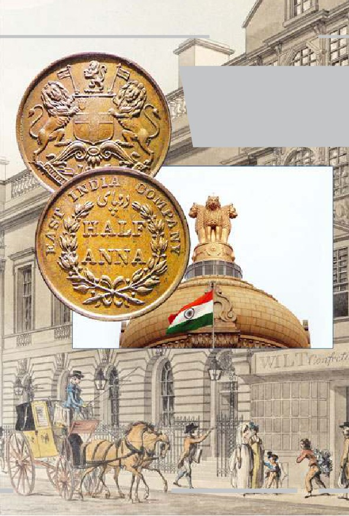
ADNAN HARUN YAHYA
Hindistan'da kurulan Doğu Hindis-
tan Şirketi (East India Company) ile
Hindistan'ın İngiliz derin devleti ta-
rafından sömürgeleştirilme hikayesi
başladı. Bu proje, diğer ülkeler üze-
rinde de devam edecekti.
(Altta sağda) İndian Civil Service
binasının çatısı
59
60
Doğu Hindistan Şirketi, Babil bankacılık sistemine dayanan ve gü-
nümüz merkez bankacılığının ilk adımı olan "Kısmi Rezerv Bankacılığı"
sistemini Hindistan'dan İngiltere'ye taşımıştı. (Kısmi Rezerv Bankacılığı,
bankaya yatırılan paranın belli bir miktarının rezervde tutulup, geri kala-
nının kredi ve diğer şekillerde yatırımcılara ve piyasaya verilmesi esasına
dayanan bankacılık sistemidir.) Bu finans sistemi pek çok ilginç uygula-
mayı da beraberinde getirdi. Fransız Devrimi, Napolyon Savaşları, Anglo-
Boer Savaşı [Britanya İmparatorluğu ile Güney Afrika'daki iki Boer (Af-
rika) Cumhuriyeti arasındaki savaş], I. Dünya Savaşı, Bolşevik Devrimi gi-
bi çatışma ve savaşların ortaya çıkışında özellikle bu finans sisteminin iş-
leyişi oldukça etkili oldu. Bolşevik Devrimi dahi, İngiliz derin devletinin
güdümündeki gizli örgütler tarafından planlanmış ve finanse edilmiştir.
Devrimin bağımsız bir hareket olmadığını Mart 1922'de Lenin de kabul
etmiştir. 11. Parti kongresinde Lenin, partinin "dev bir bürokrasi" tara-
fından idare edildiğini açıkça söylemiştir.13
Savaşların, rezerv bankacılığı için, önemli bir kar imkanı olarak gö-
rüldüğü gerçeği, kuşkusuz günümüzde daha fazla deşifre olmuştur. Eski
istihbarat ajanı Dr. John Coleman, bu durumu şu ifadelerle açıklamıştır:
I. Dünya Savaşı üzerine tarih bilimci Alan Brugar, uluslararası ban-
kaların savaşta ölen her bir askerden 10.000 Dolar kar ettiklerini tah-
min ediyor. Savaşın her iki tarafını da finanse eden Illuminati-Rothsc-
hilds-Warburg-Federal Rezerv Bankaları'nın oluşturduğu 300 kişilik
komiteye göre hayat oldukça ucuz.14
Burada adı geçen 300 kişilik komite, ilerleyen satırlarda detaylı ola-
rak anlatılmıştır.
Doğu Hindistan Şirketi'nin şekillenişi asıl olarak başta Hindistan,
Çin ve Güney Afrika Cumhuriyeti olmak üzere doğal kaynakları zengin
olan ülkeleri sömürmek amacını taşıyordu. "Kısmi Rezerv Bankacılığı", yu-
karıda da belirttiğimiz gibi, İngiltere ve Amerika tarafından I. Dünya Sa-
ÜST AKIL İNGİLİZ DERİN DEVLETİNİN İÇYÜZÜ
ADNAN HARUN YAHYA
vaşı'nın finansmanında kullanılmıştı. 1661 yılında İngiliz Kralı II. Char-
les, Doğu Hindistan Şirketi'ne bağımsız devletlere savaş açma veya onlarla
barış yapma imtiyazını vermişti. Finanstan sorumlu özel bir firmaya, dev-
letlerle savaşa girme veya savaşı durdurma yetkisi verilmesi bir ilkti. Çe-
şitli ülkelerdeki tarım arazilerine ve ürünlere bu yetki ile el konabilmiş,
bir finans firması, çeşitli ülkelerin prensleriyle muhatap hale gelmiş ve pi-
yasadaki para arzını arttıran kısmi rezerv sistemine hakim olmuştu. 1830
yılı itibariyle tüm Hindistan, Doğu Hindistan Şirketi'nin egemenliği altı-
na girmişti.15
1702 yılında Doğu Hindistan Şirketi, ismini İngiliz Doğu Hindistan
Şirketi [British East India Co. (BEIC)] olarak değiştirmiş ve Hindistan'da
uygulanan bu rezerv sistemi tüm dünyaya yönelik uygulanır hale gelmiş-
ti. Bu sistem, günümüzde tüm piyasaları belirleyen federal rezerv banka-
cılığının yani merkez bankalarının da kökenidir.
İngiliz derin devleti-
nin güdümünde ku-
rulan Doğu Hindistan
Şirketi, çeşitli ajanlar
yoluyla Hindistan'da
ırkçılığı hızla yaygın-
laştırdı. Müslümanlar
ve Sihler arasındaki
ilk anlaşmazlıklar, bu
faaliyetler sonunda
ortaya çıktı.
61
62
İngiliz Doğu Hindistan Şirketi'nin ilk uygulamalarından biri, kast
sistemine karşı çıkan Sihlerin gücünü kırmak için ajanlar kullanmak ol-
du. Hindistan'da geleneksel olarak var olan kast sistemi, İngilizlerin bu et-
kisinin ardından ırkçılığı ön plana çıkaran ürkütücü bir hale büründü. İn-
giliz derin devletinin etkisiyle Müslümanlar ve Sihler arasında da derin ay-
rılıklar baş gösterdi.
İngiliz derin
devleti tarafın-
dan ırkçılık ve
nefret tohumla-
rının atılma-
sıyla, yıllarca
Hindistan'da ça-
tışmalar dinme-
miştir. 1984 yı-
lında yaşanan
vahşet bunlar-
dan sadece bir
tanesidir.
ÜST AKIL İNGİLİZ DERİN DEVLETİNİN İÇYÜZÜ
ADNAN HARUN YAHYA
Hindistan'da meydana gelen Sih-
Müslüman çatışmaları İngiliz derin
devletinin bölgeye getirdiği büyük
belalardan biridir. Yıllarca kardeşçe
yaşayan halklar, bir anda çatışan kar-
şıt gruplar haline gelmiştir.
1813 yılında parlamentoda yapılan temsillerden sonra İngiliz Hükü-
meti, İngiliz Doğu Hindistan Şirketi ile olan sözleşmesini 30 yıl daha uzat-
tı. 1833 yılında parlamento, sözleşmeyi tekrar 20 yıl daha uzatma kararı
aldı. Hindistan'da, İngiliz idaresine karşı görüşler ortaya çıkmış ve
1857'deki Büyük Hint Ayaklanması'nın (Sepoy İsyanı) hemen ardından
Hindistan doğrudan doğruya İngiliz İmparatorluğu'na bağlanmış ve 1876
tarihinde hukuki olarak Kraliçe Victoria, Hindistan İmparatoriçesi sayıl-
mıştı. Aynı yıl içerisinde oluşan kıtlık, 2 milyondan fazla alt sınıf kabul
edilen Hintlinin ölümüne sebep oldu. Bununla birlikte, İngiliz Doğu Hin-
distan Şirketi'nin hakimiyeti boyunca 6 milyondan fazla alt sınıf Hintli kıt-
lık yüzünden hayatını kaybetmişti.
63
64
Kraliçe Victoria,
1876 yılında hu-
kuki olarak Hin-
distan İmparato-
riçesi sayılmıştır.
Bu tarih, Hindis-
tan'ın resmi ola-
rak İngiliz derin
devleti himayesi
altına alınışını
belgelemektedir.
ÜST AKIL İNGİLİZ DERİN DEVLETİNİN İÇYÜZÜ
ADNAN HARUN YAHYA
İngiliz derin dev-
letinin güdümün-
deki İngiliz Doğu
Hindistan Şirke-
ti'nin Hindis-
tan'daki faaliyet-
leri boyunca, alt
sınıf olarak sayı-
lan 6 milyondan
fazla Hintli, kıtlık
yüzünden haya-
tını kaybetmiştir.
İngiliz derin devletinin hakimiyeti, Hindistan'da bu tarihlerden
sonra daha da güçlendi. İngiltere'nin en iyi kurumlarında yetişen ki-
şiler, Hindistan'da idari pozisyonlara ve toplumu yönlendirecek basın
ve hukuk gibi önemli pozisyonlara getirildiler. İngiliz derin devleti,
sadece ülkenin genelinde değil, prensliklerin de tümünde hakimiyet sa-
hibi olduğu için her yere nüfuz edebildi. Her prensin yanına bir İngi-
liz komiser atandı. Söz konusu komiserlerin, prensleri kontrol altına
alan, denetleyen kişiler olduğu herkes tarafından biliniyordu. Ülkenin
askeri özgürlüğü yoktu; içte olduğu gibi dış politikada da hiçbir ba-
ğımsızlığı bulunmuyordu. İngiliz hakimiyeti ile birlikte Hindistan'a
ait her şey İngiliz derin devletinin idaresi altına girmişti.
65
66
(Yukarıda) 1765-1805 yılları arasında Hindistan'da,
İngiliz Doğu Hindistan Şirketi'nin hakim olduğu
yerler, pembe renk ile gösterimiştir.
ÜST AKIL İNGİLİZ DERİN DEVLETİNİN İÇYÜZÜ
ADNAN HARUN YAHYA
(Aşağıda) 1837-1857 yılları arasında Hindistan'da, İngiliz
Doğu Hindistan Şirketi'nin hakim olduğu yerler, pembe
renk ile gösterilmiştir. Bu bölgeler, İngiliz hakimiyet böl-
geleri olarak tanımlanmıştır.
Görülebildiği gibi İngiliz derin devleti, yaklaşık bir yüzyıl
içinde, bütün Hindistan'a hakim olmuştur. Dikkat edilirse
hakimiyet bölgeleri, genellikle Hindistan'ın ticaret yol-
ları, metropolleri, kıyı kesimleri ve sınır bölgeleridir.
67
68
Afyon ticaretinin de, İngiliz derin
devletinin etkisiyle geliştiği ve Hindistan
üzerinden en önemli sömürü kaynakla-
rından biri haline getirildiği bilinmekte-
dir. İngiltere'nin Hindistan'ı işgalinde ta-
nınan bir figür olan Robert Clive, 1765
yılına kadar dünyanın afyon yetiştiricili-
ği bakımından en zengin arazilerini tam
olarak kontrolü altına aldı.16 Bölgeye ha-
kim olan ırkçı ve ürkütücü tabloya, iler-
leyen yıllarda artık uyuşturucu ticareti de
eklenmişti. İngiliz derin devleti, iyi bir
pazar olduğunu düşündüğü Hindis-
tan'da da idareyi ele alarak, halk arasın-
da ayrılık çıkararak, ırkçılığı önemli bir
koz olarak kullanarak, ülkenin kaynakla-
rını ele geçirerek ve uyuşturucu trafiğini
kontrol altına alarak hakimiyet kurabil-
mişti.
Hindistan, o tarihten itibaren İngi-
liz derin devletinin pek çok propaganda
projesini yürüttüğü bir ana üs haline gel-
miştir. Bu projenin en önemli idari mer-
cii ise, İngiliz Doğu Hindistan Şirketi ol-
muştur. Dünyayı idare etmek adına ku-
rulacak olan tüm gizli derneklerin ana
karargahı olan bu şirket, İngiliz derin
devletinin 19. yüzyıldan itibaren dünya-
ya hakimiyetinin temel adımını oluştur-
maktadır.
ÜST AKIL İNGİLİZ DERİN DEVLETİNİN İÇYÜZÜ
ADNAN HARUN YAHYA
İngiliz derin devletinin Hin-
distan hakimiyeti sonrasında
Hintli yerliler, bölgede yaşa-
yan İngilizlerin kölesi konu-
muna gelmişlerdir.
69
70
O dönemlerde Hintliler
için Hindistan'da ya-
şam, zengin İngilizlere
hizmet etmek anlamına
gelmektedir.
ÜST AKIL İNGİLİZ DERİN DEVLETİNİN İÇYÜZÜ
ADNAN HARUN YAHYA
İngiliz derin devletinin
sembolü olan filler, Hin-
distan'da, İngiliz ailelere
hizmet etmek için yoğun
olarak kullanılmıştır.
71
72
Kraliyet Akademisi (Royal Society)
1660 yılında, İngiltere'nin kanlı bir iç
savaştan çıkmasının hemen ardından ol-
dukça karışık bir restorasyon dönemi baş-
lamıştır. Kraliyet Bilimler Akademisi'nin
(Royal Society) kuruluşu bu döneme
rastlamaktadır. Kral 2. Charles, deney-
sel fiziğe merakı nedeniyle Kraliyet
Akademisi'nin kuruluşunu teşvik
etmiştir. Kraliyet Akademisi,
daha önceki bölümlerden
hatırlayacağımız gibi, Dar-
win'in "bulldog'u" olarak
anılan Thomas Huxley'in
üye olduğu bir kurumdur
"Darwin'in bulldog'u"
ve Huxley Darwinizmi
olarak tanınan Thomas
yaygınlaştırmaya destek ol-
Huxley ve üyesi ol-
duğu Kraliyet Akade-
makla görevlendirilmiştir. Yi-
misi'nin arması.
ne başta da belirttiğimiz gibi bu
kurumun temel hedefi, mümkün olan en etkili
yöntemlerle dinsizliği yaygınlaştırabilmektir. Darwinizmin yaygınlaştırıl-
ması da bu yöntemlerden biridir.
Kraliyet Akademisi'nin başlangıcı, Londra'da, "doğa felsefesi" prob-
lemlerini tartışmak üzere bir araya gelen bilim adamlarının 1645'ten iti-
baren "Invisible College" (Görünmez Okul) adıyla düzenledikleri gizli ve
gayri resmi toplantılardır. Cromwell'in iktidarı döneminde, Operatif Ma-
son Locaları'na üye olarak kabul edilmiş bilim adamları, ateist Mason lo-
calarının gizli toplantılarına katılıyor ve birbirlerini tanıma fırsatını elde
ediyorlardı. (Operatif Mason Locaları, Ortaçağ'da katedralleri, sarayları,
şatoları inşa eden mason localarıdır)
ÜST AKIL İNGİLİZ DERİN DEVLETİNİN İÇYÜZÜ
ADNAN HARUN YAHYA
"Görünmez Okul" bu kişiler tarafından kurulmuştu. İngiliz filozof
Sir Francis Bacon'un düşüncelerinin etkisinde Gül Haç Kardeşliği (16.
yüzyılda Avrupa'da kurulan gizli bir örgüt) tarafından kurulan bu örgüt,
sonradan Kraliyet Akademisi'ne dönüştürülecekti.
Kraliyet Akademisi'nin, döneminde bilinen bir homoseksüel olan Sir
Francis Bacon'un, yine homoseksüel olan kişileri seçmesiyle oluşturuldu-
ğu ve 17. yüzyılın homoseksüellerini barındıran bir kurum olduğu bilin-
mektedir.17 Bu, günümüz Kraliyet Akademisi tarafından fazla dile getiril-
mese de, durumun böyle olduğu tarihi kaynaklar tarafından sıklıkla doğ-
Kraliyet Akade-
misi, "Invisible
College" adıyla
düzenlenen
gizli ve gayri
resmi toplantı-
larla şekillen-
miştir. Yanda
bu okulun tem-
sili çizimi görül-
mektedir.
73
74
rulanmaktadır. Yine Kraliyet Akademisi'nin ku-
rucularından bir rahip olan Dr. John Wilkins'in
de homoseksüel olduğu belirtilmektedir. Ho-
moseksüel rahip Dr. Wilkins, kendi evinde ve
Wadham Koleji'nde (Wadham Koleji, Oxford
Üniversitesi'ne bağlı fakültelerden bir tanesidir)
ilk toplantıları yapmış, Kraliyet Akademisi'nin
zeminini oluşturmuştur. Bir başka kurucu olan
Sir Robert Moray de, İskoçyalı bir homoseksü-
eldir. Kurumun ilk üyelerinden olan ve daha
sonraları Kraliyet Akademisi'nin başkanlığına
getirilecek olan Robert Boyle de, İrlanda'da doğ-
muş bir homoseksüeldir.18
Yakın zamanda Kraliyet Akademisi tara-
fından Cambridge Üniversitesi'nden Doçent
Dr. Bruno Perreau'ya, "What's a family? Social
Work and Gay Adoption in France and in the
United Kingdom" (Aile nedir? Fransa ve İngil-
(Üstte) Homoseksüel rahip
tere'de sosyal hizmet ve homoseksüellerin evlat
John Wilkins
edinmesi) isimli çalışması nedeniyle verilen
(Altta) Kraliyet Akademi-
si'nin başkanlarından homo-
ödül de, kurumun benzer düşüncelere hala des-
seksüel Robert Boyle.
tek verdiğini doğrulamaktadır.19
Kraliyet Akademisi'nin şekillenmesinde, Oxford'daki Wadham Ko-
leji'nde 1648'lerde gerçekleşen toplantılar oldukça etkili olmuştur. Söz ko-
nusu cemiyetin de bilimsellik kisvesi altında kurulmasının en önemli se-
bebi, evrim fikrinin şekillenmesine yardımcı olmasıdır. 1800'lerde resmi
anlamda geliştirilecek olan evrim safsatasının çıkış noktası, bu gizli vakıf
ve yapılanmalar olmuştur. Gizli örgütlenmeler halinde, doğa felsefesinin
tartışılmasıyla başlatılan bu hareket, aslında bilim adına bir aldatmacayı
ÜST AKIL İNGİLİZ DERİN DEVLETİNİN İÇYÜZÜ
ADNAN HARUN YAHYA
Akademi'nin ilk top-
lantılarının yapıldığı
Wadham Koleji
üretmek amacını taşımaktadır. Bunun başlangıcı da, söz konusu görün-
mez okullar olmuş ve ardından bu okullar, adı geçen homoseksüel yöne-
ticilerin kontrolünde Kraliyet Akademisi adı altında kurumlaşmıştır.
1703'te Kraliyet Akademisi'nin başkanı seçilmiş ve 1727'deki ölü-
müne kadar derneğin başkanlığını yürütmüş olan Isaac Newton'un me-
kanik evren anlayışı, Kraliyet Akademisi'nin din dışı felsefesini geliştir-
mesinde kullanılmıştır. Kraliyet Akademisi'nin tüm üyeleri, hem kitabı-
nı yayınlamadan önce hem de yayınladıktan sonra Darwin'e büyük des-
tek vermiş ve katkılarda bulunmuşlardır.
Günümüzde, derin devlet faaliyetlerine destekçi olan kurumlardan
sayılan Chatham House'un ilk temelleri Kraliyet Akademisi adıyla atıl-
mıştır. İngiliz derin devletinin istihbarat ve faaliyetleri için yararlandığı
ve kullandığı Chatham House ve diğer kurumlara, daha sonraki bölüm-
lerde yer verilecektir.
75
76
Yuvarlak Masa (Round Table)
İngiliz siyasetçi Cecil Rhodes, daha önce de tanıttığımız gibi, Anglo-
sakson ırkının dünyaya hakim olmasını isteyen homoseksüel ve ırkçı bir
kişilikti. Bu ırkın büyümek ve tüm dünyaya hakim olmak için var olma-
sını istiyordu. Son vasiyetinde şunları söylemişti:
İddia ediyorum ki, bizler dünyadaki en iyi ırkız. Bu nedenle de
dünyada ne kadar çok yer işgal edersek, bu insan ırkı için o kadar
iyidir. İddia ediyorum ki, topraklarımıza kattığımız her bir arşın
daha fazla İngiliz ırkının doğmasına sebep olacaktır. Aksi takdir-
de, bu ırk hiç meydana gelemezdi.20
Rhodes, Anglosakson ırkının hakimiyetini istiyor ve bunun için de
dünya genelinde çeşitli toprakların işgal edilmesi gerektiğini düşünüyor-
du. İngiltere tarafından yönetilecek bir dünya devletini oluşturmak için
de Yuvarlak Masa hareketinin oluşmasını istiyordu. Rhodes, Güney Af-
İngiliz bir ırkçı olan Cecil Rhodes, Anglosakson ırkının dünya
hakimiyeti için Yuvarlak Masa hareketinin oluşmasını istiyordu.
ÜST AKIL İNGİLİZ DERİN DEVLETİNİN İÇYÜZÜ
ADNAN HARUN YAHYA
Tüm Afrika'yı ayakları altına al-
mış şekilde resmedilen Cecil
Rhodes, İngiliz derin devletinin
Afrika'ya yönelik planlarını uy-
gulamaya koyan kişiydi.
77
78
rika'da görevlendirilmiş bir siyasetçiydi. Güney Afrika'daki siyahilerin
elindeki toprakları zorla alma ve o bölgelerde acımasızca hakimiyet kur-
ma eylemlerini gerçekleştiren şahsiyetti. Bunu sağlamak için bölgede, özel-
likle bir kabileyi diğerine karşı kışkırtma eylemleri başlatmış ve çeşitli
ayaklanmaların öncüsü olmuştur. Bu ayaklanmalar sonrasında Güney Af-
rika'nın kontrolünün tamamen İngiltere'nin eline geçmesini sağlamıştır.
İngiliz sömürgelerinin ele alındığı bölümde Rhodes'un uygulamalarına
detaylı olarak yer verilecektir. Rhodes'un zalim uygulamalarının en
net özeti şu sözleri olmuştur: "Toprağı, zencilere tercih ede-
rim."21
Vasiyetinde Rhodes'un Afrika ve Anglosakson ırkı için söy-
lediği diğer ifadeleri şu şekildedir:
Afrika hala bizim için hazır olarak yatıyor, orayı almak bizim
görevimiz. Daha fazla toprak elde etmek için her türlü fırsatı
değerlendirmek bizim görevimiz ve şu düşünceyi sürekli olarak
canlı tutmamız gerekir: Daha fazla toprak daha fazla Anglo-
sakson ırkı demektir, ki bu ırk, dünyanın sahip olduğu en in-
sani, en onurlu ırktır.22
Böylesine korkunç bir ırkçı zihniyet, dönemin İngiltere de-
rin devletinin temel zihniyetini temsil ediyordu. Aynı dönem-
de Amerika'nın askeri yollarla kesin olarak ele geçirilemediği-
nin anlaşılması, derin devletin ırk silahını daha çok ön plana çı-
karmasına sebep olacaktı. İngiliz derin devleti, kendi ırkını ön-
cü kılabilmek için bu tarihten sonra öjeni politikalarına ağırlık
verdi (Öjeni: Sakat ve hastaların ayıklanması ve sağlıklı bireyle-
rin çoğaltılması yoluyla bir insan ırkının "ıslah edilmesi" anla-
mına gelen kavram). Bu politikayı ayakta tutacak olan ise, Ce-
cil Rhodes ve Lord Alfred Milner'ın Yuvarlak Masa (Round
Table) hareketi olacaktı.
ÜST AKIL İNGİLİZ DERİN DEVLETİNİN İÇYÜZÜ
ADNAN HARUN YAHYA
İngiliz derin devleti, Afrika'yı
zengin yeraltı kaynakları için he-
deflediğini itiraf etmiş, Rhodes
bu amaçla acımasız eylemler
gerçekleştirmişti. Rhodes'un bir
toplantı salonunda temsili resmi.
79
80
Yuvarlak Masa hareketinin
meydana getirdiği "Öjeni Top-
lumu", sakat ve yaşlıların eli-
mine edilmesi fikrine dayanı-
yordu. Afrika'da
gerçekleştirilen korkunç ey-
lemler, kendini üstün ırk gö-
ren İngiliz derin devletinin acı-
masızlığını gösteriyordu.
ÜST AKIL İNGİLİZ DERİN DEVLETİNİN İÇYÜZÜ
ADNAN HARUN YAHYA
İngiliz derin devleti-
nin emperyalizm fik-
rinin nasıl bir acıma-
sızlık getirdiği,
özellikle Afrika'da
yaşanan zulüm ile
çok iyi anlaşılmakta-
dır. Korkunç yön-
temlerle uygulanan
sömürgecilik ve kö-
lelik, bugün farklı
isimler altında hala
sürmektedir.
Yuvarlak Masa hareketi, 1880'lerde ve 90'larda "öjeni" toplumu mey-
dana getirdi. Öjeni toplumunun hedefi, "aşağı ırk olarak görülen insanla-
rın ıslah edilmesi, yani bir şekilde toplumdan elenmesi" gibi hastalıklı bir
mantığa dayanıyordu. Bu korkunç sosyal Darwinist zihniyet, evrim fikri-
nin Darwin'den çok önce, bu derneklerde geliştirilmesiyle köklü şekilde
yer bulmuş ve Darwin'den sonra ise açık bir politika şeklinde uygulan-
mıştır. Darwin'in de bu derneklerde ortaya çıkarılan bir mühendislik ça-
lışması olduğunu tekrar hatırlatmak gerekir. İngiltere'de öjeni vahşetinin
öncüsünün, Darwin'in kuzeni Francis Galton olduğunu da burada hatır-
latalım. Darwin'in oğlu Leonard Darwin ise öjeni sapkınlığının İngilte-
re'deki savunucularından ve uygulayıcılarındandı. Ayrıca Winston Churc-
hill de öjeni hareketine destek verenler arasındaydı.
81
82
Bu kişilere göre asıl ırk, İngilizlerin temsil ettiği Anglosakson ırktır;
onun dışındakiler ise bir şekilde elenmelidir. Bu uğurda yapılan uygula-
malar sırasında, kökleri büyük ölçüde İngiliz İmparatorluğuna dayanan
Amerika da, Anglosakson dünya devletine dahil edilmeli, eyaletlerdeki
mal varlıkları İngiltere tarafından kontrol edilmelidir.23
Yuvarlak Masa yöneticileri, söz konusu hedefin gerçekleşebilmesi
için, ülkelere ait tüm üretim malzemelerini, tüm finans sektörünü ve bi-
lim kurumlarını ele geçirmeleri gerektiğini düşünmüşlerdir. Hedef, bir
nevi "polis devleti" gibi özel bir yapı kurarak bu yapının dünyada üstün
ırkı hakim kılması ve dünyadaki diğer ırkları yok ederek, kalanları da sö-
mürgeleştirerek tek bir dünya devleti elde edilmesidir.
Cecil Rhodes'un Yuvarlak Masa hareketi, temelde Güney Afrika'yı
imparatorluk ağının merkezi olarak görmüş ve orada konumlanmıştır.
Güney Afrika'da şekillenen ve korkunç katliamlara sebep olan apartheid
(aşırı ırkçılık) rejimi, bu kişinin korkunç ırkçı politikalarının bir sonucu-
dur.
ÜST AKIL İNGİLİZ DERİN DEVLETİNİN İÇYÜZÜ
ADNAN HARUN YAHYA
Güney Afrika'yı kana bulayan aşırı
ırkçılık (apartheid) rejimi, Cecil Rho-
des'un Güney Afrika'daki korkunç
ırkçı uygulamalarının bir sonucudur.
83
84
Yuvarlak Masa'nın kuruluşunu gerçekleştiren Illuminati yapılanma-
ları daha sonra Bilderberg Group, the Royal Institute of International Af-
fairs yani diğer adıyla Chatham House, CFR, The Trilateral Komisyon ve
Roma Kulübü gibi derneklerin de kuruluşuna öncü olmuştur. Bu der-
nekler, İngiliz derin devletinin desteğini alan ve özellikle uluslararası faa-
liyetleri gerçekleştirmek üzere organize olmuş derneklerdir. (Illuminati:
1 Mayıs 1776'da kurulmuş olan; zihin kontrolü uygulayarak, hükümetle-
ri ve kuruluşları ele geçirerek Yeni Dünya Düzeni'ni sağlamak amacıyla
hareket ettiği iddia edilen, monarşileri yıkmayı, dini inançları yok etme-
yi, ulus devletleri ve vatanseverliği sonlandırarak sosyal düzeni alt üst et-
meyi planladığı öne sürülen gizli yapılanmadır.)
ÜST AKIL İNGİLİZ DERİN DEVLETİNİN İÇYÜZÜ
ADNAN HARUN YAHYA
#RhodesMustFall
(Rhodes Yıkılmalı)
9 Mart 2015 tarihinde,
Cape Town Üniversitesi
bahçesinde bulunan
Cecil Rhodes heykelinin
yıkılması için başlatılan
protesto eylemleri,
dünya çapında büyük
bir destek gördü. 9 Ni-
san 2015 tarihinde üni-
versite konseyinin ka-
rarı ile heykel yıkılarak
kaldırıldı.
Bu eylem, Güney Afrika
halkının, Cecil Rhodes
ve onun temsil ettiği
İngiliz derin devletine
yönelik öfkesini temsil
etmektedir. Geçmişte
yaşanan ırkçı eylemler,
Güney Afrika halkının
hala zihnindedir. Bu
sapkın zihniyetin etki-
leri ise, ırkçılığı canlı
tutmak isteyen çeşitli
kesimler içinde hala gö-
rülmektedir.
85
86
300'ler Komitesi (Committee of 300)
1727 tarihinde kurulan 300'ler Komitesi veya diğer adıyla Olimpos,
Yuvarlak Masa da dahil olmak üzere derin devlet adına hareket eden tüm
gizli örgütlerin ana karargahı konumundadır. Şu an her ne kadar Ameri-
ka ağırlıklı faaliyet yapsa da İngiliz aristokratları tarafından kurulmuştur.
Bu kurumun özellikle politikayı, ticareti, banka sistemlerini, medyayı ve
askeri sistemi organize ettiği bilinmektedir. Chatham House, CFR, Bil-
derberg Grubu, Trilateral Komisyon, Masonlar, Gül-Haç Kardeşliği, Ro-
ma Kulübü, RAND Corporation, PNAC (The Project for the New Ame-
rican Century - Washington merkezli yeni-muhafazakar görüşlü think-
tank), 13'ler Kraliyet Konseyi gibi dünyada pek çok olaya yön vermekte
olan komite ve vakıfların genel olarak yönetimi ve kontrolü, uzun zaman
varlığı gizli tutulmuş olan 300'ler Komitesi'ne bağlıdır. Komite, merkez
bankaları gibi büyük finansal kurumları ve hükümetleri denetim altında
tutabilmek için Yuvarlak Masa gruplarının tümünü, düşünce kuruluşla-
rını ve pek çok gizli kurumu içine alan bir ağ kullanmaktadır.24
Chatham House, Bilderberg Group, CFR gibi gü-
nümüzde dünyada pek çok olaya yön vermekte
olan komite ve vakıfların yönetimi, gizli bir ya-
pılanma olan 300'ler Komitesi'ne bağlıdır. Komi-
te'nin kökeni ise İngiliz Doğu Hindistan Şirke-
ti'ne dayanmaktadır.
ÜST AKIL İNGİLİZ DERİN DEVLETİNİN İÇYÜZÜ
ADNAN HARUN YAHYA
George H. W. Bush da dahil olmak üzere pek çok ABD başkanının
Chatham House'un etkisi altında kararlar aldığı bilinmektedir. Bu kurum
da talimatlarını 300'ler Komitesi'nin yüksek yönetim halkası olan Olim-
pos'tan almaktadır.25 Olimpos ismi, söz konusu grubun kendilerini sözde
Olimpos tanrıları kadar güçlü saymalarından ileri gelen sembolik bir isim-
dir ve komitenin kendisini ne kadar yüceltip güçlü gördüğünün de bir ifa-
desidir.26 1991 yılındaki Körfez Savaşı'nda, 300'ler Komitesi kararları doğ-
rultusunda, Amerikan Silahlı Kuvvetleri'nin, Kuveyt'i İngiliz kontrolü al-
tına getirmek amacıyla kullanıldığı artık bir sır değildir.27
Eski istihbaratçı Dr. John Coleman'ın yaptığı araştırmalara göre
300'ler Komitesi, İngiltere'nin en eski kuruluşu İngiliz Doğu Hindistan Şir-
keti ile doğrudan bağlantılıdır. Doğu Hindistan Şirketi'nin bir çok üst dü-
zey yöneticisinin komünist olduğu bilinmelidir. Daha önce detaylarını
anlattığımız gibi Hindistan'da İngiliz Doğu Hindistan Şirketi'nin önayak
olmasıyla geliştirilen afyon ticareti, önce şirketin kendisinin, ardından da
onun bünyesinde kurulan 300'ler Komitesi'nin oldukça güçlenmesine se-
bep olmuştur. Parayla güçlenen bu kurum, giderek dünyayı yönetmeye
başlamıştır.
Gerek İngiliz Doğu Hindistan Şirketi, gerekse onun izinden gelen
300'ler Komitesi'nin derin devlet kökenli liderlerinin genel olarak Hristi-
yanlık, Müslümanlık, Musevilik gibi tüm hak dinlere karşı nefret göster-
dikleri bilinmektedir. Illuminati, özellikle bu amaç için kurulmuş bir giz-
li yapılanmadır. Illuminati'nin kurucularından Adam Weishaupt'un 1 Ma-
yıs 1776'da yaptığı şu açıklama, söz konusu derin devlet kurumlarının po-
litikalarını anlamak bakımından önem taşır:
Sırrımız şudur: Eğer dinleri yok edeceksek kendimizi tam dindar gös-
termeliyiz. Unutmayın ki, amaca bizi ulaştıran her yol mübahtır ve
iyi insanlar kötülerin yaptıkları gibi amaçlarına ulaşmak için her yo-
lu denemelidirler. Bunu yapmanın tek yolu gizli bir cemaat olarak ça-
87
88
Yandaki çizim, İngil-
tere'nin liderliğinde
bir dünya düzeni pla-
nını temsil etmekte-
dir. Plana göre diğer
devletler, İngilte-
re'nin sömürgesi ola-
rak var olacaklardır.
lışmak, sessizlik içinde devlet yönetimlerini ele geçirmek ve onların
olanaklarını kendi amaçlarımız için kullanmaktır. Bu, düzenin ama-
cı Hristiyanlık ve tüm dinlerin yok edilmesi ve tüm sivil hükümetle-
rin devrilmesidir.28
Bu fikir sistemi ile ortaya çıkan İngiliz derin devlet kurumları, ger-
çekten de amaçlarını bu yönde geliştirmişlerdir. Kuruldukları dönemden
bu yana hedefleri, özellikle tüm İbrahimi dinlerin toplum içinde etkisini
yitirmesini sağlamak ve çeşitli darbelerle sivil hükümetleri ortadan kaldı-
rıp, kendilerine bağlı hükümetler dizayn etmek olmuştur. İngiliz bir Ha-
sidik Musevi ve aynı zamanda Siyonist hareketin Amerika'daki liderle-
rinden olan gazeteci Jacob de Haas, dünyayı üç yüz insanın yönettiğini,
hatta bunların Wilson gibi Amerikan başkanlarını seçtiklerini ve bu in-
sanların Paris Milletler Cemiyeti toplantısına kimlerin eşlik edeceğini bi-
le belirlediklerini açıklamaktadır.29
Alman devlet adamı Walther Rathenau, 24 Aralık 1921 tarihinde ba-
sılan makalesinin bir bölümünde şunları söylemiştir:
ÜST AKIL İNGİLİZ DERİN DEVLETİNİN İÇYÜZÜ
ADNAN HARUN YAHYA
Birbirini tanıyan sadece üç yüz adam Avrupa'yı idare etmektedir. Bu
adamlar haleflerini kendi çevrelerinden seçerler. Bu adamların, tas-
vip etmedikleri her devleti yok edecek araçları bulunmaktadır.30
Bu açıklamaları nedeniyle Jacob de Haas da, Walther Rathenau da,
esrarengiz suikastlarla öldürülmüşlerdir…
300'ler Komitesi'nin de, tıpkı Yuvarlak Masa ve İngiliz derin devle-
tinin etkisindeki diğer komitelerde olduğu gibi İngiliz ırk üstünlüğü kav-
ramına uygun olarak hareket ettiğini burada hatırlamak gerekmektedir.
Onlar için daha küçük bir dünya, idaresi daha kolay bir dünyadır. Onla-
ra göre dünyanın kaynakları değerlidir; ama bunlar "gereksiz" halk top-
lulukları tarafından sürekli olarak tüketilmektedir. Bu kişiler kendi ırkla-
rının mutlak varlığını, bu sözde "sorun" için tek çözüm olarak görmekte-
dirler. İngiliz derin devletinin gizli kurumlarının hedeflerini ise Dr. John
Coleman şu şekilde açıklamıştır:
İncil'in Yaratılış Bab'ında belirtilen "üre ve dünyayı fethet" emri an-
cak uzun vadeli işlerin güvencesi olan endüstriyel iş pazarının yok
edilmesiyle durdurulabilir. Bunu gerçekleştirmenin yolu Hristiyanlı-
ğa saldırmak, yavaşça endüstriyel ülkeleri çökertmek, 300'ler Komite-
si'nce gereksiz görülen ve "nüfus fazlalığı" oluşturan yüz milyonlarca
insanın imha edilmeleri ve Komite'nin küresel planına karşı çıkan her
liderin ortadan kaldırılmasından geçmektedir.31
Bu hedefi gerçekleştirebilmek için 300'ler Komitesi, İngiliz derin dev-
letine bağlı tüm kurumların yaptığı gibi kendisine bir yayılma ve genişle-
me politikası belirlemiştir. Bu politikaya uygun olarak yapılması gere-
kenler vardır. 300'ler Komitesi'nin ileriye dönük planları, örgütün kurul-
duğu günden bu yana canlıdır ve çeşitli aşamalarla safha safha hayata ge-
çirilmektedir. Bu aşamalar şöyle özetlenebilir:
89
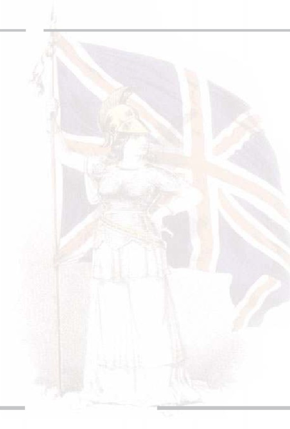
90
* Güçsüz devletleri sömüren bir para politikasıyla ortaya çıkan ve
finansal güçle yükselen 300'ler Komitesi, ilk olarak tüm dinlerin
ve para politikalarının tek elden yönetildiği bir dünya düzenini ar-
zulamaktadır. Bu, İngiltere'nin başı çektiği ve İngiltere'nin hakim
olduğu bir dünya düzeni olmalıdır. Bunun için ilk olarak dinlerin
kontrol altına alınması gerektiğine inanılmaktadır. 1700'lerde
planlarını Hristiyanlık üzerine yapmış olan derin devlet temsilci-
leri, 1920'lerden itibaren bütün kiliselerin bir araya toplandığı bir
düzeni kurgulamaya başlamışlardır. Böylelikle din ve inançları tü-
müyle ve bir anda reddetmeyecek ve tepkilere maruz kalmayacak
ama tüm din ve inançları tek elden kontrol edebileceklerdir. Şu be-
lirtilmelidir ki, söz konusu tek kilise, herhangi bir dinin temsilci-
si olmayan, tamamen kurgulanmış bir sahte dinin sahte kilisesi
olacaktır.
* Bağımsız devletlerin yönetimini ele geçirebilmek, onların sosyal
sistemlerini ele geçirmekle mümkün olabilmektedir. Bunun için
sadece liderlerin değil halkların da kontrol altına alınması şarttır.
300'ler Komitesi, bunu sağlayabilmek için özellikle hedeflediği ül-
keler içinde tüm ulusal, milliyetçi düşünceleri ortadan kaldıracak
bir strateji belirlemiştir. Milliyetçi değerler ortadan kalktığında,
halkın uğruna mücadele edebileceği hiçbir şey kalmamış olacak ve
liderlerin kontrol altına alınmasıyla bu halklar zaten kolaylıkla hi-
maye altına girebilecektir. Bugün, Irak gibi ülkelerde uygulanan
usül tam olarak bu olmuştur.
* Homoseksüelliği yaygınlaştırarak insanlar arasında kabul edilir
hale getirmek önemli bir hedeftir. Bunun için ünlü şarkıcıların
konserlerinde, Talk Show'larda, maçlarda seyircilerin önünde ya-
pılan homoseksüel törenleri; moda, yemek, yarışma programla-
ÜST AKIL İNGİLİZ DERİN DEVLETİNİN İÇYÜZÜ
ADNAN HARUN YAHYA
rında homoseksüellerin ön plana çıkarılması; rahip ve imam gö-
rümündeki homoseksüellerin yüceltilmesi; film ve dizi filmlerde
homoseksüelliğin makul hatta özenilir bir yaşam şekli olarak gös-
terilmesi; basın-yayın yoluyla toplumda homoseksüelliğin redde-
dilemez bir "gerçek" olduğu aldatmacasının empoze edilmesi söz
konusu derin devlet komitesinin başlıca görevlerinden biri haline
gelmiştir. Homoseksüelliği dini ve ahlaki değerlerden dolayı ka-
bul etmeyenlerin toplumdan dışlanması, kitle çalışmalarıyla on-
ların susturulması ve bu toplum mühendisliğini kullanarak söz
konusu sapkınlığın dünyanın her yerinde adeta meşru hale geti-
rilmesi yıllardır sistemli olarak kurgulanmaktadır. Okullarda bu
propaganda yoğun olarak yapılmaktadır. Okul kulüplerinde ho-
moseksüellere ayrıcalık tanınması, okullarda homoseksüelliği hoş
karşılamayan öğrencilerin sosyal çevrelerinden ve okullarından
dışlanması aynı mühendislik çalışmasının bir parçasıdır.
İngiltere'yi dün-
yanın hakimi ha-
line getirme
planı, yıllarca çi-
zimlerin konusu
olmuştur. İngiliz
derin devleti, bu
planın altyapı-
sını kurgulamış,
kitleleri ken-
dince buna hazır
hale getirmiştir.
91
92
* Piyasalarda uyuşturucu maddeleri artırmak, bu maddeleri yasal
hale getirmek ve toplum içinde dejenerasyonun kapsamını artır-
mak söz konusu komitenin hedefleri arasındadır. Aile kurumu, de-
jenere edilmesi gereken en önemli kurum olarak görülmektedir.
Çünkü aile değerlerini kaybetmiş toplumların çöküşe daha hızlı şe-
kilde gittikleri aşikardır. Gençleri ümitsiz, amaçsız hale getirmek
planın en önemli parçasıdır. İşsizliğin bunu körükleyeceği düşü-
nülmüş ve 300'ler Komitesi de, Roma Kulübü idarecileri de işsiz-
liğin artmasıyla isteksiz bir gençliğin gitgide batağa sürüklenece-
ğini planlamışlardır. Bu konumdaki genç neslin uyuşturucu ve
dejenerasyona daha fazla meyledeceği ve aile kurumunun tüm
bunların sonucunda yıkılacağı hesaplanmıştır. Şu unutulmamalı-
dır ki, aile kurumlarının yıkılıp yok edilmesi komünist toplumla-
rının öncelikli ve en önemli özlemidir. 300'ler Komitesi'nin ko-
münist-sosyalist liderlerinin öncelikle aile kurumlarını hedefle-
mesi bu nedenle sürpriz olmamaktadır.
* Özellikle büyük şehirlerde nüfus artışını durdurmak için çeşitli
tedbirler almak yine Komite'nin diğer hedeflerindendir. Bu ted-
birlere Pol Pot ve Stalin döneminde gerçekleştirilen soykırım yön-
temleri de dahildir. Pol Pot rejiminin soykırım planlarının teme-
linin, Amerikan Dışişleri Bakanlığı'nda yüksek bir pozisyonda olan
Roma Kulübü üyesi Thomas Enders tarafından atıldığını da bu-
rada belirtmek gerekmektedir. 300'ler Komitesi'nin Kamboç-
ya'daki soykırımdan sorumlu kişileri yargı sürecine dahil etmeme
çabaları da düşündürücüdür.32
* Komite'ye yararı olacak başlıklar dışında tüm bilimsel araştır-
malar durdurulmuştur. Bu konu, özellikle evrim teorisi ile ilişki-
li olarak dikkate alınmalıdır. Keza, bilimsel deliller her yönden ev-
rim teorisinin geçersizliğini ispat etmektedir. Oysa evrim, daha
ÜST AKIL İNGİLİZ DERİN DEVLETİNİN İÇYÜZÜ
ADNAN HARUN YAHYA
Pol Pot rejiminin soy-
kırım planlarının te-
meli, İngiltere Dışiş-
leri Bakanlığı'nda
yüksek bir pozis-
yonda olan Roma Ku-
lübü üyesi Thomas
Enders tarafından
atılmıştır.
Tuol Sleng Hapishanesi, Kızıl Kmerlerin elinden alınıp Soykı-
rım Müzesi haline gelmiştir. Aşağıda görülen ve o dönemde
kullanılan işkence aleti, bu müzede sergilenmektedir.
93
94
önce de belirttiğimiz gibi, İngiliz derin devletinin bir
planı olarak bu komite ve kurumlarda geliştirilmiş
bir safsatadır. Dolayısıyla onlar için evrimi çürütecek
herhangi bir delillin ortaya çıkarılmaması, okullarda
okutulmaması, gündeme getirilmemesi çok önemli-
dir. Bu uğurda, bulunan 700 milyondan fazla fosil
sürekli olarak kamuoyundan saklanmaktadır. Çün-
kü bu fosillerin hiçbir değişime uğramamış, yani ev-
rim geçirmemiş canlılara ait olduğu açıktır ve yer-
yüzünde Darwinistlerin iddia ettiği şekilde değişime
uğramış bir canlı kalıntısı yoktur. Ayrıca moleküler
düzeyde evrim çok ciddi bir açmaz içinde olduğun-
dan, bu konudaki bilimsel gelişmeler de sadece ev-
rimle ilişkilendirilerek dile getirilmekte, sanki evri-
min bir deliliymiş gibi sunulmaktadır. Oysa tek bir
proteinin evrimcilerin iddia ettiği şekilde nasıl ken-
di kendine meydana gelebildiği hala açıklanama-
mıştır. Açıklanmasına da imkan yoktur; çünkü, bir
proteinin oluşması için 100 ayrı proteinin var olma-
sı ve bu üretim işleminde yer alması gerekmektedir.
Bu açmaz, evrimi yok eden en önemli delillerdendir.
Dolayısıyla evrim çökmüş bir teori olmasına rağmen
ayakta tutulmaya çalışılmaktadır. Şu durumda, top-
lum mühendisliğinin, özellikle bilimsel olarak çök-
müş evrim teorisini korumak amacıyla yoğun ola-
rak uygulandığı bilinmelidir. Şu anda okullara, üni-
versitelere, akademik kürsülere, basına, bilimsel eser-
lere ve yayınlara, hatta devletlere hakim olan Darwi-
nist diktatörlük tümüyle 300'ler Komitesi ve onun
yan kuruluşlarına aittir.
ÜST AKIL İNGİLİZ DERİN DEVLETİNİN İÇYÜZÜ
ADNAN HARUN YAHYA
Sürekli karışımıza çıkan
sahte çizimlerle İngiliz
derin devleti, bilinçaltı
telkini ile evrimi redde-
dilemez hale getirmeye
çalışmaktadır. Oysa ev-
rim, tarihin en büyük
bilim sahtekarlığıdır.
95
96
* Nüfus planlaması, daima söz konusu derin devlet kurumlarının
en büyük hedefi olmuştur. 300'ler Komitesi de aynı hedeften yo-
la çıkarak bir strateji belirlemiştir. Bu stratejiye göre gelişmiş ül-
kelerde çıkarılacak kontrollü savaşlarla nüfuslar azaltılacak, fakat
üçüncü dünya ülkelerinde durum daha vahim olacaktır. O ülke-
lerde, tıpkı Thomas Malthus'un ürkütücü nüfus planlaması pro-
jesinde olduğu gibi salgın hastalıklar başlatılacak, Stalin'in uygu-
ladığı açlık politikaları takip edilecek ve böylelikle İngiliz derin
devleti kendince "gereksiz" gördüğü nüfustan kurtulmuş olacak-
tır (Burada hedeflenen söz konusu kişileri tenzih ederiz). Hedef,
2050 yılına kadar, Yuvarlak Masa'nın kurucularının bahsettiği bu
sözde "gereksiz" kalabalıktan kurtulmaktır.
* Çeşitli ülkelerde, teşvik ve ayaklanma yöntemleriyle, çoğunluk-
la basını ve söz konusu ülkelerdeki bazı yancıları kullanarak kriz-
ler çıkarılması bir diğer hedeftir. Krizlerin başlangıç noktaları son
derece basit ve önemsiz olsa da, propaganda yöntemleriyle kısa sü-
re içinde halklar galeyana getirilecek ve önüne geçilemeyen is-
yanlar baş gösterecektir. Bu politika ile ülkelerin kendilerini yö-
netemedikleri algısı oluşturulacak ve o ülkenin mutlaka söz ko-
Ortadoğu ve
Afrika'nın sa-
hip olduğu
ham maddeler,
İngiliz derin
devletinin
kontrolü ve sö-
mürüsü altın-
dadır.
ÜST AKIL İNGİLİZ DERİN DEVLETİNİN İÇYÜZÜ
ADNAN HARUN YAHYA
nusu Komite'nin idaresi altına girmesi gerektiği mesajı verilecek-
tir. Bugün Ortadoğu'ya, Güney Amerika'ya, Afrika'ya, bazı Avru-
pa ülkelerine, hatta Amerika'ya bakıldığında bu sinsi sistemin iş-
liyor olduğunu rahatlıkla görebiliriz. Dünya ülkeleri, açık veya
gizli yollarla İngiliz derin devleti tarafından yönetilmektedir ve
söz konusu ülkelerin halkları, bilmedikleri bir güç tarafından far-
kında olmadan idare edilmekte ve duyarsızlaştırılmaktadırlar. Bu-
nun en büyük olumsuz etkisi hem yöneticilere hem de halklara ol-
maktadır.
300'ler Komitesi'nin üyelerinden biri olan İngiliz filozof ve tarihçi
Lord Bertrand Russell, Afrika için kurguladığı bu politikayı şöyle tarif et-
mektedir:
Eğer bir dünya hükümeti sorunsuz işlerse bazı ekonomik koşulların da
yerine getirilmesi gerekecektir. Sanayide çeşitli ham maddelerin öne-
mi büyüktür... İstenmeyen bir mülkiyete, sadece bireysel veya şirket
mülkiyetlerini değil, aynı zamanda ayrı devletleri de eklememiz ge-
rektiğini düşünüyorum. Yokluğunda sanayi faaliyetlerinin mümkün
olmadığı ham maddeler, uluslararası otoriteye ait olmalı ve ayrı ulus-
lara verilmelidir.33
Russell'ın bahsettiği bu plan günümüzde büyük ölçüde uygulamaya
geçmiştir. Ortadoğu'nun ve özellikle Afrika'nın sahip olduğu ham mad-
deler şu anda ayrı ulusların himayesi altındadır. Bu ayrı ulusları temsil
eden her bir şirket de İngiliz derin devletinin kontrolü altındadır. Afri-
ka'daki ham maddeler, sanayiye muhtaçtır ve bu sanayi olmadan söz ko-
nusu ülke kendi ham maddesini çıkarıp işleyememektedir. Afrika'daki
sistem, özellikle böylesine ilkel ve aciz bırakılmıştır. Bu mekanizma ile
Afrika'nın zengin kaynakları, sürekli olarak İngiliz derin devletinin ida-
resi altında olacaktır.
97
98
* 300'ler Komitesi'nde çok sayıda "eğitmen" ve "lider" bulunmak-
tadır. Bunların tek görevi ise olabildiğince çok sayıdaki kitleleri,
ani ve kabul edilemeyecek büyük değişikliklerin "bir anda oldu-
ğuna" ve bu yüzden de kabul edilmeleri gerektiğine inandırmak-
tır.34 Ülkelerdeki ayaklanmalar, savaşlar, darbeler hep bu sinsi alış-
tırma politikasının bir sonucudur.
* Ülkeler içinde gerçekleşecek olan isyan, kargaşa ve krizler ise
mutlaka demokrasi adına gerçekleştirilmelidir. "Demokrasiye ka-
vuşacağız" diyerek başlayan Arap Baharı, kendi kendine ve ba-
ğımsız başlamamıştır; bilinçlenen bir halkın bir kıvılcımla hare-
ketlenen ani bir ayaklanması değildir. Arap Baharı, söz konusu
Komite tarafından yıllar öncesinden planlanan Ortadoğu'yu ele
geçirme projesinin bir aşamasıdır. Suriye'nin bugünkü hale gel-
mesi, Irak'ın karışıklıklardan kurtulamaması, Libya, Yemen ve Or-
tadoğu'nun diğer tüm bölgelerinin krizler içinde kaynaması İngi-
liz derin devletinin kurgulu bir planının sonucudur ve bu plan şu
anda tasarlandığı gibi işlemektedir.
* Pek çok terör örgütü ile ilişkiler kurmak; legal devletleri, ba-
ğımsız ulusal hükümetleri bu terör gruplarıyla görüşmelere zor-
lamak da söz konusu Komite'nin görevleri arasındadır. Bunun
için, her zaman olduğu gibi "demokrasi", "insan hakları", "temel
hak ve özgürlükler" gibi kelimeler kullanılır ve bunlar gerçek an-
lamlarından saptırılırlar. Bu durum, ülkemizde çok aleni bir şe-
kilde yaşanmıştır. Hükümetimiz, terör örgütü PKK ile masaya
oturtulmaya çalışılmış, fakat çok geçmeden burada oynanan oyu-
nu fark etmiştir. Hükümetimizin ve Sayın Cumhurbaşkanımız Re-
cep Tayyip Erdoğan'ın duyarlı tavrı neticesinde terör örgütü ile
doğrudan mücadele başlatılmıştır. Ancak bu mücadele, İngiliz de-
rin devletinin planlarına hiç uymadığından, Türkiye sürekli ola-
ÜST AKIL İNGİLİZ DERİN DEVLETİNİN İÇYÜZÜ
ADNAN HARUN YAHYA
Ortadoğu'daki doğal kaynakları gösteren harita.
Ortadoğu, tüm kaynaklarına ve zenginliğine rağ-
men, günümüzde bile İngiliz derin devletinin sö-
mürgesi olmaktan kurtulamamıştır.
99
100
rak Avrupa, özellikle de İngiltere tarafından baskı altına alınmış,
Avrupa Birliği'ne üyelik konusunda Türkiye'ye sürekli olarak teh-
ditler savrulmuştur. Aynı anlarda PKK, doğrudan İngiliz derin
devletinin idaresi altındaki kurumlar ve kişiler tarafından koruma
altına alınmıştır. PKK konusunda oynanan bu oyuna ve bu ko-
nuda derin devlete yardımcı olan yancılar konusuna başka bir bö-
lümde değinilecektir.
ABD, İngiliz Derin Devletinin Farkında mı?
İngiliz liderler çoğu zaman İngiliz derin devletinin politikalarını açık-
ça belirtmekten çekinmemişlerdir. Örneğin İngiltere eski Başbakanı Ben-
jamin Disraeli'ye göre, "seçilmiş hükümetler pek nadiren halklarını yö-
netirler" ve halkın seçtiği kişilerin ipleri çok farklı kişilerin ellerindedir.35
Bu sözler ABD için de geçerlidir. ABD'nin ekonomisinden siyaseti-
ne kadar bütün sistemlerini ele geçirmek de daima 300'ler Komitesi'nin
hedefi olmuştur. Kendisi de 300'ler Komitesi'nin bir üyesi olan Theodo-
re Roosevelt'in şu sözleri, hükümetleri çoğunlukla derin devletlerin idare
ettiğinin itirafı niteliğindedir:
Theodore Roosevelt,
kendisinin de bir par-
çası olduğu derin ya-
pılanmayı çok iyi tanı-
maktadır. Görünen
hükümetlerin ardında
görünmeyen hükü-
metlerin hüküm sür-
düğünü açıkça dile
getirmiştir.
ÜST AKIL İNGİLİZ DERİN DEVLETİNİN İÇYÜZÜ
ADNAN HARUN YAHYA
Görünen hükümetin arka planında, halka karşı hiçbir sorumluluğu ve
sadakati olmayan, görünmez bir hükümet hüküm sürmektedir. Bu
görünmez hükümeti devirmek, bozuk iş dünyası ve bozuk siyaset ara-
sındaki bu kutsal olmayan ittifakı lekelemek, günümüz siyasetçileri-
nin ilk önceliğidir.36
Roosevelt'in burada bahsini ettiği, halka dair hiçbir sorumluluğu ol-
mayan derin güç, kuşkusuz ki İngiliz derin devletidir. 300'ler Komite-
si'nin bir üyesi olarak Roosevelt, kendisinin de bir parçası olduğu bu de-
rin yapılanmayı gayet iyi tanımaktadır. Her ne kadar halka karşı "bu gö-
rünmez hükümetin devrilmesi" gerektiğini belirtse de, böyle bir yapılan-
manın mevcut şartlar içinde yıkılmasının güç olduğunu çok iyi bilmek-
tedir.
ABD'nin 28. Başkanı olan Woodrow Wilson'un bu konudaki açıkla-
maları ise şöyledir:
İnsanlar için tasarlanmış hükümet, patronların ve onların işverenle-
rinin, yani özel menfaatlerin eline geçti. Tüm demokrasi formlarının
üzerinde görünmez bir imparatorluk kuruldu.37
Tüm demokrasi formlarının üzerindeki bu görünmez imparatorluk,
kurumlarıyla ve gizliden gizliye hakim kıldığı sinsi politikalarıyla İngiliz
derin devletidir.
Bir suikast ile öldürülen ABD'nin 35. Başkanı John F. Kennedy, İn-
giliz derin devletinin Amerika üzerindeki kontrolünün farkında olan ve
bunu her fırsatta eleştiren bir başkan olmuştur. Bu açık sözlülüğü ve de-
rin devleti ifşa etme çabası, onu ölüme götüren en önemli sebeptir. Ken-
nedy, kendi döneminde, federal rezerv bankacılığını pasifize etme girişi-
miyle de derin devletin dikkatini çekmiştir. Rezerv bankacılığını kendile-
rince büyük emeklerle inşa etmiş olan Komite, bunun kendilerinden ba-
ğımsız olarak elimine edilmesine hiç de razı gelmemiştir.
101
102
Eski istihbaratçı Dr. John Coleman, Kennedy suikastının FBI ve
CIA'in de dahil edildiği bir MI6 operasyonu olduğunu belirtmektedir. Şu
belirtilmelidir ki, İngiliz istihbarat kurumu içinde kuşkusuz önemli gö-
revler yapan gerçek vatanseverler ve dürüst insanlar vardır. Fakat pek çok
devlet başkanı ve istihbarat kurumu gibi İngiliz istihbarat kurumu MI6'nın
da İngiliz derin devletinin etkisinde olduğu unutulmamalıdır.
Coleman, Kennedy suikastı öncesinde başkanın, tüm güvenlik serv-
islerinden ve korumalarından mahrum edildiğini belirtmektedir. Ameri-
kan Silahlı Kuvvetleri'nin, başkanı korumak için yaptığı başvurunun, giz-
li servis tarafından geri çevrildiğini belgelemektedir. Kennedy suikastının
gerçekten de özel bir istihbarat faaliyeti olduğu ve derin devletin yön-
temleriyle gerçekleştirildiği bugün kapsamlı delillerle bilinen bir gerçek-
tir. Bu deliller, İngiltere-ABD ilişkisinin konu alındığı ilerleyen bölümlerde
detaylı olarak incelenecektir.
Burada önemli olan, sisteme muhalif olan devlet başkanlarının ma-
ruz kaldığı dehşet verici durumdur. Kennedy, her fırsatta derin devletin
himayesinden şikayetçi olmuş ve bunu dile getirmiştir. Kennedy'nin 27
Nisan 1961'de, New York Waldrof-Astoria Oteli'nde, Amerikan Gazete
Yayıncıları Derneği'ne hitaben yaptığı konuşmasındaki şu sözleri, derin
devletin legal hükümetlere etkisini göstermek bakımından manidardır:
Gizlilik sözcüğü, özgür ve açık bir toplumda tiksindiricidir. Bizler in-
san olarak doğamız ve tarihimiz gereği gizli topluluklara, gizli ye-
minlere ve gizli işlemlere karşıyızdır. Karşı olduğumuz, dünyayı sar-
mış durumda olan ve öncelikle, kendi etki alanını genişletmek için giz-
li saklı amaçlara dayanan kocaman ve acımasız bir komplodur. Bu
komplo, saldırı yerine içimize sızmaya, seçim yerine hükümeti yık-
maya ve devirmeye, özgür seçme hakkı yerine korkutmaya ve karışık-
lığa dayalı bir komplodur. Bu öyle bir sistemdir ki, muazzam miktar-
da insani ve maddi kaynakları, sıkıca ördüğü askeri, diplomatik, is-
ÜST AKIL İNGİLİZ DERİN DEVLETİNİN İÇYÜZÜ
ADNAN HARUN YAHYA
tihbari, ekonomik, bilimsel ve siyasi operasyonlarla birleştirerek, yük-
sek verimli bir makine haline getirip, emellerine doğru sürükler. Onun
hazırlıkları gizlenir, belli edilmez, yayınlanmaz. Onların hataları gö-
mülür, gazete manşetlerinde göremezsiniz. Onun muhalifleri sustu-
rulur, övülmez. Hiçbir harcamaları sorgulanmaz, hiçbir sırları açığa
çıkmaz
Önemli bir vazife olan Amerikan halkını uyarma ve ay-
dınlatma konusunda sizlerden yardım istiyorum. Sizin yardımınız sa-
yesinde rahatlıkla şunu söyleyebilirim: İnsan doğduğu şekilde olacak-
tır, özgür ve bağımsız.38
Kennedy'nin bu doğru tespitleri, oldukça korkunç bir şekilde karşı-
lık görmüştür. Bu örnek, aslında, derin devleti ifşa etmeye çalışan lider-
lerin nasıl sindirildiğinin açık göstergesidir. Bu yolla pek çok lider kor-
kutulmuş ve kendilerine dayatılanı yapmak zorunda kalmışlardır. Görül-
düğü gibi süper güç ABD bile, bu korkunç sistemin bir kölesi olmaktan
kurtulamamaktadır.
Kennedy, liderliği bo-
yunca derin devletin
himayesinden ve kirli
oyunlarından şika-
yetçi olmuş ve her
fırsatta bunu dile ge-
tirmiştir. Ken-
nedy'nin doğru tes-
pitleri korkunç bir
şekilde karşılık bul-
muş ve Amerikan
Başkanı bir suikast ile
öldürülmüştür.
103
104
Hedef "Komünist ABD"
İngiliz derin devletinin, tüm dünyayı olduğu gibi ABD'yi ele geçir-
miş olduğunu genel hatlarıyla gördük. Yukarıda bahsini ettiğimiz Ame-
rikan başkanlarının derin devlet ile ilgili sözleri de bunu teyit eder nite-
liktedir. İngiliz derin devletinin Amerika hakimiyetine ilerleyen bölüm-
lerde detaylı olarak değinilecektir.
Burada belirtilmesi gereken, 300'ler Komitesi ve bunun gibi İngiliz
derin devletinin idaresi altındaki komiteler tarafından ABD'nin "komü-
nistleştirilme" çabasıdır. Bu çaba, geçmişten bugüne kadar devam etmiş
ve gizli bir sosyalist olan Obama'nın iki dönem başkanlığıyla oldukça ile-
ri bir seviyeye ulaşmıştır.
300'ler Komitesi'nin organizasyon yapısı, İngiltere'nin eski ticari ku-
ruluşu olup zaman içinde Doğu Hindistan Şirketi ve İngiliz Doğu Hin-
distan Şirketi'ne dönüşen firma yapılanmasına tıpatıp benzemektedir. Bu
gizli örgüt daima Amerika'yı sosyalist-komünist bir devlet haline getirmeyi
amaçlamıştır. Burada amaç bellidir: Amerika'da komünist düzeni hakim
kıldıktan ve ABD üzerinde İngiliz idaresini kurduktan sonra diğer çağdaş
ülkeleri denetim altına almak oldukça kolaylaşacaktır.39
İngiliz Doğu Hindistan Şirketi, komünizmi bir sistem olarak dünya-
ya yerleştiren derin devlet kurumudur. Komünizmin böylesine yerleşik bir
hal alması ve pek çok ülkede yaşam bulması söz konusu kurumun faali-
yetleri sonucu gerçekleşmiştir. İngiliz derin devletine göre Amerika'da da
bu sistemin yerleşik kılınması gerekmektedir. Çünkü ABD, mutlaka ken-
di köklerine dönmeli ve İngiliz hakimiyeti altına girmelidir. Bunun için
öncelikle eyalet ve federal anayasaların ortadan kaldırılması gerekmekte-
dir. İngiliz derin devletinin çabası uzun zamandır bu yöndedir.
Dr. John Coleman, yaptığı araştırmalar sonucunda, İngiliz Doğu Hin-
distan Şirketi ve 300'ler Komitesi'ne bağlı olan Pasifik İlişkileri Enstitü-
sü'nün, 7 Aralık 1941 yılında Japonlarca gerçekleştirilen Pearl Harbour sal-
ÜST AKIL İNGİLİZ DERİN DEVLETİNİN İÇYÜZÜ
ADNAN HARUN YAHYA
Pearl Harbour saldırısının, İngiliz derin
devleti kurumları tarafından finanse edi-
len kasıtlı bir saldırı olduğu, ele geçen
bilgiler arasındadır. Bu saldırı ile
ABD'nin savaşa girmesi sağlanmış ve Ja-
ponya'ya atılan atom bombaları ile II.
Dünya Savaşı sona ermiştir.
dırısını finanse ettiğini belirtmektedir.40 Bilindiği gibi Pearl Harbour sal-
dırısı ABD'yi, İngiltere'nin yanında II. Dünya Savaşı'na girmeye mecbur
kılmıştır. Bu saldırı, ABD'nin İngiltere ile müttefik olarak savaşa girme-
sini isteyen Roosevelt için önemli bir koz olmuştur. Ayrıca bu saldırı son-
rası, İngiltere tarafından uzun zamandır yapılan "Almanya'nın ABD'yi iş-
gal etmek istediğine" yönelik propaganda çok geniş kitlelere yaygınlaştı-
rılabilmiştir. Böylece ABD'nin savaşa katılması için tüm sebepler suni ola-
rak oluşturulabilmiştir.
Pearl Harbour saldırısından Roosevelt'in bir ay öncesinden beri ha-
berinin olduğu gizli bilgiler arasındadır. Bu saldırı sonrasında Japonların
yeni saldırılar planladığına dair iddialar ayyuka çıkmış ve bu iddialar, yüz-
binlerce kişinin yaşamını yitirdiği Tokyo bombardımanı ve iki atom bom-
bası faciasını beraberinde getirmiştir. Amerika'nın savaştaki bu "desteği",
İngilizlerin içinde bulunduğu ittifakın savaşı kazanmasını sağlamıştır.
105
106
Görülebildiği gibi Amerika, geçmişten beri İngiliz derin devletinin he-
gemonyasında hareket etmek zorunda kalmış bir güçtür. Amerika'nın ko-
münistleştirilmesi planı da geçmişten beri İngiliz derin devletinin günde-
minde olan ve sistematik olarak uygulanan bir plandır. Aslında Amerika
üzerinde geliştirilen bu politika zaman içinde kendisini çok daha açık şe-
kilde göstermiştir. Önce ABD'nin anti-komünist kimliği ön plana çıkarıl-
mış ve ABD, bu uğurda Kore ve Vietnam'da savaşmayı dahi göze almıştır.
Bu, yine bir derin devlet planıdır ve dünyanın emperyalist gücünün kati ve
kesin olarak komünizme karşı olduğunu vurgulamak için gösterilmiş bir
çabadır. Fakat bütün bunlar olurken, ABD'yi komünizme doğru götüren
aşamaların hepsi teker teker yerine getirilmiş ve bugün ABD, komünizm
belasına her zamankinden daha fazla yaklaşmıştır.
Komünizm Karşıtı ABD'nin Sosyalist Lideri
İki dönem boyunca ABD başkanı olarak görev yapmış olan Obama,
ilk seçildiğinde savaş karşıtı politikalarıyla gündeme gelmiş ilk siyahi baş-
kan olması ve özellikle ailesinin Müslüman kimliğe sahip olması nedeniy-
le hem savaş karşıtları nezdinde hem de dindarlar çerçevesinde büyük bir
destek görmüştü. Obama şu an görevini devretmiştir. Fakat Obama'nın,
ABD askerlerini Ortadoğu'dan çekme vaatlerinin zemin bulmadığı, Guan-
tanamo'nun kapatılmadığı ve ABD'nin hava gücü ile Ortadoğu'ya halen
müdahil olduğu bir gerçektir. Burada üzerinde durulması gereken, Oba-
ma'nın, başlarda ön plana çıkmamış olan sosyalist-komünist kişiliğidir.
Obama'nın senatör koltuğu kazanmasının ardından Amerikan Ko-
münist Partisi'nin resmi açıklaması şu şekilde olmuştur: "Bu politik ba-
ğımsızlık alanında tarihi bir başarıdır". Obama'nın başkanlık seçimlerini ka-
zandığının ilan edilmesiyle söz konusu partinin internet sitesinde, "Parti-
miz birinci seçimde Obama'yı aktif olarak desteklemiştir" yazılmıştır. Ni-
tekim Komünist Parti lideri John Bachtell 2015 yılında Obama'nın ilk baş-
kanlık yarışında kendisine tüm eyaletlerde destek verdiklerini açıklamıştır.
ÜST AKIL İNGİLİZ DERİN DEVLETİNİN İÇYÜZÜ
ADNAN HARUN YAHYA
Obama, Iowa'da
Demokrat Parti
adaylığı için seçim-
leri kazandığında,
Komünist Parti bu
zaferi, "diyalektik
bir sıçrama" olarak
tanımlamıştı.
2004 yılında Obama Iowa Demokrat Parti adaylığı için seçimleri ka-
zandığında, Komünist Parti haftalık gazetesinde yayınlanan kutlama met-
ninde şunlar yazılmıştır: "Bu zafer ilerici bir adımdan da öte, bir diyalek-
tik sıçramadır. Marks eserlerinde defalarca bu sıçramaların bir devrimsel
köstebek tarafından yapılabileceğini yazmıştır. Öyle ki bu köstebek çoğu za-
man öyle derinlerde ilerler ki hareketi asla yüzeydekileri ele vermez."41
107
108
Obama, gençliğinde komünist
grupların sempatizanı olarak konfe-
ranslara katıldığını, hayatını anlatan
bir kitap için verdiği röportajda Da-
vid Mendel'e anlatmıştır.
Obama'ya başkanlık yarışında
destek verenler hep komünist ve
Marksist geçmişi olan kimselerdir.
Örneğin Obama'nın senatör seçilme-
si için destek kampanyasını başlatan
ve yöneten Bill Ayers ve Bernardine
Dohrn, Vietnam Savaşı döneminin
en radikal iki Marksistidir. Obama'yı
siyasete sokan ve siyasette akıl hoca-
sı olarak bilinen Alice Palmer, Sov-
yetler döneminde Sovyetler'e girme-
sine ve 27. Komünist Kongre'ye ka-
tılmasına izin verilen ilk siyahi Ame-
rikalı gazetecidir. Obama'nın en ya-
kın danışmanları olan Valerie Jarrett
ve David Axelrod'un aileleri komü-
nisttir. Obama'nın bağlı olduğu kili-
se, neo-Marksist Liberteryen teoloji-
yi takip eden kilise olarak bilinmek-
tedir. Bu kilisenin rahiplerinden ve
Obama'nın akıl hocalarından biri
olan Addie Wyatt, Amerikan Komü-
nist Partisi üyelerinden biridir.
ÜST AKIL İNGİLİZ DERİN DEVLETİNİN İÇYÜZÜ
ADNAN HARUN YAHYA
Obama'nın uyguladığı ekonomik program da Marksist-Leninist eko-
nomik programı olarak nitelendirilmektedir.
Obama'ya kampanyası bo-
yunca destek veren Bill
Ayers (William Charles
Ayers) ve Bernardine Dorhn,
geçmişte FBI tarafından ara-
nan iki radikal Marksisttir.
109
110
Roma Kulübü (Club of Rome)
1940'larda İngiltere Kraliçesi Elizabeth,
31 farklı ülke toprağını kontrol ediyordu.
Dünya kara parçalarının 6'da biri ona aitti
ve bu toprakların değeri 28 trilyon dolar idi.
II. Dünya Savaşı sonrası değişen dengeler, İn-
giliz derin devletinin farklı ya-
pılanmalara yönelmesine ne-
den olmuştur. Bunlardan biri
de Roma Kulübü'dür.
Pek çok insan Roma Ku-
lübü'nü, İtalya'da kurulmasın-
dan ve Katolik Kilisesi'ne bağ-
lı olmasından dolayı kendi ha-
linde özerk bir kurum olarak
algılamaktadır. Oysa Roma
Kulübü, 300'ler Komitesi'nin önemli bir parçası ve İngiliz derin devleti-
nin farklı isimde faaliyet yapan bir koludur.
Roma Kulübü ve Bilderberg Grubu, 300'ler Komitesi'nin en önemli
dış siyaset kurumlarıdırlar. Daha önce 300'ler Komitesi hedeflerini ince-
lerken bahsettiğimiz "tek dünya devleti", Roma Kulübü tarafından haya-
ta geçirilecek şekilde inşa edilmiştir. Tek dünya devleti, başında İngilte-
re'nin olduğu, tüm dünyayı İngiliz derin devletinin yönettiği, tüm kay-
nakların İngiliz derin devletine aktığı bir sistemi ifade eder. Buna göre, yi-
ne daha önce belirttiğimiz gibi İbrahimi dinlerden farklı "tek bir din" ola-
cak, insanları kapsamlı olarak dinsizleştirmek mümkün olmadığı için on-
ların sahte bir din anlayışı etrafında toplanmaları sağlanacaktır. Böylelik-
le insanlar, İlahi dinlerin etkisinden çıkarılacak ve İngiliz derin devletinin
dediklerini yapar hale geleceklerdir.
ÜST AKIL İNGİLİZ DERİN DEVLETİNİN İÇYÜZÜ
ADNAN HARUN YAHYA
II. Dünya Savaşı sonrasına ait olan bu
haritada kırmızı bölgeler doğrudan
İngiltere'ye bağlı ülkeleri, pembe böl-
geler ise İngiltere sömürgesi haline
gelen ülkeleri temsil etmektedir.
Tek dünya düzeni, özellikle 1990'lardan sonra belirginleşse de, geç-
mişi yüzlerce yıl öncesine dayanmaktadır. ABD'nin kuruluşundan maruz
kaldığı iç savaşa kadar her detay, söz konusu düzenin varlığı için organi-
ze edilmiştir. Dr. John Coleman, dünya tarihinde İngiliz derin devleti ta-
rafından en fazla kandırılmış olan halkın Amerikan halkı olduğunu be-
lirtmektedir. Amerikan halkının şu anda yaşadığı yoğun moral çöküntü-
sünü buna bağlamakta ve Amerikan halkının tarihinde ilk defa çöküş sü-
recinde olduğunu bu kadar derinden hissettiğini belirtmektedir. Cole-
man'a göre bütün bunlar, İngiliz derin devletinin önemli bir kolu olan
300'ler Komitesi'nin ve onun himayesindeki Roma Kulübü'nün faaliyet-
leri sonucunda gerçekleştirilmiştir ki, bu tespit son derece doğrudur.42
111
112
Roma Kulübü'nün görevi, özellikle Amerika'da endüstriyelleşme kar-
şıtı fikirler oluşturmak ve bunları yaymaktır. Fakirleşme, insanları dini
inançlardan uzaklaştırma, halkı -özellikle gençleri- depresyona sürükle-
yerek pasif, yönlendirmeye açık, aciz topluluklar oluşturma, amaçsız kit-
leler yığını var etme bu grubun hedefleri arasında olmuştur. Uyuşturucu
kullanımını artırma, homoseksüelliği yaygın ve kabul edilir hale getirme,
şeytana tapma, büyücülük gibi sapkın inanç şekillerini yaygınlaştırma,
din ile ilgili olmayan tarikatlar oluşturma diğer hedeflerdendir.
300'ler Komitesi'nce yayınlanan Time, Perspective and Morale (Za-
man, Perspektif ve Moral) isimli kitapta yazar Bernard Levin, Roma Ku-
lübü'nün şu hedeflerine yer vermiştir:
ÜST AKIL İNGİLİZ DERİN DEVLETİNİN İÇYÜZÜ
ADNAN HARUN YAHYA
1973 yılında Roma Kulübü tarafından
yayınlanan yandaki haritada, dünyanın
ekonomik/politik bölgeleri 10'a ayrılmış
ve her biri "Krallık" olarak adlandırıl-
mıştı. Bu harita, bütün dünyanın tek bir
liderlik altında birleşmesini sembolize
ediyordu. Dünyaya hükmeden liderlik
ise İngiltere Krallığı olacaktı.
İnsanların moralini terör stratejisiyle yıkmada kullanılacak önemli
bir taktik şöyle açıklanabilir: Kişinin durumunu ve beklentilerini muğ-
lak hale getirin. Sonra şiddet içeren cezalandırmalar ve çözüm içeren
vaatler ve tutarsız habercilik yöntemiyle kişinin bulunduğu durumu
iyice bilinmez hale sokun. Bu noktada kişi kendisine önerilen planla-
rın ve sunulan vaatlerin kendi yararına mı yoksa zararına mı olaca-
ğı konusunda şüpheye düşecektir. Bunu başardığınızda, planları ve
amaçları olan ve bunlar için risk alabilecek kişiler bile ne yapılması
konusunda hissettiği içsel karmaşa nedeni ile paralize olacaktır.43
Birçok insan ciddi şekilde bu sinsi planın pençesine düşmüş durum-
dadır. Yoğun kafa karışıklığı içinde çoğunlukla ahlaki değerlerini, plan-
larını, hedeflerini, yaşama sevinçlerini kaybetmiş hale gelmişlerdir. Dola-
yısıyla telkinler sonucunda toplumlar, bir nevi İngiliz derin devleti tara-
fından güdülen bir güruh halini almaktadır. Şu anki manzaraya bakıldı-
ğında, ABD dahil dünyanın her tarafında, bu plan büyük ölçüde hayata
geçirilmiş durumdadır.
113
114
İngİlİz Derİn Devletİnİn
Kontrolü Altındakİ
Dİğer Gİzlİ Dernekler
ngiliz derin devleti, bahsini ettiğimiz bu dernekler çevresinde yuva-
lanmış fakat bunun dışında da çeşitli aile dernekleri, kraliyet kon-
İ
seyleri ve başka dernekler vesilesiyle dünyaya yayılmıştır. Bunlar,
İngiliz Doğu Hindistan Şirketi'nin başlattığı ve Yuvarlak Masa ve 300'ler
Komitesi ile şekillenen dünyaya yayılma politikalarının önemli parçaları-
dır. Kısaca inceleyecek olursak:
13'ler Kraliyet Konseyi
İngiliz derin devletinin bir parçası olarak dünyayı yönetenler arasın-
da, "13'ler Kraliyet Konseyi" denen dünyanın en zengin ve güçlü aileleri
bulunmaktadır. Bu konsey, konumu gereği kimi zaman 300'ler Komite-
si'ne dahi emir vermekte ve dünyada gelişen olayları masa başında şekil-
lendirmektedir.
ÜST AKIL İNGİLİZ DERİN DEVLETİNİN İÇYÜZÜ
ADNAN HARUN YAHYA
Illuminati, aslında 13 ailenin referans ismidir. Tabi ki, onların soy-
ları da buna dahildir. Kimse bu 13 ailenin yetkilerini ve sınırlarını sorgu-
layamamaktadır. Bu aileler, aynı zamanda birçok gizli teşkilatın ve devlet
bürokrasilerinin de üst düzey üyeleridir.
Doların da üzerinde bulunan 13 kademeli piramit, dünyaya hakim
olmak isteyen güçlerin teşkilat şemasıdır. Bu işareti Illuminatlar (Illumi-
natiye bağlı olanlar), 1 Mayıs 1776 yılında sembol olarak almışlardır. Bu
tarihe atıfta bulunmak için de piramidin en alt katına (1 dolar üzerinde)
MDCCLXXVI (1776) tarihini atmışlardır. Pek çokları bu tarihin, bağım-
sızlığı simgeleyen bir tarih olduğunu zannetmektedir. İşte bu piramidin
zirvesinde kendi deyimleriyle "Evrenin Ulu Mimarı"nın gözü vardır. Al-
tında ise sırasıyla 13'ler Meclisi, 33'ler Meclisi, 300'ler Komitesi simgesel
olarak yer almaktadır. Hiç kimse bunların kimlerden oluştuğunu gerçek-
te bilmemektedir.
Doların üzerindeki 13
kademeli piramit,
dünyaya hakim olan
güçlerin teşkilat şe-
masıdır. Piramidin
zirvesinde "Evrenin
Ulu Mimarı"nın gözü
sembolize edilmiştir.
115
116
Tavistock Enstitüsü
Tavistock; 1921 yılında Londra'da İngiliz Ordusu Psikolojik Savaş
Bürosu Başkanı Sir John Rawlings-Rees tarafından kurulmuştur. II. Dün-
ya Savaşı yıllarında psikolojik savaş örgütü olarak çalışan Tavistock Gru-
bu, Rockefeller Vakfı'nın yaptığı büyük bağışlarla 1947 yılında görev ala-
nı genişletilerek yeniden yapılandırılmıştır. Rockefeller; Tavistock'a daha
geniş çaplı savaş araştırmaları yapma ve uygulama görevleri vermiştir.
Uygulama alanı elbette dünyanın çeşitli bölgeleri ve özellikle ABD'dir.
Enstitü ve gerçekleştirmekte olduğu çalışmaları, ABD'nin en iyi korunan
sırrı olmaya devam etmektedir.
Tavistock Enstitüsü'nün ilham kaynağı, ünlü psikanalist Sigmund
Freud'un "insan davranışlarının kontrolü" konusundaki araştırmaları ol-
muştur. Enstitü, insan davranışlarını kontrol ederek, toplumları kendi çı-
karları doğrultusunda biçimlendirmek amacıyla kurulmuştur. Bu, bir ne-
vi psikolojik etkilerle toplumları kontrol altına alma yöntemi olarak kur-
gulanmıştır.
Enstitü bugün; Sussex Üniversite-
si'nden, Stanford Araştırma Enstitüsü,
Esalen, Massachusetts Institute of Tec-
nology (MİT), Hudson Enstitüsü, Heri-
tage Vakfı, Georgetown Stratejik ve
Uluslararası İlişkiler Araştırma Merke-
zi (CSİS), ABD Dışişleri kadrolarının
eğitildiği Hava Kuvvetleri İstihbaratı,
RAND Corporation, Mitre Corporati-
on, The Mont Pèlerin Topluluğu, Trila-
teral Komisyon, Ditchley Vakfı ve Ro-
ma Kulübü gibi gizli gruplara kadar
uzanan bir ilişkiler ağı geliştirmiştir.
ÜST AKIL İNGİLİZ DERİN DEVLETİNİN İÇYÜZÜ
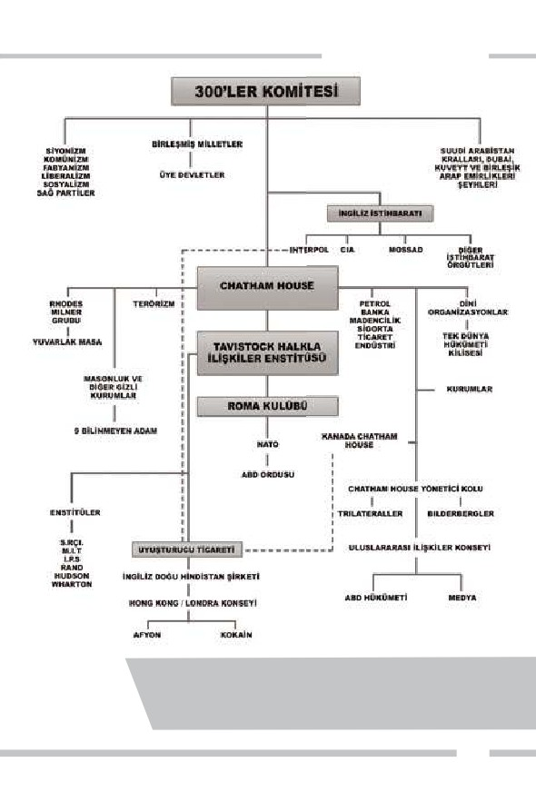
ADNAN HARUN YAHYA
Dr. John Coleman'ın yaptığı araştırmalarla hazırladığı ve yanda resmi
görülen kitabında yer verdiği bu şema, 300'ler Komitesi liderliğinde
İngiliz derin devletinin desteklediği kuruluşları göstermekte ve dün-
yada nasıl bir örtülü yapılanma olduğunu gözler önüne sermektedir.
117
118
Tüm OSS (Office of Strategic Services - Stratejik Hizmetler Bürosu) ve
CIA programları Tavistock'un rehberliğinde oluşturulmuştur.
Günümüzde Tavistock, ABD'deki vakıflar ağını 6 milyar dolarlık bir
bütçe ile faaliyette tutmaktadır.44 Tavistock, stratejik misyonunu "Endüs-
triyel ulus-devletlerden post-endüstriyel küresel dünya devletine dönüş ve
yönetimin az sayıda oligarka devredilmesi" olarak belirlemiştir. Daha açık
ifade etmek gerekirse kurumun amacı, İngiliz derin devletinin kontrolü
altında "Tek Dünya Devleti"ni inşa etmektir. Zaten hatırlanacağı gibi,
oluşturulan tüm gizli kurumların ana hedefi bu olmuştur.
Tavistock'un bu uğurda üstlendiği görev, halka psikolojik yollarla
yaklaşabilmek ve pek çok konuda psikanalitik etkilerle halkın gücünü kı-
rabilmektir. Bunun başlıca yöntemi halkı etki altına alacak yöntemler ge-
liştirmek olmuştur. Böylelikle halklar, İngiliz derin devletinin belirlediği
derin dünya diktatörlerine muhalefet etmeyecek ve hali hazırda hedefle-
nen ve çoğunlukla komünist temellere dayanan tek dünya devletine doğ-
ru kanalize olacaktır. Aile, din, onur, milliyetçilik gibi kavramları çökert-
mek, cinsi sapıklık ve homoseksüellik gibi toplumları içten içe bitiren, de-
jenere kavramları yaygınlaştırmak için teknikler geliştirmek Tavistock bi-
lim adamlarınca yıllarca üzerinde çalışılan konuların başında gelmekte-
dir.
Tavistock Enstitüsü, sürekli ve kitlesel beyin yıkama teknikleri üze-
rinde çalışmakta ve çoğu zaman bunları toplumlar üzerinde test etmek-
tedir. İnsanları gerilim, korku ve endişe içinde bırakacak olaylar tasarla-
yarak, genel bir analiz yapılmakta ve psikolojik ve sinirsel durumlarının
değiştirilmesi amaçlanmaktadır. Psikolojik anlamda endişenin toplumla-
ra yerleştirilmesiyle, daha önce de incelediğimiz gibi, toplumları yönlen-
dirmek oldukça kolay olmaktadır. İngiliz derin devletinin büyük hedef-
lerinden birinin daima toplumları kontrol altına almak olduğu unutul-
mamalıdır.
ÜST AKIL İNGİLİZ DERİN DEVLETİNİN İÇYÜZÜ
ADNAN HARUN YAHYA
Kuru Kafa ve Kemikler (Skull and Bones)
1832 yılında William Huntington Russell ve Alphonso Taft tarafın-
dan Yale Üniversitesi'nde Society of Skull and Bones ismi ile kurulan, giz-
li yapısı ve üyelerinin özel seçilmesi nedeniyle ilgi çeken bir öğrenci top-
luluğudur. Her ne kadar Yale Üniversitesi ana karargah olarak benim-
senmişse de, bu topluluğun kökenlerinin de İngiliz derin devleti ile bağ-
lantılı olduğunu belirtmek gerekir. Yale Üniversitesi'nin ismi, İngiltere'de
eğitim görmüş ve İngiliz Doğu Hindistan Şirketi'nin önemli bir temsilci-
si olarak faaliyet göstermiş olan Elihu Yale adındaki kişiden gelmektedir.
İngiliz Doğu Hindistan Şirketi'nin, İngiliz derin devletinin gizli faaliyet-
lerini ilk olarak üstlenen ve pek çok gizli kurumun ortaya çıkmasına ne-
den olan bir ana merkez olduğundan bahsetmiştik. Elihu Yale de, söz ko-
nusu yapılanma içinde ticaretten elde ettiği büyük paralar ile İngiltere'ye
dönmüş ve derin faaliyetlerine burada devam etmiştir. Connecticut'ta bir
üniversiteye
gönderdiği
yüksek bağışlar neti-
cesinde üniversi-
tenin adı 1718
tarihinde Yale
olarak de-
ğiştirilmiş-
tir.45
Skull and Bones amblemi, kafa-
tası ve çapraz kemiklerden oluş-
maktadır. 322, Yale arşivlerine
göre MÖ 322 tarihindeki Lamia
Savaşı'nı simgelemektedir.
119
120
İngiliz derin devletinin dünya hakimiyetini sembolize eden bu pramitin en tepe noktası İn-
giltere Krallığını simgeler. 13'ler Konseyi, 300'ler Komitesi ve bunlara bağlı çeşitli düşünce
kuruluşlarının himayesinde gelişen bir kontrol mekanizması öngörülmüştür. Bunlar, dünya
merkez bankasını, vergi ve faiz değerlerini kontrol edecek ve bu kontrol mekanizması
dünya kaynaklarının denetimi ile devam edecektir. Dünya nüfusunun kontrol altına alın-
ması ise dinlerin, hükümetlerin, medya ve okulların kontrolü ile sağlanacaktır.
Skull and Bones'a üye olabilmenin şartı WASP terimi ile açıklanır.
Açılımı şudur: W=White (beyaz), AS=Anglo Sakson ve P=Protestan. Ya-
ni örgüte üyeliğin şartları, beyaz, Anglosakson ve Protestan olmaktır. Bir
başka deyişle bu yapılanma için de İngiliz Anglosakson köken ve Protes-
tanlık temel şartlar olarak aranmaktadır. Gruba alınacak kişilerin 6-7 ku-
şak öncesinden Anglosakson ve Protestan olmasına özen gösterilir. Yani
söz konusu kişinin kökenleri, İngiltere'ye ait olmalıdır. Başka bir soy ve-
ya dinden gelenlerin kulübe kabul edilme ihtimalleri yoktur.
ÜST AKIL İNGİLİZ DERİN DEVLETİNİN İÇYÜZÜ
ADNAN HARUN YAHYA
Aslında söz konusu kurum da, tek dünya devleti, dolayısıyla tek dün-
ya dini esasına göre hareket etmektedir. Dolayısıyla gruba üyelik için Pro-
testanlık şartı, sadece İngiliz kökenleri teyit etmek için şart koşulmuştur.
Yoksa bilindiği gibi söz konusu kurumların hiçbiri dindar değildir; aksi-
ne hedef ateizmi yaygınlaştırabilmektir.
Skull and
Bones Kulü-
bü'ne üye
olmanın
şartı 6-7 ku-
şak öncesin-
den Anglo-
sakson ve
Protestan
olmaktır.
121
122
Topluluğun üye listesine, üniversite yönetimi de dahil olmak üzere
kimsenin erişimi bulunmamaktadır. Her yıl bu örgüte 15 kişi girebilir ve
bu kişiler daha sonra ülke içinde en kilit noktalara getirilirler. Söz konu-
su kişilerin akrabaları ve dostları da bu üyelikten paylarını alırlar. Bu giz-
li cemiyete girebilmek ancak davetle mümkündür; kabul töreni ise ma-
sonlarınkine çok benzemektedir. Tüm ritüeller gizlidir; topluluk içinde dı-
şarıya bilgi sızdırılması mümkün değildir.
Bu gizli yapılanma, Illuminati topluluğunun ABD ayağı olarak nite-
lendirilmektedir. Aradaki tek fark, söz konusu kurumun gençlere hitap
ediyor oluşudur.
Üstteki resimde Skull and
Bones Kulübü üyesi George
W. Bush, alttaki resimde ise
Skull and Bones'un İngiliz
şubesi sayılan Bullingdon
Club üyesi David Cameron
ve Boris Johnson görülüyor.
Bush konuyla ilgili şu açıkla-
mayı yapmıştır: "Son sınıf
öğrencisiyken gizli bir örgüt
olan Skull and Bones'a ka-
tıldım. Oldukça gizliydi;
daha fazlasını söyleye-
mem."
ÜST AKIL İNGİLİZ DERİN DEVLETİNİN İÇYÜZÜ
ADNAN HARUN YAHYA
Söz konusu topluluğun etkisi oldukça fazladır. Gül Haç, Trilateral Ko-
misyon ve CFR ile doğrudan ilişkileri bulunmaktadır. Örgütün son 150
yılda 2500'den fazla üyesi olmuştur ve bu kurum, yeni dünya düzeninin
temel ideologlarından biri kabul edilmektedir. Söz konusu yapılanma, İn-
giliz derin devletinin ABD kontrolünü elinde tutmak adına önemli bir ko-
zudur. Bu ve bunun gibi yapılanmalar sayesinde İngiliz derin devleti, tüm
faaliyetlerini Avrupa'dan yönetmekte ve ABD'nin iç ve dış politikasına
doğrudan etki etmektedir.
Skull and Bones, Trilateral
Komisyon, CFR, Gül Haç ve
bunun gibi pek çok grup
birbirleriyle bağlantılıdırlar.
Bu kurumlar yoluyla İngiliz
derin devleti, tüm faaliyet-
lerini Avrupa'dan yönet-
mekte, ABD iç ve dış politi-
kasına etki etmektedir.
123
124
Tek Dünya Devletİ
Hedefİne Doğru
ngiliz derin devleti, bütün bu sayılanların dışında Mont Pèlerin,
Bohemian Grove, Gül-Haç kardeşliği gibi yan yapılanmalar al-
İ
tında da faaliyet göstermiştir. Tek dünya devleti hedefine, söz ko-
nusu kurumlar vasıtasıyla ulaşmaya çalışmış ve Cecil Rhodes'un savun-
duğu gibi sadece Anglosakson ırkının varlığı ve Anglosakson ırkının ha-
kimiyeti üzerine bir güzergah belirlemiştir. 1700'ler sonrasında vakıflar va-
sıtasıyla geliştirilen bu faaliyetler, dünyada güçlü ülkeleri zayıflatma, hat-
ta Osmanlı'da olduğu gibi yıkıma götürme, kaynakları bol olan daha za-
yıf ülkeleri sömürgeleştirme, halkları umutsuzluğa ve belirsizliğe doğru sü-
rükleme gibi hedeflerini sistematik şekilde gerçekleştirerek günümüzün
ürkütücü tablosunu ortaya çıkarmıştır.
İçinde bulunduğumuz dönem, İngiliz derin devletinin, faaliyetlerini
her zamankinden daha rahat ve kapsamlı şekilde gerçekleştirdiği bir dö-
ÜST AKIL İNGİLİZ DERİN DEVLETİNİN İÇYÜZÜ
ADNAN HARUN YAHYA
nemdir. Bu nedenledir ki, söz konusu mafya yapılanmasının gizli faali-
yetleri artık her zamankinden daha fazla ses getirmektedir. Darwinizm,
tam planlandığı gibi bütün dünyada yaygınlaştırılabilmiş, uyuşturucu ve
dejenerasyon büyük ölçüde hakim edilmiş, homoseksüellik reddedilemez
bir "yaşam biçimi" olarak toplum baskısıyla dayatılmış ve İngiliz derin
devletinin emirlerinden çıkmaya çalışan liderler derhal görevlerinden in-
dirilmişlerdir. Dolayısıyla şu anda, tıpkı 1700'lerde planlandığı gibi, ABD
de dahil olmak üzere bütün dünya devletleri, İngiliz derin devletinin ha-
kimiyeti altında hareket etmektedir.
Dünyadaki pek çok lider, Chatham House gibi genel olarak İngiliz
derin devletinin etkisindeki kurumlarda yapılmış gizli görüşmelere mut-
laka katılmıştır. Liderlerin yol haritaları, daima bu gizli görüşmelerin son-
rasında belirlenmiştir. Bir ülke adına verilecek ani ve önemli kararlar,
mutlaka bu gizli kurumlar tarafından kararlaştırılmıştır. Bu kurumların
ana karargahları, yukarıda detaylarını verdiğimiz gizli yapılanmalar ol-
muştur. Şu anda ekonomik dalgalanmalardan politik krizlere, savaş ka-
rarlarından askeri darbelere kadar dünyada gelişen her olay, derin devle-
tin bu ana karargahlarında alınan kararlardır.
Bugüne kadar ciddi anlamda fark edilemeyen, fark edenler için ise ba-
şa çıkılması zor böylesine güçlü bir yapılanmanın artık deşifre edilme ve
feshedilme vakti gelmiştir. Dünyayı gün geçtikçe daha fazla ırkçılık, din-
sizlik, komünizm, homoseksüellik, açlık, kıtlık gibi belalara sürükleyen
bu gizli oluşum, tüm yönleriyle ve her fırsatta ortaya çıkarılmalıdır. Bi-
linmelidir ki, bugüne kadar gerçek suçlu tam olarak teşhis edilememiş, dai-
ma hedef saptırılmıştır. Hedefi tespit ederken, asıl kaynağın İngiliz derin
devleti olduğu asla unutulmamalıdır. Bundan sonra yapılması gereken,
dünyayı kendi istediği şekilde yönlendirmek isteyen bu gizli oluşumun tu-
zaklarının farkında olmak, oynanan oyunu akılcı şekilde tespit edebilmek
ve akılcı bir mücadele ile bu vebanın üstesinden gelebilmektir.
125
126
Unutulmamalıdır; burada amaç İngiliz derin devletini oluşturan ve
bu yapılanmada yer alan kişileri doğruya yöneltebilmek, yaptıklarının
yanlışlığını bilimsel ve ahlaki olarak gösterebilmek ve onları ilmi yollarla
değiştirebilmektedir. Yine unutulmamalıdır; dünya zaten deccal ve Meh-
di yanlılarının mücadele alanıdır. Bu mücadele mutlaka ilmi yollarla ya-
pılması gereken etkili bir mücadele olmalıdır. İçinde bulunduğumuz ahir
zamanda hangi dinden ya da inançtan olursa olsun barıştan yana olan, sev-
giyi savunan Mehdi yanlılarının galip geleceği Allah'ın izniyle kesindir. İş-
te bu nedenle, bilmeden deccal yanlısı olmuş kesimleri teşhis etmek ve on-
lara doğruyu göstermek, mutlaka Mehdi yanlılarının hedefi olmalıdır.
Sabret; senin sabrın ancak Allah(ın yardımı) iledir. Onlar için hüzne ka-
pılma ve kurmakta oldukları hileli-düzenlerden dolayı sıkıntıya düşme.
Şüphesiz Allah korkup-sakınanlarla ve iyilik edenlerle beraberdir. (Nahl
Suresi, 127-128)
ÜST AKIL İNGİLİZ DERİN DEVLETİNİN İÇYÜZÜ
ADNAN HARUN YAHYA
Kitapta eleştiri konu-
muz değerli İngiliz dev-
leti ve halkı değil,
karanlık hedefleri olan
İngiliz derin devletidir.
127
128
Güç ve İktidar Yalnızca Allah'ındır
İngiliz derin devletini genel hatlarıyla tanıttığımız bu bölüm boyun-
ca, geçmiş tarihlerden itibaren gizli yollarla oluşturulmuş ve dünyaya çe-
şitli yollarla hakim olmuş bir deccali akımı tarif etmiş olduk. Bütün bun-
ları okurken ve bundan sonraki bölümleri incelerken, şu önemli gerçek
asla akıldan çıkarılmamalıdır: Dünya bir imtihan yeridir. İyi ve kötünün
yaratılma amacı da tam olarak budur. İyi ve kötü karşı karşıya gelmeli ve
bu mücadele sonucunda her kişi kendi tarafını belli etmelidir.
Fakat her şeyden önemlisi, iyileri de kötüleri de yaratan Allah'tır.
Bunların hiçbiri Allah'tan bağımsız değildir. Dolayısıyla kötülük yapan-
ların hedefleri de, tuzakları da Allah'ın kontrolündedir. Onlar, kendileri
aksini iddia etmeye çalışsalar da, Allah'ın dediğini yapmak dışında başka
bir şeye güç yetiremezler.
Tüm güç, tüm kudret, alemlerin Rabbi olan, tüm alemlere hük-
meden, her şeyden haberi olan ve her şeye gücü yeten Yüce Allah'a ait-
tir.
Dolayısıyla, tuzakları kuran gizli güçler, ne kadar güçlü görünürler-
se görünsünler, Allah'ın Katında değersiz ve önemsizdirler. Allah'a muh-
taç birer kuldurlar. Rabbimiz'in ayette belirttiği gibi, onların düzenleri
dağları yerinden oynatacak güçte dahi olsa, bu düzen, Allah'ın kudreti
karşısında bozulmaya ve dağılıp yok olmaya mahkûmdur.
Gerçek şu ki, onlar hileli-düzenler kurdular. Oysa onların düzenleri,
dağları yerlerinden oynatacak da olsa, Allah Katında onlara hazırlanmış
düzen vardır. (İbrahim Suresi, 46)
Bu kitapta anlatılanlar, dünyada imtihanın gereği olarak yerleşik ha-
le gelmiş deccali düzeni deşifre etmek ve bununla mücadele yollarını gös-
termek amacını taşımaktadır. Dünyadaki imtihan ortamında elbette iyi-
ler, kendilerini belli etmek ve kötülerin düzenlerini ortadan kaldırmak
ÜST AKIL İNGİLİZ DERİN DEVLETİNİN İÇYÜZÜ
ADNAN HARUN YAHYA
için bu önemli mücadeleyi gerçekleştirmekle yükümlüdürler. Bu, kişinin
Allah'a kendisini ispat etmesinin de bir yoludur. Ancak bu mücadele sı-
rasında asıl olması gereken, Allah'ın tüm bu tuzakları geçersiz ve bozgu-
na uğramış olarak yarattığını unutmamaktır. Allah, bu bozgunun ger-
çekleşmesi için vesileler olmasını ister. İlmi mücadele yoluyla çaba göste-
renler, bu bozgunun temellerini hazırlayan vesileler olacaklardır.
Yine unutulmamalıdır ki, bu dünyada zorluk içinde bırakılan sayısız
insan bulunmaktadır. Bu vahim manzara karşısında "bana dokunmayan
yılan bin yaşasın" diyerek kenara çekilen insanlar çoğunluktadır. Kendi-
lerine hiçbir zararın dokunmayacağını sanmakta ve zulme karşı sessiz du-
rarak kendilerini karlı zannetmektedirler. Oysa Allah, bizden, zorluk için-
deki insanlar için mücadele etmemizi istemektedir. Allah, kuşkusuz yer-
yüzünde zulüm bırakmayacak ve bu insanlara uygulanan zulmün karşı-
lığını elbette verecektir. Fakat dünyadaki mücadele ortamı, imtihanın ge-
reği olarak, "bizim" mücadele ortamımızdır.Allah'a güvenerek, Allah'a sı-
ğınarak, Allah'tan isteyerek, bu zulmü ortadan kaldırmak için ilmi ve fik-
ri olarak elimizden geleni yapmak, bu konuda Hristiyan ve Musevi kar-
deşlerimizle ve barış ve sevgiyi isteyen iyi insanlarla ittifak etmek yü-
kümlülüğümüzdür.
Şu anda Hz. Mehdi (as) ve Hz. İsa (as)'ın zuhurunu göreceğimiz ahir
zamandayız. Rabbimiz'in Kuran, Tevrat, İncil ve hadislerle müjdelediği şe-
kilde, tüm güzelliklerin yaşanacağı, zulmün kalmayacağı ve bir damla ka-
nın dahi dökülmeyeceği ahir zamanı karşılayacağız. Şunu biliyoruz ki,
deccal taraftarlarının gücü veya planları ne kadar güçlü olursa olsun, Hz.
Mehdi (as) ve Hz. İsa (as) karşısında yenilmiş olacaklardır. Ahir zaman-
da zulüm işleyen hiçbir güç kalmayacak, herkes Hz. Mehdi (as) ve Hz. İsa
(as)'ın nüfuzu altında iyi ve güzele yönelecektir. İnsanlığı değiştirmek ve
düzeltmek ve onların tümünü o kutlu döneme hazırlamak Allah'a karşı
sorumluluğumuzdur.
Allah, suçlu-günahkarlar istemese de, hakkı (hak olarak) Kendi kelime-
leriyle gerçekleştirecektir. (Yunus Suresi, 82)
129
130
YEDİKULE, İSTANBUL
ÜST AKIL İNGİLİZ DERİN DEVLETİNİN İÇYÜZÜ
ADNAN HARUN YAHYA
Gerçek şu ki, onlar hileli-düzenler kurdular.
Oysa onlarin düzenleri, dağlari yerlerinden
oynatacak da olsa, Allah Katinda
Onlara hazirlanmiş düzen vardir.
(İbrahim Suresi, 46)
131
132
ÜST AKIL İNGİLİZ DERİN DEVLETİNİN İÇYÜZÜ
ADNAN HARUN YAHYA
I. Dünya Savaşı
ve İngİlİz Derİn
Devletİ
133
134
Osmanlı'ya Yönelİk
Polİtİka Değİşİklİğİ
Dünya Savaşı, İngiliz derin devletinin, 19. yüzyılın başlarından
itibaren sürdürdüğü küresel sömürü düzenini koruma, geliştir-
I.
me ve kendisine yönelen tehditleri etkisiz hale getirme strateji-
sinin en son askeri ayağıdır. Bu stratejinin ilk aşamaları ekonomik, siya-
si ve diplomatik süreçlerdir. Bu süreçleri İngiltere, 19. yüzyıl boyunca
kendisi açısından önemli gördüğü iki büyük imparatorluğa karşı yönetti.
Bunlardan ilki hem Avrupa'da gitgide güçlenmeye ve söz sahibi olmaya
hem de dünya sömürgeciliğinde pay aramaya başlayarak İngiltere'nin en
büyük rakibi haline gelen Alman İmparatorluğu'ydu. İkincisi de birçok
yönden her dönemde ilgi alanında tuttuğu Osmanlı İmparatorluğu'ydu.
Almanya için durum çok karmaşık değildi. İmparatorluğun, her-
hangi bir şekilde ilerlemesinin ve güçlenmesinin durdurulması gereki-
yordu.46 Ancak Osmanlı söz konusu olduğunda durum daha karmaşıktı.
Çünkü İngiliz derin devletinin, Osmanlı üzerinde hem çıkarları hem de
endişeleri vardı. Çıkar bakımından Osmanlı, İngiltere için son derece
ÜST AKIL İNGİLİZ DERİN DEVLETİNİN İÇYÜZÜ
ADNAN HARUN YAHYA
stratejik ve ekonomik değere sahipti. Doğu Akdeniz, Mısır, Süveyş ve
Filistin gibi hem Hindistan'a geçiş yolu üzerinde bulunan hem de büyük
doğal zenginliklere sahip olan Ortadoğu bölgesi, İngiliz hegemonyası için
büyük önem taşıyordu. Bu yüzden İngiliz derin devleti kendisini daima,
Osmanlı'nın dahil olacağı muhtemel senaryoları büyük bir titizlikle kont-
rol altında tutma ve yönetme mecburiyetinde hissetti.
Zor dönemler geçiren Osmanlı, eğer bir fırsatını bulup güçlenerek
kendi ayakları üzerinde duracak hale gelirse, dünya çapında bir güç ve
rakipsiz bir İslam Birliği'nin lideri konumuna gelecekti. İngiliz derin dev-
leti ise, Osmanlı liderliğindeki bir İslam Birliği'ni daima bir tehdit ve
rakip olarak görmüştü. Osmanlı'nın çökmesi ise, imparatorluğu döne-
min en büyük güçlerinden olan Rus Çarlığı'na ya da Alman İmparator-
luğu'na kaptırma ihtimalini beraberinde getirirdi. Bu da, İngiliz derin
devletinin Ortadoğu hayallerinin sonu demekti.
Bu yüzden İngiliz derin devleti, 1878 Berlin Antlaşması'ndan sonra
ciddi politika değişikliğine gitti. Osmanlı toprağı olan Kıbrıs ve Mısır'ı ele
geçirmekle birlikte, Osmanlı'nın kontrolsüz bir şekilde dağılmasını
engellemeye çalıştı. Çünkü, çıkarlarının zedelenmesini istemiyordu.
Osmanlı'nın toprak bütünlüğünün korunması politikasına daha uygun-
du. Bu arada da Osmanlı'yı ekonomik ablukalarla ve siyasi manevralarla
kendine bağımlı hale getirerek kontrollü bir hakimiyet sürecini işletti. Bu
süreç içinde sinsi ve hain politikalarını Osmanlı'yla yakın bir dost ve
müttefik ilişkisi görünümünde sürdürdü.
19. yüzyılın sonlarına doğru İngiliz derin devletinin baskıcı politika-
larından, sayısız hile ve entrikalarından bunalan Osmanlı'nın bu boyun-
duruktan kurtulma amacıyla Almanlara yakınlaşması bütün dengeleri
değiştirdi. Osmanlı'nın elinden göz göre göre gittiğini gören İngiliz derin
devleti için artık Osmanlı'nın toprak bütünlüğü önem taşımaz hale geldi.
İngiliz derin devleti için Osmanlı'nın sistematik şekilde yok edilmesi ve
135
136
topraklarının işgal edilmesi artık yegane çözüm gibi görünüyordu.
Hedeflediği dünya hegemonyası, ancak bu şekilde sağlanacaktı. Bu çözü-
me ulaşmak için en ideal yol da, tarafları, süreci ve sonuçları daha baştan
planlanmış ve hesaplanmış, askeri işgali doğal ve meşru hale getirecek bir
büyük savaşı başlatmaktı. İşte İngiliz derin devletinin yürüttüğü yüzyıllık
stratejinin, ekonomik ve siyasi kanallar tükenince başvurduğu son
aşama, I. Dünya Savaşı'ydı.
Şimdi, bu son askeri harekata kadar giden süreci en başından itiba-
ren inceleyelim.
İngilizlerin Osmanlı'nın Çöküşünü Hazırlayan
Ekonomik Tuzağı: Baltalimanı Antlaşması
19. yüzyıla gelindiğinde Osmanlı İmparatorluğu, Avrupa devletleri-
nin ağır askeri, siyasi ve ekonomik baskıları altında ezilmeye başlamıştı.
Yunan isyanının sürdüğü 1827'de İngiliz, Fransız ve Rus filoları Nava-
rin'de Osmanlı donanmasını yenilgiye uğratmış, 1828 yılında patlak
ÜST AKIL İNGİLİZ DERİN DEVLETİNİN İÇYÜZÜ
ADNAN HARUN YAHYA
veren Osmanlı-Rus Harbi'nde Ruslar 1829'da Edirne'yi alarak İstanbul'a
yaklaşmışlardı. Bu durum karşısında Padişah II. Mahmut, 1829 yılında
imzalanan Edirne Antlaşması'yla savaşa son verdi. Ancak Yunanistan'ın
bağımsızlık kazanması bazı şartları değiştirdi. Yunan isyanı sırasında II.
Mahmut, Mısır Valisi Kavalalı Mehmet Ali Paşa'ya Yunan isyanının bas-
tırılmasına yardım etmesi halinde kendisine Mora Valiliğini de vereceği-
ni vaat etmişti. Yunanistan'ın bağımsızlığı ile bu vaat anlamını yitirdi.
Mehmet Ali Paşa'nın Şam Valiliği isteğinin de II. Mahmut tarafından
reddedilmesi ortaya Mısır Meselesi denilen problemi çıkardı. Bu kriz
esnasında Fransa'nın Mısır'ı tutması, İngiltere'nin ise tarafsız görünümü
karşısında Osmanlı, Ruslarla 1833'te bir yardımlaşma ve saldırmazlık
anlaşması olan Hünkar İskelesi Antlaşması'nı imzaladı.
Osmanlı'yı Ruslara kaptırıyor olmanın telaşıyla İngiliz derin devleti,
Fransa'yı da yanına alarak anlaşmayı protesto etti. Hatta bir İngiliz
donanmasını İzmir önlerine gönderecek kadar ileri gitti. Araya Avustur-
Pyotr Nikolayevich Gruzinsky'nin
Rus Birlikleri yaklaşırken Çerkez-
lerin köylerini terk edişini resmet-
tiği tablo. 1872. Tuval üzerine
yağlı boya.
St. Petersburg Rus Devlet Müzesi.
137
138
ya'yı sokarak Çar'ı anlaşmadan çekilmeye ikna ederken, diğer yandan
Osmanlı'ya Mehmet Ali Paşa ve Rus tehdidine karşı askeri destek teklifi
sundu. Elbette İngiltere'nin bu hizmeti karşılıksız olmayacaktı. Bu hiz-
mete karşılık 1838'de Osmanlı, İngiltere'ye yönelik bir nevi genişletilmiş
kapitülasyonlar anlamına gelen "Serbest Ticaret Antlaşması"nı (Baltali-
manı Antlaşması) imzaladı. Bir İngiliz hayranı olan Sadrazam Mustafa
Reşit Paşa'nın da, ölüm döşeğindeki Padişah'ın antlaşmayı imzalamaya
ikna etmede önemli rolü oldu.
İngilizlerin sözde "batılılaşma", "liberalleşme", "gelişme" sloganlarıy-
la oldubittiye getirdiği bu antlaşma, gerçekte, Osmanlı'nın yıkımının
habercisiydi. Bu anlaşma sayesinde İngiltere, yarı-sömürge haline getir-
diği imparatorluğu, çöküşüne kadar belini doğrultamayacağı bir ekono-
mik yıkımın içine sürüklemekteydi. Baltalimanı Antlaşması'yla, başta
İngiltere olmak üzere Batı ülkelerine, kapitülasyonların bile çok daha
ötesinde haklar ve imtiyazlar tanındı. Osmanlı Devleti, önce İngilizlerin
sonra tüm Avrupa'nın açık pazarı haline geldi.
ÜST AKIL İNGİLİZ DERİN DEVLETİNİN İÇYÜZÜ
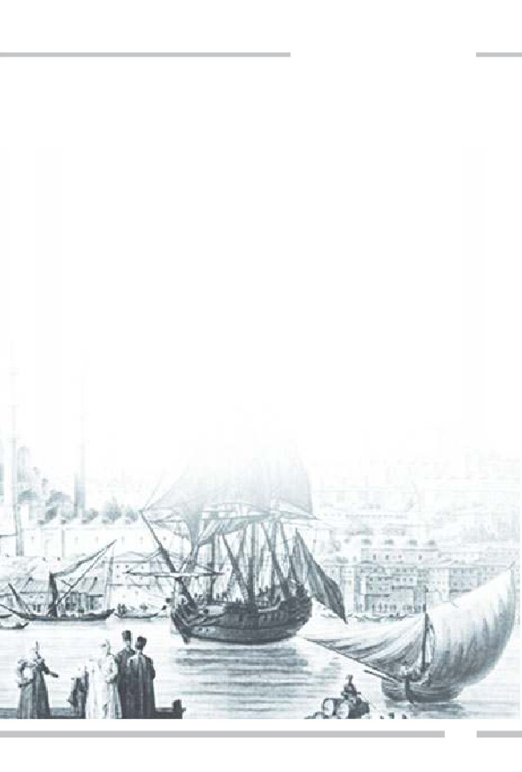
ADNAN HARUN YAHYA
Antlaşma, Osmanlı'nın zararına olacak tek taraflı ve bağlayıcı mad-
delerle doluydu. Bu antlaşmayla, zaten yürürlükteki kapitülasyonlara ek
olarak, "Büyük Britanya uyruklarına ve gemilerine" yeni ayrıcalıklar
tanınmış ve bu ayrıcalıkların "şimdi ve sonsuza dek süresiz olarak geçer-
li" olduğu hükme bağlanmıştı. Buna göre, yurt içi ticarette, Türk tüccar-
lar %12 vergi öderken, İngiliz tüccarlar %5 vergi ödüyordu. Herhangi bir
Türk ürünü, İngiliz bir tüccar ya da vekili tarafından ihracat amacıyla
satın alınırsa, bu ürünleri satın alan İngiliz tüccar ya da vekili, hiçbir tica-
ri kısıtlamaya bağlı olmayacak ve dilediği gibi davranmakta serbest ola-
caktı.
Her açıdan İngiltere'nin çıkarlarına yönelik yaptığı eşsiz katkılar
nedeniyle, dönemin İngiltere Dışişleri Bakanı Henry Palmerston
anlaşmayı, "Capo d'Opera" yani "şaheser" olarak tanımlıyordu.47 Bir yan-
dan da İngiliz derin devletinin klasik sahte dostluğu ve ikiyüzlülüğü için-
de, alttan alta yıkımın eşiğine getirdiği Osmanlı'yı, "Osmanlı Devleti tica-
ri ilişkilerinde, serbest ticareti, dünyadaki bütün devletler içinde en geniş
biçimde uygulayan ülkedir" sözleriyle sırtını sıvazlayarak övmeyi de
ihmal etmiyordu. Bugün de İngiliz derin devletinin temsilcilerinden Tür-
kiye veya Türklere yönelik herhangi bir övgü, takdir ya da sözde destek
geldiğinde, bu tarihi örneği hatırlayarak, perde arkasında gizlenen sinsi
planı görebilmek gerekmektedir.
139
140
Baltalimanı Antlaşması'yla, dış piyasalara karşı gümrük duvarları
indirildi ve hiçbir koruma önlemi alınmadan iç ticaretteki tüm ruhsat ve
kayıtlar ortadan kaldırıldı. Bu, yabancı rekabete hazır olmayan ve yeni
yeni gelişmeye başlayan Türk sanayiine en büyük darbeyi vurdu. Pamuk,
ipek, yün ve tiftik dokuma, deri işleme, madencilik, tarım vb. gibi yerli
üretime dayalı sanayiler, günden güne zarara uğrayarak can çekişir hale
geldi ve sonunda yok oldu. Bir süre sonra bu ürünler işlenmeden, yalnız-
ca çok düşük fiyatlara yabancılara hammadde olarak satılır hale geldi.
1838'den önce yalnızca iç tüketimi karşılamakla kalmayıp yurtdışı pazar-
lara da ihraç edilen pek çok yerli sanayi ürünü, 1850'lere gelindiğinde
neredeyse tamamen ithal edilmekteydi.
Diğer yandan, dış ticaretten sağlanan vergi gelirlerinin Batılılara
sağlanan ayrıcalıklar sebebiyle düşmesi, devlet bütçesinin açıkları ile bir-
leşince, Osmanlı Devleti büyük bir mali krizin içine girdi. 1854 yılında,
Kırım Savaşı'nın da getirdiği maliyetlerin altından kalkamayan Osmanlı
Devleti, zaten bozuk olan ekonomisini düzeltebilmek amacıyla tarihinde
ilk kez dış borç almak zorunda kaldı. İngiltere de, bu borçlanmayı büyük
bir iştiyakla teşvik etti. Bunun üzerine Osmanlı devlet yöneticileri, 24
Ağustos 1854 tarihinde, Mısır'dan gelecek vergiyi teminat göstererek,
Londra'da Palmer, Paris'te Goldschmidt kurumlarından 3 milyon İngiliz
Lirası borç aldı.
Bu ilk borçtan sonra alınan borçların ardı arkası kesilmedi ve
Osmanlı Devleti yıkılana kadar da bu borçlar ödenemedi. 1854'te alınan
ilk borçtan 20 yıl sonra Osmanlı Devleti moratoryum ilan ederek iflasını
açıkladı. I. Dünya Savaşı'na kadar geçen sürede devlet,
243 milyon
Osmanlı Lirası dış borç almış ve toplamda 409 milyon Osmanlı Lirası
tutarında dış borç yükü altına girmiştir.
Bunun sonucunda, İmparatorluğun alacaklıları devletin en sağlam
gelirlerine el koydu. Batılı ülkelerin alacaklıları tarafından kurulan
ÜST AKIL İNGİLİZ DERİN DEVLETİNİN İÇYÜZÜ
ADNAN HARUN YAHYA
Düyun-u Umumiye-i Osmaniye Meclisi, isminden yerli gibi anlaşılsa da,
başta İngilizler olmak üzere, Hollandalı, Fransız, Alman, İtalyan ve önce-
likli alacaklılar temsilcilerinden oluşan yedi kişilik bir kuruldu. Osman-
lı'nın dış borçlarını denetleyen bu kurul, devlet bütçesinin üçte birinden
fazlasını oluşturan tütün, tuz, ipek, içki, pul ve av vergilerine el koymuş-
tu. Çünkü bu vergi kalemleri, toplanması en kolay olan ve güvence altın-
daki vergilerdi.
İngilizlerin kontrolündeki Düyun-u Umumiye memurları yanlarına
jandarmaları alarak köylünün, çiftçinin ürünlerine el koyar ve söz konu-
su vergileri tahsil ederlerdi. Anadolu ve Ege'de Düyun-u Umumiye
memurlarının jandarmayı da kullanarak yaptıkları vergi tahsilatına iliş-
kin sayısız zulüm vakaları tarihe geçmiştir.
Osmanlı'yı çöküşe götüren bu borçlar, Osmanlı'nın yıkılışından
sonra Türkiye Cumhuriyeti'ne miras kaldı ve ödenmesi ancak 100 yıl
sonra, 1954 yılında tamamlanabildi. Oysa İngilizlerle Baltalimanı Serbest
Ticaret Antlaşması'nın imzalandığı 1838 tarihinde, Osmanlı'nın hiçbir
dış borcu yoktu. İngiliz derin devletinin sinsi entrikaları, Osmanlı'yı hem
borçlu hem de dost Rusya başta olmak üzere pek çok ülke ile sorunlu hale
getirdi.
İngiliz derin
devletinin
kontrolün-
deki Düyun-u
Umumiye
Binası
141
142
Görüldüğü gibi Osmanlı döneminde ilk dış borç, İngiliz derin dev-
letinin oyunları sonucunda İngiltere'ye yönelik olmuş ve bu borçlanma,
çöküşün de başlangıcı olmuştur. Osmanlı'ya uygulanan Serbest Ticaret
Antlaşması ve bunu kademe kademe takip eden kriz ve iflas süreci, İngi-
liz derin devletinin ülkeleri yıkımın eşiğine getirmek için uyguladığı
sinsi, karmaşık, çok aşamalı ve uzun vadeli planlara önemli bir örnektir.
Savaşa Giden Süreci İngiliz Derin Devleti
Dizayn Etmiştir
Birçok tarihçiye göre, Osmanlı'nın gerçek yıkılış tarihi Borçlar
Kurulu'nun (Düyun-u Umumiye Meclisi) ilan edildiği 20 Aralık 1881'dir.
Ne var ki, İngiliz derin devleti açısından oluşan bu son derece elverişli
ortama rağmen, İngilizler, I. Dünya Savaşı'na kadar 37 yıl boyunca
Osmanlı'yı askeri olarak işgal etmemiştir. Bunun tek nedeni, bu toprak-
lar üzerinde hak iddia eden Fransa, Almanya ve Rusya gibi dönemin
büyük güçleriyle Osmanlı'yı paylaşmak istememesidir.
Bu yüzden İngiliz derin devleti, rakiplerini ekarte edebileceği ve
Osmanlı üzerinde, kendi denetiminde bir işgal ve hakimiyet süreci başla-
tabileceği uygun bir tarihe kadar beklemeyi tercih etmiştir. Belirlenen bu
tarih, I. Dünya Savaşı'dır. İngiliz derin devleti, bu süreç zarfında en
önemli rakibi Almanları zaten karşı cepheye almış, Bolşevik Devrimini
finanse edip körükleyerek Osmanlı üzerinde hak iddia eden Rusları da
saf dışı bırakmıştır. Bolşevik İhtilalinin en büyük parasal destekçilerin-
den birinin İngiliz Lord Alfred Milner olması rastlantı değildir. Milner,
daha önceki bölümlerde tanıttığımız İngiliz derin devletinin derin güçle-
rinden "Round Table" örgütünün organizatörü ve başıdır. Bu örgüt, Lord
Rothschild tarafından da desteklenmektedir.48
Yukarıda belirttiğimiz gibi, I. Dünya Savaşı öncesi dönemde
Osmanlı Devleti, neredeyse tüm devletler tarafından fiilen yıkılmış ola-
rak görülmektedir. Ancak, son darbeyi vuracağı ana kadar Osmanlı'nın
ÜST AKIL İNGİLİZ DERİN DEVLETİNİN İÇYÜZÜ
ADNAN HARUN YAHYA
toprak bütünlüğünün korunması İngiltere'nin işine gelmiştir. İngiliz
derin devleti, dağılma süreci yavaşlatılmış ve bu aşamada her yönden
kendisine bağımlı hale getirilmiş bir Osmanlı'yı daha çok tercih etmiştir.
Çünkü Osmanlı'nın idaresi altındaki bölgeler, stratejik ve ekonomik ola-
rak İngiliz derin devleti için çok önemli bölgelerdir. Diğer yandan, 19.
yüzyılın sonlarında Mezopotamya ve İran'da zengin petrol yataklarının
tespit edilmesi, gelişmiş sanayiye sahip İngiltere'nin bölgeye olan iştahını
daha da kabartmıştır.
Ne var ki, bu aşamada, Rusların Balkanları nüfuzu altına alarak
Yeşilköy'e kadar inmesi ve bunun devamında 13 Temmuz 1878'de imza-
lanan Berlin Antlaşması, İngiliz derin devletinin son bir yüzyıldır izledi-
ği Osmanlı'nın toprak bütünlüğünü koruma politikasının sonu olmuş-
tur. Bu tarihten sonra İngiltere, Osmanlı'nın elden gitmekte olduğu endi-
şesiyle sahte dost ve müttefik maskesini bir kenara bırakarak askeri
müdahalelerine başlamıştır. İlk etapta 25 Mayıs 1878'de "Rusya'ya karşı
13 Temmuz 1878'de imzalanan Berlin
Antlaşması'nın temsili resmi.
143
144
üs olarak kullanma ve bu yolla Osmanlı'ya yardımcı olma" bahanesiyle
Osmanlı'nın bir parçası olan Kıbrıs Adası'nı işgal ederek Ada'ya askerle-
rini çıkarmış ve Kıbrıs'ın yönetimini ele geçirmiştir. Rusya'ya karşı yar-
dım bahanesiyle Kıbrıs'ı isteyen İngilizlere, İngiliz derin devletinin baskı-
sı altındaki Padişah II. Abdülhamid, tereddütsüz olarak Kıbrıs'ı sunmuş-
tur. I. Dünya Savaşı'nın başlamasıyla 1914'de bir kararname yayınlayan
İngiltere, Kıbrıs'ı resmen ilhak ettiğini açıklamıştır. Türkiye ise Lozan
Konferansı ile Kıbrıs'ın
bu durumunu resmen
kabul etmek zorunda
kalmıştır. Dolayısıyla
II. Abdülhamid'in İngi-
lizlere yaptığı Kıbrıs
"ikramı", İngilizlerin
Osmanlı'yı fiziki işgal
planının ilk ciddi aşa-
ması sayılabilir.
Burada günümüze
bir gönderme yapacak
olursak, İngiliz derin
devleti, Türkiye'deki 15
Temmuz 2016 kalkış-
ması öncesinde ve son-
rasında Güney Kıb-
rıs'taki üssüne ciddi bir
İngiliz derin devletinin baskısı
altındaki II. Abdülhamit, Kıb-
rıs'ı İngilizlere sunmuştur.
Yanda, Kıbrıs'ta İngiliz bayra-
ğının göndere çekilişi.
ÜST AKIL İNGİLİZ DERİN DEVLETİNİN İÇYÜZÜ
ADNAN HARUN YAHYA
askeri yığınak yapma faaliyeti içine girmiştir. Savaş uçakları, helikopter-
ler, askeri çıkarma gemileri ve özel kuvvetlerden oluşan bu askeri konuş-
lanmanın gerekçesini de İngilizler "olası bir iç savaş veya karışıklık duru-
munda Türkiye'deki İngiliz vatandaşlarını kurtarmak" olarak belirtmiş-
tir. İngiliz yetkililer, "gerekli görüldüğünde" Türkiye topraklarına girecek
olan İngiliz güçlerinin ateş etme yetkisine de sahip olacağını söylemiş-
tir.49 Bu durum Türk kamuoyunda da Türk medyasında da ittifakla bir
"işgal planı" olarak algılanmıştır.
Buradan açıkça anlaşılacağı gibi İngiliz derin devleti tarafından izle-
nen süreç, önce ülkeyi isyan, kalkışma, darbe girişimi gibi karışıklıklara,
hatta mümkünse iç savaşa sürükleyerek o ülkeyi ekonomik, siyasi ve
askeri açıdan zayıflatmaktır. Ardından da, "vatandaşlarını koruma",
"insani yardım", "insani müdahale", "barışçıl müdahale" gibi suni baha-
nelerle o ülkeye askeri bir işgal gerçekleştirmektir. Tarihe şöyle bir baktı-
ğımızda, aslında İngiliz derin devletinin planlarının çoğu zaman bu süreç
dahilinde işlediğini görebilmek mümkündür.
İlginç olan, İngiliz derin devletinin Türkiye'yi işgal planlarında baş-
langıç noktasının yüz yıl sonra yine Kıbrıs olmasıdır. Bu durum, bugün-
kü gizli planın sonraki aşamalarının da benzer olacağına dair haklı şüp-
heleri artırmaktadır. Nitekim İngiliz derin devletinin, Kıbrıs'ın ardından
1882'de Mısır yönetimini ele geçirme metodu, yukarıda bahsettiğimiz
birkaç aşamalı sürecin tarihsel bir kopyasıdır.
Neyse ki, 15 Temmuz'da Cumhurbaşkanımız, hükümetimiz, güven-
lik güçlerimiz ve halkımız, İngiliz derin devletinin bu sinsi planına dev
bir set oluşturmuşlardır. Fakat bu hain plan, hala gündemdedir. İngiliz
derin devleti, bu hain planı gerçekleştirmek için sürekli olarak yol arayı-
şındadır. Dolayısıyla, tehlikenin hala sürdüğünü bilmek ve teyakkuzda
olmak gerekmektedir. Allah'ın izniyle İngiliz derin devleti, Türkiye üze-
rinde karanlık emellerine asla ulaşamayacaktır.
145
146
İngiliz Derin Devletinin Mısır'ı İşgal Planı
Süveyş Kanalı, İngiltere'nin Uzakdoğu'daki sömürgeleriyle çok
önemli bir bağlantı yolu haline geldiği gibi Doğu Akdeniz'in ticari öne-
mini de kat kat artırmıştı. Bu yüzden İngilizler, Kanal'ın 1869'da açılma-
sından itibaren, Mısır üzerinde yürüttükleri ekonomik ve siyasi oyunlar-
la, Mısır'ı günden güne borç batağına, ardından iflasa sürükleyerek bu
işgalin zeminini hazırlamışlardır. İngiliz derin devletinin bu işgal planı,
yine bir Osmanlı toprağı üzerinde sinsice uygulanmıştır.
ÜST AKIL İNGİLİZ DERİN DEVLETİNİN İÇYÜZÜ
ADNAN HARUN YAHYA
İngiltere, en başından beri Osmanlı'ya doğru ilerleyen Rusya'nın,
Doğu Akdeniz'i kontrolü altına almak amacıyla Mısır'a göz diktiğini bili-
yordu. Çar Nikola, İngiliz Elçisi Hamilton Seymour'a Osmanlı İmpara-
torluğu'nun paylaşılmasını önerirken, Osmanlı Devleti için "hasta adam"
deyimini kullanıyor ve Girit Adası ile Mısır'ın da kendilerine bırakılma-
sını istiyordu. Bu yüzden elini çabuk tutması gerektiğini bilen İngiliz
derin devleti ilk hamleyi kendisi yapmıştır. Mısır halkı içine fitne ve ayrı-
lık tohumları atmış, provokasyon ve propaganda yöntemleri ile bir kısım
Mısır halkının Osmanlı aleyhinde ayaklanmasını teşvik etmiştir. İsyanı
kışkırtan ve isyanın liderliğini yapan da yine İngiliz derin devletinin
adamı olan Mısırlı Miralay Ahmet İrabi'dir.
17 Kasım 1869'da Süveyş
Kanalı'nın açılışı. İngiltere,
bu tarihten itibaren Ka-
nal'ın işgali için hazırlık-
lara başlamıştır.
147
148
Ahmet İrabi, İskenderiye'yi kuşatıp, yine İngiliz derin devletinin
tahrikleriyle şehirdeki sayısız insanı katletmiş ve evlerini yaktırmıştır. Bu
kişilere, şehirdeki yüzlerce İngiliz vatandaşı da dahildir. Başından beri
İngiliz derin devletinin kurguladığı bu senaryo, Mısır'a askeri müdahale-
nin sözde meşru zeminini oluşturmuştur. İrabi'nin planlı katliamı üzeri-
ne İngiltere, "vatandaşlarını kurtarmak amacıyla" Fransa'yla birlikte birer
filo göndererek, İskenderiye şehrini sabahtan itibaren altı buçuk saat
topa tutmuş ve şehirde taş taş üstünde bırakmamıştır. İngiliz derin dev-
leti, vatandaşlarını kurtarmak adına başlattığı bu katliam sırasında kendi
vatandaşlarını katletmekten de çekinmemiştir.
Görüldüğü gibi İngiliz derin devleti, Süveyş Kanalı'nı ele geçirmek
için böyle iç içe geçmiş bir oyun oynayarak İskenderiye'deki yüzlerce
vatandaşının ölümüne bile bile göz yummuştur. Sonuçta, zaten kendi
kontrolünde olan isyancıları etkisiz hale getiren İngiliz ordusu, eski
Hıdiv'in (valinin) önünde resmigeçit yapmış ve görünürde Osmanlı'ya
bağlı ancak İngilizlerin yönetiminde bir Mısır ortaya çıkmıştır. İstanbul
ve Padişah bu duruma itiraz edince İngiliz derin devleti, Sırbistan, Kara-
dağ, Bulgar ve en son olarak Ermeni ayaklanmalarını kışkırtarak Osman-
lı'yı sindirme operasyonları düzenlemiştir.
İngiliz Derin Devletinin İslam Birliği'ni
Önleme Çabaları
İngiliz derin devletinin en büyük kabusu Almanya'nın, Osmanlı'nın
"Panislamizm" politikasını desteklemesiydi.50
Eğer Osmanlı'nın İslam
ülkeleri üzerinde yeniden canlandırmaya çalıştığı bu birlik ruhu başarıya
ulaşacak olursa, İngiliz derin devletinin bölge üzerinde yüzyıldır uygula-
dığı projeler hezimete uğrayacaktı. Buradan da İngiliz derin devletinin
nihai amacının, kendisi için en büyük tehdit olarak gördüğü İslam Birli-
ği'nin oluşumunu engellemek olduğu anlaşılmaktadır.
ÜST AKIL İNGİLİZ DERİN DEVLETİNİN İÇYÜZÜ
ADNAN HARUN YAHYA
İngiliz derin devletinin küresel zulüm ve sömürü düzeninin başın-
daki deccaliyet, varlığına en büyük tehdit olarak İlahi hak ve adaletin
temsilcisi olan sarsılmaz bir İslam Birliği'ni görmektedir. İslam Birliği'ni
kuracak ve başına geçecek olan Hz. Mehdi (as)'ın da deccaliyet sistemini
yok edeceğini çok iyi bilmektedir. Peygamber Efendimiz (sav)'in 1400 yıl
öncesinden Hz. Mehdi (as)'ın İstanbul'dan çıkacağını alametleriyle bil-
dirmesi, deccaliyetin neredeyse iki yüzyıldır bütün ilgi ve dikkatini bu
noktaya yoğunlaştırmıştır. Bu nedenle, Türkiye'yi parçalayıp İstanbul'u
ele geçirmek deccali sistem için günümüze kadar süren en büyük hedef
ve "Megalo İdea" haline gelmiştir. Ancak bilinmelidir ki, deccal taraftar-
larının bu amaçla geliştirdiği karmaşık ve çok aşamalı tüm plan, proje ve
stratejiler, her seferinde Mehdiyete zemin hazırlamaktadır. Nihai olarak
da tüm bunlar, Allah'ın izniyle, Hz. Mehdi (as)'ın zuhur edip dünyaya
huzur ve adalet getirmesine vesile olacaktır.
Deccali sistemin taraftarları, son derece üstün bir zekayla ve her
türlü dünyevi imkan ve şeytani destekle hareket etmelerine rağmen, aynı
derecede de akılsızlık sergilediklerinden, Allah'ın sonsuz aklını ve
Allah'ın planının tüm planların üzerinde olduğu gerçeğini görememek-
tedirler. Bu yüzden deccali sistem, her daim yenilmeye ve yok olmaya
mahkumdur. Batıl, hakkın karşısında daima yenik düşmüştür ve öyle de
olacaktır.
(Allah) Gökten bir su indirdi de dereler kendi miktarınca çağlayıp aktı.
Sel de yüze vuran bir köpük yüklendi. Bir süs veya bir meta sağlamak
için ateşte üzerine yakıp-erittikleri şeyler (madenler)de de bunun gibi
bir köpük (artık) vardır. İşte Allah, hak ile batıla böyle örnekler verir.
Köpüğe gelince, o atılır gider, insanlara yarar sağlayacak şey ise, yeryü-
zünde kalır. İşte Allah örnekleri böyle vermektedir. (Rad Suresi, 17)
149
150
İnkar edenler birbirlerinin velileridir. Eğer siz
bunu yapmazsaniz (birbirinize yardim etmez ve dost
olmazsaniz) yeryüzünde bir fitne ve büyük bir
bozgunculuk (fesat) olur.
(Enfal Suresi, 73)
ÜST AKIL İNGİLİZ DERİN DEVLETİNİN İÇYÜZÜ
ADNAN HARUN YAHYA
İSTANBUL BOĞAZI
151
152
I. Dünya Savaşı'na
Doğru Gİden Süreç
Dünya Savaşı öncesi İngiliz derin devleti, Osmanlı üzerindeki
baskı ve tehditlerini artırarak eskisinin aksine gerilimi tırman-
I.
dırma politikaları izlemeye başladı. Türk düşmanlığı ile ünlü
İngiltere Başbakanı Lord Salisbury, yakın çevresi içinde, sık sık Türk top-
raklarının paylaşılması gerektiğinden söz ediyordu. Osmanlı Devleti'ni
kendince "yaşamak için çok çürük" olarak tanımlıyor ve ülkenin, başta
İngiltere olmak üzere büyük devletler tarafından paylaşılmasını teklif
ediyordu.
Lord Salisbury'nin Sadrazam Sait Paşa'ya 28 Haziran 1895'de gön-
derdiği mektup tehditlerle doluydu:
Osmanlı Devleti'nin içinde bulunduğu çok büyük tehlikeye dikkati
çekerim. İktidara geldiğim günden beri İngiltere'de kamuoyunun
Osmanlı Devleti aleyhine döndüğünü hayretle görüyorum. Bu dev-
letin devam etmeyeceğine dair kanaat günden güne artmaktadır.51
20. yüzyılın başından itibaren İngiliz derin devleti, savaşa giden
yolda düşman ve müttefiklerini savaş sonrası hesaplarına göre yeniden
düzenledi. Artık rakibi eskisi gibi Rusya değil, Almanya'ydı. Osmanlı
Devleti ile de yakınlaşmaya girmekten titizlikle kaçınıyor ve pasif bir
ÜST AKIL İNGİLİZ DERİN DEVLETİNİN İÇYÜZÜ
ADNAN HARUN YAHYA
politika izliyordu. İngiliz Kralı 7. Edward'la, Rus Çarı II. Nikola, 8-9
Haziran 1908'de Reval'da buluştular ve burada bir antlaşma imzaladılar.
Tüm bunlar, Salisbury'nin, Sadrazam Sait Paşa'ya gönderdiği mektupta
yer alan "Eğer İngiltere, Rusya ile ittifak yaparsa Osmanlı Devleti sona
erer" tehdidinin hayata geçirildiğini gösteriyordu.
İngiliz derin devletinin tüm bu savaş öncesi stratejileri, savaş sıra-
sında yanında ve karşısında yer alacakları önceden netleştirmeye yöne-
likti. Geriye yalnızca savaşı başlatmaya yarayacak göstermelik nedenleri
kurgulamak kalıyordu.
İngiliz Derin Devletinin Osmanlı'yı
Parçalama Stratejisi
İngiliz derin devleti, Avrupa'daki ülkeler ve imparatorluklar arasın-
daki gerilimleri, sinsi taktiklerle, günden güne tırmandırarak, küçük bir
kıvılcımla dev bir savaşın patlak vereceği bir ortam hazırladı. İngiliz
derin devleti en sonunda kiralık bir katilin düzenlediği hain bir suikastla
I. Dünya Savaşı'nı başlattı.
Osmanlı Devleti, en başından itibaren böyle bir savaştan İtilaf Dev-
letleri'nin galip çıkacağını öngörüyordu. Bu nedenle, ısrarla ve birçok
girişimlerde bulunarak İngiltere, Fransa ve Rusya'yla uzlaşmaya, onların
tarafında yer almaya büyük gayret gösterdi. Dönemin Osmanlı Hüküme-
ti, Enver, Talat ve Cemal Paşa'lar vasıtasıyla bu ülkelerle birçok temas
kurdu. Ancak, İngiltere'nin zaten bu savaşı çıkarmadaki en büyük amaç-
larından biri Osmanlı topraklarını ele geçirmek olduğu için bu çabalar
karşılıksız kaldı. İngiltere, Osmanlı'nın ittifak veya saldırmazlık paktı
tekliflerini her seferinde reddetti.
Osmanlı yönetimi de başka seçenek kalmayınca, tam da İngiliz derin
devletinin planladığı gibi Almanlarla ittifak kurarak, Almanya yanında
savaşa girmek zorunda kaldı. Osmanlı Devleti savaşa girer girmez, İngi-
liz derin devleti hiç vakit kaybetmeden Osmanlı Devleti'ni parçalama
153
154
politikasına başladı. İngiltere, Osmanlı Devleti'ne savaş açmadan sadece
iki gün önce, 3 Kasım 1914'te Kuveyt'i himayesine aldığını ilan etti. 5
Kasım'da da Kıbrıs'ı ilhak ettiğini ve 18-19 Aralık'ta ise Mısır üzerine
himaye kurduğunu açıkladı. Bu sayede Akdeniz ve Mısır'daki egemenli-
ğini pekiştirdiği gibi Ortadoğu'ya giden deniz yolunun denetimini de
sağlayabilecekti.
Bu süreç devam ederken İngiliz derin devleti, Osmanlı'yı içten
çökertmek amacıyla, Osmanlı'ya bağlı Hintlileri, Arapları ve diğer azın-
lıkları, merkezi yönetime karşı kışkırtma politikaları izliyordu. Bu saye-
de, Osmanlı'nın parçalanmasının hızlı, pratik ve kendisi açısından mini-
mum kayıpla gerçekleşmesini amaçlıyordu.
Derin devlet elemanları bu şekilde, ulusçuluk propagandasını
tebaalara yayarak bölgesel isyan ve ayrılıkları körüklediler. Bu pro-
pagandada en büyük hedef, Halife'nin "Cihad-ı Ekber" (Büyük
Savaş) ilanıyla Osmanlı bayrağı altında birleşebilecek olan Hintli
ve Arap topluluklarını durdurabilmek, muhtemel bir İslam ordu-
sunun oluşmasını engelleyebilmekti. Arapları Osmanlı'ya ve Hali-
fe'nin "Cihad-ı Ekber" ilanına karşı kışkırtmak
için İngiliz derin devleti, Albay T. E. Lawrence
ve Gertrude Bell gibi dönemin ünlü derin dev-
Osmanlı Bayrağı
altındaki millet-
let ajanlarını kullandılar.
leri Cihan Har-
bi'ne çağıran Ci-
İngiliz derin devleti,
30 Nisan 1915'te,
had-ı Ekber
Yemen'in Sabya şeyhi Şeyh Seyyid'le, 26 Ara-
fetvası. İngiliz
derin devleti, bu
lık'ta Suudi Şeyhi Abdulaziz ibni Suud'la,
3
çağrıya Arap ve
Kasım 1916'da da Katar Şeyhi'yle antlaşmalar
Hintlilerin de ica-
bet edeceğini
yaptı. Bunun sonucunda, Osmanlı Devleti'nin
bildiğinden, bu
23 Kasım 1914'te ilan ettiği "Cihad-ı Ekber"
milletleri aksi
yönde kışkırt-
ilanı da, İngiliz derin devletinin Araplar üzerin-
mak için ajanlar
deki bu bölücü faaliyeti nedeniyle etkisiz kaldı.
kullanmıştır.
ÜST AKIL İNGİLİZ DERİN DEVLETİNİN İÇYÜZÜ
ADNAN HARUN YAHYA
İngilizlerin, Cihad-ı Ekber ilanını, Müslüman topluluklara geçersiz
göstermek için öne sürdüğü mantıklar da son derece sinsi ve bölücü bir
zihniyetin eseriydi. 4 Haziran 1915'te Cidde açıklarına gelen bir İngiliz
kruvazörü tarafından dağıtılan ve söz konusu şeytani mantıkların yer
aldığı beyannamede şu iddialar yer alıyordu:
- Osmanlı'nın, Hıristiyan bir ülkeyle (Almanya) ittifak yaptığı için
ilanın geçersiz olduğu,
- Almanya'nın, içinde bulunduğu güç durumdan istifade ederek
Türk Hükümeti'ni para ve vaatlerle aldatıp yanlış bir savaşa soktuğu,
155
156
- Almanların, İngilizlerin uyruğundaki milyonlarca Müslümanı, baş
düşmanı olan İngilizlere karşı kışkırtmak amacıyla Osmanlı'ya cihat ilanı
verdirttiği,
- Böyle bir cihada katılacakların, Almanya'nın çıkarları uğruna ken-
dilerini feda edecekleri,
- İngiliz, Fransız ve Rus uyruğundaki Müslümanların tümünün,
Türklerin izlediği yanlış yola karşı oldukları...
Bu tür provokasyona dayalı mantık ve argümanlarla, Osmanlı buy-
ruğu altındaki birçok Arap ve Müslüman topluluk, Osmanlı aleyhine
döndürülmüş ve Padişah tarafından yapılan cihat ilanına icabet etmeleri
engellenmiş oldu. Bu durum, söz konusu azınlıkların, İngiliz derin dev-
leti tarafından daha kolay yönlendirilmelerine ve bulundukları bölgeler-
de bağımsızlık ilan ederek ayaklanmalarına da sebep oldu. Bu ayaklan-
malar yavaş yavaş bu bölgeleri Osmanlı'dan koparacak ve söz konusu
toplulukların İngiliz derin devletinin himayesine girmesine neden ola-
caktı.
İngilizlerin Bazı Arapları
Türkler Aleyhine Kışkırtması
En başta, Osmanlı'nın Cihad-ı Ekber çağrısını etkisiz kılarak bir
İslam Birliği'nin oluşmasını engellemek, bir yandan da sömürgelerini
genişletmek adına İngiliz derin devleti Arapları Osmanlı'dan ayırma pla-
nını devreye soktu. Arapların üzerinde yaşadığı topraklar, hem dünyanın
en stratejik geçiş yolları hem de petrol bölgeleriydi.
Bu amaçla derin devlet temsilcileri, 1909 yılında göreve atanmış olan
ve o tarihten beri Osmanlı'ya karşı isyankar ve tehditkar tutumuyla bili-
nen Haşimi Arapların önderi Mekke Şerifi Hüseyin'le bağlantıya geçtiler.
İngiliz derin devleti, Hüseyin'in başlatacağı bir isyana, her türlü desteği
vermeyi taahhüt etti ve savaşın bitiminde kurulacak büyük bir krallık
ÜST AKIL İNGİLİZ DERİN DEVLETİNİN İÇYÜZÜ
ADNAN HARUN YAHYA
sözü verdi. Ancak bu vaat, İngiliz derin devletinin geçici süreliğine kulla-
nacağı maşalar için kurguladığı oyunlardan biriydi. Zira İngilizler, Nisan
1916'da Fransızlarla aralarında gizlice imzaladıkları Sykes-Picot Antlaş-
ması'yla zaten bu toprakları çok önceden belli hakimiyet bölgelerine ayır-
mışlardı. 1917'deki Balfour Deklarasyonu da Filistin'de bir Musevi devle-
tinin kurulmasını öngörüyordu. Dolayısıyla, bu planların hiçbirinde
Şerif Hüseyin'e vaat edilen "Büyük Arabistan Krallığı" yer almıyordu.
Ne var ki Şerif Hüseyin, "Büyük Arabistan Kralı" olma hayalleri
peşinde, Kahire'deki İngiliz temsilcisi Sir Henry McMahon'la anlaşarak
27 Haziran 1916'da yayınladığı beyanname ile ayaklanmayı başlattı.
Ayaklanma, yaklaşık bir milyon Sterlin tutarındaki İngiliz altınıyla
finanse ediliyordu.52
Cidde'deki İngiliz Konsolosu Reader Bullard'ın,
"kurnaz, yalancı, safdil, kuşkucu, inatçı, ken-
dini beğenmiş, kibirli, bilgisiz, arsız ve
gaddar bir Arap şeyhi"53 olarak tarif
etiği Şerif Hüseyin, makam ve mevki
adına hareket eden ve bu uğurda
kendi halkına ve ülkesine dahi iha-
net etmekten çekinmeyen bir İngi-
liz hayranıydı. İngiliz derin devle-
tinin, tarihin hemen her dönemin-
de, fitne çıkarmak amacıyla Müs-
lüman toplumların içinden satın
alıp devşirdiği münafıkların tipik
özelliklerini taşıyordu.
Ancak burada önemle belirtilmesi
Osmanlı'ya karşı ayaklanan
İngiliz yancısı Şerif Hüseyin
gereken, bu ihanet ve isyana, genelde
iddia edildiği gibi tüm Arapların dahil
157
158
olmadığıdır. İngiliz tarihi kayıtlarında bu ayaklanmadan tüm Arapları
içine alacak biçimde, "Büyük Arap İhaneti" şeklinde bahsedilir. Oysa bu,
kasıtlı olarak uzun vadeli bir Türk-Arap düşmanlığını körüklemek ama-
cıyla yapılmış bir anti-propagandadır. İngiliz yazar Robert Lacey'e göre
gerçekte ortada, Osmanlı'ya karşı düzenlenen bir İngiliz-Haşimi ortak
hıyanetinden başka bir şey yoktur.54
İngiliz derin devleti, her zaman olduğu gibi bu olayda da, Arapların
içinden, kendi çıkarlarına hizmet edecek münafıkları ve yancıları kullan-
mıştır. Küçük bir çıkar için kendi devletlerine ve milletlerine ihanet eden
bu münafıklar, İngiliz derin devletinin kendileriyle işleri bittiğinde, ken-
dilerine önceden verilen sözlerin ve sunulan vaatlerin gerçekte hiçbir
karşılığını alamazlar. Üstelik kendi toplumlarının içinde tüm şeref ve iti-
barlarını kaybetmiş, kınanmış ve uzaklaştırılmış zavallı bir hal aldıkları-
nın da farkına varamamaktadırlar. Bu kişilerin durumu bir Kuran aye-
tinde şöyle tarif edilir:
ÜST AKIL İNGİLİZ DERİN DEVLETİNİN İÇYÜZÜ
ADNAN HARUN YAHYA
İngiliz derin devletinin
etkisinde kalan bir kı-
sım Arapların, Osman-
lı'ya ihanetini temsil
eden tablo
... Kim Allah'ı bırakıp da şeytanı dost edinirse, kuşkusuz o, apaçık bir
hüsrana uğramıştır. (Şeytan) Onlara vaatler ediyor, onları en olmadık
kuruntulara düşürüyor. Oysa şeytan, onlara bir aldanıştan başka bir şey
vadetmez. Onların barınma yerleri cehennemdir, ondan kaçacak bir yer
bulamayacaklardır. (Nisa Suresi, 119-121)
Şerif Hüseyin ayaklanmasının tüm Araplara mal edilemeyeceği ger-
çeğini, savaşın başından itibaren Hicaz Cephesi'nde ve Medine'de bulu-
nan Feridun Kandemir, Fahreddin Pasa'nın Medine Mudafaası adlı ese-
rinde şöyle anlatır:
Araplar bütün bu harp boyunca Türklerle omuz omuza Çanakka-
le'den itibaren her cephede savaştılar. Hatta İstiklal Savaşı'mızda
Aydın Cephesi'nde, Mehmetçikle yan yana Yunanlılarla boğuşarak
canlarını veren Araplar vardı. İlk Cihan Harbi'nde, Araplarla mes-
kun hiçbir yerde, ne Irak, ne Suriye, ne Lübnan, ne Yemen, ne Filis-
tin'de Türklere isyan eden tek bir Arap görülmedi. İsyan eden, sade-
ce Mekke Emiri Şerif Hüseyin'di… Şerif Hüseyin'in bu isyanda kul-
159
160
landığı Araplar da, Hicaz çöllerinde öteden beri göçebe hayatı yaşa-
yan ve talan ile geçinen son derece cahil, dünyadan habersiz fakir
fukara Bedeviler, yani Urbanlardı. Mekke, Taif, Cidde gibi şehir ve
kasabalardaki Araplar isyana katılmadıkları gibi Şerif Hüseyin de
zaten bunlardan asker alma teşebbüsünde bulunmamıştı. Urban ve
Şeyhleri fakirlikleri dolayısıyla paradan başka bir şey bilmezlerdi.
Tıpkı Şerif Hüseyin gibi İngilizler de bunu bildikleri için, para
gücüyle ancak bunlardan faydalanmışlardı ve isyanı sonuna kadar
bunlarla yürütmüşlerdi.55
Bu gerçek İngiliz kaynaklarında da yer alır. İngiliz diplomat Sir
Henry McMahon da, Şerif Hüseyin'i isyana kışkırtmanın asıl amacının,
Osmanlı safında çarpışan Arap askerlerinin sadakatlerini sarsmak oldu-
ğunu bildiriyordu:
Bu anda (1915), Gelibolu'daki Türk gücünün büyük bir bölüğünü ve
Mezopotamya'daki (Irak) gücün yaklaşık olarak tümünü Arap asker-
leri oluşturuyor... Onların Türkiye'den kopmalarını haklı göster-
mek için, ileride kendilerine yardımda bulunacağımız yolunda
güvence verebilir miydik? Bunu ivedilikle yapmam için bana emir
verilmişti…56
McMahon'un da açıkça itiraf ettiği gibi Arapların Osmanlı'dan
koparılması için İngiliz derin devleti tarafından her türlü propaganda
çalışması yapılmış ve geleceğe dair güvenceler verilmişti. Buna rağmen
Araplardan sadece belli bir kesim bu propagandanın etkisiyle hareket
etmiş, ancak İngiliz desteği bu azınlığın zayıf durumdaki Osmanlı karşı-
sında güç elde etmesine sebep olmuştur.
Şu noktayı da belirtmek gerekir: I. Dünya Savaşı'nın başladığı sırada
Mısır, İngiliz sömürgesidir. Ancak İngiliz derin devleti, savaşta Mısırlıla-
rın Osmanlı saflarında savaşacaklarından emin oldukları için Mısır
askerlerini savaşa dahil etmemiştir. Görüldüğü gibi İngiliz derin devleti
ÜST AKIL İNGİLİZ DERİN DEVLETİNİN İÇYÜZÜ
ADNAN HARUN YAHYA
de, Osmanlı'nın Arap tebasının büyük bölümünün Osmanlı'ya karşı
vefasızlık göstermeyeceğinin farkındadır. (Eugene Rogan, The Fall of the
Ottomans: The Great War in the Middle East, 2015, iBooks)
Şerif Hüseyin Ayaklanmasının Ardındaki
Kilit İsim: İngiliz Casusu Lawrence
İngilizler tarafından sağlanan her türlü maddi ve lojistik desteğe rağ-
men isyan, tüm Arap alemini temsil edecek bir harekete dönüştürüleme-
di ve ancak 4-5 bin civarında bir silahlı gücün katılımıyla sınırlı kaldı. Bu
isyan sırasında Mekke Şerifi Hüseyin ile birlikte adı özdeşleşen kişi, İngi-
liz gizli servisi ajanı Arkeolog Thomas Edward Lawrence idi. Lawrence,
İngiliz derin devletinin homoseksüel ajanı Lawrence (sağdan
ikinci), Osmanlı'ya karşı ayaklanan Emir Faysal (önde) ile birlikte.
161
162
Ajan Lawrence (sol başta); Şerif Hüseyin'in oğlu
Emir Abdullah (soldan ikinci) ve İngiliz kurmay-
larla birlikte. Şerif Hüseyin ve oğulları, küçük men-
faatler uğruna Lawrence'ın peşinden gitmiş, Os-
manlı'ya ihanet etmiş ve Arap topraklarını
felakete sürüklemişlerdir.
ÜST AKIL İNGİLİZ DERİN DEVLETİNİN İÇYÜZÜ
ADNAN HARUN YAHYA
Mekke Şerifi Hüseyin ve onun oğullarından biri olan Faysal'ın yanında,
Osmanlılara karşı Haşimi Arap isyanını teşvik eden İngiliz derin devleti-
nin en önemli figürlerinden biriydi.
Lawrence'ın özgeçmişini kaleme alan isimlerden İngiliz yazar David
Garnett onu, "kendini beğenmiş ve eza çekme, zulme uğrama kompleksi-
ne sahip bir kişilik"57 olarak tarif etmekteydi. Richard Aldington'a göre de
"yapmacık ve övünmekten hoşlanan, kendi kendine önem vermiş bir ego-
ist, hatta homoseksüel"di.58 Kısacası Lawrence, İngiliz derin devleti men-
suplarının klasik özelliklerini taşıyordu.
Şunu belirtelim: İngiliz derin devletinin eylemlerini yaparken
homoseksüelleri özellikle tercih ettiği ve risk içeren görevlere özellikle bu
kişileri seçtiği bilinmektedir.
16 Ağustos 1888'de, İngiltere'nin Tremadoc kasabasında, evlilik dışı
bir çocuk olarak dünyaya gelen Lawrence, Araplarla ilgilenmeye 1909
yılında başladı. İki yıl sonra arkeolojik kazılar yapmak için Trablus'a git-
tiğinde Arap aşiretleri arasında onlar gibi giyinerek yaşıyordu.
Lawrence, Araplara duyduğu ilginin aksine, Türklere karşı özel bir
nefret beslemekteydi. Türklere karşı olan bu düşmanlığını Lawrence, 5
Nisan 1913'te Oxford'dan Bayan Reider'a gönderdiği mektupta şöyle
ifade ediyordu:
...Türkiye'ye gelince, Türkler kahrolsun! Ama korkarım ki onlarda
hayat değil, yapışkanlık var. Onların kayboluşu, bir zamanlar iyi
yönetim yetenekleri olan Araplar için her halükarda bir fırsat oluştu-
racak.59
18 Eylül 1914'te, yine Bayan Reider'a gönderdiği mektupta ise şöyle
diyordu:
163
164
Şii Müslümanlar Osmanlı Halifesi'nin Yanında Savaşmışlardır
İngiltere, I. Dünya Savaşı sırasında işgal ettiği Irak'ta, Şiilerin kendi safında sa-
vaşacağını düşünmüş ve planlarını buna göre yapmıştır. Ancak Şiiler, Osmanlı
Halifesi'nden gelen Cihad-ı Ekber'e icabet etmiş ve Osmanlı'nın yanında yer al-
mışlardır. "İngiliz işgalinin başladığı ve İslam beldelerinin tehlikede olduğu ve
yardım gerektiğini" anlatan telgraf, Irak'ta tüm Şii camilerinde okutulmuştur. Şii-
lerin en üst lideri Seyyid Kazım el-Yezdi, tüm Şiileri, Kabe-i Şerif'i , Mescid-i Neb-
evi'yi ve imamların kabirlerini korumaya çağırmıştır. Oğlu Seyyid Muhammed'i
de savaşa göndermiştir. Şii Şeyh Eş-Şeriati el-İsfehni, cihada destek vermiş "İş-
galci İngilizleri kovmakta tembellik edenler, büyük günah ve haram işlemişler-
dir" demiştir. Kazımiyye Şehrinde, Şeyh Mehdi el-Halisi fetva yayınlamıştır.
Müslümanlara, "Küfür belası yok oluncaya kadar bütün mallarını cihat yolun-
da harcamalarının" vacip olduğunu söylemiştir. Şiiler "İslam topraklarından ka-
firlerin uzaklaşması için Osmanlı'yla birlik olacaklarını, Türklerin dinde kar-
deşleri olduğunu ve İngilizlerin bu topraklardan atılması için yardım edecekle-
rini" ilan etmişlerdir. Kuveyt Emiri Muhammara, Irak'ı işgal eden İngilizlere
destek vermek amacıyla askeri kuvvet göndermek üzereyken, Şiilerin bu cesa-
retinden çekinerek asker göndermekten vazgeçmiştir. Şii aşiretler, gemilerle ve
kafilelerle Dicle ve Fırat nehirleri boyunca, Osmanlı'nın yanında, görkemli bir
şekilde savaşa yürümüşlerdir.
Kurna Cephesinde savaşan Şii ulemalar: Seyyid Mustafa Keşani, Seyyid Meh-
di Haydari, Şeyhül Şeriati el-İsfahani, Seyyid Ali el-Damad, Seyyid Mustafa Ke-
şani
Basra Doğu Cephesinde savaşan Şii ulemalar: Şeyh Mehdi el-Khalisi, Seyyid
Muhammed, Şeyh Cafer Radi, Seyyid Kemal el-Hilli
Eş-Şuaybe Cephesinde savaşan Şii ulemalar: Seyyid Muhammed Said, Şeyh
Abdul Kerim el-Cezairi, Şeyh Abdul Rıza Radi, Seyyid Muhsin el-Hakim
Sadece Eş-Şuaybe cephesinde 50 bin Şii kardeşimiz savaşmıştır. Cephede, Şii
mücahitlerden 3 bin asker şehit olmuştur. Osmanlıların Kut'ül Amare Savaşı'nı
kazanmasında, Şii aleminin desteği büyüktür. I. Dünya Savaşı'nın en önemli za-
feri ve İngiliz derin devletinin en büyük yenilgisi olan Kut'ül Amare Zaferi, Müs-
lümanların birlik olması ile gerçekleşmiştir.
ÜST AKIL İNGİLİZ DERİN DEVLETİNİN İÇYÜZÜ
ADNAN HARUN YAHYA
Türklerin savaşa girmek niyetinde olmadıklarını korkuyla seziyo-
rum, çünkü onları Küçük Asya'ya sıkıştırmak ve dahası, orada bile
vesayet altına almak bir gelişme olacaktır.60
Lawrence, I. Dünya Savaşı'nın patlak vermesinden sonra 1914 yılı-
nın Aralık ayında teğmen rütbesiyle Kahire'deki İngiliz istihbarat birimi-
ne transfer oldu. Burada, savaş tutsaklarını sorguya çekiyor, haritalar
çiziyor ve Türk hatlarının ardındaki ajanlardan gelen bilgileri inceliyor
ve Arapların da katılımıyla Osmanlı Devleti'ni yok etmek amacıyla stra-
tejiler kuruyordu.
Bu arada Kahire'de yeni kurulan "Arap Bürosu"nun başına geçti.
Bilinçaltındaki Türk nefreti, yeni görevi sırasında 20 Nisan 1915'te arkeo-
log dostu D. G. Hogarth'a gönderdiği bir yazıda ağzından şöyle taşıyor-
du:
... Zavallı yaşlı Türk Devleti, birliğini zor sürdürüyor. Herkes, onun
son zamanlardaki parlak başarılarından daima söz eder ama ger-
çekte çok acınacak bir durumdadır. Onunla ilgili her şey oldukça
mide bulandırıyor...61
Kısa bir süre sonra İngiliz Savaş Bakanlığı'nca gizli görevle Irak'a
gönderilen Lawrence, Nisan 1916'da Kutü'l Amare'de esir alınan General
Townshend komutasındaki 13 bin kişilik İngiliz ordusunu kurtarma
operasyonu sırasında sahneye çıktı. Lawrence, Albay Beach ve Aubrey
Herbert isimli bir İngiliz görevliyle birlikte, Türk Generali Halil Paşa'yla
görüşerek, sarılmış bulunan İngiliz garnizonunu serbest bırakması için
ona önce 1 milyon Sterlin, kabul etmezse 2 milyon Sterlin rüşvet öner-
meye gönderilmişti. Halil Paşa ise bu İngiliz önerisini tiksintiyle reddet-
mekle kalmıyor, bunu haber olarak çevreye yayarak İngilizleri rezil edi-
yor, onların itibar ve saygınlığını ayaklar altına alıyordu.
165
166
Kuzey Afrika ve Mısır, Os-
manlı döneminde en barış-
çıl ve en rahat devirlerini
yaşamıştır.
ÜST AKIL İNGİLİZ DERİN DEVLETİNİN İÇYÜZÜ
ADNAN HARUN YAHYA
Bütün bunlar olup biterken, İngiliz derin devlet temsilcilerinin,
Mekke Şerifi Hüseyin ile Osmanlılara karşı isyan çıkarması için yaptığı
pazarlıklar da sürüyordu. Bu arada Lawrence, Irak'taki Arapları da ayak-
lanmaya dahil edebilmek ve onların İngiliz ordusuyla işbirliği yapmaları-
nı sağlamak için çalışıyor ve bölgedeki Şii liderlere Halifelik vaatleri yapı-
yordu. Ancak başarılı olamadı.
Lawrence, Mekke Şerifi Hüseyin'in ayaklanmayı başlatmasının
ardından aynı yılın Ekim ayında bu defa yüzbaşı rütbesiyle Arabistan'a
gitti. Burada, Şerif Hüseyin'in oğulları Abdullah, Ali, Zeyid ve 1921 yılın-
da Irak tahtına geçmesinde büyük rol oynayacağı Faysal ile görüştü.
Henüz başlangıç aşamasında olan ayaklanmada diğer İngiliz subaylarıy-
la birlikte silah ve para temin ederek isyan eden aşiretleri birleştirmek,
örgütlemek, belirlenen hedeflere sabotaj ve saldırılarda bulunmakla
görevlendirildi.
İrtibat subayı olarak Şerif Hüseyin'in oğlu Faysal'ın kuvvetlerine
katılan Lawrence, ajanlık faaliyetlerinin yanı sıra bizzat Türklere karşı
sıcak savaşın içinde de bulundu. Vur-kaç taktiği ile Osmanlı birliklerine
ve ikmal yollarına zarar vererek 6 Temmuz 1917'de kendisine yarbay rüt-
besi ve bir nişan kazandıracak olan Akabe Limanı'nı ele geçirdi. Hicaz
Demiryolu'na saldırılarda bulundu. Bu tarihten sonra şiddeti daha da
artan bu saldırılarda yüzlerce Osmanlı askeri şehit olurken İngilizler sal-
dırılardan zaferle çıkmıştı. Lawrence bu başarısıyla kendince şöyle övü-
nüyordu:
Savaşı kazanmak için değil; Irak'ın pirinç tarlaları, Irak'ın mısır
tarlaları ve petrolü bizim olsun diye (savaştık). Bunu elde etmek
için düşmanlarımızı (Türkiye dâhil) mağlûp etmemiz kâfiydi.
(İngiliz asker ve vali) General Edmund Allenby'nin kabiliyeti saye-
sinde, dört yüzden az İngiliz askerinin kaybıyla bu zafer sağlandı.
Çünkü insan kuvveti olarak Türklerin idaresi altındaki Arapları da
bu işte kullanmaya muvaffak olmuştuk. Otuz savaşın hiçbirinde
167
168
İngiliz kanı dökülmemiş olmasından iftihar duyuyorum. Çünkü
İngiltere idaresindeki bütün illerin toplamı bile bir tek İngiliz'in
hayatına değmezdi.62
Lawrence, ikiyüzlülük ve hilekarlık üzerine dayalı görevini de şöyle
tanımlamıştır:
(Görevim) Türkiye'ye karşı bir Arap isyanını tahrik etmektir ve
onun için de Batılı olan dış görünüşümü gizlemek ve az da olsa Arap-
lara benzemek zorundayım. Böylece kendimi bir çeşit yabancı sahne
üzerinde, balo giysisi içinde, acayip bir dilde, gece ve gündüz aktör-
lük yapan birisi olarak görüyorum...63
1918 yılının Eylül ayında, 4. Osmanlı Ordusu'na yönelik düzenlenen
bir saldırıda Lawrence, adamlarına hiçbir esir alınmaması emrini vererek
5 bin Osmanlı askerinin kafalarını kestirmek suretiyle bir katliama
daha imza attı.64 Aynı yılın sonunda beraberindeki katil güruhuyla birlik-
te karışıklık içindeki Şam'a girerek terör estirdi.
Lawrence, 1918 yılı Ekim ayında İngiltere'ye dönmek üzere yola
çıktı. Hareket etmeden önce, 4 Ekim'de Binbaşı R. H. Scott'a Kahire'den
gönderdiği bir mektupta şöyle diyordu:
Acayip, küçük bir gruptuk, ama Ortadoğu'da tarihin seyrini değiş-
tirdiğimizi sanıyorum.65
ÜST AKIL İNGİLİZ DERİN DEVLETİNİN İÇYÜZÜ
ADNAN HARUN YAHYA
Lawrence, Seven Pillars of Wisdom (Hikmetin Yedi Sütunu) adlı kita-
bının önsözünde, İngiliz derin devletinin ve bu derin güçlerin temsilcisi
olarak kendisinin, Türklere karşı ayaklandırmak için Arapları nasıl yalan
vaatlerle kandırdıklarını şöyle anlatır:
(İngiliz) Kabinesi, daha sonra Araplara özerklik verileceği kesin
sözleriyle onları bizim için çarpışmak üzere ayaklandırdı. Araplar,
kuruluşlara değil, kişilere inanırlar. Beni, İngiliz
yönetiminin özgür bir ajanı olarak gör-
düler ve benden, o yönetimin yazılı
vaatlerini onaylamamı talep etti-
ler. Böylece, bu komploya
katılmak zorunda kaldım
ve sözümün değeri ne ise,
Ajan T.E. Lawrence,
Akabe Körfezinde bir kı-
sım çapulcu Arapları is-
yana teşvik ettiğinde, İn-
giliz donanması da bu
isyanı desteklemek için
Akabe kıyılarına gelmişti.
169
170
onlara, ödüllerini alacakları yolunda güvence verdim. Savaşı kaza-
nırsak, bu sözlerin yerine getirilmeyeceği (kağıt üzerinde kalacağı)
ta başlangıçtan belli idi ve ben, Arapların dürüst bir danışmanı
olsaydım, onlara, bu gibi şeyler için çarpışarak hayatlarını tehlikeye
sokmamaları; evlerine dönmeleri öğüdünü verirdim. Doğuda ucuz ve
süratli bir zafer kazanmamız için Arap yardımının gerekli olduğuna
ve savaşı kaybetmek yerine, sözümüzde durmayarak kazanmamızın
daha iyi olacağına inanarak, bu hilenin tehlikesini göze aldım.66
Bu hileyi çok geç anlayan ve Osmanlı'ya karşı isyan başlatarak Müs-
lüman kanı akıtmış olan Mekke Şerifi Hüseyin'in oğlu Emir Faysal, ken-
disine sunulan vaatlerin hiçbirinin gerçekleşmediğini görünce İngiliz
derin devletinin oyununa geldiğini anlayıp şunları söyleyecektir:
Müslüman dünyasının önüne çıkamayacağım. Kendilerinden Hali-
fe'ye karşı savaşmalarını, fedakarlık yapmalarını istedim. Oysa şimdi
görüyorum ki, amaçlarına hizmet ettiğimiz Avrupa devletleri,
Arap ülkelerini bölüyorlar.67
Şerif Hüseyin-Faysal-Lawrence işbirliği, İslam alemine en büyük
yıkım ve tahribatı yapan fitne odaklarından biri olmuştur. Bu işbirliği
sonucunda başlayan Müslümanı Müslümana kırdırma stratejisi, İngiliz
derin devletinin, yüzyıllardır geliştirip uyguladığı mühendislik planları-
nın ilk adımlarını temsil eder. Bu örnek, Müslümanlar arasında, tarihin
her döneminde İngiliz derin devletinin hilelerine kanan ve küçük bir
çıkar uğruna vatan hainliği yapmaktan çekinmeyen münafıkların bulun-
duğunu belgelemektedir. İngiliz derin devleti, İslam dünyası üzerindeki
yıkıcı etkisini ancak ve ancak münafıkları kullanarak gösterebilmektedir.
Bu yüzden Müslümanların, İslam aleminin selameti için en çok dikkat
etmeleri ve uyanık olmaları gereken tehlike, İngiliz derin devletinin şey-
tani oyun ve tuzaklarına sürüklenmiş olan münafıklardır.
ÜST AKIL İNGİLİZ DERİN DEVLETİNİN İÇYÜZÜ
ADNAN HARUN YAHYA
İngilizlerin Gasp Ettiği Osmanlı Gemileri ve
İade Etmediği Paralar
I. Dünya Savaşı'nın ilk zamanlarında savaşa daha katılmamış olan
Osmanlı Devleti, donanmasını güçlendirmek amacıyla İngiltere'ye 3 adet
büyük savaş gemisi sipariş etti ve bunların paralarını da peşin ödedi. "Sul-
tan Osman", "Sultan Reşad" ve "Fatih" adları verilen bu 3 savaş gemisi o
dönemde İngilizlerin geliştirdiği "dretnot" tipi gemilerdendi.
Bu tip gemiler 20. yüzyılın başlarında hizmete giren ve denizcilik
tarihinde yeni bir çığır açan ileri teknolojiye sahip gemilerdi. Eski model
savaş gemilerine göre daha hızlı hareket edebilen, tek başına adeta yüzen
bir filo niteliğine sahip modern gemilerdi. Bu gemiler Osmanlı donan-
masının güçlenmesi ve denizlerde yenilgiye uğramaması bakımından son
derece önemliydi. Zira 1900'lerin başlarında kara ulaşımı yeterince geliş-
mediği için askeri üstünlük, denizlerde üstün olmakla doğru orantılıydı.
Gemi satın alabilmek için Osmanlı Devleti'nin mali kaynakları
yeterli olmadığından, o dönemde geniş çaplı bir bağış kampanyası
düzenlenmişti. Zamanın imkanlarıyla kahvelerde, halkın toplandığı yer-
lerde, müsamere ve eğlencelerde sürekli olarak bu iş için para toplanı-
yordu. Öğrenciler dahi ellerine verilen kumbaralara para atarak bağışta
bulunmuşlardı. Önemli para yardımlarında bulunanlara "Donanma İane
Madalyası" adı altında bir de madalya veriliyordu. 1909 yılında kurulan
Donanma-yı Osmanî Muavenet-i Millîye Cemiyeti, söz konusu gemile-
rin satın alınması için yardım kampanyaları düzenlemiş, gösteriler ter-
tiplemiş ve ürün satışı gerçekleştirmişti.
"Sultan Osman" dretnotu, aslında başlangıçta Brezilya'nın siparişi
üzerine yapımı tamamlanan "Rio de Janeiro" gemisiydi. Ancak Brezilya
ödemesini yapamadığı için, üretici İngiliz Armstrong şirketinin ihaleyle
satışa çıkardığı gemiyi Osmanlılar satın almıştı. Kaptanının kimliği bile
saptanmıştı: Hamidiye'nin efsanevi kahramanı Rauf Bey.
171
172
27 Temmuz 1914'te Osmanlı Devleti'ni temsilen Rauf Bey, Sultan
Osman gemisini teslim almak üzere İngiltere'nin Newcastle şehrine gitti.
Ancak işler beklenmedik bir biçimde gelişti. Çok önceden savaşta
Osmanlı'yı düşman saflarına almayı planlamış olan İngiliz derin devleti
temsilcileri, kısa zaman sonra kendi donanmalarının karşısına çıkacak
böyle üstün özelliklere sahip bir gemiyi teslim etmek istemiyorlardı.
Churchill, Sultan Osman'a el koymanın çok büyük bir diplomatik
skandala neden olacağını biliyordu; ancak her şeye rağmen, 3 Ağustos
1914'te Sultan Osman ve Reşadiye gemilerine İngilizlerin el koyduğunu
resmi olarak açıkladı.
Özetle İngilizler, Osmanlı'ya ait olan gemileri, henüz gemilere Türk
bayrağı çekilmeden apar topar gasp ettiler. Gemileri teslim etmedikleri
gibi, tamamen haksız ve kanunsuz bir biçimde, tamamı peşin ödenmiş
olan 12 milyon İngiliz altını tutarındaki bedeli de iade etmediler. Daha
doğru bir ifadeyle, bu parayı görülmemiş bir pervasızlıkla alenen çalmış
oldular.
ÜST AKIL İNGİLİZ DERİN DEVLETİNİN İÇYÜZÜ
ADNAN HARUN YAHYA
(Sağda) Önde Reşadiye ar-
kada Sultan Osman gemileri.
(Solda) Sultan Osman gemisi
1915
Dönemin Başbakanı Rauf Orbay anılarında konuyla ilgili şu açıkla-
mayı yapar:
Geminin son taksiti olan yedi yüz bin lira da ödenmişti. İşleri bir an
önce bitirmek için denemelerin bir kısmından vazgeçerek, fabrika ile
2 Ağustos 1914 günü geminin bize teslimi konusunda anlaşmıştık.
Fakat parayı verişimizin ertesi günü için kararlaştırılan sancağımızı
çekme töreninden yarım saat önce İngilizler, Sultan Osman'a el
koydular... Gerektiği şekilde şiddetle protesto edildiyse de kimse oralı
olmadı...68
Sultan Osman gemisi derhal İngiliz donanmasına katıldı ve ismi
"Agincourt" olarak değiştirildi. Reşadiye ise Erin ismini aldı, ancak 22
Ağustos'ta seyre hazır olan Erin'in denenmesinde silahlarının iyi çalış-
madığı görüldü. Başarılı biçimde onarılamadığı ve bir daha da kimseye
satılamayacağı için 1922 yılında gemi sökücüler tarafından parçalandı.
173
174
Rauf Orbay konuyla ilgili açıklamalarına şöyle devam eder:
Sonra, Dünya Savaşı iptidasında (başlangıcında), henüz bizim harbe
girmediğimiz günlerde inşaları tamamlanıp bedelleri de tarafımız-
dan tamamen ödenmiş olduğu halde memleketimize getirilecekleri
sırada İngilizlerin el koymuş oldukları Sultan Osman, Sultan
Reşad ve Fatih dretnotlarımızın, tahminen 12 milyon İngiliz altını
tutarı bedellerinin geri verilmesi meselesi vardı. Bu, İngilizlerin
sarih borcu idi…69
Bu, İngilizlerin sarih borcu idi, ama Lozan Antlaşması'nın 58. mad-
desi gereğince Türk tarafı bu haktan, muhtemelen İngiliz derin devleti-
nin baskısı sonucu, ilginç bir biçimde feragat etmişti. Lozan Antlaşma-
sı'nın söz konusu 58. maddesi günümüz Türkçesi ile şöyledir:
Bir yandan Türkiye ve öte yandan (Yunanistan dışında) öteki Bağıt-
lı
(sözleşmeli) Devletler, bu Devletlerle (tüzel kişileri de kapsamak
üzere) uyruklarının, 1 Ağustos 1914 tarihiyle İşbu Antlaşmanın
yürürlüğe giriş tarihi arasındaki süre boyunca uğramış oldukları,
gerek savaş eylemleri, gerekse zoralım, haciz, dilediği gibi kullan-
ma ve el koyma tedbirlerinden doğan kayıp ve zararlardan dolayı
her türlü parasal istemde bulunma hakkından karşılıklı olarak
vazgeçerler.70
Bu madde, gerçekte İngilizlerin yaptığı söz konusu gaspı kapsama-
maktadır. Zira dönemin İngilizlerinin tüm dünya önünde işlediği aleni
hırsızlık suçu, Osmanlı'nın tamamen savaş dışında olduğu bir dönemde
gerçekleşmiştir. Bu eylem, iki ülke arasındaki ticari bir alım satım ilişki-
sinden başka bir şey değildir. Olayın herhangi bir savaş kaybıyla uzaktan
yakından ilgisi yoktur. Dolayısıyla Lozan'ın bu hükmü, söz konusu gasp
için geçerli olmamalıdır.
ÜST AKIL İNGİLİZ DERİN DEVLETİNİN İÇYÜZÜ
ADNAN HARUN YAHYA
Durum bu kadar açıkken, İngiliz derin devleti, o dönemde işlediği
bu gasp suçunu savaş kaybı kapsamına sokabilmiştir. Sonuçta, Britanya
Hükümeti'nce 1914 yılında haksız ve hukuksuz bir şekilde el konulan
savaş gemileri için ödenmiş bulunan paradan Lozan'da feragat edilmiştir.
O dönemde söz konusu dolandırıcılık operasyonunu yöneten kişi
ise İngiliz derin devlet yapılanmasının en sadık ve ateşli elemanlarından
biri olan Winston Churchill'dir.
İngiliz Derin Devletinin Büyük Hezimeti:
"Çanakkale Savaşı"
Daha önce detaylı belirttiğimiz gibi I. Dünya Savaşı, İngiliz derin
devletinin kurguladığı mühendislik çalışmalarından biriydi ve planlandı-
ğı gibi de yürümüştü. Savaş öncesi İngiltere, henüz gündemde dahi olma-
yan savaş için tüm hazırlıklarını yapmıştı. Kömürle işleyen gemilerini
benzinlilerle değiştirdi. 18 adet yeni tanker yaptırıp denizaltı ve uçak filo-
larını kurdu. 1911'lerden itibaren geniş çaplı tatbikatlarla deniz kuvvetle-
rini harekata hazır hale getirdi. Çıkacak savaşta Fransa'nın da tam deste-
ğini almaya yönelik gerekli diplomatik girişimleri gerçekleştirdi. Sonuç-
ta, I. Dünya Savaşı'nın başladığı 1914 yılına gelindiğinde, İngiliz donan-
ması önceden alınmış olan önlemlerle mükemmel bir duruma getirilmiş-
ti.
I. Dünya Savaşı öncesinde, İngiliz donanmasındaki tüm bu hazırlık
ve yenilenme sürecinin tasarlayıcısı, dönemin Donanma Bakanı Winston
Churchill'di. Büyük bir Türk ve Müslüman düşmanı ve İngiliz derin dev-
letinin sadık elemanlarından biri olan Churchill, aynı zamanda Çanak-
kale Savaşı'nın da baş mimarıydı. Churchill, daha Osmanlı Devleti fiilen
savaşa girmeden önce, 1914 yılı Eylül ayında Çanakkale Boğazı'nın
donanmayla geçilerek İstanbul'un işgal edilmesini öngören bir projeyi
Başbakan Herbert Asquith'e iletmişti. Churchill'in planına göre, İstan-
bul'un işgal edilip düşürülmesi ile Osmanlı İmparatorluğu hızlı bir yenil-
giye uğratılacaktı.
175
176
Cephe için yeni planlar yapılırken İtilaf Donanması, 18 Mart günü
Amiral John de Robeck komutasındaki 16 savaş gemisinden oluşan dev
bir donanma ile Çanakkale'yi geçmeye kalkıştı. Ancak tüm gemiler, Nus-
ret Mayın Gemisi'nin boğazın Çanakkale tarafına yerleştirdiği mayınlar-
la etkisiz hale getirildi. Mayınlarla ağır bir yenilgi yaşayan İtilaf Donan-
masına Osmanlı topçularının isabetli top atışları da eklenince İngilizlerin
(Üstte solda) İngiliz ve Fransız
keşif uçaklarının tabyalarımızın
yerini öğrenmek amacıyla Bo-
ğaz üzerinde yaptıkları keşif
uçuşları.
(Altta sağda) İngiliz ve Fransız
birliklerinin tabyalarımızı bom-
balamasıyla resmi olarak başla-
yan Çanakkale Savaşı.
ÜST AKIL İNGİLİZ DERİN DEVLETİNİN İÇYÜZÜ
ADNAN HARUN YAHYA
deniz yoluyla Çanakkale'den kolayca geçme hayalleri hüsranla sonuçlan-
dı. 18 Mart 1915'te Çanakkale Boğazı'nda yaşanan hezimet, İngilizlerde
büyük şaşkınlık yarattı.
Britanya, Fransa ve Anzak kuvvetleri her ne kadar çıkarma yaptıkla-
rı sahillerde köprübaşları oluşturmayı başardılarsa da, Osmanlı kuvvetle-
rinin dirençli savunmaları ve karşı taarruzları sonucunda Gelibolu Yarı-
madası'nı işgal edemediler. Türk savunmasını aşamadılar ve büyük
kayıplar verdiler.
177
178
Hem denizde hem de karadaki savaşlarda yaşanan büyük hayal
kırıklığı ve verilen kayıplar sonucu, İtilaf Devletleri'nde, Çanakkale Cep-
hesi'nin kapatılması fikri ağır bastı. İngiliz ordu komutanlarından Gene-
ral Charles Monro, cephede yaptığı incelemelerin ardından Londra'ya,
'Gelibolu tahliye edilmelidir' raporunu bildirdi. Tüm bu gelişmelerin
sonucunda İngiliz, Anzak ve Fransız kuvvetleri Gelibolu Yarımadasını
1915 yılı Aralık ayı içinde tahliye ettiler. 7 Aralık'ta cephenin kapatılma-
sı kararı alındı; 10 Aralık'ta tahliye işlemleri başladı; 27 Aralık 1915'te ise
Gelibolu'da hiçbir İtilaf Devleti askeri kalmamıştı.
İngilizlerin kendi kaynaklarında işledikleri Çanakkale katliamının
korkunç bilançosu şöyle belirtilir:
Dokuz ay kanlı kıyımın yaşandığı, Gelibolu Yarımadası'nı almak için
düzenlenen operasyonda, 29 bin İngiliz ve İrlandalı ile 11 bin Avus-
tralyalı ve Yeni Zelandalı asker dahil yaklaşık 58 bin asker hayatını
kaybetti. Dahası, kendi anavatanlarını çetince savunan
87 bin
Osmanlı askeri de yaşamını yitirdi. Her iki taraftan en az 300 bin
asker de ağır yaralandı.71
ÜST AKIL İNGİLİZ DERİN DEVLETİNİN İÇYÜZÜ
ADNAN HARUN YAHYA
Çanakkale Savaşı sırasındaki
düşman uçakları.
Denizden ve havadan yapılan
saldırılar, Türk askerinin az-
minin önüne geçememiştir.
179
180
Çanakkale Hezimetinin Baş Aktörü Churchill
İngiliz emperyalizminin büyük bir savunucusu olan Winston
Churchill, I. Dünya Savaşı sırasında Rusların ilk fırsatta İstanbul'a inerek
Boğazları ele geçireceğini tahmin ediyordu. Bu nedenle, erken davranıp
ilk hamleyi yapan kendisi olmak istedi. Böylece İstanbul'u fethederek
tarihe geçeceğini düşünüyordu.
Türklerin manevi gücünü göz ardı eden Churchill, modern silahlar-
la donatılmış güçlü İngiliz zırhlıları Boğaz'da göründüğünde, Türklerin
hemen teslim olacağını zannetmişti. Bu büyük hatanın bedelini de, önce
denizde, sonra da karada hiç beklemediği bir hezimetle ödedi.
İngiliz The Guardian gazetesinin internet sitesinde yayınlanan,
"Gelibolu'yu hatırlamak: Kanlı kıyımın ortasında yiğitliği onurlandırmak"
başlıklı makalenin yazarı Jon Henley, Churchill'den, "Çok kötü planlan-
mış ve berbat bir biçimde yönetilmiş Gelibolu Seferi'nin ihtiraslı tasar-
Çanakkale Savaşı'nda kahra-
manca vatamınımızı savunan
topçu birlikleri.
ÜST AKIL İNGİLİZ DERİN DEVLETİNİN İÇYÜZÜ
ADNAN HARUN YAHYA
layıcısı" olarak söz eder.72 Churchill'in bu boş ihtirasını vurgulayan Hen-
ley'in kendisi de çok iyi bilmektedir ki, Çanakkale hezimeti, savaşın kötü
yönetilmesinden çok, Mustafa Kemal Atatürk'ün inancı, azmi ve Türk
halkının imani şevki nedeniyle gerçekleşmiştir.
İngiliz ordusunun Çanakkale'de Türklerden aldığı tarihi yenilginin
baş sorumlusu Churchill, bu fiyaskonun ardından görevinden istifa etti
(Aralık 1915). Lloyd George başbakan olunca, 1917'de Churchill yine bir
süreliğine Levazım Bakanlığı'na getirildi ve bazı kesintilerle de olsa poli-
tik hayatına devam etti. İlginç olan, sorumlusu olduğu Çanakkale hezi-
metine rağmen, Churchill'in politikaya geri dönebilmiş olmasıdır. Bunun
nedeni de, kendisinin İngiliz derin devletinin sadık bir -İngilizlerin
kendi deyimleriyle- "İngiliz Buldogu" olmasından başka bir şey değildir.
Nitekim İngiliz derin devletinin başlattığı bir sonraki dünya savaşı sıra-
sında İngiltere'ye baktığımızda, başta yine Churchill'in olduğunu görü-
rüz.
İngiliz donanmasının ve ordusunun Çanakkale'de ağır yenilgiye
uğramasının ardından, Churchill hakkında soruşturmalar açıldı.
Çanakkale'den önce, "Beyler korkmayın. Ben şu deniz kıya-
fetimle Müslümanların merkezi İstanbul'da oturaca-
ğım, korkmayın" diye böbürlenen Churchill, Çanak-
kale'den sonra, kendisine yöneltilen suçlamalardan
daraldığında şu sözleri söylemişti: "Anlamıyor
musunuz? Biz Çanakkale'de Türklerle savaş-
madık, Allah ile savaştık. Tabi ki mağlup
olduk."73
Benzer şekilde, Çanakkale Sava-
şı'nda İtilaf Devletlerinin komutanı
olan İngiliz General Ian Hamilton da
şu ifadeleri sarf etmişti:
181
182
Allah yolunda öldürülenleri sakin 'ölüler'
saymayin. Hayir, onlar, Rableri
Katinda diridirler, riziklanmaktadirlar.
(Al-i İmran Suresi, 169)
ÜST AKIL İNGİLİZ DERİN DEVLETİNİN İÇYÜZÜ
ADNAN HARUN YAHYA
ÇANAKKALE
183
184
Bizi Türklerin maddi gücü değil, manevi gücü mağlup etmiştir.
Çünkü onların atacak barutu bile kalmamıştı. Fakat biz gökten inen
güçler ile mücadele ettik. Sanki biz daha buralara gelmeden, akı-
betimiz kararlaştırılmıştı ve şimdi de üzerimizde icra ediliyordu.74
Churchill'in Çanakkale'de Türklere Karşı Zehirli
Gaz Kullanma Planı
Churchill'in notlarının yer aldığı "Churchill Archives Centre"dan
(Churchill Arşiv Merkezi) edinilen belgelere göre, dönemin Savaş Baka-
nı Churchill, Türklerin "insan değil, barbar olduklarını ve bu nedenle de
üzerlerinde zehirli gaz kullanılabileceğini" hezeyanını savunmaktadır.
Kendisine muhalefet eden Kraliyet Hava Kuvvetleri'ne yazdığı ikna mek-
tubunda da "Medeni olamayan barbar kabilelere karşı zehirli gaz kul-
lanabiliriz. Üstelik düşmanın bunu üretme ve kullanma kapasitesi yok-
ken zehirli gaz kullanılmasından yanayım" diyordu. Winston Churc-
hill'in kendisine, bunun bir insanlık suçu olacağını söyleyerek itiraz
edenlere cevabı ise "Türklerin insan olmadığı, barbar ve gelişmemiş bir
kavim olduğu" yönündeydi.75 (Necip ve saygın Türk milletini tenzih ede-
riz)
Churchill'e göre zehirli gaz, İngiltere'nin elinde olan gelişmiş bir
silahtı. Churchill açıkça, "Barbar bir kabileye karşı silahlarımızın bütün
avantajlarından niçin yararlanmayalım ki?" demekteydi. Arşivlerde
yer alan Churchill'in kaleme aldığı savaş komitesi belgesinde ise, Çanak-
kale'deki İngiliz askerleri için "gaz maskesi istediği" yer almaktadır.
Churchill Archives Centre, bu belgeyle ilgili açıklamasında şöyle
demektedir: "Çanakkale'deki askerler için ilave gaz maskeleri istenmek-
tedir. Bu, Türklere karşı gaz kullanıldığının kanıtıdır..." Ayrıca, Churc-
hill'in bu tavrıyla İngiliz eski başbakanlarından William Ewart Gladsto-
ne'un "Türklerin maymunla insan arası medeniyet yıkıcı barbarlar"
ÜST AKIL İNGİLİZ DERİN DEVLETİNİN İÇYÜZÜ
ADNAN HARUN YAHYA
olduğu yanılgısına da destek verdiği söylenmektedir. (Necip ve saygın
Türk milletini tenzih ederiz)
Dönemin Osmanlı belgelerinde de, İngilizlerin, Çanakkale Sava-
şı'nda gaz kullandığı detaylı olarak açıklanmaktadır. Osmanlı Hariciye
Nezareti (Dışişleri Bakanlığı) "Müttefik ordusunun Çanakkale'de boğu-
cu zehirli gazlar kullandığını" belirtmiş ve İngiltere'den açıklama iste-
miştir.
Ünlü yazar Noam Chomsky de, Churchill'in "kimyasal silahlar ve
zehirli gazları modern Batı biliminin bir parçası" olarak gördüğünü,
Araplar ve Afganlar üzerinde de deneysel amaçlarla bunların kullanılma-
sını onayladığını ifade etmektedir.76
BBC'nin internet sitesinde yayınlanan, "Winston Churchill'in kari-
yerindeki en büyük 10 tutarsızlık" başlıklı makalede de Churchill'in
düşmanlarına karşı zehirli kimyasal gaz kullanımını savunduğu şöyle
geçmektedir:
Churchill, özellikle Kürtlere ve Afganlara karşı kimyasal silah kulla-
nılmasını savunması nedeniyle eleştirilmektedir. 1919'da, bakanlık
yaptığı dönemde yazdığı bir hatırasında, "gaz kullanımı konusun-
daki bu çekingenliği bir türlü anlamıyorum" demektedir. "Medeni-
leşmemiş kabilelere karşı zehirli gaz kullanılmasını kuvvetle des-
tekliyorum" diye de devam etmektedir.77
Makalede, Churchill'in temsilcisi olduğu İngiliz derin devletinin,
insanlık dışı, sadist kişiliğini yansıtan şu satırlar da yer almaktadır:
(Cambridge Üniversitesi'nde araştırma görevlisi ve Winston Churc-
hill ve İslam Dünyası kitabının yazarı) Doctker, 'onun 1. Dünya
Savaşı'nda Osmanlı birliklerine karşı hardal gazı kullanılmasını
desteklediğini belirtmek de önemlidir' demektedir.78
185
186
Mısır Seydibeşir Esir Kampında İngilizlerin
Kasten Kör Ettiği Türk Esirler
Osmanlı Devleti, I. Dünya Savaşı'nda pek çok cephede savaşa girmiş
ve bu cephelerde çok sayıda Türk askeri İngilizlere esir düşmüştü. İngi-
lizlerin Türk esirleri tuttuğu kamplardan biri de Mısır'da, İskenderiye
şehrinin 15 km kuzeydoğusundaki, tam adı "Seydibeşir Kuveysna Dört
Numaralı Osmanlı Üserayı Harbiye Kampı" olan Seydibeşir Kampı'ydı.
Kamp Komutanı İngiliz Yarbay Coates idi. Kamptaki esirlerin sağlı-
ğıyla Doktor Yüzbaşı Gillespie yönetimindeki bir Ermeni doktor ile bir
İngiliz onbaşı ve 5 İngiliz hemşire ilgileniyordu.
Bu kampta, 1918'de Filistin Cephesi'nde esir düşen 16. Tümen'in 48.
Alayı'na bağlı Osmanlı askerleri tutuluyordu. Bu askerler, 12 Haziran
1920'ye kadar İngilizler tarafından iki yıl boyunca her türlü işkence, ezi-
yet, ağır hakaret ve aşağılamaya maruz kaldılar.
Bir kaynakta, bu kampta esir tutulan Türk askerlerinin, İngilizlerin
insanlık dışı uygulamaları sonucunda eziyet gördükleri ve şehit düştük-
leri şöyle anlatılır:
1 Ağustos 1919'dan itibaren İngilizler bütün Osmanlı esirlerine at ve
katır eti vermeye başlamışlardı. Ağustos'un o müthiş sıcağında Mısır
gibi son derece sıcak bir muhitte kokmuş at ve katır eti yemek mec-
buriyetinde kalmış olan zavallı askerlerimizin birçoğu bu yüzden
dizanteriye ve bazıları da bir çeşit uyuza benzeyen ve İngiliz doktor-
ları tarafından Pellegra diye adlandırılmış olan müthiş bir illete
yakalanarak can vermişlerdir.79
Kamptaki esir Türk askerlerine uygulanan vahşet yalnızca bununla
sınırlı değildi. Tarihi kaynaklarda İngilizlerin bu kampta I. Dünya Sava-
şı'nda esir aldıkları Türk askerlerinin 15 bine yakın bir kısmını kasten kör
ettikleri yer almaktadır. Bu akıl almaz vahşet, başta TBMM olmak üzere,
ÜST AKIL İNGİLİZ DERİN DEVLETİNİN İÇYÜZÜ
ADNAN HARUN YAHYA
Türk kamuoyunda 1919, 1920 ve 1921 yıllarında önemli bir gündem
konusu olmuştu.
Söz konusu iddiaların dayandığı iki önemli belge vardır. Bunlardan
birincisi, 28 Haziran 1921 tarihli TBMM hükümet kararıdır. Kararda
TBMM Başkanı olarak Mustafa Kemal Paşa'nın ve 11 bakanın imzaları
yer almaktadır. Kararda şu ifadeler geçmektedir:
Malta'da mevkuf (tutuklu) bulunanlar ile Mısır'da on beş bin esiri
kasten malûl (sakat) bırakan İngiliz tabipleriyle garnizon kuman-
dan ve zabitleri hakkında Edirne Mebusu Şeref ve Faik beyler tara-
fından verilip, İcra Vekilleri Heyeti'ne tevdi ve tensip edilen (sunulan)
ve Büyük Millet Meclisi Riyaseti Celilesi'nin 29.5.337 tarihli ve zabıt
ve kavanin (kanun) kalemi 354/706 numaralı tezkere ile mürsel (gön-
derilmiş) takrir icra vekilleri heyetinin 28.6.337 tarihli içtimaında
kıraat olunarak (okunarak) lazım gelen bu mütalaati fenniye (bilim-
sel araştırmaları) dermeyanı (ortaya konduğu) zımnında (için) Sıh-
hiye (sağlık) ve teşebbüsatı (girişimler) siyasiyede bulunmak üzere
Hariciye Vekaleti'ne (Dışişleri Bakanlığına) takrir (önerge) sureti
musaddakasının (onaylı sureti) lefiyle (ilişikte) işarı karagir olmuştur
(bildirilmiştir). 28 Haziran 1337.80
Bu belge, TBMM Hükümeti'nin, Mısır'daki esir kamplarında 15 bin
esiri kasten sakat bırakan İngiliz doktorlarıyla, garnizon kumandan ve
zabitleri hakkında siyasi takibatın başlatılmasına dair karardır. Diğer bir
belge ise, Meclis'in 28 Mayıs 1921 Cumartesi günü yapılan 37. oturu-
munda Edirne milletvekilleri Faik ve Şeref beylerin verdikleri yazılı öner-
gedir. Bu önergenin son kısmında Mısır'daki kamplarda "kasten kör edi-
len" Türk esirlerinden şöyle bahsedilmektedir:
187
188
Ve sakin Allah yolunda öldürülenlere
"ölüler" demeyin; hayir onlar diridirler.
Fakat siz bunun şuurunda değilsiniz.
(Bakara Suresi, 154)
ÜST AKIL İNGİLİZ DERİN DEVLETİNİN İÇYÜZÜ
ADNAN HARUN YAHYA
RUMELİ HİSARI,
İSTANBUL
189
190
Mısır'da bilintizam
(kasten), İngiliz'in tathirat-ı fenniye
(ilaçla
temizleme) bahanesiyle miktar-ı muayenininden (yeterli miktar-
dan) fazla 'krîzol' banyosuna sokarak gözlerini kör ettikleri 15 bin
vatan evlâdının üzerinde irtikab edilen (yapılan) bu cinayetin
müteammit (önceden tasarlayan) failleri olan İngiliz tabipleriyle gar-
nizon kumandan ve zabitlerinin tecrim (suçlu ilan) edilmesini de
ilave eyleriz...81
Önergenin TBMM'de okunmasından sonra söz alan Mehmet Şeref
Bey şu vahim gerçekleri açıklamıştır:
... Anadolu'nun, Rumeli'nin; bu vatanın namusunu müdafaa eden ve
bu vatan için çarpışan çocukları, İngiliz eline esir düştükleri zaman
doğrudan doğruya Mısır'a sevk edilmişlerdi. Bunları mahsus izhar
edilmiş (özel hazırlanmış) bir formüle, muzadı (karşıt) taaffün
(kokuşmuş) maddeler içlerine, boyunlarına kadar sokuyorlardı...
Fakat Türk çocuğu oraya girince, bir İngiliz neferi (eri) başına
dikiliyor ve süngüsünü uzatınca, zavallı yavrucak, başını içeri
çekiyor ve iki gözü kör oluyordu. İngilizler böylece 15 bin Türk'ün
gözünü çıkarmışlardır...82
Milli Mücadele'nin başlarında, Mısır'daki Türk esirlerinin İngilizler-
ce kasten kör edildiği haberi, hem İstanbul hem de Anadolu basınında
yoğun biçimde yer almıştır. Konya halkı bu olaya büyük tepki gösterir.
Konya'da yayınlanan Öğüt Gazetesi, bu olayı sarsıcı ve çarpıcı başlıklarla
halka duyurur.
Bunun üzerine, Anadolu'nun diğer yerlerinde de ciddi bir İngiliz
nefreti ve karşıtlığı gelişir. Çok geçmeden, İstanbul'daki İtilaf Devletleri
komutanlarından İngiliz Generali Milne'nin emriyle, Konya'daki Öğüt
Gazetesi'nin kör edilen esirler konusundaki yayınları durdurulur. Sadece
yayın durdurmakla da kalınmaz gazete de kapatılır.
ÜST AKIL İNGİLİZ DERİN DEVLETİNİN İÇYÜZÜ
ADNAN HARUN YAHYA
Bunun üzerine olayla bizzat Ankara'ya yeni gelen ve burada Milli
Mücadele'yi örgütleyen Mustafa Kemal Paşa ilgilenir. Öğüt Gazetesi'nin
kapatılma olayını ve sebebini öğrenir öğrenmez Konya Valiliğine, Heyet-
i Temsiliye adına bir telgraf çeker. Telgrafta, İngilizler tarafından Türk
basınına yapılan baskı ve saldırıları kınayarak, bu girişimin halk tarafın-
dan yapılacak bir miting ile şiddetle protesto edilmesinin gerekliliğini
beyan eder.83
Bir başka tarihi kaynakta da, Gaziantepli eski Defter-i Hakanı (Tapu
ve Kadastro Genel Müdürlüğü) memurlarından Eyüp Sabri Bey'in Anka-
ra'da, 1922 yılında, "Bir Esirin Hatıraları" adıyla yayımlanan kitabında,
Mısır'daki hastanelerde İngilizlerin gözetiminde Türk esirlerine yapılan
zulüm ve işkenceler etraflıca anlatılmıştır. Eyüp Sabri Bey, Mısır'da İngi-
lizlerin denetimindeki Heliopolis kampında kaldığı sırada bizzat yaşadı-
ğı olayları anlattığı bir bölümde, Türk esirlerini "kasten kör etme" vaka-
larını şöyle aktarmaktadır:
Lâkin bunlara (hastanedeki doktorlara) fevkalade yüz ve selâhiyet
(yetki) verilmiş olduğundan, mel'unlar hareketlerinde serbest kal-
mışlar ve arzuları veçhile (istedikleri gibi) biçare ve masum evlat-
larımızın, yani taht-ı esarette bulunan bu bigünah (günahsız)
askerlerimizin, bağırta bağırta gözlerini oymuşlardır. Bu cinayetle-
rin mesuliyeti kime ait olacaktır? Faillerine olmakla beraber, müseb-
bibi (sebep olanı) olmak itibarıyla bittab (elbette) bütün İngiliz
Hükümetine ait olacağını her vicdan takdir edecektir.
Abbasiye hastanesinde... tabiplerin, ellerinde miller ve kolları dir-
seklerine kadar sıvalı olduğu halde sabahtan akşama kadar işleri
güçleri Türk askerlerine ameliyat yapmak ve onların gözlerini
çıkarmak olmuştur. Birçok Mısırlı dindaşlarımızın ve umum üsera-
nın (halktan esirlerin) ifadelerine nazaran bu göz ameliyatı evvelce
de vuku bulur ise de, mütarekeden biraz evvel bilhassa sonra, İngi-
lizlere galibiyet gururu geldikten sonra pek ziyade ilerlemiş olduğu
191
192
anlaşıldığı gibi, bizim oraya gittiğimiz zamanlarda şiddetle devam
etmekte olduğu bizzat müşahede edilmiştir.84
Türklere karşı uygulanan bu zulüm ve vahşet örnekleri İngiliz derin
devletinin deccaliyetin kalesi olduğunun önemli göstergelerinden biridir.
Bu zulümler Türk kamuoyunda ve hükümetinde çok büyük öfke ve tepki
doğurmakla birlikte, o tarihlerde tüm güç ve imkanlar devletin ve mille-
tin bekasına seferber edildiğinden bu rezaletlerin üzerine gitme fırsatı
olmamıştır.
Sonuçta da bu zulümler ne acıdır ki, İngiliz derin devletinin tarih
boyunca işlediği tüm diğer suçlarda olduğu gibi zaman içinde örtbas edil-
miş, yalanlanmış ve tarihin tozlu sayfaları arasında yerini almıştır.
Lozan Barış Görüşmeleri'nde, esir mübadelesi konusu görüşülmesi-
ne rağmen, kasten kör edilen 15 bin Türk esirin durumunun görüşüldü-
ğüne dair bir belge bulunmamaktadır. Bu durum, İngiliz derin devletinin
gerçek yüzünü gizleme adına ne tür entrika, baskı ve tehdit yöntemleri
kullanabileceği hakkında önemli bir fikir vermektedir.
İngilizlerin Unutturmak İstediği Türk Zaferi:
Kut'ül Amare
Kut'ül Amare yenilgisi, İngilizlerin I. Dünya Savaşı'nda Çanakka-
le'den sonra uğradıkları ikinci büyük bozgundur. Kut-ül Amare zaferinin
kazanılmasında özellikle Kürt aşiretlerin, bir kısım Arap aşiretlerinin ve
hatta Şii Arap aşiretlerinin önemli rolü olmuştur. Önemli Şii aileleri
Osmanlı'yla ortak hareket etmişlerdir.
Büyük hayallerle ve çetin kuvvetlerle Çanakkale'yi işgale kalkışan
İngilizler, bir yandan da diğer Osmanlı topraklarını adım adım işgal etme
planları peşindeydi. Ancak, Çanakkale'de aldıkları ağır yenilgiden sonra
ağırlıklı olarak Ortadoğu, Kuzey Afrika ve Irak cephelerine kuvvet kay-
dırarak bölgenin kalbi olan Bağdat'ı ele geçirme harekatına giriştiler.
ÜST AKIL İNGİLİZ DERİN DEVLETİNİN İÇYÜZÜ
ADNAN HARUN YAHYA
Bu amaçla, 1914'te Basra'yı işgal ederek Irak cephesini açmış olan
İngiliz birlikleri 24 Temmuz 1915 günü General Townshend komutasın-
da Bağdat'a doğru ilerlemeye başladı. Bu ilerleyiş karşısında Irak Umum
Kumandanı Nurettin Bey komutasındaki birlikler 28 Eylül 1915 tarihin-
de Kut'ül Amare bölgesine çekildi ve peşlerinden gelen İngiliz birlikleri
Kut şehrini işgal etti.
Ardından İngiliz birlikleri yeniden Bağdat üzerine iki koldan ilerle-
meye başladı. Bu birlikler Selmanpak'ta Nurettin Bey komutasındaki bir-
likler tarafından durduruldu. İngilizler tekrar Kut'ül Amare'ye geri çekil-
mek zorunda kaldı. Karşı saldırıya geçen Osmanlı birlikleri 5 Aralık günü
Kut'ül Amare önlerine geldi. Aralık ayı boyunca Kut'ül Amare'de sıkıştı-
rılan İngiliz birlikleri şiddetli çarpışmalar sonrasında kuşatılarak çember
içine alındı.
Kut'ül Amare, İngilizlere karşı ecdadımızın elde
ettiği büyük bir zaferdir.
193
194
Kuşatmayı yarmak için İngiliz birlikleri zaman zaman takviye aldı-
larsa da başarılı olamadılar. Nehirlerden yapılan cephane ve yiyecek yar-
dımı yeterli olmadığından şehirde sıkışıp kalan İngiliz ordusu, hem sal-
dırı esnasında hem de açlık ve hastalıktan dolayı büyük kayıplar verdi.
İngilizler Mart başında tekrar taarruza geçtiler. 8 Mart 1916'da İngilizler,
Sabis (Dujaila) mevkiinde, Miralay (Albay) Ali İhsan Bey (Sabis) komu-
tasındaki 13. Kolordu'ya hücum ettilerse de, Sabis Meydan Muharebesi
olarak da tarihe geçen çatışmalarda 3.500 asker kaybederek geri çekildi-
ler.
22 Nisan günü, İngiliz birlikleri General Townshend komutasında 5
bin kişilik bir birlikle hücuma geçtiler, ancak bundan da bir sonuç ala-
madılar ve 3 bin kişilik bir kayıp vererek geri çekildiler. Bütün bunlar
olup biterken İngiliz derin devleti elemanları her türlü yolu deniyor ve
hayasızca kuşatmanın kaldırılması için Halil Paşa'ya rüşvet teklif edi-
ÜST AKIL İNGİLİZ DERİN DEVLETİNİN İÇYÜZÜ
ADNAN HARUN YAHYA
yorlardı. Zira kuşatma biraz daha devam ederse, zaten bitik ve perişan
durumda olan İngiliz ordusu tümüyle yok olmaktan kurtulamayacaktı.
2 Aralık 2015 tarihli The Telegraph'ın internet sitesinde yer alan bir
makalede Patrick Sawer, o dönemde Kut'ül Amare'de savaşmış ve Türk-
lere esir düşmüş Teğmen Henry Curtis Gallup'un günlüklerinden notlar
aktarmaktadır. Yazının başında Patrick Sawer, I. Dünya Savaşı'nda İngi-
lizlerin, birçok Osmanlı toprağı gibi Irak'ı da işgal etme amacında olduk-
larını belirtmektedir. Sawer, İngiliz derin devletinin sinsi ve ikiyüzlü
politikasını ve bunun sonuçlarını şu sözlerle açıklamıştır:
Petrolü koruma altına alma ve Irak'ı Türklerden özgürleştirme
misyonuyla başlayan şey, Britanyalı ve Hintli askerlerin esarette
ölmeleriyle birlikte kepazelikle sonuçlandı.85
Kut'ül Amare Zaferi, ülkemizde 1952 yılına kadar
Kut Bayramı olarak kutlanmıştır. 29 Nisan tarihi
bundan sonra da bayram olarak kutlanmalıdır.
195
196
Bu ifadeden de anlaşılabildiği gibi, İngiliz derin devleti, tarihin her
döneminde entrika ve hilelere başvurarak masum halkı kandırmakta ve
kapsamlı savaşlar çıkarmaktan çekinmemektedir. O dönemde, milletleri
kan ve ateş denizinde boğarak 9 milyon ölü, 30 milyon kayıp, sakat ve
yaralının ortaya çıkmasına yol açan İngiliz derin devletinin zihniyetinde
bugün de değişen bir şey yoktur. Bugün, özellikle Ortadoğu'da, ülkeleri
KORUMAK, buraları ÖZGÜRLEŞTİRİP, onları barış ve demokrasiyle
tanıştırmak iddiasıyla milyonlarca masum Müslümanı, başlarına bomba-
lar yağdırarak şehit eden, on milyonlarcasını da dul, yetim, öksüz, mül-
teci, hasta, sakat ve yaralı haline getiren "üst-akıl", İngiliz derin devletidir.
Makalede, Teğmen Henry Curtis Gallup'un günlüklerinden yola
çıkarak, İngilizlerin Kut'ül Amare hezimetleri ile ilgili şu bilgiler aktarıl-
maktadır:
(Kut ül Amare) Açlıktan ölmek üzere oldukları için kendi atlarını
yemeye mecbur kalan birlikleriyle ve uğursuz bir kurtarma girişimi
sırasında ölen daha binlercesiyle, Britanya Ordusu'nun en kötü boz-
gunlarından biridir.86
Yazıda, İngiliz derin devletinin sinsi yöntemlerinden biri olan Müs-
lümanı Müslümana kırdırma taktiği de açıkça gün ışığına çıkmaktadır:
Gallup'un günlükleri, aralıksız Türk saldırılarının ve askerlerin
dayanmaya çalıştığı yıldırıcı şartların, tükenmiş İngiliz güçlerini
nasıl çökerttiğini detaylı anlatır. 1915 Aralık itibariyle yiyecek teda-
rikleri aşırı derecede azalmıştı ve açlıktan ölme ihtimali belirmeye
başlıyordu - askerler kendi atlarını yemek zorunda kalmışlardı. Etra-
fı kuşatılmış birlikleri kurtarma çabaları felaketle sonuçlandı. İngi-
lizler tarafından sevk edilen Hint bölükleri, Türkler tarafından
durduruldu ve 23 bin Hintli kayıp verildi.87
ÜST AKIL İNGİLİZ DERİN DEVLETİNİN İÇYÜZÜ
ADNAN HARUN YAHYA
İngilizlerin Hintli kayıp
olarak bahsettikleri askerlerin
tümü Hintli Müslümanlardır.
Görüldüğü gibi İngilizler,
zorlu savaş koşullarında
kendi askerlerini riske atma-
yıp silah zoruyla ordularına
kattıkları, bir şeyden habersiz
sömürge haline getirdikleri
Müslüman halklarını kullan-
mışlardır. İşte Kut'ül Ama-
re'de de Müslüman Türk kar-
deşlerinin üzerine saldırtılan
on binlerce Hintli Müslüman,
İngiliz derin devletinin bu
acımasız ve alçakça yöntemi
yüzünden hayatını kaybet-
miştir.
İngiliz ordusu için savaşan
Müslüman Hint askerlerinin
bir kısmı, silah zoruyla cep-
heye getirilmişti.
197
198
Sonunda hiçbir çıkış yollarının kalmadığını anlayan İngilizler, 6 ay
süren bir kuşatma sonucunda 29 Nisan günü Osmanlı ordusuna teslim
oldu. Tüm cephelerde duyurulan bu tarihi zafer, Türk askerlerinde
büyük bir moral kaynağı olurken Avrupa'da da büyük bir şok etkisi yaptı.
İngiliz gazeteleri, Osmanlı'nın zaferini manşetten verirken, İngilizler için
de "Çanakkale'den sonra en büyük hezimet" değerlendirmesini yaptılar.
Bu yenilgi İngiliz basınında ve kamuoyunda çok büyük bir infial
uyandırdı. İngiliz tarihçi James Morris, Kut yenilgisini, "Britanya (İngil-
tere) askeri tarihindeki en aşağılık şartlı teslimi" olarak tanımlar.
Halil Paşa'nın, 29 Nisan 1916 tarihli günlük ordu emrindeki sözleri
Kut'ül Amare zaferini en güzel biçimde özetlemektedir:
Çanakkale Savaşı'nda
kahraman Türk askerleri
ÜST AKIL İNGİLİZ DERİN DEVLETİNİN İÇYÜZÜ
ADNAN HARUN YAHYA
Orduma;
Arslanlar!
1- Bugün Türklere şeref-ü şan, İngilizlere kara meydan olan şu kızgın
toprağın müşemmes semasında (güneşli gökyüzünde) şühedamızın
(şehitlerimizin) ruhları şad-ü handan pervaz ederken (sevinç içinde
göğe yükselirken), ben de hepinizin pak alınlarından öperek cümleni-
zi tebrik ediyorum.
2- Bize iki yüz seneden beri tarihimizde okunmayan bir vakayı kay-
dettiren Cenab-ı Allah'a hamd-ü şükür eylerim. Allah'ın azametine
bakınız ki, bin beş yüz senelik İngiliz Devleti'nin tarihine bu vakayı
ilk defa yazdıran Türk süngüsü oldu. İki senedir devam eden Cihan
Harbi böyle parlak bir vaka daha göstermemiştir.
3- Ordum gerek Kut karşısında ve gerekse Kut'u kurtarmaya gelen
ordular karşısında 350 subay ve 10 bin neferini şehit vermiştir. Fakat
buna mukabil bugün Kut'da 13 general, 481 subay ve 13.300 er tes-
lim alıyorum. Bu teslim aldığımız orduyu kurtarmaya gelen İngiliz
kuvvetleri de 30 bin zayiat vererek geri dönmüşlerdir.
4- Şu iki farka bakınca cihanı hayretlere düşürecek kadar büyük bir
fark görülür. Tarih bu vakayı yazmak için kelime bulmakta müşkü-
lata uğrayacaktır.
5- İşte Türk sebatının İngiliz inadını kırdığı birinci vakayı Çanakka-
le'de, ikinci vakayı burada görüyoruz.
199
200
6- Yalnız süngü ve göğsümüzle kazandı-
ğımız bu zafer yeni tekemmül eden vazi-
yeti harbiyemiz karşısında muvaffa-
kiyeti atiyemizin parlak bir başlangı-
cıdır.
7- Bugüne Kut Bayramı namını veriyorum.
Ordumun her ferdi, her sene bu günü tesit eder-
ken (kutlarken) şehitlerimize Yasinler, Tebareke-
ler, Fatihalar okusunlar. Şühedamız, hayatı ulyatta,
semavatta kızıl kanlarla pervaz ederken, gazilerimiz
de atideki zaferlerimizle nigehban (bekçi) olsunlar.
Mirliva Halil
Altıncı Ordu Komutanı
29/Nisan/1916- Bağdat88
Türkiye'nin NATO'ya üye olduğu 1952 yılına kadar,
29 Nisan tarihi Türk Silahlı Kuvvetleri tarafından "KUT
Bayramı" olarak kutlanmaktaydı. Kut'ül Amare'nin
sürekli hatırlanması İngiliz derin devletinin hoşuna git-
memiş olacak ki, Türkiye'nin NATO üyeliğinin hemen
ardından, İngilizlerin isteğiyle, Kut'ül Amare zaferi, hem
milli eğitim müfredatından çıkarılmış hem de kutlanması
durdurulmuştur. Yeni nesillerin bu zaferi bilmesi ve eski-
lerin hatırlaması engellenmeye çalışılmıştır.
Bu durum, İngiliz derin devletini hezimete uğratan
Kut'ül Amare ve benzeri zaferlerin, gerçekte ne kadar
büyük bir coşku ve kararlılıkla, sürekli gündemde tutul-
ması gerektiğinin de önemini göstermektedir.
ÜST AKIL İNGİLİZ DERİN DEVLETİNİN İÇYÜZÜ
ADNAN HARUN YAHYA
Kut'ül Amare zaferi, Türkiye'nin NATO
üyeliği sonrasında artık resmi olarak kut-
lanmamaya başladı. Oysa tarihimizdeki
bir çok zafer gibi bu zafer de her yıl
hatırlanmalı, bu zafere imza atan şehitle-
rimiz gururla anılmalıdır.
(Üstte) NATO'ya üye olan ülkeler
201
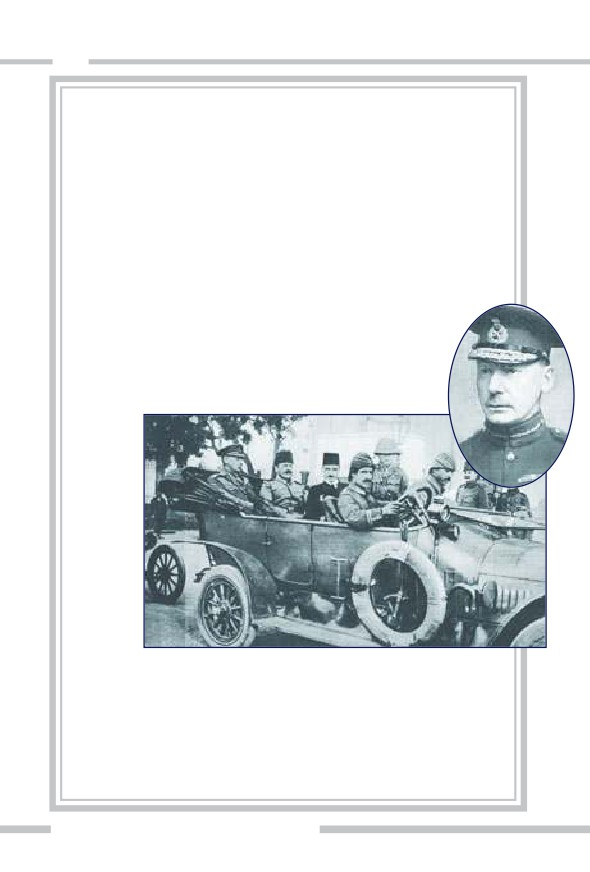
202
General Townshend'in anılarından ilginç bölümler
İngiliz ordusunun Kut'ül Amare'deki komutanı General Townshend,
1920 yılında yayınlanan Mezopotamya Seferim (My Campaign in Meso-
potamia) isimli kitabında ilginç bilgilere yer vermektedir.
Townshend'in bildirdiğine göre, I. Dünya Savaşı'nda İngiliz Ordusu saf-
larında, 1 milyonu aşkın Hint kökenli asker savaşmıştır. Bunların bir
kısmı muharip bir kısmı da destek birliğidir. Savaş boyunca bu askerle-
rin 74 bini yaşamını yitirirken, 67 bin kadarı yaralandı. İngiliz 6. Hint
Tümeni'nde Hindular, Sihler, Bangladeşliler, Gurkalar ve Müslüman
Peştunlar vardı. Townshend, Osmanlılara karşı komuta ettiği ilk savaş
olan "Kurna Muharebesi"nde Müslüman kökenli askerlerin Türkle-
re karşı savaşmak istemediğini anlatmaktadır. Kitabında, Hint
kıtalarındaki diğer Müslüman askerlerin ilerleyen muharebeler-
de de benzer tavırlar sergilemeye devam ettiğini yazar.1
(Üstte sağda)
General
Townshend.
(Altta) Gene-
ral Towns-
hend teslim
olduktan
sonra gözal-
tında.
Tarihi kaynaklara bakıldığında, Hint Müslümanlarının, Halife'nin
askerleri olarak tanımladıkları Müslüman Türklere karşı savaşmak iste-
medikleri açıkça gözlemlenebilmektedir. Irak cephesinin açılmasından
itibaren Şii Müslüman Hintliler dahi, bölgede Türklere karşı savaşmayı
reddetmişlerdir. Irak'ta Selman-ı Pak yakınında gerçekleşen çatışmaya 3
Hint alayı katılmayı reddetmiş ve kitle halinde İngilizlere isyan etmişler-
dir.2
ÜST AKIL İNGİLİZ DERİN DEVLETİNİN İÇYÜZÜ
ADNAN HARUN YAHYA
İngilizlere karşı en büyük Hint isyanı ise Singapur'da gerçekleşmiştir.
İngilizler safında Osmanlı Müslümanlarına karşı savaşmayı reddeden
Hintli Müslümanlar toplu halde isyan başlattılar. 15 Şubat 1915 tarihin-
de başlayan bu isyan, Peştun, Moghul ve Rajput asıllı Müslümanların
oluşturduğu 5. Hafif Piyade Alayı'nda çıkmıştı. Müslüman askerler,
İngiliz bayrağı altında Avrupa'ya götürülüp Osmanlı'ya karşı savaşmak
istemiyorlardı. Ancak bu isyan, söz konusu alayın başında tecrübeli bir
subayın olmaması nedeniyle etkisiz kalmıştır. Singapur'daki İngiliz
koloni yönetimi, bölgedeki Fransız ve Japon müttefiklerin de desteğini
alarak isyanı bastırmıştır. Kurulan sözde askeri mahkemenin aldığı jet
karar ile 850 asker ve 200'den fazla subayın oluşturduğu Müslüman ala-
yın yarısı kurşuna dizilerek veya asılarak idam edilmiştir. Geri kalanlar
ise ya ağır hapis cezalarına çarptırılmış ya da Kamerun ve Alman Doğu
Afrika'sına gönderilerek Almanlara karşı savaştırılmıştır. 1917 yılında
ise bu birlikler Türk taraftarlığı ile tanınan "Malezya Devlet Muhafızla-
rı" ile birlikte Aden'de, zorla Osmanlı'ya karşı cepheye sürülmüştür. Bu
vahim olay, tek başına, İngiliz derin devletinin Müslümanları Müslü-
manlara kırdırma politikasını nasıl zorla gerçekleştirdiğini gösterir nite-
liktedir. Müslümanlara karşı savaşmak istemeyen cesur Hintli askerler-
se, böylesine bir hainliğin içine girmektense şehit olmayı göze almışlar-
dır.3
Kapsamlı tarihi bilgilerin, İngiliz derin devleti elemanları tarafından
özenle saklandığı burada önemle belirtilmelidir. I. Dünya Savaşı döne-
minde Osmanlı'ya bağlı Müslümanların büyük bir kısmının Türklere
karşı savaşmayı reddettikleri ve bu nedenle de şehit olmayı göze aldıkla-
rı bilinmektedir. Fakat o döneme ait belgeler, genellikle İngilizlere ait
kaynaklar ile sınırlıdır. Dolayısıyla, bu konuda İngilizlere karşı gerçek-
leştirilen isyanlar özenle gizlenmiş, Müslüman ittifakı tarihten silinme-
ye çalışılmıştır.
1. "İngiliz General'in Kut Anıları", Al-Jazeera,
2. İsmet Üzen, "Türklerin Kut'ül Amare Kuşatması Sırasında İngiliz Ordusunda Bulunan
Hintli Askerlerin Tutumu (Aralık 1915 - Nisan 1916)", Akademik Bakış Dergisi, Cilt 2,
Sayı 3, 2008, s. 81
3. Emre Gül, "Hintli Askerler Singapur'da Osmanlı İçin İsyan Etmişti", Dünya Bülteni,
25.07.2014
203
204
Ortadoğu Dizaynının İlk Adımı:
Sykes-Picot Antlaşması
Osmanlı'nın Ortadoğu'daki topraklarının İngiltere ve Fransa arasın-
da paylaşımını belirleyen Sykes-Picot Antlaşması, İngiltere'nin Kut'ül
Amare bozgunundan 17 gün sonra, 16 Mayıs 1916'da -henüz I. Dünya
Savaşı devam ederken- İngiltere, Fransa ve Rusya arasında gizli olarak
imzalandı. Gizli anlaşmanın deşifre olması ise, 1917 Ekim Devrimi'nin
patlak vermesiyle Rusya'nın hem I. Dünya Savaşı'nın hem de Sykes-
Picot'nun dışında kalmasıyla gerçekleşti. İngiliz derin devletinin yıllar
süren kışkırtmaları, casusluk faaliyetleri ve toplum mühendisliği operas-
yonlarıyla zemin hazırladığı komünist ihtilalin başlamasıyla, Osmanlı
pastasında hak iddia edecek en büyük güçlerden biri olan Rusya saf dışı
bırakılmış oldu.
Sykes-Picot Antlaşması'na göre, Doğu Akdeniz bölgesi, bugünkü
Suriye ve Lübnan kıyıları, Adana, Antep, Urfa, Diyarbakır ve Musul
Fransa'ya; Doğu Akdeniz'deki Hayfa ve Akka liman-
ları, Bağdat, Basra ve Güney Mezopotamya ise İngil-
tere'ye veriliyordu. Filistin'de ise, kutsal bölge olması
itibariyle uluslararası bir yönetim kurulacaktı.
Bugünkü Irak ve Suriye topraklarının bulunduğu
bölgenin büyük bölümü ise sırasıyla İngiltere ve
Fransa mandasına bırakılıyordu.
Sykes-Picot'ya göre Lübnan, Fransız himayesine verilmiştir.
(Sağda) Antlaşma sonrası Fransız ordusunun Beyrut'a girişi.
(Sağ üstte) Sykes-Picot ile Osmanlı topraklarının parçalan-
masını resmeden bir karikatür.
ÜST AKIL İNGİLİZ DERİN DEVLETİNİN İÇYÜZÜ
ADNAN HARUN YAHYA
Sykes-Picot'da Fransa'yla arasında yaptığı bu paylaşım, bölgenin tek
hakimi olmak isteyen İngiltere'yi hiç tatmin etmiyordu. Musul'un Fran-
sızlarda kalması ve Filistin'i elde edememesi İngiliz derin devletinin
çıkarlarıyla hiç örtüşmüyordu. Çünkü Musul'daki zengin petrol yatakla-
rının varlığı 1900'lerin başından beri İngilizlerin bölgeye gönderdikleri
teknik heyetlerin raporlarında önemle yer almaktaydı. Ayrıca Musul'un
alınması, İngiliz derin
devleti tarafından muhte-
mel bir İslam Birliği'nin
engellenmesi için de
önemliydi. İngiliz derin
devleti, Hindistan yolunu
korumak açısından da
Filistin'i tam hakimiyetine
almayı önemli görüyordu.
205
206
İşin doğrusu, 1915'te Arabistan Yarımadası'nı ele geçirmiş olan
İngiltere'nin asıl planı, Osmanlı'ya karşı isyana kışkırttığı Mekkeli Şerif
Hüseyin'i destekleyerek Irak ve Filistin toprakları üzerinde kendisine
bağımlı bir Arap devleti kurmaktı. Mekke Şerifi Hüseyin ile Mısır'daki
Britanya Yüksek Komutanı McMahon arasında böyle bir antlaşma zaten
gizli olarak imzalanmıştı. Hatta aynı esnada Şerif Hüseyin'in hasmı olan
Vahabi Emir Suud ile de gizli görüşmeler yürütülmüştü. İngiliz derin
devleti bölgede bu tür ikili, üçlü, beşli oyunlar peşinde koşarken, kendi-
sinin yavaş yavaş oyunun dışına itildiğini fark eden Fransa, bu plana
karşı çıkarak İngiltere'yi bölgenin eşit paylaşımını öngören bu anlaşmaya
zorlamıştı.
Bundan önce İngiltere, ne Kıbrıs'ı ne de Mısır'ı işgal ederken Fran-
sa'nın iznine ihtiyaç duymuştu. Fransızlar da buralardan pay isteme gibi
bir cürette asla bulunmamıştı. Öyle ki, 1869'da Fransızların bizzat açtığı
Süveyş Kanalı'nı, 1882'deki Mısır işgaliyle hakimiyet ve idaresine alan
İngilizlere karşı Fransızların, içten içe rahatsız olmaları dışında, hiçbir
itirazları olmamıştı.
Ancak, İngilizlerin Çanakkale ve Kut'ül Amare hezimetlerinden
sonra durum değişmişti. İngiliz derin devletinin karşısına artık, tepki
veren ve baskı yapan bir Fransa çıkmıştı. Durumun farkında olan İngil-
tere, Sykes-Picot aşamasında Fransa'yla zıtlaşmak istemedi. Çünkü uğra-
dığı güç ve prestij kaybı nedeniyle Fransa'yı karşısına alması doğru bir
politika olmayacaktı.
Çanakkkale Zaferi'nin temsili resmi
ÜST AKIL İNGİLİZ DERİN DEVLETİNİN İÇYÜZÜ
ADNAN HARUN YAHYA
Bu nedenle İngiltere, geçici bir süre için bağımlı hale geldiği Fran-
sa'yı kızdırmamak için Sykes-Picot'u ortak bir paylaşım planı dahilinde
kurguladı. Osmanlı toprakları üzerindeki paylaşımın, kendi işine geldiği
biçimdeki revizyonunu daha ileri tarihlere bıraktı. Sykes-Picot, deşifre
olmuş bir gizli antlaşma olması nedeniyle resmi olarak hayata geçirile-
mese de, Osmanlı'nın dağılma sürecinde büyük ölçüde bu paylaşım esas
alınmıştır. Bu gizli antlaşmanın Anadolu topraklarını içeren bölümü ise,
Mustafa Kemal liderliğinde gerçekleşen Anadolu'daki Kurtuluş Mücade-
lesi sonrasında hayata geçirilememiştir. İngiliz derin devleti, hala bunu
telafi etmek istemekte, Türk toprakları içinde kışkırttığı PKK komünist
terörü ve darbe girişimi gibi eylemlerle bunu gerçekleştirmeye çalışmak-
tadır.
207
208
Sykes-Picot ile belirlenmiş paylaşım ile İngiliz derin devleti, büyük
vaatlerle kandırıp kendi safında Osmanlı'ya karşı ayaklandırdığı isyankar
Şerif Hüseyin'e verdiği sözü de bir kenara atmış oluyordu. Bu paylaşım-
da, Şerif Hüseyin'e bir bölge ayrılmamıştı. İngiliz derin devletinin, İslam
aleminde gözüne kestirdiği münafıkları parlak ve boş vaatlerle kandırıp
ardından kullanıp bir kenara atma alışkanlığı konusunda, Şerif Hüseyin
oldukça belirgin bir örnektir.
İngilizlerin Sykes-Picot'nun eksikliklerini tamamlaması çok uzun
sürmedi. 15 Kasım 1918 tarihinde İngiltere, bölgedeki Hristiyanların
güvenliği, İngiliz savaş esirlerine kötü muamele edilmesi gibi -tarih
boyunca ve günümüzde de her fırsatta kullandığı- göstermelik gerek-
çelerle, Mondros Mütarekesi'nin 7. maddesini bahane ederek Musul'u
işgal etti. 24-25 Nisan 1920'de ise İtalya'nın San Remo şehrinde toplanan
konferans sürecinde de İngilizler, Fransızları "kendi yöntemleriyle" ikna
ederek, Suriye'ye karşılık onların Musul ve Filistin'deki haklarını elde
ettiler.
Bölgedeki günümüz sınırlarının temelleri Sykes-Picot ile atılmıştır.
Ancak asıl sınırlar, 1919 sonrasında yapılan (Paris ve San Remo gibi)
antlaşmalarla, çeşitli revizyonlar geçirerek ve cetvellerle ince ince çizile-
rek son hallerine getirilmiştir. Bu konuda belirleyici aktör, her zaman
olduğu gibi İngiliz derin devleti olmuş ve bölge, deccaliyetin geleceğe
yönelik planları doğrultusunda suni parçalara ayrılmıştır.
İngiliz derin devleti, Müslüman alemi için-
de milliyetçilik, mezhepçilik, aşiretçilik gibi
unsurları kışkırtıp körükleyerek, iki yüz yıl
önce başlattığı fitne ve kargaşa ortamını
sürdürmektedir. Müslüman alemi, artık bu
oyuna gelmemeli ve birlik olarak bu
oyunu bozmalıdırlar.
ÜST AKIL İNGİLİZ DERİN DEVLETİNİN İÇYÜZÜ
ADNAN HARUN YAHYA
Bu suretle İngiliz derin devleti, Sykes-Picot ile parçalanma süreci
başlatılan ve Balfour Deklarasyonu'yla kızıştırılan bölge toprakları üze-
rinde yüzyıllardır kardeşçe, barış ve huzur içinde yaşayan Müslüman
topluluklarını, birbirinden yapay sınırlarla ayırmış oldu. Bölgedeki sos-
yal, siyasal ve kültürel dengeleri özellikle göz ardı ederek, Irak, Suriye,
Ürdün, Kuveyt, Hicaz Krallığı gibi manda devletler kurdu.
İngiliz derin devleti, birlik ve tek vücut olan bir İslam dünyasının
amansız bir güce, etkiye ve caydırıcılığa sahip olacağını çok iyi bildiğin-
den böyle bir durumu tarih boyunca kendisi için en büyük tehdit olarak
değerlendirmiştir. Kendine yönelik bu tehdidi durdurmak amacıyla par-
çaladığı Müslüman alemi içinde milliyetçilik, mezhepçilik, aşiretçilik gibi
unsurları bölücülük amacıyla kışkırtıp körükleyerek halen devam eden
yüz yıllık fitne, kargaşa, ihtilaf, savaş ve çatışma ortamını titizlikle hazır-
lamıştır.
Bu süreç içinde, yarı-sömürge konumuna getirilmiş bölge ülkeleri,
İngiliz güdümlü diktatörlerin idaresinde, halkların sürekli ezildiği, zulüm
gördüğü, yoksulluk ve sefaletten kurtulamadığı topraklar haline
dönüşmüştür. Diğer yandan da yüzyıldan beri, bu ülkelerin devasa zen-
ginlikleri, doğal kaynakları İngiliz derin devleti ve destekçileri tarafından
sömürülmüştür.
Özetle, 21. yüzyılın başlarında adı anılmaya başlanan ve İslam ale-
minin çok daha küçük parçalara ayrılıp nihai olarak yok edilmesi ve böl-
genin kayıtsız-şartsız İngiliz derin devletine teslim edilmesi anlamına
gelen Büyük Ortadoğu Projesi'ne giden süreç, Sykes-Picot ile başlatılmış-
tır.
209
210
ÜST AKIL İNGİLİZ DERİN DEVLETİNİN İÇYÜZÜ
ADNAN HARUN YAHYA
Savaş'ın Tek Galibi: İngiltere
I. Dünya Savaşı, büyük ölçüde İngiliz derin devletinin çok önceden
planladığı gibi sonuçlanmış ve savaştan en karlı çıkan ülke İngiltere
olmuştur. İngiltere, Avrupa'nın en güçlü devleti olarak ekonomide rakip-
siz hale gelmiştir. İngiltere'nin, kendisine en büyük rakip olarak ve küre-
sel sömürü düzenine karşı tehdit olarak gördüğü Osmanlı Devleti ve
Alman İmparatorluğu yıkılmıştır. Aynı şekilde Avusturya-Macaristan ve
Rusya gibi diğer büyük imparatorluklar da yıkılmış, yerlerine yeni ve
güçsüz milli devletler kurulmuştur.
İngiliz derin devletinin, on yıllardır sayısız plan ve stratejiyle
Osmanlı'yı, Ruslara ve Almanlara kaptırmamak için izlediği sinsi politi-
kalar başarılı olmuştur. İngiliz derin devleti, Osmanlı topraklarındaki en
önemli stratejik noktaların pek çoğunu kendi hakimiyeti altına almıştır.
İngiliz derin devleti, birkaç yüzyıldır sürdürdüğü "sömürgecilik" sis-
temi yerine, özellikle Ortadoğu ülkelerinde uygulamaya koyduğu ve
sömürgeciliğin daha pratik ve düşük maliyetli versiyonu olan "manda" ve
"himayecilik" sistemlerini geliştirmiştir. Bu suretle 20. yüzyıla uyarlanmış
ve halen süregiden "gizli sömürgecilik" modeli ortaya çıkmıştır.
İngiltere, 20. yüzyılın başlarından itibaren kömür enerjisiyle işleyen
sanayisinin, ordusunun ve donanmasının altyapısını, petrolle işleyen tek-
nolojilere çevirmek istemektedir. Bu dönüşümü ise başından beri ele
geçirmeyi planladığı Ortadoğu petrollerine güvenerek yapmıştır. Bu
planı da sinsi bir şekilde uygulamaya koymuş, öncülüğünü yaptığı kanlı
bir dünya savaşı ile hedefine ulaşmıştır.
I. Dünya Savaşı ve savaşın bitimini izleyen süreçte İngiltere, işgal
ettiği Ortadoğu toprakları üzerindeki siyasi dinamikleri, kendi sömürü
düzenine en uygun olacak şekilde kurgulamıştır. Bu toprakları, Müslü-
manların birlik olup büyük bir güç haline gelmelerini kökten engelleye-
cek biçimde tasarlamıştır.
211
212
İngiliz derin devleti, Müslüman dünyasını yapay sınırlarla bölüp
parçalayarak, gerektiğinde milliyetçilik, mezhepçilik ve kabilecilik gibi
unsurları kullanarak, onları kolayca birbirine düşürecek bir şekle getir-
mek istemiştir. Böylelikle, bölgede istediği gibi kargaşa, ihtilaf ve çatışma
çıkarabileceği ortamın altyapısını hazırlamıştır. Bunu yaparak, bugünkü
Büyük Ortadoğu Projesi'yle son halini alan, "Ortadoğu'ya tam ve mutlak
hakimiyet" sürecinin temelini atmıştır.
İngiliz derin devleti, "barbarlı-
ğa" karşı "medeniyet" getirme
vaatleriyle tarih boyunca ülke-
leri sömürmüş, bölmek istediği
toprakları kargaşa ve savaşlara
sürüklemiştir.
ÜST AKIL İNGİLİZ DERİN DEVLETİNİN İÇYÜZÜ
ADNAN HARUN YAHYA
İngiliz derin devletinin, I. Dünya Savaşı sırasında Filistin bölgesini
Musevilere açarak ileride kurulacak İsrail Devleti'nin temellerini atması-
nın nedeni de İsrail'e veya Musevilere olan hayranlığı değil, bunun
Büyük Ortadoğu Projesi'nin bir parçası olmasındandır. Musevilerin söz
konusu topraklarda bulunması, Kuran'a ve Tevrat'a uygun, hayırlı bir
karardır. Fakat İngiliz derin devletinin bu karar ve uygulamayı sadece
kendi çıkarları için gerçekleştirdiği bilinmelidir.
213
214
Sonuçta, başından beri savaşa giden yolu ince ince kurgulayan,
öncesi ve sonrasını titizlikle planlayan İngiliz derin devleti, I. Dünya
Savaşı'ndan en kazançlı çıkan taraf olmuştur. Ancak İngiliz derin devle-
tinin bu kazancının bedelini, her zaman olduğu gibi dünyanın diğer
ülkeleri ve toplumları ödemiştir.
Şeytan ve deccaliyet, insanlığa vermek istediği en büyük zarar ve
yıkımı yüzyıllardır İngiliz derin devletinin eliyle gerçekleştirmiştir. I.
Dünya Savaşı'nda da bu kural değişmemiştir. İngiliz derin devletinin
öncülük ettiği bu korkunç savaştan geriye milyonlarca ölü; on milyonlar-
ca hasta, sakat, yoksul insan; yerle bir olmuş ülkeler; çökmüş ekonomiler;
yok olmuş aileler; açlık, yokluk ve sefalet içine düşmüş toplumlar ve kay-
bolmuş nesiller kalmıştır.
I. Dünya Savaşı'nda cephede İngiliz
askerleri
(Sağda) I. Dünya Savaşı sırasında İn-
giltere'nin propaganda posterlerin-
den biri (Poster başlığı: Adaletin Kılı-
cını Kaldıralım)
ÜST AKIL İNGİLİZ DERİN DEVLETİNİN İÇYÜZÜ
216
Tüm ülkelerden 65.038.810 askerin katıldığı savaş,
arkasında resmi rakamlara göre toplam 8.556.315 ölü,
21.219.452 yaralı ve 7.750.945 kayıp veya esir bırakmıştır.
Can kayıplarının yanı sıra maddi ve ekonomik yıkım da
çok büyük olmuştur. Özellikle savaşı kaybeden ülkelere
yüklenen ağır tazminatlar, bu devletleri ekonomik krizle-
re sürüklemiştir. Bu krizler, zincirleme olarak diğer ülke-
leri de etkisi altına almıştır. Bunun sonucunda, 1929
Dünya Ekonomik Buhranı ortaya çıkmıştır. Ülkeler ara-
sındaki siyasi sorunlar çözümlenmediği gibi, ağır yaptı-
rımlar içeren antlaşmaların sonucunda
ortaya çıkan yeni gergin-
ÜST AKIL İNGİLİZ DERİN DEVLETİNİN İÇYÜZÜ
ADNAN HARUN YAHYA
24 Ekim 1929'da (Kara Perşembe), tek bir günde 13 milyon hisse
senedi el değiştirince borsada panik meydana gelmiş ve Büyük
Buhran adı verilen ekonomik kriz başlamıştır. Bu da dahil olmak
üzere dünyadaki ekonomik krizler, İngiliz derin devletinin kurgu-
ladığı deccali eylemlerdendir.
likler, ihtilaflara ve kutuplaşmalara neden olmuştur. Gittikçe güçlenen
faşizm, nasyonal sosyalizm, komünizm gibi ideolojiler geniş bir coğraf-
yaya yayılmıştır. Bütün bunlarsa, çok daha büyük bir felaket olan II.
Dünya Savaşı'na giden yolu hazırlamıştır.
217
218
Görülebildiği gibi İngiliz derin devleti, şeytani bir plan ile bütün
dünyayı topyekûn yıkıma ve savaşa sürükleyebilecek sinsilikte bir yapı-
lanmadır. Böylesine büyük bir savaşın mimarını, şu an dünyada gerçek-
leşen iç savaş, kargaşa ve çatışmalardan muaf görmek, bu sinsi yapılan-
manın kapsamını anlamamaktan kaynaklanır. İngiliz derin devleti, daha
I. Dünya Savaşı'nı kurguladığı dönemlerden itibaren bugüne dair hazır-
lık yapmış, her daim kargaşa içindeki günümüz Ortadoğu'sunu hayal
etmiştir. Nitekim bugün Ortadoğu coğrafyasında gerçekleşen korkunç
yıkım ve trajedilere yakından bakıldığında, bunların tümünün İngiliz
derin devletinin menfaatleriyle tam anlamıyla örtüştüğü ve bunun 100
yıllık bir planın sonucu olduğu görülebilmektedir. Tarih sahnesindeki
tüm gelişmeler, köklü bir planın sonucudur ve bir bütündür. Bu sinsi pla-
nın tasarlayıcısı ve dünya savaşı gibi trajedilerin müsebbibi de yalnızca
dünyaya hakim deccali sistem olan İngiliz derin devletidir.
ÜST AKIL İNGİLİZ DERİN DEVLETİNİN İÇYÜZÜ
ADNAN HARUN YAHYA
(Solda) İngiliz
Kralı V. Geor-
ge, I. Dünya
Savaşı sırasın-
da İngiliz
askerlerini
kontrol eder-
ken.
(Sağda) İngiliz
derin devleti-
nin organize
ettiği bu kor-
kunç savaş,
geride yoksul
ve perişan
halklar bırak-
mıştır.
219
220
Size ne oluyor ki, Allah yolunda ve:
"Rabbimiz, bizi halki zalim olan bu ülkeden
çikar, bize Katindan bir veli (koruyucu sahib)
gönder, bize Katindan bir yardim eden yolla"
diyen erkekler, kadinlar ve çocuklardan zayif
birakilmişlar adina mücadele etmiyorsunuz?
(Nisa Suresi, 75)
ÜST AKIL İNGİLİZ DERİN DEVLETİNİN İÇYÜZÜ
ADNAN HARUN YAHYA
SULTAN AHMET CAMİİ,
İSTANBUL
221
222
ÜST AKIL İNGİLİZ DERİN DEVLETİNİN İÇYÜZÜ
ADNAN HARUN YAHYA
Osmanlı'nın Yıkılış
Nedenlerİ
223
224
Dev İmparatorluk
Yıkılıyor
smanlı Devleti'nin en geniş sınırlarına ulaştığı 1683 yılında,
devletin yüzölçümü, etki alanları ile birlikte
24 milyon
O
km2'yi buluyordu. Dünyanın dört bir yanı, İslam Halifeli-
ği'nin merkezi İstanbul'dan yönetiliyordu. İngiliz derin devleti için bu
İmparatorluk, hem dünyaya hakimiyeti hem de İslam camiasını temsil
etmesi nedeniyle oldukça riskli görülüyordu.
Osmanlı İmparatorluğu'nun duraklama dönemine girmesi, İngiliz
derin devletinin Osmanlı üzerindeki sinsi emellerini gerçekleştirmesi
için bir adım olmuştur. Aslında duraklama aşamalarını da hazırlayan
yine İngiliz derin devletidir. Ortam müsait hale geldiğinde, İngiliz derin
devleti çeşitli taktiklerle Osmanlı egemenliğini eline almayı başarmıştır.
Osmanlı İmparatorluğu, 24 milyon km2'lik coğrafya hakimiyetini kay-
bettiği gibi, dini, milli ve manevi değerlerinden de büyük ölçüde uzaklaş-
ÜST AKIL İNGİLİZ DERİN DEVLETİNİN İÇYÜZÜ
ADNAN HARUN YAHYA
mıştır. Bir bakıma İngiliz derin devleti, hedeflediği yozlaşmış toplum
modelini Osmanlı üzerinde uygulamaya başlamış ve onu adım adım
çöküşe götürmüştür.
Osmanlı'nın yıkılış sebeplerini detaylı olarak incelemek önemlidir.
Osmanlı'yı çöküşe götüren bütün aşamalarda İngiliz derin devletinin
sinsi taktikleri görülebilecek, dindar bir toplumun nasıl materyalizme
sürüklendiği izlenebilecek ve deccali bir akımın münafıkane yöntemlerle
nasıl felaket getirebildiği anlaşılabilecektir.
Osmanlı'yı yıkıma götüren sebepleri çeşitli başlıklar altında incele-
yelim:
1. İngiltere'ye Verilen İmtiyazlar ve
İlk Borçlanma
İngiliz derin devletinin Osmanlı'ya ilgisi, Kraliçe I. Elizabeth döne-
minde başlar. Kraliçe, Privy Council üyesi William Harborne'u 1579'da
Sultan III. Murad'a elçi olarak gönderir ve 1583 yılında iki devlet arasın-
da diplomatik ilişkilerin kurulmasıyla Harborne İstanbul'a yerleşir.
(Privy Council: Üyeleri başbakan tarafından seçilen İngiliz devlet danış-
ma kuruludur. İngiliz derin devletinin denetiminde hareket eder.) Diplo-
matik ilişkilerin kurulmasında önemli rol oynayan Harborne iki İngiliz
tüccar için Osmanlı topraklarında ticaret yapma izni alır. Daha sonra
Kraliçe'nin ricasıyla bu izin tüm İngiliz vatandaşları adına genişletilir. Bu,
İngilizlerin Osmanlı'dan elde ettiği ilk kapitülasyonlardır. Bu ilk kapitü-
lasyonlarla İngiltere, artık Osmanlı'nın finans sistemini ele geçirecek ilk
adımı atmış olur. İngiliz kapitülasyonlarının, iki devlet var oldukça
devam edeceği taahhüdünün verilmesi, Osmanlı için çöküşün kapılarını
açmıştır. Bu tarihten itibaren İngiliz derin devletinin Osmanlı'yla olan
ilişkileri tek taraflı olmuştur ve İngilizlerin zenginleşmesi esasına dayan-
mıştır.
225
226
Dönemin Osmanlı Maliyesi'ne bir göz atmak gerekirse, Kanuni Sul-
tan Süleyman döneminde sadece Sivas vilayetinin yıllık bütçesi 20 mil-
yon altın iken, Fransa'nın toplam bütçesi 4 milyon, İngiltere'nin ise 6 mil-
yon altın idi. Böylesine zengin durumdaki Osmanlı Devleti, İngilizlere
verdiği ilk imtiyazların ardından önemli kayıplar yaşamış ve 19. yüzyıla
geldiğinde mali sistemi çıkmazın içine girmiştir. Osmanlı Devleti'nin
İngiliz vatandaşlarına sunduğu bu imtiyazlar, özellikle dönemin Harici-
ye Nazırı (Dışişleri Bakanı) İngiliz dostu Mustafa Reşid Paşa'nın, ölüm
döşeğindeki Padişah II. Mahmut'a imzalattığı, detaylarını önceki bölüm-
de gördüğümüz, Baltalimanı Anlaşması ile zirveye çıkmıştır.
ÜST AKIL İNGİLİZ DERİN DEVLETİNİN İÇYÜZÜ
ADNAN HARUN YAHYA
Osmanlı'nın maddi sıkıntılar-
dan uzak, huzurlu döneminin
resmedildiği tablolar.
227
228
Bu anlaşmadan sadece 20 yıl sonra Kırım Savaşı patlak vermiştir.
Kâğıt üzerinde, savaşın galiplerinden gibi görünen Osmanlı Devleti, ger-
çekte savaştan çok büyük zarar alarak çıkmıştır. Önceki bölümde detay-
ları anlatılan İngiliz derin devleti kontrolündeki Düyun-u Umumiye'nin
kurulmasıyla Osmanlı, Avrupalı devletlerin mali denetimi altına girmiş
ve ekonomik bağımsızlığını kaybetmiştir.
ÜST AKIL İNGİLİZ DERİN DEVLETİNİN İÇYÜZÜ
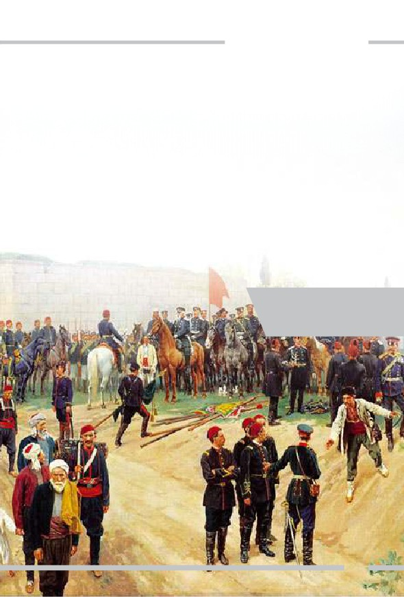
ADNAN HARUN YAHYA
Burada Kırım Savaşı'nı oluşturan sebeplere dikkatli bakıldığında,
savaşın zeminini hazırlayanın da, Rusya'yı bombardımana teşvik edenin
de İngiliz derin devleti olduğu açıkça görülebilmektedir. Kırım Savaşı'na
sürüklenen Osmanlı-Rus Krizi sırasında Rusların İstanbul'daki delegas-
yonunun başındaki Aleksandr Menshikov, Mustafa Reşid Paşa'nın İngi-
liz Büyükelçisi Lord Stratford'un baskısı ile barışı engellediğini söylemiş-
tir. Plan tanıdıktır. Zaten tarih boyunca hemen her Osmanlı-Rus gerili-
minde mutlaka İngiliz derin devletinin dahli olduğu görülebilecektir.
Gerek Kırım Savaşı, gerekse birazdan detaylarını göreceğimiz 1877-78
Osmanlı-Rus veya diğer ismiyle 93 Harbi sırasında Osmanlı ordusunda
İngiliz askeri danışmanların bulunduğunu hatırlatmak gerekir. Söz
konusu danışmanlar, Osmanlı liderlerini ve komutanlarını savaşa sürük-
lemiş ve karşılığında, sadece İngiliz derin devletinin menfaatine olacak
ucuz taahhütler vermişlerdir.
93 Harbi sırasında Niğ-
bolu'nun Rus güçle-
rince işgalini temsil
eden resim.
229
230
İngilizlerin, Kırım Savaşı sonrasında Osmanlı tarafında yer almala-
rının asıl sebebiyse, Osmanlı Devleti'nden bu "yardımın" karşılığını gani
gani alabilmektir. Nitekim öyle de olmuştur; İngiltere, en büyük imtiyaz-
ları, bu sinsi savaş sonrasında kazanmıştır.
Ayrıca, Kırım Savaşı'nın sonunda zorla dayatılan Islahat Fermanı ile
Batı'da dolaşan liberal düşüncelerin Osmanlı Devleti'ne girişinin hızlan-
dığını burada hatırlatalım. Buna, Darwinizm de dahildir. Kırım Savaşı
sonunda İngiliz derin devleti emellerine ulaşmış, hem ideolojik hem de
mali olarak Osmanlı'yı daha iyi sömürebilme imkanı bulabilmiş ve
Osmanlı, çöküşe bir adım daha yaklaşmıştır.
Kırım Savaşı sırasında Balıkla-
va'daki limandan tekneye bindiri-
len hastaları temsil eden resim.
(William Simpson, 24 Nisan 1855)
ÜST AKIL İNGİLİZ DERİN DEVLETİNİN İÇYÜZÜ
ADNAN HARUN YAHYA
(Üstte solda) Kırım Savaşı sı-
rasında Türk süvarileri 1855
(Altta sağda) Kırım Savaşı,
Türk Topçu Birliği 1854
231
232
İngiliz Derin Devletinin Dini Kullanması
İngiltere Kraliçesi I. Elizabeth, Osmanlı
Padişahına imtiyaz mektubu yazdığın-
da, Müslümanların Halifesi'ne
hitap ettiğinin farkında idi. Bu
nedenle Katolik Avrupa ile ara-
sına mesafe koyması gerekti-
ğini düşünerek mektupta
"putperestliği cezalandıran
hakiki Tanrı'ya taptığını",
bu yüzden de "putperestler"
olarak gördüğü Katoliklerin
amansız düşmanı olduğunu
söylemiştir.
Kraliçe ve İngiliz elçileri, mek-
tupta her ne kadar Müslümanlara
İngiltere Kraliçesi
yakın olduklarını iddia etseler de,
I. Elizabeth
bu aslında zorunlu bir tiyatrodan başka
bir şey değildir. Elçiler, Londra'ya gönder-
dikleri mektuplarda İslam dini için "şeyta-
ni ve barbar bir din" ifadesini kullanmakta (Yüce İslam dinini ten-
zih ederiz), "Müslüman dostu" ifadelerini Allah adına söylenmiş
yalanlar olarak adlandırmaktaydılar. Allah'ın bu "yalanları" affede-
ceğine olan inançları da mektuplarında dile getirilmekteydi.
ÜST AKIL İNGİLİZ DERİN DEVLETİNİN İÇYÜZÜ
ADNAN HARUN YAHYA
İngilizlerin sahte Müslüman dostluğu, 450 yıl boyunca devam
ederek bugüne kadar gelmiştir. İngiliz derin devletinin Müslü-
man düşmanlığını Osmanlı döneminin son alimlerinden Seyyid
Abdülhakim Arvasi çok güzel dile getirmiştir:
İslam'ın en büyük düşmanı İngilizlerdir. İslamiyet'i bir ağaca ben-
zetirsek, başka kâfirler, fırsat bulunca bu ağacı dibinden keser.
Müslümanlar da bunlara düşman olur. Fakat bu ağaç bir gün filiz
verebilir. İngiliz böyle değildir. Bu ağaca hizmet eder, besler ve
Müslümanlar da onu sever. Fakat gece kimse anlamadan köküne
zehir sıkar. Ağaç öyle kurur ki bir daha büyüyemez. Vah vah çok
üzüldüm diyerek Müslümanları aldatır. İngiliz'in, İslam'a böyle
zehir salması demek, para, mevki ve kadın gibi, nefsani arzular
karşılığında satın aldığı yerli münafıkların ve soysuzların elleriyle,
İslam âlimlerini, İslam kitaplarını ve bilgilerini ortadan kaldırma-
sıdır.1 (İngiliz devletini ve halkını tenzih ederiz.)
Bu, oldukça doğru bir teşhistir. Fakat kuşkusuz Abdülhakim
Arvasi'nin burada işaret ettiği, masum İngiliz halkı değil, söz
konusu hainliklerin derinlerinde bulunan İngiliz derin devletidir.
İngiltere Devleti ve halkı, bu tanımlamalardan uzak ve münez-
zehtir.
1. M. Sıddık Gümüş, 'M. Sıddık Gümüş Sözleri ve Alıntıları', Alıntısöz,
islam%C4%B1n-en-b%C3%BCy%C3%BCk-
d%C3%BC%C5%9Fman/49194
233
234
2. Darwinizm'in Osmanlı'ya Girişi ve Milli
ve Manevi Değerlerin Yitirilmesi
Kitabın ilk bölümlerinde, insanlık tarihinin en büyük bilim safsata-
sı olan evrim teorisinin, İngiliz derin devleti üyeleri tarafından, ateist
mason localarında şekillendirildiğini ve dünyaya servis edildiğini detay-
larıyla anlatmıştık. Darwinizm'in tüm dünyada yaygınlaştırılma sebebi-
nin de, dünya çapında dini, manevi, ailevi ve milli duygulardan insanları
uzaklaştırabilmek ve böylelikle kargaşa ve çatışmalara açık toplumlar
inşa edebilmek olduğunu belirtmiştik. Bu yolla İngiliz derin devleti, dec-
cali sistemini tüm dünyada yaygınlaştırabilecek, İslam alemini parçalara
bölerken Hristiyan ve Musevi toplumları da yozlaştırabilecek ve böyle-
likle toplumları dejenerasyona ve çatışmalara kolaylıkla sürükleyebile-
cekti.
İngiliz derin devleti, Darwinizm belasını Osmanlı'da yaygınlaştıra-
bilmek için özel bir zaman seçmiştir. Bu, İmparatorluğun büyük ölçüde
kan kaybettiği, gücünü, nüfuzunu ve etkisini yitirdiği 19. yüzyıl sonları-
dır. "Aydınlanma" kılıfı altında, yine Osmanlı bünyesindeki münafıklar
kullanılarak bu veba Türk topraklarına girmiş ve oldukça sinsi bir şekil-
de yaygınlaştırılmıştır. İngiliz derin devleti denetiminde kurulan dernek-
ler, kurumlar ve okullar hep Darwinizm telkini üzerine faaliyet göstermiş
ve Hilafetin temsil edildiği bu güzide millet, bir anda "Allah yok" diyen
bir akımın pençesine düşürülmüştür (Allah'ı tenzih ederiz).
Vebayı bir kere zerk ettikten sonra, gerisi İngiliz derin devleti için
oldukça kolay olmuştur. Darwinizm'in bünyeye girmesi ile İslam Birliği
hayali ortadan kalkmış, İslam toplumu paramparça olmuş, halk büyük
ölçüde dini ve mukaddesatçı kimliğini kaybetmiş ve milli duygular yeri-
ni büyük ölçüde münafıkane eylemlere bırakmıştır. Artık bu aşamadan
sonra, İngiliz derin devleti, ajanlarını ve propaganda yöntemlerini kulla-
narak Osmanlı toplumunu istediği şekilde yönlendirebilmiştir. Öyle ki,
ÜST AKIL İNGİLİZ DERİN DEVLETİNİN İÇYÜZÜ
ADNAN HARUN YAHYA
baskı altında tuttuğu II. Abdülhamid gibi padişahlara ve devlet adamla-
rına da istediğini yaptırır hale gelmiştir.
Dolayısıyla, Osmanlı'nın yıkılışının asıl sebebinin Darwinizm oldu-
ğunu söylemek oldukça doğru bir tespit olacaktır.
Osmanlı'ya Darwinizm Nasıl Yerleşti?
19. yüzyılın başından itibaren Osmanlı aydınlarında ve yönetici kad-
rolarında Batılılaşma kültürünün hakim olduğunu görürüz. Bu dönemde
Osmanlı topraklarına, ilk olarak Batı'daki bilimsel gelişmeler ve teknolo-
jik yenilikler taşındı. Ardından Batı'nın siyasi ve ekonomik modelleri
taklit edilerek Osmanlı devlet sistemi yenilenmeye çalışıldı. Osmanlı
ordusu da, silahlarından kılık kıyafetine kadar yenilenme sürecine girdi.
Bu Batılılaşma rüzgarı, bazı alanlarda güzel gelişmelere vesile olsa da,
Osmanlı düşünce yapısını ve sosyal düzenini de etkiledi. Birçok konuda
olduğu gibi felsefe ve bilim alanında da Batı'nın "mutlak" üstünlüğü
kabul edildi. Avrupa'da yaygınlaşan materyalizm, Pozitivizm, Darwinizm
gibi ateist ideolojiler bazı Osmanlı aydınlarını çok büyük bir hızla etkisi
altına aldı. Ateist olmayı, Darwin'in bilime aykırı iddialarına inanmayı,
dünyayı materyalist bir gözle değerlendirmeyi modernliğin ve Batıcılığın
bir gereği olarak kabul ettiler. Dönemin bazı siyasetçileri politikalarını,
yaşam mücadelesinde ancak güçlü toplumların ayakta kalabileceğini
iddia eden Sosyal Darwinizm üzerine bina ettiler. Osmanlı'nın sonunu
getiren ise, Allah'ı inkar eden bu Darwinist akım oldu.
II. Abdülhamid'in Osmanlı'da Evrim Teorisini Yaygınlaştırması
19. yüzyılın ikinci yarısından itibaren Ernst Haeckel, Herbert Spen-
cer, Auguste Comte gibi birçok materyalist düşünürün kitapları, bir
kısım Osmanlı aydınları arasında elden ele dolaşmaya başladı. 200'den
fazla materyalist ve Darwinist eser Türkçe ve Arapçaya çevrildi. II.
Abdülhamid'in emriyle Lübnanlı yazar Hüseyin El-Cisr'in Hamidiye
Risalesi İstanbul'da 20 bin adet basıldı ve dağıtıldı. El-Cisr, risalesinde,
235
236
"mutasyonların evrimleştirici gücü olduğunu ve yeterli sayıda ara for-
mun bulunduğunu" iddia ediyordu. El-Cisr'e göre, güya Darwin'in teori-
si İslam dini ile çelişmemekteydi.
Oysa mutasyonlar, %99 oranında zararlı, %1 oranında ise etkisiz
kalan bozulma ve yıkılmalardır. Bilim insanlarının yeni keşifleri, "etkisiz"
kabul edilen %1'lik mutasyonların da zaman içinde mutlaka zararlı etki
gösterdiklerini ortaya koymuş ve bunlara sessiz mutasyon adını vermiş-
lerdir. Dolayısıyla bugün bilimin gösterdiği gerçek, mutasyonların %100
oranında zararlı olduğudur. "Yeterli sayıda ara form" iddiası ise, evrim
adına ortaya atılmış en büyük safsatalardan biridir. Zira yapılan çalışma-
larda 700 milyondan fazla fosil çıkarılmış ve bunların bir tanesinin bile
Lübnanlı yazar Hüseyin
El-Cisr'in Hamidiye Risa-
lesi, dindar görünüm
altında evrim teorisi
propagandası yapan bir
kitaptı. Evrim aldatma-
cası, dönemin dindar
kitlelerine, söz konusu
hocalar ve onların bu
yayınları ile empoze
ediliyordu.
ÜST AKIL İNGİLİZ DERİN DEVLETİNİN İÇYÜZÜ
ADNAN HARUN YAHYA
ara form olmadığı tespit edilmiştir. Şu ana kadar canlıların birbirlerinden
evrimleştiğini gösteren TEK BİR TANE BİLE ARA FOSİL bulunama-
mıştır; bulunması da imkansızdır. Bulunan yüz milyonlarca fosilin tümü,
hiçbir değişim geçirmemiş, tam ve mükemmel canlılara aittir. Nitekim
Darwin bile, ara fosil bulunamaması durumunda teorisinin tümüyle çök-
müş olacağını kitabında açıkça belirtmiştir:
Eğer gerçekten türler öbür türlerden yavaş gelişmelerle türemişse,
neden sayısız ara geçiş formuna rastlamıyoruz? Neden bütün doğa
bir karmaşa halinde değil de, tam olarak tanımlanmış ve yerli yerin-
de? Sayısız ara geçiş formu olmalı, fakat niçin yeryüzünün sayılama-
yacak kadar çok katmanında gömülü olarak bulamıyoruz... Niçin her
jeolojik yapı ve her tabaka böyle bağlantılarla dolu değil? Jeoloji iyi
derecelendirilmiş bir süreç ortaya çıkarmamaktadır ve belki de bu,
benim teorime karşı ileri sürülecek en büyük itiraz olacaktır.89
El-Cisr, bütün bu safsataları savunurken aynı zamanda, "Allah yok"
diyen bir teorinin Kuran ile çelişmediğini iddia edecek kadar da ileri git-
miştir. Dönemin dindar kitlelerine, söz konusu yazar ve hocalar yoluyla
bu büyük aldatmaca işte bu yöntemlerle empoze edilmiştir. Öyle ki, el-
Cisr'in bu risalesi Türkçe'ye, Urduca'ya ve diğer pek çok dile çevrilmiştir;
Suriye ve Türkiye'de pek çok alim, özellikle de El-Ezher'deki alimler tara-
fından kabul görmüştür.
Osmanlı subay ve yöneticilerinin yetiştiği Tıbbiye, Mülkiye, Hukuk
Fakültesi, Harbiye gibi okullarda, materyalist kitaplar okutulmaya baş-
lanmıştır. 1847'de Tıbbiyeyi ziyaret eden Mc Farleyn anılarında şöyle
yazmaktadır:
(Okulun kütüphanesi için) çoktan beri bu kadar materyalist kitabı
bir arada toplayan bir koleksiyon görmemiştim... Kanepenin üzerin-
de bir kitap vardı. Bu Holbah'ın ateizmi anlattığı Doğa'nın Sistemi
237
238
kitabının son baskısıydı. Kitabın üzerindeki notlardan çok sıklıkla
okunduğunu anladım. Tanrı'nın varlığına inanmanın saçmalığını ve
ruhun ölmezliği inancının imkansızlığını matematikle gösteren
bölümler en çok okunan yerlerdi.90 (Yüce Allah'ı tenzih ederiz)
Görülebildiği gibi Tıbbiye'de, oldukça kısa bir zaman içinde, öğren-
cileri ateizme sürükleyen Darwinist inançlar ciddi şekilde yaygınlaştırıl-
mıştı.
İstanbul Üniversitesi'nin başlangıcı olarak kabul edilen Darülfü-
nun'un rektörü Hoca Tahsin Efendi de ilk Darwinistlerdendi. Sadrazam
Reşit Paşa tarafından Avrupa'da eğitime gönderilmiş ve aldığı eğitim
sonrasında materyalist olmuştu. Tarih-i Tekvin (Yaratılış Tarihi) maka-
İstanbul Üniversitesi'nin
başlangıcı olarak kabul edi-
len Darülfünun'un rektörü
Hoca Tahsin Efendi de ilk
Darwinistlerdendi. Kitabı,
Darwinist propaganda
örneklerinden biridir.
ÜST AKIL İNGİLİZ DERİN DEVLETİNİN İÇYÜZÜ
ADNAN HARUN YAHYA
lesinde: "Bütün kainat ve varlığa hükmeden tekamül (evrim) kanunu
gereğince kainatın gelecekte erişmiş olacağı değişim merhalelerinden" bah-
sediyordu.91
Darülfünun'da kaynak eser olarak bir başka evrimci Ahmet Mithat
Efendi'nin makale ve kitapları da okutulmaktaydı. Ahmet Mithat Efendi
yazılarında, "insan, bir nevi hayvan olduğu için, vahşilik doğasının gereği-
dir" diyor ve sosyal Darwinizm'in şiddet unsurunu şu şekilde savunuyor-
du:
İntikam bir nevi hakkaniyet ve adalet-i vahşiyanedir. Lezzet almak
için fenalık edildiği pek nadir olup bunların kaynağı genellikle hırs,
şan ve menfaattir. Bu halde, doğamızın özünde olan kötü davranış-
ların bize zarar vereceğini nereden çıkarırız? Deve dikeni yırtıcı ise,
yaratılışı böyle olduğu içindir.92
II. Abdülhamid dönemi Maarif Nazırı (Milli Eğitim Bakanı) Münif
Paşa'nın kurduğu, Cemiyeti Tedrisiye-i İslamiye grubunun amacı da
"bilim dergileriyle materyalizmi ve evrimi anlatmaktı". İlk bilim dergileri
olan Mecmua-yı Fünun evrim yazılarından oluşmuştu.
Bu Darwinist ve materyalist eğitim çok hızlı sonuç vermiş ve
Osmanlı aydınları, materyalizm ve pozitivizmin merkezi olan Edebiyatı
Cedide yani Yeni Edebiyat akımı ve bu akımın yayın organı, Servet-i
Fünun Dergisi etrafında toplanmaya başlamışlardı. Hareketin önde gelen
şair ve yazarlarından, Abdülhak Hamit ve Recaizade Mahmut Ekrem,
Türk İslam toplumunun manevi duygularını zedeleyecek şu sapkın fikir-
lerle ortaya çıkıyorlardı:
İslam medeniyeti devrini tamamlamıştır.
Batıda düşüncesiyle, sosyolojisiyle ve tekniği ile yeni bir medeniyet
çıkmıştır.
Bu medeniyet, Osmanlı Devleti'ni er ya da geç yıkacaktır.
239
240
Materyalist ve Darwinist felsefe yazılarıyla tanınan Servet-i Fünun Dergisi,
Abdülhamid dönemindeki Darwinist yayınlardan biridir. (1892)
II. Abdülhamid döneminde yayınlanan Sabah Gazetesi'nin başyaza-
rı Şemsettin Sami ve İkdam Gazetesi'nin başyazarı Ahmet Cevdet de
evrimcidirler. Tercüman-ı Hakikat Gazetesi'nin başyazarı Ahmet Mithat
Efendi ile birlikte dönemin üç büyük gazetesi de evrimcilerin kontrolün-
dedir. Dönemin bir başka önemli gazetesi olan Ceride-i Havadis'in baş
yazarı da Beşir Fuad'dır ve ismi zikredilen diğer yazarlar, Türk ateizmi-
nin Osmanlı'da ilk yaygınlaştıran kişiler olarak kabul edilmektedir.
Abdülhamid döneminde Servet-i Fünun ile birlikte İçtihad, Piyano Mec-
muası, Envar-ı Zeka, Yirminci Asırda Zeka Mecmuası, Güneş, Hevran,
Mecmua-ı Ulüm, Saadet, Afak ve Felsefe Mecmuası isimli dergiler de
evrim safsatasının Osmanlı içinde yayılmasına neden olmuş ve bu kor-
kunç aldatmaca nedeniyle Osmanlı toplumu kısa sürede yozlaşma ve
çöküşe doğru sürüklenmiştir.
ÜST AKIL İNGİLİZ DERİN DEVLETİNİN İÇYÜZÜ
ADNAN HARUN YAHYA
II. Abdülhamid döneminin eğitim sistemi, evrim safsatasını yaygın-
laştıran birçok materyalist yetiştirmiştir. Bunlardan bazı isimlere ve onla-
rın İslam'a aykırı görüşlerine örnek vermek gerekirse:
Ahmet MİTHAT EFENDİ: Evrim teorisinin Osmanlı'daki ilk savu-
nucularındandır. Sarayın yarı resmi yayın organı Tercüman-ı Hakikat
Gazetesi'ni çıkarmaya başlamıştır.
Ahmet RIZA: Pozitivizmin dünya vatandaşlığı görüşünü kabul
etmiştir. İngiliz dostu olduğu ve İngiliz gibi giyindiği için İngiliz Ahmet
Rıza olarak tanınmıştır.
Salih ZEKİ: Ders verdiği Robert Kolej, Darüşşafaka, Mülkiye ve
Darülfünun'da Auguste Comte'un materyalist fikirlerini anlatmıştır.
Rıza TEVFİK: Herbert Spencer'ı ve Darwin'i üstat olarak benimse-
miştir. Çok sayıda dergide Darwinizm'i anlatan yazıları yayınlanmıştır.
Hüseyin Cahit YALÇIN: Mülkiye'de okurken materyalist olmuştur.
Evrim teorisini maddeciliğin gereği olarak görmüş ve Yaratılışı reddet-
miştir.
Ahmet ŞUAYB: Hukuk Fakültesi ve İstanbul Üniversitesi'nde hoca-
lık yapmıştır. Comte'un fikirlerini savunmuştur.
Abdullah CEVDET: Tıbbiye'de evrimci düşüncelerle tanışan
Abdullah Cevdet, neredeyse 28 yıl boyunca aralıksız çıkardığı İçtihad adlı
dergide, ayrıca yaptığı çeviriler ve yazdığı kitaplarda maddeci, evrimci ve
ateist görüşlerini dile getirmiş ve bu yıkıcı görüşleri Osmanlı toplumunu
oldukça olumsuz etkilemiştir.
Ziya GÖKALP: Abdullah Cevdet'in talebesidir. Materyalist bakış
açısını Türk toplumu içinde yayarak toplumun büyük kesiminde manevi
çöküşe neden olmuştur.
Süleyman Hüsnü PAŞA: Harbiye komutanı iken Sultan Abdülaziz'i
deviren cuntanın içinde yer almıştır.
241
242
İstanbul ve Kahire'de yayınlanan
evrimci felsefe dergisi İçtihad Mec-
muası, Abdülhamid döneminin bir
başka Darwinist yayınıdır. (1904)
İslam'ı materyalizmle açıklamayı amaçlayan,
Peygamberimiz (sav) ve İslamiyet hakkında saygıya uygun olmayan ifadeler
içeren Hollandalı tarihçi Reinhart Dozy'nin Tarih-i İslamiyet adlı kitabı, Türk-
çeleştirilerek Osmanlı'ya girmiş ve İmparatorluğun çöküşünü hızlandırmıştır.
Tercüme eden: Abdullah Cevdet, 1908, II. Abdülhamid dönemi
Süleyman Paşazade SAMİ: Darbeci Süleyman Hüsnü Paşa'nın
oğludur. Maarif Nazırlığı ve Darülfünun Rektörlüğü yapmıştır. Dönemin
ilkokul yönetmeliklerini hazırladığı gibi, İlm-i Terbiye-i Etfal adı altında
çocuk eğitimine yönelik çalışmalar da yapmıştır.
Beşir FUAD: Materyalist görüşe sahiptir. Abdullah Cevdet, Baha
Tevfik, Ahmet Nebil ve Celal Nuri'yi materyalist yapan öğretmendir. Jön
Türk hareketinin temel ideolojilerinden olan Sosyal Darwinizm'i
Osmanlı ile tanıştıran kişidir.
Baha TEVFİK: Abdülhamid döneminde Mülkiye'de evrimci olmuş-
tur. Katıksız Avrupalılaşmayı savunmuştur. Felsefe Mecmuası'nda çıkan
bir yazısında, felsefeci adını almaya hak kazanan bir kişinin "fenci", "ilim-
ÜST AKIL İNGİLİZ DERİN DEVLETİNİN İÇYÜZÜ
ADNAN HARUN YAHYA
ci" ve mutlaka "maddeci" olması gerektiğini belirtmiştir. Onun anlayışına
göre metafizik "boş ve olumsuz" görülmekte, bilim ile metafizik karşı kar-
şıya getirilmektedir. Baha Tevfik, yayınladığı Hassasiyet Bahsi ve Yeni
Ahlak adlı kitapta dinsel ahlaka tümüyle karşı çıkmıştır. İnsanlığın gele-
ceği için kendince çözüm olarak sunduğu iki ideoloji ise komünizm ve
anarşizmdir. Geleceğin bilimsel bir anarşizm ile canlanabileceği yanılgı-
sını savunmuştur.
Hüseyin HİLMİ: Komünist bakış açısını Baha Tevfik'ten öğrendiği
söylenmektedir. 1910 yılında yayınladığı İştirak adlı dergide Marksizm
ile ilgili birtakım yazılar yayınlanmıştır.
Subhi EDHEM: Servet-i Fünun Dergisi yazarı ve doğal tarih hocası-
dır. Hocalık yaptığı derslerde Lamarkizm ve Darwinizm anlatmıştır.
Ethem NEJAT: Baha Tevfik'le birlikte evrimci olmuşlardır. Abdul-
lah Cevdet'in İçtihad Dergisi'nin yazarlarındandır. Türkiye Komünist
Partisi'nin Kurucu Genel Sekreteri olmuştur.
Memduh SÜLEYMAN: Eduard Hartmann'ın Darwinizm kitabını
tercüme etmiştir. Baha Tevfik ile birlikte Nietzsche'nin Hayatı ve Felsefe-
si kitabını yazmıştır. Osmanlı Sosyalist Fırkası ideologlarındandır.
Celal Nuri İLERİ: Maddenin ezeli ve ebedi olduğunu kabul etmiş-
tir. Bossuet'nin, Tarih-i Kâinat Üzerine adlı kitabının etkisiyle evrimci
olmuştur. Celal Nuri, 1915'te İstanbul'da yayınlanan Tarih-i İstikbal adlı
kitabında, İslam'da birtakım reformlara gidilmesi gerektiğini, bu reform-
ları sağlayacak düşünce dizgesinin de maddecilik ve evrim olduğunu yaz-
mıştır. Celal Nuri'ye göre madde, her an her yerde olan ve bozulması ola-
naksız bir şeydir. Kuvvet de maddenin ayrılmaz parçasıdır; bu ikisi bir-
birine bağlıdır ve birbirinden ayrı düşünülemez. Celal Nuri, kendince
İslam ile evrim fikrini birleştirmeye çalışmış ama daha anlatımlarının
başında Allah inancını reddederek aslında bir evrimci olarak nasıl bir
ideolojiyi Osmanlı içinde yaymaya çalıştığını açıkça göstermiştir.
243
244
Osmanlı Arap Dünyasında Evrim Teorisi
II. Abdülhamid'in tahta çıktığı 1876 yılına kadar, Darwin ve evrim
teorisi ile ilgili Arap dünyasında hiçbir makale ya da kitap yazılmamıştır.
Evrim ile ilgili ilk kitabın basım tarihi 1882'dir. İngiliz derin devleti,
1881'de Mısır'ı işgal edince, El-Ezher Üniversitesi'ni Müslüman evrimci-
lerin merkezi haline getirmiştir.
Arap dünyasında o dönem NAHDA Hareketi olarak gelişen sözde
aydınlanma hareketi de, evrimci dünya görüşündedir. İngiliz etkisindeki
Mısır'da başlayan NAHDA hareketinin kurucusu Rifa'a al-Tahtawi
evrimcidir. NAHDA, Arap milliyetçiliğini körükleyen Darwinist bir
harekettir. Cemaleddin Afgani ve Muhammed Abduh da bu akımın önde
gelenlerindendir. NAHDA akımının takipçilerinin çoğu, aynı zamanda
masondur. Muhammed Abduh, Cemaleddin Afgani ve Rifa'a al-Tahtawi
masondur.
(Üstte) Mısır'da başlayan
NAHDA hareketinin öncüsü
Rifa'a al-Tahtawi evrimcidir.
(Solda) Yine NAHDA hareke-
tinden Muhammed Abduh da
evrimcidir.
ÜST AKIL İNGİLİZ DERİN DEVLETİNİN İÇYÜZÜ
ADNAN HARUN YAHYA
Evrimci Hristiyan Araplar, Sosyal Darwinizm'i yaygınlaştırmışlar-
dır. Bu sayede ırkçı bir Arap milliyetçiliği, Araplar arasında kısa sürede
kabul görmüştür. Benzer şekilde Jön Türkler de sosyal Darwinist olup
ırkçı bir Türk milliyetçiliği kabul etmişlerdir. Bu iki propaganda, binler-
ce yıldır bir arada olan Müslümanların arasına fitne sokmuş, bunun
ardından iç isyanlar birbirini kovalamıştır. 20 yıl gibi kısa bir sürede
İmparatorluk parçalanmıştır. Tüm bu sosyal Darwinist eğitim ve propa-
ganda, II. Abdülhamid döneminde gerçekleşmiştir. Nitekim Osmanlı'nın
fiili anlamda çöküşü de bu dönemde başlamıştır.
Darwinizm'in kalesi: El-Ezher Üniversitesi
Mısır'da bulunan El-Ezher, dünya çapında pek çok tanınmış isim
yetiştiren, büyük ölçüde İngiliz derin devletinin güdümündeki bir üni-
versitedir. Mezun ettiği söz konusu "tanınmış kişilerin" pek çoğu, genel-
likle İngiliz derin devletinin, dünyanın çeşitli yerlerindeki misyonlarını
yerine getirmekle görevlendirilmişlerdir.
Müslüman Arap dünyasına evrim teorisinin kapsamlı olarak girişi,
El-Ezher Üniversitesi üzerinden olmuştur. Darwinist Lord Cromer, ilk
olarak el-Ezher Üniversitesi'nde yenilik yapmış ve evrimci Muhammed
Abduh'u Mısır Baş Müftüsü olarak atamıştır. El-Ezher mezunu olan
Abduh, ilk Müslüman evrimcilerdendir ve sözde İslam modernizminin
kurucusudur. Muhammed Abduh, Cemalettin Afgani ile birlikte
Doğu'nun Yıldızı locasında mason olmuşlardır.
İngilizler tarafından 1921 yılında Kudüs baş müftüsü olarak atanan
Muhammed Emin el-Hüseyin de El-Ezher mezunudur ve Muhammed
Abduh'un takipçisidir. El-Hüseyin, Filistin bağımsızlık hareketinin kuru-
cusudur. İngiliz derin devleti Filistin'de, bir yandan Musevi ordusunu
kurup yetiştirirken, bir yandan da Filistin milliyetçiliğini desteklemiştir.
Filistin gerilla hareketlerinin öncüsü kabul edilen İzzettin el Kasım da
Abduh'un takipçisi ve El-Ezher mezunudur. Mısır'ın İngiltere tarafından
245
246
işgal edilmesini sağlayan ayaklanmanın başı Ahmet Urabi de El-Ezher
mezunudur. Müslüman Kardeşler'in (İhvan-ı Müslimin) kurucusu
Hasan el-Benna, Hamas'ın kurucusu Şeyh Ahmed Yasin, Hizbut Tah-
rir'in kurucusu Takiyuddin el-Nabhani hep El-Ezher mezunudur. Daha-
sı,
1993 Dünya Ticaret Merkezi bombalamalarından sorumlu olan ve
ABD'de hapisteyken 2017 başlarında hayatını kaybeden Ömer Abdur-
rahman da El-Ezher mezunudur. Adı geçen bu kişilerin büyük bir kısmı
aynı zamanda evrimcidir.
Tüm bu evrimci kadroyu yetiştiren isim 1876-1907 yılları arasında,
Mısır'ı İngilizler adına yöneten Evelyn Baring ya da asıl adıyla Lord Cro-
mer'dır. Cromer, koyu bir evrimcidir ve aynı zamanda ırkçıdır; Batı ırkı-
nın üstünlüğüne inanmıştır. Cromer, İslam dünyasının ve Mısır toplu-
munun aşağı ırk olduğunu ve bu toplumların hiçbir şekilde kendi kendi-
lerini yönetemeyeceklerini iddia etmiştir. (Türk-İslam toplumlarını ten-
zih ederiz) Bu yanlış inanç gereğince bu ırkların, sürekli olarak sözde
"daha üstün" olan ırkların himayesinde olması gerektiğini düşünmüştür.
Cromer, Anglosakson ırkının üstün olduğuna ve bu ırkın tüm dünyayı
bir ebeveyn gibi yönetmesi gerektiğine inanmıştır. Doğu halklarının Batı
tarafından disipline edilmesi gerektiğini iddia eden Cromer, Muhammed
Abduh'u Mısır baş müftüsü olarak atamasının sebebini şöyle anlatmıştır:
ÜST AKIL İNGİLİZ DERİN DEVLETİNİN İÇYÜZÜ
ADNAN HARUN YAHYA
Avrupalıların doğal müttefiki olan Mısırlı vatanseverler -eğer kendi
iyiliklerini düşünüyorlarsa-, tam anlamıyla özerk bir Mısır yaratma
planlarını adım adım gerçekleştirme ümitlerinin, en iyi ihtimalle
Muhammed Abduh destekçilerinin yükselmesinden geçtiğini görecek-
lerdir.93
Bugün, İslam için olduğunu iddia ederek kan döken radikal örgütle-
rin büyük bir kısmı bu ekolün öğrencisidir. İngiliz derin devleti, gerçek-
te İslam ile ilgisi olmayan, hatta evrimci ve dolayısıyla ırkçı inançları
nedeniyle İslam inancına tamamen aykırı olan bu kişileri "radikalizmin
baş oyuncuları" olarak sunmakta ve aslında kendi kurguladığı oyunu bu
aktörler aracılığı ile oynamaktadır. İngiliz derin devletinin eğitimiyle
yetişmiş bu Darwinist ajanlar, derin devletin talebi doğrultusunda, ülke-
lerde terör estirmek ve istikrarsızlık ortamını güçlendirmek adına görev-
lidirler.
Arap dünyasında Darwinizm'in
kalesi olan El Ezher Üniversi-
tesi. 972'de cami olarak ibadete
açılan bina, 989 yılında okul
statüsü kazandı.
247
248
Osmanlı Döneminde Hindistan ve Pakistan
Üzerinde Evrim Etkisi
Hint Müslümanlarından Seyyid
Ahmed Han, evrim teorisinin, Hindis-
tan ve Pakistan Müslümanları arasın-
da kabul görmesini sağlayan kişidir.
Muhammed Abduh'dan etkilenen
Seyyid Ahmet Han İngiliz tarafta-
rıdır. İngiliz Krallığı tarafından
şövalye yapılmış ve kendisine
SÖR unvanı verilmiştir. Seyyid
Han, bir konuşmasında şu ifade-
leri kullanmıştır:
Bizler İngiliz Hükümeti'ne bağlı
Seyyid Ahmed Han
ve adanmışızdır. İslam Halifesi'ne
bağlı değiliz. Uzaktaki bir Halife'ye
bağlı olmaktansa kendi ülkemizdeki
İngiliz yöneticilere bağlı oluruz.94
Pakistan'ın kurucularından olan Allame Muham-
med İkbal ve Muhammed Ali Cinnah da Ahmet Han'ın takipçilerinden-
dir. Seyyid Ahmet Han'ın kurduğu Aligarh Üniversitesi, Darwinizm'in
merkezi olmuştur. Birçok Hindu ve Pakistanlı siyaset adamı bu okuldan
mezundur. O dönemde söz konusu üniversite çok sayıda evrimci yetişti-
rilmiştir. Darwinizm'in bu kadar kapsamlı şekilde yaygınlaşması, Hindis-
tan ve Pakistan'ın Osmanlı Halifeliği'nden ayrılışının altyapısını oluştu-
ran en büyük unsurlardan biri olmuştur. Bir kısım özenti kişileri İngiliz
derin devletine yaklaştırmış ve bu sayede Hindistan ve Pakistan'da
Osmanlı aleyhine bir cephe oluşmuştur.
ÜST AKIL İNGİLİZ DERİN DEVLETİNİN İÇYÜZÜ
ADNAN HARUN YAHYA
Osmanlı'yı Bitiren Bela: Darwinizm
Tarihçi Süleyman Kocabaş, İngiliz derin devletinin hakimiyet yön-
temini şu şekilde özetlemiştir:
İngiltere'nin, 18. yüzyıldan beri, sömürgecilik için uyguladığı politi-
kanın esasları... ahlâkı bozma, jurnalcilik, entrika ve yerli halkın
bölünerek birbirine düşman gruplara ayrılmasıydı.95
İngiliz derin devleti bu hedefine, öncelikle İmparatorluk içinde ahla-
ki çöküntüye altyapı hazırlayarak ulaşmıştır. Bunun için de en öncelikli
yöntem, Osmanlı'nın önemli merkezlerinde, basınında, okullarında ve
üniversitelerinde Darwinizm'i yaygınlaştırmak olmuştur. Hatırlanacağı
gibi İngiliz derin devletinin, evrim gibi bir safsatayı ilk olarak ortaya atma
ve yaygınlaştırma amacı da bu olmuştur. Ahlaki tüm değerlerini kaybet-
miş olan ve birbirine nefret besleyen topluluklar, kısa zaman içinde o
ülkenin sonunu mutlaka getirecektir. İngiliz derin devleti her zaman alt-
yapıyı oluşturan taraftır; gerisi zaten planlandığı gibi gitmektedir.
Osmanlı söz konusu olduğunda da her şey İngiliz derin devletinin
planları doğrultusunda ilerlemiştir. Osmanlı Devleti içinde görevlendi-
rilmiş birkaç evrimci aydın başı çekmiş, bu kişiler, "aydınlanma" ve
"bilimsellik" kisvesi altında, devletin en önemli insanları gibi sunulmuş-
lardır. Ardından İngiliz derin devleti tarafından yönetilen Darwinist dik-
tatörlük, evrim safsatasını Osmanlı içinde koruma altına almıştır. Evrimi
reddedenlere adeta yaşam hakkı tanınmamıştır. Bu kişilere, işyerlerinde
ve üniversitelerde bulunma imkanı dahi verilmemiştir. İngiliz derin dev-
leti, Darwinizm'in kısa süre içinde yayılacağını ve bunun beraberinde
müthiş bir ahlaki çöküntünün geleceğini çoktan hesap etmiştir. Buna
uygun şekilde Osmanlı coğrafyasında kısa sürede çatışma ve ayaklanma-
lar başlamış ve İmparatorluk, kısa süre içinde dağılıp yok olmuştur.
249
250
Her şeyden önce şunu bilmek gerekir; Allah, "Allah yok" diyen bir
devleti asla ayakta tutmaz ve asla ona yol vermez. Osmanlı'nın asıl dağıl-
ma sebebi, derin güçlerin planlarından öte, Osmanlı'da "Allah yok" diyen
bu ürkütücü inkar sisteminin yaygınlaştırılması ve -Haşa- Allah'a mey-
dan okunmasıdır. (Yüce Allah'ı tenzih ederiz). Sadece Osmanlı değil,
evrimi yaygınlaştırarak kendilerini "aydın ve modern" gören ve Allah'ı
inkarı, kendilerince bir üstünlük olarak algılayan hiçbir sistem ve devlet
ayakta kalamaz. Allah'ın bazı ülkelere değişme ve düzelme için süre ver-
miş olması kimseyi yanıltmamalıdır.
Allah'ın izniyle, Hz. Mehdi (as)'ın zuhuruyla birlikte insanlar ve dev-
let sistemleri, içine düştükleri derin hatanın büyüklüğünü görecek ve
Darwinizm belasını terk edeceklerdir. Aklı selim her kişi, Osmanlı'nın
yıkımını Allah'tan gelen büyük bir ders olarak görmeli ve Darwinizm
belasına karşı fikri ve ilmi olarak mücadele etmelidir.
Yüce Rabbimiz, yıkıma uğrayan her ülke halkının, doğruyu bildikle-
ri halde vicdanlarına zulmetmeleri sonucunda bu son ile karşılaştıklarını
ayetlerinde şöyle bildirir:
ÜST AKIL İNGİLİZ DERİN DEVLETİNİN İÇYÜZÜ
ADNAN HARUN YAHYA
Ey cin ve insan topluluğu, içinizden size ayetlerimi aktarıp-okuyan ve
size bu karşı karşıya geldiğiniz gününüzle sizi uyarıp-korkutan elçiler
gelmedi mi? Onlar: "Nefislerimize karşı şehadet ederiz" derler. Dünya
hayatı onları aldattı ve gerçekten kafir olduklarına dair kendi nefisleri-
ne karşı şehadet ettiler. Bu, halkı habersizken, Rabbinin ülkeleri zulüm
ve helak edici olmadığındandır. (Enam Suresi, 130-131)
3. Osmanlı Topraklarında İngiliz Ajanları
İngiliz derin devletinin Osmanlı'daki faaliyetlerini anlatırken, İmpa-
ratorluğun birçok bölgesinde aktif görev almış İngiliz büyükelçileri, kon-
solosları ya da diplomatlarına özel bir yer ayırmak lazımdır. Bu elçilerin
büyük bir kısmı, Osmanlı topraklarına bir konsolostan çok ajan olarak
gönderilmiş kişilerdir ve İngiliz derin devletinin hedeflerine ulaşabilme-
sinde kilit rol oynamışlardır. Bunların bir kısmı, Türk bürokrasisi ile dost
olmuş ve Türk siyasetini yönlendirmeye çalışmıştır. Bir kısmı, Osmanlı
yurdunda yüzyıllarca barış ve huzur içinde yaşamış azınlıkları ayaklan-
maya teşvik etmiş ve Osmanlı sınırları içindeki iç savaşların lojistiğini
251
252
sağlamıştır. Dostlukla elde edemediklerini ise kimi zaman tehdit ve şan-
taj, kimi zaman da ekonomik güçle elde etmişlerdir.
İngiliz derin devleti, Osmanlı topraklarına doğrudan ajanlar da gön-
dermiştir. Bunlar, arkeolog, gezgin gibi vasıflarla Osmanlı topraklarına
giren ve burada özellikle Osmanlı'ya bağlı çeşitli etnik grupları ayaklan-
maya teşvik eden kişiler olmuştur. Bunlardan en bilineni, İngiliz arkeo-
log/ajan Gertrude Bell, Irak, Suriye ve Ürdün topraklarındaki ayaklan-
maları planlamış ve uygulamaya koymuş olan kişidir. Bell, bu topraklar-
da yaptığı ajanlık faaliyetiyle İngiliz derin devletinin gözünü öylesine
doldurmuştur ki, kendisine "çölün kızı" ve "Irak'ın taçsız kraliçesi" gibi
unvanlar dahi verilmiştir. Çok iyi Arapça, Farsça ve Türkçe bilen Bell,
Osmanlı'nın kontrolündeki Kudüs, Suriye ve Irak'ta yerel halk ve tüccar-
larla dostluk kurmuş, gittiği yerlerde arkeolojik çalışma adı altında çizdi-
ği haritaları İngiliz Kraliyet Coğrafya Merkezi'ne göndermiştir. Musul,
Bağdat ve Basra'nın Osmanlı'nın elinden çıkmasına neden olmuştur.
Bell, daha sonra, 1919 Paris Barış Konferansı'nda, Churchill ile birlikte,
cetvelle Irak sınırlarının tespit edilmesine yardım etmiştir.
Homoseksüel İngiliz casus T. E. Lawrence ise, önceki bölümde
detaylı gördüğümüz gibi, Hicaz bölgesindeki Arap isyanının müsebbibi-
dir. İngiliz derin devleti, Lawrence'ı kullanarak bir kısım Arapları silah ve
para yardımıyla İstanbul'a karşı ayaklandırmıştır. İsyanın sonrasında
bölge İngiliz hegemonyasına girmiştir.
Türk ordusu geri çekilirken Arabistanlı Lawrence'ın
Arap asilere verdiği emir, Türk düşmanlığını göstermekte-
dir:
Savaşçılar! İçinizde en iyisi, en çok Türk öldürecek
olandır. Tutsak almayacaksınız. Teslim olmak
isteyeni öldüreceksiniz. Hepsini öldürün! Hep-
sini öldürün!96
ÜST AKIL İNGİLİZ DERİN DEVLETİNİN İÇYÜZÜ
ADNAN HARUN YAHYA
Bell ve Lawrence, Winston Churchill başkanlığında 1921 yılında
gizli olarak yapılan Kahire Konferansı'na katılmışlardır. Chirchill, Kahi-
re Konferansı'na katılan 40 kişiyi, Osmanlı topraklarını Haramiler gibi
yağma etmelerinden dolayı 40 Haramiler olarak adlandırılmıştır. Bu top-
lantıya göre, Filistin İngiliz mandasında kalacak, Haşimi ailesinden
Abdullah Ürdün kralı, aynı aileden Faysal Irak kralı olacak, Mekke Şeri-
fi Hüseyin Hicaz bölgesini, İbn Suud ailesi ise Arap yarımadası ve Nejd'i
kontrol edecekti. Bunların tümü İngiltere'den para yardımı alacak ve
İngiliz Hava Kuvvetleri bölgenin güvenliğinden sorumlu olacaktı. Bu
görev doğrultusunda İngilizler binlerce yerleşim yeri bombalamış, on
binlerce sivili şehit etmişlerdir. Konferans'ta
paylaşılan toprakların tümü Osmanlı toprak-
larıdır. Ürdün-Suudi Arabistan sınırının
Amman'a yönelen zikzaklı kısmı, Churchill
hıçkırığı olarak adlandırılmaktadır.
İngiliz arkeolog/ajan Gert-
rude Bell, Emir Faysal ile
piknikte. Faysal, Bell'in
birkaç yıl sonra Osman-
lı'dan ayıracağı Irak'ın tah-
tına geçecektir.
253
254
Ürdün-Suudi Ara-
bistan sınırının
Amman'a yönelen
zikzaklı kısmı,
Churchill hıçkırığı
olarak adlandırıl-
maktadır.
Osmanlı'ya Sızan İngiliz Ajanlarından Bazıları
Charles Arbuthnot
Charles Arbuthnot, 1804-1807 yılları arasında İngiltere'nin İstanbul
Büyükelçiliğini yapmıştır. İngiliz donanmasının, Çanakkale Boğazı'na
saldırdığı ve Adalar açıklarına gelip İstanbul'u tehdit ettiği başarısız ope-
rasyonun mimarıdır.
1808 Çanakkale operasyonu öncesinde Rusya, savaş ilan etmeksizin
Türk toprakları Eflak ve Boğdan'ı işgale başladı. Osmanlı İmparatorluğu,
bunun üzerine, Fransız Büyükelçi Sebastiani'nin de baskısıyla Rusya'ya
karşı savaş hazırlıklarına başladı. Bunun ardından Ruslarla ittifak halin-
deki İngiliz Elçisi Sir Charles Arbuthnot, Bab-ı Ali'ye ültimatom verdi.
Bu ültimatomda, Sebastiani'nin İstanbul'dan gönderilmesi, Rusya ile
ÜST AKIL İNGİLİZ DERİN DEVLETİNİN İÇYÜZÜ
ADNAN HARUN YAHYA
General Sebas-
tiani ve Fransız
subayları, Sul-
tan Selim ile
devlet ileri ge-
lenlerine İstan-
bul'u savunma
planlarını gös-
teriyor.
barış yapılması, İngiliz ittifak antlaşmasının yenilenmesi, İngiliz ve Rus
savaş gemilerinin Boğazlardan serbestçe geçebilmelerine izin verilmesi
istenmekteydi. Ültimatomun akabinde Rusların Eflak ve Boğdan'a gir-
mesi karşısında Rusları destekleyen İngiltere, Çanakkale istihkamlarının
da kendilerine verilmesini talep etti. Elçi Arbuthnot, bu şartlar kabul
edilmediği takdirde, Bozcaada'ya gideceğini ve oradan İngiliz donanma-
sıyla gelerek İstanbul'u bombardımana tutacakları tehdidini de savurdu.
Arbuthnot'un katılımıyla Çanakkale'deki İngiliz donanması
10
büyük kalyonla 4 Türk gemisini batırarak Marmara Denizi'ne girdi ve
İstanbul önlerine geldi. İngiliz donanmasının İstanbul'a ulaşması ile ülti-
matoma Türk donanmasının emanet olarak İngilizlere devredilmesi de
eklendi. İngilizlerin bu hareketi önce asker içinde sonra da medrese
öğrencileri arasında büyük bir hiddet oluşturdu. İstanbul halkı ve en
sonunda Bab-ı Ali de direnmeye karar verdi. Sahilin kilit noktaları
savunma yapacak şekilde düzenlendi. 300 kadar top yerleştirildi. Bu
arada da Adalar halkı ve kayıkçılar İngiliz donanmasına karşı gerilla tak-
tikleri ile saldırmaktaydılar. Tüm bu savunma gayreti İngiliz donanması-
255
256
nın geri adım atmasını sağladı. Son bir tehdit denemesi de başarılı olma-
yınca İngiliz donanması geri çekildi. Çanakkale'deki savunma topçuları
da donanmaya geçit vermediler.
Henry Elliot
İngiliz derin devletinin ünlü casuslarından bir diğeri de İngiltere'nin
İstanbul Elçiliği görevini yapan Henry Elliot'tur. Abdülaziz Han'ın taht-
tan indirilmesine ve Mısır'a dış borçlanma yetkisi veren fermanı yayınla-
yarak Mısır'ın İngiliz hakimiyetine girmesine neden olan Sadrazam Mit-
hat Paşa'nın yakın arkadaşıdır. Elliot,
1876 darbesinin ve
1877-78
Osmanlı-Rus Savaşı'nın mimarlarındandır.
Darbe sonrası Mithat Paşa sadrazam olunca, İngilizlerle birlikte
İstanbul'da "Tersane Konferansı"nı toplamıştır. Savaşı önlemek için top-
lanan Tersane Kongresi'nde, Osmanlı'dan Sırbistan ve Karadağ'a bağım-
sızlık, Bulgaristan ve Bosna-Hersek'e de özerklik vermesi istenmiştir.
İngiltere, Osmanlı'nın bu teklifleri hiçbir şekilde kabul etmeyeceğini ve
savaşa gireceğini gayet iyi bilmektedir. Nitekim anlaşma şartları açıkla-
nınca, Mithat Paşa'ya direnmesini telkin eden ve bir savaş
durumunda İngiltere'ye güvenebilecekleri hususunda
taahhütler veren yine İngiltere olmuştur. Sonuç
olarak Elliot'un, yani İngiliz derin devletinin iste-
ği olmuş ve Osmanlı ile Rusya savaşa girmiştir.
Bu savaş, Osmanlı'nın, tarihindeki en büyük
toprak kayıplarından birini yaşadığı savaş
olmuştur. Yine bilindik taktik karşımıza çıkmış
ve yine "barış" antlaşması İngilizlerin arabulu-
culuğu ile imzalanmıştır.
İngiliz derin devletinin bilinen taktiklerin-
den biri, iki tarafı kışkırtıp savaştırdıktan sonra
Sadrazam Mithat Paşa
arabuluculuk adı altında barış anlaşması imzalat-
ÜST AKIL İNGİLİZ DERİN DEVLETİNİN İÇYÜZÜ
ADNAN HARUN YAHYA
tırmaktır. Benzer şekilde Osmanlı Devleti'nin batıda büyük çapta ilk top-
rak kaybettiği anlaşma olan 1699 Karlofça Antlaşması da, o sırada İstan-
bul'da bulunan İngiliz Lord Piget'in baskısı ile imzalanmıştır. 1715-1718
Osmanlı-Venedik-Avusturya Savaşı'nın ardından imzalanan ve yine
Osmanlı'nın toprak kaybetmesine neden olan Pasarofça Antlaşması da
İngiliz elçilerinin arabuluculuğu ile imzalanmıştır. Bu anlaşmaların
tümü, gerçekte İngiliz derin devletinin sinsi politikalarının bir sonucu-
dur. Keza, savaşları alttan alta planlayan ve ateşleyen de daima İngiliz
derin devleti olmuştur. Yapılan bu anlaşmaların sonrasında kazançlı
çıkan taraf her defasında sadece İngiliz derin devletidir. Osmanlı ise,
İngiliz derin devletinin güdümü altında imza atmak zorunda kaldığı her
anlaşma sonrasında çöküşe bir adım daha yaklaşmıştır.
Austen Henry Layard
Henry Elliot'dan sonra İngiltere'nin İstanbul büyükelçisi olan Henry
Layard, elçilik görevi ile Osmanlı topraklarına giren ajanlardan bir diğe-
ridir. İngiltere'de Gladstone Hükümeti tarafından Privy Council üyeliği-
ne yükseltilen Layard, 1878 Kıbrıs Antlaşmalarıyla Kıbrıs'ın İngilizlerin
egemenliğine girmesini sağlayan kişi olarak kabul edilir. Türk dostu gibi
gözükse de ana politikası, Osmanlı ve Rusların karşılıklı güçlerini tüket-
mesi ve İngiliz derin devletinin bundan faydalanmasıdır. Elbette bu
dönemde II. Abdülhamid'in, İngiliz derin devletine, İngiltere'nin Kıbrıs
hakimiyetini sağlayacak imkanlar vermesi de Layard'ın işini oldukça
kolaylaştırmıştır.
Layard, İngiliz Dışişleri Bakanı Salisbury'e, İslami geleneğe göre bir
idarecinin Halifelikten ve tahttan azledilebilmesi için ancak ve ancak deli
hükmünde olması gerektiğini belirtmiştir. Bu yönlendirmeyle kurulan
bir tertip neticesinde Sultan V. Murad tahttan indirilmiş, yerine de İngi-
liz derin devletinin baskısına boyun eğmek zorunda kalan II. Abdülha-
mid geçmiştir. Bu örnek, İngiliz ajanları yoluyla Osmanlı tahtı sahipleri-
nin bile değiştiğinin vahim bir göstergesidir.
257
258
İngiliz Derin Devletinin Osmanlı Devlet Adamları
Üzerindeki Olumsuz Etkisi
İngiliz derin devletinin elçileri, Osmanlı Devleti'ni istedikleri zaman savaşa
sokabilmiş, gerekirse tamamen kendi menfaatleri için barış anlaşması imzalat-
mış ve Osmanlı padişahlarını devirip sadrazamları idam ettirmiştir. Bu güce,
Osmanlı içinden hizmetine aldığı devlet adamları sayesinde sahip olmuştur. Bu
kişiler, İngiliz derin devletine hizmet eden ve vatanlarına ihanet eden münafık
karakterli kişiler olmuştur. Bu nedenle İngiliz derin devleti, tarih boyunca Türk
devlet adamlarını yakından takip etmiştir. İngiliz elçilik görevlisi G. Barclay'nin
18 Ocak 1907'de ilettiği bir değerlendirme raporu bu konuda önemli bir örnek-
tir. Söz konusu raporda, Osmanlı Devleti'nde üst düzey görev yapan kimseler
hakkında İngiliz derin devleti kurumlarına bilgiler iletilmiş, kişiler hakkında
çeşitli sınıflandırılmalar yapılmış, bu kişilerin kendilerine ve hatta eşlerine
yönelik hakarete varan ifadeler kullanılmıştır. Rapordan bazı bölümler şöyledir:
Sadrazam Kamil Paşa: Kıbrıs asıllı Musevi'dir. Yetenekli ve namusludur.
Rodos'a sürülmüş ve İngiliz Konsolosluğu'na sığınmıştır.
Said Paşa: Eski sadrazam. Küçük Said Paşa denir. Çok enerjik ve hırslıdır. Vata-
nını müthiş sever. Aşırı derecede zekidir. Çok sabırsızdır. Eskiden İngiliz dos-
tuydu, sonra Rus taraftarı oldu.
Hariciye Nazırı Ahmet Tevfik Paşa: Diplomatik yeteneği yoktur. Karısı Alman
olmasına rağmen Almanlardan şüphelenir.
Dahiliye Nazırı Memduh Paşa: Gayet dar kafalıdır ve Hıristiyanlara düşman-
dır. Muhtelif zamanlarda İngiliz çıkarları yanında hareket etmiştir. Utanmaz
derecede rüşvet yemesiyle ünlüdür.
Ferid Paşa: Sadrazam. Almanlar tarafından desteklenmektedir. Devamlı
Almanya'yı destekler.
Mabeyinci Ragıp Paşa: Sultan'a etki edecek kişilerin en önemlilerinden biridir.
Saray etkisini kullanarak büyük servet kazanmıştır. İngiliz çıkarlarına yatkındır.
Mehmet Nuri Bey: Chateauneuf isimli bir Fransız'ın oğludur. Fransa'da tahsil
yapmıştır. Saray casusudur. Dış görünüşünün bütün güzelliğine rağmen tama-
men çürümüş bir insandır.
ÜST AKIL İNGİLİZ DERİN DEVLETİNİN İÇYÜZÜ
ADNAN HARUN YAHYA
İngiliz Dışişleri, Türk devlet adamlarını arşivlemeye bundan sonra da sistema-
tik olarak devam etmiştir. (Bunun en son örneği, günümüzde Wikileaks belge-
leriyle ortaya çıkan arşivlerdir). 1933-1939 yıllarına ait bir başka küstah diplo-
mat dili, yine İngiliz Dışişleri belgelerinde bulunmuştur. İngiltere'nin Ankara
Büyükelçisi Percy Loraine'un, 1938'de "gizlilik kaydıyla" Londra'ya gönderdiği,
"Notes On Leading Turkish Personalities" (Önde Gelen Türk Şahıslarla İlgili
Notlar) adlı raporunda, genç Türkiye Cumhuriyeti'nin toplam 96 yöneticisi,
gazetecisi ve aydını hakkında gayri resmi bilgiler yer almaktadır:
Yunus Nadi Abalıoğlu: Gazeteci. Kısa boylu, şişmandır. Kelebek gözlük takar.
Herhangi bir rüzgara kapılmaya meyillidir. Vicdansız, alçak adamın tekidir.
Celal Nuri İleri: Gazeteci. Müthiş Batıcıdır. Akıllı. Saman altından su yürüten
biri. Komünist eğilimi olduğu düşünülüyor.
Ahmet Ağaoğlu: İslamiyet'i seçmiş Kafkas kökenli bir Yahudi'nin oğlu. Rus
gizli servisinde çalıştı. 1926'dan sonra İngiliz düşmanlığı azalır gibi oldu.
Yakup Kadri Karaosmanoğlu: Minyon. Önemli özelliği olmayan bir dış görü-
nüşe sahip. Eşi hoş ve İngilizce bilen biri.
Ahmet Ferid: Bolşevik yanlısıydı. Fırsatçı ve prensipsiz. Çekici karısı, Londra
Büyükelçiliği'ndeki başarısında ona yardımcı oldu.
Kazım Özalp: Büyük olasılıkla Alman ve Bolşevik karşıtı. Poker hastası.
İbrahim Tali Öngören: Doktor. Öküz kafalı, kısa boylu.
Hasan Saka: Bolşevik sempatizanıydı. Çekici değildir. Külhanbeyi gibidir.
Ali Çetinkaya: Bayındırlık Bakanı iken yabancı şirketlerin millileştirilmesi için
çalıştı.
Fethi Okyar: Moğol yüzlü. Alçakgönüllü bir insan. İngilizce bilen çok çekici
karısı var.1
1. Soner Yalçın, 'İngiliz 'WikiLeaks'inde Ünlü Türkler', Hürriyet,
04 12 2010,
http://www.hurriyet.com.tr/ingiliz-wikileaks-inde-unlu-turkler-16452176
259
260
4. İngiliz Derin Devletine Hizmet Eden Yancılar
İngiliz derin devletinin, tarih boyunca, farklı coğrafyalarda hakimi-
yet elde etmek, isyanlar çıkarabilmek, darbeler inşa edebilmek, hükümet-
ler devirebilmek ve farklı ülkelerde sapkın ideolojileri yaygınlaştırabil-
mek için kullandığı en etkili yol münafıklar olmuştur. İngiliz derin dev-
leti, hedeflediği ülkelerde genellikle hep kendisine küçük menfaatler kar-
şılığında tamah eden, ezik karakterli ve aşağılık kompleksi içindeki kişi-
leri seçer. Bu kişiler, yaşadıkları kompleks nedeniyle, zaten yancılık yapa-
cak derecede İngiliz hayranıdırlar. Onlara vaat edilen küçük görevler,
ikram edilen cüzi miktarda bir ücret veya geleceğe dair hiç gerçekleşme-
yecek bir vaat, bu kişilerin her türlü hayasızlığı yapmasına yetecektir. Söz
konusu kişiler, bu küçük menfaatler için vatanını satan, dinini terk eden
ve her türlü kalleşliği yapan yancı münafıklardır.
İngiliz derin devleti, söz konusu yancıları Hindistan'ı hakimiyeti
altına alırken de kullanmıştır; bir kısım Arapları Osmanlı'ya karşı isyana
teşvik ederken de. Söz konusu münafıklar, Osmanlı'nın yıkılışında da en
etkili elemanlar olmuştur. Ancak vatanını satan münafık tehlikesini,
sadece Osmanlı yıkılış dönemlerine ait bir tehlike olarak görmek olduk-
ça sakıncalıdır. Bu münafıklar halen vardır. İngiliz derin devleti, günü-
müzde de münafıkları özenti, ezik ve yancı karakterlerinden hemen teş-
his etmekte ve kısa sürede ağına düşürmektedir. Bu kişiler, Irak ve Suri-
ye gibi ülkelerin bugünkü korkunç durumunun da başlıca müsebbibidir-
ler. Aynı durum ülkemiz için de geçerlidir. Ülkemizde de İngiliz derin
devletine yancılık peşinde olan, sıradan menfaatler karşılığında vatanını
satan aşağılık karakterli münafıkların sayısı az değildir. Tarihte olup
bitenlerden de ders çıkararak bu hain karakterdeki kişileri iyi teşhis
etmek önem taşımaktadır.
ÜST AKIL İNGİLİZ DERİN DEVLETİNİN İÇYÜZÜ
ADNAN HARUN YAHYA
Osmanlı'nın İngiliz Yancıları
İngiliz derin devleti, Osmanlı Devleti'nin kendi içinde bir birlik
olmasını engelleyecek her akımı desteklemiştir. "Jön Türk" ve "İttihat ve
Terakki" hareketlerini kuran, büyüten ve iktidara getiren İngiliz derin
devletidir. Merkezi hükümeti zayıf düşürecek Tepedelenli Ali Paşa İsya-
nı'nı, Mithat Paşa Darbesi'ni, 31 Mart Ayaklanması'nı planlayan ve uygu-
lamaya koyan yine İngiliz derin devletidir.
İngiliz derin devleti, bu kadrolarının yanında, her dönem yerel des-
tekçiler de bulmuştur. Şahsi menfaatlerini İslam aleminin ve Devleti
Ali'nin menfaatlerinin üzerinde tutan "İngiliz dostları", Londra mahzen-
lerinde İngiliz derin devletinin Osmanlı aleyhine hazırladığı sinsi planla-
rın uygulayıcıları olmuşlardır. İngiliz derin devleti, aslında tarihin her
döneminde, sömürmek istediği ülkelerden bu tip vatan haini münafıkla-
rı kolaylıkla bulmuş ve onları istediği gibi kullanmıştır. Osmanlı içinde
de bunları bulmak zor olmamıştır.
İngiliz derin devleti diplomasisinin, Osmanlı'daki nüfuz ajanları
hakkında bazı bilgiler verelim:
İngiliz Said Paşa
İngiliz hayat tarzına olan hayranlığı sebebiyle "İngiliz" lakabını alan
Said Paşa, 19. yüzyılda yenilgiyle sonuçlanan birçok savaşta görev almış-
tır.
Said Paşa, İngiltere'de donanma eğitimini tamamladıktan sonra,
Osmanlı Donanması'nda Bahriye Nazırı görevine kadar yükselmiştir. 93
Harbi sırasında Osmanlı donanmasından sorumludur. Donanmanın
savaş sırasındaki ihmallerinden dolayı, 5 ay içerisinde başkent düşme
aşamasına gelmiştir. Durum Osmanlı için faciadır; bütün Bulgaristan,
Kuzey Yunanistan, Makedonya ve Sırbistan, Rusya ve müttefiklerinin
eline geçmiştir.
261
262
93 Harbi'nin kaybedilmesindeki bir diğer
neden de Tuna Nehri'ndeki Türk donanması-
nın yaptığı hatalardır. Bu dönemde donan-
manın başında İngiliz Hobart Paşa vardır.
İngiliz hayranı İngiliz Said Paşa ise sadra-
zamdır. Rus ordusunun Balkanlardan
İstanbul'a gelmesini engelleyecek tek
savunma hattı, Tuna boyudur. Fakat
nehirdeki donanmamız, İngiliz amiralin
Osmanlı'ya değil İngiliz derin devletine
hizmet etmesinden dolayı yenik düşmüş-
tür.
İngiliz Said Paşa
Savaşın sonunda Rus ordusu, Yeşilköy'e
gelip İstanbul'u işgal edecek hale gelmiştir. Roman-
ya ve Sırbistan bağımsızlık ilan etmiştir. Bulgaristan Krallığı kurulmuş-
tur. Kars, Ardahan, Batum Ruslara geçmiştir. Kafkasya'da, Türk hakimi-
yeti kalıcı olarak bitmiştir. Yaklaşık 1.5 milyon Çerkez, Türkiye'ye göç
etmek zorunda kalmıştır. İngiltere, Kıbrıs'ın yönetimini almış ve Ada
ilerleyen süreçte İngiliz derin devletinin idaresi altında, Ermeni isyanla-
rında lojistik merkez olarak kullanılmıştır.
İngiliz Said Paşa daha sonra Zeytun (Ermeni) İsyanları sonrasında
bölgede yapılacak ıslahat hareketlerinden sorumlu kılınmıştır. Bölgede
yaşananlar, İngiliz derin devleti ve Ermeniler bölümünde daha detaylı
anlatılmıştır.
Abdullah Cevdet
Abdullah Cevdet, Osmanlı'da Darwinizm'in yayılması için en çok
uğraşan kişilerden biri olmuştur. Gençliğinde dindar olmasına rağmen
Tıbbiye'de okumaya başladıktan sonra materyalist-Darwinist ideolojinin
etkisi altına girmiştir. Özellikle onun döneminde Osmanlı'da biyolojik
ÜST AKIL İNGİLİZ DERİN DEVLETİNİN İÇYÜZÜ
ADNAN HARUN YAHYA
materyalizm Tıbbiye öğrencileri arasında çok yaygınlaşmıştır. Yazıların-
da, "zamanla dinin yerini biyolojik anlamda materyalizmin alacağı"
yanılgısını ispatlamaya uğraşmıştır.
Cevdet, aynı zamanda İngiliz Muhipler Cemiyeti'nin kurucuların-
dan olmuştur. İngilizlerle işbirliği yapan Kürdistan Teali Cemiyeti'nde de
önemli roller almıştır. Kadınlara ilk kez genelev vesikası verilmesi uygu-
lamasını başlatan Abdullah Cevdet'tir. Çanakkale Savaşı ile ilgili olarak
"medeniyet kapımıza kadar geldi, biz geri teptik" yorumunu yapmıştır.97
Abdullah Cevdet, Mekteb-i Tıbbiye öğrencisi iken, Ohrili İbrahim
Etem (Temo)'nun öncülüğünde, Konyalı Hikmet Emin, Diyarbakırlı
İshak Sukuti ve Kafkasyalı Mehmet Reşit ile birlikte, 1890 yılında "İtti-
had-ı Osmani Cemiyeti"ni kurmuştur. Bu cemiyet birkaç sene sonra "İtti-
hat ve Terakki"ye dönüşecektir. İngiliz evrimci Lord Cromer'in kontro-
lündeki Mısır'da, 1908'de Reinhart Dozy'nin Essai sur l'Histoire de l'Isla-
misme adlı iki ciltlik kitabı Tarih-i İslamiye başlığı ile çevirip yayımla-
mıştır. Dinimiz ve Sevgili Peygamberimiz (sav) hakkında iftiralar ile dolu
olan bu kitap, Osmanlı kamuoyunda büyük infiale yol açmıştır [Sevgili
Peygamberimiz (sav)'i tüm iftiralardan tenzih ederiz].
1900'lü yılların başında yazdığı makalelerde
Osmanlı'nın İngiliz güdümüne girmesini savun-
muştur. Açıklamalarında, İngiltere'nin, "dün-
yanın en medeni olan ve en namuskârâne
idare edilen hükümeti" olduğunu iddia etmiş-
tir.98
Gazeteci ve yayıncı Zekeriya Sertel,
Abdullah Cevdet'in İngiliz ajanı olduğunu ve
arkadaşları ile yaptığı bir toplantıyı ihbar etti-
ğini yazmıştır.
Abdullah Cevdet
263
264
Abdullah Cevdet, İngiliz emperyalizminin İspanya ile ilişkilerini
örnek vermekte ve "büyük devletlerin yaratmaya çalıştıkları etki alanla-
rından birisinin içerisine girmek kaçınılmaz olacağına göre, bunlardan
İngilizleri tercih etmek gerekmektedir." demiştir.99
Bu arada İngilizlerin desteklediği Bahailiğin
(Kürdistan gazetesi
Kahire'den destekli Bahai yayınevinde basılıyordu) Abdullah Cevdet
tarafından ön plana çıkarıldığı da bilinmektedir.
Mithat Paşa
Mithat Paşa, İngiliz derin devletinin kışkırtmasıyla Osmanlı Devle-
ti'ni Rusya ile savaşa sokmuştur. Sultan Abdülaziz'in devrildiği ve şehit
edildiği darbenin 3 mimarından biridir. Darbe öncesi cuntanın iktidara
gelebilmesi için halk ayaklanmasını başlatan da Mithat Paşa'dır. Mithat
Paşa, darbeyi İngiliz elçisi Elliot ile birlikte planlamıştır.100
Mithat Paşa ilk sadrazamlığında Mısır'a dış borçlanma yetkisi veren
fermanı imzalayarak Mısır'ın İngiliz hakimiyetine girmesine de sebep
olmuştur. II. Abdülhamid döneminin İngiliz casusu
olarak tanınan Armin Vambery, Mithat
Paşa'nın Fransızca öğretmenidir.
Bağdat Valiliği sırasında Mithat
Paşa'nın, Kuveyt Emirliği'nin İngiliz-
lerin kontrolüne geçmesi yönünde de
faaliyetleri olduğu bilinmektedir.
Kamil Paşa
4 ayrı dönemde toplam 9 yıl
sadrazamlık yapmış olan Kamil
Paşa'nın lakabı İngiliz Kamil'dir. 1851
yılındaki Londra'daki fuar ziyaretinden
Kamil Paşa
ölümüne kadar İngiliz hayranı olmuştur.
ÜST AKIL İNGİLİZ DERİN DEVLETİNİN İÇYÜZÜ
ADNAN HARUN YAHYA
Bu hayranlık casus raporlarından, elçilik bilgi notlarına kadar düşmüş ve
alenileşmiştir. Son sadrazamlık görevi Enver Paşa'nın kafasına silah
dayaması ile bitmiştir. İstifasından sonra İngiliz hakimiyetindeki Mısır'a,
Mısır'ın yöneticisi ve dostu İngiliz Lord Kitchener'in yanına gitmiştir.
İzmir Valisi iken Rodos'a tayin edilince İzmir'deki İngiliz Konsoloslu-
ğu'na sığınmıştır. Padişah'ın şahsı ve İngiltere adına resmen teminat ver-
mesi üzerine İstanbul'a dönmüştür. Bundan sonra İngiltere Hüküme-
ti'nin himayesinde bir Osmanlı vatandaşı olarak İstanbul'da yaşamıştır.
Kamil Paşa İzmir Valisi iken İngilizlerle birlikte İzmir'de, Mısır ben-
zeri özerk bir bölge oluşturulması için çalışmıştır. Tarihçiler bu konuda
II. Abdülhamid'in de kendisine gizlice destek verdiğini yazmaktadırlar.
Damat Ferit Paşa
Damat Ferit Paşa, daha Hariciye Nazırlı-
ğında bir memur iken, Londra Büyükelçili-
ği'ne atanmak istemiştir. Sevr Antlaşma-
sı'nı, Osmanlı Devleti adına imzalayan
kişidir. İngilizlerin talimatıyla İstanbul'da-
ki askeri cephaneliklerde bulunan 90 bin
kasa cephaneyi denize döktürmüştür.
Kuvayı İnzibatiye adlı, Ahmed Anzavur
gibi çapulculardan oluşan bir orduyu Anka-
ra'ya bağlı birliklere karşı savaşmak üzere
Damat Ferit Paşa
Anadolu'ya göndermiştir. İngiliz Muhipler
Cemiyeti'nin kurucuları arasındadır. Atatürk ve
kurmayları hakkında idam fetvası yayınlatmıştır. Fetva, Dürrizade
Abdullah Efendi tarafından 11 Nisan 1920 tarihinde yayınlanmıştır.101
Son sadrazam Tevfik Paşa'ya göre Ferit Paşa "alafrangalıkta Frenkle-
ri bile geçmiş idi." Vefatında Tevhid-i Efkâr Gazetesi'nde çıkan bir yazıya
göre:
265
266
Londra'dan avdetinde (dönüşünde) alafrangalaşmış (Batılılaşmış) ve
nihayet adeta Müslümanlığa düşman kesilmişti. Sözlerinde, nutukla-
rında ve yazılarında hep Yunan ve Latin darbımesellerinden (atasöz-
lerinden), hurafatından (hurafelerden) ve rivayetlerinden (mitolojin-
den) bahsederdi. (...) Hulasa
(Özet olarak) tamamen garpleşmiş
(Batılılaşmış), fakat milliyet hislerinden tamamen mahrum kozmo-
polit ruhlu bir adam idi.102
Mustafa Kemal Atatürk, İngiliz yanlısı Damat Ferit'e yönelik çok defa ihtarda
bulunmuş, İngiliz mandasının kabul edilemeyeceğini açıkça belirtmiştir.
ÜST AKIL İNGİLİZ DERİN DEVLETİNİN İÇYÜZÜ
ADNAN HARUN YAHYA
Mahmud Raif Efendi
Londra Büyükelçiliği'nde başkatiplik görevinde bulunan ilk diplo-
mattır. İngiliz hayranlığı nedeniyle İngiliz Mahmut lakabıyla anılmakta-
dır. 1808 Kabakçı Mustafa İsyanını başlatan kişidir. İsyanda ilk öldürülen
kişi de o olmuştur. Bu isyanda, III. Selim önce tahttan indirilmiş daha
sonra da öldürülmüştür. Yerine geçen IV. Mustafa döneminde İstanbul
1.5 sene çapulcuların kontrolünde kalmıştır. Bu dönemde Arabistan'da
Vahabilik isyanı çıkmış ve Osmanlı iç karışıklıklardan dolayı uzun süre
bu isyanı bastıramamıştır. Bu isyanın etkileri günümüzde hala devam
etmektedir. Raif Efendi'nin, İngiltere seyahati gözlemleriyle ilgili kitabı,
İngiliz yaşam sistemine olan hayranlık ifadeleri ile doludur.
Genç Osmanlılar ya da Yeni Osmanlılar
Sultan Abdülaziz döneminin muhalifleri, Genç Osmanlılar adı altın-
da organize olmuşlardır. Mithat Paşa, 1876 darbesini yaparken, Genç
Osmanlılar cemiyetinin başkanıdır. Ali Suavi de hemen birkaç yıl sonra-
ki Çırağan Baskınını, İngiliz ajanı eşi ile birlikte planlamıştır. Jön Türk-
ler ve İttihat ve Terakki'nin temelleri bu cemiyettir. Genç Osmanlılar
cemiyetinin üyeleri, Osmanlı devletinin ancak İngilizlerin yardımıyla
kurtulabileceğine inanmışlardır.
Jön Türkler, İsmail Kemal Bey ve
Damat Mahmut Celaleddin Paşa
Genç Osmanlılar Cemiyeti'nin devamı olarak kurulan akımdır. Bu
akım, daha sonra İttihat ve Terakki komitesine dönüşecektir. Jön Türk-
lerin birçoğu da İngiliz derin devletinden himaye ve destek görmüştür.
1899 yılı sonlarında önce İsmail Kemal Bey, ardından Damat Mahmud
Celaleddin Paşa ve oğullarının Avrupa'ya firarları ile Jön Türk hareketi
İngiltere yanlısı bir çizgiye gelmiştir. Jön Türklerin içinden, Osmanlı'ya
İngiliz müdahalesinin gerektiğine inananlar, Osmanlı Hürriyetperveran
Cemiyeti'ni kurarak İngiliz desteğiyle darbe yapmaya çalışmışsa da başa-
rılı olamamışlardır.
267
268
31 Mart Vakası'nın arkasındaki isimlerden kabul edilen Prens Saba-
hattin, Damat Mahmut Celalettin Paşa'nın oğludur. Darbe sonrası kuru-
lacak Osmanlı devlet sisteminin, İngiliz sistemine benzer bir model
olmasını savunmuştur. Bir başka Jön Türk, İngiliz Ali lakaplı Ali Rıza
Bey'in oğlu Ahmet Rıza, Sarayburnu'na doğru giden İngiliz elçisinin ara-
basını çeken atları çözüp kendini bağlamıştır. İngiliz hayranlığı, söz
konusu yancıları bu raddeye getirebilmektedir.
Bütün bunlara rağmen İttihat ve Terakki iktidara geldiğinde, İngil-
tere'den beklediği desteği görememiştir. Çünkü İngiliz derin devletinin
gerçek amacı, Osmanlı'da muhalefeti ve radikal devlet karşıtı girişimleri
destekleyerek İmparatorluk yönetiminde kargaşa ortamı oluşturmaktır.
Bunu da büyük ölçüde başarmışlardır.
Paris'te düzenlenen 1. Jön Türk Kongresi'nde çekilen bir resim.
ÜST AKIL İNGİLİZ DERİN DEVLETİNİN İÇYÜZÜ
ADNAN HARUN YAHYA
İngiliz derin
devleti tara-
fından kulla-
nılan Jön
Türkler'e ait
bir afiş.
Derviş Vahdeti ve 31 Mart Ayaklanması
31 Mart Ayaklanması'nın en önemli liderlerinden olan Derviş Vah-
deti, Kıbrıs'ta devşirilmiş bir İngiliz ajanıdır. Ayaklanma öncesinde, sahi-
bi olduğu Volkan Gazetesi'nde sürekli olarak dinin elden gittiğine yöne-
lik kışkırtıcı yazılar yazmıştır. Sadrazam İngiliz Kamil Paşa da aynı gaze-
tenin yazarıdır. Vahdeti, ayaklanma sırasında Sultanahmet'te toplanan
halkı ateşlendirecek uzun söylevler vermiştir. "Şeriat isteriz" diyerek yola
çıkan Vahdeti, ülkenin ikiye bölünmesini ve ordunun iktidara el koyma-
sını sağlamıştır. Oysa kendisi dindar değildir.
269
270
Gazetesinde, Kıbrıs'ın İngilizlerin yöne-
timinde küçük bir İsviçre haline geldiğini
iddia ederek övünmektedir.
Derviş Vahdeti'nin İngilizlerle
ilişkisi ve İngiltere'nin 31 Mart Vaka-
sındaki rolü hakkında, dönemin
genç gazetecilerinden Ahmet Emin
(Yalman), hatıratında şunları yaz-
mıştır:
...Derviş Vahdeti adlı Kıbrıslı sarhoş
arzuhalci, İngiliz haberleşme servisleri
Derviş Vahdeti
tarafından seçilmiş, ihtilalci ajan olarak
yetiştirilmiş, Volkan Gazetesi'ni ve İttihadı
Muhammedi Cemiyeti'ni kurmak, yürütmek ve ortalığı
ateşe vermek maksadı ile sahneye çıkarılmıştı. Volkan, görünüşte
İslamcı, özgürlükçü, hümanist bir yayın politikası izliyor ve asıl
görevi olan İngiliz taraftarlığını bu şekilde kamufle ediyordu. Bu,
"İngiliz casuslarının kullandığı klasik bir yöntemdi".103
Vahdeti, gerçekte dindarlıkla hiçbir ilgisi olmayan bir Darwinist'ti.
Fakat İngiliz derin devletinin ona verdiği görev icabı dindar bir görünü-
me bürünüp şeriat yanlısı bir hareketin başını çekmiş ve büyük bir ayak-
lanma çıkarabilecek kadar etkili olmuştur. Yazar Sina Akşin, Vahdeti'nin
temel niteliklerini şöyle belirtmektedir:
İslamiyetçi nitelik, hürriyetçi ve Kanun-u Esasî düzeninden yana
olmak ve insaniyetçi ve medeniyetçi nitelik... Vahdetî yazılarında
Dreyfus, Zola ve Darwin'i anacak kadar Batı bilginlerinden haberli-
dir... Fedâkârancı niteliğe sahip olup eski sürgün ve kaçkınları korur.
Derviş, başta Ahmet Rıza olmak üzere, İttihat ve Terakki Cemiyeti
ÜST AKIL İNGİLİZ DERİN DEVLETİNİN İÇYÜZÜ
ADNAN HARUN YAHYA
sivil ileri gelenlerinin şiddetle aleyhindedir. Buna karşılık Sabahattin
Bey ve onun düşünceleriyle Kâmil Paşa'yı tutmaktadır. Bu tutuma
paralel olarak da İngiliz taraftarlığı söz konusudur. Derviş'e göre
güdülecek en doğru siyaset İngiliz siyasetidir.104
31 Mart Vakası, Vahdeti'nin, İngilizlerle birlik olup oluşturduğu bir
senaryodur. Asıl amaç daima, ülke içinde karışıklık çıkarıp Osmanlı'nın
zayıflamasını sağlamak olmuştur. Vahdeti'nin, İngiliz ajanlar tarafından
desteklenmesi şu şekilde anlatılır:
Olayların çıkmasında birinci derecede aktif rol oynayan Derviş Vah-
detî, ayaklanmayı hazırlamak için elinden gelen her şeyi yapmış, kur-
duğu İttihadı Muhammedî Cemiyeti ve onun yayın organı olan Vol-
kan Gazetesi, diğer muhalefet partileriyle basını, İttihat ve Terakki
Partisi'ne karşı kışkırtmada başarılı olmuştu. Bütün bu bozguncu
faaliyetlerinde de Kıbrıslı Kâmil Paşa ile İngiliz ajanları tarafından
desteklenmişti.105
İngiliz Muhipler Cemiyeti ve İşgal İstanbul'unda İngiliz Dostları
İngiliz Muhipler Cemiyeti (İngiliz Sevenler Cemiyeti), Osmanlı dev-
let adamlarının İngiltere yanlısı duruşlarının geldiği en üst noktadır.
Cemiyet, İstanbul ve Anadolu'nun işgal edildiği bir dönemde kurulmuş
ve bağımsızlık hareketinin bastırılmasında İngilizlerle saf tutmuştur.
Cemiyetin faaliyetleri ile ilgili detaylara İstanbul'un işgali bölümünde
değinilecektir. Bu bölümde, cemiyet üyesi siyasetçiler ve "İşgal İstan-
bul'undaki" siyaset alanındaki etkisi konu edilecektir.
Cemiyetin kurucularından Damat Ferit'in yerine sadrazam olan
Tevfik Paşa da, benzer şekilde İngiliz yanlısıdır. Göreve başlarken ilk
demecinde, "İngiltere ile eski dostluğumuzun yeniden kurulmasını" hedef-
lediğini bildirmiştir.
271
272
Tevfik Paşa, 22 Kasım 1919'da Londra'da büyükelçilik görevindey-
ken de "Osmanlı ile İngiltere arasında savunma üzerine bir birlik kurma-
yı" düşündüğünü, "Türk ulusunun, Padişah'tan halka dek Büyük Britan-
ya'ya güveni olduğunu ve bu güveni başka herhangi bir ulusa besleyeme-
yeceklerini" söylemiştir. Bu ifadeleri verdiği sırada İngiltere, Paris Konfe-
ransı'nda Sevr Anlaşması'nı hazırlamakta ve Osmanlı İmparatorluğu'nu
kağıt üzerinde paylaşmaktadır.
Tevfik Paşa, İngiltere Dışişleri Bakanı Lord Curzon'a; "Zatı Şahane-
nin (Padişah'ın) kendi ülkesiyle taç ve tahtı için tek umudun, Türkiye ile
Büyük Britanya arasındaki eski ilişkilerin yeniden canlanmasında oldu-
ğuna şiddetle inandığı ve bu konu için düşünülebilen biçimlerin en iyisiy-
le uyuşmaya hazır bulunduğunu" söylemiştir.
Tevfik Paşa'nın barış önerisi şöyledir:
ÜST AKIL İNGİLİZ DERİN DEVLETİNİN İÇYÜZÜ
ADNAN HARUN YAHYA
İngiltere ile Osmanlı arasında bir antlaşma imzalanacaktır. Antlaş-
ma gereğince, Osmanlı, bütün ulusların yararına yansız olarak
Boğazların serbestisinin korunmasını İngiltere'ye bırakacaktır. İngil-
tere, bu amaçla kendi askerlerini ya da Türk jandarmasını kullana-
bilecektir. Türk Hükümeti, Türk jandarmasını İngiltere'nin buyruğu-
na verecektir. Dahası Boğazların serbestisini korumak için gerekli
toprak şeridinin yönetimi İngiltere'nin eline verilecektir... Böyle bir
antlaşma, İngiltere'nin Hilafete düşman olduğu ve Türkiye'yi yıkmak
istediği yolundaki Hindistan'da ve öteki yerlerde yaygın olan düşün-
ceyi, hemen ve bir daha canlanmamak üzere silecektir. Antlaşma, bu
düşüncenin tam tersinin parlak bir kanıtı olacak ve İngiltere'nin,
Hilafetin koruyucusu ve dostu olduğunu bütün İslam dünyasına
açıklayacaktır.106
(Yanda) İngiliz Muhipler Cemiyeti-1919, İstanbul
Kurucu ve Yöneticiler: Eski Dahiliye Nazırı Memduh Paşa,
Şehremini Cemil Paşa, Ahmet Zülüfkül Paşa, Ali Rüştü
Efendi
(Üstte) İngiliz Muhipler Cemiyetine üyelik kartı
273
274
Mütareke sonrası İstanbul'da ilk hükümeti kuran Ahmet İzzet Paşa
da, Kuva-yi Milliye'yi gereği gibi benimseyememiş; Ankara'ya söz verme-
sine karşın İstanbul hükümetlerinde görev almıştır. İngiliz işgal kuvvet-
leri subaylarından John Godolphin Bennett'le görüşmesinde; "Britan-
ya'nın Türkiye ile dost olma isteğinde olduğuna inanabilmesi durumunda,
Mustafa Kemal'i, Britanya Başkomutanı ile buluşturarak, Yunanların
Anadolu'yu boşaltmaları konusunda bir uzlaşma sağlanması için bütün
gücünü kullanacağını ve onu inandırmaya çalışacağını" söylemiştir. Açık-
tır ki, Yunanların Anadolu işgali, tümüyle bir İngiliz derin devleti planı-
dır ve derin devlet elemanları bunu istedikleri zaman durdurabilmekte-
dirler. Sevr ve Lozan Antlaşmalarının incelendiği bölümlerde, bu gerçek
detaylarıyla anlatılacaktır.
Osmanlı Siyasetinde İngiliz Emperyalizminin
Sadık Yancıları
Osmanlı'nın çöküşe yaklaştığı yıllarda, aslında İstanbul Hükümeti,
en tepeden en aşağıya kadar, çoğunlukla, devletin geleceğinin İngilizlerle
ittifakta olduğunu düşünen siyasetçilerden oluşmaktaydı. Bu kişiler,
istikballerinin İngiliz emperyalizmine sığınmakla kurtulacağına inan-
maktaydılar.
Örnek vermek gerekirse;
Hariciye Nazırı Mustafa Reşid Paşa, İngiliz Yüksek Komiseri Webb'e,
kendisi ve hükümetteki arkadaşları, Sultan ve geniş bir halk kesimi
adına genel isteğin İngiltere tarafından yönetilmek olduğunu söyle-
miştir.107
Dahiliye Nazırı Ali Kemal ise İngiliz Amiral Calthorpe'a, kurtuluş
yolunu, "ne şekilde olursa olsun, İngiliz güdümünde" gördüğünü söy-
lemiştir.
ÜST AKIL İNGİLİZ DERİN DEVLETİNİN İÇYÜZÜ
ADNAN HARUN YAHYA
Kısa dönem Dâhiliye Nazırlığı yapmış olan barış kurulu üyesi Ahmet
Reşit
(Rey); "Britanya liderliğinin kabulünü Damat Ferit adına"
dilerken, "şimdiki hükümetin sürekli siyasası; Türk devletinin Büyük
Britanya'nın yardımına güvenmesi temeline dayanmasıdır", ifadele-
rini kullanmıştır.
Fahri başkan olarak da Şeyhülislâm Mustafa Sabri Efendi'yi seçen
İngiliz Muhipler Cemiyeti hakkında Atatürk, Nutuk'ta şunları yazmıştır:
İstanbul'da önemli sayılabilecek kuruluşlardan biri, İngiliz Muhiple-
ri Cemiyeti idi. Bu addan, İngilizlere dost olanların kurduğu bir der-
nek anlaşılmasın. Bence, bu derneği kuranlar kendi şahıslarını ve
kendi çıkarlarını gözetenlerle, kendi çıkarlarının korunma çaresini
Lloyd George Hükûmeti aracılığıyla İngiliz himâyesini sağlamakta
arayanlardır. Bu zavallıların, İngiliz Devleti'nin Osmanlı Devleti'ni
bir bütün olarak korumak ve himaye etmek isteğinde olup olamaya-
cağını bir defa olsun dikkate alıp almadıkları üzerinde düşünülmeye
değer.
Bu derneğe girenlerin başında Osmanlı Padişah'ı ve Halîfe-i Rûy-i
Zemîn unvanını taşıyan Vahdettin, Damat Ferit Paşa, Dahiliye
Nâzırı olan Ali Kemal, Âdil ve Mehmet Ali Beyler ile Sait Molla bulu-
nuyordu. Dernekte Rahip Frew gibi İngiliz milletinden bazı macera
heveslileri de vardı. Yapılan işlemlerden ve gösterilen faaliyetlerden
anlaşıldığına göre derneğin başkanı Rahip Frew idi.108
Görülebildiği gibi Mustafa Kemal Atatürk de, Osmanlı içindeki
İngiliz derin devleti ajanlarını ve hayranlarını gayet iyi görmüş ve bu kişi-
lerinin yegane amacının Osmanlı'yı parçalamak olduğunu hemen tespit
etmiştir. Planın büyüklüğünü gören Atatürk, devletin bütünlüğünü
koruma ve kurtarma planını da buna göre yapmış ve gerçek vatansever-
lerle birlikte Kurtuluş Mücadelesini başlatmıştır.
275
276
DOLMABAHÇE SARAYI,
iSTANBUL
ÜST AKIL İNGİLİZ DERİN DEVLETİNİN İÇYÜZÜ
ADNAN HARUN YAHYA
Fitne kalmayincaya ve dinin hepsi
Allah'in oluncaya kadar onlarla
mücadele edin. Şayet vazgeçecek olurlarsa,
şüphesiz Allah, yaptiklarini görendir.
(Enfal Suresi, 39)
277
278
5. İngiliz Derin Devletinin Güdümündeki
Osmanlı İsyanları
Birçokları Osmanlı Devleti'nin Ortadoğu topraklarını
kaybetmesiyle İsrail ve Musevi devleti arasında bir bağ olduğu-
nu iddia eder. Oysa bu, İngiliz derin devletinin gizlenme tek-
niğidir. Osmanlı Devleti'nin parçalanması sonrasındaki duru-
ma kısaca bir göz attığımızda kimin bu gelişmeden karlı çıktı-
ğını rahatça görürüz. Osmanlı'nın dağılması, sadece ve sadece
İngiliz derin devletinin işine yaramıştır. İngiliz derin devleti,
Ortadoğu'daki bu parçalanmadan her daim yararlanmıştır;
hala da yararlanmaktadır. Osmanlı bölgesindeki Filistin, Irak,
Katar, Kuveyt, Birleşik Arap Emirlikleri, Mısır, Suudi Arabis-
tan, Yemen ve Ürdün, Osmanlı Devleti'nin parçalanmasından
sonra doğrudan İngiliz kontrolüne geçmiştir. Lübnan, Suriye,
Libya ve Cezayir ise Fransız yönetiminde olmakla birlikte
dolaylı olarak İngiliz kontrolündedir. Milyonlarca kilometre-
karelik uçsuz bucaksız topraklardan Musevi kontrolünde kalan
alan ise, Filistin'den payına düşen 14 bin km2'dir ve bu alanda
sadece 800 bin kişi yaşamaktadır. Bu alan Kuveyt'in toplam alanından
küçük, Katar'dan biraz büyüktür. Üç büyük Arap-İsrail Savaşı sonrasın-
da bu alan 20 bin km2'ye çıkmıştır. Ama hala Ankara ilinin yüzölçümün-
den daha ufaktır. Açıktır ki, Osmanlı'nın dağılmasına sebep olan güç,
yalnızca ve yalnızca İngiliz derin devletidir.
İngiliz derin devletinin I. Dünya Savaşı'nda, Osmanlı'nın son zen-
ginliğini de ele geçirmek amacıyla el koyduğu Arap Yarımadası, Irak,
Suriye ve Körfez bölgeleri, dünya petrol rezervlerinin yarısını barındır-
maktadır. İşte bu nedenle İngiliz derin devleti, 19. yüzyıl sonlarında
Ortadoğu'ya daha ihtiraslı bir görünüm vermiştir. Nitekim İngiliz derin
devleti, bu coğrafyayı güdümüne aldıktan sonra bölge Müslümanlarının
ÜST AKIL İNGİLİZ DERİN DEVLETİNİN İÇYÜZÜ
ADNAN HARUN YAHYA
Yunanların Osmanlı'ya
karşı isyanını sembolize
eden bir resim. (1820)
tüm zenginliklerini yıllar boyunca kullanmıştır. Osmanlı Devleti'nin
yıkılışından sonra bile Irak, Suudi Arabistan, Kuveyt ve Birleşik Arap
Emirlikleri petrollerinden aslan payını hep İngiliz derin devleti almıştır.
Tarihin bu döneminde yaşananlar günümüze ve 21. yüzyıl Müslü-
manlarına örnek olmalıdır. Bugün, mezhep çatışmaları kışkırtmasına
aldanarak kendi din kardeşini düşman olarak görenler, 100 yıl önce yaşa-
nanlara bakarak nasıl bir oyun oynandığını anlamaya çalışmalıdır. Far-
kında olmadan, aslında Londra'da Chatham House'da ve Privy Coun-
cil'de yazılan projeleri uyguladıklarını bilmelidirler. İslam dünyası, bu
projeler nedeniyle 100 yıldır sefalet çekmektedir. Unutulmamalıdır ki bu
karanlık planları engelleyecek olanlar yine Müslümanlardır.
279
280
Bugün bölgede Lübnan, Irak, Suriye ve Yemen'de iç savaş vardır.
Mezhep savaşları her geçen gün daha fazla Müslüman canı almaktadır.
İngiliz derin devleti ve zaman içinde yürürlüğe konan gizli Sykes-Picot
anlaşması bölgeye sadece savaş ve ölüm getirmiştir. Barışı geri getirme-
nin yolu deccali sistemi doğru tespit etmekten geçmektedir. Açıktır ki,
İngiliz derin devletinin manen ve fikren yenilgiye uğramadığı bir ortam-
da Ortadoğu'ya huzur ve barış gelmesine imkan yoktur.
Yapılacak şey, İngiliz derin devletinin deccali fikir sistemini iyi tes-
pit ederek ona ilmi bir cevap vermek ve Allah'ın Mehdiyet taraftarlarını
mutlaka galip kılacağına inanmaktır.
Yoksa kötülükleri yapanlar, Bizi (aşıp) geçeceklerini mi sandılar? Ne
kötü hükmediyorlar? (Ankebut Suresi, 4)
İngiliz Derin Devletinin Kışkırtma Siyaseti
İngiliz derin devleti, Osmanlı'yı parçalamaya karar verdiğinde işe ilk
olarak bölgesel isyanları kışkırtmakla başlamıştır. Önceki bölümde gör-
düğümüz çeşitli ajanlar ve onların yancıları, söz konusu isyanların başla-
tılması ve yürütülmesinde doğrudan rol almışlardır. Osmanlı kimliği
altındaki farklı halkların bu isyanlara katıldığı zannedilmemelidir. İsyan-
lar kitlesel halk isyanları olmayıp, çeşitli etnik
gruplar içinden devşirilmiş, küçük bir
İsyanların olmadığı Osman-
menfaat karşılığı vatanına ihanet
lı'dan bir görünüm. 1877,
etmiş münafıklar tarafından
İstanbul'da bir pazar yeri.
gerçekleştirilmiştir.
ÜST AKIL İNGİLİZ DERİN DEVLETİNİN İÇYÜZÜ
ADNAN HARUN YAHYA
İngiliz derin devleti, 19. yüzyılın sonlarına doğru Sırbistan'ı, Bosna-
Hersek'i, Romanya'yı, Bulgaristan'ı, Karadağ'ı ve 20. yüzyılın başlarında
da Makedonya'yı, Selanik'i ve Manastır'ı Osmanlı'dan koparmıştır. Aynı
"azınlık" kartı oynanmış, aynı provokasyonlar yapılmış, aynı kışkırtıcı
İngiliz ajanları kullanılmış ve 600 yıldır Osmanlı içinde huzur içinde
yaşayan milletler, Osmanlı aleyhindeymiş gibi bir propaganda yapılmış-
tır. Ön plana çıkarılan birkaç ajan ve paralı asker ile bu bölgelerde iç karı-
şıklıklar ve ayaklanmalar başlatılmıştır. Bu dönemde yaklaşık 5 milyon
Balkan Müslümanı şehit olmuş ve 5 milyonu da Anadolu'ya göç etmek
zorunda kalmıştır. İngiliz derin devleti tarafından geniş çaplı bir katliam
ve soykırım gerçekleştirilmiştir.
İngiliz derin devleti, bağımsızlıklarını kazandırdığı Yunanistan, Bul-
garistan, Sırbistan, Karadağ ve Romanya'yı da kendi piyonları haline
getirmiştir. Yıllarca Osmanlı'da barış içinde yaşayan bu milletler, Balkan
Savaşı'nda İngiliz derin devleti adına Osmanlı'ya saldırmışlardır. Yuna-
nistan, Kurtuluş Savaşı öncesinde Anadolu'yu işgal etmiştir.
Osmanlı'yı derinden etkileyen en büyük isyanlar Arap isyanlarıdır.
Doğrudan ajan Lawrence'ın kışkırtması ile başlayan bu isyanlar, İngiliz
hayranı yancıların desteği ile başarılı olmuştur. Osmanlı'yı yıkıma götü-
ren sebeplerden biri olan Ermeni isyanları, bir sonraki bölümde detaylı
olarak anlatılmıştır.
İngiliz derin devletinin politikası, milletleri birbirine kırdırma üze-
rine kuruludur. 100 yıl içinde Balkan halkları Osmanlı Devleti'yle, Erme-
niler Türklerle, Kürtler Ermenilerle, Araplar hem birbirleriyle hem Türk-
lerle, Kafkaslar birbirleriyle ve Ermenilerle savaşmıştır. Osmanlı'ya saldı-
ran İngiliz birlikleri de, kışkırtılan sömürge halklarından oluşmaktadır.
Bu süreç içinde İngiliz derin devleti, hiçbir zaman bu ayaklanmalara doğ-
rudan katılmamış, ajanlarını, propagandalarını ve hakim olduğu medya
gibi kanalları kullanarak zavallı halkları kullanmıştır.
281
282
Darwinizm nedeniyle manevi anlamda, borçlar nedeniyle maddi
anlamda, münafıklar nedeniyle de milli anlamda çöküşe doğru giden
Osmanlı Devleti, söz konusu isyanlara karşı koymaya çalışsa da, yine
İngiliz derin devletinin sinsi taktikleriyle topraklarını kaybetmiştir. Bu
kayıp, sadece Osmanlı için değil, söz konusu milletler için de büyük fela-
ketleri beraberinde getirmiştir. Bu bölgeler, artık bu aşamadan sonra
İngiliz derin devletinin birer piyonu olmuş ve iç karışıklıklar günümüze
kadar son bulmamıştır.
Yunan İsyanı ve Lord Byron
Yunan isyanları sırasında Osmanlı Devleti, Yunan birlikleri ile değil,
doğrudan İngiliz derin devleti ile savaşmıştır. Homoseksüel İngiliz şair
Lord Byron, savaş sırasında Yunanlardan daha çok Yunan ordusunun bir
neferi gibi mücadele etmiştir. İngiliz derin devletinin finansmanı ile
paralı askerlerden oluşan "Byron Birliği"ni kurmuştur. Birliğin başında
savaşırken ölmüştür. Lord Byron, Tepedelenli Ali Paşa'yı ayaklanmaya
ikna etmiş, bu sayede Osmanlı ordusu iki tarafta birden mücadele etmek
zorunda kalmıştır.
Osmanlı ordusu, Yunan İsyanı'nı bastırmak üzereyken, İngiliz derin
devletinin öncülüğünde İngiliz, Fransız ve Rus donanması, Navarin'de
Osmanlı ve Mısır donanmasının 70'ten fazla gemisini batırmıştır. (Nava-
rin saldırısında İngiliz derin devletinin oyunlarına ilerleyen satırlarda
detaylı yer verilmiştir) Ancak Osmanlı ve Mısır donanmasının yok edil-
mesi de Yunanların galibiyeti için yeterli olmamıştır. Yunan Devleti,
ancak 1828-29 Osmanlı-Rus Savaşı'nın akabinde kurulmuştur. Gerçekle-
şen bütün bu olaylar, İngiliz derin devletinin güdümünde olmuş ve derin
devletin himayesinde Yunanlara bağımsızlık sunulmuştur.
Yunan komutan Kolokotronis, anılarında, Tripoliçe şehrinde 32 bin
Türkü şehit ettiklerini yazmıştır. İngiliz tarihçi Walter Alison Phillips ise
Tripoliçe katliamı hakkında şunları söylemiştir:
ÜST AKIL İNGİLİZ DERİN DEVLETİNİN İÇYÜZÜ
ADNAN HARUN YAHYA
Üç gün boyunca şehrin sakinleri, bir vahşi çetenin kötülüğüne ve key-
fine bırakıldı. Yaş ve cinsiyet ayrımı yapılmadı. Kadınlar ve çocuklar,
öldürülmeden önce işkencelere tabi tutuldu. Katliam o
kadar büyüktü ki, Kolokotronis, kapıdan hisa-
ra kadar, atının ayaklarının yere hiç
dokunmadığını söyledi. Şehirdeki
Yunan zaferinden sonra yol kenarla-
rı cesetlerle doldu. Kadınların ve
çocukların bulunduğu Müslüman
kitleleri yakınlardaki dağlarda
katledildi.109
(Yanda) Yunan isyanı sırasında Yunan
ordusunun neferliğini üstlenen homosek-
süel İngiliz şair Lord Byron
(Altta) Yunan isyanı sırasında Yunan
askerlerinin halka saldırmasını sembolize
eden tablo
283
284
William St. Clair, katliam sırasında Tripoliçe'de bulunan yabancı
subayların gördüklerini böyle anlatmıştır:
10 binin üzerinde Türk öldürüldü. Paralarını sakladığı şüphe edilen
tutsaklara işkence edildi. Kolları ve bacakları kesildi ve ateşin üzerin-
de yavaş yavaş kızartıldılar. Hamile olan kadınların karınları kesildi,
kafaları kesildi ve köpek kafaları bacaklarının arasına sokuldu.
Cumadan Pazara kadar hava çığlık sesleriyle doluydu
Bir Yunan
"90 kişiyi öldürdüm" diye övünüyordu. Yahudi topluluğu sistemli bir
şekilde işkenceden geçirildi
Haftalarca aç bırakılan Türk çocukları
çaresiz yıkıntıların arasında koşarken Yunanlar tarafından yere atıl-
dılar sonra vuruldular... Su kuyuları cesetlerle dolduruldu...110
İngiliz derin devletinin kendi çıkarları doğrultusunda gerçekleştirdi-
ği Yunan İsyanı, Yunanlara da bir fayda sağlamadı. Osmanlı'dan bağım-
sız bir Yunanistan devleti kurulduktan sonra, göç ters yönde, yani Yuna-
nistan'dan Osmanlı'ya doğru gerçekleşti. 1834-36 yılları arasında 60 bin
kişi bağımsız Yunanistan'ı terk etti ve birçoğu Mısır Hidivi Kavalalı Meh-
met Ali Paşa idaresindeki Girit Adası'na yerleşti. Tarihçi Sebastijan Slade
Yunanistan'ı ziyaret eden her seyyahın, Osmanlı idaresinde, maddi ve
manevi açıdan daha iyi yaşamış olduklarını kabul ettiğini yazmıştır.
Yunan İsyanının Asıl Amacı
Yunan isyanının ana amacı Türklerin Avrupa'dan çıkartılmasıdır. Bu isyan-
larla başlayan proje sonunda 100 yıl içinde Balkanlardaki 500 yıllık Türk var-
lığı bitmiş ve Müslüman sayısında büyük bir azalma olmuştur. Amerikalı ta-
rihçi Justin McCarthy, 1821-1922 yılları arasında yaklaşık 5.5 milyon Müslü-
manın Avrupa'dan sürüldüğünü ve 5 milyondan fazlasının şehit edildiğini ya
da kaçarken hastalık veya açlık sonucu şehit olduğunu tahmin etmektedir.
ÜST AKIL İNGİLİZ DERİN DEVLETİNİN İÇYÜZÜ
ADNAN HARUN YAHYA
Osmanlı'da Bulgar İsyanları
Dönemin İngiliz Başbakanı William Ewart Gladstone, Osmanlı
Devleti ve Türkler aleyhindeki iftira dolu kampanyasının temelini, Bul-
garistan'da yaşanan olaylar üzerine kurmuştu. The Times Gazetesi ile bir-
likte Londra'da günlerce Türk aleyhtarı organizasyonlar düzenlemişti.
200 bin adet basılan Bulgar Dehşeti ve Doğu Sorunu isimli kitabı, abartılı
izahlarla Türk düşmanlığını işlemekteydi. İngiliz derin devletinin teşvik
ettiği Bulgar isyanlarını, Osmanlı aleyhinde başlatacağı asılsız bir kara
propaganda için bahane olarak kullanıyordu.
Bulgar isyanı, aslında, Osmanlı'nın çöküş döneminde, İngiliz derin
devletinin teşvikiyle, ardı ardına çıkarılan isyan hareketlerinden biriydi.
O dönemde, yıllarca Osmanlı topraklarında barış ve huzur içinde yaşa-
yan yerel azınlıkların birdenbire hareketlendiğine ve isyana kalkıştıkları-
na şahit oluyoruz. Tüm bu isyanları incelediğimizde ise, isyanların ve kış-
kırtıcı propagandaların çıkış noktasının İngiliz derin devletine bağlı
askerler, subaylar, elçiler veya ajanlar olduğunu görürüz. Her bir azınlık
grup içinde söz konusu isyancılar, birer birer, İngiliz derin devleti tara-
fından silahlandırılmış, Türkler aleyhine cesaretlendirilmiş ve ayaklan-
maları sağlanmıştır. Ayaklanmalar, yüzlerce, hatta kimi zaman binlerce
Müslüman Türk'ün şehit edildiği korkunç olaylarla başlamıştır. Ardın-
dan Osmanlı ordusu, saldırıda bulunan çetelere hak ettikleri cevabı
verince de bu sefer İngiliz derin devletinin ajan provokatörleri tarafından
"katil ve katliamcı Türkler" yaygarası koparılmıştır. İşte, İngiliz derin
devletinin Osmanlı içinde kışkırtma ve isyan çıkarma politikası bu şekil-
de vücut bulmuştur.
Tarihçi yazar Süleyman Kocabaş, o dönemde İngiliz derin devleti
tarafından gerçekleştirilen Bulgar tahrikini şu sözlerle anlatmıştır:
İngiltere, Bulgar isyanı konusunda da Yunan isyanı konusundaki
tutumunun aynısını sergiledi. İlkin, Osmanlı toprak bütünlüğünü
285
286
korumak uğrunda Slav isyanlarına cephe alan İngiltere, 1870'li yılla-
ra gelindiğinde "Bulgarları sözde Rus nüfuzundan kurtarmak için
himaye etmeye" başlamıştır. (Panslavistler'in) Londra'da komiteler
kurmalarına, bu komitelerin tertip ve teşvikiyle Türklerin aleyhine
bir çete harbi yapmalarına müsaade etmiş ve Türklerin bu çeteleri
ortadan kaldırmalarına itirazcı kesilmiştir.111
1800'lerde Osmanlı'daki Bulgar isyancılar.
Arkadaki bayrak Bulgar isyancıları temsil ediyor.
ÜST AKIL İNGİLİZ DERİN DEVLETİNİN İÇYÜZÜ
ADNAN HARUN YAHYA
İngiliz derin devletinin teşvik ettiği söz konusu isyanlar ile yüzyıllar-
ca bir arada yaşayan Osmanlı halkları birbirlerine kırdırılmış, ardından
ortaya çıkan siyasi sonuçlar tümüyle İngiltere'nin lehinde olmuştur. İngi-
liz derin devleti, siyasi çıkarları için kadın, çocuk, yaşlı, genç demeden
milyonlarca Müslüman, Hristiyan, Musevi, Türk, Bulgar, Ermeni, Rum,
Boşnak, Arap, Çerkez ve Arnavut masumu gözünü kırpmadan katlet-
miştir.
İsyanda ölen Bulgar sivil sayısı, resmi Osmanlı raporlarına göre
1400'dür. Buna karşılık, 1000 kadar da Müslüman Osmanlı vatandaşı
katledilmiştir. Avrupa basını kimi yerde ölü sayısını 200
bine kadar çıkarmıştır. Oysa bugün bile Bulgar tarafının
resmi iddiası 30 bindir. Tarafsız Belçikalıların hazırladığı
rapor bile en fazla 4500 sivilin öldüğünü kabul etmiştir.
Kuşkusuz, rakam kaç olursa olsun sonuçta masumlar yaşa-
mını yitirmiştir; önemli olan ise bu masumların kanının
İngiliz derin devletinin elinde olmasıdır. Burada rakamla-
rın farklılığına dikkat çekmemizin nedeni, İngiliz derin
devletinin entrikalarını gözler önüne sermek içindir. İngi-
liz derin devleti, her daim abartılı rakamlarla bir galeyan
oluşturmak istemiştir.
Bulgar isyanının en önemli sebeplerinden biri, İmpa-
ratorluğun sonunu getirecek olan 1876 darbesine hazırlık-
tır. Bulgar ayaklanmasından sadece 1.5 ay sonra, İngiliz
yanlısı cunta İstanbul'da darbe yapmış, Sultan Abdülaziz
Han şehit edilmiş, V. Murat deli ilan edilmiş ve II. Abdül-
hamid zorla tahta geçirilmiştir. Bunların tümü, İngiliz
derin devletinin planları dahilinde gerçekleşmiştir. Bütün
bunların ardından İngiliz derin devleti, II. Abdülhamid'e
baskı uygulayarak kendi isteklerini hayata geçirme safhası-
na geçmiştir. Zaten dönemin İngiliz Başbakanı Gladsto-
287
288
ne'un Türk karşıtı sözleri de, II. Abdülhamid'in tahta çıkmasının ardın-
dan bıçak gibi kesilmiştir.
Osmanlı'yı darbeye götüren olayların fitilini tutuşturan asıl aşama
ise Nisan Ayaklanmasıdır. Ayaklanmanın başladığı 20 Nisan 1876'dan II.
Abdülhamid'in tahta çıktığı 31 Ağustos'a kadar geçen 4 ay içinde İngiliz
derin devleti tüm imkanları ile Türklere kin kusmuştur. Türkleri sanal
katliamlarla suçlayan ağızlarsa İngiliz derin devletinin Afrika'da Zulula-
ra, Avusturalya'da Aborjinlere, Amerika'da Kızılderililere, Uzak Doğu
Asya'da Hint ve Çinlilere yaptığı gerçek ve belgeli katliamlara karşı sessiz
kalmışlardır.
Yemen İsyanları
Tarihte, İngiltere ile Osmanlı Devleti arasında ilk ciddi askeri çatış-
ma belirtileri, İngiliz derin devletinin çıkar peşindeki bazı şeyhleri para
ile kandırarak Aden liman şehrine yerleşmesi ile kendisini göstermişti.
Aden'i içerisine alan Yemen, değerli ve önemli bir Osmanlı vilayeti idi.
İngiliz derin devleti, adı geçen bölgede tutunabilmek için kuzey doğuda-
ki Yemen topraklarında sağlam dayanaklar aramaya başlamıştı. Tarihçi
Süleyman Kocabaş, Yemen'in sinsice işgal ediliş aşamalarını şöyle tarif
eder:
İngiltere Aden'e yerleştikten sonra, Kuzey-Doğu'ya doğru toprak
işgallerine devam ederek, bu verimli toprakları ele geçirmek için her
çareye başvurdu. Bu amaçla, Arap kıyafetine bürünerek, Arapça
konuşarak, onları aldatıp bağımsızlıktan söz ederek, fakat her şeyden
evvel, kendi adalarının çıkarlarını göz önünde tutarak çalıştılar.112
Osmanlı tarihindeki ünlü "Yemen İsyanları" bu sebeple başlamıştır.
Bu isyanları bastırmak için Osmanlı Devleti, burada, kolordu ve hatta
ordu seviyesinde askeri birlikler kullanmıştır. Oldukça büyük kayıplar
vermiş, ancak Yemen'i koruyamamıştır. Diğer pek çok Osmanlı topra-
ÜST AKIL İNGİLİZ DERİN DEVLETİNİN İÇYÜZÜ
ADNAN HARUN YAHYA
ğında olduğu gibi Yemen'de de, vatanından çok kendi menfaatlerinin
peşinde koşan birkaç şeyh, küçük çıkarlar uğruna İngiliz derin devleti
yancılığını yapmayı tercih etmişlerdir. Bu korkunç ihanetse binlerce
insanın şehit edilmesine neden olmuştur.
Kuzey Afrika'da Yaşananlar
Osmanlı İmparatorluğu,
16. yüzyılın başından itibaren güçlü
donanması ile Afrika'nın kuzey kıyılarını kontrol altına almıştı. Kuzeyde
İtalya kıyılarına dayanan, tüm Doğu Akdeniz'i çevreleyen, güneyde de
Mısır'dan Fas'a kadar hakim olan İmparatorluk, Akdeniz'i bir Türk deni-
zi haline getirmişti. Sömürgeci Fransa, İspanya, İngiltere ve Hollan-
da'nın, Güney ve Batı Afrika'ya ulaşabilmek için Atlas Okyanusu'nu
dolaşmaları gerekiyordu.
Bu durum, kuşkusuz en çok İngiliz derin devletinin ağırına gitmişti.
Derin devlet yöneticilerine göre İngiltere'nin hakim olması gereken top-
raklar, Müslüman bir imparatorluk tarafından yönetiliyordu. İslam'a ve
Türklere şiddetle karşı olan İngiliz derin devleti için bu kabul edilemez
bir durumdu. İşte bu nedenledir ki İngiliz derin devleti, 18. yüzyıl ile bir-
likte, çeşitli entrikalar, iç çatışmalar, propaganda ve sinsi provokasyonlar
yoluyla, Afrika'daki Müslüman topraklarını bir bir İmparatorluktan ayır-
maya başladı.
Fas
İngiliz derin devletinin Fas ile ilişkileri 16. yüzyılda başlamıştır. Kra-
liçe I. Elizabeth, Osmanlı'ya yaptığı gibi, Fas Kralından da ticari imtiyaz-
lar alarak bu bölgede kendi ülkesi adına ticarete başlamıştır. İngiliz Bar-
bery Company (Barbery Şirketi), Kraliçe'den aldığı yetki ile her sene
Fas'ın şeker üretiminin bir kısmını satın almış ve şirketin çoğunluğunu
elde etmiştir. Karşılığında ise İngiltere'den Fas'a, silah ve tekstil ürünleri
vermiştir. Benzer şekilde de İngiliz Turkey Company de, 300 yıl imtiyaz-
lı bir monopol olarak Osmanlı ile ticaret yapmıştır.
289
290
İngiliz derin devleti, 20. yüzyılın hemen başında 1906 ve 1911'de,
Fas'ta, el altından tarihe Agadir Krizleri olarak geçen iki ayaklanma baş-
latmıştır. Fas'ta patlak veren iktidar mücadelesini müdahale için gerekçe
olarak kullanan Fransa bu ülkeye asker çıkarmıştır. Almanya da işgalden
pay kapma amacıyla Fas'a donanmasını göndermiştir. Almanya ve İngi-
liz-Fransız ittifakı iki defa savaşın kıyısına gelir. Bu iki kriz, tarafları I.
Dünya Savaşı'na götüren en önemli olaylardan biri olarak kabul edil-
mektedir.
Aslında bütün bunlar planlanmış gelişmelerdir. İngiltere, bu sayede
Fransa'nın kendisine olan ihtiyacını arttırmıştır. Kendi kamuoyunda da
Alman düşmanlığı oluşturmuştur. Bu durum, tümüyle İngiliz derin dev-
leti tarafından planlanmış ve uygulanmış olan I. Dünya Savaşı'nın başla-
masını da hızlandırmıştır. Ayrıca İngiliz askerleri Mısır'ı ele geçirirken,
ÜST AKIL İNGİLİZ DERİN DEVLETİNİN İÇYÜZÜ
ADNAN HARUN YAHYA
İngiltere, rakiplerini de Fas'ta meşgul etmiştir. İngiliz derin devletinin bu
çıkar savaşının mağdurları da, her zaman olduğu gibi, ayaklanmalarda
can veren binlerce Faslı Müslümandır.
Krizlerin sonunda Fas, 1912'de Fransız sömürgesi haline gelmiş ve
40 yıl Fransız yönetiminde kalmıştır. Fas'ın, kendi müttefiklerinden biri-
nin kontrolünde olması İngiltere için çok önemlidir. İngiliz derin devle-
ti Akdeniz'in giriş kapısı olan Cebelitarık Boğazı'nın bir kıyısını kontrol
etmektedir.
(Sağda) Alman-
lar'ın Agadir'e
göndererek krize
neden oldukları
Panther gambotu.
(Altta) Gambotun
temsili resmi
291
292
Batı Sahra'da İngiliz Destekli Çatışmalar
Fas Devleti, Batı Sahra bölgesindeki Polisario ayrılıkçı grubuyla hali hazırda son
30 senedir savaş halindedir. İngiltere ise iki tarafı da el altından desteklemekte-
dir. İki taraf da, birbirleriyle çatışırken İngiliz silahlarını kullanmaktadır. Sade-
ce 500 bin kişinin yaşadığı Batı Sahra bölgesinde 100 bin kişilik bir Fas ordusu
vardır. İngiltere, Fas'a bu bölge için zırhlı araçlar, nişancı tüfekleri, karadan ka-
raya füzeler, füze rampaları ve havan bombaları satmaktadır. Sadece son iki yıl-
da 1 milyar dolardan fazla tutarda hafif silah teslim etmiştir. Cezayir ve Fas ara-
sındaki rekabet yüzünden Cezayir de Batı Sahra'daki ayrılıkçıları desteklemek-
te ve onlara silah temin etmektedir. Fas, son dönemde ABD ile de 150 tanklık
bir anlaşma imzalamıştır.
İngiliz derin devleti, bölgeye barışın gelmesini kesin olarak istememektedir. Bir-
leşmiş Milletler, Batı Sahra bölgesinin bağımsızlığını tanımadığı gibi, Fas'ın ege-
menliğini de tanımamaktadır. Bu nedenle de bölge, yıllardır barıştan uzak ya-
şamaktadır. Bu kuşkusuz, İngiliz derin devletinin 100 yıl önceki Osmanlı'yı par-
çalama planları dahilinde kurgulanmıştır. Kurgulandığı gibi de uygulanmakta-
dır.
Tunus
Tunus, 1850'lerde Osmanlı'ya bağlı beyler tarafından yönetilirken,
modernleşme adı altında yeni bir yapılanmaya girmiştir. Söz konusu
"modernleşme", aslında İngiliz derin devletinin, devletleri, hem ekono-
mik ve sosyal hem de kültürel açıdan çökertme adına başlatmış olduğu
bir sömürme politikasıdır. Nitekim Tunus da, söz konusu planın bir par-
çası olmuş ve özellikle ordu harcamaları ve silah alımı için İngiltere'ye
büyük paralar harcamıştır. Bundan sonrası İngiliz derin devletinin bilin-
dik taktiğidir. Ekonomisi zayıflamış ülke, İngiltere'ye gebe kalmıştır.
İngilizler, Tunus'a borç para vererek ekonomisinin tümüyle batmasına
sebep olmuşlardır. Fahiş faiz uygulaması sonucunda 30 milyon Frank
borç para alan Tunus Hükümeti, bu miktarı kısa zaman içinde 70 milyon
olarak geri ödemek zorunda kalmıştır. Bu faiz kapanını, aslında Türk
ÜST AKIL İNGİLİZ DERİN DEVLETİNİN İÇYÜZÜ
ADNAN HARUN YAHYA
halkı da gayet iyi tanımaktadır. Söz konusu faiz kapanı, Osmanlı'nın da
çöküşünü hazırlayan unsurlar arasında olmuştur ve yine İngiliz derin
devleti tarafından planlanmıştır. Benzer yöntem, aynı yıllar içinde Mısır,
geçmişte ise Hindistan için de uygulanmıştır.
1863'te alınan ilk borcun ertesi yılında Tunus Hükümeti yeni vergi-
ler çıkartmak zorunda kalmıştır. Zaten fakir olan halk, ekonomik baskı-
ya dayanamayarak 1864 yılında ayaklanmıştır. Hükümet ayaklanmayı
bastırsa da, yeni borçlarla birlikte yeni vergiler ve yeni ayaklanmalar gel-
miştir. Bu döngü, Tunus, Fransız sömürgesi haline gelene kadar devam
etmiştir.
Tunus, tahıl üretimi bakımından zengin bir ülkedir. Fakat Tunus
Hükümeti, borçlarını ödemek için ülkenin tahıl üretiminin çoğunu ihraç
etmek zorunda kalmıştır. Ana besin kaynağını kaybeden Tunus'ta kıtlık
ve kolera baş göstermiş ve 10 bin kadar Tunuslu hayatını kaybetmiştir.
Devlet iflas edince, borç tahsilatını yönetecek, Osmanlı'daki Düyun-
u Umumi benzeri bir kurum kurulmuş ve Tunus ekonomisi, İngilizlerin
ve Fransızların kontrolüne geçmiştir. Nihayetinde Tunus, savaşmadan
alınan Kıbrıs karşılığında Fransızlara bırakılır. Bu, İngiliz derin devleti-
nin, Osmanlı topraklarını paylaştığı ne ilk ne de son antlaşmadır.
İlk dış borcun üzerinden sadece 18 yıl geçtikten sonra Fransızlar,
1881 yılında Tunus'u 36 bin asker ile işgal etmiştir. Tunus Beyi Muham-
med Es-Sadiq, karşı koyamayacağını anlayınca anlaşma imzalamış ve
Tunus, Fransız kolonisi haline gelmiştir.
Bu tarihten, Habib Burgiba liderliğinde bağımsızlık kazandıkları
1956 yılına kadar Tunus'ta terör, iç savaş ve çatışma hiç eksik olmaz.
Naziler, Fransız toprağı olan Tunus'u işgal etmiştir. Müttefikler ise, Nazi-
lerle savaşarak bu toprakları geri almışlardır. Fransızlar, Tunus milliyet-
çiliğini bastırmak için ağır yöntemler uygulamış ve on binlerce Müslü-
man bu yıllarda Fransızlar tarafından katledilerek şehit olmuştur.
293
294
İngiltere, bu dönemde dünyanın kimin kontrolünde olacağına tek
başına karar veren bir devlettir. Hiçbir devlet İngiltere'den izin almadan
herhangi bir yeri işgal edememektedir. Daha önce de belirttiğimiz gibi,
belli bölgelerin Fransa kontrolü altında olması, yine İngiliz derin devleti-
nin planladığı bir şeydir. Bu yolla İngiltere, hem müttefikleri yoluyla
geniş topraklara hakim olabilmekte, hem de Fransa gibi bir gücü kendi
güdümünde tutabilmektedir. İngiliz derin devletinin bu taktiği uyguladı-
ğı ülkelerden bir tanesi de Cezayir olmuştur.
Cezayir
Cezayir, 300 yıl boyunca Osmanlı Devleti'nin Mağrib (Batı) toprak-
larındaki merkezi olmuştur. Sürekli olarak İmparatorluk tarafından ata-
nan paşalar tarafından yönetilmiştir. Fransa, 1827 yılında Fransız Kon-
solosu ile olan bir tartışmayı savaş sebebi sayarak Cezayir'i işgal etmiştir.
Bahsi geçen olayda dönemin Cezayir Valisi Hüseyin Paşa'nın borç öde-
mesi konusunda Fransız elçisi ile yaptığı tartışma bir anda alevlenmiş ve
Paşa, yelpazesi ile Büyükelçiye üç kere vurmuştur. Böyle sudan bir sebep
işgal için yeterli olmuştur. Fransız işgali ile Hüseyin Paşa, ülkeyi terk
etmek zorunda kalmıştır.
Fransız sömürgesi haline gelen Cezayir'de geleneksel tüm eğitim sis-
temi değiştirilmiş, yerel liderlerin gücü ellerinden alınmış ve sosyal
ÜST AKIL İNGİLİZ DERİN DEVLETİNİN İÇYÜZÜ
ADNAN HARUN YAHYA
Osmanlı'yı yıkıma götü-
ren sebeplerden biri
Arap isyanları olmuştur.
düzen kırılma noktasına gelmiştir. Müslümanların zengin toprakları elle-
rinden alınmış ve sömürgeci Fransız kolonicilere tahsis edilmiştir. Ceza-
yir, Fransa'nın Afrika sömürgelerinin yönetim merkezi olmuştur. Kuzey
Afrika Müslümanları, Avrupa emperyalizminin çirkin yüzünü tüm ürkü-
tücülüğüyle görmüştür. Müslümanlar kitleler halinde şehit edilmişlerdir.
Fransız hakimiyeti, Cezayir Müslümanlarına sadece ölüm getirmiştir. I.
Dünya Savaşı'nda 175 bin Cezayirli Fransa için savaştırılırken, 40 bini
memleketlerine geri dönememiştir. Cezayir bağımsızlık savaşında ise 1
milyon Müslüman can verirken 3 milyonu da kamplara sürülmüştür.
Bağımsızlık ilanı da Cezayir'deki şiddet ortamını sona erdirememiş-
tir. 20. yüzyılın sonlarında ülke ağır bir iç savaşın içine sürüklenmiştir.
1991 yılında Cezayir İslami Kurtuluş Cephesi'ne (FIS) karşı yapılan dar-
beden sonra başlayan iç savaşta 150 bin Müslüman, yine Müslüman kur-
şunları ile şehit olmuştur. 1993'te kurulan GIA (Cezayir silahlı İslami
grubu), FIS üyesi Müslümanlar dahil her kesimden Cezayirliyi şehit
etmeye başlamıştır. Bu grubun arkasında da İngiliz derin devleti vardır.
GIA, İngiltere'de El-Ansar adıyla bir dergi çıkarıp dünyadaki Müslüman-
lar arasından savaşacak gerillalar toplamıştır. İngilizler bu faaliyetlere
izin vermiş, kimi zaman bunları desteklemiş, kimi zaman da tüm bunla-
ra altyapı hazırlamışlardır.
295
296
İngiliz Derin Devletinin Gözde Silah Pazarı: Afrika
Cezayir, dünyanın en büyük doğalgaz rezervlerine sahip olan, tahıl üretimi ya-
pabilen ve normal şartlarda doğal kaynakları bakımından oldukça zengin bir ül-
kedir. Fakat ülkede yıllardır devam eden savaş ortamı, tüm gelirin silahlanma-
ya harcanmasına sebep olmaktadır. Afrika'nın silah ithalatının %30'unu Ceza-
yir, %26'sını ise Fas yapmaktadır. Cezayir, sadece 2011-2015 yılları arasında 4
savaş gemisi, 190 tank, 42 helikopter, 14 savaş uçağı ve 2 denizaltı almıştır. Gö-
rünürde bu silahları kullanacağı Fas'tan başka bir rakibi de yoktur. İngiliz derin
devletinin, özellikle Müslümanlar üzerinde kurguladığı sinsi planı burada da
devreye girmiş, Müslümanlar, değerli kaynaklarını Müslümanlarla çatışmak için
harcar konuma getirilmiştir. Burada en karlı çıkan ise, tüm bu ticaretin ana kay-
nağı olan İngiltere'dir. İngiliz derin devleti, hem kaynakları kullanarak hem de
çatışmalar çıkararak Afrika'yı sömürme politikasına halen devam etmektedir.
Mısır
Mısır'ın İngiliz kontrolüne geçmesine asıl sebep, Mithat Paşa'nın ilk
sadrazamlığı döneminde yaptığı dış borçlanmadır. 15 sene içinde ülke-
nin ekonomisi iflas etmiş ve bunun sonucunda, tam da İngiliz derin dev-
letinin planladığı gibi, İngilizler Mısır'ı işgal etmişlerdir.
Mısır, 1869'da Fransızlarla birlikte inşa ettiği Süveyş Kana-
lı'nı çok ağır krediler ile finanse etmiştir. 6 yıl sonra
kredi faizlerini ödeyemediği için Kanal'daki
hisselerini İngilizlere devretmek
ÜST AKIL İNGİLİZ DERİN DEVLETİNİN İÇYÜZÜ
ADNAN HARUN YAHYA
zorunda kalmıştır. 3 yıl sonra da alacaklı İngiliz ve Fransız devletlerine ait
denetleyiciler, Mısır Hükümeti'nde yer almaya başlamıştır. İngilizler 9
sene içinde Mısır'a el koymuş, 4 sene sonra da ülkeyi işgal etmişlerdir.
Mısır'ın işgaline yol açan olaylar daha önce birçok Osmanlı topra-
ğında gördüklerimizden çok da farklı değildir. İngilizlerin tahriki ile
İskenderiye şehrinde Maltız Olayı adı verilen ayaklanma başlar. Tam bu
sırada İskenderiye Körfezi'nde İngiliz ve Fransız savaş gemileri hazırdır.
İngilizler, ayaklanmayı bahane ederek Mısır'ı işgal eder. Bu işgal 1914'e
kadar devam eder; Mısır, bu süre içinde yarı sömürgedir; I. Dünya Sava-
şı ile birlikte tam sömürge haline gelir. İngiliz derin devleti, işgalin ardın-
dan o dönemde Mısır'a bağlı olan Sudan'da da benzer bir ayaklanma
çıkarır. İngiliz General Herbert Kitchener komutasındaki Mısır ordusu
ayaklanmayı bastırır. İngiltere, Sudan'ı işgal eder ve Mısır'dan bağımsız
olarak bu bölgeyi de kendi sömürgesi ilan eder. Sudan, 1956'ya kadar
İngiliz sömürgesi olarak kalacaktır.
1882 yılında Mısır'ın
İngilizler tarafından
işgali
297
298
6. Propaganda
Propaganda, tarihin başından beri İngiliz derin devletinin en önem-
li kozlarından biri olmuştur. İngiliz derin devletinin kullandığı propa-
ganda metotları ve medya hakimiyeti, ilerleyen bölümlerde detaylı ince-
lenmiştir. Burada genel hatlarıyla, Osmanlı'nın çöküş ortamını hazırlaya-
bilmek için Türkler aleyhine geliştirilen propagandaya ve propagandacı-
lara yer verilecektir.
Osmanlı Devleti içinde Darwinist ideolojinin yaygınlaştırılması ile
propaganda yolları İngiliz derin devleti tarafından daha etkili bir şekilde
kullanılabilmiştir. Çünkü bölümün başında da belirttiğimiz gibi, Darwi-
nist ideoloji sadece manevi anlamda çöküşe yol açmamış, aynı zamanda
milli şuurun da zedelenmesine neden olmuştur. Milli bilincini büyük
ölçüde kaybeden bir toplum içinde propaganda yaymak, yalan haberler-
le kamuoyu oluşturmak, provokasyon yoluyla kitleleri olumsuz ve öfkeli
bir ruh haline sürüklemek mümkün olmuştur.
Söz konusu durum, kuşkusuz tüm dünya için geçerlidir. Darwinist
ideoloji, nefreti daha da körüklemiş, zaten savaşlarla boğuşan dünyada,
İngiliz derin devletinin provokasyonlarıyla "Türk nefreti" şaşılacak
boyutlara ulaşmıştır. Verilen demeçler, yazılan makaleler ve kitaplar
yoluyla, özellikle Avrupa'da, Osmanlı aleyhinde bir kamuoyu oluşturul-
muştur. Büyük ölçüde ajanlardan oluşan İngiliz diplomatlar, Avrupa
devletlerine, Osmanlı'nın katliamcı olduğunu, "vahşi Türklerin Hristi-
yanları öldürdüğü" yalanlarını söylemişlerdir. (Türk milletini tenzih ede-
riz)
19. yüzyılda İngiliz derin devleti, sadece Osmanlı'yı değil, İslam
dinini de hedef almıştır. Yapılan provokasyonlarda dinimize yönelik de
saldırılar gerçekleştirilmekte ve İngiliz derin devletinin İslam alemini
güçsüzleştirme politikası hayata geçirilmektedir. Daha önce çok defa
belirttiğimiz gibi, İngiliz derin devletinin en büyük korkusu, Müslüman-
ÜST AKIL İNGİLİZ DERİN DEVLETİNİN İÇYÜZÜ
ADNAN HARUN YAHYA
Balkan Savaşı sonrası
Osmanlı bayrağının yere
serilip çiğnendiğini gös-
teren çizimler, Osman-
lı'ya yönelik yapılan
kara propagandanın bir
örneğidir.
299
300
ların kayıtsız şartsız ittifakı ile oluşacak etkili bir İslam Birliği'dir. Söz
konusu derin güçler, bunun önüne geçebilmek için tüm güçlerini harca-
mış ve bu uğurda Osmanlı Devleti'nin önünü kesmek istemişlerdir.
Çünkü İslam Birliği'nin Türklerin manevi liderliği ile gerçekleşebilece-
ğinden eminlerdir.
Türkler ve İslam aleyhine yapılan propagandalar için İngiliz siyaset-
çiler, yazarlar, şairler, tarihçiler, gazeteciler ve gazeteler etkili olarak kul-
lanılmıştır. Bunlardan bazı örnekler aşağıdadır. Yüce dinimizi ve saygın
Türk milletini bu çirkin iftiralardan tenzih ederiz.
Türkleri Hedef Gösteren İngiliz Provokatörler
Edward Augustus Freeman
İngiliz politikacılarından Edward Augustus Freeman, İslam'ın
engelleyici ve hoşgörüsüz bir din olduğu iftirasıyla ortaya çıkmış ve
İslam'ın sözde "despotluğu ve köleliği kutsadığını ve farklı dinlere savaş
ilan ettiğini" iddia edecek kadar ileri gitmiştir.
Freeman, Müslümanların her zaman bir
düşmanının olması gerektiği gibi sapkın
bir mantıkla ortaya çıkmıştır. Eğer
düşmansız kalırlarsa başka mezhep-
ten kardeşlerine saldıracaklarını
iddia etmiştir.
Oxford Üniversitesi'nde eğit-
men olan Freeman, öğrencisi Art-
hur Evans'la birlikte Bosna-Hersek
ayaklanmalarının Britanya'daki en
büyük destekçisi olmuştur. Bulgar
Edward Augustus
ayaklanması sonrası yaşanan Türk
Freeman
aleyhtarı propagandanın da önde gelen-
lerindendir.
ÜST AKIL İNGİLİZ DERİN DEVLETİNİN İÇYÜZÜ
ADNAN HARUN YAHYA
Freeman bir mektubunda Amerika için "Eğer her İrlandalı, bir zenci
öldürse ve bu suçundan dolayı asılsa, bu Amerika güzel bir ülke olur" ifa-
desini kullanmış olan katil zihniyetli bir ırkçıdır.
Charles Dickens
19. yüzyıl İngiliz edebiyatçısı Char-
les Dickens da, Türk düşmanlığını
yaygınlaştıranlardandır. 1844 yılın-
da yazdığı "Mevsimdeki Bir Keli-
me" isimli şiirde Türkleri, kendin-
ce "Tanrı'nın yaşayan görüntüsü-
nü merhametsizce yok etmekle"
suçlamaktadır. Dickens şiirde,
Türklerin vahşi bir cahillik ve kıt-
lık içinde yaşadığını ve bu özellikle-
rin, yüksek bir medeniyet kuran
İngiliz milletinden çok farklı olduğunu
Charles Dickens
yazmıştır.
Cardinal Newman (John Henry Newman)
İngiliz Katolik Kilisesi'ne bağlı olan Kardinal Newman, Türk ve
Müslüman düşmanlığının önde gelen savunucularındandır. Türkler hak-
kındaki iftira dolu sözlerinden bir tanesi şu şekildedir:
Eski dünyanın tam kalbine asırlardır yerleşmiş, yeryüzünün en seme-
reli ve en güzel diyarlarını ve klasik ve dini antikitenin en meşhur
ülkelerini hayvani pençesinde tutan ve kendisine ait bir tarihe
sahip olmayan barbar güç (Türkler), tüm dünyanın yarı tarihini
cahilce mülkiyetinde tutarak, İstanbul ve İznik, İzmit ve Kayseri,
Kudüs ve Şam, Musul ve Babil, Mekke ve Bağdat, Antakya ve İsken-
deriye'nin tarihi isimlerinin mirasına konmuştur.113 (Saygın Türk
milletini tenzih ederiz)
301
302
Cardinal Newman
Charles Darwin
Charles Darwin
Evrim teorisi safsatasını dünyaya tanıtan ve I. ve II. Dünya Savaşla-
rı'nın ideolojik arka planını oluşturan Sosyal Darwinizm belasını yayan
Charles Darwin de, klasik bir Türk ve Osmanlı düşmanıdır. Aşağıdaki
alıntı, Türkiye'de evrim teorisini savunan Darwin hayranlarının gerçekte
kimin peşinden sürüklendiklerini görmeleri için önemlidir:
Doğal seleksiyona dayalı kavganın, medeniyetin ilerleyişine sizin zan-
nettiğinizden daha fazla yarar sağladığını ve sağlamakta olduğunu
gösterebilirim. Düşünün ki, birkaç yüzyıl önce Avrupa, TÜRKLER
TARAFINDAN İŞGAL EDİLDİĞİNDE, Avrupa milletleri nasıl risk
altında kalmıştı. Bugün Avrupa'nın TÜRKLER TARAFINDAN
İŞGALİ bize ne kadar gülünç geliyor.
ÜST AKIL İNGİLİZ DERİN DEVLETİNİN İÇYÜZÜ
ADNAN HARUN YAHYA
Avrupa ırkları olarak bilinen medeni ırklar, yaşam mücadelesinde
Türklere karşı kesin bir galibiyet elde etmişlerdir. Dünyanın çok da
uzak olmayan bir geleceğine baktığımda, çok sayıdaki AŞAĞI IRK-
LARIN medenileşmiş yüksek ırklar tarafından ELİMİNE EDİLECE-
ĞİNİ (YOK EDİLECEĞİNİ) görüyorum.114
Edwin Pears
40 yıl İstanbul'da yaşayan ve ardından İstanbul'dan zorla uzaklaştı-
rılarak Londra'ya gönderilen Pears, İngiltere'de Türklere duyduğu nefre-
tiyle ön plana çıkmıştır. İngiliz
derin devletinin verdiği görevi
en iyi şekilde yapmış olacak ki,
ülkesine döndüğünde kendisi-
ne şövalyelik unvanı verilmiş-
tir. 1876'da Daily News gazete-
sinde Bulgaristan'daki sözde
katliamlarla ilgili makalesi,
Türk aleyhtarı protestolara
neden olmuştur.
Pears, Yunanistan ve Bul-
garistan'da da onursal şöval-
yelik almıştır. Edwin Pears,
Turkey and its People (Türkiye
ve İnsanları) kitabında Erme-
niler için "Onlar da bizim gibi
İndo-Avrupa ırkına mensup-
turlar" ifadesini kullanmıştır.
Edwin Pears
303
304
Pears kitabında, Ermenice konuşanların Türkler tarafından ceza olarak
dillerinin koparıldığı iftirasını atacak kadar ileri gitmiştir. Oysa Ermeni-
ler, 500 yıl boyunca, Osmanlı topraklarında bu toprakların bir parçası
olarak barış içinde yaşamış, kendi dillerini de rahatça konuşmuşlardır.
1897'de Osmanlı sınırları içinde Ermeni okul sayısı 922'dir.
Edwin Pears'ın 1918'de İstanbul'un işgali hakkında Daily News
Gazetesi'ne yazdığı "Konstantinapol'ün Romantizmi" isimli makaledeki
şu ifadeleri İngiliz siyasetçinin Türk düşmanlığını göstermektedir:
Görünen o ki Türklerden kurtulmak üzereyiz. Bu kutlu olayın ger-
çekleşmesi durumunda, dünyadaki tüm Hristiyan ırklarda, zafer şar-
kıları yükselmeli ve bu ilahiye tüm medeniyet aşıkları katılmalıdır.
Osmanlı İmparatorluğu'nda yaşayan Hristiyanlar, yüzyıllardır
umutlarını korudular. Hayatın zor ve bıkkınlık verici olmasına rağ-
men istirahat vakti geleceğine ve zulmün karanlık gecesinin bitip yeni
günün başlayacağına emindiler.115
William John Hamilton
İngiliz jeolog William John
Hamilton, 1835-1842 yılları ara-
sında Anadolu'yu dolaşarak Rese-
arches in Asia Minor, Pontus and
Armenia (Küçük Asya, Pontus ve
Ermenistan'da Araştırmalar) kita-
bını yazmıştır. Kitapta, Osmanlı
İmparatorluğu'nun sınırları içeri-
William John Hamilton'un Researches in
Asia Minor, Pontus and Armenia (Küçük
Asya, Pontus ve Ermenistan'da Araştır-
malar) adlı kitabı.
ÜST AKIL İNGİLİZ DERİN DEVLETİNİN İÇYÜZÜ
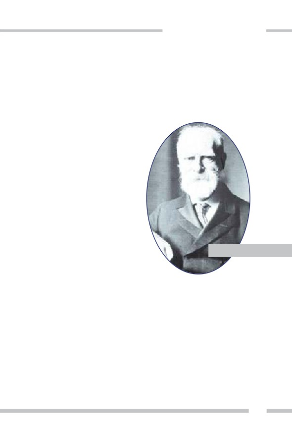
ADNAN HARUN YAHYA
sinde kalan bölgenin tamamı; coğrafyası, tarihi, yeryüzü şekilleri, bitki
örtüsü ve jeolojisi istihbaratçı gözüyle anlatılmıştır. Hamilton'a göre
Türk halkının gelecekte gösterebileceği yetenekler çok sınırlıdır. Hamil-
ton buna gerekçe olarak İslam dinini göstermiş ve İslam'a olan karşıtlığı-
nı her fırsatta dile getirmiştir.116 Hamilton, Anadolu'yu analiz edip İngi-
liz derin devletine Türkler aleyhinde raporlar sunan İngiliz derin devle-
tinin gizli ajanlarından bir diğeridir.
Stratford Canning
Stratford Canning, Osmanlı
Devleti'nde uzun süre büyükelçilik
görevi yapmıştır. Osmanlı dış
siyasetinde sözü geçen İngiliz
derin devleti ajanlarından biri-
dir. Tanzimat Dönemi'ne denk
gelen 1842-1857 yılları arasındaki
görevinde İngiliz dostu Mustafa
Reşit Paşa ile yakın bir dostluk
Stratford Canning
kurup İstanbul'daki en güçlü yabancı
devlet adamı haline gelmiştir.
1853
yılında Osmanlı ile Rusya arasındaki anlaş-
mazlıkta barış yolunu engellemiş ve bu sebeple Kırım Savaşı başlamıştır.
Civinis Efendi, Canning'in istihbarat şefidir. Rum Civinis Efendi,
Ege adası Mikonos'ludur. Yıllarca St. Petersburg'da yaşamış; sarayda
Çariçe'nin özel hizmetçilerinden biri olmayı becermiştir. Sarayda görev-
li bir subayın kızıyla evlenmiş, ancak daha sonra Çariçe'nin mücevherle-
rini alarak Rusya'dan kaçmıştır. Ardından üzerinde imam kıyafetleri ile
Anadolu'da görülmüştür. Cami cami dolaşıp vaaz vermiştir. Civinis
Efendi, daha sonra, Ege Denizi'nde yatıyla gezen zengin bir İtalyan
rolünde ortaya çıkmıştır. Adını, Comte de Rivoroso olarak değiştirmiştir.
305
306
Rum asıllı, Fransızca-İngilizce-Rusça konuşan Civinis Efendi herkesin
ilgisini çekmeyi başarmıştır. Canning'in takdimiyle Sadrazam Mustafa
Reşid Paşa ile tanışmış ve hemen akabinde Sadrazam tarafından kendisi-
ne miralay (albay) rütbesi verilmiştir. Böylelikle, İngiliz derin devletinin
güdümündeki Osmanlı İstihbarat Örgütü'nün başına geçirilmiştir. Kısa
zamanda kurduğu ekibine tanınmış tüccarların, paşaların özel hayatları-
nı izlettirmeye başlamış ve toplattığı dedikoduları rapor haline getirmiş-
tir. Kısacası, İngiliz derin devletinin üyeleri tarafından kurulmuş olan ilk
Osmanlı istihbarat teşkilatının başına, İngiliz derin devletinin ajanların-
dan biri getirilmiştir.117
Canning döneminde İngiliz vatandaşı William Churchill, Osmanlı
Devleti içinde ilk özel gazeteyi çıkarmaya başlamıştır. Serbest piyasayı
savunan Ceride-i Havadis, Osmanlı ekonomisinin İngiliz etkisi altına gir-
mesini sağlayacak politikaları savunmuştur. Canning, 1820 yılında henüz
34 yaşında iken Privy Council üyeliğine seçilmiştir. Canning'in, Yunan
İsyanı sırasındaki aktif rolü sebebiyle, bir dönem Yunan Kralı ilan edil-
mesi bile düşünülmüştür. Osmanlı-Mısır donanmasının ateşe verildiği
Navarin Deniz Muharabesi'nde, İngiliz ve Rus donanmalarının birlikte
hareket etmesini sağlamıştır. 1851'deki Kırım Savaşı öncesinde Canning,
Osmanlı yöneticilerini Rusya ile barış şartlarını kabul etmemeye ikna
etmiştir. İngiliz Başbakanı William Gladstone, Türklerin Avrupa toprak-
larından sürülmesi gerektiğini anlattığı Bulgar Dehşeti ve Doğu Sorunu
raporunu, Stratford Canning'e ithaf etmiştir.
Canning, Osmanlı'da kötülüğün kaynağının İslam dini olduğunu
söyleyecek kadar ileri gitmiştir (Yüce dinimizi tenzih ederiz). İslam dini-
nin adaletsizliğin ve zayıflığın temeli olduğunu iddia eden Canning'e
göre, Osmanlı'nın gelişmesi ve zenginleşmesi için İslam'dan uzaklaşması
gerekmektedir.
ÜST AKIL İNGİLİZ DERİN DEVLETİNİN İÇYÜZÜ
ADNAN HARUN YAHYA
Richard Cobden
İngiliz siyasetçi Richard Cobden, Türkiye ziyareti dönüşü Avam
Kamarası'nda yaptığı konuşmada, Osmanlı İmparatorluğu'nun bağım-
sızlığının ve bütünlüğünün korunmasının imkansız olduğunu savun-
muştur. İngiltere'nin kendine müttefik olarak her geçen gün yok olmak-
ta olduğunu iddia ettiği Müslümanlığı değil, İmparatorluğun Hristiyan
vatandaşlarını kabul etmesinin akılcı olacağını iddia etmiştir. Cobden'in
Avam Kamarası'ndaki sözleri şöyledir:
Muhammedizm [İslam dinini ve Sevgili Peygamberimiz (sav)'i tenzih
ederiz] kesin olarak sürdürülemez. Bu ülkenin insanlarının, bu yok
olmakta olan inancı korumak için mücadele vermelerinden sadece
üzüntü duyarım. Türkiye'yi Avrupa haritasında tutabilirsiniz. Hatta
ülkenin adını Türkiye olarak kullanmaya devam edebilirsiniz. Ama
Muhammedi (İslami) bir iktidarı koruyabileceğinizi hiçbir zaman
aklınıza bile getirmeyin.118
Bugün Richard Cobden'in ölümünün üzerinden 150 yıl geçmiştir.
Fakat onun beklentilerinin aksine Anadolu toprakları milyonlarca Müs-
lümanın yuvasıdır. Müslümanların sayısı gün geçtikçe artmaktadır.
Ezanlar hiç susmamıştır, hiç susmayacaktır. Cami-
ler Müslümanlar tarafından imanla ve sevgiyle
doldurulmaktadır. Dolayısıyla, İngiliz derin
devletinin geçmişten beri süregelen en
büyük arzusu gerçekleşmemiştir ve gerçek-
leşmesi imkansızdır. İngiliz derin devleti-
nin bugün bu yönde gösterdiği çabalar
boşa gidecek, İslam ile yoğurulmuş toprak-
lar, büyük ve barış dolu bir İslam Birliği ile
taçlanacaktır.
Richard Cobden
307
308
Allah, suçlu-günahkarlar istemese de, hakkı (hak olarak) Kendi kelime-
leriyle gerçekleştirecektir. (Yunus Suresi, 82)
Winston Churchill
İngiltere'de İçişleri Bakanı, Donanma Bakanı, Savaş Bakanı, Maliye
Bakanı, Dışişleri Bakanı ve son olarak da Başbakan olarak görev yapan
Winston Churchill, İslam dini ve Müslümanlar hakkında defalarca iftira-
ya varan ifadeler kullanmıştır. İngiliz derin devletinin oldukça tanınmış
bir üyesi olan Churchill'in bakış açısını ve İngiliz derin devletinin İslam
düşmanlığını daha iyi anlayabilmek için bu sözlerin bilinmesi önemlidir.
Churchill'in sözlerinden bazıları şunlardır: [Burada geçen tüm ifadeler-
den yüce dinimiz İslam'ı ve Sevgili Peygamberimiz (sav)'i tenzih ederiz]
Churchill, İslam'a keskin ifadelerle cephe almış İngiliz derin devletinin bir üyesidir.
Resimde Winston Churchill, Joseph Stalin ve Harry Truman ile birlikte.
ÜST AKIL İNGİLİZ DERİN DEVLETİNİN İÇYÜZÜ
ADNAN HARUN YAHYA
Muhammedi dine mensup her kadın; çocuk, eş ya da kapatma olarak
bir erkeğin mutlak malı konumundadır. İslam bir güç olarak kaldığı
sürece köleliğin yeryüzünden yok olması mümkün değildir.
Müslümanlar birey olarak mükemmel özellikler gösterebilirler ama
dinin etkisi inananların sosyal gelişimini felç etmektedir. Dünya üze-
rinde daha yozlaştırıcı ve geri bırakıcı bir güç yoktur.
Muhammedilik yok olmakta olan bir inanç değildir. Aksine militan
ve yayılmacı bir inanç sistemidir. Orta Afrika'da geniş bir alana
yayılmıştır. Her aşamada korkusuz savaşçılar yetiştirmektedir. Fakat
İslam, bilim karşısında bocalamaktadır. Modern Avrupa medeniyeti-
nin Roma İmparatorluğu gibi yıkılmasını engelleyen Hristiyanlığın
ayrıcalığı, İslam'ın aksine gücünü bilimden almasıdır.119
Lord Cromer
1883-1907 yılları arasında
sömürge Mısır'ında İngiliz Yük-
sek Komiserliği yapan Evelyn
Baring ya da diğer adıyla Lord
Cromer'e ait şu sözler İngiliz
emperyalizminin Müslüman
dünyasına hükmetme sevda-
sını gözler önüne sermekte-
dir:
Hindistan Müslümanları,
Avrupa'daki Türk hakimi-
yetinin çökmesi sonucunda,
İngiltere merkezli olarak yeni
Lord Cromer
bir düzenin yükseldiğini fark
etmelidirler.120
309
310
Lord Cromer'in İslam'a ve Müslüman Toplumlara Bakış Açısı
Lord Cromer, 19. yüzyılda dünyayı en vahşi yöntemlerle sömürge haline geti-
ren İngiliz derin devleti yöneticilerinin çirkin bir örneğidir. Kendisinin, üstün
ırkın temsilcisi olduğuna inanan, Darwinist, kibirli ve ırkçı bir adamdır. Müs-
lüman dünyasını yerle bir eden zihniyeti tanımak adına Cromer'in bakış açısını
kendi sözleri ile anlatalım1 (İslam'a yönelik ifadelerden yüce dinimizi tenzih
ederiz):
İngiliz derin devletinin, Mısır'ın kendini İslam'a göre
yönetmesine izin vermeyeceği
Avrupa'nın, Mısır'da tamamen Müslüman ilkelerinde, gerici bir hükümetin
kurulmasına öylece seyirci kalacağını sanmak mantık dışıdır. Mevzubahis maddi
çıkarlar bunun için fazla önemlidir. Yeni kuşak Mısır halkı, Batı uygarlığının
gerçek ruhunu özümsemeye ikna edilmeli veya zorlanmalıdır.
Kadın haklarına gerçek bakış açısı
Lord Cromer, Müslümanlara kadın hakları konusunda ders verirken, kendisi
İngiliz kadınlarına oy kullanma hakkı verilmesine karşı kampanya yürüten ve
zamanında başkanlığını da yaptığı B.K. "Kadınların Oy Kullanması Karşıtı
Erkekler Derneğinin" bir üyesiydi.
Lord Cromer, Mısır'ın "özerkliği" ile neyi kastettiğini şöyle açıklamıştır:
Avrupalıların, Mısır'ın özerk yönetiminden bahsederken genel olarak neyi kas-
tettiğini ele alalım. Eğer kastettikleri şey Mısır halkının kendini, kendi kaba anla-
yışlarına göre yönetmesine izin verilmesi olsaydı, onları özyönetim sanatında
eğitme vazifesi oldukça kolay olurdu. Hatta böyle bir vazifeye girişilmesini gerek-
tirecek bir ihtiyaç olmazdı. Avrupalıların, Mısır'ın özyönetiminden kastettikleri
şey, Mısır halkının, kendi ıslah edilmemiş eğilimlerinin peşinden gitmelerine
müsaade edilmeden, yalnızca Avrupalıların uygun gördüğü yönetim şekli ile ken-
dilerini yönetmelerine izin verilmesidir.
İngilizlerin, laik 'Müslümanlardan' oluşan yeni
bir elit iktidar sınıfı yaratması
İşin aslı şudur ki, Mısırlı bir Müslüman genç, Avrupai eğitimin çarkından geçe-
rek İslamcı görüşünü yitirir... Mısır toplumu bir değişim içerisinde olduğundan,
ÜST AKIL İNGİLİZ DERİN DEVLETİNİN İÇYÜZÜ
ADNAN HARUN YAHYA
bu sürecin doğal bir sonucu olarak, pek çoğu hem Müslümanlıktan uzaklaştırıl-
mış, hem de içi boş Avrupai bireyler ortaya çıkmıştır.
Avrupa uygarlığının Mısır'a getirilmesi konusunu ele alırken şu unutulmamalı-
dır ki, İslam asla ıslah edilemez; diğer bir değişle, ıslah edilmiş İslam, İslam
olmaktan çıkar; artık başka bir şeydir.
İngiliz eğitiminden geçmiş 'Müslümanların'
İslam'ı ve alimleri hor görmeleri
Avrupalılaştırılmış Mısırlı, çoğu durumda yalnızca ismen bir Müslüman'dır.
Anlayışlı bir Avrupalı, "Âlim'e", yalnızca kadim bir inancın, hürmeti fazlasıyla
hak eden bir temsilcisi olduğu için ilgi duymaz; her ne kadar dini Hristiyanlık
olmasa da, dindar bir şahıs olduğu için yakınlık duyar. Öte yandan Avrupalılaş-
tırılmış Mısırlı, "Âlim'e" sonradan görme bir aydının sahip olduğu tüm o kibirle
yaklaşacaktır. Deneyimsel bilgisinin getirdiği üstünlük hissiyle, "Âlim'i", katlanıl-
ması gereken ve hatta zaman zaman politik amaçlar doğrultusunda istifade edi-
lebilecek, ancak saygı duyulmayı hak etmeyen, sosyal bir harabe olarak görecek-
tir.
Yeni 'Müslümanların' Hristiyanlara olan tahammülsüzlüğü
Her ne kadar Avrupalılaştırılmış Mısırlı tam anlamıyla bir Müslüman olmasa
da, çoğunlukla Hristiyanlara karşı Avrupai eğitim almamış gelenekçi bir Müslü-
man kadar, hatta bazen daha da fazla tahammülsüz olur. Hristiyanlara karşı
sıklıkla büyük bir nefret besler ve bunun sebebi kısmen, temas kurmuş olduğu
Hristiyanların birçoğunun nefret edilmeyi hak ettiğini düşünmesi, kısmen de
Avrupalılaştırılmış Mısırlının, Hristiyan'ı, kendinin sahip olması gerektiğini
düşündüğü mevkileri, Avrupalılık sıfatı dolayısı ile elinde bulunduran bir rakip
olarak görmesidir.
1.. Abdullah Al Andalusi, "Lord Cromer on the British Colonial Project for Egypt",
Abdullah Al Andalusi, 23.12.2013,
tish-colonial-project-for-egypt/
311
312
Tarihten Alınacak Ders
Yukarıda adı geçen kişiler bilgisiz, cahil ya da kandırılmış kişiler
değildir. Bu kişiler, İngiliz derin devleti tarafından itina ile seçilmiş, yıl-
larca Türkler arasında yaşamış, Anadolu'yu bir uçtan bir uca dolaşmış,
Türk insanından hürmet, saygı ve dostluk görmüş, fakat buna rağmen
İngiltere'ye döndüklerinde Türk ve Müslüman düşmanlığının bayraktar-
lığını yapmışlardır. Burada alıntı yaptığımız kişiler, İngiliz derin devleti-
nin Müslüman ve Osmanlı düşmanlığını temsil eden kişilerin sadece
küçük bir kısmıdır. İngiliz derin devletinin bankacıları, bilim adamları,
gazetecileri, politikacıları, askerleri, diplomatları ve akademisyenleri 200
yıl boyunca topyekûn bir saldırı yapmışlardır. İngiliz derin devletinin
hakimiyet alanının büyük bir kısmını, bu vasıflarla Osmanlı topraklarına
girmeye hak kazanan ajan provokatörler sağlamıştır. Osmanlı'nın dağıl-
ma sebeplerinden en büyüğü, söz konusu ajan provokatörlerin yaptığı
provokasyonlar ve kullandıkları münafıklardır.
ÜST AKIL İNGİLİZ DERİN DEVLETİNİN İÇYÜZÜ
ADNAN HARUN YAHYA
İngiliz derin devletinin İslam dinini hedef alan bu sinsi politikası,
Osmanlı yıkılana kadar devam etmiştir. Aynı politika, hala Türkiye ve
Ortadoğu için aktif olarak kullanılmaktadır. Bir kısım ajan provokatörler
bu konuda hala görev başındadırlar ve söz konusu ülkelerde kullandıkla-
rı münafıklar ve yancılar yoluyla, halen bu propagandayı yaygınlaştırma-
ya çalışmaktadırlar. Bu sinsi plana karşı kurulacak en büyük set, Müslü-
manların ittifak ettiği güçlü bir İslam Birliği'dir. Müslümanlar topyekûn
bir sevgi birliği içinde olduklarında, hiçbir hain planın bu coğrafyada
etkili olma imkanı yoktur. İngiliz derin devleti, işte bu sırrı çok iyi bil-
mektedir. Tarih boyunca İslam, işte bu nedenle derin güçler tarafından
daima hedeftedir.
Şüphesiz Allah, Kendi yolunda, sanki birbirlerine kenetlenmiş bir bina
gibi saf bağlayarak mücadele edenleri sever. (Saff Suresi, 4)
313
314
19. Yüzyılda İngiliz Derin Devletinin Sesi, The Times Gazetesi
"The Times Gazetesi, dünyanın en büyük güçlerinden biridir. Aslın-
da ondan daha büyük bir güce sahip hiçbir şey bilmiyorum." ABD
Eski Başkanı Abraham Lincoln
19. yüzyıl, basının dünya politikaları üzerindeki etkisinin zirve
yapmaya başladığı bir dönemdir. İngiltere de bu etkiden nasibini
almıştır. The Times Gazetesi, bu dönemde basılan yüzlerce farklı
gazetenin önünde yer almıştır. İngiliz derin devleti, kamuoyu
görüşlerini ve siyasi kararları bu gazete üzerinden şekillendirmiş-
tir.
The Times Gazetesi, başlangıcından itibaren bilgiye ulaşma hızı ile
öne çıkmıştır. Uluslararası birçok gelişme, İngiliz Hükümeti'nin
resmi kanallarından kimi zaman 48 saat önce The Times Gazete-
si'nde yer almıştır. Dönemin Adalet Bakanı Lord Lyndhurst, The
Times Gazetesi Genel Yayın Yönetmeni Thomas Barnes'ı "ülkede-
ki en güçlü insan" olarak nitelendirmiştir. Bunun ana sebebi The
Times Gazetesi'nin 1855 yılında ulaştığı günlük 70 binlik tirajdır.
Bu rakam, dönemin Londra'sında basılan tüm gazetelerin topla-
mının 3 mislidir.
The Times'in uluslararası haber ağı, gazeteyi tüm Avrupa'nın en
önemli gazetesi haline getirmiştir. Avrupa'nın dört bir yanındaki
devlet adamları gelişmeleri bu gazeteden takip etmeye başlamış-
lardır. Fransız Başbakanı Francois Guizot, The Times Gazetesi ile
defalarca açık tartışmalara girmiştir. Rus Çarı I. Nikola, İngilte-
re'nin ültimatomunu resmi kuryeden önce The Times Gazete-
si'nden öğrenmiştir. Gazetenin 21 Haziran 1861'deki sayısı 24 say-
ÜST AKIL İNGİLİZ DERİN DEVLETİNİN İÇYÜZÜ
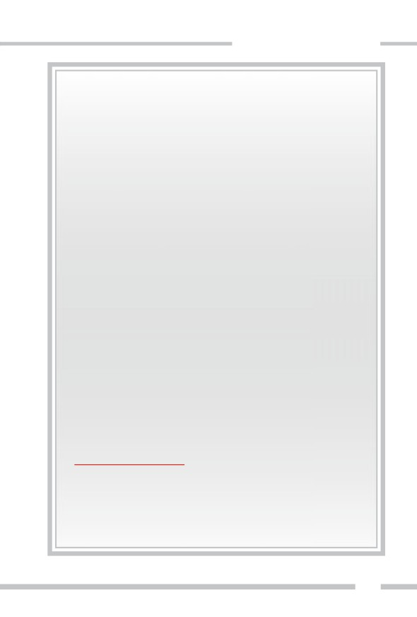
ADNAN HARUN YAHYA
fadır. 144 kolon yazı vardır ve 4 bin reklam verilmiştir. Osman-
lı'nın büyük toprak kayıplarına sebep olan Berlin Anlaşması'nın
64 maddesinin 57'si daha imzalanmadan, The Times Gazetesi'nde
yayınlanmıştır.
The Times Gazetesi, 100 yıl boyunca Osmanlı'da çıkan tüm ayak-
lanmaları desteklemiştir. Her uluslararası sorunda, Türk düşmanı
ve Osmanlı karşıtı bir tutum izlemiştir. İleriki sayfalarda Bulgaris-
tan ayaklanması konusunda, The Times Gazetesi'nin o dönemdeki
kışkırtıcı tutumunu detayları ile inceleyeceğiz.
Günümüze ait kısa bir not düşelim: The Times Gazetesi'nin
bugünkü sahibi Robert Murdoch'tur. Murdoch, Fransa'daki Char-
lie Hebdo saldırısından sonra sosyal medyada yazdığı, "Müslü-
manların çoğunluğu barışsever olabilir ama içlerinde büyüyen
cihatçı kanserin farkına varıp onu ortadan kaldırılana dek onlar da
sorumlu sayılmalıdır" mesajı ile İslam dünyasından tepki almıştır.
Gezi Olayları sırasında Türkiye karşıtı görüşleri ile tanınan yazar
Claire Berlinski tarafından kaleme alınan ve The Times'da yayınla-
nan ilanda, Türk Hükümeti ve Cumhurbaşkanı Erdoğan, Nazilere
ve Hitler'e benzetilirken; milli iradeye saygı mitingleri için Nazile-
rin Nürnberg mitingi ifadesi kullanılmıştır.1 (Söz konusu itham-
lardan, değerli Hükümetimizi ve Sayın Cumhurbaşkanımız Erdo-
ğan'ı tenzih ederiz)
1. 'So-called Celebs, Who Signed the Times Gezi Letter Were 'Deceived': PM Erdoğan',
who-signed-the-times-gezi-letter-were-cheated-pm-
erdogan.aspx?pageID=238&nID=51487&NewsCatID=338
315
316
7. Darbeler
Son 200 yıl içinde dünya üzerindeki birçok darbede, İngiliz derin
devletinin izleri vardır. Bu karanlık yapı, darbe ile yönetimleri değiştire-
rek kendi politikasının uygulanmasını, hızlı, sessiz ve masrafsız olarak
elde eder. Darbeciler kimseye hesap vermek zorunda olmayan, kibirli ve
çoğu zaman kolay yönlendirilen kişilerdir. Küçük bir menfaate tamah
etmişler ve İngiliz derin devletinin oyununa gelmişlerdir. Geldikleri
makamı hak etmemektedirler. Onları iktidara getiren unsur, bilgi, beceri
ya da tecrübeleri değil; şiddet ve silahtır. Darbe dönemleri ara rejimler
dir; dolayısıyla, böyle zamanlarda alınan kararların sorumlusu belli değil-
dir. Tüm rezillikler bir ya da birkaç darbecinin üzerine yıkılır. Bu sayede
başta İngiliz derin devle-
ti olmak üzere asıl failler,
tüm suçlardan elleri ter-
temiz kurtulurlar.
Osmanlı İmparator-
luğu söz konusu oldu-
ğunda da böyle olmuş-
tur. Osmanlı İmparator-
luğu, çöküş dönemine
geldiğinde, gerçekte 500
yılık bir devlet tecrübesi-
ne sahiptir. Askeriyede,
Osmanlı'da gerçekleşen tüm
darbeleri yakından takip
eden bir Fransız dergisi. Dar-
belere dair Avrupa'ya ulaşan
haberlerin kaynağı hep İngi-
liz derin devleti idi.
ÜST AKIL İNGİLİZ DERİN DEVLETİNİN İÇYÜZÜ
ADNAN HARUN YAHYA
ekonomide, eğitimde kısaca devlet yönetiminin her başlığında oturmuş
bir sistem hakimdir. İngiliz derin devleti, böyle güçlü bir yapıyı hızlıca
yıkabilmek için, darbe dönemlerinde olduğu gibi ara rejimlere ihtiyaç
duymuştur. Faili belli olmayan, usulsüz uygulamalarla dolu bu ara rejim-
ler, İmparatorluğu yıkıma yaklaştırmak isteyen güçlere istedikleri ortamı
vermiştir. İşte bu nedenle, dünyadaki pek çok darbede olduğu gibi,
Osmanlı'daki darbeleri incelerken de, arkadaki itici gücün İngiliz derin
devleti olduğunu iyi analiz etmek gerekmektedir.
Tüm Darbelerin Anası: 1876 Darbesi
Türk tarihindeki ilk modern darbe, 1876'da Sultan Abdülaziz'i devi-
ren darbe olarak kabul edilir. Yeni Osmanlılar Cemiyeti'nin Başkanı Mit-
hat Paşa, Serasker (Genelkurmay Başkanı) Hüseyin Avni Paşa, Harbiye
Komutanı Süleyman Paşa'dan oluşan cunta, Sultan'ı tahttan indirip yeri-
ne V. Murat'ı geçirirler. Darbe, Cumhuriyet döneminde de birçok kez
göreceğimiz gibi, Harbiye öğrencileri kullanılarak yapılır. Darbeden 10
gün sonra Sultan Abdülaziz, intihar süsü verilerek şehit edilir.
Tarihçiler, darbe öncesinde Mithat Paşa'nın Avrupa basınında
sürekli olarak abartılı bir şekilde övüldüğünü ve İngilizler tarafından
şımartıldığını yazar. Darbe sonrası Mithat Paşa sadrazam olunca, İngiliz-
lerle birlikte İstanbul'da, detaylarını daha önce açıkladığımız "Tersane
Konferansı"nı toplamıştır. Bu konferans, Mithat Paşa'nın Osmanlı'yı
Ruslarla savaşa sürüklediği ve İngiliz derin devleti telkinleriyle Osman-
lı'nın yıkılışını hızlandırdığı bir dönüm noktası olmuştur.
93 Harbi sonrası Karadağ, Sırbistan, Romanya bağımsız olmuştur.
Bulgaristan ve Bosna-Hersek özerk hale gelmiştir. Rusya, Doğu Anado-
lu'da bazı illeri ele geçirmiş ve Kafkasya, Rus nüfuzuna girmiştir. Bunla-
rın sonucunda Kafkaslardan ve Balkanlardan 1.5 milyon Müslüman göç
etmek zorunda kalmış ve Osmanlı Devleti, 150 bin kayıp vermiştir. İngil-
317
318
Türk tarihindeki ilk modern darbe, 1876'da Sultan Abdülaziz'i deviren
darbe olarak kabul edilir. Darbe, Cumhuriyet döneminde de göreceği-
miz gibi, Harbiye öğrencileri kullanılarak yapılır. Darbeden 10 gün
sonra Sultan Abdülaziz, intihar süsü verilerek şehit edilir.
tere, savaş sonrası Rusya'ya karşı Osmanlı'yı koruma adı altında Kıbrıs'ı
almış ve Anadolu Hristiyanlarının hamisi olmasını sağlayacak bir anlaş-
ma imzalamıştır. İngiliz kontrolündeki darbe sonrası Osmanlı, büyük bir
toprak kaybı yaşamış ve ilk parçalanma böyle başlamıştır.
ÜST AKIL İNGİLİZ DERİN DEVLETİNİN İÇYÜZÜ
ADNAN HARUN YAHYA
Darbeler ve Osmanlı
Toprak Kayıpları
Osmanlı'da gerçekleşen darbeler
ile toprak kayıplarının arasında yakın
bir bağ vardır. Genellikle Osmanlı Dev-
leti'nin zayıflatılması, isyanların başla-
ması ve toprak kayıpları, darbelerin
hemen sonrasındaki istikrarsızlık
döneminde gerçekleşmiştir. Açıktır ki
darbeler, bu toprak kayıplarının ger-
çekleşmesi için özel olarak planlanmış
olaylardır. Osmanlı'da darbeler sonra-
sında toprak kayıpları şu şekilde ger-
çekleşmiştir:
* 1808 Yeniçeri ayaklanması ile III.
Selim tahttan indirilmiş yerine IV.
Mustafa gelmiştir. Bu ayaklanmayı
kışkırtan İngiliz hayranı ve İngiliz
lakabıyla bilinen Mahmut Raif
Paşa'dır. Ardından gelen Osmanlı-
Rus Savaşı kaybedilmiş, Sırbistan
özerk olduğu gibi bazı topraklar da kaybedilmiştir.
* 9 Haziran 1908'de İngiliz Kralı 8. Edward ve Rus Çarı 2. Niko-
la'nın Reval'de anlaşmasının ardından, İttihat ve Terakki Cemi-
yeti, kansız bir darbe ile Sultan Abdülhamid'e 2. Meşrutiyeti ilan
ettirmiştir. Ardından İngiliz Büyükelçiliği'nde tercüman olarak
görev yapan casus Gerald Fitzmaurice'in organizasyonuyla 31
Mart Ayaklanması ve askeri darbe gelir. Darbe sonrası Avustur-
ya-Macaristan Bosna-Hersek'i, İtalya ise Libya, Rodos ve
12
319
320
Ada'yı işgal etmiştir. Arnavutluk bağım-
sızlığını ilan ederken, Yunanistan
Selanik, Girit ve Yanya'yı, Bulga-
ristan Kavala ve Dedeağaç'ı
işgal etmiştir. Böylelikle Avru-
pa'da Osmanlı egemenliği de
sona ermiştir.
* 23 Ocak 1913'te İttihat ve
Terakki Cemiyeti ve Enver
III. Selim
ile Talat Paşalar, Bab-ı Ali'yi
basıp askeri bir darbe ile
hükümeti devirmişlerdir. Silah
zoruyla Talat Paşa'yı sadrazam
yapmış ve bu ikili, Osmanlı Devle-
ti'ni I. Dünya Savaşı'na sokmuştur.
Savaşın sonucu, Osmanlı İmparatorlu-
ğu'nun sonunu getirmiş ve tüm Arap
toprakları elden çıkmıştır.
Açıkça görüldüğü üzere Osmanlı
tarihindeki tüm darbeler oldukça
yıkıcı olmuş ve her birinde İngiliz
derin devletinin ajanları kullanılmış-
tır. Her bir darbe, İngiliz derin devleti
tarafından ince ince planlanmış ve sonucunda
gerçekleşecek savaşlar ve toprak paylaşımları çok önceden
belirlenmiştir. İngiliz derin devleti, darbeleri gerçekleştiren kendi yancı-
larını, bu savaşlara önayak olmaları için teşvik etmiştir. Sıkıntılı darbe
dönemlerinde gerçekleşecek savaşların, İmparatorluğu daha fazla parça-
layacağını gayet iyi bilmektedir. Sinsi plan buna uygun yapılmıştır.
ÜST AKIL İNGİLİZ DERİN DEVLETİNİN İÇYÜZÜ
ADNAN HARUN YAHYA
1808 Yeniçeri ayaklanması
sonucunda III. Selim tahttan
indirilmiştir. Ayaklanmayı
kışkırtan İngiliz lakabıyla bi-
linen Mahmut Raif Paşa'dır.
321
322
ORTAKÖY CAMİİ,
İSTANBUL
ÜST AKIL İNGİLİZ DERİN DEVLETİNİN İÇYÜZÜ
ADNAN HARUN YAHYA
Şüphesiz Allah, Kendi yolunda,
sanki birbirlerine kenetlenmiş bir bina
gibi saf bağlayarak çarpişanlari sever.
(Saff Suresi, 4)
323
324
Türk-Rus Yakınlaşması ve Darbeler
Türkiye'nin Rusya ile ilişkilerinin normalleşmesi ve ardından yaşanan 15 Temmuz
darbe girişimiyle birlikte Türk ve Rus hükümetleri bir ittifak arayışına girmişlerdir.
Her iki ülke, başta Karadeniz ve Suriye olmak üzere bölge sorunlarında ortak stra-
tejiler geliştirmeye başlamıştır.
Bölge sorunlarına ancak bölge insanlarının cevap bulabileceğini öngören bu ittifak,
dünyanın özlemini çekmekte olduğu barış ortamını sağlayabilecek değerli bir adım-
dır. Rus ve Türk milletlerinin yakınlaşmasında bu bir ilk değildir. İki devlet
1833'deki Hünkâr İskelesi Antlaşması ile ortak savunma ittifakı imzalamışlardır.
Sultan II. Mahmut ve Rus Çarı 1. Nikola'nın bu antlaşmayı gerçekleştirmelerinin
amacı, üçüncü ülkelerin
(özellikle İngiltere'nin) oyunlarını durdurabilmekti.
Antlaşmaya göre taraflardan birisi askeri yardım isterse diğeri müttefikine yardım
edecekti. Antlaşmanın gizli maddesiyle de, Rusya'nın Batılı bir devletle savaşa gir-
mesi halinde Osmanlı Devleti'nin, Rusya'yla savaşan devletin gemilerine Çanakka-
le Boğazı'nı kapatması ve Rus gemilerinin boğazlardan serbestçe geçmesine izin
vermesi kararlaştırılmıştır.
Ancak, antlaşma gizli olmasına rağmen Avrupalı devletler, İngiliz Büyükelçisi Pon-
sonby sayesinde anlaşmanın detaylarına ulaşmayı başarmış ve çeşitli savaş tehditle-
ri sonucunda bu anlaşmayı, 1840'taki Londra Antlaşması ile ortadan kaldırmışlar-
dır.
Rusya ile Osmanlı'nın yakınlaşmasına bir örnek de Abdülaziz dönemidir. II. Mah-
mut'un oğlu Sultan Abdülaziz de, Rusya'yı yakın bir dost ve müttefik olarak görmüş
ve bir kez daha yakınlaşma dönemi başlamıştır. İstanbul'daki Rus Büyükelçisi
Ignatyev bu dostluğun aracısı olmuştur. Ancak bu yakınlaşma sonunda da İngiliz
yanlısı bir cunta darbe yapıp Sultan Abdülaziz'i devirmiştir. İktidara gelen hükü-
metten Mithat Paşa, İngiliz Said Paşa ve yeni Sultan II. Abdülhamid 'in İngiliz yan-
lısı politikaları sonucunda Osmanlı Devleti ve Rusya savaşa girmiş ve savaş sona
erdiğinde 250 bin kişi hayatını kaybetmiştir.
Buna benzer olaylar, 18 ve 19. yüzyıldaki toplam 6 savaşta da devam etti. İngilizle-
rin başını çektiği Avrupa devletleri kimi zaman Osmanlı'nın yanında Ruslarla, kimi
zaman da Rusların yanında Osmanlı ile savaştılar. Ama iki devletin aynı ittifakta
olmasını daima engellediler.
Savaşları kışkırtan, tahrik ve provoke eden İngiliz derin devleti, kimi zaman barış
antlaşmalarının da arabulucusu oldu. Fakat bu barış antlaşmalarında da daima tek
kazanan İngiliz derin devleti idi. Masumlar can verdi, şehirler yıkıldı. Nihayetinde
ÜST AKIL İNGİLİZ DERİN DEVLETİNİN İÇYÜZÜ
ADNAN HARUN YAHYA
ise Osmanlı ve Rusya gibi iki büyük imparatorluk, İngiliz derin devletinin oyunları
sonucunda tarih sahnesinden çekildiler.
20. yüzyılda da Türkler, kuzey komşu Rusya'dan hep dostluk görmüşlerdir. Sykes-
Picot Antlaşması'nı ortaya çıkaran Ruslardı. Mustafa Kemal, Kurtuluş Savaşı sıra-
sında Rusya'dan silah ve para yardımı aldı. Hatta bu desteğe teşekkür amacıyla Tak-
sim Anıtı'na iki ünlü Rus asker General Frunze ve Mareşal Voroshilov eklendi. Yine
Cumhuriyet döneminde gerçekleştirilen birçok sanayi hamlesinin arkasında Rus
desteği vardı. Bu dostluk, savaştan yıkık çıkan Anadolu'nun yeniden refaha kavuş-
masını hızlandırdı. Ne var ki, tarihte yaşananların bir benzeri, genç Cumhuriyeti-
mizin de başına geldi. Türkiye, ne zaman Rusya ile yakınlaşmaya başlasa, İngiliz
derin devletinin planladığı iç karışıklıklara ve ardından gelen askeri darbelere
maruz kaldı. Rus ve Türk milletlerinin dostluğu, İngiliz derin devletini her zaman
tedirgin etmişti.
21. yüzyılda Sayın Erdoğan ve Sayın Putin'in liderliğiyle iki ülke ticari, ekonomik ve
siyasi olarak adı konmamış bir ittifak yaşamaya başladılar. Mega projeler ardı ardı-
na açıklandı. Ortak şirketler ve dostluklar kuruldu. Rus ve Türk halkları dost ve kar-
deş olmanın konforunu sürdüler. Kasım 2015'te Rus savaş uçağının düşürülmesi,
kuşkusuz ki beklenmedik bir olaydı. Bu olayın, İngiliz derin devletinin kullandığı
yancılar tarafından gerçekleştirildiği de kısa bir süre sonra ortaya çıktı.
Bu süre içinde, iki ülkenin dostluklarını sürdürmesi, kışkırtma ve provokasyonlara
aldanmamaları ve mutlaka ittifaklarını devam ettirmeleri konusundaki destekleri-
miz ve gösterdiğimiz çabalar önemli sonuçlar verdi. Bu çabalara duyarlılık gösteren
iki ülkenin sağduyulu liderleri, ittifaklarını daha da güçlendirerek İngiliz derin dev-
letinin oyununu bozdular.
Şu an elimizdeki en büyük avantaj ise, kirli oyunların kurucusunun İngiliz derin
devleti olduğunu biliyor olmamız. Üst aklın bilinmesi, iki büyük devlet üzerinde
oynanacak oyunları tümüyle geçersiz ve etkisiz kılacaktır.
Şu gerçek unutulmamalıdır ki, tarihte büyük medeniyetler kurmuş imparatorluklar
hiçbir zaman tam anlamıyla yok olmazlar. Nitekim bugün, iki devlet de bölgelerin-
de hala büyük bir güç ve etki sahibidir. Kaldı ki, Rus Devleti birçok İslam ülkesin-
den daha fazla Müslümana ev sahipliği yapmaktadır. 20 milyonluk Müslüman
nüfus, her iki ülkenin ortak kardeşlerinden oluşmaktadır. Bu muazzam potansiyel
göz önüne alındığında kaynayan bölgelere barışı getirebilecek büyük güçlerden biri-
nin, Rus-Türk ittifakı olduğu anlaşılmaktadır. Bu ittifak, işte bu nedenle, savaşlar-
dan beslenen mihrakların sürekli olarak hedefi konumundadır. Bizlere, yani 230
milyon Rus ve Türk'e düşen ise, var gücümüzle ortak mücadelemize sahip çıkmak
ve aramızdaki birliği artırmak için çalışmaktır.
325
326
8. Osmanlı Ordusunun "İngiliz" Paşaları
İngilizlere verilen imtiyazlar ve İngilizlerin destekçisi olan yönetim-
ler, Osmanlı'nın sadece ticaret alanında değil, askeri ve siyasal alanda da
İngilizlere körü körüne güvenmelerini beraberinde getirmiştir. İngiliz
derin devletinin sinsi taktiklerle, dost gibi görünerek devletlere ve lider-
lere yaklaştığını daha önce belirtmiştik. Osmanlı'nın son döneminde bu
taktik neredeyse her alanda kendini göstermiş, Osmanlı, dost gibi görü-
nen İngiliz derin devletinin telkinleriyle savaşlara girmiş, yine aynı tel-
kinlerle kendi yıkımını hazırlayacak anlaşmalara imza atmış ve bu tel-
kinlerle İngiliz derin devletinin adamlarını kendi bünyesine almıştır.
Osmanlı'nın son döneminde, ordunun ve donanmanın büyük ölçüde
İngiliz paşaların denetimine bırakılması bu pervasızlığın boyutlarını
açıkça göstermektedir.
19. yüzyılın ikinci yarısında Osmanlı ordusunda birçok İngiliz suba-
yın görev aldığını ve bunların büyük bir kısmının paşa rütbesine ulaştık-
larını görmekteyiz. "Ordunun modernleşmesi ve askerin eğitimi" baha-
neleriyle bu görevlere getirilen söz konusu askerlerin birçoğu, son
dönemde pek çok savaşın Osmanlı aleyhine sonuçlanmasında rol oyna-
mışlardır. Osmanlı'ya hizmet etmesi beklenen bu subaylar, aslında İngi-
liz derin devletinin ajanlarından başka bir şey değildirler.
Osmanlı'nın İngiliz Subayları
Hobart Paşa
Hobart Paşa ya da gerçek adıyla Augustus Char-
les Hobart-Hampden, uzun yıllar İngiliz Kraliyet
Donanması'nda görev yapmış bir denizcidir. Brezil-
ya açıklarında köle ticareti bölgesini koruyan gemi-
leri kullanmıştır. İngiliz donanmasından emekli
olunca, bir dönem Amerikan İç Savaşı'na dahil olarak,
Augustus Charles
Hobart-Hampden
güneylilere İngiliz üretimi silah satıp karşılığında ucuz
ÜST AKIL İNGİLİZ DERİN DEVLETİNİN İÇYÜZÜ
ADNAN HARUN YAHYA
pamuk alan gemileri kumanda etmiştir. Amerikan İç Savaşı'nın ardından
Osmanlı donanmasına katılmış ve tümamiral rütbesi ile donanmanın
başına geçmiştir.
1877-78 Osmanlı-Rus Savaşı veya 93 Harbi sırasında Osmanlı
donanmasının başında Hobart Paşa vardır. Savaşta, Rusların Osmanlı'ya
kara saldırısını engelleyebilecek tek nokta Romanya'da Tuna Nehri böl-
gesidir. Osmanlı donanması, Romanya'daki Siret Nehri üzerinde Rus
ordusunun geçişini engelleyebilecek güçtedir. Fakat Hobart Paşa komu-
tasındaki gemilerimiz, nehri ele geçirme konusunda geç kalmışlardır.
Nehrin başındaki 4 gemi kritik noktalara gelene kadar 4-5 gün vakit kay-
betmiş, bu sayede de Rus ordusu nehri kolayca geçmiştir. Sırp ve Kara-
dağ ordularını yenip Balkanları ele geçirmek üzere olan Osmanlı ordusu
arkadan vurulmuştur. Böylelikle, Rus ordusunun İstanbul Yeşilköy
önüne kadar gelmesini engelleyecek hiçbir kuvvet kalmamıştır.
Hobart Paşa komutasındaki Osmanlı donanması, Rus donanmasın-
dan oldukça güçlüdür. Fakat donanma, Balkanların savunmasını sağla-
yacak hiçbir görevde kullanılmamıştır. Hobart Paşa, gemileri Batı Kara-
deniz'den Kafkaslar tarafına çekmiş ve Balkanlar'daki kara ordularını
desteksiz bırakmıştır. Savaş sonucunda Osmanlı, hem Balkanları hem de
Kafkasya'yı kaybetmiştir.
93 Harbi'nin kaybedilmesinde rol oynayan Hobart Paşa'nın büyük
abisi Lord Henry Hobart, aynı dönemde Osmanlı Bankası Türkiye Genel
Direktörüdür. Daha sonra da, Osmanlı'ya ekonomik iflası getiren
Düyun-u Umumiye'de görev alır.
Arnold Burrowes Kemball
93 Harbi sırasında, Osmanlı ordusunun Balkan kuvvetlerinin başın-
da, Abdülkerim Nadir Paşa bulunmaktadır. Ruslar, Tuna Nehri'ni prob-
lemsiz geçtikten sonra Ziştovi ve Niğbolu'ya taarruz etmişlerdir. Her iki
muharebeyi kolayca kazanmışlardır. Balkan ana ordusu, henüz bölgeye
327
328
gelemediği için Türk orduları sayıca çok
yetersiz kalmıştır. Sadece bir hafta için-
de iki muharebe kaybedilmiştir.
Bu muharebeleri kaybeden
Abdülkerim Paşa'nın kurmay
heyeti arasında, İngiliz General
Arnold Kemball da vardır. Kem-
ball, daha önce İngiliz ordusun-
dayken Afgan savaşlarında Müslü-
manlara karşı savaşmıştır.
Arnold Burrowes Kemball
Valentine Baker ya da Baker Paşa
Valentine Baker, tecavüz suçundan dolayı
İngiliz ordusundan atılmış bir suçludur. 1877-1878 Osmanlı-Rus Savaşı
sırasında Mehmet Ali Paşa'nın kurmay kadrosunda, tuğgeneral olarak
görev almıştır. Mehmet Ali Paşa, daha sonra Müslüman olan ve Osman-
lı vatandaşlığına geçen Ludwig Karl Friedrich Detroit isimli bir Alman-
dır. Valentine Baker komutasındaki birlikler Taşkesen Köyü bölgesinden
geri çekilirken korkudan yaralılarını geride bırakmış-
lardır. Bulgar köylüleri, geride kalanların tama-
mını öldürmüşlerdir. Bunun üzerine Baker
Paşa da bir kısım askerlerini geri gönderip
civardaki tüm köyleri ateşe vermiştir.
Osmanlı-Rus Savaşı'ndan sonra
Baker, tekrar İngiliz ordusuna dönmüş ve
İngilizlerin işgal ettiği Mısır'da yeni kuru-
lan polis teşkilatının başına geçerek, jandar-
ma birliklerinin eğitimini üstlenmiştir.
Valentine Baker
ÜST AKIL İNGİLİZ DERİN DEVLETİNİN İÇYÜZÜ
ADNAN HARUN YAHYA
Douglas Gamble ve Hugh Pigot Williams
Douglas Gamble, I. Dünya Sava-
şı'ndan 5 sene önce, Osmanlı donanma-
sına müşavir olarak alınmış ve 6. Filo-
nun başına geçmiştir. Amaç, sözde
"donanmanın yenilenmesi"dir.
Gamble, Osmanlı ordusuna gel-
meden önce İngiliz donanmasın-
da askeri istihbaratta çalışmıştır.
Bir sene sonunda ise ülkesine
dönerek İngiliz donanmasında
Türklere karşı savaşmıştır.
Douglas Gamble'ın yerine
İngiliz Amiral Hugh Pigot Willi-
ams müşavir olarak alınır. 8 ay
sonra ülkesine dönen Williams,
bir kez daha Osmanlı karasularına
geldiğinde, Çanakkale Savaşı'na katı-
lan İrresistable gemisinin kaptanıdır
Hugh Pigot Williams
ve Osmanlı'ya karşı savaşmıştır. Özetle I.
Dünya Savaşı'ndan hemen önce, Türk
donanması tamamıyla iki İngiliz subaya teslim
edilmiştir.
Adolphus Slade ya da Müşavir Paşa
Adolphus Slade, 30 yıl Kraliyet Donanması'nda görev yaptıktan
sonra Osmanlı donanmasına paşa olarak geçmiştir. Müşavir Paşa adını
alan Slade, Osmanlı donanmasının içindedir. Bu dönemde, Kırım Sava-
şı'nda Osmanlı donanması Sinop'ta Ruslar tarafından yakılmış ve 12
gemi batırılmıştır. Bu savaştan tek kurtulan gemi, Slade'in içinde bulun-
329
330
duğu gemidir. Türk donanması böyle bir baskına maruz kalırken, İstan-
bul Boğazı'nın girişindeki sözde müttefikimiz Fransız ve İngiliz gemileri
olayı izlemekle yetinmişlerdir.
Daha sonra anılarını kitap haline getiren Slade, yazılarında Türk ve
Müslümanlara kin kusmuştur. (Türk milletini ve Müslüman alemini ten-
zih ederiz) Slade'in bazı sözleri şöyledir:
Slade, Müslüman ve Gayrimüslim tüm Osmanlı tebaasının araların-
daki tüm farklara rağmen ortak bir nitelikleri olduğu-
nu, bunun da "vicdandan tamamen yok-
sun olmak" olduğunu iddia etmiştir.
"Paşası kendisine güvenen konu-
ğunu katleder, kadısı masum bir
adamı falakaya yatırır, sarrafı
müşterisini dolandırır, hiz-
metçisi efendisini soyar; hepsi
de kendi inancına göre
Kuran'a, Tevrat'a ya da
İncil'e el basarak yemin
eder" demiştir.121
Osmanlı-Rus Savaşı sıra-
sında Osmanlı donanması-
nın temsili resmi.
ÜST AKIL İNGİLİZ DERİN DEVLETİNİN İÇYÜZÜ
ADNAN HARUN YAHYA
Osmanlı mahkemelerinde adalet en fazla parayı verene satılmaktadır
ve şahitler de her zaman "mollanın" (Kadı'nın) hemen yanı başında
vicdanlarını pazarlamak üzere hazır beklemektedirler.122
Üç İngiliz saff-ı harp gemisi ve üç firkateyn tüm Osmanlı donanma-
sına yeter de artar bile.123
Baldwin Walker (Yaver Paşa) ve Hain Ahmet Fevzi Paşa
İngiliz Baldwin Walker ya da Yaver Bey, 1838 yılında Osmanlı
donanmasına girmiştir. 7 yıl boyunca görev yapmış ve paşa unvanını
almıştır. 1840 yılında Ahmet Fevzi Paşa, sudan bir sebepten emrindeki
donanmayı Kıbrıs'ta Osmanlı Devleti'ne karşı isyan başlatan Kavalalı
Mehmet Ali Paşa'ya teslim eder. Bu nedenle tarihte "Hain Ahmet Fevzi
Paşa" olarak anılmaktadır. Gemiler İskenderi-
ye'de demirliyken Yaver Paşa yani Bald-
win Baker, Osmanlı savaş kurmayla-
rını toplar ve tüm donanma ile
Mısır'ı kuşattığı takdirde gemile-
ri geri alabileceği iddiasında
bulunur. Amaç, Osmanlı
gemilerini, başka Osmanlı
gemileri ile savaştırıp donan-
mamızı birbirine kırdırmak-
tır. Kavalalı Mehmet Ali
Paşa'nın bir süre sonra gemi-
leri iade etmesiyle kriz sona
erer. Yaver Paşa, uzun yıllar
Hain Ahmet Fevzi Paşa'nın
danışmanlığını yapmıştır.
Baldwin
Walker
331
332
Henry Felix Woods ya da Woods Paşa
İngiliz Felix Woods ya da Woods Paşa, çoğunluğu II. Abdülhamid
döneminde olmak üzere 40 yıldan fazla süre Osmanlı donanmasında
görev yapmıştır. Abdülaziz döneminde alınan Osmanlı donanmasının,
II. Abdülhamid döneminde Haliç'te çürümesine önayak olmuştur. İngi-
liz Deniz Kuvvetleri politikasına göre, bir İngiliz subayına, görev yaptığı
yabancı ülkede iki yıldan fazla vazife verilmezken, Henry Woods,
Osmanlı donanmasında tam 42 yıl çalışmıştır. Woods Paşa'nın büyük
masraflarla getirttiği yabancı çarkçı, kaptan ve mühendisler işlerini özel-
likle Türk personele öğretmemiş ve komutanın yalnızca İngilizlerin elin-
de olmasını sağlamışlardır. Kendi anılarında Woods, bu sistemi şu şekil-
de tarif etmiştir:
Yıllarca emek veren Türk makinistleri kolay kolay baş makinistliğe
atanmıyordu. Onların yükselme yolunu İngiliz makinistleri tıkamış-
tı. Özellikle İngiliz makinistlerin bu görevle-
rinden dolayı özel ayrıcalığı vardı…124
Woods Paşa, aynı zamanda, baş-
kentteki yabancı kilit isimlerle, II.
Abdülhamid arasında aracılık
yapmıştır. Özellikle İngiliz gaze-
tecileri Padişah'la görüştürmüş-
tür. Padişah ve idare ile ilgili bil-
gileri el altından İngilizlere sız-
dırmıştır.125
Felix Woods
ÜST AKIL İNGİLİZ DERİN DEVLETİNİN İÇYÜZÜ
ADNAN HARUN YAHYA
Navarin Deniz Savaşı
Navarin Deniz Savaşı, dünya deniz savaşları tarihinin en zalim
birkaç savaşından biridir. İngiliz derin devletinin önderliğinde-
ki İngiliz, Fransız ve Rus donanması, Yunanistan'ın güneyinde-
ki Navarin'de demirlemiş olan Türk donanmasına saldırır. Türk
donanmasının içinde Mısır'dan yardıma gelen Kavalalı Mehmet
Ali Paşa'nın donanması da vardır. Türk donanması, İngiliz derin
devletinin yönlendirmesiyle başlamış olan Yunan İsyanını bas-
tırmakla meşguldür. Gerçekte ortada ilan edilmiş bir savaş yok-
tur. İngiliz, Fransız ve Rus
donanmaları aniden Türk
gemilerine ateş açmaya
başlarlar. Gafil yakalanan
Osmanlı donanmasında
70 gemi batar ve 3 binden
fazla denizcimiz şehit
olur. 3 saat içinde Navarin
Körfezi ateş ve kana bula-
nır. Bu savaşın önemli noktalarından biri, Türk donanmasında-
ki İngiliz ve Fransız denizcilerdir. Baskından bir gün evvel, o
dönem Osmanlı adına savaşan Kavalalı Mehmet Ali Paşa'nın
donanmasındaki Fransız denizciler ve Türk donanmasındaki
İngiliz denizciler görevlerini bırakıp karşı tarafa geçmişlerdir.
İngilizler ve Fransızlar kendi askerlerini koruma altına almakla
kalmamış, Osmanlı'ya ait donanma gemileri tecrübeli gemi kap-
tanlarından mahrum kalmıştır. Çünkü o dönemde bu önemli
görev sadece İngiliz derin devletinin adamlarına ikram edilmiş-
tir.
333
334
İngiliz Derin Devleti ve Hilafet
17. yüzyıldan itibaren Avrupa devletlerinden bazıları, Portekiz ve İspanya'nın
sömürgecilik faaliyetleriyle gittikçe güçlendiklerini görünce, kendi sömürgecilik
faaliyetlerini başlattılar. Bunların başında İngiltere gelmekteydi.
İngiltere, daha önce de belirttiğimiz gibi, 1600 yılında Doğu Hindistan Şirketi'ni
kurarak İngiliz sömürgeciliğinin ilk ciddi adımını atmıştı. Şirket, Hindistan alt kıta-
sına yönelerek önce ticaret üsleri kurmaya başladı. Buralardaki varlığını hızla geniş-
leterek koloniler kurdu ve bölgeler ele geçirildi.
19. yüzyıla gelindiğinde İspanya ve Portekiz, sömürgelerini kaybederek dağılma
sürecine girdi. Genellikle bağımsızlıklarını kazanarak İspanyol ve Portekiz İmpara-
torluklarından ayrılan Güney Amerika'daki ülkeler de böylece canlı bir pazar olarak
İngiltere'ye açıldılar. İngilizler, aynı zamanda Avrupa'da üstünlükle tamamladıkları
Napolyon Savaşları'nın (1800-1815) ardından, Doğu'da yeni topraklar elde ettiler.
Artık "kralın tacındaki elmas" olarak nitelenen Hindistan yolunun güvenliği, İngi-
liz sömürge siyaseti için öncelikli konuma yükselmişti. 1869'da Fransızların Süveyş
Kanalı'nı tamamlaması, Hindistan yolunu kısaltırken, güvenliğini daha hassas
duruma getirdi. İngiltere, buna göre Kızıldeniz ve Arabistan kıyılarında, Osman-
lı'nın itirazlarına rağmen nüfuz alanları oluşturmaya başladı. Aynı şekilde Cebelita-
rık ve Malta gibi stratejik öneme sahip Kıbrıs Adası, Berlin Kongresi'nde Osman-
lı'ya destek olma ve Rusya'nın, Osmanlı'nın Doğu Anadolu'daki topraklarını ele
geçirmesi halinde silahlı yardımda bulunma vaatleriyle 1878'de İngiliz denetimine
girdi. Uzakdoğu'daki İngiliz etki alanı da benzer gelişmeler sonucunda oluşturuldu.
Bu gelişmeler neticesinde İngiltere, dünya çapında çok geniş coğrafyalarda sömür-
geleri olan dev bir imparatorluk haline geldi. Afrika'dan Asya'ya uzanan bu toprak-
larda milyonlarca Müslüman nüfus bulunuyordu. Dolayısıyla bu nüfusun kontrol
altında tutulması İngiltere açısından son derece kritikti. Ancak İngiltere'nin önün-
de önemli bir tehdit bulunuyordu: Bu topluluklar Müslümanlık bağıyla Halife'ye
bağlı idiler. Halife, tüm dünya Müslümanlarının manevi ve siyasi lideriydi. Hali-
fe'nin bir sözüyle milyonlarca Müslüman bir araya gelebilir, güçlü bir birlik oluştu-
rulabilirlerdi. Dolayısıyla bu noktada, Müslüman topraklarını hakimiyeti altına
almaya kararlı olan İngiliz derin devletinin karşısındaki en büyük tehdit, Halifelik
makamına sahip olan Osmanlı İmparatorluğu idi.
İngiliz Derin Devletinin Araplara Yönelik Hilafet Provokasyonu
Müslüman dünyası Halifeleri olan Osmanlı sultanlarına derin bir bağlılık ve saygı
duyuyorlardı. İngiliz derin devleti, ilk iş olarak bu hürmet ve bağlılık duygularından
ÜST AKIL İNGİLİZ DERİN DEVLETİNİN İÇYÜZÜ
ADNAN HARUN YAHYA
faydalanabilmek amacıyla Halife'nin nüfuzunu kullanmak istediler. Örneğin Hin-
distan'ın güneyinde yer alan Meysur Sultanlığı ile hakimiyet mücadelesi sırasında
İngiltere, Osmanlı Padişah'ı III. Selim'e başvurup Meysur'un başındaki Sultan
Tipu'ya mektup yazmasını ve İngilizlere karşı savaşmamasını tavsiye etmesini iste-
mişti.1 Gerçekten de III. Selim, 1798'de bu mektubu kaleme aldı.
1857 yılında Hindistan'da İngiliz işgallerine karşı büyük ayaklanmalar çıkınca yine
Osmanlı Halifesi'nden yardım istendi. Fakat Hilafet makamının bu büyük nüfuzu,
bu sefer İngiliz derin devletini düşündürmeye başlamıştı. Şartlar değiştiği zaman
Halifeliğin dini ve siyasi ağırlığı, kendilerine karşı da tehdit oluşturabilirdi. Bu yüz-
den İngiliz derin devleti, çok yönlü bir Hilafet politikası planlaması yaparak kendi
sömürgelerinde yaşayan Müslüman nüfus içinde Halifeliğin etkisini zayıflatma
çalışmalarına başladı.
İngiliz Dışişleri Bakanlığı danışmanlarından George Percy Badger, Ocak 1873'te
Osmanlı Hilafeti hakkında bir rapor hazırladı. Bu rapora göre Peygamber Efendi-
miz (sav)'in Arap olduğu için Hilafetin de bir Arap kurumu olması gerekliydi.
Ancak Osmanlı Sultanları, özellikle Asya Müslümanları arasında gerçek bir Halife
olarak kabul ediliyor ve hürmet görüyordu. İngiliz derin devleti, bu aldatıcı "ırk"
meselesinden yola çıkarak özellikle Arap Müslümanlarını Osmanlı'ya karşı kışkırt-
maya çalıştı. Derin planlara göre bu taktik, Arapların Osmanlı padişahlarını Halife
olarak tanımalarını engelleyecek ve böylelikle Osmanlı Halifelerinin İslam dünya-
sındaki nüfuzu azalacaktı.
Bu rapordan sadece 5 ay sonra İngiliz Dışişleri Bakanlığı İslam ülkelerindeki tüm
temsilciliklerine bir memorandum yolladı. Bakanlık, "Müslümanlar arasında yaşa-
nan dini karakterli siyasi uyanışı andıran gelişmeler hakkındaki gözlemlerinin" en
kısa zamanda rapor edilmesini istedi.2
Yaklaşık 60 milyon Müslümanın yaşadığı bölgelerdeki hakimiyeti açısından İngil-
tere, Osmanlı'ya ve elinde bulundurduğu Hilafet makamına cephe almaya başla-
mıştı.
İngiltere Dışişleri Bakanlığı'nda diplomat olarak çalışmış olan Wilfrid Scaven Blunt,
Ortadoğu ve Arap uzmanı olarak biliniyordu. Bölgeye yaptığı ziyaretlerle Arap
bağımsızlık hareketinin önemli destekçilerinden olan Blunt, Arapları Osmanlı'dan
ayırmak için planlar üretmeye başlamıştı. The Future of Islam (İslam'ın Geleceği)
isimli kitabında Osmanlı Hilafetine ağır suçlamalar yöneltmişti:
Osmanlı hanedanı İslam'ın felaket sebebidir ve sonu yaklaşmıştır... Adı ister Abdülaziz olsun,
ister Abdülhamid , bir Osmanlı Halifesi var olduğu sürece İslam dünyasında ahlaki bir ilerle-
me olamayacak ve içtihat kapısı açılamayacaktır. Abdülhamid 'in yönetimi ne adildir ne de
335
336
İslam hukukuna uygundur. Tamamen askeri güce dayanan böyle bir yönetim uzun süre yaşa-
yamaz. Dolayısıyla yakın bir gelecekte Hilafet Mekke veya Medine'ye nakledilecektir.3
Blunt, geçmişte yüksek bir medeniyete sahip olan Arapların geri kalmalarının en
büyük sorumlusunun Osmanlı Devleti olduğunu iddia ediyordu. İngiltere'nin artık
milyonlarca Müslümana sahip bir imparatorluğunun olduğunu ve İstanbul'daki
Halife'yi desteklemek yerine, kendi himayesi altında bulunan, yönlendirmesi kolay
olacak bir Arap Halifesine yatırım yapmasının stratejik açıdan daha mantıklı oldu-
ğu düşünüyordu. Bağımsız Arap krallıklarının kurulabilmesi ve Hilafetin Mekke'ye
taşınması durumunda, bölgedeki Osmanlı hakimiyetinin çökertilebileceğine inanı-
yordu.
İngilizlerin Hindistan Dış Politika Sekreteri Graat, İngilizlerin Mısır Yüksek Komi-
seri Kitchener'e yazdığı bir mektupta, İngiliz derin devletinin aslında nasıl bir Arap
devleti arzuladığını açıkça belirtiyordu:
Kuvvetli bir Arap Halifeliği meydana getirilmesi, kesinlikle İngiltere'nin arzuları dahilinde ola-
maz. Biz, birleşik bir Arap devleti istemeyiz. Araplar, zayıf ve parçalanmış bir statüde bulun-
malıdırlar. Bizim hakimiyetimiz altında, mümkün olduğu kadar küçük prensliklere ayrılmış
oldukları halde, İngiltere'ye karşı zayıf mukavemetli, fakat Batı'nın büyük devletleri'ne karşı
tampon bir statüde kalmalıdırlar.4
I. Dünya Savaşı günlerinde İngilizlerin, Araplara ve Hilafet makamına vermek iste-
dikleri statü hakkında bir diğer Batılı kaynakta şu açıklamalar yer almaktadır:
Rahat rahat hükümran olmak için, tefrika ve nifak icat etmek yolundaki eski politikalarına
sadık olan İngilizler, mültehid (birleşmiş) ve kudretli bir büyük (Arap) imparatorluğunu, ne
pahasına olursa olsun, kesinlikle arzu etmiyorlardı. Çünkü böyle bir imparatorluğun hüküm-
darı, behemehal müstakil kalmak arzusuna düşecekti. İngilizler, küçük devletlerden oluşmuş
bir mürekkep federasyonunu daha ziyade arzu ediyorlardı. Bu sayede, muhtelif şeyler arasın-
da çıkacak ihtilaflarda hakemlik etmek için, İngilizlere lüzum hissolunacaktı. İngilizler, büyük
bir Arap İmparatorluğu lehine Kuveyt, Bahreyn, Maskat, Hadramut Emirlikleri üzerindeki
hakimiyet haklarından vazgeçmek fikrinde de değillerdi. Diğer taraftan hilâfet meselesi, İngil-
tere için pek nazikti. İngiltere, Hindistan Müslümanlarının hissiyatını da hesaba katmak mec-
buriyetinde idi. Hindistan Müslümanları ise, Araplardan ziyade Türklere taraftardılar. İstan-
bul Halifesi'ne bağlı kalmak istiyorlardı.5
Görülüyor ki, yüz milyonluk Arap aleminin, sınırları ihtilaflarla dolu şekilde 16
Arap devletçiğine bölünmesi, sadece İngiliz derin devletine hizmet etmek içindi.
Arap dünyasını parçalara bölerek hem Osmanlı'dan hem de birbirlerinden ayırma
stratejisi, 1800'lerin sonu ve 1900'lerin ilk yıllarında İngiliz derin devletinin temel
politikası olmuştur. Zaten kitabın ilerleyen bölümlerinde de çok detaylıca görülece-
ÜST AKIL İNGİLİZ DERİN DEVLETİNİN İÇYÜZÜ
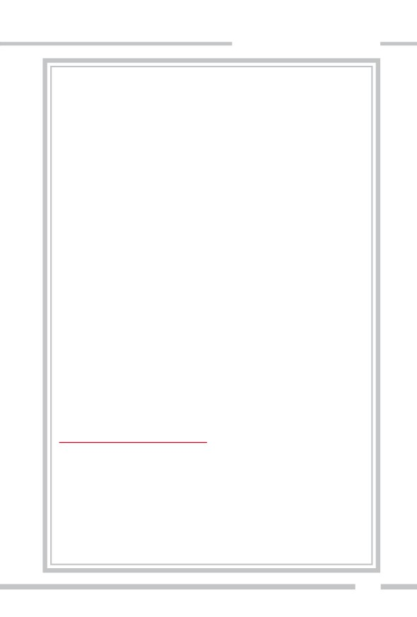
ADNAN HARUN YAHYA
ği üzere, İngiliz derin devleti, I. Dünya Savaşı sırasında ve sonrasında, bu politika
çerçevesinde sayısız girişimde bulunmuştur. Gertrude Bell ve Arabistanlı Lawrence
gibi "arkeolog" kisvesi altında Arap toplumuna dahil ettikleri ajanları ile bu politi-
kayı kelimesi kelimesine yürütmüştür. Arap kabileler arasında uzun süre dolaşarak
bu toplulukları Osmanlı'ya karşı kışkırtma politikası gütmüş, para ve silah yardımı
yaparak yanına çekmek istemiştir.
Nitekim İngiliz ajanı olan Arabistanlı Lawrence, toplumları birbirine düşürerek
elde ettiği bu sahte zaferi, şu sözlerle dile getirir:
Onları (Arapları) birleştirerek bu yola sokmakla (Türklere isyan ettirmekle) (İngiliz) İmpara-
torluğunda bir Arap dominyonu (sömürgesi) ihdas ettim (meydana getirdim).6
Görülebildiği gibi amaç hiçbir zaman bağımsızlık veya büyük Arap devleti kurmak
olmamış, Araplar, İngiliz derin devleti tarafından daima birer sömürge kabul edil-
miştir. Ne acıdır ki bu bakış açısı halen devam etmekte, İngiliz derin devletinin
Arap ülkeleri üzerindeki sinsi sömürge oyunu sürmektedir.
Fakat şu bir gerçektir ki, İngiliz derin devleti, Hilafet konusundaki entrikalarında
başarılı olamamıştır. Ne kadar engellemeye çalışırsa çalışsın, Hilafetin son durağı
yine Osmanlı olmuştur. Osmanlı'nın yıkılışı ile sanıldığı gibi Hilafet tümüyle kaldı-
rılmamış, yalnızca tek kişide bulunan egemenlik sona erdirilmiş, Halifelik makamı
Cumhuriyetin şahsında koruma altına alınmıştır. Gerçek sahibini beklemektedir.
Mustafa Kemal Atatürk de, Hilafetin gerçek sahibinin, ahir zamanda zuhur edecek
olan Hz. Mehdi (as) olduğunu bilmektedir ve dolayısıyla bu kutlu şahsın zuhuruna
kadar Hilafet makamını koruma altına almayı uygun bulmuştur. Hz. Mehdi (as),
içinde bulunduğumuz ahir zamanda, hadislere göre Hilafetin son merkezi olan
İstanbul'da zuhur edecek ve sevgi öğretmeni olarak İslam aleminin son manevi lide-
ri olacaktır.
1. Azmi Özcan, "İngiltere'de Hilafet Tartışmaları 1873 - 1909", İslam Araştırmaları Dergisi,
Sayı 2, 1998, s. 49
2. Memo by G. P. Badger, "Respecting Turkey and Russia in Their Relations with Arabia
and Central Asia", enc. to Frere to Granville, 26.11.1873, F. O, 424/32.
3. Foreign Office 881/2621, Correspondence Respecting the Religous and Political Revival
Among Mussulmans 1873-1874, (London, July 1875).
4. Wilfrid Scaven Blunt, The Future of Islam, London: K. Paul, Trench and Co. 1882, s: 84-
92.
5. Süleyman Kocabaş, Osmanlı İsyanlarında Yabancı Parmağı "Bir İmparatorluk Nasıl Par-
çalandı?", Vatan Yayınları, İstanbul, 1992, s. 96
6. Kocabaş, a.g.e., s. 96-97
337
338
İngiliz Gizli Belgelerinde Türkler
Osmanlı'nın yıkılış nedenlerine yer verdiğimiz bu bölümün sonun-
da, değerli araştırmacı Erol Ulubelen'in, İngiliz Gizli Belgelerinde Türkiye
isimli kitabında, İngiliz gizli belgelerinden derlediği alıntılardan bir kıs-
mına yer vereceğiz. İngiliz derin devletinin güdümündeki bir kısım İngi-
liz siyasetçilerin, askerlerin ve devlet adamlarının o döneme ait ifadeleri,
hiçbir yoruma gerek kalmadan, hain planların bugün devam etmekte
olduğunu açıkça göstermektedir.
(Necip Türk milletini, aşağıdaki ifadelerden tenzih ederiz)
İngilizler "Türk düşmanı Hıristiyanlara iyi davranır, Türk köpeğini
dövmek için her kırbaç mubahtır" derdi.126
Amerika Cumhurbaşkanı Wilson: "Türkler Avrupa'da çok uzun
zaman kaldılar ve oradan tamamen temizlenmelidirler".127
ÜST AKIL İNGİLİZ DERİN DEVLETİNİN İÇYÜZÜ
ADNAN HARUN YAHYA
İstanbul 1760
Lord Curzon: Türkler Avrupa'dan atılmalıdır. Amerikalı Senatör
Lodge'un dediği gibi; İstanbul Türklerden tamamen alınmalı, bir
veba tohumu olan; savaşların yaratıcısı ve komşuları için bir küfür
olan Türkler Avrupa'dan silinmelidir.128
Llyod George: "Türkler bize ihanet ettiler. Çanakkale'de binlerce insa-
nımız öldü. Şimdi Türklerin ölümüne kim bakar.129
İngiliz Derin Devletinin Osmanlı'yı
Parçalama Planları
İngiliz gizli belgelerinde, çeşitli İngiliz diplomat ve siyasetçilerinin
Osmanlı'yı parçalama planına dair ifadeleri şöyledir:
Mr. Marling: "Şimdiki durum yalnız Balkanları ve Avrupa'yı değil,
Arapları, Ermenileri, Kürtleri ve diğer ırkları da İmparatorluktan
ayırmaya çalışmak olmalıdır."130
339
340
G. Buchanon: "Bütün Avrupa Türk bölgesi Hıristiyanlara ait olmalı-
dır… Girit sorunu da Yunanistan lehine çözülmelidir."131
Lord Kicthener: "Türklerin çöküşü tamamlanmış görünüyor…
Sudan'da Türklerin hak diye ileri sürdükleri ne varsa İngiltere'ye geç-
melidir."132
A. Nicholson: "…İmroz Adası ve Bozcaada hariç bütün adaların
Yunanlara bırakılmasını sağlayalım."133
Mr. Erskine: "…Amiral Kerr bana gizlice Türk Donanmasını mah-
vetmek için planları olduğunu anlattı."134
İngiliz Dışişlerindeki bir toplantı: "… Sonuç: Mali işler Türklerin
eline hiçbir şekilde bırakılamaz. Ayrıca bütün işgal masraflarını ve
toplanan bu komisyonların parasını da Türkler verecek… Sinyor
Litti, 'Türkler İzmir'i isteyeceklerdir, bizde pekâlâ, İzmir'i işgal için
yaptığımız bütün masrafları verin deriz, tabii Türkler bunu ödeye-
ÜST AKIL İNGİLİZ DERİN DEVLETİNİN İÇYÜZÜ
ADNAN HARUN YAHYA
meyeceklerine göre İzmir de bize kalır' dedi. Buna karşılık Lloyd
George; 'bizim Suriye'deki birliklerimiz oradan çıkacak, yani bunun
masrafını biz mi ödeyeceğiz? Hiç böyle saçma şey olur mu? Hepsini
Türkler ödemelidir. İngiliz vergi mükellefleri bu iş için 750 milyon
Sterlin ödediler, bütün bunları Türklerden altın olarak alacağız,
Türklerin altın stoklarını ele geçirmeliyiz' dedi… Mr. Cambon; 'ilk
yapacağımız iş bunların milliyetçi liderlerini yok etmek olmalıdır.' …
Lloyd George; 'Sultan'a (Vahdettin'e) şöyle deriz: Biz bütün etleri alı-
yoruz sen de birkaç kemikle yetin.'"135
Türk Hükümeti'ne verilen cevap: "Türk Hükümeti'nin mesajını dik-
katle inceledik. Türkler…savaşa girerek insanlığın kayıplarına ve
sefaletine sebep oldular… Milyonlarca insanın ölümüne ve milyar-
larca Sterlinin kaybına sebep oldular. Dünyada özgürlüğün yeniden
kurulması için Türkiye'nin ödeyeceği bedel çok fazladır… Türklerden
341
342
başka ırklar, devlet haline getirilecektir. İzmir ve Trakya Türklerin
elinden alınacak, Amerikan Başkanı'nın (W. Wilson) karar vereceği
sınırlar içerisinde hür bir Ermenistan kurulacaktır… Türklerin uygar
dünyaya bir daha ihanet etmemesi için sıkı tedbirler alınacaktır. Bu
sebeple Türk toprakları, küçük bir devlet haline getirilecektir… Türk
halkının emperyalist arzuları silinecektir.
Boğazların özerkliği konusuna gelince:
1. Boğazlardaki bütün askeri tesisler yıkılacak, sahiller ve adalar
silahsız hale getirilecektir.
2. Silahsızlanma masrafları, Türkler ya da Yunanlar tarafından öde-
necektir.
3. Adalarda müttefik kuvvetler haricinde hiçbir asker bulunmaya-
caktır.
Türk Jandarmaları bizim emrimiz altında olacak, Türk borçlarının
hepsi Türkler tarafından ödenecektir. Eğer anlaşmayı imzalamazsa-
nız, Avrupa'dan kesin olarak atılacaksınız. İncelemeniz için 10 gün
müddet veriyoruz.136
İngiliz Derin Devleti ve Ermeni Ayaklanmaları
İngiliz gizli belgelerinde, çeşitli İngiliz devlet adamlarının Ermeni
ayaklanmaları ile ilgili izahları şu şekildedir:
Mr. O'Beirne: "Ermeni ayaklanması Türklere bir harp ilan etmenin
en iyi aracıdır… Alman ordularının Türklerin yanında olması üçlü
anlaşmayı kuvvetlendirecek ve bu reformlara yol açacak ve sonra bir
Ermeni isyanı olacaktır."137
E. Grey: "… Altı ilin birleşik bir Ermenistan için ayrılması, Asya Tür-
kiyesindeki diğer ırkların da aynı yolu tutmasına neden olacaktır."138
Harbord: "…İstanbul'dan Mardin'e kadar bütün bölgeleri gezdik…
ÜST AKIL İNGİLİZ DERİN DEVLETİNİN İÇYÜZÜ
ADNAN HARUN YAHYA
Türklerin Ermenileri öldürmek istediklerine dair bir işaret görme-
dik… Üç ay önce Ermenilerin tek bir adam kalmayıncaya kadar
kesildiğini duymuştuk, halbuki duyduklarımızın hiçbiri doğru değil-
di. Fransızlar Türkleri mandaları altına almak istiyorlardı, bunun
için de dünyanın şüphesini Türklerin üzerine çekmek gerekirdi."139
Mr. Kitson: "… Ermenilerin Müslüman komşularını kesmesinden hiç
şüphe etmem… Taşnaklar müthiş bir vahşetle çalışıyorlar… Kürtlere
her ne kadar güvenmesek de onları kullanmamız çıkarımız gereğidir.
Doğu illerine gelince; Türklerle harp etmeden o bölgeleri Ermenistan
ve Kürdistan diye bölemeyiz."140
Londra Konferansı: "…Ermenistan'a altı ilden başka Trabzon ve
Adana da verilmelidir. Amerika Ermenistan'a yardım edecektir…
"Trabzon'da bir tane bile Ermeni yok, Ermenisiz bir Ermenistan
biraz gülünç olmuyor mu?" deniliyor… Küçük bir Türk Devleti
kurulmalı, kapitülasyonlar adli işlere de uzatılabilir. Japonya'dan
kapitülasyonları kaldırdık, çünkü onlar kuvvetliydi başka çaremiz
yoktu. Türklerin kafası daha az işler."141
İngiliz Dışişlerindeki Toplantı: "… Lloyd George 'İstanbul'dan
Türkleri çıkartmalı'… Mr. Cambon'a göre: 'Bütün sıkıntı Mustafa
Kemal Paşa tarafından yaratılıyor ve Sultan onu kontrol edemiyor'…
Fransız gruplarının 1/3'ü Fransız askerlerinden, gerisi yerli Ermeni-
lerdendir… İstanbul'daki komiserimiz, bu olayları önleyemezse Sul-
tan'ı İstanbul'dan atacağımızı bildirerek tehdit etsin… Erzurum'un
yeni kurulacak Ermeni Devletine katılacağı bir sırada Mustafa
Kemal olmasaydı Ermenilerin bir şansı olurdu… Mustafa Kemal'in
askerleri hiç para almıyor, onları harekete geçiren vatan aşkıdır.142
İngilizlere ait rapor: "Ardahan, Batum ve İmer Vadisi verilecektir.
Ermenistan'ın, Kürdistan ve Türkiye ile olan sınırları şöyledir: Kara-
deniz'de Yanbatı Deresi… Erzurum ilinin batı sınırı, Bitlis suyu."143
San Remo Konferansı: "…Türkiye'nin sınırları: Erzurum Ermenile-
343
344
re verilecektir. Böylece, büyük Ermeni Devleti teorisi yerine gelecektir.
İtalyan Nitti, '…Erzurum'da Türkler çoğunlukta olduğu için bir yolu-
nu bulup Türkleri oradan atmalıyız. Erzurum, son zamanlarda milli
hareketin merkezi olmuştur.' Mr. Berthelot, 'Mustafa Kemal ve kuv-
vetleri rüşvet verilerek ya da başka bir yoldan ortadan kaldırılabi-
lir.'… Mr. Aharonian, "Mustafa Kemal'in ordusu, sizin sandığınız-
dan çok daha küçüktür ve başıboş bir ordudur.'"144
Lord Curzon: "…Ermeni Bogos Nubar Paşa ve Mr. Ahoromiyan'ı
azarladım. Türkleri öldürmek için verilen silahların Azerbaycanlıla-
ra karşı kullanılmasının aptallığını anlattım."145
Amiral F. de Robeck: "… Mr. Khatissian, 25 bin tüfek aldıklarını,
ayrıca Ermeni ordusunda 30 bin Rus yapımı tüfeğin ve bir milyon
merminin bulunduğunu, Yunan ilerlemesi başlayınca Ermenilerin de
derhal saldırıya geçeceklerini bildirdi."146
İngiliz Derin Devleti ve Kurtuluş Savaşı
İngiliz gizli belgelerinde, Türk Kurtuluş Savaşı ile ilgili şu ifadeler
gerçmektedir:
İngiliz Dış Politika Belgeleri: 1919-1939
Türkler sadece Yunanların istilasına uğradıklarını sanıyorlar ve
onlarla savaşmaya hazırlanıyorlar, ancak Yunanlar müttefik planı-
nın bir parçasıdır.147
Türkleri rahatsız etmeyelim ve Türklere harbin bittiği izlenimini
verelim… Yunanlarla İtalyanlar aralarında anlaşıp nereleri işgal
edeceklerine karar veriyorlar… Türklere bu işlerin duracağı hissini
vermeliyiz.148
Amiral F. de Robeck: "… Sultan, İngiliz otoritelerinden kuvvet kul-
lanarak milliyetçileri durdurmalarını istedi… Başbakan (Sadrazam)
ve İçişleri Bakanı (Dâhiliye Nazırı) durumun kötülüğünü kabul edi-
ÜST AKIL İNGİLİZ DERİN DEVLETİNİN İÇYÜZÜ
ADNAN HARUN YAHYA
(Üstteki iki resim)
Savaş sırasında cep-
heye malzeme taşı-
yan kahraman Türk
halkı
(Altta) Kurtuluş
Savaşı'nda Doğu
Cephesi
345
346
yorlar ve asileri bastırmak için müttefiklerden izin istiyorlar… Baş-
bakan (Sadrazam) Ferit Paşa Hükümeti, milliyetçilere karşı savaş
ilan etti ve milliyetçilerle konuşulamayacağına karar verdi… İngilte-
re, Türklere karşı olan savaşta başrolü oynadığı halde bugün Türk
gazetelerinde ve hatta milliyetçi gazetelerde bile İngiltere iyi bir
yerde."149
Amerikan Radyosu konuşması: "…Mustafa Kemal bana dedi ki:
'Bizim hükümetimiz, yabancı hile ve müdahaleleriyle zayıflatılmıştır.
Milliyetçilerin, İngiliz ve Fran-
Mustafa Kemal Atatürk
sızlardan yardım aldığı yalan-
önderliğinde gerçekleşen
dır. İngiliz sermayesi Türki-
Kurtuluş Savaşı, dünya-
nın şahit olduğu bir kah-
ye'yi mahvediyor. Biz İngilte-
ramanlık destanıdır.
re'deki eski Türk Dostları
Cemiyeti Başkanı Adil Bey'in
200 bin Sterlin, Konya Vali-
ÜST AKIL İNGİLİZ DERİN DEVLETİNİN İÇYÜZÜ
ADNAN HARUN YAHYA
si'nin 150 bin Sterlin ve belki de Ankara Valisi'nin bu miktar para
aldığını biliyoruz.'"150
Mr. Ryan'ın raporu: "… (Türkiye'deki) Milli kuvvetler gittikçe geliş-
tiği için, silahların bırakılmasına rağmen 40 bin kişilik bir hükümet
kuvvetinin, milliyetçilere karşı kullanılması istendi." Başbakan (Sad-
razam) bu isteği derhal kabul etti."151
Villa Belle'deki toplantı: "… Lloyd George, 'Mustafa Kemal'in başa-
rısı Araplara da sıçrayabilir; bu nedenle mutlaka ezilmesi gerekir…
Yunanların çarpışma yeteneğini büyüttük, Türklerinkini de küçült-
tük.'"152
Villa Franeuse'deki toplantı: "…İstanbul Hükümeti, yalnız bizim
için değil, bütün dünya için tehlikeli olan Türk milli hareketini bas-
tırmakta bize yardımcı olabilir… Savaşın iki yıl uzamasına sebep
olan Türklere hiçbir şekilde merhamet edemeyiz… Mr. Venizalos,
347
348
'İmkânı olsa Türklere silahtan başka bir yol kullanabiliriz, fakat
Türkler silahtan başka bir şeyden anlamazlar.' demiştir."153
Amiral F. de Robeck: "…Anadolu'daki bütün hareketler Mustafa
Kemal Paşa tarafından düzenlenen milli hareketin parçaları olarak
düzenlenmektedir… Damat Ferit, milliyetçi harekete karşı asker gön-
dermek istiyor… Aldığımız kararlara saygı göstermeyen tek halk
Türk halkıdır."154
Amiral F. de Robeck: "…Türkler Yunan idaresi altına girmezler,
özellikle Yunanların İzmir'de yaptığı kepazelikten sonra… İngiliz
subayları ve bizim adamlarımız Türkleri öldürmek için, Yunanlarla
iş birliği yapıyorlar… Türkler müthiş savaşçıdır, cephaneleri azdır ve
hiç ulaştırma araçları yoktur… Türklerle yapılacak sulh anlaşmasın-
da Kürdistan'da Türklerin hiçbir hakları kalmayacaktır. Kürdis-
tan'da durumdan emin olmalıyız, Kürtler bile ne istediklerini bilmi-
yor… Erzurum, Türklerin en kuvvetli kalelerinden biridir, çok büyük
bir Türk toprağının Ermenilere verilmesine göz yummazlar… İngiliz
İmparatorluğu, bir zamanlar Türk İmparatorluğu'nun olan bütün
bölgeleri elde etmiştir."155
Amiral F. de Robeck: "… Anadolu hareketinin nedeni, Yunan işgali
ÜST AKIL İNGİLİZ DERİN DEVLETİNİN İÇYÜZÜ
ADNAN HARUN YAHYA
ve yaptığı dehşet verici eylemlerdir. Ayrıca büyük Ermenistan ve Pon-
tus devletlerinin kurulması bu hareketin sebebidir."156
Amiral F. de Robeck: "…Başbakandan (Sadrazam) Mustafa Kemal'i
kötüleyen ve onları hükümetin emrine karşı gelen asiler olduklarını
bildiren ve halkın hükümete bağlı olması gerektiğini anlatan bir yazı
aldık."157
Amiral F. de Robeck: "… Damat Ferit (Sadrazam) şahsi emniyetin-
den, Sultan'ın emniyetinden ve kendi adamlarının emniyetinden
korkmaktadır. Eğer milliyetçiler Türkiye'de idareyi ele geçirirlerse,
kendisinin ve Sultan'ın hayatının himayemiz altında olduğunu söyle-
meme izin verir misiniz? Ferit 'Sultan'a etki eden tek insan olduğunu
ve İngiliz dostluğunu kendisinin yarattığını' söylüyor. Damat Ferit'in
istifası halinde onun ve Sultan'ın yurt dışına şerefli bir şekilde çıkma-
sını sağlamalıyız… Sultan, tahtını terk ederse, ona Türkiye'den çık-
ması için gereken her türlü yardımı yaparım."158
H. Rumbolt: "… İzmir'den gelen askeri raporlar iyi değil. Yunanlar
bile askeri disiplinleri olmadığını itiraf ediyorlar. 3. birliğin komuta-
nı Kondylis Salihli'den kömür vagonlarının altına saklanarak kaç-
mış, öyle görünüyor ki Yunanlar tek başlarına bu işi yürütemeyecek-
ler."159
349
350
İngiliz Derin Devletinin Kürdistan Planı
İngiliz derin devletinin Türk topraklarını parçalayarak bir Kürdistan
oluşturma planı, İngiliz gizli belgelerinde şu şekilde geçmektedir:
Amiral A. Calthorpe: "…Binbaşı Noel, Kürt şefleri ile görüş birliğine
varırsa bundan faydalar sağlayacağını söylüyor. Kürt şeflerinden
İstanbul'da (Seyit) Abdülkadir ve Bedir Han daha az önemli kimse-
lerdir. Bunlar şüphe uyandırmamak için Noel'den ayrı olarak Kürt
bölgelerine gidecekler,… Kürtler henüz Mustafa Kemal'e karşı ayak-
lanmadı ama Noel bunu sağlayacağından emin."160
Mr. Hohler: "…Benim problemim KÜRTLER. Noel, Bağdat'tan bura-
ya geldi… Kürtlerin peygamberi olmak istiyor… Korkarım ki Noel,
bir Kürt Lawrence'i olabilir. Mezopotamya şimdi bizim olacağına
göre, ona bir KÜRT DEVLETİ kurdurup kuzey dağlarını böylece
koruyabiliriz. (Seyit) Abdülkadir ve onun gibilerle konuştum. Onlara
etki edebilmek için 'biz de Türklere hile yapıyoruz' diye belki beş defa
tekrarlamak mecburiyetinde kaldım. Ancak, Kürtlere fazla güvenil-
mez. Majestenin Hükümeti'nin amacı Türkleri azami derecede zayıf-
latmak olduğuna göre Kürtleri bu şekilde harekete getirmek fena bir
plan değil."161
Amiral Webb: " … Amerika; Trabzon ve Erzurum'u içine alan bir
ERMENİSTAN'ı himaye edecek. Geri kalan dört ili de, bir KÜRT
DEVLETİ olarak İngilizlerin himayesine bırakıyor… Başkan Wilson,
Türklerin, Kürtlerin ya da diğer Müslümanların Ermenileri koruma-
larını, aksi halde Türk İmparatorluğu'nun ortadan kaldırılacağını ve
kendilerine çok kötü sulh şartlarının zorla kabul ettirileceğini söylü-
yor. Başbakan bundan çok etkilendi…"162
Mr. Hohler: "…KÜRTLERİN ve ERMENİLERİN durumu beni hiç
ilgilendirmez. Kürt sorununa verdiğimiz önem Mezopotamya bakı-
mındandır. Diğer taraftan Wilson beni korkutuyor, ajanları devamlı
ÜST AKIL İNGİLİZ DERİN DEVLETİNİN İÇYÜZÜ
ADNAN HARUN YAHYA
hatalar yapıyor. Noel'e gelince, fanatiğin biri. ERMENİSTAN'ın ve
KÜRDİSTAN'IN SINIRLARININ KESİN OLMADIĞI konusunda
sizinle aynı fikirdeyim… KÜRT SORUNU, Mezopotamya'da tatmin-
kâr bir sınır oluşturmak içindir…"163
Amiral F. de Robek: "… Mr. Hohler Kürt meselesi hakkında Kürt baş-
kan Şeyh Sait Abdülkadir Paşa'yla görüştü. Kürtler, bütün ümitlerini
İngiliz Hükümeti'ne bağlamış durumdalar. Bu ara Mustafa Kemal
gittikçe tehlikeli olmaya başlıyor. Kuvvetler, Kürtleri Mustafa
Kemal'e karşı kullanmak için her türlü parayı ödemeye hazırdır-
lar."164
İngiliz derin devletinin Stalinist Kürdistan planı asla gerçekleşmeyecektir.
351
352
Toplantı notları: "…Kürt kabileleri, İngiliz ve Fransız hâkimiyetine
konacak, KÜRDİSTAN'da hiçbir şekilde TÜRK BIRAKILMAYA-
CAK. Bir tek KÜRT DEVLETİ mi, yoksa birçok küçük KÜRT DEV-
LETİ mi kurulacağı düşünülecek. Ermenilere, Amerikalılar kanalı ile
SİLAH sağlanacak… İstanbul'da gizli bir örgüt kuruldu. Milliyetçile-
ri vatan haini ilan ediyor…"165
Amiral F. de Robeck: "… Kürdistan Türkiye'den tamamen ayrılıp
özerk olmalıdır. Ermenilerle Kürtlerin çıkarlarını bağdaştırabiliriz.
İstanbul'daki Kürt Kulübü başkanı Seyit Abdülkadir ve Paris'teki
Kürt delegesi Şerif Paşa emrinizdedir."166
Amiral F. de Robeck: "… Damat Ferit bana geldi, 'Sulh anlaşmasına
göre Kürtler ayrı bir devlet olacaklardır, Kürt liderleri Mustafa
Kemal'i sevmez… Siz Mustafa Kemal'den nefret ediyorsunuz çünkü
o, sizin yaptığınız anlaşmayı kabul etmiyor. O halde Kürtleri Musta-
fa Kemal'e karşı birlikte kullanalım' dedi."167
ÜST AKIL İNGİLİZ DERİN DEVLETİNİN İÇYÜZÜ
ADNAN HARUN YAHYA
Osmanlı İmparatorluğu, varlığını sürdür-
düğü 600 yıl boyunca Türk-Kürt-Çerkez-
Arap gibi farklı etnik gruplara ev sahipliği
yapmıştır. Bu topluluklar, yüzlerce yıl barış
içinde birlikte yaşamışlardır.
353
354
ÜST AKIL İNGİLİZ DERİN DEVLETİNİN İÇYÜZÜ
ADNAN HARUN YAHYA
İngİlİz Derİn Devletİnİn
Güdümündekİ
Ermenİ Meselesİ
355
356
150 Yıllık Yıpratma
Projesİ
irinci Dünya Savaşı’ndan bu yana gündemde olan Ermeni
meselesini değerlendirirken öncelikle akılda tutulması gereken
husus, istenmeyen tüm olayların milyonlarca insanın hayatını
B
kaybettiği bir dünya savaşının süregeldiği bir dönemde yaşandığı, her iki
tarafın da karşılıklı büyük acılar çektiğidir. Türkiye konuyla ilgili olarak
tarihi kayıtları açmayı ve tarafsız, uluslararası bir heyet tarafından öne
sürülen iddiaların tarihi belgeler üzerinden doğru olup olmadığının tes-
pit edilmesi talebindedir. Elbette tarihi belgeler gerçeklerin ortaya çık-
ması, asılsız iddiaların devre dışı kalması ve haksızlıkların giderilmesi
açısından önemlidir. Ancak hepsinden önemlisi, tarihte yaşananları bir
kenara bırakıp, dostluk ve kardeşliği inşa edebilmektir. Kuşkusuz Erme-
nilerin de Türklerin de bu savaş sırasında büyük kayıpları olmuştur,
ancak doğru olan kin ve öfke ile yüzyıl öncesinin hesabını tutmak değil,
bugünün yeni nesilleriyle herkesin mutluluğunu sağlayacak bir sevgi bir-
liği oluşturabilmektir.
Ermeniler; dürüst, akıllı ve değerli bir millettir. Bizim milletimizdir-
ler. Tarihte, her dönemde milletimizin en değerli parçalarından biri, biz-
den biri olmuşlardır. Güvenilir, sanatçı, aydın ve yetenekli kişilikleriyle
ön plana çıkmışlardır. Şu bir gerçektir ki, İngiliz derin devleti, bu güzel
milleti bizden ayırmaya ve uzaklaştırmaya geçmişte çok çaba göstermiş-
ÜST AKIL İNGİLİZ DERİN DEVLETİNİN İÇYÜZÜ
ADNAN HARUN YAHYA
tir. Bu çabalar şu anda da devam etmektedir. Söz konusu derin güç, tarih
boyunca Ermeni meselesini daima koz olarak kullanıp gerçek amacına
ulaşmaya çalışmıştır. Ermeni meselesinin tarihini incelerken bu gerçek-
lerin dikkate alınması önem teşkil etmektedir.
Geçmişe dair Osmanlı'daki Ermeni meselesini gündeme getirme-
miz, bu meselenin büyük oranda İngiliz derin devleti tarafından kışkır-
tılmış, planlanmış ve yürütülmüş bir konu olmasından kaynaklanmakta-
dır. Dönemin İngiltere'sinde gelişen ve dünyaya yayılan “radikal milli-
yetçiliğin ve ırklar arası çatışmanın ilerleme getireceği” yanılgıları, Orta-
doğu’da bir çok halk arasında olduğu gibi, Anadolu halkları arasında da
derin sorunlar yaşanmasına sebep olmuştur. Özellikle petrolün bulun-
masıyla bölgenin jeostratejik ve jeopolitik öneminin artması, İngiliz
derin devletinin Ermeniler, Süryaniler, Kürtler, Araplar, Türkler ve diğer
bölge halkları üzerindeki oyunlarını hızlandırmasına sebep olmuştur.
Ermeni kardeşlerimizle aramızı açan sayısız oyun da, İngiliz derin devle-
ti tarafından geliştirilmiş ve uygulanmıştır. Bu konunun çok iyi bilinme-
si ve aşağıda belirteceğimiz delillerin bu nedenle çok iyi değerlendirilme-
si gerekmektedir.
Millet-i Sadıka
Anadolu Ermenilerinin Müslümanlarla tanışması 4 Halife döne-
minde başlamıştır. 640 yılında ilk defa Kafkasya'ya gelen Müslümanlar,
653 yılında Hz. Osman döneminde bölgede tam bir hakimiyet sağlamış-
tır. Dönemin Suriye Valisi, ilerleyen süreçte ise Emevi Devleti'nin ilk
kurucusu olacak olan Muaviye, bölgede Müslümanlaştırma ya da Ara-
plaştırma politikaları gütmemiş ve yerel Nakharar sülalelerine geniş
özerklikler tanımıştır.
Sultan Alparslan, 1071 Malazgirt Meydan Muharebesi'nde Bizans
ordusunu yenerek Anadolu'nun kapılarını Türklere açmıştır. Bu tarihten
sonra Anadolu Ermeni halkları da Türklerle birlikte yaşamaya başlamış-
lardır. Selçukluların yıkılmasından sonra Osmanlı Beyliği Anadolu birli-
357
358
ğini tekrar kurana kadar Ermeni Kilisesi, Türk, İran ve Moğol yönetimi
altında kalmıştır.
Fatih Sultan Mehmet'in 1453 yılında İstanbul'u fethetmesiyle başla-
yan dönem, Ermeniler için adeta bir altın çağ olmuştur. Fatih, kendi iste-
ğiyle Ermenilerin Bursa'daki ruhani reisi Hovakim'i İstanbul'a getirtmiş
ve 1461'de Rum Patrikliğinin yanında bir de Ermeni Patrikliği kurdur-
muştur. Patrik, Padişah'ın fermanıyla Ermeni cemaatinin lideri ilan edil-
miş ve Ermeniler tamamen onun yönetimine bırakılmıştır. Bu dönem-
den sonra çeşitli ülkelerden İstanbul'a büyük bir Ermeni göçü yaşanmış
ve İstanbul'da güçlü bir Ermeni topluluğu oluşmuştur. Yavuz Sultan
Selim'in ve Kanuni Sultan Süleyman'ın Doğu Anadolu ve Güney Kafkas-
ya'daki fetihleriyle birlikte, buradaki Ermeniler de İstanbul'daki cemaatin
bünyesine dahil olmuş ve İstanbul Patrikliğine bağlanmışlardır. Osman-
Türkiye Ermenilerinin 84. Patriği II. Mesrob'un konuşması
Türkiye Ermenilerinin 84. Patriği II. Mesrob, 22 Mayıs 1999'da, Hil-
ton Oteli'nde yapılan bir resepsiyonda duygularını şu şekilde ifade
etmiştir:
…Fatih Sultan Mehmet'in, İstanbul'u fethinden sekiz yıl sonra,
1461'de Batı Anadolu'daki Ermeni Episkoposluğunu çıkardığı bir fer-
manla İstanbul Patrikliğine dönüştürmesi, Fatih'in ve Osmanlı Sul-
tanlarının gelecek vizyonu ve diğer dinlere gösterdiği hoşgörünün çok
açık bir örneğidir. Tarihte bir dine mensup bir hükümdarın başka bir
dinin üyeleri için ruhani riyaset makamı tesis etmesi, ne Fatih'ten
önce ne de sonra görüldü… Yeni bir bin yıla girerken dünyada yaşa-
nan gerginlikleri, özellikle yakın çevremizdeki savaş ortamını göz
önünde bulunduracak olursak, 538 yıl önce gerçekleşen bu olayın
değerini, dinler ve kültürler arası hoşgörünün önemini, sanıyorum
daha iyi kavrayabiliriz…
ÜST AKIL İNGİLİZ DERİN DEVLETİNİN İÇYÜZÜ
ADNAN HARUN YAHYA
lı yönetimi boyunca Ermeniler, dinsel, siyasal, ekonomik ve kültürel açı-
dan çok büyük bir özgürlük yaşamışlardır.
Ermeniler Osmanlı topraklarında Millet-i Sadıka (Sadık Millet) sıfa-
tıyla, Müslüman bir ülkenin gayr-i Müslim, dost ve güvenilir vatandaşla-
rı sıfatıyla yaşamışlardır. Osmanlı'nın değerli ve vazgeçilmez bir parçası
olarak varlıklarını sürdürmüşlerdir. Her Osmanlı vatandaşı gibi Osman-
lı Devleti içinde her türlü hak ve hürriyete sahip olmuş, dinlerini diledik-
leri gibi yaşamış, diledikleri gibi ticaret, zanaat yapmış ve ibadetlerini
istedikleri gibi yerine getirmişlerdir. Bu, Kuran'ın gösterdiği yoldur.
Şüphesiz, Kitap Ehlinden, Allah'a; size indirilene ve kendilerine indiri-
lene -Allah'a derin saygı gösterenler olarak- inananlar vardır. Onlar
Allah'ın ayetlerine karşılık olarak az bir değeri satın almazlar. İşte bun-
ların Rableri Katında ecirleri vardır. Şüphesiz Allah, hesabı çok çabuk
görendir. (Al-i İmran Suresi, 199)
Urfalı Mateos'un yazdıkları
Ünlü Ermeni tarihçisi ve aynı zamanda Urfalı olan Mateos, Selçuklula-
rın Ermenilere karşı tavrını, "Melikşah'ın kalbi Hıristiyanlara karşı şef-
kat ve iyilikle doluydu. İsa'nın evlatlarına çok iyi davrandı. Ermeni hal-
kına refah, barış ve mutluluk getirdi" sözleriyle ifade eder. Mateos, Sul-
tan Kılıçaslan'ın ölümünden sonra ise şunları yazmıştır:
Kılıçaslan'ın ölümü Hıristiyanları yasa boğmuştur. Zira bu Sultan, yük-
sek karakterli ve hayırsever bir insandı.1
Söz konusu örnekler, tarihin ilk dönemlerinden beri Türklerle birlikte
yaşayan Ermenilerin yaşadıkları huzur dolu ortamı sergiler niteliktedir.
1. 'Urfalı Mateos Vekayinamesi', Kronik No 129, s.146
359
360
Ey insanlar, gerçekten, Biz sizi bir erkek
ve bir dişiden yarattik ve birbirinizle
tanişmaniz için sizi halklar ve
kabileler (şeklinde) kildik...
ÜST AKIL İNGİLİZ DERİN DEVLETİNİN İÇYÜZÜ
ADNAN HARUN YAHYA
...Şüphesiz, Allah Katinda sizin en üstün
(kerim) olaniniz, (irk ya da soyca değil)
takvaca en ileride olaninizdir. Şüphesiz
Allah, bilendir, haber alandir.
(Hucurat Suresi, 13)
İSTANBUL BOĞAZI
361
362
ADNAN OKTAR D YOR K
Adnan Oktar: Ermenilerle yeniden bu kar-
deşlik ortamını tesis edelim, Ermenistan'la sı-
nırı açalım, bağrımıza basalım. Onlar Osmanlı
döneminde bizim kardeşlerimizdi, canları-
mızdı. Yine aynı; değişen bir şey yok. Millet-i
Sadıka'dır, temiz ve munis insanlardır. Ayıp-
tır, günahtır. Aramızı açmalarına da müsaade
etmeyiz. (Sn. Adnan Oktar'ın 18 Aralık 2011
tarihli A9 TV röportajından)
Adnan Oktar: Vize konusunda bir anlaşma
var. Arkasından pasaporta da gerek kalmayacak. Ermenistan ile de son görüş-
meler yapılıyor. Ama Ermenistan'la görüşürken bunları mahcup edecek tarzda
bir harekete gerek yok. Bunlar hakikaten şefkat isteyen insanlar, sevgi isteyen in-
sanlar, yani eski dönemin yeniden gelmesini isteyen insanlar. Millet-i Sadıka'dır
Ermeniler. Biz askerlerimizi, Mehmetçiğimizi, zamanında biz Ermeni paşalara da
teslim ediyorduk ve Ermenilere devletin kilit noktalarında görev veriyorduk. Şef-
katle yaklaşılması lazım. Kemik karşılaştırmaları ve kemik sayısı tespitleri, bun-
lar son derece tehlikelidir, zaten bunu söyledikten sonra bir daha bu gündeme
gelmedi. Çok şükür bu iyi bir gelişme. Sadece sevginin gündemde tutulması la-
zım. Ben, "Dağlık Karabağ'dan çekilecekler" dedim, nitekim çekiliyorlar... Bu,
Türkiye ile Azerbaycan arasındaki bağı sağlayacak. Mesela Cumhurbaşkanımız
Ermenistan'a gittiğinde, Ermeni anıtının da o gün ışığını söndürmüşlerdi. De-
mek ki bunu düşünüyorlar, biliyorlar. Gereğini yapacaklardır. Sadece istedikle-
ri samimi sevgi ve şefkattir. Sert ve töhmet altında bırakacak açıklamalardan şid-
detle kaçınmak lazım. Ben böyle bir üslubu gördüğümde şahsen utanıyorum. Bir
avuç, küçük bir ülke içerisinde sıkışmış durumdalar. Tabi ki onları da oradan kur-
taracağız. Allah'ın izni ile İsrail'e kadar bizim sevgi bağımız. Çin'in içine kadar,
Azerbaycan'ı, Türkistan'ı, Kazakistan'ı, Libya'yı, Fas'ı, Tunus'u, Cezayir'i hepsini
içine alacak.
(Sn. Adnan Oktar'ın 17 Eylül 2009 tarihli basın toplantısından)
ÜST AKIL İNGİLİZ DERİN DEVLETİNİN İÇYÜZÜ
ADNAN HARUN YAHYA
"Ermeni Toprakları" Üzerinden Yapılan Propaganda
Bugün İngiliz derin devletinin öne sürdüğü sözde "soykırım" senaryo-
sunun temeli, Doğu Anadolu topraklarının Ermeni anayurdu olduğu
iddiasına dayanmaktadır. Şunu ifade etmek gerekir ki, bugünkü sınırları
içinde Ermeni Devleti, Türkiye’nin dost bir komşusu; Ermeni Devleti’nin
vatandaşları ise Türk milletinin bin yıllık kardeşleridir. Türk milleti, tüm
komşu devletlere olduğu gibi Ermenistan’ın da varlığına, sınırlarına, ulus-
lararası haklarına saygı duymaktadır. Hepsinden öte Ermenistan Devle-
ti'nin daim ve güçlü olması temennisini korumaktadır. Ancak bir kısım
kesimlerin iddia ettiği şekilde, Türkiye’nin Doğu Anadolu bölgesinin sade-
ce Ermenilere ait olduğu düşüncesi tarihi gerçeklerle çelişmektedir.
İngiliz derin devleti tarafından geliştirilmiş bu senaryoya göre Türkler;
Selçuklular ve Osmanlılar döneminden itibaren Ermeni topraklarını işgal
etmiş ve hatta onlara zulmetmişlerdir. Hatta bu anlatımlara göre bu sözde
zulüm hala devam etmektedir. Ancak Türk-Ermeni ortak tarihi incelendi-
ğinde, bu iddiaların tamamen asılsız olduğu görülmektedir. Üstelik Erme-
ni halkının da, I. Dünya Savaşı'na -yani İngiliz derin devleti kara propa-
gandalarına başlayana- kadar bu yönde bir iddiası olmamıştır.
Öncelikle, Doğu Anadolu topraklarının Ermeni anayurdu olduğu
iddiası, tarihi gerçekleri yansıtmamaktadır. Ermenilerin bir zamanlar toplu
olarak oturdukları bölgeler, M.Ö. 521'den 344'e kadar Pers vilayeti, 344'den
215'e kadar Makedonya İmparatorluğu'nun bir parçası, daha sonra sırasıy-
la Selefkilere bağlı bir vilayet, Roma İmparatorluğu ile Partlar arasında sık
sık el değiştiren bir bölge, Sasani vilayeti, daha sonra da bir Bizans vilayeti
olmuştur. Bu toprakların 7. yüzyıl sonlarından itibaren hakimi ise Emevi-
ler'dir. Onlardan sonra 10. yüzyıl sonlarına kadar Abbasilerin elinde kal-
mış, 10. yüzyılın sonlarına doğru Anadolu'nun tamamına Bizans İmpara-
torluğu yeniden hakim olmuştur. 10. yüzyıldan itibaren de bölgeye Türkler
gelmişlerdir. Ermeniler çok eski tarihlerden beri bölgede varlığı devam
363
364
eden, medeni ve kadim bir millettir. Ancak tarih boyunca çeşitli devlet-
lerin egemenliğinde yaşamış, kurdukları devletler de dönemlerinin
büyük devletleri arasında tampon bölge işlevi görmüş ve sık sık müdaha-
lelere maruz kalmıştır. Ermeniler elbette ki Doğu Anadolu'da varlıkları-
nı sürdürecek ve kendi vatanları olarak o bölgede yaşamaya devam ede-
ceklerdir. Fakat söz konusu tarihi bilgilerden yola çıkarak, Doğu Anado-
lu'nun, başka milletlerin yer almadığı, müstakil bir Ermeni anayurdu
olduğu iddiası gerçeklerle örtüşmemektedir.
Bu husus Ermeni tarihçi Kevork Aslan'ın şu sözleriyle de doğrulan-
maktadır::
Ermeniler derebeylikler halinde yaşamışlardır. Birbirlerine vatan his-
leriyle bağlı değildirler. Aralarında siyasi bağlar yoktur. Yalnızca
yaşadıkları derebeyliklere bağlıdırlar. Vatanseverlikleri de bu neden-
le bölgeseldir. Birbirleriyle bağlarını siyasi ilişkiler değil, dilleri ve din-
leri oluşturur.168
İngiliz Derin Devletinin Bazı Ermenileri
Yönlendirmeye Başlaması
19. yüzyılın ikinci yarısından itibaren İngiliz derin devletinin Doğu
politikası incelendiğinde göze çarpacak en önemli husus, İngiltere’nin
yerel halklarla birebir kurduğu diyaloglar olacaktır. Kuşkusuz bu diya-
logların amacı söz konusu halklara yardımcı olmak değil, onları İngiliz
siyaseti doğrultusunda yönlendirmenin yollarını bulabilmek ve bu yolla-
rı en “etkili” şekilde kullanabilmektedir. Bu amaçla İngiliz derin devlet
mensuplarının bir kısmı halk arasında ayrılıkçı düşünceleri geliştirip bes-
lerken bir kısmı da halkın önde gelenlerini merkezi yönetime karşı kış-
kırtmışlardır. İngiliz derin devletinin bölgeye gönderdiği sayısız ajanın
ilgi alanındaki halklardan biri de Anadolu’nun kadim topluluklarından
sayılan Ermeniler olmuştur.
ÜST AKIL İNGİLİZ DERİN DEVLETİNİN İÇYÜZÜ
ADNAN HARUN YAHYA
13 Temmuz 1878 tarihinde imzalanan Berlin Antlaşması ile Osman-
lı; Rumeli'de ve Ermenilerin oturduğu bölgelerde, İngilizlerin baskısıyla
çeşitli ıslahatları hayata geçirmek mecburiyetinde kalmıştır. Görünürde
bölge insanlarına özgürlükler ve haklar tanıyacak olan bu ıslahatlar İngi-
liz derin devletinin, Ortodoks Hristiyan bir topluluk olan Ermeniler üze-
rinde hakimiyet elde etmesinin başlangıcı olmuştur. Ne var ki, mezhep-
leri farklı olan Ortodoks Ermenileri, Protestan mezhebine bağlı İngilizle-
rin safına çekmek hiç de kolay olmamıştır. Bu dönüşüm, ancak yıllar
süren ve İngiliz ajanlarının kullanıldığı, mezhepsel misyonerlik çalışma-
ları ve Batı basınında yürütülen yoğun propaganda sonrasında sağlana-
bilmiştir.
29 Kasım 1879'da Londra'ya bir rapor gönderen İngiltere'nin Van
Konsolosu Clayton, raporunda, Ermeni Devleti'nin ya hiç kurulmaması-
nı ya da kurulacaksa Rusya'ya yem olmayacak şekilde kurulmasını iste-
mişti. Konsolos, Osmanlı Devleti'nin yıkılacağı inancındaydı. Öyleyse
reformlar, İngiliz himayesi altında bir Ermeni Devleti'nin kurulmasına
19. yüzyılda
Osmanlı'da Müs-
lüman bir din
adamı, Kıbrıs ve
Ermeni Patriğiy-
le birlikte. Bu
birliği bozmaya
çalışan İngiliz
derin devleti
olmuştur.
365
366
doğru yönlendirilmeliydi. İngiliz Konsolosun düşüncesine göre bu şöyle
olacaktı: "Önce Ermeniler, İngiliz veya Avrupa protektorası (himayesi)
altında serpilecek, güçlenecek ve siyasal bakımdan hazırlanacaklardı.
Sonra, dışarıdan Doğu Anadolu'ya Ermeni nüfusu getirilecekti. Böylece
bölgede Ermeni nüfusu artırılacaktı. Ama ne kadar artarsa artsın yine
azınlıkta kalacaklardı. Bunun için ikinci adım olarak, Türk nüfusu Doğu
Anadolu'dan peyderpey uzaklaştırılacaktı. Geriye Kürtler ve Süryaniler
kalacaktı. Süryaniler, Ermenilerle mezhep ayrılıklarını bir yana bırakıp
kaynaşacaklardı. Kürtler ise, 'silah zoruyla hizaya getirilecek', Ermenilerle
birlikte yaşamaya zorlanacaklardı. Bütün bunlar, Osmanlı yönetimi altın-
da, reformların uygulanması olarak yapılacaktı. Zamanı gelip Osmanlı
Devleti çökünce de Ermenilere ayrı bir devlet kurulacaktı. Ama bu iğreti
devlet, kendi kendine yaşayamayacağı için, bunun üzerinde 'güçlü bir
İngiliz himayesi' kurulacaktı."169
Plan, belirlendiği gibi işliyordu. Osmanlı Devleti'nin Hıristiyanlara
yönelik iyileştirme taahhüdünü takip etme adı altında İngiltere, Osman-
lı vilayetlerine konsoloslar gönderdi. Rütbeli askerlerden oluşan bu kon-
soloslar, gözlem görevlerinin tamamen dışına çıkarak, bölgede istihbarat
çalışmaları yaptılar; bir kısım Ermeni vatandaşlarımızı örgütleyip silah-
landırdılar ve ardından onları açıkça isyana teşvik ettiler.
İngiliz derin devleti tarafından kış-
kırtılıp Osmanlı içinde isyan çıka-
ran Ermeni çetelere ait silahlar.
ÜST AKIL İNGİLİZ DERİN DEVLETİNİN İÇYÜZÜ
ADNAN HARUN YAHYA
Ancak geldikleri ilk dönemde İngiliz konsolosları ile Ermeni toplu-
luğu arasında ciddi bir iletişim ve güven sorunu vardı. Bu, farklı mez-
heplere mensup olmalarından kaynaklanıyordu. Bu nedenle, söz konusu
konsolosların/ajanların, Ermenileri kendi yanlarına çekebilmeleri için,
öncelikle Ermenilerin, misyoner çalışmalarıyla mezheplerini değiştirme-
lerini sağlamaları ve onları Protestan yapmaları gerekliydi. Bunun için
özellikle bazı Amerikalı misyonerler aracılığıyla Mardin merkezli olarak
bölgede faaliyetlere başlanmıştır. Bu çalışmalar başta Şark Kiliselerinin ve
yerli halkın ciddi anlamda tepkisini çekmiştir. İngiliz konsoloslar ise hem
söz konusu misyonerleri hem de mezhep değiştirip Protestanlığa geçen-
leri himaye etmiştir. Elbette kast edilen himaye, bu insanların inançları-
na duydukları saygıdan değil, bölge uzerindeki stratejilerinden kaynak-
lanmaktadır.
Bu strateji, Osmanlı topraklarında çok daha önceden de yürütülen
bir faaliyet olarak karşımıza çıkar. Dönemin Tekirdağ Kaymakamı
Ahmed Hamdi'nin konuyla ilgili uyarısı şöyledir:
Tekirdağ'daki Protestan milleti İngiliz Devleti himayesinde oldukla-
rını belirtmişlerdir. Bu devletin konsolosu ise, her türlü iş ve mesele-
lere karışmakta olup Protestanların devletinin himayesinde oldukla-
rını söyleyerek onları kendisine tabi ettirmek düşüncesindedir. Kon-
solosun bu şekilde davranması, uygunsuzluk ve şehirde karışıklığa yol
açtığından, bunun önü alınmazsa Ermeni milletinin toplu halde Pro-
testan olarak İngiliz Devleti himayesine girecekleri anlaşılmaktadır.
Konsolosun söz konusu milleti kendisine tâbi ettirmek istemesi, her
yönden nizama aykırı olarak memleketi fesada uğratacağından, bu
meselede ne şekilde hareket edilmesi gerekiyorsa Sadâret'ten bildiril-
mesine şiddetle ihtiyaç duyulmaktadır. Protestan milleti hakkında
yapılacak işlemin acilen bildirilmesi arz olunur.170 (21 Ağustos 1858,
Tekirdağ Kaymakamı, Ahmed Hamdi)
367
368
İngiliz Derin Devletinin Ermeni
İsyanı Karargahı: Kıbrıs
Kıbrıs'ın yönetiminin sözde geçici olarak İngilizlere verilmesini
öngören ve gizli yapılan 1878 Kıbrıs Antlaşması öncesinde Ada'da 45 bin
Müslüman ve 100 bine yakın gayrimüslim yaşamaktaydı. Ermeniler,
Rumlar, Museviler ve az miktarda Nasranî, bu gayrimüslim nüfusu oluş-
turmaktaydı. İngiliz sözde bazı misyonerler de bu Hristiyan nüfusa etki
etmek amacıyla Kıbrıs'ta faaliyet yapmaktaydı. İngilizler, Ada'yı kontrol-
lerine aldıklarında Ermeniler için bir okul açarak nüfuzlarını arttırmayı
ÜST AKIL İNGİLİZ DERİN DEVLETİNİN İÇYÜZÜ
ADNAN HARUN YAHYA
amaçladılar. Bu, İngiliz derin devletinin Ermeni meselesinde Kıbrıs'ı üs
olarak kullanmak için attığı ilk adım oldu. Anadolu'da barınmakta zorla-
nan Ermeni komitacılar Kıbrıs'a yerleştiler. Birçok ayaklanmanın planla-
yıcısı Taşnak ve Hınçak komitaları Kıbrıs'ta organize oldular. Ermeni
Muhibban Cemiyeti ve Ermeni Mülteciler Vakfı Komitesi, hep Kıbrıs
merkezli kuruldu. Anadolu Ermenileri her geçen gün daha fazla Kıb-
rıs'tan sevk ve idare edilmeye başlandı. Merkezi İngiltere'de olan Hınçak
komitasının Magosa'da avukatlık yapan başkanı Sivaslıyan da, Ada'daki
Ermenileri Osmanlı Devleti'ne karşı kışkırtmakta ve anakaradaki ayak-
lanmalara katılmalarını sağlamaya çalışmaktaydı.
Kıbrıs Monagra Ermeni
Lejyonu Kampında Eği-
tilen Kayseri/Tomarzalı
Ermeniler.
369
370
Kıbrıs, sadece bir kısım Ermenileri kışkırtmak için kullanılan kültü-
rel ve sosyal bir merkez değildi. Ayaklanmalara lojistik destek de büyük
ölçüde yine Ada'dan sağlanıyordu. Osmanlı ile Avrupa topraklarındaki
ayaklanma yanlısı Ermeniler, Kıbrıs üzerinden haberleşmekteydiler.
Aynı şekilde yurt dışına kaçan veya Anadolu'ya dönecek kalkışma taraf-
tarı Ermeniler de Kıbrıs üzerinden gizlice gidip gelebiliyorlardı. Halep,
Diyarbakır, Bitlis, Hakkari ve Van illerinde isyana karışan Ermeniler,
İskenderun ve Mersin üzerinden yelkenlilerle Ada'ya çıkıyorlar, Ada'da-
ki İngiliz hakimiyeti sayesinde kimlik değiştirip Avrupa ve ABD'ye yol-
culuk ediyorlardı.
Avrupa'daki bazı Ermeniler tarafından satın alınan silahlar da, yine
Kıbrıs üzerinden Ermeni komitacılara ulaştırılıyordu. Tüm bu operasyon
İngiliz derin devletinin sevk, idare ve korumasında gerçekleşiyordu. Kıb-
rıs adası sadece Anadolu topraklarına yakın değildi. Bugünkü Suriye ya
da Lübnan sınırlarında bulunan birçok Osmanlı kenti de Ada'yı üs edin-
miş bir kısım Ermenilerin tehdidi altındaydı. Osmanlı Devleti ise değil
bu ulaşımı engellemek, bütün bunları gözleyebilecek altyapıya dahi sahip
değildi.
Burada bahsettiğimiz kişilerin, İngiliz derin devletinin hakimiyetin-
de bulunan Ermeni komitacılar olduğunu tekrar hatırlatmakta fayda var-
dır. İngiliz derin devletinin etkisi ile Ermeni vatandaşlarımızın bir kısmı-
nın propagandaya kanarak yanlış bir yol izlediği doğrudur. Fakat Erme-
ni kardeşlerimizin büyük bir çoğunluğu, o dönemde, kendi vatanları olan
Osmanlı'ya sadık kalmaya devam etmiş, İngiliz derin devletinin sahte
oyunlarına kanmamışlardır. Bu değerli millet, işte bu yüzden, Türkiye
Cumhuriyeti'nin kuruluşundan sonra da huzur ve güven içinde Türkiye
topraklarında yaşamaya devam etmişlerdir, hala vatanımızın bir parçası-
dırlar.
ÜST AKIL İNGİLİZ DERİN DEVLETİNİN İÇYÜZÜ
ADNAN HARUN YAHYA
I. Dünya Savaşı Öncesi Yerel Ayaklanmalar
İngiliz derin devletinin Doğu Anadolu'daki çıkarları, Ermeni toplu-
munun belirli bir kısmının Osmanlılara karşı kullanılması stratejisi üze-
rine kuruluydu. Bu gerçek, şu ana kadar pek çok Batılı ve Ermeni tarihçi
tarafından da dile getirilmiştir. Ancak Osmanlı yönetiminden hiçbir
şikayeti olmayan ve yıllardır barış içinde yaşayan halk üzerinde bu giri-
şimler ilk başlarda etkili olmamış ve provokasyon amaçlı kurulan teşki-
latların büyük bölümü zaman içinde yok olup gitmiştir. Söz konusu teş-
kilatlar, Osmanlı toprakları içinde başarılı olamayınca bu kez farklı ülke-
lerde faaliyet göstermeye başlamışlardır.
Ermeni meselesinin bugünkü önde gelen propagandacılarından
olan Louise Nalbantyan, kurulan bu komitaların amacını, "Ermeni halkı-
nın duygularını harekete geçirmek için tahrike ve teröre ihtiyaç vardı.
Halk, düşmanlarına karşı kışkırtılacak ve aynı düşmanın misilleme faali-
yetinden yararlanılacaktı… Komite, Osmanlı Hükümeti'ni terörize etme-
yi amaçlıyordu" şeklinde tanımlıyordu.171
Yani Anadolu'da isyanlar
çıkartmak için İngiliz derin devleti tarafından kışkırtılan bir kısım Erme-
niler, kendilerine yöntem olarak "terörü" seçmişlerdi. Nitekim bu komi-
taların kurulmasını takip eden yıllarda Anadolu'nun dört bir yanında
isyanlar çıkartılmıştır. İsyanlarda pek çok masum Türk, Kürt, Süryani ve
Ermeni hayatını kaybetmiş ve bu isyanlar nedeniyle Anadolu toprakla-
rında huzur sağlanamamıştır.
Ermeniler, Osmanlı yönetimi altında ağırlıklı olarak sanat ve tica-
retle uğraşan özgür bir milletti. Dini özgürlükleri tamdı; kendilerine ait
kiliseleri olup istedikleri gibi ibadet edebilirken, kendi din adamlarını
yetiştirdikleri manastırları da bulunmaktaydı. Askere gitme zorunluluk-
ları yoktu. Bu çerçevede Osmanlı Devleti, onlar için, yüzyıllarca huzur ve
güven içinde yaşamalarını sağlayan bir otorite olmuştu. Ancak Osman-
lı'nın parçalanma süreci içinde İngiliz derin devleti tarafından onlara da
371
372
bir rol biçildi. Ermenilerin bir kısmının Osmanlı'ya başkaldırarak ayrı bir
devlet olmaları teşvik edilecekti. Ancak İngiliz derin devleti, Ermenilerin
böyle bir niyetlerinin olmadığını çok iyi biliyordu. Yapılacak şey, onları
provoke edecek yollar bulmaktı.
Doğu Anadolu'yu gezen Amerikalı gazeteci George H. Hepworth,
hatıralarında Ermenilerin kendisine şunları söylediklerini aktarır:
Ah! Biz bir zamanlar çok mutlu bir halktık. Vergimizi öderdik, büyük
işlerimiz vardı; memnun ve zengindik. Ama şu Berlin Antlaşması yok
mu! İngiltere'nin müdahil olması yok mu! Eğer, Avrupa bizim yaka-
mızı bırakırsa hala bir geleceğe sahip olabiliriz . 172
İşte bu rahat ortam, Osmanlı yönetiminin zayıflığında yerini, İngiliz
derin devleti önderliğinde bir isyan ve zulüm ortamına bıraktı. O güne
dek ırkçı ve milliyetçi akımlardan hiçbir zaman etkilenmemiş olan Erme-
nilerin ırk ve din farkı, İngiliz derin devleti tarafından bir anda ön plana
çıkarılıyordu. Bu amaçla, önce Hristiyan Ermeni toplumu Müslümanla-
ra karşı kışkırtılmalı, haksızlığa uğratıldıkları propagandası yayılarak
sözde "ezilmiş toplumun" başkaldırışı sağlanmalıydı. Çatışma ve kan
dökülmesi bu sinsi planın olağan bir sonucu olmalıydı.
Rusya'nın Van ve Bitlis Genel Konsolosu General Maywesky, özel-
likle İngiltere tarafından yürütülen bu cesaretlendirme ve kışkırt-
ma sürecini şöyle aktarır:
Türkiye Hristiyanlarının -bu sefer de Ermenile-
rin-, Türklerin zulüm ve baskısına maruz kal-
dıklarını Avrupa'ya göstermek icap ediyordu.
Fikir pek doğru. Sırbistan ve Bulgaristan'da
da böyle olmuştu. Ermenilerden de bu
ÜST AKIL İNGİLİZ DERİN DEVLETİNİN İÇYÜZÜ
ADNAN HARUN YAHYA
İstanbul Ortaköy sahilinde bulunan Neo
Barok tarzındaki bu ihtişamlı cami, Sultan
Abdülmecid tarafından Ermeni kardeşimiz
Mimar Nigoğos Balyan'a 1853 yılında yap-
tırılmıştır.
373
374
İstanbul Üsküdar'da bulu-
nan Adile Sultan Kasrı'nın
mimarı da, Ermeni kardeşi-
miz Nigoğos Amira Bal-
yan'dır.
ÜST AKIL İNGİLİZ DERİN DEVLETİNİN İÇYÜZÜ
ADNAN HARUN YAHYA
suretle istifade edeceklerdi… Propaganda şu şekli aldı: "Ancak ve
ancak kan dökmek lazım ki, Ermeniler serbesti kazansınlar. Kan
dökünüz, Avrupa sizi himaye eder." Mutlaka kan dökülmesi lüzu-
muna kani idiler. Ermeni kanı dökülünce, hemen Avrupa'nın gelip
Ermenistan'ı yakında ihya edeceğine iman etmişlerdi. Başka türlü bu
derece vahşet irtikap edilemezdi. Muhtariyet idaresi emeli kuvvetli
olmasaydı, Londra'nın emriyle binlerce hayat telef olur muydu?173
İngiliz derin devletinin bölücü kışkırtma politikası, yıllar sonra artık
açık ve net bir şekilde ifade ediliyordu. 1880'de iktidara gelen İngiliz Baş-
bakanı Gladstone, "Ermenilere muavenet (yardım), insaniyeti hizmettir"
diyor, Osmanlı'dan ayrılmaları hususunda ise "Doğu'yu ilerletip aydınlı-
ğa kavuşturmak isterseniz Ermenilere istiklal veriniz" diyerek İngiliz
resmi devlet politikasını açıklıyordu. Gladstone kabinesi, Ermenileri bir
araya toplayıp organize ediyor ve kuracakları yeni bağımsız devletin
İngiltere himayesinde olacağını vaat ederek onları cesaretlendiriyordu.174
Ancak dertleri ne Ermenilerin korunması ne de Doğu’nun "aydınlığa
kavuşması" idi. Asıl amaç Ortadoğu’da kolay yönlendirilebilecek küçük
parçalar oluşturmaktı.
Tarihçi yazar Süleyman Kocabaş, tarihin belgelediği bu gerçeği şu
sözlerle açıklamıştır:
Doğu Anadolu'da Ermeni şiddet olayları başladı. Bölgedeki yabancı
görgü tanıklarının yazdıklarına göre, Ermeni komitacıları, İngiliz
konsoloslarıyla gizlice temasta idiler. Bunu, Rusya'nın Van konsolo-
su General Maywesky eserinde yazar. Ermeni isyanlarının en civcivli
375
376
zamanı olan 1896'da Doğu Anadolu'yu gezen Amerikalı gazeteci
George H. Hepworth da hatıralarında, İngiliz-Ermeni ilişkilerinden
bahseder. Bölgede Müslümanlarla Ermeniler arasındaki kanlı olayla-
rın asıl sebebinin yurt dışından gelen Ermeni komitacıları olduğun-
dan bahsettikten sonra şöyle devam eder: "Arada bir Ermeni komita-
cılarının tecavüzlerini yenilemeleri mümkündür. Onlar, maksatları-
nı açıkça söylüyorlardı. Kendileri olayların gerisinde, Türklerle
Ermenileri birbirlerini öldürmeye teşvik ederlerse, Avrupa'nın kuvve-
te başvurarak müdahale edeceğine ve ondan sonra kendilerinin
Ermeni Krallığı'nı yeniden kuracaklarına inanıyorlardı... İngiltere,
onları yeni çabaları için övüyor ve teşvik ediyordu. İngilizler, gece
karanlığı ortalığı sarınca, şehirlerin içindeki yollardan gizlice hareket
ederek, kendilerini destekleyeceklere söz vermeleri halinde, hükümet-
lerinin onların yardımına koşacağını söylüyorlardı."175
Nitekim 1896'da söz konusu Ermeni komitaları, Liverpool'da büyük
bir miting düzenlemişler, mitinge katılan Gladstone, uzun bir konuşma
yaparak Ermenileri tahrik eden ifadeler kullanmıştı.176
Harvard Üniversitesi Tarih bölümü kürsü başkanı William L. Lan-
ger'e göre, Türkiye'de "hunharca akıtılan kanlardan, daha ziyade İngilte-
re sorumluydu".177
Anadolu'daki İngiliz konsoloslarının himaye ve yönetimindeki
Ermeni komitaların faaliyetleri, 1895 yılı Temmuz ve Ağustos aylarında
iyice yoğunlaşmıştır. 1895 yılı içerisinde çıkan bu Ermeni isyanları; 29
Eylül Divriği, 2 Ekim Trabzon, 6 Ekim Eğin, 7 Ekim Develi, 9 Ekim Akhi-
ÜST AKIL İNGİLİZ DERİN DEVLETİNİN İÇYÜZÜ
ADNAN HARUN YAHYA
sar, 21 Ekim Erzincan, 25 Ekim Gümüşhane, 25 Ekim Bitlis, 26 Ekim
Bayburt, 27 Ekim Maraş, 29 Ekim Urfa, 30 Ekim Erzurum, 2 Kasım
Diyarbakır, 2 Kasım Siverek, 4 Kasım Malatya, 7 Kasım Harput, 9 Kasım
Arapgir, 15 Kasım Sivas, 15 Kasım Merzifon, 16 Kasım Antep, 18 Kasım
Maraş, 22 Kasım Muş, 3 Aralık Kayseri ve 3 Aralık Yozgat isyanlarıdır.
Ermeniler, yıllarca
Türklerle barış
içinde yaşamışlar-
dır.
(Yanda) Kayseri
Talas Ermeni Ana-
okulu-15 Haziran
1911
(Altta) Osmanlı'da
sanatla ilgilenen
Ermeniler.
377
378
Sözde Misyonerlerin Ermeniler Üzerindeki Etkisi
İngiliz konsolosları, Ermeni vatandaşlarımıza Osmanlı yönetimini
kötülüyor, onların haklarını koruyacak makam olarak da İngiliz devletini
ve himayesini gösteriyorlardı. Bu amaçla, bir program dahilinde Ermeni
köylerini ziyaret edip propaganda faaliyetlerini sürdürüyorlardı. Adana
vilayetinden Dahiliye Nezareti'ne gönderilen telgrafta konsolosların bölü-
cü faaliyetleri hakkında şu tespitler aktarılıyordu:
İngiltere Devleti tarafından Adana Konsolos Vekili olarak atanan Yüz-
başı Cooper'ın elinde bulunan fermanda kendisinin normal konsolos
vekili olarak sadece İngiltere vatandaşlarının işlerine bakmak üzere
tayin edildiği açıklanmakta iken, buraya geldiğinden beri mazlumların
koruyucusu şeklinde görünüp mahkemelerde davalarını kaybeden ve
tüccar olan hak sahiplerinin verdiği şikâyet içeren dilekçe ve önerileri
kabul ederek kendilerine yardım vaat etmektedir. "Bu davalara niçin
böyle karar verilmiş?" şeklinde savcıya sorular sormak ve şikâyette
bulunanlara Osmanlı Devleti'nin idaresini kötüleyip İngiltere Devle-
ti'nin adaletini överek kalpleri kazanmaya çalışmak türündeki davra-
nışları tahammül sınırını aşmıştır… Şu sıralar buranın da Kıbrıs gibi
İngilizlere bırakılacağı, Konsolos'un gelişinin bu yüzden olduğu,
Kozan, Zeytun, Dersim ve Van'ın Ermenistan adıyla -Bulgaristan gibi-
Ermeni bir valinin özerk yönetimine verileceği söylentileri halk arasın-
da yayılmaya başladı. Bu gelişmenin Osmanlı Devleti'nin hukuk ve
bağımsızlığı için ne derecede zararlı olup memleketin idare ve güvenli-
ğini bozacağını tarafınıza söylemeye gerek yoktur. Ancak bu durum
biraz daha sürecek olursa vatandaşların düşünceleri tamamen değişe-
cek ve gelecekte vaziyet daha tehlikeli bir hal alacaktır. Bunlara karşı
nasıl hareket edileceği hakkında elimde talimat olmaması dolayısıyla
bir taraftan sorumluluk korkusu ve diğer yandan hükümetin şerefini
koruma görevi beni kararsızlık ve sıkıntı içinde bırakmaktadır. Hare-
ket tarzımı belirlemek için ayrıntılı emirlerinizi istirham ederim.178 (15
Aralık 1879)
ÜST AKIL İNGİLİZ DERİN DEVLETİNİN İÇYÜZÜ
ADNAN HARUN YAHYA
Osmanlı İmparatorluğu döneminde
kurulan Surp Boğos Ermeni Katolik
Kilisesi hala varlığını sürdürmekte ve
Ermeni kardeşlerimize ev sahipliği
yapmaktadır.
Yukarıdaki telgrafta sözü edilen faaliyetler bir süre sonra bazı Erme-
niler üzerinde etki göstermeye başlamıştır. Ermeni vatandaşlarımızın
büyük çoğunluğu Devlete sadakat gösterirken, sayıca az da olsa bir kısmı
İngiliz derin devletinin etkisi altında kalmıştır. İngiliz derin devleti,
Osmanlı Devleti'ni yıkabilmek için Anadolu topraklarında istihbarata
ihtiyaç duymuştur. İngiliz derin devleti güdümündeki Ermeni isyancılar,
1890 yılından 1922'ye kadar İngiliz istihbaratının beşinci kolu şeklinde
faaliyet göstermişlerdir. Çanakkale Savaşı'nda, Adana Ermeni olayların-
da ve 1915 ayaklanmalarında İngiliz istihbaratı ile Ermeni ihtilalci parti-
leri birlikte hareket etmişlerdir. Çünkü söz konusu Ermeniler, yıllarca
379
380
Osmanlı Devleti'nin içinde yaşamaları nedeniyle Anadolu'yu Türkler
kadar iyi bilmektedir. Osmanlı'yla tüm cephelerde mücadele eden İngiliz
derin devletinin aradığı destek, bu Ermeni komitalarından gelmiştir.
İngiliz derin devletinin manipüle edebildiği Ermenileri kendi yanında
devşirmesi, neredeyse 100 yıl boyunca ince ince işlenmiş bir planın sonu-
cudur.
Yüzyıllarca kar-
deşçe yaşadığı-
mız Ermeni
vatandaşlarımı-
zın bir kısmı,
İngiliz derin
devletinin kış-
kırtmasıyla
Osmanlı Devle-
ti'ne karşı baş-
layan isyanlara
katılmışlardır.
(Yanda) Bir
Fransız dergi-
sinde yer alan,
Osmanlı'daki
Ermeni isyanla-
rının temsili
resmi.
ÜST AKIL İNGİLİZ DERİN DEVLETİNİN İÇYÜZÜ
ADNAN HARUN YAHYA
İngiliz Basınında Yürütülen Ermeni
Propagandası
Asırlardır bir arada kardeşçe yaşayan Türkler ve Ermeniler arasında
suni olarak geliştirilen Ermeni sorununda, Ermenilerin Osmanlı'ya karşı
kışkırtılması ilk aşamadır. 1878 Berlin Kongresi'nde İngiltere'nin önder-
liğinde Ermenilerin Rusya'ya karşı sahiplenilmesi mantığı tartışılmıştır.
Lord Salisbury, Ermenilerin menfaatlerinin güvence altına alınarak aci-
len durumlarının iyileştirilmesini teklif etmiş ve bu şart, Berlin Antlaş-
ması'nın 61. maddesi olarak kabul edilmiştir. Sadece Ermenilerin değil
tüm halkların durumlarının iyileştirilmesi, kuşkusuz her vicdan sahibi
insanın kabul edeceği ve destekleyeceği bir tutumdur. Ancak İngiliz
derin devletini, ne Ermenilerin ne de başka bir halkın iyiliği değil sadece
kendi menfaatleri ilgilendirmektedir. Bu çerçevede, İngiltere içinde de
lobi faaliyetleri yürütülmüş; Ermeni yazarlar, Osmanlı aleyhinde yazılar
yazmaları ve Osmanlı karşıtı propaganda yapmaları konusunda teşvik
edilmiştir.
Yine Lord Salisbury himayesindeki Agopyan adlı bir Ermeni, Lon-
dra'da Haiasdan isimli bir gazete çıkarmaya başlar. Henry Labouchère’in
sahibi olduğu Truth Gazetesi gibi belli başlı gazetelerde "Ermenilerin
Hristiyan kimlikleriyle Osmanlı tarafından ezildikleri" şeklinde yanlış
haberler yapılmaya başlanır. Bab-ı Ali, bu aleyhte yayınların engellenme-
si için yerel mahkemelere başvurur, ancak ifade özgürlüğü adı altında bu
yalan haberlere devam edilir.
Avrupa'da olumsuz kamuoyu oluşturmak ve böylece Osmanlı Dev-
leti üzerinde baskı oluşturabilmek amaçlanmaktadır. İngiltere'de Glads-
tone'un başını çektiği bazı politikacılar, Avam Kamarası'nda, "Hıristiyan-
ların zulme uğradıkları" şeklinde
-hiçbir somut dayanağı olmayan-
Osmanlı aleyhine kışkırtıcı konuşmalar yapmıştır. Times Gazetesi, Hıris-
tiyanların sözde türlü cezalarla öldürüldüklerini, kilise ve diğer binaları-
381
382
nın yağma edildiğini ve işin günden güne tehlikeli bir hal aldığı yalanla-
rını yaymaktadır.
Türk diplomatlardan Salih Münir Paşa, Yıldız Saray-ı Hümâyûnu
Baskitâbet Dairesi'ne yazdığı raporda durumu şöyle özetlemiştir:
Mevcut durumun tamamı göz önüne alındığında İngiltere'nin,
Osmanlı Devleti çıkarlarına aykırı bazı emellerin gerçekleşmesine
hararetle çalışmakta olduğu sonucunu çıkarmak doğaldır. Bu takdir-
de gerek Gladstone partisi ve gerekse Salisbury grubuna mensup gaze-
telerin yaptıkları yayınlara, kamuoyunu kendi kötü emellerini kolay-
ca kabule hazır bir hale getirmek için tertip olunmuş yayınlar gözüy-
le bakmak gerekir.179 (Londra, 4 Eylül 1889, Salih Münir)
İngiliz derin devleti, bir kısım Ermeniler tarafından başlatılan 1894
yılındaki Sason ayaklanmasını kara propagandaları için kullandılar. Bir
anda tüm Avrupa basını, Ermenilerin Türkler tarafından katledildiği
yalanını anlatan makalelerle doldu. Bu tek yanlı, gerçeklerden uzak
yayınların etkisiyle birçok Avrupa şehrinde Ermeniler lehine gösteriler
düzenlendi. Avrupa kamuoyu, sözde Ermenileri Türklerden kurtarmaya
hazırlanıyordu. Gerçekte ise yaşananlar, Osmanlı Devleti'nin yıkılıp
Anadolu ve Ortadoğu’nun İngiliz derin devleti himayesinde bir Ermeni
devletinin kurulması planının altyapısı idi.
İngiliz propaganda sistemi hiçbir olayı boş geçmiyordu. Küçük olay-
lar büyütülüyor, Ermenilerin katliamları göz ardı ediliyor karşılıklı çatış-
malar ise Türklerin Ermenileri katletmesi olarak gösteriliyordu. The
Times, Standard, Daily Telegraph, Daily Chronicle gibi İngiliz gazeteleri
Osmanlı ve Türk aleyhtarı yazı ve makalelerle basılıyordu. Gladstone ise
ateşli nutuklarla politikacıları ve İngiliz kamuoyunu Osmanlı aleyhine
yönlendiriyordu.
Dönemin İngiliz büyükelçiliğinde tercüman olarak görev yapan
Gerald H. Fitzmaurice'in Anadolu'yu gezip yazdığını iddia ettiği raporla-
ÜST AKIL İNGİLİZ DERİN DEVLETİNİN İÇYÜZÜ
ADNAN HARUN YAHYA
İngiliz derin devleti, Av-
rupa basınında Osmanlıla-
rın Ermenilere eziyet etti-
ğine dair provokatif
çizimler yayınlatmış ve
kara propagandayı bu şe-
kilde yürütmüştür.
383
384
rı, bu kara propagandanın cephanesini oluşturuyordu. İngiliz diplomasi-
si adına yazılan çoğunluğu hayal ürünü olan bu raporlar, bazı yabancı
devlet elçiliklerini de etkisi altına almaktaydı. İngiliz derin devleti, kendi
kamuoyunun ardından Avrupa devletlerini de yanına çekmekte ve plan-
larının uygulayıcısı haline getirmekteydi. Bu yalancı delil yöntemi, yakla-
şık bir asır sonra Irak'ın işgali için oluşturulan uluslararası askeri gücün
harekete geçirilmesinde de karşımıza çıkacaktı.
Ermeni meselesinin, İngiliz derin devleti tarafından nasıl bir medya
propagandası haline getirildiğine, "İngiliz Derin Devletinin Propaganda
Gücü ve Küresel Medya Yapılanması" bölümünde çok daha detaylı deği-
nilecektir.
19. Yüzyıl Ayaklanmaları ve Savaşın Ayak Sesleri
Osmanlı Devleti'nde Ermeni isyanları, temelde 3 organizasyon tara-
fından idare edilmiştir: 1885 yılında Mıgırdıç Portakalyan'in kurduğu
Armenakan Partisi, Ermeni Devrimci Federasyonu (Taşnak Partisi),
Avedis Nazarbeg tarafından kurulan Sosyal Demokrat Hançukyan Parti-
si (diğer adıyla Hınçak Partisi). Taşnak ve Hınçak Partileri sol görüşlü
yapılanmalardır. Özellikle Hınçak Partisi, çalışma prensiplerini Karl
Marks'ın Komünist Manifesto'su üzerine kurmuştur. Armenakan ve Taş-
nak partilerini merkezi Osmanlı ülkesinde iken, Hınçak Partisi'nin mer-
kezi Londra'dadır.
Taşnak Partisi, ihtilalci ve acımasız yapısıyla zaman içinde Ermeni
ayaklanmasını doğrudan teşvik etmiştir. Parti, Sason ve Van ayaklanma-
larının, İstanbul'daki Osmanlı Bankası Baskını'nın ve Doğu Anadolu'da-
ki birçok katliamın sorumlusudur. Taşnak Partisi tarafından kurulan
Kara Haç Çetesi de ayaklanmalara destek vermeyen Ermenileri katlet-
mek üzere çalışmıştır. Çete, ismini, öldürdüğü barış yanlısı Ermenilerin
alınlarına kesici bir aletle kazıdıkları haç işaretindeki kanın kuruması ve
siyah renge dönüşmesinden almıştır. I. Dünya Savaşı'nda Rus ordusu
ÜST AKIL İNGİLİZ DERİN DEVLETİNİN İÇYÜZÜ
ADNAN HARUN YAHYA
Osmanlı'ya karşı ayaklanmış Ermeni çetelerini, Osmanlı'nın bir parçası olan Ermeni
kardeşlerimizle bir tutmamak gerekmektedir. Çeteler, çoğunlukla İngiliz derin dev-
letinin oyununa gelmiş, dağlık alanlarda yaşayan eşkıyalardan ibarettir.
içindeki 4 Ermeni gönüllü alayını da Taşnak Partisi toplamıştır. Savaş
sonrası Sovyet Ermenistan'ın Kızıl Ordu kontrolüne geçmesinden sonra,
1930'larda Stalin'in emri ile Taşnakist olarak adlandırılan on binlerce
Ermeni ya kurşuna dizilmiş ya da Sibirya'ya sürgüne gönderilmiştir.
Kitap genelinde anlattığımız İngiliz derin devleti, elini attığı her yere
olduğu gibi Ermenilere de sadece ölüm getirmiştir.
İngiliz derin devletinin kışkırtmasıyla başlayan ilk Ermeni isyanı,
1879'da yaşanan Zeytun isyanıdır. Faaliyet alanı olarak Zeytun'un seçil-
miş olması dikkate değerdir. Burası dağlık bir alan olması nedeniyle eşkı-
385
386
ya çetelerinin yoğun olarak bulunduğu bir yerdir. Ancak buradaki çete
mensupları, Osmanlı genelinde yaşayan barışçıl Ermeni vatandaşların-
dan ayrı olarak kanun tanımazlıkları ile bilinen bir grup eşkıyadan iba-
rettir.
Amerikalı misyonerlerden Thomas Christie de, Ocak 1879 tarihli
Zeytun Ermenilerini konu alan mektubunda, buradaki Ermenilerin
büyük bir kısmının eşkıya oldukları hakkında şu tespitlerde bulunmuş-
tur:
Zeytun'un 8-10 bin nüfusu var. Zeytun'daki insanlar gaddarlık ve
vahşilikleriyle meşhurdur... Türklerden de nefret ediyorlar. 12 yıl
önce (1867) Mr. Montgomery ilk kez Zeytun'a gittiğinde; Zeytunlu
papaz kalabalığı galeyana getirmiş ve misyoner Montgomery ve
yanındaki kişi atlarından çekilmiş, dövülmüş ve taşlanmıştır. Zey-
tun'da ilk kez Protestan olan bir adam da dovülmustu. Zeytunlu
kaba eşkıyalar, Türk idaresinde de pek sessiz durmadılar. Sonunda
teslim olsalar da; Türk askerini de zaman zaman püskürttüler...
Fakat bu isyanlar özgürlük için değildir. Onlar kanun altında özgür-
lük de istemediler. Onların liderleri basit eşkıya liderleri idi. Bunlar
Türkleri de, Hıristiyanları da yağmaladılar. Daima kendi aralarında
da kavga ederler, bu kavgalar da çok kanlı olurdu.180
Bu isyancı eşkıyaların, asırlarca Osmanlı yönetimi altında huzur
içinde, sanat ve ticaret ile uğraşan dindar ve sadık Ermenileri hiçbir şekil-
de temsil edemeyeceği açıktır. Ne var ki, bu silahlı, sınır tanımaz yağma-
cılar, İngiliz derin devleti için her zaman Osmanlı'ya karşı kullanılabile-
cek birer paralı asker olmuşlardır.
ÜST AKIL İNGİLİZ DERİN DEVLETİNİN İÇYÜZÜ
ADNAN HARUN YAHYA
93 Harbi sırasında ve hemen ardından 1879 yılında, Zeytun Bölgesi
iki büyük isyana ev sahipliği yapmıştır. İkinci isyanda, İzmir Ermeni Kili-
sesi'nin başrahibinin Berlin Kongresi kararlarıyla Zeytun'da bir Ermeni
Kilisesi kurulacağı ve İngilizlerin bu amaçla silah ve para göndereceğine
dair propagandası etkili olmuştur. Dönemin Bahriye Nazırı İngiliz Said
Paşa, günlüklerinde isyanın arkasında İngiltere'nin Halep Başkonsolosu
Philip Henderson'un olduğunu anlatmaktadır.
Zeytun isyanında silahlı çeteler, Müslüman köylerini hedef almışlar-
dır. Bölgeden düzenli olarak katliam haberleri gelmeye başlamıştır. Bu
saldırılardan yılan 600 kadar bölge Müslümanı, Zeytun'daki Müslüman-
ları korumak amacıyla isyancılara karşı harekete geçmişlerdir. İç savaş
ortamının oluşmakta olduğunu gören Bab-ı Ali de, isyanı bastırmak için
Zeytun'a asker sevk etmiştir. Yaşananları daha iyi anlamak için Maraş
Mutasarrıfı Mazhar Paşa tarafından ele geçirilen, eşkıya reisi Babek'in,
İngiltere'nin Halep Konsolosu Henderson'a yazdığı mektup çok değerli
bir delildir:
(Üstte) Ermeni isyancılar
(Altta) Ermeni isyanının
gerçekleştiği Zeytun'dan
bir görüntü.
387
388
Halep İngiliz Konsolosuna
Zeytun'a keşfe gelen Konsolos Bey Efendim,
Ayağınızın toprağına yüzlerimizi sürüp buradan oraya kadar ayak-
larını öperiz… Sizinle beraber yaptığımız görüşmeyi gökte Allah
yerde biz biliriz. Serkis Piskopos'un tekkedeki odasında size verdiği-
miz mazbatadan bir fayda göremedik, hâlâ gözlüyoruz. Bize emretti-
ğiniz gibi hareket ettik. Hem siz de biliyorsunuz ki emrinizden çık-
madık. Siz bize: "Ben buradan gittikten sonra eşkıyalar gelip tekkede
rahatça otursun, dağlarda perişan olmasınlar. Bundan sonra hükü-
metten adam gelip eşkıyaları yakalamaya cesaret ederse karşı koyun
ve bana bildirin ki ben de başka yerlere ne şekilde karşı koyduğunu-
zu bildireyim" diye tembih ettin. Ancak Zeytun'dan dışarı çıkan ada-
mımızı öldürüyorlar. Bu mazbatanın cevabını acele bildiriniz. Ne
şekilde hareket edelim?..
Mektubunuzda bizlere Hıristiyan kaymakam geleceğini ve hükümet
memurlarının bizden olacağını okuduk. Ancak yeni duyduğumuza
göre Müslüman memurlar gelecekmiş. Eğer bu doğruysa biz de ona
göre hazırlıklarımızı yapalım. Daha önce olduğu gibi "kör" durumu-
na düşmeyelim ve sizin emriniz üzere yaşayalım, siz de çok yaşayınız.
Tutuklularımızı derhal çıkarmanın bir çaresine bakınız. Ne masraf
ederseniz kabulümüzdür. Biz hepimiz çevre köylerimizle beraber
sizin milletinizdeniz… Emretmiş olduğunuz gibi vekâleten gönderdi-
ğiniz Patvili Efendi'ye hükümetten aldığımız silahları teslim ettik…
Bizler önceki gibi mi hareket edelim, yoksa rahat mı duralım? Bize
acele haber bildiriniz.181
Zeytun isyanı, İngiliz Said Paşa'nın aldığı tedbirlerle, genel af ve dev-
letin şahısların zararını tazmin etmesiyle son buldu. Genel af, isyanın ele-
başları da dahil tüm Ermenileri kapsayacaktı. Çok sayıda insanın kanını
akıtanların dahi affedilmesine zemin hazırlayan tedbirleri düzenleyen
Paşa’nın lakabının “İngiliz” olması ise dikkat çekiciydi. Said Paşa'nın şu
ÜST AKIL İNGİLİZ DERİN DEVLETİNİN İÇYÜZÜ
ADNAN HARUN YAHYA
sözleri ise bu isyanın son olmayacağını açıkça ortaya koymaktaydı:
Zeytunluların bu isyankar halleri Avrupa'nın daima Hristiyanların
tarafını tutmasından ve özellikle İngilizlerin Ermenileri himaye ede-
rek İslamları kabahatli görmesinden kaynaklanmaktadır. Halep
İngiliz Konsolosu Mr. Henderson'un Zeytun eşkıyasına gönderdiği
mektupla asileri teşvik ettiği ortadadır. Anadolu'da Van taraflarında,
Halep vilayetinde Ermenilerin isyanlar çıkarmaları ve yabancı elçi-
liklere iltica ederek yakınıp sızlanmaları ileride özerk bir Ermeni vila-
yeti teşkil etmekten başka maksat taşımaz. Bu dahi birden bire ger-
çekleşmez. Fakat biz önünü alamazsak Van'a bir Ermeni valinin
tayin olunmasını Avrupa bizden isteyecektir. Cebel-i Lübnan ve
Girit'te olduğu gibi bir Ermeni vali tayin mecburiyetinde kalacağız.182
Paşa'nın bu öngörüsü tutmuştu. 1912 yılında Van'da Ermeni bir
Belediye Başkanı Bedros Kapamacıyan görev alacaktı. 1915'te ise Ruslar,
vali olarak bir Ermeni'yi Aram Manukyan'ı atayacaktı.
Burada tekrar hatırlatalım: Ermeni valilerimizin olması bizim için
her zaman bir gurur vesilesidir. Tarihimiz boyunca Ermeni Paşalarımız,
Sadrazamlarımız olmuştur. Ermeniler, Kürtler, Boşnaklar, Çerkezler gibi
milletimizin tüm asil unsurları çeşitli yönetim kadrolarında yer almış ve
Türk Milleti her zaman bundan gurur duymuştur. Ancak burada yapılan,
İngiliz derin devletinin sinsi taktiklerinden biridir; bu nedenle eleştiri
konumuzdur. (Rusların Ermeni çeteleri kışkırtmasının da İngiliz derin
devletinin bir planı olduğunu hatırlatalım) Atanan valilerin büyük
çoğunluğu, söz konusu bölgelerin Osmanlı topraklarından koparılma-
sında bir ajan ve araç olarak kullanılmak üzere seçilmişlerdir. Burada bir
oyun ve bir tuzak vardır. Söz konusu Ermeniler, Osmanlı'nın sadık
vatandaşları değil, İngiliz derin devletinin yancılarıdır. İngiliz derin dev-
leti, tıpkı Osmanlı içinde bulduğu gibi, Ermeniler içinde de yancılar bul-
makta zorlanmamıştır.
389
390
Kafkas Cephesinde Rus Ordusu
önündeki Ermeni öncü birliği. Er-
meni çeteler, Ruslarla birlik olup
Osmanlı'ya karşı savaşmışlardır.
I. Dünya Savaşı'nda Kafkas Cephesinde
Yaşananlar
Tamamen yanlış bir düşünce şekli olmasına rağmen, savaş psikolo-
jisinde, taraflar kendi insanlarını korumak için hedefe giden her yolu
kendilerince mubah görürler. Savaş; akıl sahibi ve mantıklı insanları akıl-
sız hale getirebilir ve zafer hırsı ya da kendi insanlarını tehlikeden kur-
tarmak adına, tarafların zalimce politikalar izlemelerine neden olabilir.
İşte Ermeniler ve Türkler, I. Dünya Savaşı'nın korkunç ortamında bu
büyük hataya düşerek birbirleriyle çatışmış olan iki kardeş millettir.
20. yüzyılla birlikte Osmanlı topraklarında büyük bir katliamlar
dönemi başlamıştır. ABD'li tarihçi Justin McCarthy 1821-1922 yılları
ÜST AKIL İNGİLİZ DERİN DEVLETİNİN İÇYÜZÜ
ADNAN HARUN YAHYA
arasındaki 100 yıl içinde beş milyon Avrupalı Müs-
lümanın yurtlarından sürüldüğünü, bir o kadarının
da Avrupa destekli sözde bağımsızlık savaşlarında
katledildiğini ifade etmektedir. Bu etnik temizlik,
Sırp ve Yunan bağımsızlık hareketlerinde, 93 Har-
bi'nde,
1912 Balkan Savaşı'nda İç Anadolu'daki
Ermeni isyanlarında, Yunan işgali sırasında ve Kur-
tuluş Savaşı döneminde gerçekleşmiştir. Michael
Mann, Carnegie Endowment raporunda, bu dönem-
de yaşananların, Avrupa'da daha önce görülmemiş
büyüklükte bir etnik temizlik olduğunu yazmakta-
dır.183 Tarihçi Maria Todorova da benzer şekilde, 19.
yüzyılın son çeyreğinde bir milyondan fazla Müslü-
manın, Balkanlar'dan Türkiye'ye göçe zorlandığını
anlatmaktadır.184 Bugün bu şehitlerin adı bile geçme-
mektedir. İngiliz derin devletinin Türkleri Avru-
pa'dan Asya'ya sürme planı, böyle dehşetli, böyle
zalim bir uygulama getirmiştir.
İngiliz
derin
devletinin kendi safına çekerek aldattığı bir kısım
Ermeni de, Türklerin sürgün edilmesi planının önemli bir parçası olmuş-
tur. Tarihçi Justin McCarthy, bu dönemdeki Müslüman kayıp sayısını
260 bin olarak verirken, Kemal Karpat 300 bin kişinin şehit edildiğini
anlatmaktadır. İngiliz derin devletinin himayesindeki bir kısım Ermeni-
ler, dönemin Rus ordusunun Kafkaslardaki harekatındaki en büyük des-
tekçileri olmuştur. İngiliz derin devleti, artık Osmanlı'nın dağılmasını
kendi çıkarları için daha uygun gördüğünden, o dönemde Rusların "ken-
dince" önünü açmış, ardından da Türklerle-Rusları ve Türklerle-Ermeni-
leri birbirine düşürmüştür. Bu korkunç savaş ve katliamlardan kazançlı
çıkan ise daima İngiliz derin devleti olmuştur.
391
392
1915 yılında İngiliz ve Fransız gemileri Çanakkale'ye saldırdıkların-
da Rus ordusu da Doğu Anadolu'yu işgale başlamıştır. Rus ordusu ile bir-
likte İngiliz derin devletinin himayesindeki bir kısım Ermeni de, Osman-
lı askerine karşı saldırıya geçmiştir. Bu düzenli birliklere ek olarak, Erme-
ni komitacılar Türk ordusuna karşı gerilla harbine girmiştir. 1915 kışın-
da Erzurum Sarıkamış'ta 3. Ordu'nun 80 bin askerini şehit vermesi ile
Türk savunması güçsüzleşmiş ve Rus ordusuyla Ermeni çeteleri ilerleme-
ye başlamıştır. Ermeni isyanlarının düzenleyicileri, o dönemde İngiliz
derin devletinin doğrudan denetiminde bulunan Taşnak, Armenakan ve
Hınçak partileridir. 14 Kasım 1922 tarihindeki New York Times haberine
göre İtilaf Devletleri ile beraber savaşan Ermeni sayısı yaklaşık 200 bin-
dir.
Taşnak komitasının kendi örgütüne verdiği şu talimat, Ermenilerin
savaş sırasındaki politikalarını açıkça ifade etmektedir:
ÜST AKIL İNGİLİZ DERİN DEVLETİNİN İÇYÜZÜ
ADNAN HARUN YAHYA
Ermeni çetelerinin, I. Dünya Sava-
şı'nda Osmanlı'ya karşı birlikte sa-
vaşmak için Ruslarla yaptığı ittifak
antlaşmasını belgeleyen bir resim.
Ermeni çeteler, bu yemine bağlı
kalarak Sarıkamış Harekatı'nda
Rusların yanında yer almışlardır.
Ruslar sınırı geçtiklerinde ve Osmanlı orduları geri çekilmeye başla-
dıklarında her yerde isyanlar çıkarılmalı, Osmanlı orduları bu suret-
le iki ateş arasına alınmalıdır. Osmanlı ordularının ilerlemesi halin-
de ise Ermeni askerler silahlarıyla birlikte kıtalarını terk edecek ve
çeteler teşkil edip, Ruslarla birleşeceklerdir.185
1915 Şubat'ındaki Ermeni ayaklanması, Muş ilindeki neredeyse
bütün Müslümanların şehit edilmesi ile sonuçlanmıştır. Türk Silahlı
Kuvvetleri'nin kayıtlarına göre şehit olanların sayısı 20 bindir. Bu ve ben-
zeri irili ufaklı birçok isyanın ardından Osmanlı Devleti; Ermeni Patriği,
Ermeni milletvekilleri ve Ermeni cemaatinin önde gelenlerini toplayıp bu
ayaklanmalara son vermeleri için gereken çabayı göstermelerini istemiş-
tir.
393
394
Bu uyarının ardından olaylar yatışacağı-
na daha da hızlanmıştır. Özellikle Mart 1915
döneminde Van bölgesindeki Mahmudiye,
Saray ve Perakal katliamları, Zeytun ve Bitlis
ayaklanmaları bölgede gerilimi arttırmıştır.
Fakat bardağı taşıran son damla Van'da yaşa-
nanlardır. Nisan ayında yaklaşık
30 bin
Ermeni bölgede ayaklanmıştır. Osmanlı
askerleri ayaklanmayı bastırmakta yetersiz
kalmış ve Mayıs ayında isyancılar şehrin
anahtarını Rus generali Yudeniç'e teslim
etmiştir.
1915 baharında yaşananları, Rahip Joh-
annes Spörri ve karısı İrene Spörri'nin yöne-
timindeki yetimhanede hemşire olarak görev
yapan Käthe Ehrhold şöyle anlatmaktadır:
Van'da 20 bin kişi yaşıyordu. Rusların yaklaşması ile birlikte (20
Nisan 1915) Ermeniler sakladıkları silahları çıkararak savaşa başla-
dılar. Şehirde büyük bir iç savaş, kardeş savaşı başladı. Günlerce
sokak çatışmaları oldu. Ruslar kente iyice yaklaşınca, Türkler kenti
boşaltma kararı aldılar ve bir gecede, sivil ve askerlerin tümü kenti
terk etmek zorunda kaldı. Geriye yalnız kadınlar, yaşlılar ve hasta
Türkler kaldı. Ertesi gün şehir Ermeni çetelerinin ve Rusların eline
geçince, Ermeniler kaçamayan, kadın, yaşlı ve hasta Türkleri katlet-
tiler. Dindar bir Hıristiyan olarak önce kendilerine bu günü veren
Tanrı'ya şükretmeleri gerekiyordu. Fakat onlar bunu yapmadılar,
bağımsız oldukları ilk gün yaptıkları bu cinayetleri büyük bir günah-
kârlık olarak görüyorum.
Ermeniler Türklerin geride bıraktıkları mal ve mülke el koydu ve
sanki kendilerininmiş gibi kullanmaya başladı. Yetimhaneme, şimdi
ÜST AKIL İNGİLİZ DERİN DEVLETİNİN İÇYÜZÜ
ADNAN HARUN YAHYA
Balkan Savaşı sırasında
Bulgar ordusuna katılan
Antranik Ozanyan komuta-
sındaki Ermeni çeteler.
Ermeni köylüleri yerine çevre köylerden Türk kadınlar gelmeye baş-
ladı. Rusların bölgede bulup topladığı bu kadınları yetimhanemizde
korumaya aldık. Yoksa bu zavallılar tutanın elinde kalacaklardı. Bu
kadınlara çok fazla yardımcı olamadık. Çünkü çetecilerden çok kötü
muamele görmüş ve namuslarına tecavüz edilmiş bu kadınlar korku-
dan tir tir titriyorlardı.186
Almanya'nın İstanbul Büyükelçisi Hans Freiherr von Wangenheim
da Alman Dışişleri Bakanlığı'na olayları şu şekilde bildirecekti: "Van
vilayetindeki Ermeniler ayaklanmışlar, Müslüman köylere ve kaleye
saldırıya geçmişlerdir. Kaledeki Türk garnizonu 300 kayıp vermiş,
günlerce devam eden sokak muharebeleri sonunda şehir asilerin eline
geçmiştir.
17 Mayıs 1915'te Van Ruslar tarafından işgal edilmiş,
Ermeniler düşman tarafına geçmiş ve Müslümanları katletmeye baş-
lamıştır. 80 bin Müslüman Bitlis istikametine doğru kaçmaktadır."187
395
396
İngiliz Derin Devleti En Çok
Ermenilere Ölüm Getirmiştir
Bütün bu isyanların sonrasında gerçekleşen ve Ermenilere yönelik
zorunlu göç anlamına gelen Ermeni tehciri konusuna gelmeden önce,
tehcirden bir önceki yüzyılda yaşananlara kısaca göz gezdirmek gerekli-
dir.
1826 yılındaki Yunan isyanından sonra Osmanlı, Rum tebaasından
boşalan makamlara Ermeni politikacıları, askerleri, siyaset adamlarını ve
diplomatları yerleştirdi. 19. yüzyılda, 19 Ermeni nazır (bakan) Bab-ı
Ali'de görev yaptı. 29 Ermeni asıllı Osmanlı vatandaşı, bürokrasinin en
yüksek makamı olan paşalık mevkiine ulaştı. 33 Ermeni milletvekili seçi-
lerek meclise girdi. 7 Ermeni büyükelçi ve 11 Ermeni konsolos, Osmanlı
Padişahı'nı dünyada temsil etti. Hariciyede, dahiliyede, sayıştayda, darp-
hanede ve PTT'de yüzlerce Ermeni devlet adamı görev aldı. Bu Ermeni-
ler, Osmanlı toprakları içinde kimliklerini açıkça yaşayan Hristiyan
Osmanlı vatandaşlarıydı. Hiçbir baskı, zorlama ve asimilasyon yaşama-
dan özgürce vatanlarında yaşıyor ve en yüksek mevkilere geliyorlardı.
Öyle ki, Türk askeri çoğu zaman Ermeni paşalara emanetti.
Bu yıllarda, Osmanlı toprakları içinde Ermeni Kilisesi de geniş yet-
kilere sahipti. Okulları ve taşınmazları devlet koruması altında idi. Aynı
özgürlük ortamını, örneğin Rusya'daki Ermeniler için söylemek imkan-
sızdı. Çarlık Rusyası 320 Ermeni okulunu kapatmıştı. Rus Hükümeti,
Ermeni Kilisesi'nin bütün mallarına el koymuştu. Rusya'da 1909 yılında,
Ermeni toplumunun 4 bin lideri hapisteydi ve 3 bini ise yurt dışına sür-
gün edilmişti.188
Dolayısıyla İngiliz derin devletinin kirli planlarını uygulamaya koy-
masının öncesinde Osmanlı, yüzlerce yıl Ermeni kardeşlerimizin barın-
dıkları, kendi ticaretlerini ve ibadetlerini yerine getirdikleri bir yurttu.
Onlar, Osmanlı'nın, hiçbir ayrısı ve gayrısı olmayan Hristiyan vatandaş-
ÜST AKIL İNGİLİZ DERİN DEVLETİNİN İÇYÜZÜ
ADNAN HARUN YAHYA
larıydı. İngiliz derin devletinin, Osmanlı Devleti'ni yıkmaya karar ver-
mesi ile başlattığı "ezilen azınlıklar" hikayesi, Ermeni kardeşlerimiz için-
de de provokasyon ve propagandalarla yayılmış kapsamlı bir yalandı.
Fakat daha sonraki bölümde detaylı göreceğimiz gibi İngiliz derin devle-
ti, medya ve propagandayı dünya çapında etkili bir şekilde kullanabili-
yordu ve bu yolla kitleleri aldatmayı büyük oranda başarmıştı. O dönem-
de, parçalanma sürecinde olan Osmanlı'nın bu kara
propagandalara karşı koyacak gücünün olmaması
da, Ermeni kardeşlerimizi bizden ayırmaya çalı-
şanlara önemli bir koz vermişti.
Ermeniler bizim kardeşi-
mizdir. Sanatçı kimlikle-
riyle Ermeniler yıllarca Os-
manlı ekonomisine
katkıda bulunmuşlardır.
397
398
ÇIRAĞAN SARAYI,
ISTANBUL
ÜST AKIL İNGİLİZ DERİN DEVLETİNİN İÇYÜZÜ
ADNAN HARUN YAHYA
Sen af (veya kolaylik) yolunu
benimse, (İslam'a) uygun olani
(örfü) emret ve cahillerden yüz çevir.
(Araf Suresi, 199)
399
400
Ermeni Tehciri Konusunda Bilinmesi Gerekenler
1881 ve 1889 yıllarında kurulan, sosyalist ağırlıklı Hınçak ve Taşnak
komitalarının temel amacı, Ermenilerin devrim yoluyla bağımsızlıklarını
kazanmalarıydı. Osmanlı, 1914'te başlayan I. Dünya Savaşı'nda Alman-
ya'nın yanında savaşa girerken, bu milliyetçi hareketlerden etkilenen bazı
Ermeniler de, Rusya, İngiltere ve Fransa ile işbirliği yapmaya başladılar.
Söz konusu Ermeniler 23 farklı bölgede ayaklanma çıkarttılar. Bu ayak-
lanmalarda binlerce Türk, Kürt ve Süryani hayatını kaybetti ve İmpara-
torluk çapında çok ciddi bir kargaşa ortamı meydana geldi.
Osmanlı Devleti, o dönemde, özellikle 1912'de Balkanları kaybetme-
sinin ardından, birçok ciddi tehditle karşı karşıya gelmişti: Bulgaristan ve
Kafkaslarda büyük katliamlar ve sürgünler yaşandı. 1914 yılında 1 mil-
yondan fazla Türk, Erivan ve Tiflis'ten göç etmeye zorlandı ve sadece 702
bin kişi evlerine sağ salim dönebildi.
24 Nisan 1915 tarihinde Osmanlı Devleti, isyanlar çıkaran Ermeni
çetelerinin 253 lideri hakkında tutuklama kararı çıkarttı. Bunlardan 180'i
çeşitli hapishanelere gönderildi ki bu tarih Ermeniler tarafından sözde
Ermeni soykırımının başladığı gün olarak kabul edilir. Bunu takiben
Osmanlı Devleti, Ermeni nüfusunun, savaş ve çatışma bölgelerinden
uzak, çeşitli alanlara ve bölgelere taşınmalarına karar verdi. Ermeni nüfu-
sun başka bölgelere nakledilmesi kararının ulusal güvenlik açısından
uygun olup olmadığı tartışılabilir ancak söz konusu kararın, içte zarar
gören masum Ermeni halkının güvenliği için alınmış olduğu açıktır.
Çatışma bölgelerinde yaşamakta olan birçok kadın, yaşlı ve çocuk, o
dönemde isyanlar yüzünden düzgün gıda, temiz su ve ilaç bulamamakta,
kimileri de çete saldırıları sonucu yaşamlarını yitirmektedirler. Bu
nedenle de savaş bölgeleri yakınlarındaki Ermeniler, daha güneydeki
Osmanlı topraklarına, Suriye'ye tehcir edilmişlerdir.
ÜST AKIL İNGİLİZ DERİN DEVLETİNİN İÇYÜZÜ
ADNAN HARUN YAHYA
Osmanlı Bakanlar Kurulu'nun 30 Mayıs 1915 tarihli kararı, Osman-
lı yönetiminin bu konudaki adaletini gözler önüne sermektedir. Bu karar
ile Ermenilerin canlarının ve mallarının korunması, göçmen ödeneğin-
den geçimlerini sağlayabilmeleri için yardım yapılması, ihtiyaçlarına
göre mal ve toprak dağıtılması, hükümet tarafından evler yapılması, alet
ve teçhizat temin edilmesi, yiyecek ve diğer ihtiyaçlarının sağlanması,
sağlık durumlarının her gün doktorlar tarafından kontrol edilmesi, hasta,
kadın ve çocukların trenle gönderilmesi Osmanlı Devleti tarafından
teminat altına alınmış ve daha başka tedbirler de getirilmiştir. Ayrıca,
tehcir sırasında Ermenilere karşı herhangi bir saldırıda bulunanların tev-
kif edilerek Divan-ı Harp Mahkemesi'ne sevk edilmeleri ve en ağır şekil-
de cezalandırılmaları karara bağlanmıştır. Ermeni soykırımı iftirası, o yıl-
larda Osmanlı Devleti ile savaş halinde olan İngiliz derin devletinin bir
propaganda malzemesi olarak ortaya atılmış ve yine benzeri siyasi amaç-
larla günümüze taşınmıştır. Medya ve ajanlar yoluyla gerçekleştirilen söz
konusu propaganda yöntemleri, bir sonraki bölümde detaylı işlenmiştir.
Ermeniler bizim kardeşlerimiz, ağabeylerimiz, dostlarımız ve vatan-
daşlarımızdır. Savaş döneminde, Türklere ve Ermenilere büyük bir oyun
oynayan İngiliz derin devleti iki kardeşi birbirinden ayırmıştır. Kuşkusuz
ki Ermeni halkının, mecburi bile olsa, bu topraklardan uzaklaşarak başka
beldelere göç etmek zorunda kalmaları asla kabullendiğimiz bir şey
olmamıştır. Şu anda olması gereken, o dönemde göç etmek zorunda
kalan kardeşlerimizin torunlarının, yeniden Türkiye topraklarına dön-
meleri ve bu topraklar üzerinde yeniden bu kardeşliği en güzel şekilde
yaşamalarıdır. Türkiye-Ermenistan sınırının açılması, Türk toprakların-
dan ayrılan Ermenilerin istedikleri takdirde geri dönmesi ve Türkiye'de,
kendi vatanlarında, istedikleri gibi yaşamlarına devam etmeleri, ibadetle-
rini, sanatlarını ve ticaretlerini icra etmeleri, özlem duyduğumuz bir
manzaradır. Bunun kısa zamanda gerçekleşmesi, hem kardeşlerimizle
bizi buluşturacak hem de İngiliz derin devletinin halen devam eden kal-
leş oyunlarına mükemmel bir cevap olacaktır.
401
402
27 Mayıs 1915'te çıkarılan Tehcir Kanunu'nda Yer Alan "Ermenilerin İskân ve
İaşeleri ile Diğer Konular Hakkında Yönetmelik" - 10 Haziran 1915
Savaş hali ve olağanüstü siyasi zorunluluklar dolayısıyla, başka yerlere nakledi-
len Ermenilerin iskân ve iaşeleri (barındırma ve bakım) ile diğer konular hak-
kında yönetmeliktir:
Madde 1:
Nakli gerekli olanların sevklerinin sağlanması, yerel görevlilerin yönetimine ait-
tir.
Madde 2:
Nakledilen Ermeniler, taşınabilir bütün mallarını ve hayvanlarını beraberlerin-
de götürebilirler.
Madde 3:
İskân yerlerine sevk edilen Ermenilerin yol boyunca can ve mallarının korun-
masından, iaşe (barınma/bakım) ve dinlenmelerinin sağlanmasından gidiş yol-
ları üzerinde bulunan yerel görevliler sorumludur. Bu konuda meydana gelecek
gevşeklik ve ilgisizlikten sırasıyla bütün görevliler sorumludur.
Madde 4:
Oluşturulan iskân yerlerine ulaşan Ermeniler duruma ve yere göre; ya mevcut
köy ve kasabalarda ayrı ayrı inşa edilecek evlere ya da yerel idareciler tarafından
belirlenecek yerlerde kurulacak köylere yerleştirileceklerdir. Köylerin, sağlık
şartlarına, tarıma ve gelişmeye uygun yerlerde kurulmasına özellikle dikkat edi-
lecektir.
Madde 5:
İskan bölgelerinde köy kurulmasına elverişli, boş, sahipsiz ve devlete ait arazi
bulunmaması durumunda, devlet malı olan çiftlik ve köylerin iskân için tahsis
edilmeleri uygundur.
Madde 6:
Ermenilerin yerleştirilecekleri köy ve kasabalarla, yeniden kurulacak Ermeni
köyleri sınırlarının, Bağdat demir yoluyla birleşme hatlarından ve diğer demir
yolu hatlarından en az 25 kilometre uzaklıkta bulunması şarttır.
Madde 7:
Köy ve kasabalarda yeni yapılacak evlere yerleştirilen Ermeniler ile yeni kuru-
lan köylere yerleştirilen Ermenilerin, nüfus kütüklerine esas olabilecek bir şekil-
ÜST AKIL İNGİLİZ DERİN DEVLETİNİN İÇYÜZÜ
ADNAN HARUN YAHYA
de düzenli olarak kaydedileceği ve her ailenin ismi, lâkabı, yaşı, sanatı, geldiği
ve yerleştirildiği yer ile her aileyi oluşturan aile fertlerinin isim ve yaşlarını açık-
layan bir defter düzenlenecektir.
Madde 8:
Belirlenen yere yerleştirilen bir kimsenin, bağlı bulunduğu komisyonun izni
olmadan ve yerel güvenlik makamlarından özel belge almadan başka yerlere
gitmesi yasaktır.
Madde 9:
İskân edilecekleri yerlere varan Ermenilerin, kesin yerleşimlerine kadar geçecek
olan sürede iaşeleri ve ayrıca ihtiyacı olanlara evlerinin inşası için gerekli har-
camaları yerel makamlar, göçmen ödeneğinden karşılayacaklardır.
Madde 10:
İaşe ve iskân işlerinin hızlı olarak yürütülmesi, göç edenlerin sağlıklarının
korunması ve rahatlarının sağlanmasına ilişkin hususların yerine getirilmesi, o
bölgenin en üst mülkî idarecileri ve sorumlu yönetici olmak üzere, göçmen
komisyonlarına aittir. Göçmen komisyonu bulunmayan yerlerde Göçmenler
Tüzüğü'ne uygun olarak yeniden kurulması gereklidir.
Madde 11:
İaşe ve iskân işlerinin sağlanması, hızlı olarak yürütülmesi ve göçmenlerin yete-
rince sevki; iaşe ve iskân memurlarının tayini, Bakanlıktan izin alınmak şartıy-
la, mutasarrıf ve valilere aittir.
Madde 12:
İskân edilen her aileye, daha önceki iktisadî durumları ve şimdiki ihtiyaçları göz
önüne alınarak yeterli miktarda arazi verilecektir.
Madde 13:
Arazinin seçimi ve dağıtılması göçmen komisyonlarınca gerçekleştirilecektir.
Madde 14:
Belirlenen arazinin sınırı ve dönümü tespit edildikten sonra, geçici belge karşı-
lığında sahiplerine verildikten sonra tapu ve emlak işlemlerine esas oluşturacak
düzenli bir şekilde, özel defterine kaydedilir.
Madde 15:
İhtiyaç sahibi olan çiftçi ve meslek sahiplerine, uygun miktarda sermaye ya da
alet ve edevat verilecektir.
403
404
ADNAN OKTAR D YOR K
Adnan Oktar: ERMENİLERLE ARAMIZDA-
Kİ DÜŞMANLIK, O KADAR GEREKSİZ Kİ,
YILLAR ÖNCE OLMUŞ OLAYLAR BUN-
LAR. Karşılıklı acılar çekildi. Zorluklar çekil-
di. Allah'ın takdiri. HİÇ KİMSE BİRBİRİNE
KİN ve İNTİKAM DUYGUSU İÇİNDE YAK-
LAŞMAMALI. BİZ İNTİKAM İSTEMİYO-
RUZ, TELAFİ DE İSTEMİYORUZ. BİZ SA-
DECE KARDEŞ OLMAK İSTİYORUZ, DOST
OLMAK İSTİYORUZ. Tarih olmuş, geçmiş
şeyler bunlar. Genç nüfus gelmiş, genç insan-
lar gelmiş. Artık bunları konuşmak bizim hı-
zımızı keser. Biz onları şefkatle bağrımıza basacağız ve onların zengin ve hu-
zurlu olmasını istiyoruz. Bu, konuyu kökünden halledecek şeydir.
(Sn. Adnan Oktar'ın APA Haber Ajansı'na verdiği röportajdan, 16 Ağustos 2008)
Gerçeği Anlatan Deliller
Ermeni tehciri sırasında yaşanan gerçekleri anlatan birçok tarihçi ve
siyasetçi vardır. Özellikle bölgedeki tarafsız yabancı gözlemciler, harp
içinde olmasına rağmen Osmanlı Hükümeti'nin bu konuda son derece
titiz ve hassas olduğunu açıkça belirtmişlerdir. Amerika'nın Mersin Kon-
solosu Edward Natan, "kalabalık yüzünden birtakım sıkıntılar olmasına
rağmen, hükümetin bu işi son derece intizamlı bir şekilde idare ettiğini;
şiddete ve düzensizliğe yer vermediğini; göçmenlere yeteri kadar bilet sağ-
ladığını; muhtaç olanlara yardımda bulunduğunu" belirtmiştir.189 Fakat
Batı kamuoyuna ulaşan bazı haberler çok daha farklı olmuştur. Görgü
tanıklarının bu tarafsız ifadelerine rağmen İstanbul'daki Amerika sefiri
ÜST AKIL İNGİLİZ DERİN DEVLETİNİN İÇYÜZÜ
ADNAN HARUN YAHYA
Henry Morgenthau, olayları tamamen ters şekilde ülkesine bildirmiş ve
bir kısım Amerikan basını da bunları Türkler aleyhine kullanmıştır.
Ermeni ayaklanmaları ve Ermeni tehcirine doğru giden sürecin,
İngiliz derin devleti tarafından yönetildiği açıktır. Sağduyulu pek çok kişi
bu durumun açık şekilde farkındadır ve Osmanlı'yı kötüleyen sahte
iddialara cevap niteliğinde açıklamalar yapmışlardır:
Ünlü İngiliz Tarihçi Norman Stone:
Bu olayların sorumlusu Taşnak ve Hınçak Partisi yetkilileridir.
Onlar, Dostoyevski'nin Ecinniler romanının kahramanı gibi komplo-
lara girişerek siyasi çıkar sağlamaya çalışmışlardır. Ancak Ermeni
halkının felaketine neden olmuşlardır.
Ancak gerçekte şu unutulmamalıdır. Kafkaslarda, Kırım'da ve Bal-
kanlarda yedi milyon Türk vardı ve bunların büyük bir çoğunluğu
hayatlarını kaybetti. Bunları hiç hatırlamıyoruz. Ve ırkçılığın suç
ortağı oluyoruz.190
İngiliz Büyükelçisi Sir Philip Currie'nin, Dışişleri Bakanlığı'na
Mektubu, 28 Mart 1894
Ermeni devrimcilerin amacı, ayaklanmaları kışkırtmak, Osmanlıları
önce kendi şiddetlerine karşılık vermeye sürüklemek ve daha sonra da
yabancı güçleri müdahale noktasına getirmektir.
Devrimci Ermeni komitelerinin amaçları, genel hoşnutsuzluk yarat-
mak ve Türk Hükümeti'ni ve halkı, yabancı ulusların dikkatini
Ermenilerin hayali acılarına çekecek ve bu ulusları durumu çözüme
ulaştırmak amacıyla müdahaleye itecek şiddet tepkilerine zorlamak-
tı.191
405
406
Amiral Mark Lambert Bristol, 1919-1927 yılları arasında
Türkiye'deki Amerikan Yüksek Komiseri ve Amerikan
Donanmasında Müfreze Komutanı:
Binlerce Ermeni'nin Kafkaslarda katledil-
diğine dair raporların ABD'de serbest-
çe dolaştığını tespit ettim. Bu tip
raporların sıkça tekrarı beni çile-
den çıkarmaktadır. Near East
Relief'in (Amerika İnsani Yar-
dım Örgütü) elinde, Amerikalı
vatandaşlarımızın ve Yar-
row'un, sözü edilen ilk raporla-
rın tamamen sahte olduğunu
gösteren raporları mevcuttur. Bu
sahte raporların yanlışlığı ortaya
Mark
konulmaksızın ABD'de dağıtımı bir
Lambert Bristol
hakarettir ve hiç şüphesiz Ermenilere
yarardan ziyade zarar vermektedir. Ermeni-
leri bu tip girişimlerden yıldırmamız gerektiğini düşünüyorum, zira
bu girişimler sadece haksız olmakla kalmayıp kendilerine de zarar
vermektedir.192
Hovhannes Kajaznuni, Ermenistan Devleti'nin ilk Başbakanı,
Taşnak Partisi Lideri:
…Bizler (Ermeniler) kayıtsız şartsız bir şekilde Rusya'ya bağlandık.
Çünkü Çarlık Hükümeti'nin bize özerk bir Ermenistan'ı bahşedece-
ğinden emindik. Oysa yetkisiz kişilerin vaatlerine çok önem vermişiz.
Girdiğimiz hipnozun etkisiyle bir süre sonra gerçekleri görmemeye
başladık, hepimiz hayal âlemindeydik.
ÜST AKIL İNGİLİZ DERİN DEVLETİNİN İÇYÜZÜ
ADNAN HARUN YAHYA
Ancak şu önemlidir ki, bize verilen vaatlerle katıldığımız savaşta (I.
Dünya Savaşı) ve sonrasında içeriden ve dışarıdan durumumuzun
düzelmesini sağlayacak uygun önlemler bulamadık… İşgal ettiğimiz
Müslüman bölgelerinde düzeni sağlayacak idari önemler alamadık ve
yeniden silaha sarılmak zorunda kaldık. Ordular gönderdik, yaktık,
yıktık ve katliamlar gerçekleştirdik...193 (H. A. Arslanian)
İngilizlerin Ermenilere verdikleri sözler; aynen Suriye, Filistin ve
Mezopotamya'da Araplara verdikleri sözlere benzemektedir. Bu söz-
ler, Ermenilerin savaş çabalarını teşvik etmek, devletleri İngiltere
lehinde etkilemek ve bu tarafsız devletlerin yönetimi altındaki etnik
azınlıkların, ayrılıkçı eğilimlerini kışkırtarak düşmanlarının yani
Osmanlı İmparatorluğu'nun içten çökmesini sağlamak amacıyla
verilmiştir.194
Amerikalı Bilim Adamlarının Açıklaması (19 Mayıs 1985)
"Soykırım" suçlamasına gelince, bu açıklamayı imzalayanların hiçbi-
ri, Ermenilerin çektikleri acıların boyutlarını küçümseme amacını
taşımamaktadır. Aynı şekilde, söz konusu bölgedeki Müslüman hal-
kın da acılarının farklı şekilde değerlendirilemeyeceği görüşündeyiz.
Şu ana kadar ortaya konan kanıtlar, (Müslüman ve Hıristiyan grup-
lar arasındaki) toplumlararası bir iç savaşın, I. Dünya Savaşı sıra-
sındaki bulaşıcı hastalıklar, kıtlık ve Anadolu ve çevresindeki alan-
lardaki katliamlar ve acılar ile daha da karmaşık bir hale geldiğine
işaret etmektedir. Gerçekten de söz konusu yıllar boyunca, bölgede,
geçen on yılda Lübnan'da yaşanan trajediden çok farklı olmayan
sürekli bir savaş durumu yaşanmıştır. Hem Müslüman hem de Hıris-
tiyan nüfus arasındaki kayıplar büyük rakamlardadır.195
407
408
Sn. Recep Tayyip Erdoğan'ın 23 Nisan 2014
tarihli 1915 olayları taziyesinden:
Her din ve milletten milyonlarca insa-
nın hayatını kaybettiği I. Dünya Sava-
şı esnasında, tehcir gibi gayr-ı insani
sonuçlar doğuran hadiselerin yaşan-
mış olması, Türkler ile Ermeniler ara-
sında duygudaşlık kurulmasına ve
karşılıklı insani tutum ve davranışlar
Sn. Recep Tayyip Erdoğan
sergilenmesine engel olmamalıdır.196
Eski Başbakanımız Sn. Ahmet Davutoğlu'nun 22
Nisan 2015 tarihli 1915 olayları taziyesinden:
Türkiye, tüm görüşlerin serbestçe dillendirilip,
özgürce tartışılabildiği, her türlü belge ve bilgi-
nin soruşturulabildiği bir ortam sağlayarak,
ortak geleceği inşa etme hedefi doğrultusunda
önemli pozitif adımlar atmaktadır. Yüz yıl
önce, sevinç ve hüzünde aynı kaderi paylaşmış
iki halkın torunları olarak bize düşen ortak
sorumluluk, yüzyılın yaralarını sarıp, insani
bağlarımızı yeniden tesis etmektir.
Türkiye, bu sorumluluğa kayıtsız kalmayacak, dost-
luk ve barış için elinden geleni yapmaya devam edecek-
tir. Bütün üçüncü taraflara da tarihi yaraları deşmek yerine,
adil hafızaya ve ortak barışçıl geleceğe dayalı bir tutum benimsenme-
si çağrısında bulunuyoruz.197
ÜST AKIL İNGİLİZ DERİN DEVLETİNİN İÇYÜZÜ
ADNAN HARUN YAHYA
İsrailli araştırmacı Tal Buenos'un, 24 Kasım 2014 günü
Avustralya'nın New South Wales Eyalet Parlamentosunda sözde
"soykırım" iddiasına yönelik eleştirileri:
Konuyla ilgili gerçeklere artan aşinamdan yola çıkarak şunu söyleye-
bilirim: Olanlar bir trajedi olarak nitelendirilebilir; zira Ermeniler;
İngilizler ve kendilerinin Ermenilerin liderleri olduğunu iddia eden,
Londra otellerinde Bryce önderliğinde İngiliz yetkilileriyle görüşen
bu sözde Ermeni temsilciler tarafından çok acı bir durumun içine
sürüklendiler. Bu sözde temsilciler pek çok masum Ermeni'ye karşı
sorumsuzca davrandılar ve bu masum Ermeniler sözde temsilcilerin
sorumsuzca davranışlarının bedelini ödemeye mahkum oldu. Bu
temsilciler; Osmanlı topraklarında bağımsız bir Ermeni devleti
kurma amaçlı siyasi hedefe ulaşmaya ve bu devletin liderleri olma
yönündeki kişisel ihtiraslarını yerine getirmeye çalışıyorlardı. Bu aşa-
mada İngiliz kibrinin dolduruşuna getirildiler ve esasen İngiliz
emperyalist çıkarları doğrultusunda hareket ettiler. Bu faaliyetler,
yani İngilizlerle işbirliği yapmak ve yoğun bir isyan hareketini
yönetmeyi kabul etmek; Doğu Anadolu'da Ermeni halkının güvenli-
ğini yok saymak anlamına geliyordu. Öyle ki, Ermeniler bu bölgenin
hiçbir vilayetinde çoğunluk değildiler ve 1890'larda Bryce'in Ermeni-
leri isyana teşvik eden girişimlerini takiben yaşananlara benzer bir
şekilde, artan şiddete maruz kalacaklardı.198
409
410
İstiklal Madalyalı Bir Ermeni: Berç Keresteciyan Türker
Osmanlı Devleti'nin parçalanmasının ardından, İngiliz derin devleti, Do-
ğu'da bir Ermeni devleti kurulması politikasını yaygınlaştırmıştı. Bu stra-
teji sonucunda Osmanlı'nın Ermeni tebaasının bir kısmı, ulus devlet rü-
yalarına kapılarak isyan bayrağı açmıştı. Fakat aynı zamanda birçok Er-
meni asıllı Osmanlı vatandaşı da, İngiliz derin devletinin bu planını fark
ederek oyuna gelmemişlerdir. Daha sonra Atatürk'ün teklifi ile Türker so-
yadını alan Ermeni asıllı Berç Keresteciyan, Bağımsızlık Savaşı'nın kah-
ramanlarından biridir.
Keresteciyan, Mustafa Kemal'in Bandırma vapuru ile Samsun'a doğru
yola çıkmasından önce, Paşa'nın avukatı Sadettin Ferit'e, "Siz, Paşa Haz-
retleri'nin hem avukatı, hem zannederim yakın dostusunuz. Paşa haz-
retlerinin bindiği vapur Boğaz dışında bir İngiliz torpidosu tarafından ba-
tırılacak. İkaz ediyorum. Lütfen Paşa Hazretleri'ne iletiniz, kıyıdan gidi-
niz" bilgisini ulaştırarak kendi vatanı ve milletine büyük bir sadakat gös-
termiş ve adeta Kurtuluş Savaşı'nın ateşini yakanlardan olmuştur.
Keresteciyan, ayrıca Hilali Ahmer Cemiyeti'nin ikinci başkanı olarak
Anadolu'ya takalarla ilaç sandıkları gönderme işini bizzat organize et-
miştir. Sakarya Savaşı'nın en kritik anlarından birinde de, top ateşleme
mekanizmaları satın alımı için de, Mustafa Kemal'in ricası üzerine aynı
gün şahsi hesabından çekerek 15 bin Lira yardım yaptığı kayıtlara geç-
miştir. Bu fedakârlıkları sonucunda savaştan sonra, beyaz şeritli İstiklal
Madalyası ile ödüllendirilmiştir.
1. "Keresteciyan", Wikipedia,
ÜST AKIL İNGİLİZ DERİN DEVLETİNİN İÇYÜZÜ
ADNAN HARUN YAHYA
Ermeni Sorununa Çözüm Sevgi ve Birliktir
Hiç kimse I. Dünya Savaşı döneminde yaşananların yarattığı tahri-
batı, kardeşin kardeşe kırdırılmasının oluşturduğu bu içler acısı durumu,
Ermeniler ve Türkler kadar iyi anlayamaz. Her iki taraf da çok büyük
kayıplar vermiştir. Öyle ki, toplu mezarlardaki kemikler halen o bölge-
lerde durmaktadır. Bu iki kardeş millet, İngiliz derin devletinin kirli
oyunları neticesinde, zorla ve kalleşçe ayrı düşürülmüştür.
Bugün devam eden soykırım söylentileri, söz konusu oyunun bir
devamıdır. Ermeni kardeşlerimizin ısrarıyla Türklerden "soykırım"
iddialarını kabul etmeleri istenmektedir. İngiliz derin devletinin bekledi-
ği, Türklerin de bu defa yine soykırım talebiyle ortaya çıkmaları ve böy-
lelikle iki millet arasındaki anlaşmazlıkların daha da güçlenmesidir. İki
tarafın sürekli "soykırım" gibi korkunç bir kelimeyi telaffuz etmelerinin,
bu iki millete mutluluk değil sadece acı getireceğini gayet iyi bilmekte-
dirler.
Bu sorun, I. Dünya Savaşı'nın acılarını hiç yaşamamış, İngiliz derin
devletinin himayesinde bulunan ve kendi çıkarları peşinde koşan şahsi-
yetlerin girişimleri ile çözülemez; bunu sadece Türkiye ve Ermenistan
birlikte başarabilirler. Trajik bir olay yaşanmıştır ve bu, kuşkusuz ki iki
tarafı da ciddi şekilde etkilemiştir. Bundan sonrası için atılacak en iyi
adım, savaşın acılarını arkamızda bırakarak, dostluk ve kardeşlik bağı ile
yaralarımızı birlikte sarmak olmalıdır. İki ülke dünyaya örnek teşkil
etmek için birleşmeli, sınırlarını açmalı, vize ve pasaport zorunluluğunu
kaldırmalıdır. İki ülke, sevgi ile birbirine sahip çıkmalıdır. Bu sorun
ancak bu şekilde tamamen çözülebilir.
İki ülkenin, hiçbir dış faktörün etkisi altında kalmadan, yalnızca
sevgi bağı ile bağlanması, İngiliz derin devletinin ve onların himayesin-
deki tüm sinsi güçlerin oyunlarını bozacak, onlara iyi bir ders verecek ve
tüm dünyaya sevginin mümkün ve daima galip olduğunu gösterebilecek-
tir.
411
412
ADNAN OKTAR D YOR K
Adnan Oktar: Onun için Er-
menistan'la Azerbaycan'ın sınır
kapılarının aynı gün ve aynı sa-
atte açmak lazım. Mesela bir
Cuma günü, Cuma namazın-
dan sonra ya Allah, Bismillah
deyip iki kapıyı birden açmak
lazım, o kadar. Pasaport, vize
yok. Kimliği varsa, nüfus cüz-
danı varsa, bitti.
(Sn. Adnan Oktar'ın, Azerbaycan Ye-
ni Musavat Gazetesi röportajından, 11
Şubat 2009)
Türk topraklarında daha fazla Ermeni vatandaşımız olmalı, onlar
Türkiye'de okullar açmalı, kendi kültürlerini yaygınlaştırmalı ve zaten
var olan ortak kültürü güçlendirmelidirler. Türk Hükümeti'nin son
dönemlerde Ermeni kiliseleriyle ilgili girişimleri takdire şayandır. Bu
girişimler daha da artmalı ve Ermeni kardeşlerimiz, bu ülkeye yerleştik-
lerinde rahatlıkla ibadetlerini yerine getirebilmelidirler. Onlar için daha
fazla ticaret ve zanaat mekanları açılmalı, iş imkanları sağlanmalı ve bu
insanlar kendi vatandaşlarımız olarak Türkiye topraklarındaki varlıkları-
ÜST AKIL İNGİLİZ DERİN DEVLETİNİN İÇYÜZÜ
ADNAN HARUN YAHYA
nı sürdürmelidirler. İki millet arasında husumet yaratmaya çalışanlara
verilebilecek en güzel cevap budur. Tarihte İngiliz derin devletinin oyna-
dığı oyunların, bu faydalı ve güçlü birlikteliğe engel olmasına izin veril-
memelidir. İki tarafın da verdiği kayıplar birlikte anılmalı, tarih geçmiş-
te bırakılmalı ve iki millet barışın inşasında bütün dünyaya örnek olma-
lıdır. Bunun, bir kısım ön şartlarla, siyasi manevralarla, çıkarların kollan-
masıyla mümkün olamayacağı bilinmeli ve sadece ve sadece sevgi birliği
üzerinde durulmalıdır. Bunu ise ancak, barışçıl ve aklıselim insanların
sevgi mesajları mümkün kılar. O zaman nefret isteyenlerin sesleri kısılır
ve sevginin sesi daha güçlü duyulur.
Bunun mümkün olabilmesi için Türkiye'nin en büyük sorumluluğu,
Karabağ Meselesini bir ön şart olarak sunmamak olmalıdır. Siyaset dili,
egoizm ve acımasızlık üzerine kurulu olduğunda, o siyaset, daima toprak
ve çıkara odaklanır. Oysa Ermenistan'la kurulması gereken bağ siyasi
değil sevgi bağı olmalıdır. Bin yıllık birlikteliğimiz bunu gerektirir. Sevgi
ve dostluğun yerleştiği bir ortamda hallolmayacak sorun yoktur. Sevgi
inşa edildiği takdirde toprak meselelerinin hemen çözüme ulaşacağı aşi-
kardır. Sevgi konusunda güvence vermeden, ilk şart olarak toprak mese-
lesini sunmak, hiç istenmediği halde egoist bir görüntü verecek ve Tür-
kiye'ye yönelik bir güven oluşmayacaktır. Karabağ Meselesini taviz veril-
mez bir önkoşul haline getirmek, konuyu çözümsüz bir açmaz olarak
bırakmak dışında bir işe yaramamaktadır. Benzer şekilde beklentimiz,
Ermeni tarafının da tüm ön şartları bir kenara bırakmasıdır. Dünya,
sevgi üzerine kurulmuştur. Dolayısıyla, bizim odaklanmamız gereken şey
de sevgidir. Sevginin çözmeyeceği hiçbir sorun yoktur.
İşte Allah, iman edip salih amellerde bulunan kullarına böyle müjde
vermektedir. De ki: "Ben buna karşı yakınlıkta sevgi dışında sizden hiç-
bir ücret istemiyorum." Kim bir iyilik kazanırsa, Biz ondaki iyiliği artı-
rırız. Gerçekten Allah, bağışlayandır, şükredene karşılığını verendir.
(Şura Suresi, 23)
413
414
İman edenler ve salih amellerde
bulunanlar ise, Rahman (olan Allah),
onlar için bir sevgi kilacaktir.
(Meryem Suresi, 96)
ÜST AKIL İNGİLİZ DERİN DEVLETİNİN İÇYÜZÜ
ADNAN HARUN YAHYA
SAVARONA YATI,
İSTANBUL
415
416
ÜST AKIL İNGİLİZ DERİN DEVLETİNİN İÇYÜZÜ
ADNAN HARUN YAHYA
İngİlİz Derİn Devletİnİn
Propaganda Gücü
ve Küresel Medya
417
418
Toplum Mühendİslİğİ
erin güçler, dünyaya hükmetmek, ülkeleri sömürmek ve
ulusları dizayn edebilmek için savaşlara, askeri operasyonla-
D
ra, iç çatışmalara ya da siyasi müdahalelere başvururlar.
Fakat bunlar, emellerinde başarılı olmaları için yeterli değildir. Tüm bu
fiziki yöntemlerin etkili ve kalıcı olabilmesi için, her şeyden önce top-
lumların bu yönde zihinsel ve psikolojik olarak hazırlanmasını gerekli
görürler. Sömürü politikasının işleyebilmesi için kamuoyunun şekillen-
dirilmesi ve kazanılmasının şart olduğunu düşünürler. Bunun için de
kapsamlı propaganda metotları ve algı operasyonlarından oluşan toplum
mühendisliği çalışmalarının hayati önemi olduğuna inanırlar.
Toplum mühendisliği, toplumun geniş bir kesiminin düşünce ve
davranışları üzerinde etkide bulunmak, insanların duygularını, istekleri-
ni, sevgilerini, tepkilerini, öfkelerini, nefretlerini yönlendirmek ve bunla-
rı kontrol altında tutmak amacıyla çeşitli proje ve uygulamaları içeren
çok yönlü ve kapsamlı bir faaliyettir.
ÜST AKIL İNGİLİZ DERİN DEVLETİNİN İÇYÜZÜ
ADNAN HARUN YAHYA
Küresel hakimiyet ve sömürü düzenini sağlamak, çıkar ağlarını yer-
leşik kılmak, bunların önündeki engelleri kaldırmak, istenen fikir ve
düşünceleri, kural ve prensipleri empoze etmek amacıyla hedef kitleler
üzerinde çeşitli algı operasyonları yürütülür. Bunlar arasında saldırıyı,
işgali ve sömürüyü "dostluk ve yardım eli" gibi sunmak, dostu düşman,
düşmanı dost gibi göstermek, suni düşmanlar ve tehditler oluşturmak en
çok başvurulan yöntemlerdendir.
Bu kara propaganda faaliyetleri yürütülürken her türlü hile, yalan,
iftira ve entrika meşru sayılır. Düşman görülen kişileri, toplumları, yöne-
timleri veya ülkeleri yıpratmak ve bunların aleyhlerine kamuoyu oluştur-
mak amacıyla gerçekler çarpıtılır, sahte deliller ve dezenformasyonlar
üretilir ve karalama kampanyaları düzenlenir. Yalan haberler yayılır, ifti-
ralar, şayialar ve dedikodular üretilerek güvensizlik oluşturulur. İşgalci ve
sömürgeci güçler ise güvenilir dost, yardımcı, kurtarıcı, barış ve demok-
rasi temsilcileri olarak lanse edilir.
Bu algı yönetiminin etkisi altına giren toplum, bu propaganda yön-
temini yürüten derin güçleri desteklemeye, sevmeye, onlara güvenmeye
ve katılmaya davet edilir. Derin devlet mensupları, bu süreç içinde ken-
dilerine destek veren korkak, iki yüzlü, yaltakçı, ispiyoncu, karaktersiz
kişileri övecek, yüceltecek ve etrafta saygın kişiler olarak tanıtacaktır.
Onları maddi kazanç, güvence, itibar ve mevkilerle ödüllendirecektir.
Aksine davranan cesur, inançlı, şahsiyetli, vatansever insanlar ise derin
devlet üyeleri tarafından karalama kampanyasına maruz kalacak, hata
kimi zaman bu kişiler, isyancı, terörist ve demokrasi düşmanı suçlular-
mış gibi topluma yansıtılacaktır. Halkın diğer bölümünün onlara katıl-
ması da, bu tür bir kara propaganda yöntemiyle önlenmeye çalışılacaktır.
Ayrıca sömürgeci güçlere direnen bu cesur insanları etkisiz kılmaya
yönelik işlenen hukuksuzluk, zulüm, işkence ve katliamlar da bu suretle
meşru gösterilmeye çalışılacaktır.
419
420
Derin devletlerin, istedikleri ülkelerde geliştirdiği toplum mühen-
disliği ana hatlarıyla bu şekildedir. Tarih boyunca bu yöntem kullanılmış
ve bir kısım derin devletler diğerlerinin üzerinde bu yolla hakimiyet sağ-
lamıştır. Bu sinsi yöntemin en başlıca uygulayıcısı ise tüm derin devletle-
ri denetimi altına almış olan İngiliz derin devletidir.
İngiliz Derin Devletinin Toplum
Mühendisliği Çalışmaları
Yukarıda saydığımız tüm propaganda yöntemleri, asıl olarak İngiliz
derin devletinin 16. yüzyıldan günümüze dek gizliden veya açıkça uygu-
ladığı yöntemlerdir. İngiliz derin devleti, bu yöntemlerle dünya çapında
pek çok ülkeyi sömürge haline dönüştürmüş, pek çoğunu da doğrudan
hakimiyeti altına almıştır.
İngiliz derin devleti, bu toplum mühendisliği faaliyetlerini, 19. yüz-
yılın ortalarından 20. yüzyılın başlarına kadar özellikle Osmanlı İmpara-
torluğu üzerinde yoğunlaştırmıştır. I. ve II. Dünya Savaşları sırasında ve
sonrasında, derin devletin en büyük ilgi alanı yine ağırlıklı olarak
Osmanlı mirası olan topraklar, yani Orta Doğu, Kuzey Afrika ve genel
olarak İslam coğrafyası olmuştur. Çünkü İngiliz derin devletinin men-
supları, küresel çıkarlarının da, menfaatlerine yönelik tehdit ve engelle-
rin de merkezinde bu bölgelerin olacağını düşünmüşlerdir.
Bu bölgeye hakim olmak; dünyanın en önemli ve büyük doğal kay-
naklarına, yeraltı zenginliklerine, iş gücüne, ticaret yollarının, dinlerin ve
medeniyetlerin kesişme noktalarına, kutsal topraklara, hepsinden önem-
lisi de deccaliyetin ezeli düşmanı olan Müslümanların ülkelerine, halkla-
rına ve topraklarına hakim olmak demektir. Buna karşın, doğal akışına
bırakıldığında bu bölgeden filizlenecek bir İslam Birliği ise, İngiliz derin
devletinin dünya çapındaki emperyalist politikalarının son bulması ve
küresel çıkar ağının yerle bir olması anlamına gelmektedir. Dolayısıyla,
bu bölgeye hakim olmak, aynı zamanda İngiliz derin devleti ve onun göl-
ÜST AKIL İNGİLİZ DERİN DEVLETİNİN İÇYÜZÜ
ADNAN HARUN YAHYA
gesinde gizlenen deccaliyetin ayakta kalabilmesi için bir ölüm-kalım
meselesidir.
Bu nedenle İngiliz derin devleti, yüzyıldan uzun bir süredir bütün
dikkatini ve çabasını bu bölgeye yönlendirdi. Tüm propaganda kaynak-
larıyla, Sykes-Picot ile başlattığı ancak yarım kalan, Ortadoğu'yu "böl-
parçala-yok et" stratejisini sonlandırmaya kilitlendi. Bu strateji, yıllarca
derin devlete bağımlı hale getirilmiş Irak, Suriye, Mısır ve Libya gibi ülke-
ler üzerinde başarılı oldu. Bu ülkelerde iç karışıklıklar bir türlü dinmedi-
ği gibi plana uygun olarak parçalanıp bölünmek kaçınılmaz oldu. İslam
Birliği'nin meydana gelmesinde öncü ve lider ülke konumundaki ülkeler
üzerinde ise gitgide artan dozda kara propaganda faaliyetleri kendini
gösterdi. Türkiye ve İran gibi ülkeler bu karalama kampanyasının mer-
kezinde yerini aldı.
(Solda) Fransız Dışişleri Bakanlı-
ğı'ndan François Georges Picot
(Sağda) İngiliz Dışişleri Bakanlığı'ndan
Sir Mark Sykes
421
422
ÜST AKIL İNGİLİZ DERİN DEVLETİNİN İÇYÜZÜ
ADNAN HARUN YAHYA
İngiliz derin devleti, Türkiye'yi parçalayıp bölmek için kullandığı en
önemli silahı olan terör örgütü PKK'nın birinci dereceden destekçisi,
savunucusu, reklamcısı, propagandacısı ve aklayıcısı olduğunu açıkça
ilan etmiştir. Osmanlı'yı parçalama planlarında devreye sürekli olarak
girmiş olan derin devletin medya imparatorluğu, ülkelerin parçalanma-
sında ve PKK gibi terör örgütlerinin desteklenmesinde de en önemli rolü
üstlenmiştir.
Toplum Mühendisliğinin En Önemli Aracı: Medya
Bilindiği gibi, toplum mühendisliğinin en temel aracı küresel ileti-
şim teknolojileridir. Bunların başında ise medya gelir. Medya, her türlü
bilgiyi ve düşünceyi geniş kitlelere aktaran görsel ve işitsel bir iletişim
aracıdır. Bu anlamda, her türlü basılı yayın (gazete, kitap, dergi, broşür,
vb.), TV kanalları, radyo, sinema, internet ve sosyal medya platformları
gibi iletişim araçları medyanın kapsamına girer. İşte bu özellikleri nede-
niyle medya, her türlü propaganda ve algı operasyonunun vazgeçilmez
unsurudur. Dolayısıyla küresel sömürgeci güçlerin ve derin dünya dev-
letlerinin de en etkin silahlarından biridir.
İngiliz derin devleti de bir kısım medyayı böyle bir amaç için kul-
lanmıştır. Öyle ki, kimi zaman kendi halkına bile aldatıcı bilgiler aktar-
maktan geri kalmamış ve toplum mühendisliğini kendi halkına karşı
dahi uygulamıştır. Kendi ülkesi içinde legal hükümetleri düşürecek kadar
ileri gidebilmiştir. Dolayısıyla burada tekrar hatırlatmak gerekir: İngiliz
derin devletinin bir kısım medyayı kullanarak uyguladığı toplum
mühendisliği, İngiliz Hükümeti'ni veya İngiliz halkını kesinlikle bağla-
mamaktadır. İngiliz Hükümeti, hükümet yetkilileri ve İngiliz halkı da bu
sinsi mühendisliğin çoğu zaman hedefi olmuştur. Bu nedenle, İngiliz
Hükümeti ve İngiliz halkı, burada tarif edilen toplum mühendisliği uygu-
lamalarında daima mağdur taraf olmuştur ve derin devletin uygulamala-
rından münezzehtir.
423
424
Toplum mühendisliği, her dönemde, ağırlıklı olarak İngiltere, ABD,
Rusya, Çin gibi süper güçleri yönlendiren derin yapılar tarafından hem
kendi toplumlarını hem de dünya toplumlarını manipüle etmek amacıy-
la kullanılan stratejilerden biridir. Bu strateji II. Dünya Savaşı'na giden
süreçte ve savaş sırasında, propagandaya oldukça önem veren Hitler
Almanya'sı tarafından etkili bir şekilde kullanılmıştır. Benzer şekilde
Soğuk Savaş dönemi de toplumsal mühendislik stratejilerinin oldukça
yoğun ve etkili bir şekilde kullanıldığı dönemlerden biridir.
Toplum mühendisliği uygulamasıyla gerçekleri çarpıtma konusun-
daki en ilginç örneklerden birisi Vietnam Savaşı'dır. 1975 yılında, askeri
açıdan sona eren savaşta Vietnam'ın kaybı 3 milyon ölü, 300 bin kayıp ve
4 milyon yaralı şeklinde korkunç rakamlarla ifade edilmekteydi. Ölü
sayısı Vietnam'ın toplam nüfusunun %17'sine eşitti. ABD'nin toplam
kaybıysa 60 bin kişi civarındaydı.
Bu tabloya karşın, ABD medyası, Vietnam'ı canavar olarak gösterme
yönünde çok büyük çaba sarf etti. Bu propagandalar sayesindedir ki
ABD, binlerce kilometre uzaktan gelerek yakıp yıktığı ve milyonlarca
insanını katlettiği Viet-
nam'a karşı kendini
haklı çıkararak, bir de
üstüne bu devlete 18 yıl
boykot uyguladı. Savaş
döneminde New York
Times'ın dış politika
yorumcusu Leslie Gelb
"Amerikalıları öldür-
müş oldukları için"
Vietnam'ı "yasadışı" ola-
rak tanımlıyordu.199
ÜST AKIL İNGİLİZ DERİN DEVLETİNİN İÇYÜZÜ
ADNAN HARUN YAHYA
Medya propa-
gandası, II.
Dünya Savaşı
sırasında Hitler
Almanya'sında
yoğun olarak
kullanıldı. Propa-
ganda posterleri,
gerçekte yaşa-
nanları asla yan-
sıtmıyordu.
425
426
Oysa komünizm ile mücadele, sadece ilmi bir çalışma ve eğitim
yoluyla yapılabilecek bir mücadeleydi. ABD; Vietnam ve Uzak Doğu'nun
genelinin, yanlış ideolojik eğitim neticesinde komünizmin pençesine
düştüklerini ve ancak doğru eğitim verildiğinde bu beladan kurtulabile-
ceklerini göremedi. ABD'nin ve tüm dünyanın, komünizme ve diğer tüm
yanlış ideolojilere karşı bu yanlış stratejisi günümüzde hala devam
etmektedir. Yanlış ideolojilere karşı hala şiddet ile cevap verilmekte, bu
da beraberinde daha büyük zorluk ve daha fazla şiddet getirmektedir.
Elbette bunun böyle olması, İngiliz derin devletinin istediği şeydir.
Çünkü daha önce de belirtmiş olduğumuz gibi İngiliz
derin devletinin hedefi, karışıklık ve isyanlar
çıkararak ve gerektiğinde terör örgütlerini dahi
destekleyerek krizler çıkarmak, dünyayı
paramparça duruma getirebilmek ve böylelik-
le tüm dünya üzerinde hegemonyasını
kolaylıkla sağlayabilmektir.
Geride 3 milyon ölü, 300 bin kayıp
bırakan Vietnam Savaşı da toplum
mühendisliği uygulamalarından biri-
dir. Ortadoğu'da da aynı yöntem,
"war on terror" başlığı altında uygu-
lanmış ve saldırılar bu şekilde mazur
gösterilmeye çalışılmıştır.
ÜST AKIL İNGİLİZ DERİN DEVLETİNİN İÇYÜZÜ
ADNAN HARUN YAHYA
11 Eylül sonrası Bush yönetimi tarafından Afganistan ve Irak'ın
işgali sürecinde yaşanan geniş çaplı Müslüman kaybı da medyanın top-
lum mühendisliği neticesinde dünya kamuoyuna bütünüyle farklı yansı-
tıldı. "Teröre karşı savaş" (war on terror) adı verilen ve milyonlarca
masum sivil Müslüman'ın şehit edilmesine sebep olan bu katliamlar
dünya kamuoyuna ABD'nin söz konusu ülkelere insan hakları, özgürlük
ve demokrasi götürdüğü şeklinde aktarıldı. Medya, bu algının kamuo-
yunda yerleşebilmesi için başrollerdeydi. Gerçekte, asıl plan, Irak'ın
paramparça hale getirilmesi ve İngiliz derin devletinin böylelikle bölgede
427
428
hegemonya sağlamasıydı. Fakat "Irak'a demokrasi getirme" efsanesi
medya yoluyla dünya kamuoyunu derinden etkilemiş ve saldırılar, pek
çok kesim tarafından haklı bulunmuştu.
İngiltere'nin Irak Savaşı'ndaki rolünü irdelemek amacıyla oluşturu-
lan "The Iraq Inquiry" isimli grubun Temmuz 2016'da yayınladığı Chil-
cot Raporu, Irak'ın işgaliyle ilgili bir itiraf raporuydu. Bu raporda döne-
min İngiltere Başbakanı Tony Blair, Irak işgalinin sebebi olarak gösteri-
len Irak'ta nükleer silahların
olduğuna dair istihbarat değer-
lendirmelerinin yanlış olduğu-
nu, buna rağmen Irak işgalinin
Sir John Chilcot'un sunduğu Irak Tahki-
kat raporu, Irak işgali için gerçekte hiç-
bir gerekçe olmadığını belirten bir itiraf
raporudur.
(Altta) 2003 yılında Felluce'de gerçekle-
şen saldırı sonrası yanan kamyonun ya-
nında duran bir Amerikan askeri.
ÜST AKIL İNGİLİZ DERİN DEVLETİNİN İÇYÜZÜ
ADNAN HARUN YAHYA
gerçekleştiğini, müdahale sonrası ortamınsa, düşünüldüğünden daha
hasmane, uzun ve kanlı olduğunu belirtmiştir. Aradan bunca yıl geçmiş-
ken ve bu kadar can kaybedilmişken gelen bu itiraf elbette pek çok yön-
den düşündürücüdür. Bunun gerçekten bir vicdan muhasebesi mi yoksa
derin devletin başka bir oyunu mu olduğu ilerleyen zamanda ortaya çıka-
caktır.
ABD ve benzeri küresel güçler, her zaman olayları geri plandan ve
perde arkasından yönlendiren İngiliz derin devletinin kontrolündeki
taşeronlar olarak sahneye sürülmüşlerdir. Yüzyıllardır her türlü küresel
stratejide olduğu gibi propaganda ve toplum mühendisliği konusunda da
üst akıl her zaman İngiliz derin devleti olmuştur.
Resimde, Bağ-
dat yakınların-
daki El-Askeri
Camii'nin ön-
ceki hali ve
2006 yılında
bombalama
sonrası hali
görünüyor.
429
430
İngİlİz Derİn Mafya
Örgütlenmesİnİn Gelİşİmİ
(Bu bölüm ve sonrasında geçen, Türk toplumuna yöneltilmiş
suçlamalar ve ithamlardan necip Türk Milletimizi tenzih ederiz.)
Osmanlı'nın Son Döneminde Başlatılan
Kara Propaganda
Bölümün başında, İngiliz derin devletinin 19. yüzyılın ortalarından
itibaren kendisine öncelikli hedef olarak Osmanlı İmparatorluğu'nu ve
Türkleri seçtiğini belirtmiştik. Bu yıllarda İngiliz derin devleti, Osmanlı
İmparatorluğu'na karşı sistemli bir propaganda savaşı başlatmıştır. Bu
kapsamda, Osmanlı ordularının hayali bir takım vahşet hikayeleri ile
kötülenmesi, Sultan Abdülhamid'in "Kızıl Sultan" gibi çirkin yakıştırma-
lar ile karalanması gibi yöntemler kullanılmıştır.
Ancak en uzun soluklu ve etkili propaganda yöntemi, Osmanlı'nın
asli unsuru ve yöneticisi olan Türk Milleti'ne karşı kullanıldı. Dönemin
önde gelen İngilizleri, Türk Milleti'ni, kendi hezeyanları doğrultusunda
ÜST AKIL İNGİLİZ DERİN DEVLETİNİN İÇYÜZÜ
ADNAN HARUN YAHYA
"geri, barbar ve ilkel bir millet" olarak tanımlamaya ve böylece Türk Mil-
leti'ni sömürgeleştirme projelerine uygun bir zemin hazırlamaya çalıştı-
lar.
İstanbul'daki Amerikan Lisesi Robert Kolej'in ilk başkanı olan Cyrus
Hamlin'e göre, İngiltere'nin Türklere karşı propagandaları I. Dünya
Savaşı'ndan önce başlamıştı. Londra'da 1870 yılında bir "Propaganda
Bürosu" kurulmuştu. Bu büronun kuruluş amacı yabancı ülkelerde Türk-
lerin aleyhinde haberler yaymak ve propaganda yapmaktı.200 Bu propa-
ganda, İngiliz derin devletinin yıllar önce planladığı "parçalanmış
Osmanlı" hayalini gerçekleştirmenin ilk adımıydı.
Bu politikanın mimarlarının başında, 1880-1885 yılları arasında
İngiltere'nin başbakanlığını yürüten William Ewart Gladstone gelmek-
teydi. Gladstone, Türk Milleti'ne sayısız hakaretler yöneltmiş ve tüm
bunları da "Türkler Asya'nın içlerine geri sürülmelidir" şeklindeki emper-
yalist projelerine dayanak olarak kullanmaya çalışmıştı. Bir konuşmasın-
da şöyle demişti:
Türkler insanlığın insan olmayan numuneleridir. Medeniyetimizin
bekası için onları Asya steplerine geri sürmeli veya Anadolu'da yok
etmeliyiz. Türklerin yaptıkları kötülükler yalnızca bir surette ortadan
kaldırılabilir: Kendilerinin yok olmasıyla.201 (Necip Türk Milletini
tenzih ederiz)"
İttihat ve Terakki üyelerinden Ahmet İhsan da "Matbuat Hatırala-
rım" adlı eserinde Gladstone'dan şöyle söz etmekteydi:
Meşhur Gladstone (İngiliz Başbakanı) İngiliz parlamentosunda eline
Kuran'ı alıp: "Türkler bu Kitap'la yürüdükçe medeniyete muzırdır
(zararlıdır)" demişti.202
(Kutsal Kitabımız Kuran-ı Kerim'i tenzih
ederiz)
431
432
İngiliz derin devleti, Osmanlı'yı parça-
lama siyasetini hayata geçirirken propa-
ganda metodunu sıklıkla kullanmıştır.
Müslümanları güya vahşi ve barbar gös-
termeyi amaçlayan kara propaganda ka-
rikatürleri bu metotlardan biridir.
ÜST AKIL İNGİLİZ DERİN DEVLETİNİN İÇYÜZÜ
ADNAN HARUN YAHYA
Gladstone, bu gibi çirkin
sözlerinin yanında Türkler
aleyhinde bir takım propagan-
da malzemeleri de oluşturu-
yordu. Londra'da Türklerle
ilgili "Bulgar Terörü ve Doğu
Sorunu" isimli bir broşür
yayınlamıştı. Kısa sürede bir-
kaç baskısı yapılan broşürle
İngiliz halkı Türklere karşı kış-
kırtılıyordu.
Gladstone'un
Osmanlı'yı alabildiğine kötüle-
yen broşüründe, "Türkler için
en iyi yol pılı pırtılarını topla-
yıp, gitmeleridir…" çağrısı
yapılmıştı.
Türk düşmanlığı öylesine
körükleniyordu ki, Türkiye'ye
sempati duyan Muhafazakar Parti Hükümeti bile bu sempatisini kaybet-
mişti. André Maurois, İngiltere Tarihi adlı yapıtında "Gladstone arka
arkaya vermeye başladığı nutuklarla İngiliz kamuoyunu Türkiye aleyhine
çevirdi" diye yazmaktadır.203
Gladstone, 1880-1885 yılları arasında başbakan olarak iktidarda kal-
mış ve onun zamanında Türk düşmanlığı politikası iyice yayılmıştı. Özel-
likle basın, İngiliz kamuoyuna Türklük ve Osmanlılık kavramlarına karşı
şiddetli bir beyin yıkama programı uygulamıştı. Uydurma haberler "Türk
barbarlığı", "Türk vahşeti" gibi başlıklarla ön plana çıkarılmıştı. 1897
Türk-Yunan Savaşı'nı yerinde izleyen İngiliz milletvekili Sir Ellis Ach-
mead-Bartlett, anılarında İngilizlerin Türklere karşı birdenbire başlattık-
ları düşmanlık politikasından şöyle bahseder:
433
434
1894 yılı Aralık ayını izleyen on ay içinde gazeteciler, karışıklıklar
hakkında aslı ve esası olmayan birtakım söylentilere dayanarak
Türkler aleyhinde olabilecek en kötü şeyleri yazdılar. Bunların dille-
rine doladıkları olayların ya hiç aslı yoktu, yahut olaylar çok önem-
siz iken abartılmıştı. Gazeteciler gerçekte asla yapılmamış şeylerden
dolayı Türkleri ve Osmanlı Hükümeti'ni vahşet ve dehşet ile suçladı-
lar. İngiltere'de dokuz ay hiç mevcut olmayan hallerden dolayı Türk-
ler, Türk askeri ve Osmanlı Hükümeti hakkında ağır şeyler yazdılar.
Türkler, vahşice hareketler yapmakla suçlandılar; iftiraya uğradı-
lar.204
İngilizler akıl almaz yalanlarla bir yandan Osmanlı'yı sözde barbar,
geri, ilkel ve vahşi bir toplum olarak göstermeye çalışırken, bir yandan da
ÜST AKIL İNGİLİZ DERİN DEVLETİNİN İÇYÜZÜ
ADNAN HARUN YAHYA
Batı'da Türk aleyhtarı pro-
pagandaların yapıldığı
dönemlerde, Osmanlı top-
raklarında her kesimden
her kişi barış içinde yaşı-
yordu.
(Yanda) Osmanlı'da her
dinden insanın bir arada
bulunduğu bayram yeri
tasviri.
435
436
"Osmanlı yıkılmalıdır" mesajını vermektelerdi. Başbakan Herbert Henry
Asquith bir konuşmasında: "Osmanlı Devleti ölüm döşeğine yattı. Dünya
için bir şer ve fenalık yuvası olan bu hasta bir daha canlanmayacak" diye
meydan okumuştu.205
Tüm bu propagandalar, İngiliz derin devletinin Osmanlı'yı parçala-
ma stratejisi ile birlikte yürümüştür. 1898'de İngiltere Başbakanı Lord
Salisbury, Petersburg'daki büyükelçisine gönderdiği direktifinde
"Osmanlı ülkesinin yarısında İngiltere'nin, yarısında Rusya'nın sözü geç-
sin"206 önerisinde bulunarak bu stratejiyi ifade etmektedir.
İngiliz derin devletinin bu Osmanlı aleyhtarı propagandasını dayan-
dırdığı önemli bir unsur vardır: "Türk düşmanlığı". Derin devlet idareci-
leri, sömürgeciliğin genel kuralına uygun olarak, hedef aldığı toplumu
"geri, ilkel, barbar" gibi sıfatlarla tanımlama ve kendisini haklı gibi gös-
terme yolunu seçmiştir. 2. Meşrutiyet'in ilanı üzerine, İngiliz Sir Edward
Grey'in 11 Ağustos 1908 tarihinde yazdığı mektup bu yaklaşımın bir ifa-
desidir:
Türkiye'de olanlar öylesine harikadır ki, anayasayı uzun müddet
devam ettireceklerini sanmıyorum. Irklarının... etkisiyle yeniden şid-
dete ve düzensizliğe kayacaklardır.207
Lord Salisbury ise 1911 tarihli bir gizli belgede Türkler ile ilgili ola-
rak şöyle demiştir:
…Aynı maskara Osmanlılık devam ediyor. Fanatik cahil insanlar ve
barbar millet, kapitülasyonların da kalkmasını istiyor. Türkler
daima Türk kalacaklar, hiçbir zaman Avrupalılaşamayacaklar…208
İngiliz derin devleti, daha hızlı sonuç alabilmek, Osmanlı ve Türkler
üzerindeki psikolojik baskıyı artırmak ve yürüttüğü Türk aleyhtarı kara
propagandanın çapını genişletmek amacıyla kontrolündeki ABD yöneti-
ÜST AKIL İNGİLİZ DERİN DEVLETİNİN İÇYÜZÜ
ADNAN HARUN YAHYA
mini ve medyasını da devreye soktu. Bu sayede Türk düşmanlığı ABD'ye
de sıçramış oldu. ABD'li senatör Henry Cabot Lodge'un nefret ve fana-
tizm dolu sözleri bu gerçeği ortaya koymaktaydı:
Başarılı oldukları dönemlerde Osmanlı Türk-
leri, Avrupa ve Hristiyan alemi için adeta
bir veba idi. Çöküşe doğru ilerledikleri
uzun yüzyıllar boyunca Avrupa'nın
başına bela oldular, sayısız savaşın
sebebi haline geldiler, sayısız katlia-
mın infaz memuru oldular. Böyle bir
hükümet, modern medeniyet için bir
lanettir... Benim en içten umudum,
savaşın sonuçları arasındaki en önemli
sonucun, Avrupa'da Türk İmparatorlu-
Lord Salisbury
ğu'nun tümüyle yok olmasıdır.209
1912 yılında ABD Başkanı Woodrow Wil-
son'a Morgenthau'nun Türkiye'ye elçi olarak atanması
önerildiği zaman Başkan, "Türkiye diye bir şey olmayacak ki, elçi gönder-
mek gereksin" cevabını vermiş ve dönemin ABD'sindeki Türk düşmanlı-
ğını da şu sözlerle ifade etmişti:
Amerika'daki Türk düşmanlığı inanılmayacak ölçüdedir. Amerika
kamuoyunun onaylayacağı şey, Ermenilerin ya da herhangi bir mil-
letin Türklere karşı korunmasıdır.210
Fransız tarihçi Albert Sorel ise şunları söylemişti:
Bazı medeni milletlerin Doğuda izledikleri politika böyledir. Türkle-
rin, Hintlilerin, Çinlilerin vatanlarından bir parça koparıp alınır,
mal ve mülkleri yağmalanır, kendileri öldürülür ve yine de "kızmayın
biz sizinle savaşmıyoruz, biz sizin en iyi dostunuzuz" denilir.211
437
438
Belki Allah, sizlerle onlardan kendilerine
karşi düşmanlik besledikleriniz arasinda
bir sevgi-baği kilar...
(Mümtehine Suresi, 7)
ÜST AKIL İNGİLİZ DERİN DEVLETİNİN İÇYÜZÜ
ADNAN HARUN YAHYA
HEYBELİADA,
İSTANBUL
439
440
Ahmet Rıza da, La Crise de L'Islâm (İslam Krizi) adlı eserinde İngi-
liz derin devletinin Türkler aleyhindeki propagandasını Batılıların ağzın-
dan şöyle anlatır:
Klasik barbar ve zalim tipini muhafaza etmekte olan Türklerin Avru-
pa'da kalmalarına tahammül etmek Avrupa medeniyeti için bir leke-
dir; Türkler Avrupa'dan kovulmalıdır.212
I. Dünya Savaşı öncesi dönemin, İngiliz derin devletinin ABD üze-
rinde yoğun propaganda yaptığı ve ülkeyi kendi istediği şekilde yönlen-
dirdiği bir dönem olduğunu hatırlatmak gerekir. O dönemde ABD'de
gelişen Türk düşmanlığının temel sebebi, ilerleyen satırlarda detaylarını
göreceğimiz gibi, İngiliz derin devletinin o bölgedeki faaliyetleri ve basın
yoluyla yaptığı karşı propagandalar olmuştur.
Aynı dönemde, özellikle İngiltere ve genel olarak Avrupa'da hakim
olan bu ırkçı rüzgara kapılmayan ve Türk insanı-
nı takdir edebilen sağduyulu kimseler de var-
dır.
19. yüzyılın sonlarında Türkiye'ye
yolculuk yapan İngiliz yüzbaşı Frede-
rick Gustavus Burnaby bu ender kişi-
lerden biridir. Burnaby'nin Küçük
Asya Seyahatnamesi adlı Osmanlı'yı
konu alan eserinde anlattıkları,
hem objektif hem de gerçektir.
İngiltere'de Türk düşmanlığının
kışkırtılmaya başlandığı ve Türklere
karşı her türlü aleyhte faaliyetin hız-
landığı bir dönemde, bu İngiliz suba-
Frederick Gustavus Burnaby
yı Anadolu'da seyahat etmiş ve her şeyi
bizzat yerinde incelemiştir. Burnaby, izle-
nimlerini şöyle aktarır:
ÜST AKIL İNGİLİZ DERİN DEVLETİNİN İÇYÜZÜ
ADNAN HARUN YAHYA
İngiltere'yi sembolize eden
John Bull ve ABD'yi temsil
eden Sam Amca tiplemele-
rinin el ele verdiği propa-
ganda posterleri.
441
442
Türk ulusunu yerin dibine batıran, onu dünyada akla gelebilecek her
türlü kötülükle suçlayan ülkemizin insanları hikayeler yazmayı bıra-
kıp, Anadolu'da küçük bir yolculuğa çıksalar iyi ederler... Kendilerini
Hıristiyan sayan yazarlar birçok konuda Küçük Asya'daki Türkler-
den ders alsalardı keşke.213
Aynı şekilde Balkan Savaşları sırasında ülkemizde bulunan yabancı
ve tarafsız birçok savaş muhabiri Türkler hakkında doğru tanıklıkta
bulunmuşlardır:
Madem ki Avrupa'da Türk askerlerinin yağmacı ve insan öldürücü
olduğunu yazanlar, iddia edenler bulunuyor; bunu şiddetle protesto
etmek de bizim görevimizdir. Biz onlarda sabır ve dayanıklılıktan,
ÜST AKIL İNGİLİZ DERİN DEVLETİNİN İÇYÜZÜ
ADNAN HARUN YAHYA
insaf ve doğruluktan başka bir şey görmedik ve hiçbir zaman vahşice
davranışlarına rastlamadık.214
İngiliz Derin Devletinin Propaganda
Bürosu: Wellington House
I. Dünya Savaşı, İngiliz derin devletinin propaganda mal-
zemelerini en etkili kullandığı yıllardır. I. Dünya Sava-
şı'nda, cephe savaşlarının yanı sıra, yoğun olarak bir pro-
paganda savaşı da yapılmıştır. Düşmanları kötü, mütte-
fikleri ise iyi gösterebilmek adına yapılmış olan bu
kara propaganda çalışmaları, İngiltere'nin, I. Dünya
Savaşı'ndan galibiyetle ayrılmasının önemli sebeple-
rinden biridir. Bu sinsi propaganda savaşı, Osmanlı
Devleti'nin de sonunu getiren ve Osmanlı'nın parçalan-
masına önayak olan önemli sebeplerden biridir. İngiliz
derin devletinin I. Dünya Savaşı'ndaki bu sinsi politikala-
rını görebilmek, aynı derin devletin bugün nasıl bir
yöntem izlediğini anlamak bakımından da önemlidir.
Çünkü İngiliz derin devleti, basın ve kurumlar yoluy-
la etkili propaganda yöntemlerini bugün de kullanmak-
ta, parçalanmasını istediği ülkeleri bu propaganda ağı ile çöküşe sürükle-
mekte, yalanı rahatlıkla yaygınlaştırabilmekte ve sömürge imparatorlu-
ğuna yeni ülkeler dahil edebilmektedir. Elbette ki bu ağ, geçmiştekinden
daha da genişlemiş ve etki alanı artmıştır.
I. Dünya Savaşı sırasında yapılan Türk aleyhtarı propaganda, İngiliz
derin devletinin kontrolü altında, Büyük Britanya propaganda ofisleri
tarafından özel olarak dizayn edildi ve geliştirildi. Bu propagandada,
ABD'li kurum ve yöneticiler de İngiliz derin devletinin öncülüğünde
ciddi bir işbirliği içine girdiler. ABD kurumlarının aynı dönemde yaptık-
ları aleyhte propagandaların büyük ölçüde İngiliz derin devletinin yön-
443
444
lendirmesiyle gerçekleştiğini burada tekrar hatırlatalım. I. ve II. Dünya
Savaşı dönemleri, Amerika'nın sadece İngiliz enformasyonundan aktarı-
lan bilgilerle yönlendirildiği bir dönemdi. İngiliz derin devleti kaynakla-
rı, her türlü provokasyonu bu yayınlar vasıtasıyla gerçekleştirmiş ve
Amerika'nın dostlarını ve düşmanlarını bu şekilde belirlemişlerdi.
I. Dünya Savaşı boyunca, İngiliz derin devletinin propaganda faali-
yetleri, İngiliz Dışişleri Bakanlığı tarafından yönetilmekteydi. Dışişleri,
1914 yılında Londra'da Buckingham Gate'deki Wellington House bina-
sında "Savaş Propaganda Ofisi"ni kurdu ve başkanlığına Lordlar Kam-
arası'ndan C. F. Masterman'ı getirdi. Bu tarihten itibaren kurumsal yapı-
sı ve yöneticileri sürekli değişse de İngiliz propagandası "Wellington
House" adı altında devam etti.
O tarihten itibaren Wellington House'un denetiminde çok fazla kişi
ve kurum görev yapmıştır. Bunların arasında asıl olarak propagandaları
yaygınlaştıracak siyasetçiler, iş adamları ve elbette basın yayın organları-
nın yöneticileri vardı. Propagandayı perde arkasından yöneten kişilere
"görünmeyen hükümet" deniyordu. Hedef, geniş kitleleri istenilen pro-
pagandaya uygun şekilde yönlendirebilmekti. Bunun için insanların duy-
gularına, inançlarına ve beklentilerine uygun sözler kullanılıyor; bu
yönde yaklaşımlarda bulunuluyordu. Yalanlar, büyük gerçekler edasın-
da, çok defa ve sık sık tekrarlanıyordu.
Wellington House adıyla bilinen söz konusu propaganda ofisi, I.
Dünya Savaşı yıllarında yalnız İngiliz kamuoyunu yönlendirmekle kal-
mamış, başka ülkelerin halklarını da etkileyecek projeler yürütmüştür.
İngiliz Başbakanı Lloyd George, 19 Eylül 1916 tarihinde şunları söyle-
miştir:
Kamuoyu işin yarısını bilmiyor. Sadece zaferleri okuyorlar, savaşın
neye mal olduğu halktan gizleniyor.215
ÜST AKIL İNGİLİZ DERİN DEVLETİNİN İÇYÜZÜ
ADNAN HARUN YAHYA
Savaşın sonlarına doğru basının bu şekilde kullanılması, İngiltere
Parlamentosu içinde de eleştirilere sebep olmuştur. İngiliz siyasetçi Aus-
ten Chamberlain, "Basın, özgürlüğünü kaybetti, özgürlüğüyle birlikte
gücünü de kaybetti," demiştir.216
I. Dünya Savaşı sırasında söz konusu kirli propagandanın asıl hede-
fi
Almanlar ve Türkler olmuştur. Alman askerlerinin Hollanda'da
papazları kilise çanlarına asarak öldürdükleri veya küçük çocukları sün-
güledikleri şeklindeki haberler, savaş sonrasında hem İngilizler hem de
Belçikalılar tarafından yalanlanmıştır.217 Bu propagandaların kaynağı ise
yine Wellington House olmuştur.
Wellington House, sadece propaganda yayınlarını basmakla yetin-
memiş, basına sansürün de işletmecisi haline gelmiştir. Savaş haberleri-
nin kamuoyuna ulaşması, Wellington House'un belirlediği bir sansür sis-
teminden geçerek sağlanmıştır. Söz konusu propaganda bürosu, savaş
resimlerini çekmek için iki resmi fotoğrafçı ve birkaç ressam görevlen-
dirmiştir. Bu kişiler Wellington House'un emirleri doğrultusunda fotoğ-
raflar çekmiş ve çizimler yapmışlardır. Bunların dışında herhangi bir
gazetecinin fotoğraf çekmesi veya herhangi bir ressamın savaş ile ilgili bir
resim çizmesi mümkün olmamıştır. Bu, hükümet kaynaklarını kullanan
Wellington House tarafından yasaklanmıştır.
İngiltere'de belli gazeteciler ve gazete grupları seçilmiş, bunlar, pro-
paganda bürosunun belirlediği şekilde haber yapmakla yetkili tutulmuş-
lardır. Büronun istediği yazıları yazmış, büronun tasvip ettiği resimleri
yayınlamışlardır. Bu sansürün dışına çıkıp savaş alanını yorumlayan veya
resmedenler cezalandırılmışlardır.218 Görülebildiği gibi savaş döneminde
İngiliz basını, İngiliz derin devletinin kurguladığı hayali dünyayı yayınla-
mıştır. Aslında durum, şu anda da bundan farklı değildir. Sadece İngiliz
derin devletinin etkisi altındaki basının çapı genişlemiş, neredeyse bütün
dünyaya yayılmış ve emrindeki gazeteci sayısı artmıştır.
445
446
Wellington House, sadece
Türklere karşı kara propa-
ganda yapmakla kalmıyor
aynı zamanda İngiliz halkı-
nın savaş haberlerini san-
sürlü ve taraflı olarak al-
masını sağlıyordu. Savaşa
çağrı ilanları yoğundu; fa-
kat kimse gerçekte cep-
hede neler olduğunu bil-
miyordu.
ÜST AKIL İNGİLİZ DERİN DEVLETİNİN İÇYÜZÜ
ADNAN HARUN YAHYA
Wellington House'un Türklere karşı faaliyetleri, kapsamı
oldukça geniş tutulan, hatta bugün bile devam eden bir kara pro-
paganda ağını temsil eder. I. Dünya Savaşı sırasında bu kurum tara-
fından ortaya atılan sözde "Ermeni soykırımı" iddiaları, özellikle
Amerikan kamuoyunu Türklere karşı örgütlemek ve bu yolla Ame-
rika'nın İngiltere'nin yanında savaşa katılmasını sağlamak için kur-
gulanmıştır. Bu iddialar, bugün bile güncelliğini korumakta ve
Wellington House'un propagandaları bugün bile karşımıza bir koz
olarak çıkarılmaktadır.
Sözde "Ermeni soykırımı" senaryosunun kurgulanmasına
neden olan asıl hikaye ise şöyledir:
I. Dünya Savaşı sırasında Rusya'nın İngiltere'nin müttefiki
olması, Amerika'nın gönlünü kazanmak açısından büyük bir deza-
vantajdı. Rusya'nın kötü bir ünü vardı. Özellikle Amerika'da Rus-
ya'ya karşı yoğun bir öfke gelişmişti. İngiltere'nin Rus desteğini
koruması ve Amerika'yı savaşa dahil edebilmesi için bu iki devin
uzlaşacağı bir altyapıya ihtiyaç vardı ve plana göre, Ruslar'dan daha
büyük katliamlar gerçekleştirmiş gibi gösterilen ortak bir düşman
üretilecekti. Bu ortak düşman Osmanlı Devleti olacaktı. Türk siya-
setçi Onur Öymen, bu kurguyu şu şekilde anlatır:
İşte İngiliz Propaganda Teşkilatı Wellington House'un Türkle-
rin Ermenilere karşı soykırım yaptığı iddiasını en önemli pro-
paganda malzemelerinden biri yapmasının arkasındaki gerçek-
lerden biri buydu. Üstelik o sıralarda Türklerin İslam alemin-
de de büyük bir itibarı vardı. İngilizler savaşta karşı kampta
yer alan Osmanlı İmparatorluğu'nun dünyadaki ve bu arada
İslam alemindeki itibarını sarsmak için de bu soykırım iddiası-
nı kullanacaktı. (Sözde) Bir milyondan fazla insanı katleden
bir İmparatorluğun peşinden hangi ülke giderdi? İngiltere böyle
düşünüyordu.219
447
448
Wellington House'un Türkiye'ye yönelik olarak başlattığı bu kara
propaganda, İngiliz derin devletinin beklediği sonucu getirmiştir. Bu
propaganda oldukça sistemli bir şekilde uygulanmış ve o dönemde Ame-
rika'da, -hedeflendiği şekilde- Türkler aleyhine bir kamuoyu oluşmuştur.
İşin şaşırtıcı yanı, bu kara propagandaya, tıpkı bugün olduğu gibi, o yıl-
larda da Türklerin içinden bazı kimselerin destek vermesi ve bu kişilerin
İngiliz derin devletinin sunacağı az bir menfaati, vatan haini olmak paha-
sına tercih etmeleridir.
I. Dünya Savaşı Sırasında Türklere Yönelik
Yürütülen Kara Propaganda
Wellington House, tüm dünya çapında, çeşitli ülkelere olduğu gibi,
Türkiye'ye karşı da çok yoğun bir propaganda faaliyeti yürüttü. Başta
İngiliz tarihçi ve uluslararası ilişkiler uzmanı Arnold J. Toynbee olmak
üzere bazı tanınmış yazar ve politikacılara birçok kitap, makale ve broşür
yazdırıldı. Amaç, Türkleri her alanda kötü, zalim ve insafsız bir halk ola-
rak göstermek ve Osmanlı İmparatorluğu'nu tamamen gerçek dışı iddia-
larla suçlamaktı.
Toynbee'nin, İngiliz tarihçi ve siyasetçi James Bryce ile birlikte yaz-
mış oldukları ve Mavi Kitap olarak bilinen Osmanlı İmparatorluğu'nda
Ermenilere Yapılan Muamele adındaki kitap, tamamen Türkiye'ye yöne-
lik iftiralarla dolu bir propaganda kitabıdır. Kitap, başından itibaren
Türklerin sözde Ermenileri nasıl katlettiğine dair, insanı öfke ve nefret
duygusuna sevk edecek hayali öyküler içermektedir. Ama söz konusu
iddialar kitabın hiçbir yerinde belgelendirilmemiş ve somut bir açıklama
yazılmamıştır. Onur Öymen, kitaptaki bilgilere kaynak olarak kullanılan
kişileri şu şekilde açıklamaktadır.
ÜST AKIL İNGİLİZ DERİN DEVLETİNİN İÇYÜZÜ
ADNAN HARUN YAHYA
(Kitapta) Sözü geçen kişiler X, Y, Z gibi sembollerle adlandırılmakta-
dır. Kimdir bu semboller? İşte bu sorunun cevabını Amerikalı araş-
tırmacı Prof. Justin Mc. Carthy uzun çalışmalarının sonucunda
büyük ölçüde ortaya çıkarmıştır. Bunların çoğu o yıllarda Türkiye'de
faaliyet gösteren ve yazdıkları raporlarda Türkleri her vesileyle kötü-
leyen Amerikalı misyonerlerle şiddet yanlısı bazı Ermeni örgütlerin
mensuplarıdır. 150 belgenin 59'u misyonerler tarafından yazılmıştır.
Geri kalanlardan
52 belge Ermeniler tarafından gönderilmiştir.
Osmanlıları baş düşmanı sayan Ermeni Taşnak Partisi'nin raporları
da kitapta yer almaktadır. Diğer belgeler de Taşnak yanlısı
veya Ermeni davasını destekleyen gazetelerden alın-
mıştır. Yani o devirde Ermeni gazeteleri de bir
propaganda silahı olarak kullanılmıştır.220
(Üstte) Arnold J.
Toynbee'nin, İngi-
liz tarihçi ve siya-
setçi Viscount James
Bryce (altta) ile birlik-
te yazdığı Osmanlı İmpa-
ratorluğu'nda Ermenilere Yapı-
lan Muamele adındaki propaganda
kitabı. Toynbee, daha sonra, kitapta
yer verdiği iddialardan dolayı piş-
manlık duymuştur.
449
450
Yine aynı dönemde Wellington House tarafından yayınlanan kitap-
lardan bir diğeri de Faiz El-Ghusei tarafından yazılmış olduğu iddia edi-
len Şehit Ermenistan isimli kitaptır. Faiz El-Ghusei, Osmanlı'da çeşitli
görevler yapmış bir bürokrat ve kaymakam olarak tanıtılmıştır. Ama
tarihçiler, yaptıkları araştırmalarda Osmanlı'da bu görevlere gelmiş bu
isimde bir kişiye hiçbir zaman rastlamamıştır.221 Hayali bir isimle yazıl-
mış bu kitap, İngiliz derin devletinin iftiralarla dolu bir başka propagan-
da malzemesidir.
Önceki bölümde incelediğimiz gibi, I. Dünya Savaşı sırasında bir
kısım Ermenilerin, özellikle İngiliz derin devleti tarafından Osmanlı'ya
karşı kışkırtıldığı ve bazı kimselerin bu provokasyonlara kanarak Türk
aleyhtarı bir tutum takındığı doğrudur. Fakat bu, Ermeni kardeşlerimi-
Faiz El-Ghusei tarafından yazıl-
dığı iddia edilen Şehit Ermenis-
tan isimli propaganda kitabı.
Tarihçiler, Osmanlı'da çeşitli
bürokratik görevlere gelmiş bu
isimde hiç kimseye rastlama-
mışlardır.
ÜST AKIL İNGİLİZ DERİN DEVLETİNİN İÇYÜZÜ
ADNAN HARUN YAHYA
zin tümüne yorulacak bir durum elbette ki değildir. Nitekim Taşnak Par-
tisi'nin üyelerinden Ermenistan'ın ilk Başbakanı Hovhannes Kajaznuni,
1923 yılında Taşnak Partisi kongresinde yaptığı konuşmada, "Ermenile-
rin başına gelen felaketlerin başlıca sorumlusunun doğrudan Taşnak Par-
tisi olduğunu" söylemiştir. "Ermenilerin, o dönemde Ruslardan etkilenerek
Müslüman nüfusunu katlettiğini, Taşnakların Ermenistan'da bir dikta-
törlük kurduğunu ve Ermeni terörünün Batı kamuoyunu kazanmaya
yönelik başlatıldığını" ifade etmiştir. Bütün bunların karşısında, Türki-
ye'nin haklı olarak bir savunma güdüsüyle hareket ettiğini belirtmiştir.
Ona göre, Taşnak yönetimi dışında hiçbir suçlu aranmamalıdır.222
İngiliz derin devleti, kendi kurguladığı oyunu daha sonra Türklere
karşı kullanmış ve her seferinde Ermeni meselesini Türklerin karşısına
getirmiştir. I. Dünya Savaşı sırasında başlatılan bu oyun, 21. yüzyılın ilk
çeyreğinde bulunduğumuz şu günlerde halen karşımıza çıkarılmaktadır.
Bu oyunu bozacak en güçlü silah ise sevgidir. Ermeni kardeşlerimize her
zamankinden çok sahip çıkmamız, onlara Türk topraklarının kendi
vatanları olduğunu hissettirmemiz ve Ermenistan Devleti ile yakın ilişki-
ler içinde olmamız, İngiliz derin devletinin bu sinsi oyununu külliyen
ortadan kaldıracaktır.
Bütün bunların yanı sıra, burada adı geçen misyonerlerin de gerçek-
te Hristiyanlık dinini yaymakla görevli din adamları olduğu zannedilme-
melidir. Gerçek Hristiyanlar, oldukça samimi ve sevecen insanlardır.
Onların nefret tohumları atacak böylesine çirkin bir kirli propagandaya
alet olmaları söz konusu olamaz. Burada bahsi geçen misyonerler, ger-
çekte doğrudan Wellington House ile bağlantıları olan ajanlardır. Söz
konusu kişiler, misyoner görünümde Osmanlı topraklarına ulaşmış ve
bu görünüm altında ajanlık ve provokasyon görevlerini üstlenmişlerdir.
Nitekim bu sözde misyonerlerin raporlarında şu ifadelere rastlanmakta-
dır:
451
452
Türkler eğitimden nefret ederler ve eğitilmiş insanları ezerler. Hiçbir
Hristiyan Osmanlı Hükümeti'nde yer almamıştır... Türklerin Hristi-
yanlara ihtiyacı vardır. Zira ırk olarak doktorluk, dişçilik, terzilik,
marangozluk ve ustalık isteyen hiçbir işi yapamazlar. Şimdi Türkler
Ermenileri öldürdüklerine göre Batı ülkeleri Osmanlı İmparatorlu-
ğu'nu yönetmelidir, çünkü artık Ermenilerin beyninden yoksun olan
Türkler kendi kendilerini yönetemezler.223
Söz konusu sözde misyonerler, buradaki gibi ifadeleri içeren rapor-
ları Prof. Tonybee'ye göndermiş ve söz konusu raporlar Wellington
House aracılığıyla tüm Amerika'ya ulaştırılmıştır. Bu raporlarda, "Hiçbir
koşulda bu raporların kaynağı açıklanamaz," ibaresi de yer almıştır.224
Wellington House'un Türk Destekçileri
I. Dünya Savaşı sırasında Türkler aleyhine geliştirilen bu nefret dolu
üslubun, Osmanlı bünyesindeki İngiliz hayranı bir kısım Türk gazeteci-
ler tarafından destek gördüğünü de şaşırtıcı bir gerçek olarak burada
belirtelim. İngiliz derin devletinin sunduğu küçük menfaatlere kanarak
vatan hainliği yapan, İngiliz derin devletine yaranmak amacıyla yancılık
yapan böyle gazeteciler, derin devletin kirli tarihi boyunca hep olmuştur,
hala da vardır. Öyle ki, Alemdar gazetesinden Refi Cevat Ulunay 21
Nisan 1919 tarihli yazısında, "İngilizleri bekliyoruz. Türkler kendi güçle-
riyle adam olamaz," demiştir. 14 Temmuz 1919 tarihinde ise şu vahim
ifadelerde bulunmuştur: "Türkiye'nin yabancı bir devlete dayanması şart-
tır. Bu devlet İngiltere'den başkası olamaz. İslam dininin anahtarını İngil-
tere'nin güvenilir eline teslim etmekte İslam alemi için hiçbir tehlike yok-
tur."225
Mavi Kitap'ın ve Wellington House tarafından yayınlanan diğer
Türk karşıtı kitapların yayınlanmasından birkaç yıl sonra ise, Mondros
Mütarekesi'nin taraftarı olup "ülkeyi İngilizlere teslim etmenin en doğru
ÜST AKIL İNGİLİZ DERİN DEVLETİNİN İÇYÜZÜ
ADNAN HARUN YAHYA
şey olacağını" söyleyip duran bir kısım basın, İstanbul'un işgal yıllarında
da İngilizleri sürekli olarak övmeye devam etmiştir. İngiliz derin devleti-
nin himayesine aldığı benzer zihniyete sahip basın organları ve gazeteci-
ler, bugün hala Türkiye topraklarında üstlendikleri görevi yerine getir-
mektedir.
Osmanlı'da çe-
şitli gazeteler,
İngiliz manda-
sını kabul ettir-
mek için propa-
ganda
yapanları sü-
rekli olarak de-
şifre etmiş ve
kınamıştır.
453
454
Sözde misyonerler ve bir kısım şiddet yanlısı isyancı Ermeniler tara-
fından yapılan kışkırtmalar, sürekli olarak Ermeni ve Hristiyanların
Osmanlı içinde kötü muamele gördüğü ve ikinci sınıf vatandaş olarak
tanındığı şeklindeki sahte iddialara dayandırılıyordu. Oysa Osmanlı'da,
özellikle Islahat Fermanı'ndan sonra Müslüman olmayan nüfusun Müs-
lümanlarla tümüyle aynı haklara sahip oldukları gayet iyi bilinmektedir.
Gayrimüslimler, 19. yüzyıl sonlarında oy verme hakkına da sahip olmuş,
parlamentoda temsil edilmiş ve önemli görevlere gelmişlerdir. Örneğin
Ali Paşa'nın sadrazamlığı dönemlerinde Nafia (Bayındırlık) Nazırı Kri-
kor Agaton adlı bir Ermeni'dir. Ohannes Gümüşyan da Osmanlı'da Nafia
ÜST AKIL İNGİLİZ DERİN DEVLETİNİN İÇYÜZÜ
ADNAN HARUN YAHYA
(Sağda) Islahat Fermanını (Hatt-ı Hümâyûn-û) yürürlüğe koyan Sadrazam Mehmed
Emin Âli Paşa. (Sol altta) Yürürlüğe giren Islahat Fermanı ile, Osmanlı'da Müslü-
man olmayan nüfus, Müslümanlarla aynı haklara sahip olmuştur. O tarihten itiba-
ren devletin üst kurumlarında Ermeniler de yer almış, bakan
ve milletvekili olmuş ve Türk halkını temsil etmişlerdir.
Nazırlığı yapan başka bir Ermeni'dir. Tica-
ret, Orman ve Maden Bakanlığı yapan
Ermeniler de bulunmaktadır.
1876'da
Anayasa'nın ilanıyla birlikte oluşturulan
Osmanlı Meclisi'nde toplam
46 gayri-
müslim milletvekili bulunmaktadır.
Bunlardan 9'u Ermeni'dir. 2. Meşru-
tiyet'in ilanından sonra kurulan
mecliste
11,
1914'teki mecliste
12
Ermeni milletvekili bulunmaktadır.
Söz konusu Ermeni milletvekillerin-
den 4'ü Hınçak ve 2'si Taşnak Parti-
si'ne mensuptur. 1908 meclisinde 13
Rum,
5 de Musevi milletvekili
bulunmaktadır.226
Ayrıca Hariciye Nezareti'nde
çalışanların %25'i Müslüman olma-
yanlardan oluşmuştur.
Adliye
Nezareti'ndekilerin %10'undan faz-
lası gayrimüslimdir. 1880 ile 1912
yılları arasında devletin yönetim
kadrolarını yetiştiren Mülkiye Mek-
tebi öğrencilerinin %7'si de Müslü-
man değildir.
455
456
Tarihçi Justin McCarthy, Wellington House'u Deşifre Etmiştir
Osmanlı İmparatorluğu, Türkler ve Ortadoğu konularında uzman ABD'li ünlü tarih
profesörü Justin McCarthy, Wellington House ve burada Türklere yönelik düzenle-
nen propaganda faaliyetleri hakkında aşağıdaki bilgileri vermektedir:
"Wellington House, İngiliz Hükümeti'nin en iyi beyinlerinden bazılarını kendine çek-
meyi başardı. Tarihçi Arnold Toynbee de 1914 yılından itibaren Wellington House'ta
danışmanlık yapmaktaydı ve 1917 yılına kadar da, her gün toplanarak propaganda
politikalarını belirleyen komisyonda yer aldı...
Görünüşte hükümet dışı vatansever örgütlerin üyeleri ve başka özel ya da kamuya mal
olmuş isimler de bu görevli/resmi propagandacılarla işbirliği yapmışlar ya da bunların
talimatları doğrultusunda hareket etmişlerdir.1 İngiliz üniversiteleri de propaganda el
kitapçıkları ve uzmanlık sağlamışlardır.
Dönemin standartlarına göre, İngiliz propaganda faaliyetleri oldukça gelişmişti. 1917
yılı civarında, Wellington House'un 54 personeli bulunmaktaydı ve diğer departmanlar
ve bakanlıklardan da önemli ölçüde yardımlar istemekteydi.
Wellington House'un ilk raporu (1915 Haziranı) 17 ayrı dilde yazılarak yayınlanmış
olan yaklaşık 2.5 milyon nüsha kitap, broşür ve diğer yazılı propaganda malzemesini
listelemektedir. İkinci rapor (1916 Şubatı) ise dağıtılan 7 milyon nüshanın listesini gös-
termektedir. İngiliz propagandası 1914 yılında 45 değişik yayın dağıtmıştır; bu rakam
1915 yılında 132'ye, 1916'da 202'ye ve 1917 yılında ise 469'a çıkmıştır.2 Ne yazık ki,
1917'den sonraki yıllara ait dağıtım kayıtları bulunmamaktadır. Ancak sayının giderek
artmaya devam ettiği tahmin edilebilir. Bütün bunlar gizlice ve yaratıcı bir şekilde
yapılmaktaydı.
Wellington House'un vazifesi, diğer bütün propagandacılarınkine benzer olarak basit-
ti. Bu vazifeler düşmanları mümkün olduğunca kötü göstermek, dostları ve özellikle de
İngilizleri olabildiğince iyi göstermekti. Bunların temel hedefini, doğal olarak, Almanya
oluşturmaktaydı; ancak Türklere yönelik de ciddi bir gayret sarf edilmekteydi...
Savaş biter bitmez, derhal Propaganda Ofisi'nin bütün kayıtlarını imha ettiler. Tabi bu
propaganda ofisinin savaş sırasındaki faaliyetlerinin neler olduğunu ortaya çıkarma-
mızı güçleştirmektedir...
Wellington House'un bazı kayıtları İngiliz Hükümeti'nin diğer ofislerine gönderilmiştir.
Orijinalleri imha edilmiş olmasına rağmen, kopyalar Dışişleri Ofisi'nin ilgili depart-
manlarında, özellikle de ABD ile alakalı kayıtlar Dışişleri Ofisi'nde korunmuştur. Bel-
gelerin sayısı oldukça mütevazidir, Wellington House'un Türklere karşı operasyonları-
nın ancak küçük bir kısmını göstermektedir.
Tarihi kayıtları karartma gayretlerine rağmen, Wellington House'un aktüel yayınları
hakkında iyi bir kaynak bulunmaktadır: Wellington House tarafından dağıtılan pro-
ÜST AKIL İNGİLİZ DERİN DEVLETİNİN İÇYÜZÜ
ADNAN HARUN YAHYA
paganda kitaplarının kayıtları sabit bir kitapta el yazısıyla tutulmuş ve dikkatli bir
şekilde korunmuştur...
Bu kitaplar, Dışişleri Ofisi Kütüphanesi'ne gönderilmişler ve daha sonra da bunlar araş-
tırmacıların istifadesine sunulmuşlardır... Bu kayıtlar İngiliz propaganda ofisinin faa-
liyetlerinin bir resmini çıkarmak için yeterlidir...
Bu kayıtlarda listelenen yayınlar sadece kitaplar ve büyük broşürlerden oluşmaktaydı.
Bunlar basın açıklamalarını, makaleleri ve diğer materyalleri içermemekteydi. Propa-
gandanın genel teması ise bütün yayınlarda tutarlılık göstermekteydi: (Türk Milletini
tenzih ederiz)
- Türkler, yönettikleri bütün ülkeleri harabeye çeviren cahil yöneticilerdir. Ortadoğu'da
Avrupalı bir yönetim çok daha tercih sebebidir.
- Türkler, özellikle Hıristiyanlıktan olmak üzere, diğer bütün dinlerden nefret eden
Müslümanlardır. Bunlar her zaman Hıristiyanlara kötü davranmışlardır.
- Türkler Hıristiyanlara karşı insanlık dışı zulümlerin suçlularıdırlar, bu suçlar kitle
katliamları ve korkunç cinsel suçları da kapsamaktadır.
- Ya bu eylemlerin yapılmasına talimat vermek suretiyle ya da Türkleri durdurmaya
muktedir olmalarına rağmen bunu yapmamalarından dolayı Türklerin bu şeytani
amellerinin arkasında Almanlar bulunmaktadır.
- Osmanlı İmparatorluğu'ndaki halk kitleleri kurtuluş için İngilizleri beklemektedir.
Bunlara, İngilizlerin Mısır ve Hindistan'da sunduğu iyi yönetimi takdir eden Müslü-
manlar da dahildir.
İngiliz propagandası, Almanları Türklerle alakalandırmak için özel bir gayret sarf
etmiştir. Bu, özellikle Almanlardan yana oldukça yüksek bir hassasiyetin olduğu ama
Müslümanlara fazla itibar edilmeyen Birleşik Devletler'de tam bir istihbarat işiydi.
İngiliz propagandası, 'şeytani' Müslümanlarla (Müslümanları tenzih ederiz) ve Asyalı
Türklerle birlikte hareket eden Almanların gerçek Avrupalılar olamayacağını ‘ispatla-
maktaydı'.
Kayıt kitabındaki yayınlar listesi oldukça uzundur, ancak Orta Doğu hakkında çok
sınırlı sayıda kitap mevcuttur. Tablo sadece bazı ciltleri vermektedir, ancak bu kadarı
bile Wellington House'un ilgi sahasının ya da kapsamının ne kadar geniş olduğu konu-
sunda bir fikir vermektedir. Bunlar, Filistin, Museviler ve Siyonizm ve özellikle de Türk-
leri içermektedir.3"
1. George C. Bruntz, Allied Propaganda and the Collapse of the German Empire, New York:
Arno Press, 1972, p. 42
2. M. L. Sanders and Philip M. Taylor, British Propaganda During The First World War,
1914-18, London: Palgrave, 1982, s.108
3. Justin McCarthy, "İngiliz Propagandası, Wellington Evi ve Türkler", https://www.tari
htarih.com/?Syf=26&Syz=292357
457
458
İşte Allah, iman edip salih amellerde
bulunan kullarina böyle müjde vermektedir.
De ki: "Ben buna karşi yakinlikta sevgi
dişinda sizden hiç bir ücret istemiyorum."...
(Şura Suresi, 23)
ÜST AKIL İNGİLİZ DERİN DEVLETİNİN İÇYÜZÜ
ADNAN HARUN YAHYA
İSTANBUL
459
460
Müslümanlara Yönelik Türk Aleyhtarı
Kara Propaganda
Toynbee'nin, Mavi Kitap'ını gerçekçi gösterme çabaları uzun zaman
devam etmiştir. Bryce, bu kitapta adı geçen ve bilgilerin kaynağı olan
kişilerin birbirlerinden habersiz olduklarını iddia etmiş ve bağımsız kay-
nakların güvenilir bilgi verdiklerini ispatlamaya çalışmıştır. Oysa Ameri-
kalı tarihçi Justin McCarthy'nin araştırmaları, tüm sözde misyonerlerin,
kaynak raporları Wellington House'a göndermeden önce bir arada
değerlendirdiklerini ya da daha doğru bir deyişle beraber kurguladıkları-
nı göstermiştir. Özetle Mavi Kitap, özel ajanların birlikte hazırladığı bir
senaryodan başka bir şey değildir.
Wellington House tarafından çıkarılan bir başka Türk aleyhtarı
kitapta ise Türklerin 2 milyon Ermeni'yi katlettikleri yalanı yazmaktadır.
Oysa o sırada, Osmanlı Devleti sınırları içinde yaşayan Ermeni nüfusu 1
milyon civarındadır.227
Türkiye aleyhtarı propagandalar, yalnız İngiltere ve Amerika'da
değil, başka ülkelerde de yapılmıştır. Özellikle Hindistan Müslümanları-
na yönelik yapılan propagandalar oldukça dikkat çekicidir. O tarihe
kadar Hindistan Müslümanları, Türkiye'yi dost ve lider bir ülke olarak
görüyorlardı. İngiliz derin devleti, Hintli Müslümanların ve Arapların,
Türklere yönelik sempatisini kendisine karşı ciddi bir tehdit olarak
ÜST AKIL İNGİLİZ DERİN DEVLETİNİN İÇYÜZÜ
ADNAN HARUN YAHYA
gördü. Türklerle olası bir savaş durumunda, bu topluluklar kısa süre için-
de tartışmasız şekilde Türklere destek olacaklardı. Ayrıca bu devletler,
Türklere yönelik İngiliz baskısını hiçbir şekilde kabullenmeyecek ve İngi-
liz derin devleti, bu önemli coğrafya içinde istediği nüfuzu elde edeme-
yecekti. İngiliz derin devletinin nüfuz elde edememesi, özellikle uzun
zamandır tekelinde bulundurduğu Hindistan için büyük bir riskti. Dola-
yısıyla İngiliz derin devleti için Hintli Müslümanlar ve Araplar, acilen
Türklerin "kötü Müslümanlar'' olduğuna inandırılmalıydı. Bundan son-
raki propaganda faaliyetleri de bu şekilde geliştirildi.
Wellington House propagandaları, Osmanlı'nın bir kısım Hintli ve Arap
tebası üzerinde etkili olmuş, bazı Hintliler, İngiliz saflarında savaşa ka-
tılmışlardır.
461
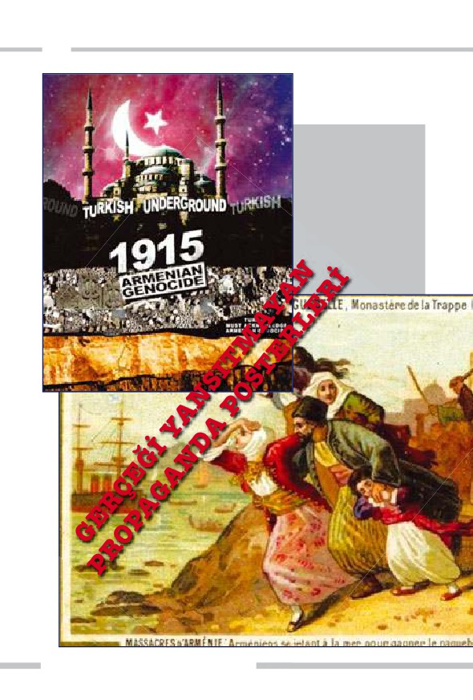
462
Günümüzde süregelen Er-
meni meselesi, çeşitli pro-
paganda posterleri ve çi-
zimleriyle, sistemli
yapılan provokasyonlarla
tüm dünyaya empoze
edilmiştir. Bu kara propa-
gandanın mimarı, İngiliz
derin devletidir.
ÜST AKIL İNGİLİZ DERİN DEVLETİNİN İÇYÜZÜ
ADNAN HARUN YAHYA
I. Dünya Savaşı'ndan sonra Wellington House'un çalışmaları ile ilgi-
li bilgileri içeren dokümanlar yakılarak imha edilmiştir. Bu durum
oldukça şüphelidir; keza İngiltere, tarih konusunda oldukça düzenli bir
arşive sahiptir ve tarihi bilgiler genellikle bu kaynaklardan sağlanmakta-
dır. Fakat konu Wellington House yayınlarına gelince, "her nedense"
onların imhası gerekmiştir. Neyse ki, I. Dünya Savaşı sırasında Welling-
ton House tarafından bazı belgeler, propaganda amaçlı olarak bir kısım
bakanlık ve kuruluşlara dağıtılmıştır. Şu an Wellington House yayınları
hakkında bilinenler, elde kalan bu sınırlı belgelere dayanmaktadır. Bu
yayınlar arasında, "Türklerin; Musevileri, Slavları, Arnavutları, Arapları
ve özellikle Ermenileri nasıl katlettiği" yolunda sahte iddialar içeren 40'a
yakın kitap bulunmaktadır.228
Arnold Toynbee, savaştan sonra muhabir sıfatıyla Tür-
kiye'ye gelmiş, çeşitli bölgelerde incelemelerde bulunmuş ve
savaş döneminde Türklerin verdiği kayıplarla yüz yüze gel-
miştir. Fikirleri tümüyle değişmiş, Mavi Kitap'ın propagan-
da amaçlı olarak yazılmış bir iftira kitabı olduğunu itiraf
etmiş ve bu defa Türk halkı hakkında olumlu görüş belirten
kitaplar yazmıştır. Fakat iftiralarla dolu Mavi Kitap bugün
hala güncelliğini korumaktadır.
2005 yılında Türk Hükümeti, ana muhalefet partisi ile
bir araya gelerek, İngiliz Hükümeti'nden, Büyük Britanya'nın
Mavi Kitap ile ilgili olarak özür dilemesini talep etmiştir.
Belirtilen gerekçeler; I. Dünya Savaşı sırasında bu kitapta
geçen asılsız iddialarla kara propaganda yapılması, söz konu-
su kitabın Bryce komisyonu tarafından derlenmiş olduğu ve
Toynbee'nin dahi daha sonra Mavi Kitap'ın bir anti-Türk
propagandası amacıyla kasıtlı olarak yazıldığını itiraf etmesi-
dir. İngiliz Hükümeti, aynı dönemde Almanya'ya karşı yap-
mış olduğu kara propagandadan ötürü özür dilemiş, fakat bu
463
464
özrü Türk Hükümeti'ne hiçbir zaman yöneltmemiştir. Söz konusu rapor-
da, bu durum da belirtilmiş, Almanya'dan dilenen özür ile Wellington
House'un bir propaganda kurumu olduğunun kabul edildiğini, fakat asıl
özür dilenmesi gereken Türk Hükümeti'ne yönelik böyle bir girişimde
bulunulmadığı belirtilmiştir.229
Ancak tüm bu girişimlere rağmen ne
böyle bir özür gelmiş ne de Mavi Kitap bir kısım kesimler tarafından
geçerliliğini yitirmiştir.
Daha önce de belirttiğimiz gibi, Ermeni meselesi, İngiliz derin dev-
letinin Türklere karşı kullanmak üzere kurguladığı büyük bir oyundur.
İngiliz derin devletinin, Osmanlı'yı parçalama planının henüz yeterince
sonuca ulaşmadığı ve Türkiye toprakları üzerinde aynı politikayı sürdür-
düğü unutulmamalıdır. İşte bu nedenle, Türkiye'yi güçsüzleştirmek, par-
çalamak ve himaye altına almak isteyen İngiliz derin devleti, Ermeni
meselesi senaryosundan hiçbir zaman geri adım atmayacak ve bu konu-
da yaptığı kara propagandalarını hiçbir zaman sonlandırmayacaktır.
Daha önce de belirttiğimiz gibi, bu oyuna verilecek en büyük cevap
Ermenilerle dostluk ve kardeşlik bağlarımızı güçlendirmektir.
Türklerin kara propagandaya maruz kaldığı bir dönemde, olaylara
şahit olan ve gerçekleri gizlemeyen cesur kişiler de vardır. Ermeni olayla-
rı sırasında bölgede bulunan bir Fransız subayın açıklamaları şöyledir:
Bizi eşkıyalık hikayeleriyle aldattılar. Gerçekte Ermeni katliamı
olmadı... Özsavunma durumundaki Türkler ciddi önlemler almak
zorunda kaldılar... Savaşan bir ordu için en yüce ilke olan ülkeyi kur-
tarma çabası Türklerin tepki vermelerini gerektiriyordu. Biz kandı-
rıldık. Türkler iyi insanlar. Katliamlar, bizim düşüncemizi çelmek ve
bizi Osmanlılara karşı kışkırtmak için uydurulmuş efsanelerdir.230
Yine Fransız yazarlardan Claude Farrère, İngiliz derin devletinin
etkisiyle Türkleri kötüleme kervanına katılan Fransız basının tutumunu
eleştirmiş ve Türk gençlerine bir mesaj iletmiştir:
ÜST AKIL İNGİLİZ DERİN DEVLETİNİN İÇYÜZÜ
ADNAN HARUN YAHYA
Türkler ve Ermeniler, yüzyıllarca
bir arada yaşamış iki millettir.
Kaynaşmış, bir bütün olmuşlar-
dır. Bu birlikteliği bozan İngiliz
derin devleti olmuştur.
(Yanda) Osmanlı'da bir Ermeni
ailesi
Türkler kurşundan korkmaz... Fakat ben Türk gençliğine hitap edi-
yorum. Onlar düşmanla yalnız savaş meydanlarında çarpışılmadığı-
nı bilmelidir. Bazen ordularınkinden önemli bir mücadele vardır:
Siyasi mücadele. Türklerin düşmanları Avrupa kamuoyunu yanılt-
maya, kandırmaya çalışıyorlar... Bu propagandaya karşı gözlerinizi
açınız...231
Osmanlı'nın içinde dahi İngiliz derin devletinin Türk karşıtı propa-
gandalarına destekçi olan kişiler varken, bu apaçık manzarayı dile getire-
bilen duyarlı yabancıların bulunması elbette güzeldir. Bu durum, burada
yapılan eleştirilerde, ülkelerin veya halkların tümünü değil, onun içinde
yapılanan mafyavari derin odakların sorumlu tutulduğunu gösteren
önemli bir delildir. Halklar; mazlumdur, masumdur ve her daim dostu-
muzdur. İngiliz derin devletine yöneltilen eleştiriler de söz konusu oyun-
ları deşifre etmek, yapılanların mantıksızlığını anlatmak ve bu kişi ve
kurumları doğru yola ulaştırabilmek içindir.
465
466
Wellington House'un ABD Üzerindeki Etkisi
İngiliz derin devleti, I. Dünya Savaşı sırasında Almanya'yı Ameri-
ka'ya bağlayan telgraf kablosunu kesmişti. Bu nedenle Amerikan halkı
bütün haberleri, sadece İngiliz kaynaklarından ve İngilizlerin yorumla-
rından takip edebiliyordu. Avrupa'da bulunan Amerikalı gazetecilerin
ilettikleri haberler ise yine İngilizler tarafından ciddi şekilde sansüre
uğruyordu. Amerikan yönetimi kısmen bundan bilgi sahibi olsa da Ame-
rikan halkının tüm bunların İngiliz derin devletinin yürüttüğü propa-
gandanın bir parçası olduğundan haberi
yoktu. İngiliz derin devletinin bu yön-
temle yaptığı propaganda ciddi
şekilde derin devletin lehi-
ne olmuştu.
Sam Amca ve
John Bull'un
dünya hakimi-
yetini gösteren
propaganda
çizimleri, I.
Dünya Sava-
şı'nda sıklıkla
kullanılmıştır.
İngiliz derin
devleti ABD'yi
kendi hakimiye-
tine almış, dile-
diği gibi yönet-
miştir.
ÜST AKIL İNGİLİZ DERİN DEVLETİNİN İÇYÜZÜ
ADNAN HARUN YAHYA
Söz konusu propaganda kampanyasının başındaki isim Sir Gilbert
Parker çalışmalarının etkilerini şöyle özetlemişti:
Aslında Birleşik Devletler'de olağanüstü yay-
gın olan, fakat bir organizasyon olduğun-
dan kendisinin dahi haberi olmadığı bir
organizasyonumuz var. Bu, kişisel ilişki-
ler ve gönüllü çalışmalar ile işletilen ve
zaman geçtikçe daha da hevesli ve
kararlı olarak gelişen bir organizasyon...
Birleşik Devletler'in hiçbir yerinde olum-
suz tepki alınmadığına dikkat edilmelidir;
Amerikan halkının gözünde çalışmalarımı-
Sir Gilbert Parker
zın sessiz ve derin tabiatı, saf bir yurtseverlik
ve atılganlık olarak gözükmektedir.232
Görülebildiği gibi İngiliz derin devletinin "derin" ve bir o kadar da
aldatıcı propagandası, Amerikan halkı üzerinde beklenen etkiyi yarat-
mıştı. İyi niyetli Amerikalılar, bu propaganda sonucunda haince planları
görememiş, İngiliz derin devletinin istediği yöne doğru yönlendirilmiş-
lerdir.
Bu dönemde ortaya atılan, Mavi Kitap'ın yazarlarından biri olan
Bryce'ın yazdığı rapor, Amerikalıları Türk karşıtı hale getirmek için özel
olarak kurgulanmıştır. Bryce Raporu denilen bu çalışmada Bryce'ın
Türklere karşı sarf ettiği çirkin sözler şu şekildedir:
Türk Hükümeti son bin beş yüz yıldır insanlığa bu derecede etkisi
bulunanların en kötüsüdür. Geçen yüzyılda seçkin bir Avrupalı tarih-
çinin söylediği gibi "(Türkler), ele geçirdikleri yerleri harap eden bir
soyguncular çetesinden başka bir şey değildir". Hiçbir zaman mede-
nileşememişler, uygar bir idarenin icra etmesi gereken prensiplerden
hiçbirini uygulayamamışlardır. Yıllar ilerledikçe iyiye gitmeleri bek-
467
468
lenirken, onlar daha da kötü olmuşlardır. Türkistan steplerinden Batı
Asya'ya gelirken barbardılar, yüz otuz yıl önce Edmund Burke de
(İngiliz siyasetçi ve yazar) onları böyle tanımlamıştı ve devletleri,
bugün de acımasız ve barbar karakterini muhafaza ediyor.233
Bryce, daha sonra The Treatment of Armenians in the Ottoman
Empire (Osmanlı İmparatorluğu'nda Ermenilere Yapılan Muamele)
isimli bir kitap yazmış ve karalama kampanyasına buradan devam etmiş-
tir. Tarihçi McCarthy, bu kitabın gerçek yazarının Toynbee olduğunu
belirtmiştir. Yine McCarthy'nin analizlerine göre, söz konusu Ermeni
raporunda görülen tüm teknikler, daha önce Belçika'daki Alman vahşe-
tini anlatan ve sonradan yalanlanan raporda kullanılanların aynısıdır. Bu
rapor da tıpkı Alman raporunda olduğu gibi güvenilir olmayan kaynak-
lardan toplanmış anonim bilgilere göre hazırlanmıştır ve raporda adı
geçen kişilerin gerçekten bunları yazdıkları ya da söylediklerine dair hiç-
bir kayıt ve kanıt yoktur.234
Bryce'ın Alman raporunda geçen vahşet ifadelerinin hiçbirinin ger-
çek olmadığı zaman içinde anlaşılmıştır. Söz konusu Alman Raporu için
yazar H. C. Peterson söyle söyler:
(Bryce Raporu) yargısız infazın en uç örneğidir. Esasen raporun ken-
disi savaşta gerçekleştirilmiş en kötü vahşettir.235
İşte aynı yöntem, Türklere karşı da kullanılmış; aynı karalama kam-
panyası aynı şahıslar tarafından aynı yöntemlerle Türklere de uygulan-
mıştır. Almanya'ya bu haksızlık yüzünden İngiltere tarafından özür
yöneltilmiş, fakat Türkiye, hala aynı karalama kampanyasıyla muhatap
olmak zorunda bırakılmıştır.
İngiliz derin devleti, Amerikan gazetelerine de Bryce Raporu'nun
önemli kısımlarını yayınlamaları için dağıtmıştır. McCarthy, bu konuyu
şu şekilde aktarır:
ÜST AKIL İNGİLİZ DERİN DEVLETİNİN İÇYÜZÜ
ADNAN HARUN YAHYA
Gilbert Parker'in belirttiğine göre The New York Times, Philedelphia
Public Ledger ve Chicago Herald gibi gazeteler bu Ermeni dehşet
öykülerine fazlasıyla yer ayırıyorlardı.236 Current History adlı New
York Times'ın çıkardığı aylık dergi, Bryce Raporu'nun uzun giriş
bölümünü doğrudan veren ve raporun sözde Türk vahşetiyle ilgili en
korkunç kısımlarını özetleyen Türk karşıtı makaleleri orta sayfa seri-
leri olarak veriyordu. New York Times gazetesi, üç sayfasını Bryce
Raporu'nu aktarmak için kullanmıştı. New Republic, Bryce'ı, kay-
naklarının seçimi ve kanıtları için övmüştü, ancak bu kaynakların
çoğunun anonim olduğundan hiç bahsetmemişti. Aksine, raporun
özeti verilmiş ve Türkler kınanmıştı. Diğer gazete ve dergiler de aynı
şeyi yapmış raporun özetini ya da rapordan alıntıları yayınlamıştı.237
Görülebildiği gibi İngiliz derin devletinin yayınlarında, hiçbir kay-
nak gösterilmemiş, Türkler haksız yere hedef alınmış ve bu sahte yayın-
lar, Amerikalılara körü körüne servis edilmiştir. Şu bilinmelidir ki, İngi-
liz derin devletinin propagandalarının asıl hedeflediği kitle, I. Dünya
Savaşı'ndan ve Ortadoğu gerçeğinden habersiz olan kitledir. O dönemde
Amerikan ve İngiliz halkının okuduğu haberlerin hemen hepsi, sözde
misyonerlerin ve İngiliz derin devlet propagandacılarının yazdıklarından
ibarettir. İngiliz ve Amerikan halkları, o tarihlerde bu yazılara zorla inan-
dırılmışlardır. Bu sahte propagandanın halen devam ettirilmesi, o
dönemde Türklere yapılan haksızlığı tüm detaylarıyla açığa çıkaran
Amerikalı tarihçi McCarthy tarafından şaşkınlık dolu sözlerle ifade edil-
miştir:
Daha şaşırtıcı bir gerçek ise, Türklere karşı yapılan bu propagandaya
ve niteliklerine, dönemi inceleyen günümüzün akademik kitapların-
da hiç değinilmemesidir. I. Dünya Savaşı'ndaki İngiliz propagandası-
nı irdeleyen her ciddi akademik çalışma, o yıllarda Almanlara karşı
yapılan propagandanın, zafer uğruna, gerçeğe yönelik çok dikkatli
hazırlanmış bir saldırı olduğunu belirtir ve itiraf eder. Ancak aynı
469
470
akademik çalışmalar, aynı zamanda Almanlara karşı bir saldırıyı
ihtiva etmediği sürece, Türklere yönelik İngiliz propagandasını asla
dikkate almazlar. İngiliz propagandasını hazırlayanlar Almanlara
ne yaptılarsa Türklere de aynısını uygulamışlardır, ancak bugün bu
kimsenin dikkatini çekmemektedir. Almanlara karşı yapılan propa-
ganda sonradan kınanmıştır, ancak Türklere atılan çamur bugün
hala sürmektedir. Bryce'ın ünlü Ermeni Raporu söylenilenlerin gerçek
olduğu iddiasıyla tekrar tekrar basılmaktadır. Aynı kişinin Alman
Raporu, kütüphanelerin tozlu raflarına kaldırılmışken, Ermeni
Raporu tam anlamıyla "güvenilirliği kabul edilmiş bir kaynak"
olarak kamuoyunda yerini almıştır. I. Dünya Savaşı üzerine yapı-
lan kaynakçalarda ya da soykırımın konu alındığı yayınlarda, ne
için yazıldığına bakılmaksızın, bu raporlara 483 defa atıfta bulu-
nulur. Eleştirel tarihçiliğin genel kuralları ki bu kurallar kaynak-
ların doğrulanmasını ister, asla uygulanmamıştır. Aslında
Osmanlı Ermenileri için yazılan Bryce Raporu, Almanlar için
yazılan Bryce Raporu'nun bulunduğu çöp kutusuna atılmalıdır.
Bu rapor, Orta Doğu'nun tarihi için değil propagandanın tarihi için
güvenilir bir kaynaktır.238
Bir Propaganda Muharebesi: II. Dünya Savaşı
Tıpkı I. Dünya Savaşı'nda olduğu gibi II. Dünya Savaşı'nda da İngi-
liz derin devletinin propaganda gücü etkili olmuş ve savaş, asıl olarak bu
sebeple kazanılmıştır. İngiliz derin medyası, başta BBC içindeki uzantıla-
rı ile, savaş sırasında ve sonrasında sürekli görev başında olmuştur. İşin
ilginç yanı, söz konusu kurum hala, İngiliz derin devletinin adeta bir pro-
paganda kolu olarak görevine devam etmektedir.
Savaş sırasında propaganda bakanlığı kuran ve yalanlarla dolu pro-
paganda yöntemlerini iyi kullanmış olan Alman Nazi Partisi bile İngiliz
derin devletinin o dönemde yürüttüğü propagandanın yanına dahi yak-
laşamamıştır. Hitler'in propaganda bakanı Joseph Goebbels, Yalan Maki-
ÜST AKIL İNGİLİZ DERİN DEVLETİNİN İÇYÜZÜ
ADNAN HARUN YAHYA
Hitler'in propaganda
bakanı Joseph Goebbels
nası başlıklı makalede, dönemin derin devlet elemanlarından Başbakan
Churchill için şu ifadeleri kullanmıştır:
Churchill söylediği yalanları sık sık tekrarlıyor, sonunda kendisi de
bunlara inanıyor. Churchill, I. Dünya Savaşı'nda da İngiliz propa-
gandasında etkili rol oynuyordu. O zaman söylediklerinin gerçek dışı
olduğu sonradan anlaşıldı. İngilizlerin taktiği şuydu: Yalan söyleye-
ceksen büyük söyleyeceksin, sonunda ortaya çıkan gerçekler sizi
gülünç duruma düşürecek olsa bile...239
Savaş dönemleri elbette halkın moralinin yüksek tutulması gereken
dönemlerdir. Ancak I. ve II. Dünya Savaşları'nda İngiliz derin devletinin
etkili propaganda politikası ve basını kullanış şekli, İngiliz derin devleti-
nin istediğinde basın yayın gücünü dilediği şekilde yönlendireceğine ve
471
472
yalanları gerçek gibi gösterebileceğine önemli bir delildir. Nitekim, savaş
sonrası yıllarda İngiliz derin devletinin özellikle basın üzerindeki yön-
lendirmeleri olduğu gibi devam etmiş, belli ülkelere yönelik kötüleme
politikası etkin bir şekilde kullanılmış ve bağımsız ülkelerde iç savaşlar,
isyanlar ve darbeler bu yollarla başlatılmıştır.
İngiliz derin devleti, büyük ölçüde bu politikanın etkisiyle başka
ülkelerde hakimiyet kurmuş ve devlet yönetimleri bu gücün etkisiyle
derin devlet kurumlarına gebe kalmıştır. II. Dünya Savaşı sırasında,
İngiltere'nin savaşı kaybetmek üzereyken aniden savaşı kazanır duruma
gelmesinin vesilelerinden biri olan propaganda silahı, geçmişten bugüne
İngiliz derin devletinin en önemli ve en vurucu silahlarından biri olmuş-
tur.
ÜST AKIL İNGİLİZ DERİN DEVLETİNİN İÇYÜZÜ
ADNAN HARUN YAHYA
İngiliz derin devleti, propa-
ganda silahını II. Dünya Sa-
vaşı sırasında da kullanmış,
provokatif yalan haberler
ABD'nin savaşa girmesini
sağlamış ve İngiltere, sava-
şın galibi olmuştur.
473
474
Hala Devam Eden Kirli Propaganda
I. ve II. Dünya Savaşları sırasında gerçekleşen İngiliz derin devleti-
nin karşı propagandaları, farklı yöntemlerle olsa da bugün hala devam
etmektedir. Wellington House'un yürüttüğü propaganda çalışmasının
etkileri yalnızca bu dönemle sınırlı kalmamış, günümüze kadar süregel-
miştir. Wellington House'un I. Dünya Savaşı boyunca yaptığı propagan-
da yayınları düzenli ve sistemli olarak tekrar tekrar basılmış, birçok eser-
de ve araştırmada bunlardan alıntılar yapılmıştır. Bu kitapların çoğu
bütün olarak internet sitelerine kopyalanmış ve dünya çapında yayılmış-
tır.
Bugün hala, Wellington House'un kitapları Avrupa ve Amerika'da-
ki okul ve üniversitelerde, öğrencilere kaynak tarih kitapları olarak öne-
rilmektedir. Türkiye ve Ermeniler konusu, Wellington House'un özellik-
le önem verdiği konulardan biri olarak kurumun belli başlı yayınları ara-
sında yer almaktadır. Toynbee'nin kitapları ve hayali bir kişilik olarak
öne sürülen Ghusei'in kitabı da dahil olmak üzere bu yayınlar, tarihçiler
ve bir kısım Ermeni bilim adamı için temel tarihi dayanak teşkil etmek-
tedir. Mavi Kitap gibi, I. Dünya Savaşı'nın gerçek dışı propaganda mal-
zemelerinin yeni baskıları yapılarak, bütün bu yalanlar sanki tarihi ger-
çeklermiş gibi çeşitli ülkelerde yayınlanmaktadır. İngiliz derin devletinin
sinsi propagandası, sanki hiçbir şey olmamış, yapılan bu sahtekarlık anla-
şılmamış gibi sürekli gündemde tutulmaya çalışılmaktadır. Amaç, en
azından, bu kara propagandaların farkında olmayanları aldatabilmektir.
Dünya kamuoyunun büyük bir kesiminin beyinleri de bu düzmece
hikayelerle yıkanmaya devam etmektedir. İnsanların bu kaynaklardan
öğrendikleri ise gerçekler değil, İngiliz derin devletine bağlı propaganda
ofisinin kendilerinden inanmalarını istediklerinden ibarettir.
Söz konusu dönemde, İngiliz derin devletinin iftiralarının kapsamı
ve boyutları o derece büyüktür ki, bizzat İngilizlerin içinden bile bunca
aldatmacaya isyan eden kimseler çıkmıştır:
ÜST AKIL İNGİLİZ DERİN DEVLETİNİN İÇYÜZÜ
ADNAN HARUN YAHYA
İngiliz derin devle-
ti, daima sözde
barbarlığı yok
etme adına ortaya
çıkmış; fakat elini
attığı her yere
daha korkunç bir
vahşet getirmiştir.
İngiliz Dışişleri Bakanı Chamberlain, 1925 yılının Aralık ayında
Avam Kamarası'nda yaptığı bir konuşmada bütün bunların bir "pro-
paganda yalanı" olduğunu itiraf etmek zorunda kaldı. Savaştan dört
yıl sonra Belçikalılar bu yayınlarda yer alan iddiaların tamamının
gerçek dışı olduğunu açıkladılar. İngiliz Milletvekili Arthur Pon-
sonby, 1928 yılında bir kitabında I. Dünya Savaşı sırasında İngiliz
Propaganda servisleri tarafından üretilen gerçek dışı haberleri ayrın-
tılı açıkladı... 1938 yılında İngiliz yazar ve diplomat Harold Nicolson,
Parlamento'da yaptığı bir konuşmada, "I. Dünya Savaşı'nda lanet
edilecek derecede yalan söyledik" dedi.240
Mavi Kitap'taki bilgilerin çoğu, I. Dünya Savaşı yıllarında sadece 26
ay İstanbul'da Amerika'nın İstanbul Büyükelçiliği'ni yapmış olan Henry
Morgentau'dan kaynaklanıyordu. Morgentau kitabında Osmanlı'nın
Ermenilere karşı büyük zulümler yaptığı yalanını ortaya atmıştı. Asso-
ciated Press yıllar sonra Morgenthau'nun kitabındaki bu iddialar için
gerçek dışı açıklamasını kullanmıştır. Amerikalı profesör Heath W.
Lowry ise bu kitap için "ham, yarı gerçekler ve düpedüz yalanlarla dolu"
ifadelerini sarf etmiştir.241
475
476
BODRUM
ÜST AKIL İNGİLİZ DERİN DEVLETİNİN İÇYÜZÜ
ADNAN HARUN YAHYA
... Allah'in rahmetinden umut kesmeyin.
Çünkü kafirler topluluğundan başkasi
Allah'in rahmetinden umut kesmez.
(Yusuf Suresi, 87)
477
478
ÜST AKIL İNGİLİZ DERİN DEVLETİNİN İÇYÜZÜ
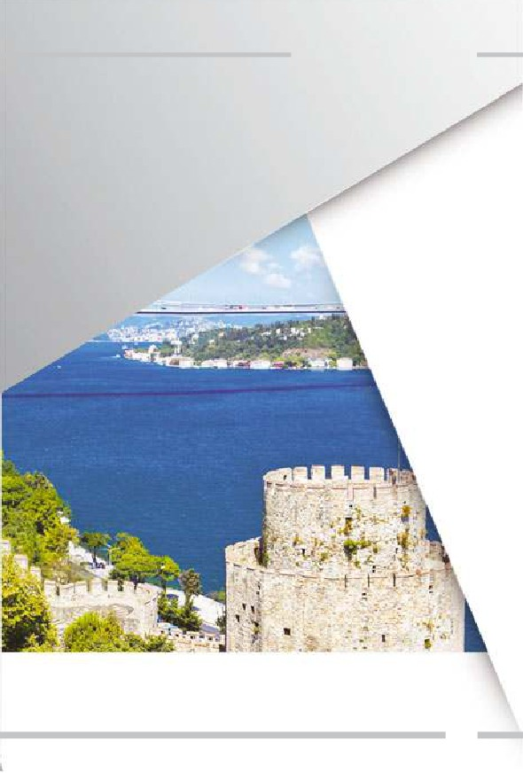
ADNAN HARUN YAHYA
İstanbul'un
İşgalİ
479
480
İstanbul Neden
Önemlİ?
ngiliz derin devletinin, Osmanlı ve Türk toprakları hakkındaki plan-
larının ilk yazıya döküldüğü eser, 5 Eylül 1876'da basılan Bulgarian
İ
Horrors and Question of East (Bulgar Korkuları ve Doğu Sorunu) ad-
lı kitaptır. Bu eserin yazarı William Ewart Gladstone, 4 ayrı dönemde top-
lam 15 yıl İngiltere başbakanlığı yapmıştır. İngiliz Kraliçesi'ne Danışma
Kurulu olarak görev yapan ve İngiliz derin devletinin önemli kurumla-
rından biri olan Privy Council'deki üyeliğini 57 yıl boyunca sürdürmüş-
tür. Kitabın ilerleyen bölümlerinde detaylı tanıtacağımız Lord Curzon,
Lloyd George ve Horace Rumbold gibi işgal dönemi siyasetçileri de bu
konseyin üyesidir. Gladstone bu 64 sayfalık kitapta Doğu Sorunu adı al-
tında Osmanlı'nın parçalanma planını anlatmıştır.
ÜST AKIL İNGİLİZ DERİN DEVLETİNİN İÇYÜZÜ
ADNAN HARUN YAHYA
Gladstone kitabında, imparatorlukları içten dağılmaya yöneltecek
gizli taktikler vermiştir. Nitekim, kitabın yayınlanmasının hemen ardın-
dan İngiliz politikacılarda Osmanlı azınlıkları sevgisi baş gösterecektir.
Bağımsızlık isteyen azınlıklar desteklenecek ve Osmanlı aleyhine tahrik
edilecektir. Gladstone Bulgar, Lloyd George Yunan ve Ermeni, Lord Cur-
zon Kürt ve Churchill ise Arap dostu görünümünde ortaya çıkmışlardır.
Şunu belirtmeliyiz, dünya liderlerinin çeşitli ülkelerle, etnik gruplarla dost-
luk kurması elbette güzeldir ve isteyeceğimiz bir şeydir. Fakat burada be-
lirtilen dostluklar, İngiliz çıkarlarını korumak ve özellikle Osmanlı'yı çö-
kertmek amacıyla oluşturulmuş sözde dostluklardır. Menfaat bitince söz
konusu dostluklar da daima bitmiş ve kullanılan piyonlar hemen har-
canmıştır.
Gladstone'un kitabı tam bir kara propaganda örneğidir. (Kitapta ge-
çen ifadelerden necip Türk Milletini tenzih ederiz) Söz konusu kitapta
Türkler, "insanlığın dev bir insanlık dışı örneği" olarak tanımlanmakta ve
dünyadan tasfiye edilmeleri gerektiği vurgulanmaktadır. Kitapta Glads-
tone, Osmanlı hükümetine yönelik olarak, "hiçbir hükümetin işlemediği
kadar günah işlemiş, hiçbir hükümet onun kadar günahkarlığa saplanma-
mış ve hiçbiri onun kadar değişime kapalı olmamıştır" iftiralarını ortaya
atmıştır. Bu iftiraların tek sebebi, Gladstone'un gerçekte Osmanlı'yı ta-
mamen parçalamak isteyen İngiliz derin devletinin en güçlü adamların-
dan biri olmasıdır.
Çanakkale Savaşı'yla Başlayan Derin Plan
İngiliz derin devleti Osmanlı'yı bölme planının son darbesini Ça-
nakkale çıkarması ile gerçekleştirmeye çalıştı. Fakat Çanakkale Savaşı, de-
rin devletin hiç beklemediği bir kahramanlık örneği olarak tarihe geçti.
Avrupa'nın yıllardır "hasta adam" olarak küçümsediği Osmanlı ordusu, iki
büyük kuvvetin tam güçleriyle saldırdıkları Çanakkale Boğazı'nı canı pa-
hasına korudu. Anzaklardan, İngilizlerden, Kuzey Afrikalılardan, Hintli-
481
482
lerden, Fransızlardan oluşan müttefik ordularını, geri çekilmek zorunda
bıraktı. Bu askeri başarı, İngiliz derin devletinin bölme planlarını 1918'e
yani Mondros Mütarekesi'nin ardına bıraktı.
Oysa Osmanlı Devleti, sadece 4 yıl evvel, uzunca bir dönem yöneti-
mi altında olan Balkan devletlerinin orduları karşısın-
da ağır bir yenilgi almıştı. Öyle ki, Bulgar ordusunun
İstanbul'u işgal etmesini tifo ve kolera salgını engel-
lemişti. İtilaf orduları da, bu yenilgiyi göz önünde
tutup Çanakkale Savaşı'nın çok kısa sürede zaferle
biteceğine emindi. Fakat Türk ordusu 250 bin şe-
hit vermesine rağmen Çanakkale kapısını açmadı.
ÜST AKIL İNGİLİZ DERİN DEVLETİNİN İÇYÜZÜ
ADNAN HARUN YAHYA
18 Mart 1915 tari-
hinde gerçekleşen
deniz muharebesinde
İngiliz ve Fransız sa-
vaş gemileri etkisiz
hale getirilmiştir.
Türk ordusu, 250 bin
şehide rağmen Ça-
nakkale'de geçit ver-
memiştir.
483
484
İngilizler ve Anzaklar Gelibolu Yarımadası'nda.
Kıyılarda tutunabilmek için siperler kazan bu askerlere,
Gelibolu'ya çıkma izni verilmemiştir. (1915)
ÜST AKIL İNGİLİZ DERİN DEVLETİNİN İÇYÜZÜ
ADNAN HARUN YAHYA
İstanbul'dan askeri okul öğrencileri gönüllü olarak savaşa gidip burada şe-
hit olmayı göze aldılar. Galatasaray Lisesi 1915 ve 1916 senelerinde hiç me-
zun veremedi. 1917'deyse mezun sayısı sadece 5'di. İstanbul Lisesi, sade-
ce 19 Mayıs 1915 taarruzunda 50 öğrencisini şehit verdi. Vefa Lisesi ve Ça-
pa Erkek Öğretmen Okulu da aynı yıllarda hiç mezun veremedi. Balıke-
sir Lisesi ve Balıkesir Erkek Muallim Mektebi 1914-1918 yıllarında sade-
ce 2 mezun verdi. Trakya'daki birçok okulun, babaları Balkan savaşında
şehit düşen öğrencileri, gönüllü olarak Çanakkale Savaşı'na gitmiş ve ora-
da şehit olmuşlardı. Sivas, Trabzon, Konya, Erzurum ve Kastamonu lise-
leri de 1916-1917 mezunlarını Çanakkale'de toprağa vermişlerdi. Bu okul-
lu neslin kaybı, etkisini hem Kurtuluş Savaşı'nda hem de cumhuriyetin ilk
yıllarında gösterecekti. İngiliz derin devletinin planları henüz 18 yaşını bi-
(Sol altta) Çanakkale Sa-
vaşı'nda kahramanlık
destanı yazan Seyit On-
başı. (Altta) Seyit Onba-
şı'ya ait temsili bir resim.
485
486
le bulmamış masum Türklerin şehit kanı ile engellen-
mişti. Bugün PKK terörüne şehit verdiğimiz askerleri-
miz, subaylarımız, polislerimiz, öğretmenlerimiz de bu
tablonun benzerini oluşturmaktadır. Allah vatanımızı
şehitlerimizle bereketlendirmiştir. Anadolu toprakları
şehit kanıyla sulandığı için vatan olmuştur.
I. Dünya Savaşı'nın ardından imzalanan Mondros
Mütarekesi ile savaş Osmanlı Devleti açısından sona er-
mişti. Mütareke aynı zamanda İngiliz derin devletinin
ÜST AKIL İNGİLİZ DERİN DEVLETİNİN İÇYÜZÜ
ADNAN HARUN YAHYA
Çanakkale Savaşı'nın çocuk kahraman-
ları, Türk olmanın ne demek olduğunu
tüm dünyaya göstermişlerdir. Galata-
saray Lisesi, 1915 ve 1916 yıllarında tek
bir mezun bile verememiştir.
parçalama planının uygulanmasına da öncü oldu. Mütareke'nin "İtilaf
Devletleri, güvenliklerini tehdit edecek bir durumun ortaya çıkması ha-
linde herhangi bir stratejik yeri işgal etme hakkına sahip olacaktır." mad-
desi gerekçe gösterilerek İngiltere'nin "Doğu Sorununa Çözüm" olarak
adlandırdığı parçalama planı yürürlüğe girdi. Bu planın en önemli hede-
fi de İstanbul'un işgalidir. İstanbul, I. Dünya Savaşı'ndan yenik çıkan İt-
tifak Devletleri başkentleri arasında, savaş sonrası işgal edilen tek baş-
kentti. İstanbul'un işgali ilk olarak Lord Curzon tarafından ortaya atıldı.
242
487
488
İngiliz Derin Devleti İstanbul'un İşgaliyle
Birçok Hedefi Yerine Getirecekti
Çanakkale Savaşı'ndaki Türk kahramanlığı, İngiliz derin devletinin
uluslararası arenada küçük düşmesine sebep olmuştu. İslam başkenti iş-
gal edilerek yaşanan yenilginin intikamı alınacaktı. Çanakkale Savaşı'nı
planlayan, ilan eden ve uygulamaya koyan siyasetçilerin tamamı İngiliz de-
rin devletinin emirleri doğrultusunda hareket ediyordu ve Çanakkale ye-
nilgisi sonrası İngiliz kamuoyunda saygınlıklarını kaybetmişlerdi. İşgal
maddesi ile bu kadrolar tekrar halkı etkileyecek konuma gelmeye çalıştı-
lar. Ana strateji buydu.
İstanbul, Osmanlı başkenti olmasının yanı sıra, İslam dünyasının
başkenti ve Müslümanların Halifesi'nin yaşadığı şehirdi. İngiliz derin dev-
letine göre, işgal edilmiş bir başkent, başta Hindistan olmak üzere İngiliz
iktidarı altında yaşayan Müslümanlara karşı bir gövde gösterisi olacaktı.
İngiltere aleyhtarı ayaklanmalar ya da bağımsızlık hareketlerinin önüne
set çekecekti. Bu sayede Müslümanların bir bayrak altında birleşmesi de
engellenecek ve İngiliz hegemonyası bu topraklarda güçlendirilecekti.
İstanbul'un işgal kararı, iki boğazın kontrolünü de beraberinde ge-
tirdi. İstanbul Boğazı'nda demirli İngiliz donanması Marmara'nın çıkışı-
nı kontrol ediyordu. Çanakkale Boğazı bölgesi de İngiliz askerlerinin
kontrolü altına girdi. Artık Marmara Denizi'ne dolayısıyla da
Karadeniz'e giriş ve çıkış İngiliz kontrolündeydi. Bu saye-
de hem Rus donanmaları kontrol altında tutulabile-
cekti, hem de Rus ticareti vergilendirilebilecekti.
Bu, yeni kurulan Bolşevik Rusya üzerinde strate-
jik bir üstünlük demekti. Rusya'nın, Avrupa ya-
kınlarındaki tek limanı olan St. Petersburg ya
da Sovyet dönemi ismiyle Leningrad limanı 6
ay boyunca donmuş durumda kalıyordu. Do-
ÜST AKIL İNGİLİZ DERİN DEVLETİNİN İÇYÜZÜ
ADNAN HARUN YAHYA
nanma için coğrafi ve stratejik altyapıya sahip değildi. Bu nedenle Ruslar,
uzun zamandır sıcak denizlere inme planı gütmekteydi. Her ne kadar Ka-
radeniz, Rus gemilerinin kontrolünde olsa da, boğazları kontrol eden dev-
let bu hakimiyeti esaret altına alıyordu. İngilizler, İstanbul ve boğazları iş-
gal ederek devrim sonrası Rusya'yı da elinin altında tutmayı planlıyordu.
İngiliz derin devleti, Bolşeviklerin, Türk bağımsızlık hareketi ile ya-
kınlaşmasını da mercek altına almıştı. Rusların tekrar güçlenip emperya-
İstanbul Boğazı'nda itilaf devlet-
leri donanması ve şehri havadan
kontrol eden Fransız uçağı. (üstte)
İstanbul'un işgali sırasında Bo-
ğaz'daki İngiliz donanması. (altta)
489
490
list bir politika gütmeye başlamasını büyük bir ihtimal olarak görüyordu.
Onlara göre boğazların ve İstanbul'un İngiliz kontrolünde olması bu ge-
nişlemenin önüne set çekebilecekti.
İstanbul'un işgali ile İngiliz derin devletinin bir başka amacı da Ha-
lifenin sömürgeler üzerindeki etkisini kırmak ve Müslüman dünyasına
artık padişahın yani Halifenin ve tüm Osmanlı Devleti'nin İngiliz kont-
rolüne geçtiğini göstermekti. Böylece Osmanlı'ya sadık kalmak isteyebi-
lecek Müslüman tebanın cesareti kırılacak, bölgenin aşiret liderleri, dini
liderler ve azınlık önderleri de artık İngilizlerden korku duyacaklardı. Kı-
saca dosta düşmana, Osmanlı Devleti'nin geri dönüşünün olmayacağı açık
ve sarih bir şekilde ilan edilmiş olacaktı. İşgal, İngiliz İmparatorluğu'nun
gücünün zirvesi demekti. İşgalle hem sömürgelerindeki İslami uyanışı
bastıracak hem de yeni sömürgelerde kolayca yol alabilecekti.
İstanbul'un işgalinin en önemli sembolik mesajı ise Türklerin Avru-
pa'dan çıkartılmasının delili olmasıdır. İstanbul, tarih boyunca her dö-
nemde Avrupa'nın "Doğu Başkenti" olmuştur. Avrupa medeniyetinin ilk
temsilcileri olarak görülen Antik Yunanlar, Venedikliler, Roma İmpara-
torluğu, Ceneviz yöneticileri ve Bizans İmparatorluğu hep bu güzel şehri
mesken edinmişlerdir. 600 yıllık Osmanlı hakimiyeti de Türklerin Avru-
pa devleti olarak kabul görmesini sağlamıştır. Bu nedenle İngiliz derin
devletine göre işgal Türklerin Avrupa'dan sürüldüğü manasına gelecekti.
İngiliz kamuoyu, Osmanlı'nın I. Dünya Savaşı'nda Almanya ile itti-
fak etmesini kendilerine ihanet olarak görüyordu. Oysa daha önce detay-
lı incelediğimiz gibi bu ittifak, zaten İngiliz derin devletinin yönlendir-
mesiyle mecburen gerçekleşmişti. Çeşitli mahfillerde bu sözde ihanetin ce-
zasız kalmaması gerektiği seslendiriliyordu. İngiliz derin devleti, İstan-
bul'un işgali ile Osmanlı Devleti'ne ağır bir ceza vereceğine ve kendince
Türklere bir bedel ödeteceğine inanıyordu. İstanbul'un Türklerin elinden
alınmasının, savaş yenilgisinin en belirgin kanıtı olacağını düşünüyordu.
Böylece İslam dünyasının da artık Türkleri "İslam'ın muzaffer askeri" ola-
ÜST AKIL İNGİLİZ DERİN DEVLETİNİN İÇYÜZÜ
ADNAN HARUN YAHYA
(Üstte) Harbiye-Şişli yolu üzerinde
işgal kuvvetlerinin yürüyüşü
(Altta) İstiklal Caddesi'nde işgal
kuvvetleri
rak görmeye son vereceklerini sanıyordu. İngiliz derin devleti için bu iş-
gal o kadar sert ve küçük düşürücü şekilde yapılmalıydı ki, Türklerin ge-
ri dönülemeyecek bir şekilde tükendiği görüşü hakim kılınmalıydı. İngi-
liz derin devleti, kendi hakimiyet politikası için bunun temel bir gereksi-
nim olduğuna inanıyordu. İngiliz derin devletinin Osmanlı'ya yönelik
hastalıklı zihniyeti tam olarak bu şekildeydi.
Fakat İngilizlerin evdeki bu hesabı Anadolu'nun kapısından döndü.
Mustafa Kemal ve arkadaşlarının önderliğindeki Anadolu bağımsızlık ha-
reketi, tüm dünyaya bir kez daha Türklerin neden İslam'ın muzaffer as-
keri olarak kabul edildiğini gösterdi. Üç sene içinde, I. Dünya Savaşı'nın
galip devletleri, ağır bir yenilgi ile başları önlerinde Anadolu'yu terk et-
mek zorunda kaldılar. Fransızlar, İtalyanlar, Yunanlar ve İngilizler birer
birer yenilgiyi kabul ettiler ve Anadolu'dan askerlerini çektiler
491
492
Avrupa'nın Derİn
Tuzaklarını Altüst Eden
Merkez: İstanbul
ngiliz derin devleti, İstanbul'un, Avrupa güç dengelerini altüst eden
önemli bir merkez olduğunu görmekteydi. Bu nedenle İstanbul,
İ
Boğazlar ve Trakya'nın Osmanlı hükümetinin denetiminde kalma-
ması gerektiğine inanıyordu. İstanbul'a sahip olmayan bir Türk devleti-
nin, artık Avrupa'yı ilgilendiren konularda söz sahibi olma hakkının or-
tadan kalkmış olacağını düşünüyordu.
İngiliz derin devleti, Osmanlı'yı yıkma planını hep farklı amaçların
arkasına sakladı. I. Dünya Savaşı döneminde bu emperyalist projenin
maskesi, azınlık haklarını korumak oldu. İngiliz kamuoyunda, Osmanlı-
ların Hristiyan tebaasına karşı güya acımasız politikalar güttüğü, başta
Ermeniler ve Rumlar olmak üzere Osmanlı topraklarındaki Süryanilerin,
Hristiyan Arapların sözde tehlike altında olduğu propagandası yaygın-
laştı. Bu propagandanın temelini ise Anadolu'nun gerçek sahiplerinin
ÜST AKIL İNGİLİZ DERİN DEVLETİNİN İÇYÜZÜ
ADNAN HARUN YAHYA
Hristiyanlar olduğu ve bu bölgenin Türkler tarafından zorla gasp edildi-
ği iftirası üzerine kurdular. Örneğin, Parlamenter James Bryce, Lordlar
Kamarası'ndaki konuşmasında, "Küçük Asya, Ermenistan, Suriye ve Ara-
bistan'da 1000-1500 yıl önce uygarlıklar bulunduğunu" söylüyordu. "Da-
ha sonra 600 yıl boyunca sözde Türk vahşetinin bu uygarlıkları yok ettiği-
ni" iddia ediyordu. "Tekrar eski uygarlıklarını elde etmeleri için ise onla-
rın bölgedeki temsilcilerine bağımsızlık verilmesine İngiltere'nin yardımcı
olması gerektiği" yalanını savunuyordu. İngiliz derin devleti, İstanbul'un
işgaliyle bu sözde "adaletsiz" politikaların son bulacağı iddiasındaydı. İs-
tanbul'un, Türklerin milli başkenti olmadığı ve şehrin çoğunluğunu gay-
ri Müslimlerin oluşturduğunu iddia eden yazılar İngiliz gazetelerinde sık-
lıkla yer almaktaydı. Oysa 1919 yılındaki nüfus sayımına göre İstanbul'un
%67'si Müslümanlardan oluşmaktaydı. Bu oran gerçekte daha da fazlay-
dı, fakat Müslüman nüfusun bir kısmı Balkan Savaşları ve 1. Dünya Sa-
vaşı'nda cephelere gidip şehit olmuştu.
Dahası azınlık politikaları, İngiliz derin devletinin yaygınlaştırmaya
çalıştığı kanının aksine son derece özgürlükçü ve sevecendi. Azınlık hak-
ları Osmanlı içinde 600 yıl boyunca korunmuştu ve azınlıklar daima Os-
manlı'nın bir parçası olarak yaşamış ve devlet kademelerinde dahi görev
almışlardı. Genellikle sanat ve ticaretle uğraşan azınlıklar, daima İmpa-
ratorluğun ve İstanbul'un en güzel yerlerinde varlık içinde yaşamış ve des-
tek görmüşlerdi. Hatta İmparatorluğun yıkılmasından sonra da Türkiye
toprakları üzerindeki varlıklarını sürdürmüşler ve yeni Türk devletine
destek olmuşlardı. Dolayısıyla, azınlıklar üzerinden yaygınlaştırılan söy-
lentiler yalnızca bir kara propagandaydı. O dönemde İstanbul'a istihba-
rat için gelmiş bir kısım İngiliz ajanlar bile, sonradan Türklerin azınlık po-
litikasını takdir etmişlerdir.
Bu gerçeğe rağmen İngiliz derin devleti, azınlıklar üzerinden kara
propagandaya devam etmiş, özellikle "haksızlığa uğrayan farklı millet,
493
494
farklı din" kozunu oynayarak etki uyandıracağından emin olmuştu. Ni-
tekim de öyle oldu. İngiliz derin devletinin işgal politikası bazı azınlık
temsilcilerinde destek buldu. İstanbul Rum Patriği, Paris Konferansı'na
gönderdiği bir mektupta Doğu Sorunu'nun (Osmanlı'nın parçalanması),
İstanbul tekrar Yunan kontrolüne geçmediği sürece çözümlenemeyece-
ğini yazmıştı.
1900'lerde İstanbul...
ÜST AKIL İNGİLİZ DERİN DEVLETİNİN İÇYÜZÜ
ADNAN HARUN YAHYA
Benzer şekilde Osmanlı'nın Hristiyan tebaaları Mısır'daki Kıptiler,
Lübnan'daki Marunîler ve Suriye'deki Hristiyan Asurlular, tıpkı İstanbul
Rumları gibi işgali bağımsızlıklarının bir ön adımı olarak görüp destek-
lediler. Osmanlı tebaasında sadece Museviler, başta Haham Naum Efen-
di olmak üzere Avrupalı işgalciler karşısında Türklerin yanında yer aldı-
lar.
(Üstte) İşgal yıl-
larında İstanbul
sokaklarındaki
yabancı askerler
(Altta) Karaköy
Limanı'ndaki İn-
giliz birlikler
495
496
... "Rabbinizin rizkindan yiyin ve
O'na şükredin. Güzel bir şehir ve
bağişlayan bir Rabb(iniz var).
(Sebe Suresi, 15)
ÜST AKIL İNGİLİZ DERİN DEVLETİNİN İÇYÜZÜ
ADNAN HARUN YAHYA
İSTANBUL
497
498
İngilizlerin İstanbul'un İşgali İçin
Uyguladığı Taktikler
İngiliz derin devleti, İstanbul'u işgal ederken birçok farklı taktik kul-
lanmıştır. Benzer yöntemler bugün de devam etmektedir. Söz konusu tak-
tiklerin deşifre edilmesi, ülkemizin ve tüm dünyanın içinde bulunduğu
tehlikenin anlaşılması için de elzemdir. 100 yıl sonra da yürürlükte olan
"Türklerin Anadolu'dan çıkarılması planı" en yüksek noktasına İstanbul'un
işgali ile ulaşmıştır. İngiliz derin devleti, bu amaca ulaşmak için kendi ka-
muoyunu hatta müttefiklerini bile kandırmakta bir mahsur görmemiştir.
Milyonlar, bir avuç sözde derin devlet yöneticisinin oyuncağı olmuştur.
Şöyle ki;
* İngiliz derin devleti ilk başlarda Anadolu'ya göz koymadığını
savunmuştur
İngiliz Başbakanı Lloyd George, 5 Ocak 1918'de Parlamento'da yap-
tığı konuşmada milletvekillerine; İstanbul, Anadolu ve Trakya için her-
hangi bir savaş olmayacağını savunmuştur. Bu tarif edilen coğrafya, Os-
manlı Devleti'nin Türk nüfusunun çoğunlukta olduğu topraklardır. As-
lında burada Lloyd George, bir hedef şaşırtmacası yapmaya çalışmış ve İn-
giltere'nin bu bölgelerde gözü olmadığına dair kendi halkını ve Osman-
lı'yı manipüle etmeye çalışmıştır.
Yine I. Dünya Savaşı'nı sonuçlandıran Mondros Mütarekesi'nde, İs-
tanbul'un işgaline dair hiçbir maddede hiçbir ifade geçmemektedir. İtilaf
devletleri adına imza koyan Amiral Calthorpe, İstanbul'u işgal ederek,
Osmanlı hükümetini feshetmek ya da askeri boyunduruk altına almak gi-
bi bir niyetleri olmadığının sözlü garantisini vermiştir. Mütareke sonrası
İstanbul'a dönen Osmanlı heyeti, Calthorpe'un kişisel mektubunu da yan-
larında taşımıştır. Calthorpe mektupta, Fransız ve İngiliz askerlerinin sa-
dece boğazlarda bulunacağını, hatta Türk ordusundan küçük bir birliğin
de bölgedeki Osmanlı egemenliğinin göstergesi olarak orada bulunabile-
ceğini söylemektedir.
ÜST AKIL İNGİLİZ DERİN DEVLETİNİN İÇYÜZÜ
ADNAN HARUN YAHYA
Fakat Mütareke'den sadece 13 gün sonra İngiliz ve Fransız güçleri İs-
tanbul'a girdiler. Mütarekede işgal olmayacağı sözünü veren Calthorpe, bu
kuvvetlerin başına geçirildi ve ilk işi Tevfik Paşa hükümetinden 200 kişi-
yi tutuklamak ve 30'unu Malta'ya sürgüne göndermek oldu. Tutuklanan-
ların tamamı Türk ve Müslüman yöneticilerdi. Calthorpe bu hareketi ile
İstanbul'da bir işgal olduğunu ve işgal kuvvetleri ile birlikte hareket et-
meyenlerin en sert şekilde cezalandırılacağı mesajını veriyordu. Amiral
Calthorpe daha sonra Dışişleri Bakanlığı'na gönderdiği 371/4172/23004
no'lu mesajda tutuklamaların amacına ulaştığını ve tutuklamalarla İstan-
bul'daki muhtemel ayaklanmanın liderlerine gözdağı verildiğini söylü-
yordu.243
Ayrıca savaş döneminden fişlenmiş birçok subay da bu sürgüne da-
hil edildi. İngilizler İstanbul'a ayak basınca, yalnız İstanbul'da değil, bü-
tün Türkiye'de insan avı başlattı. Öncelikle 9 Türk komutanın cezalandı-
rılmak üzere yakalanmasını istediler. Bunlar, 6. Ordu Komutanı Ali İh-
san Paşa, Medine'yi savunan Fahrettin Paşa, Kaf-
kasya Ordusu Komutanı Nuri Paşa, Azerbay-
can Ordusu Komutanı Mürsel Paşa, Kaf-
kasya 9. Ordu Komutanı Şevki Paşa, Po-
zantı'da 2. Ordu Komutanı Nihat Paşa,
Yemen 40. Tümen Komutanı Galip
Paşa ve Yemen'de 7. Kolordu Komu-
tanı Tevfik Paşa'dır. Görüldüğü gibi
bu isimler, savaşta İngilizleri yenen
veya onlara güçlükler çıkaran ve va-
tanlarını kahramanca savunan Türk
Yemen'de 7. Kolordu Komutanı Tev-
fik Paşa ve pek çok vatansever komu-
tan, İngiliz derin devletine geçit ver-
medikleri için sürgün edilmişlerdir.
499
500
Ordusunun komutanlarıdır. Şunu belirtmek gerekir ki İngiliz derin dev-
leti, komutanları hedef alarak Türklerin milli şuuru konusunda tarihi bir
yanılgıya düşmüştür. Çünkü Türkler gibi milli şuur varlığı çok eskilere da-
yanan, tarih boyunca bağımsız yaşamış bir milletin içinden 100-150 kişi-
nin yakalanıp sürgüne gönderilmesi, Türk Milletinin verdiği Kurtuluş
Mücadelesini engelleyememiştir.
Dokuzuncu Ordu'yu dağıtmayan, silahları ve cephaneyi İngilizlere
kaptırmayan, gıda stoklarını batıya taşıyan Yakup Şevki Paşa bu listenin
en başındadır ve Malta'ya ilk sürgün edileceklerden olacaktır. Onun gibi
Kars Şurası'nın bütün üyeleri de Malta'ya sürülecekler arasındadır. Kaf-
kas Ordusu'ndan Halil Paşa, Küçük Cemal Paşa, Tümen komutanların-
dan Ali Rıfat ve Mürsel Bey'ler gibi birçok Türk Subayı, Mütareke'nin da-
ha ilk aylarında İngilizlerce mimlenirler. İşgal karargahında bunları ya-
kalamak, yargılamak ve sürmek için plan yapılmaktadır.
ÜST AKIL İNGİLİZ DERİN DEVLETİNİN İÇYÜZÜ
ADNAN HARUN YAHYA
İşgal öncesi söylenen sözler ve verilen vaatler İngiliz taraftarı birçok
aydın ve diplomat tarafından bir garanti olarak alınmıştır. Fakat mütare-
ke sonrasında İngiliz Başbakan Lloyd George, sözlerini Türklere bir ga-
ranti amacıyla değil de kendi kamuoyunu, özellikle de Müslümanlarla sa-
vaştan muzdarip olan Hindistan Müslümanlarını rahatlatmak amacıyla
söylediğini açıklayarak işgali kendince meşru göstermiştir.
Bilmemiz gereken şudur: İngiliz derin devleti amacına ulaşmak ga-
yesiyle hedef şaşırtmacaya yönelik konuşmalar yapabilir, dost gözükebi-
lir, söz verebilir veya resmi mektuplar imzalayabilir. Ama tüm bu vaatler,
derin devletin temsilcilerini gerçek planlarından bir milim bile saptırma-
maktadır. Onlar, yüzyıllar önce kapalı kapılar ardında yapılan sinsi plan-
lardan hiçbir şekilde şaşmayacaklardır. Göz boyamaya ya da süslü sözle-
re aldanmak ileride büyük felaketlerin yolunu açacaktır.
Mondros Mütarekesi sonra-
sında, 13 Kasım 1918'de İstan-
bul Boğazı'nda demirlenmiş iş-
gal kuvvetlerine ait donanma
501
502
* İngiliz Derin Devleti Müttefiklerine, Anadolu için ABD
Mandası Planladığını Söylemiştir
I. Dünya Savaşı'nın ardından haritaların yeniden şekillenmesi, 1919
Paris Konferansı'nda gerçekleşmiştir. 18 Ocak 1919 tarihinde başlayan ve
aylarca süren konferansa 32 ülkeden temsilciler katılmış ve 1646 ayrı otu-
rum gerçekleştirilmiştir. Ama bu geniş yelpaze göstermeliktir. Konferan-
sın kararları "4 Büyük" adı verilen grup tarafından alınmıştır. İngiltere
Başbakanı Lloyd George, ABD Başkanı Woodrow Wilson, Fransız Baş-
bakanı Georges Clemenceau, İtalyan Başbakanı Vittorio Emanuele Or-
lando bu kararları alan 4 büyüktür.
ÜST AKIL İNGİLİZ DERİN DEVLETİNİN İÇYÜZÜ
ADNAN HARUN YAHYA
(Üstte) Soldan sağa, İngiltere Başbakanı David Llyod George, İtalya
başbakanı Vittorio Orlando, Fransa Başbakanı Georges Clemenceau,
ABD Başkanı Woodrow Wilson Paris Konferansı'nda.
(Solda) Paris Konferansı'ndan bir kare.
Savaşı bitiren beş antlaşmanın metinleri Paris Konferansı'nda hazır-
lanmıştır. Aynı yıl Almanya ile imzalanacak Versailles, Avusturya ile im-
zalanacak Saint Germen, Bulgaristan ile imzalanacak Neuilly ve ertesi yıl
Macaristan ile imzalanacak Trianon ile Osmanlı ile imzalanacak Sevr
Antlaşması'nın şartları bu konferansta belirlenmiştir.
Osmanlı'yı parçalama planına geçmeden, Almanya ile yapılan Ver-
sailles Antlaşması'na da değinmekte fayda vardır. Anlaşma öncesi Alman
kamuoyuna, Wilson Prensipleri olarak bilinen 14 ilkenin antlaşmanın te-
meli olacağı anlatılmıştır. Fakat iş imza aşamasına geldiğinde, ağır bir sö-
mürgecilik antlaşması ortaya konmuş ve Almanlar manen ve maddeten
503
504
Almanya ile yapılan Versailles Antlaşması'nın
resmedildiği bir tablo. Bu anlaşma ile belirle-
nen ağır sömürge şartları, pek çok tarihçiye
göre, Almanya'da Nazi Partisi'nin yükselme-
sine neden olmuştur.
aşağılanmıştır. Ağır şartlar, Alman ekonomisinin senelerce İtilaf Devlet-
leri için çalışmasına sebep olmuştur. Birçok tarihçi, Almanya'da Nazi re-
jiminin yükselmesine ve Alman halkında intikam hislerinin doruğa çık-
masına sebep olarak, bu antlaşmanın ağır şartlarını göstermektedir.
İngiltere ve Fransa, Paris Konferansı'nda Osmanlı'nın; Arap bölgesi,
Trakya, Akdeniz ve Ege bölgelerindeki topraklarını kendi aralarında pay-
laşmayı planlamışlardı. Türkiye'yi sadece Anadolu içlerinde sıkışmış As-
yalı, küçük bir ülke haline getirmek istiyorlardı. Plana göre bu toprak par-
çasına sıkıştırılmış küçük Türkiye, ABD mandası altında hayatına devam
edecekti.
Özetle Paris Konferansı'nda İngiliz derin devletinin planı; kendisini
idare etmekten aciz gördüğü ülkelerin, gelişmiş ülkelerce sömürülmesi
üzerine kuruluydu. İşte Orta Doğu, bu plan üzerine paylaşıldı. 21 Mayıs
1919'da İngiltere, Konferans'a bir bildiri sunarak Mezopotamya, Suriye ve
Filistin'in İngiltere ve Fransa mandasına verilmesini, Osmanlı'nın da ABD
ÜST AKIL İNGİLİZ DERİN DEVLETİNİN İÇYÜZÜ
ADNAN HARUN YAHYA
mandasına katılmasını önerdi. Bu planın gerçek yüzünü Halide Edip Adı-
var'ın 10 Ağustos 1919'da Mustafa Kemal'e gönderdiği telgraftan okuya-
lım:
Dış durum İstanbul'da şöyle görünüyor:
Fransa, İtalya ve İngiltere, Türkiye'nin mandaterlik meselesini Ame-
rikan Senatosu'na resmen teklif etmiş olmakla birlikte, Senato'nun bu
teklifi kabul etmemesi için bütün güçlerini kullanıyorlar. Taksimden
pay kaçırmak elbette işlerine gelmiyor.
Suriye'de aradığını bulamayan Fransa, zararını Türkiye'den kapat-
mak istiyor. İtalya, namuslu bir emperyalist olduğundan, savaşa an-
cak Anadolu'nun bölüşülmesinde pay almak için girdiğini açıktan açı-
ğa söylüyor. İngiltere'nin oyunu biraz daha incedir.
İngiltere, Türk'ün birliğini, çağdaşlaşmasını, gerçek bir bağımsızlık
kazanmasını gelecekte bile istemiyor. Yeni imkan ve görüşlerle ta-
505
506
mamen çağdaş ve kuvvetli bir Müslüman Türk hükümeti -başında hi-
lafet de olursa- İngiltere'nin elindeki Müslüman esirler için kötü bir
örnek olur. İngiltere, Türkiye'yi bütünü ile ele geçirebilse, kafasını ko-
lunu koparır, birkaç yılda sadık bir sömürge durumuna sokar.244
O dönemlerde de açıkça görülebildiği için İngiliz derin devletinin
planları, her zaman daha sinsi ve daha kapsamlıydı. Amerikan mandası
teşviki sadece bir oyundu. İngiliz derin devletinin çok önceden beri asıl
isteği, parçalanmış, yıpranmış, yok olmuş ve zayıf bir Türk devletiydi.
İngiliz Derin Devletine Çalışan Gazeteci Walter Lipmann
Birçok kaynağa göre, 1. Dünya Savaşı sonrası hazırlanan antlaş-
maların temeli olarak belirlenen Wilson'un 14 İlkesi, İngiliz Hü-
kümeti'nin, Wilson'un danışmanı ve Harvard mezunu bir gazete-
ci olan Walter Lipmann ile birlikte hazırladığı bir dokümandı. Ba-
rışı, bu ilkeler üzerine bina edeceklerini iddia etmişlerdi. Ancak
daha sonra, gerek Versailles gerekse de Sevr antlaşmalarında gö-
rüldüğü gibi bu dokümanda ne barışa dair ilkeler vardı ne de ABD
Başkanı Wilson'ın imzası. Wilson İlkeleri'nin yazımına önayak olan
gazeteci Lipmann, daha sonra İngiliz derin devleti kurumu olan
Chatham House'un ABD şubesi CFR'nin (Council for Foreign Re-
lations) yöneticisi oldu. 8 Amerikan başkanına gayri resmi danış-
manlık yaptı. 1946'daki kitabıyla Soğuk Savaş konseptini ilk tanı-
tan kişi oldu. Bugün geriye baktığımızda Lipmann'ı, "20. yüzyılın
en etkili gazetecisi" ya da "modern gazeteciliğin babası" olarak ta-
nımladıklarını görürüz. Başkanlar, başbakanlar, bakanlar değişse de
derin devletin derinlerdeki adamları hiç değişmeyecektir.
ÜST AKIL İNGİLİZ DERİN DEVLETİNİN İÇYÜZÜ
ADNAN HARUN YAHYA
İngiliz derin devletinin planlarını doğru analiz edebilmek için birkaç
adım ilerisine bakmak gerekmektedir. Churchill için söylenen "O büyük
bir İngiliz'dir; barışı korumaktan çok İngiltere'nin Avrupa'daki menfa-
atlerini korumayı düşünür"245 sözlerinin sadece Churchill için değil, de-
rin devletin her adamı için geçerli olduğunu unutmamak gerekir. İngiliz
derin devleti için müttefik ya da dost yoktur. Planın içindeki herkes ama-
ca ulaşmak için kullanılacak bir elemandır. Bunların tek varlık sebepleri
derin devletin amacına hizmet etmektir. Dünyanın en güçlü başkanı da-
hi olsa, kendisine dayatılan senaryoyu oynamaktan başka bir imkanı bu-
lunmamaktadır.
* İngiliz Derin Devletinin Derin Stratejilerinden İtalyanlar da
Zarar Görmüştür
I. Dünya Savaşı sürerken, Osmanlı Devleti'nin paylaşılması için İti-
laf Devletleri arasında gizli anlaşmalar gerçekleşiyordu. Londra Protoko-
lü olarak da bilinen ilk gizli anlaşma 1915 yılında imzalandı. Londra'da
İngiltere, Fransa, İtalya ve Rusya arasında imzalanan gizli anlaşmaya gö-
re, İtalyanlara itilaf kuvvetlerinin yanında savaşa girmesi karşılığında An-
talya ve etrafındaki Akdeniz kıyıları vaat edilmişti. Rusya'da Çarlık ikti-
darının düşmesi ve Bolşeviklerin iktidara gelmesi ile bu anlaşma yerini
1917 yılındaki St. Jean de Maurienne Anlaşması'na bırakmıştır. Bu anlaş-
mada sadece İtalyan, Fransız ve İngiliz imzaları vardır. Yeni planda İtal-
yanlar, Akdeniz kıyılarına ek olarak İzmir dahil Batı Anadolu'yu alacak-
lardır.
Fakat savaş sonrası gerçekler bir kez daha İtalyanların beklediği gibi
değil İngilizlerin en başta planladığı gibi gerçekleşti. Venizelos-Lloyd Ge-
orge işbirliği sonucunda Yunan ordusu 15 Mayıs 1919 tarihinde İzmir'i
işgale başladı. 9 Eylül 1922'de Türk ordusu geri püskürtene kadar Batı
Anadolu, Yunan ordularının işgalinde kaldı. İngiliz derin devleti, Yu-
nanların emperyalist ihtirasını kullanarak, Anadolu topraklarında istek-
507
508
İngiliz derin devleti, Yunanistan'a İzmir'i vaat etmişti. Resimde, bu
vaade inanan Yunan askerlerinin İzmir'de geçit töreni görülüyor.
lerini yerine getirecek bir ordu oluşturdu. Aynı zamanda İtalya'nın böl-
gede tek başına güç ve söz sahibi olması engellenmişti. Tüm bu işgal pla-
nı da tümüyle bir propagandaya dayandırılmış, yerel Hristiyan halkını,
sözde Müslüman çetelerden korumak adı altında bu sinsi plana uluslar-
arası meşruiyet kazandırılmıştır. Oysaki bu iddiaların yalan olduğu, 12
Ekim 1919'da İstanbul'daki Müttefiklerarası Komisyon'un, İzmir'in Yu-
nanlar tarafından işgali hakkındaki raporu ile açıkça ortaya konmuştu.
Rapor şu sözlerle başlıyordu:
ÜST AKIL İNGİLİZ DERİN DEVLETİNİN İÇYÜZÜ
ADNAN HARUN YAHYA
İzmir'in Yunan iş-
gali sırasında, Yu-
nan ideallerini
temsil eden bir çi-
zim. Yunanların
emperyalist ihtiras-
ları, İngiliz derin
devleti tarafından
kullanılmıştır. Yu-
nanlar, aldatıldık-
larını çok geç anla-
mışlardır.
Yapılan soruşturma göstermiştir ki, Mütareke'den beri Aydın vilâye-
tindeki Hristiyanların genel durumları memnunluk vericidir ve gü-
venlikleri hiçbir zaman tehlikeye düşmemiştir. Onun için, bu işgalin
hiçbir şekilde haklı olmadığı ve Türkiye ile Müttefikler arasında im-
zalanmış bulunan Mütareke'nin şartlarını ihlal ettiği muhakkaktır.246
Fakat bu rapor dahi İngiliz derin devletinin planlarını engellememişti.
İngiliz derin devleti İtalya'yı da tam olarak ihtiyaç duyduğu dönem-
de, müttefik görünümü vererek ve çeşitli vaatlerle kandırarak kullanmış-
tır. İhtiyacı bittiğinde de kendi başına bırakmıştır. Burada elbette İtal-
yanların Osmanlı üzerindeki bölme planlarının diğer İtilaf Devletleri'nin
yaptığı gibi alçakça bir işgal politikası olduğu açıktır ve bu yönüyle döne-
min İtalya'sı da diğer devletler kadar suçludur. Burada vurgulamak iste-
diğimiz husus, İngiliz derin devletinin, kendi müttefikleri söz konusu ol-
sa bile, her zaman kendi menfaatini düşünen ikiyüzlü politikasıdır.
Milli Mücadele hareketinin öncüsü ve Türk halkının ve Türkiye'nin
kurtarıcısı Mustafa Kemal, İngilizlerin İtalyanlara yönelik bu çift yönlü si-
yasetini bağımsızlık mücadelemiz sırasında Türk halkı lehine kullanmış-
tır. İtalyan hükümeti, 1920 yılından itibaren Türk bağımsızlık hareketine
silah, lojistik ve istihbarat desteği sağlamıştır.
509
510
İZMİR
ÜST AKIL İNGİLİZ DERİN DEVLETİNİN İÇYÜZÜ
ADNAN HARUN YAHYA
Müminler ancak kardeştirler.
Öyleyse kardeşlerinizin arasini
bulup-düzeltin ve Allah'tan korkup
sakinin. Umulur ki esirgenirsiniz.
(Hucurat Suresi, 10)
511
512
* Sözde Azınlık Haklarını Savunmak, İngiliz Derin Devleti'nin
İşgalleri Meşrulaştırma Yöntemidir
Savaş sonrası imzalanan Mondros Mütarekesi'ne göre ordular karşı-
lıklı olarak bulundukları yerde kalacaklardı. Herhangi bir tehlike baş gös-
termediği sürece hiçbir yeni işgal olmayacaktı. Fakat daha önce belirtti-
ğimiz gibi İngilizler önce İstanbul'u işgal ettiler, daha sonra İzmir Yu-
nanların işgaline girdi. Bu işgalleri haklı çıkarmak için kullanılan tek ar-
güman, azınlıkların, özellikle de Hristiyan azınlıkların tehlike altında ol-
duğu iddiasıydı. Mondros Mütarekesi'nin 7. Maddesi, İtilaf Devletleri'ne,
güvenlik tehdidi görüldüğünde stratejik yerleri işgal etme hakkı vermiş-
ti. Anadolu işgali, 7. Madde'nin tanıdığı işgal hakkı ve azınlıklara yönelik
tehditlerle birleştirilerek, uluslararası hukuka sinsi bir şekilde uygun ha-
le getirildi.
Oysa Mütareke'nin imzalanmasının ardından ilk günlerde başkent-
te hava bambaşkaydı. Osmanlı Parlamentosu, Mütareke anlaşmasını oy
birliği ile onayladı. Osmanlı PTT'si, mutlu bir olayı kutlarcasına mütare-
ke için anma pulları çıkardı. Rauf Bey'in iyimser demeçlerinden sadece on
gün sonra ise, 13 Kasım 1918 günü, 55 parçalık düşman donanması Ça-
ÜST AKIL İNGİLİZ DERİN DEVLETİNİN İÇYÜZÜ
ADNAN HARUN YAHYA
(Üstte) Mondros Mütakeresi'nin
imzalandığı gemi.
(Altta) Mondros Mütarekesi'nin
imzalanmasından sonra işgal
edilen bölgelerin haritası.
513
514
nakkale Boğazı'ndan girip Dolmabahçe önünde demirledi. Bu
büyük armada, 22 İngiliz, 17 İtalyan, 12 Fransız ve 4 Yunan
gemisinden oluşmaktaydı.
İngiliz derin devletinin yüzyıla yakın süredir yürürlükte
tuttuğu Osmanlı'yı parçalama ve Türkleri Avrupa'dan atma
planı, bu işgalle en yüksek noktasına ulaşmıştır. Başkent işgal
edilmiş, ordu terhis edilmiş, ticaret gemileri, tersaneler, li-
manlar, demiryolları ve tüm haberleşme birimleri işgal kuv-
vetlerine tahsis edilmiştir. Tüm bu plan hukuki bir kılıfa uy-
durulmuş ve askeri kuvvetle desteklenmiştir. Osmanlı yanın-
da yer alabilecek kamuoyu da, kara propaganda ile engellen-
miştir.
Yıllar boyu gazete haberleri, romanlar ve tiyatro eserle-
riyle, Avrupa ve ABD kamuoyunda işlenen Osmanlı düşman-
lığı bu işgal için planlanmıştır. Barbar Türk imajlı karikatür-
ler ve basılan yüzlerce kitap, risale, el ilanı, Hristiyanları sözde katleden
Müslüman Türk imajı için kurgulanmıştır. Başta İngiltere ve Amerika ol-
mak üzere tüm dünya kamuoyuna Hristiyanlık, özgürlük ve insan hakla-
rı adına Osmanlı'nın yıkılması gerektiği propagandası yapılmıştır. Os-
manlı haklarını ve adaletini savunabilecek her ses önceden susturulmuş-
tur. İngiliz derin devleti kendince tüm delikleri kapatmış, hiçbir açık nok-
ta bırakmamıştır. Bu plan, Anadolu bağımsızlık hareketi ile 100 yıllık bir
sekteye uğratılsa da bugün hala yürürlüktedir. Anadolu toprakları benzer
bir şekilde 360 derece kuşatılmıştır. İman, birlik ruhu ve milli şuur ise bu
planın karşısında durabilecek tek güçtür.
Eğer Allah size yardım ederse, artık sizi yenilgiye uğratacak yoktur ve
eğer sizi 'yapayalnız ve yardımsız' bırakacak olursa, O'ndan sonra size
yardım edecek kimdir? Öyleyse müminler, yalnızca Allah'a tevekkül
etsinler. (Al-i İmran Suresi, 160)
ÜST AKIL İNGİLİZ DERİN DEVLETİNİN İÇYÜZÜ
ADNAN HARUN YAHYA
(Üstte) İşgal yılarında Dolmabahçe
önündeki itilaf devletlerine ait gemiler.
(Ortada) Dolmabahçe Sarayı önünde
talim yapan İtalyan askerleri.
(Solda) 1910 yılında Amerika'da ya-
yınlanan The Saturday Evening
Post'un kapağında, barbar ve vahşi
bir biçimde çizilmiş Türk askeri resmi.
O dönemde ABD basını, Ortadoğu ile
ilgili bütün istihbaratı İngilizlerden
almakta ve bunun sonucunda kor-
kunç bir "Türk" algısı oluşmaktadır.
(Türk Milletini tenzih ederiz.)
515
516
İstanbulun işgali sırasında Marmara sahi-
linde taşkınlık yapan İngiliz askerleri.
ÜST AKIL İNGİLİZ DERİN DEVLETİNİN İÇYÜZÜ
518
İstanbul'un İşgalİ, Son
Osmanlı Mebusan Meclİsİ
ve Mİsak-ı Mİllİ
zmir'in işgali ile Anadolu bağımsızlık hareketinin güçlendiğini
ve taraftarların gün geçtikçe arttığını görmekteyiz. Temmuz-
İ
Ağustos 1919'daki Erzurum ve Eylül 1919'daki Sivas kongreleri
ile Türk Milletini temsil edecek kadrolar oluşturulmaya başlandı. Ana-
dolu'da hemen her şehirde oluşan direniş hareketleri, Anadolu ve Rume-
li Müdafaa-i Hukuk Cemiyeti adında tek bir organizasyon altında top-
landı. Bağımsızlık hareketinin ise yeni bir ismi vardı: "Kuva-yi Milliye".
Aralık 1919'da, Osmanlı Devleti'nin son meclisi için seçimler yapıldı. Bu
seçimler 22 Ekim 1919 Amasya Protokolü kapsamında planlanmıştı. Se-
çimlerde, yurdun dört bir yanında Kuva-yi Milliye görüşündeki adaylar
milletvekili seçildi. Mustafa Kemal, bu seçimlerde Erzurum milletvekili se-
çildi.
ÜST AKIL İNGİLİZ DERİN DEVLETİNİN İÇYÜZÜ
ADNAN HARUN YAHYA
12 Ocak 1920'de son Osmanlı Mebusan Meclisi İstanbul'da toplan-
dı. 16 Mart'ta İstanbul'un işgalinin ardından meclis, Misak-ı Milli'yi ilan
ederek Erzurum ve Sivas kongrelerinde kabul gören milli sınırları duyur-
muş oldu.
(Üstte) Kuva-yi Milliye'nin
Adapazarı'na girdiği gün-
lerde çekilmiş bir fotoğraf.
(Altta) Sivas Kongresi yılla-
rında Mustafa Kemal Ata-
türk ve silah arkadaşları.
519
520
Misak-ı Milli (Milli Sınırlar) ve Önemi
6 Maddeden Oluşan Misak-ı Milli Kararları Özetle Şunlardır:
Arap kökenli halkın oturduğu, aynı zamanda da Mondros Mütarekesi im-
zalandığı tarihte yabancı devletlerin işgal ettikleri bölgelerin gelecekleri,
halkın serbest ve kendi oyuyla belirlenecektir. Mütareke sınırları içerisin-
de Osmanlı-İslam çoğunluğunun çoğunluk olarak yerleşmiş bulunduğu
kısımların tümü, gerçekte ya da hükmen hiç bir neden ile birbirinden ay-
rılmayacak bir bütündürler.
İlk serbest bırakıldıkları anda tekrar kendi istekleri doğrultusunda ana-
vatana katılan Kars, Ardahan ve Batum'da gerekirse tekrar bir halk oy-
laması yapılabilecektir.
Batı Trakya'nın hukuki durumu da, halkın kendi özgür iradesiyle vere-
cekleri oylarla saptanacaktır.
İstanbul ve Marmara Denizi'nin her türlü güvenliği, tehlikeden uzak tu-
tulması, Boğazların ise ticaret gemilerine açılması ilgili devletlerin arala-
rındaki anlaşma ile sağlanmalıdır.
Misak-ı Milli kararları doğrultusunda belirlenen ilkeler çerçevesinde azın-
lıkların hukuki hakları, komşu ülkelerde yer alan Müslümanların da ay-
nı haklardan yararlanması koşuluyla güvence altında olacaktır.
Türkiye'nin siyasal, adli ve mali olarak tam bağımsızlığı kabul edilecek-
tir; bu konularda hiç bir kayıt ve kısıtlama getirilmeyecektir.
Erzurum ve Sivas kongreleri kararları doğrultusunda Misak-ı Milli'nin ila-
nıyla hedeflenen sınırlar ve Milli Mücadele ile varılmak istenen hedef be-
lirlendi. Misak-ı Milli, Amasya Protokolü'nden sonra Milli Mücadele'ye
meşruluk kazandıran ikinci belgedir.
ÜST AKIL İNGİLİZ DERİN DEVLETİNİN İÇYÜZÜ
ADNAN HARUN YAHYA
Osmanlı Mebusan Meclisi seçimleri ve ardından Misak-ı Milli'nin
ilan edilmesi, İngiliz derin devletinin henüz Türk Milletini tanıyamadığı-
nın en büyük göstergesidir. Avrupa'daki kibirli bakış açısı ve Türkleri
ikinci sınıf insan görme hastalığı, İngiliz derin devletinin 100 yıldır ilmek
ilmek ördüğü planın en zayıf noktasıdır. Derin devlet zihniyeti, Türk Mil-
letinin de, güç karşısında geri adım atacak ve zayıflık gösterecek bir ka-
rakterde olduğunu düşünmektedir. Fakat derin devlet temsilcilerinin ha-
ta yaptıklarını anlamaları için, ağır bir mağlubiyetle Anadolu'yu terk et-
meleri gerekecektir.
İngilizler, Osmanlı Mebusan Meclisi için yapılacak seçimlerden ra-
hatsız değillerdi; hatta saltanat yanlısı bir meclis kurulacağına emindiler.
Fakat seçim ile birlikte Kuva-yi Milliye görüşündeki adaylar meclise gir-
diler. Bunun üzerine derin devlet temsilcileri meclisin İstanbul'da açıl-
ması konusunda baskı yapmaya başladılar. Bu sayede padişahın etkisi art-
tırılacak ve meclis, derin devletin isteklerine uygun kararlar alacaktı. Fa-
kat bu da doğru bir öngörü değildi. Kurulan mecliste bağımsızlık sevda-
lıları Felah-ı Vatan (Vatanın Kurtuluşu) Grubu adıyla organize oldular.
Ankara'da Misak-ı Milli hazırlandı ve İstanbul'a açıklanması için gönde-
rildi. Bu gelişmeler işgal devletleri için kabul edilemezdi. Bu nedenle 16
Mart 1920 tarihinde İstanbul'un işgali resmi olarak başlamış oldu. Mec-
lis, işgal ile birlikte son karar olarak Misak-ı Milliyi ilan etti ve kendini ka-
pattı.
İstanbul'un işgali tüm yurtta protesto mitingleri ile kınandı. İşgal sı-
rasında tutuklanan mebuslara karşılık olarak Anadolu'daki itilaf subayla-
rı tutuklandı. İşgal ile birlikte İstanbul ile haberleşme yer altına girdi. Ana-
dolu ve İstanbul arasındaki tren yolu bağlantısı Geyve ve Ulukışla yakın-
larında kesildi. İstanbul'a para ve değerli eşya gönderimi yasaklandı.
521
522
(Üstte solda) İngilizlerin tu-
tukladığı 15-16 yaşlarıda bir
Kuva-yi Milliyeci Türk genci.
Temmuz 1920.
(Üstte sağda) İngilizlerin esir
aldığı Kuva-yi Milliyeciler.
(Sağda) Meclisin dualarla
açılışı. Açılış için özellikle
Cuma günü tercih edilmiştir.
Artık Türk halkını temsil edebilecek bağımsız tek hareket olarak Ku-
va-yi Milliye kalmıştı. Ankara yönetimi, ilk iş olarak Anadolu mücadele-
sinin haklılığını dünya kamuoyuna duyurmak için 6 Nisan 1920'de Ana-
dolu Ajansını kurdu. Ardından da 23 Nisan 1920'de cumhuriyetin teme-
lini atan ilk meclis Ankara'da eski bir okul binasında kuruldu. Artık Türk-
leri temsil edecek yegane yasama organı Ankara'daydı. İki yıldan uzun sü-
recek Kurtuluş Savaşı bu sıralarda planlandı ve uygulamaya geçirildi.
ÜST AKIL İNGİLİZ DERİN DEVLETİNİN İÇYÜZÜ
ADNAN HARUN YAHYA
İşgalin Stratejik Noktaları: Galata Kulesi ve
Galata Bölgesinin Önemi
İngiliz derin devletinin işgal sırasındaki görüşü "Türkler yüzlerce yıl
Avrupa'da kaldılar ve Avrupa'daki bütün belaların başı oldular. İstanbul
Türk değildir Yunandır; Türkler oradan atılmalıdır" zihniyetiyle şekillen-
mekteydi. Aslında İngiliz derin devletinin bugün ülkemize yönelik yü-
rüttüğü planları bundan farklı değildir; 100 yıl önce belirlenen siyaset,
halen çeşitli yöntemlerle uygulanmaya devam etmektedir. Bugün ABD ve
AB, derin devlet zoruyla, bu planın uygulayıcısı konumundadırlar. Rus-
ya da bu plana çekilmeye çalışılmaktadır.
İşte yaklaşık 100 yıl önce, 16 Mart 1920'deki işgal ile bu plan zirveye
çıkmıştır. Birleşik Krallık, 26.525 asker ve 894 subay ile İstanbul'a gir-
miştir.247 İstanbul'un işgal kuvvetlerinin kontrolüne geçmesiyle birlikte,
Londra'da derin mahfillerde bir neşe oluşmuştur. Bu ihtiras ise işgalin
korunabilmesi için uygulanacak olan şiddet politikasını peşinden getir-
miştir.
İşgal devletleri İstanbul'u paylaşırken, sur içindeki eski İstanbul'u
Fransızlar; Beyoğlu ve Boğazlar mıntıkasının denetimini ise Britanya al-
mıştır. Kadıköy ve Üsküdar bölgesinin kontrolü İtalya'ya verilmiştir. An-
cak İngilizler, İtalyanları güvenilir bulmadığı için buraya da el atmışlar-
dır. Zaten şehrin yüksek komutası Britanya yüksek komiserindedir.
İstanbul'da Fransız işgal güçlerine ait sadece Kumkapı'da bir hapis-
hane vardı. Fakat İngilizler Galata Kulesi'nin altında, Arabyan ve Sansar-
yan Hanlarında, Kroecker ve Şahin Paşa otellerinde olmak üzere 5 hapis-
hane kurmuşlardır. Bu bölge, binlerce insanın fişlendiği, işkenceye maruz
kaldığı, Kuva-yi Milliye hareketine karşı casusluk faaliyetlerinin yürütül-
düğü bir yerdir. Galata Kulesi, şehrin her yerinden görünen özelliği ile
hem İngiliz derin devletinin sembolü olmuş hem de tüm istihbaratın top-
landığı bir işkence merkezi olarak kullanılmıştır.
523
524
ÜST AKIL İNGİLİZ DERİN DEVLETİNİN İÇYÜZÜ
ADNAN HARUN YAHYA
(Üstte solda) Galata Kulesi'nin İngiliz
derin devleti tarafından tercih edilmesi-
nin en büyük sebeplerinden biri, kule-
den şehrin her yerinin görülebilmesidir.
(Altta sağda) Fransız işgal kuvvetleri
Galata Köprüsü'nün üzerinde.
(Altta solda) Galata Köprüsü'nün önüne
yerleştirilen İngiliz Donanmasına ait de-
nizaltı, İngiliz derin devletinin kendince
yaptığı gövde gösterilerinden biriydi.
525
526
İşgal yıllarında üzerinde İn-
giliz bayrağı dalgalanan
Galata Kulesi.
(Sağda) Kule girişi önün-
deki işgalci İngiliz askerleri.
ÜST AKIL İNGİLİZ DERİN DEVLETİNİN İÇYÜZÜ
ADNAN HARUN YAHYA
Aslında işgal yıllarında tüm Galata mahalleri bi-
rer İngiliz üssü haline gelmiştir. Galata Kulesi'nin bu-
lunduğu sokak, Kuva-yi Milliyecileri izlemeye çalışan
İngiliz istihbaratının merkezi olmuştur. Galata Kule-
si de İngilizlerin gözetleme kulesi haline gelmiştir. İş-
gal süresince kulenin üzerinde İngiliz bayrağı dalga-
lanmıştır. O yıllarda kulenin kademeli çatısı üzerin-
de bir baraka vardır. İstihbarat amacıyla sonradan ek-
lenen bu baraka, İngiliz askerleri tarafından gözetle-
me odası vazifesi görmüştür. Kulenin tepesi, Haliç ve
İstanbul'un geniş bir alanını kapsayacak görünümü-
nü gösteren eşsiz bir konuma sahiptir ve şehirdeki
tüm hareketlilik kolayca takip edilebilmektedir.
527
528
Galata Kulesi'nin yanındaki 1904 yılında inşa edilen Galata Evi isim-
li bina da İngiliz karakolu olarak kullanılmaktadır. Bu bina ve kule için-
de, Kurtuluş Savaşı destekçileri, İngiliz derin devletinin profesyonel sor-
gucuları tarafından ağır işkencelere tabi tutulmuşlardır. İşgal kuvvetleri-
ne tabi olan korkaklar tarafından gelen jurnaller burada değerlendirilmiş
ve kilit önemdeki kişiler bilgi amacıyla burada sorguya çekilmiş, şiddet
görmüş ve işkenceye tabi tutulmuşlardır. Birçok vatansever burada şehit
edilmiş ve Kule'nin altına gömülmüştür. İleriki dönemlerde, Galata Ku-
lesi'nin derinlerinde bulunan çukurlar ve alt kısmındaki kanallarda insan
kafatasları ve kemikleri bulunmuştur. Kulenin orta boşluğunun bodrumu
da zindan olarak kullanılmıştır. İşgal döneminde bu metotlarla binlerce
insan fişlenmiş ve işkence görmüştür.
Galata Kulesi, İngiliz derin devleti için çok hayati bir noktadır. Hem
Mevleviliğin merkezi olarak bilinmekte, hem de İngiliz istihbaratının ve
İngiliz dehşet ve şiddetinin üssü olarak görülmektedir. Bölge, aynı za-
manda İngiliz mahkemesi olarak da kullanılmıştır. Yani Galata bölgesi,
ÜST AKIL İNGİLİZ DERİN DEVLETİNİN İÇYÜZÜ
ADNAN HARUN YAHYA
Galata Kulesi'nden
İstanbul'un panoramik
görüntüsü
hem karakol, hem işkence evi, hem hapishane, hem mahkeme, hem de is-
tihbarat elemanlarının buluştuğu bir noktadır. İngiliz derin devleti, Fira-
vun'un Tarassut Kulesi'nde yaptığı gibi Türk halkını Galata Kulesi'nden
izlemiştir. Galata'daki arazi üzerinde kurulan İstanbul'un ilk Mevleviha-
nesi de İngilizler tarafından istihbarat için kullanılmıştır.
İşgal döneminde İngilizlerin İstanbul halkına yaptıkları zulmün ikin-
ci önemli noktası ise Kroecker Oteli'dir. (Bu bina şu an öğretmenevi ola-
rak kullanılmaktadır.) Otelin bodrumundaki odalar işkence odaları ola-
rak kullanılmış ve işgale karşı gelen yüzlerce Kuva-yi Milliye direnişçisi-
ne bu odalarda işkence yapılmıştır. İngiliz derin devletinin John Bennett
isimli istihbaratçı subayı işgal günlerinde Beyoğlu'nda şehre hakim ko-
numdaki Kroecker Oteli'ni karargah haline getirmişti. Yüzbaşı Bennett
elinde kamçısıyla, gece yarısı aşağıdaki işkencehanelerde kişileri sorgulu-
yordu. Bennett işgal sonrasında da bir Mevlevi ve Sufi olarak Osmanlı ve
Müslüman coğrafyası ile bağlarını hiçbir zaman koparmamıştır. İngilte-
re'de açılan ilk Mevlevi/Sufi tekkesini kuracak ve oranın ilk şeyhi olacak-
529
530
tır. Buradan, Türk Milletine ve Müslümanlara, Mevlevilik kisvesi altında
zarar vermeyi hedefleyecek ve pek çok kişi onun ikiyüzlülüğünü fark ede-
meden İslam'ın yerine Rumilik gibi İslam'a muhalif bir anlayışı benimse-
yecektir. İngiliz derin devletinin İslam alemini içten çöküşe uğratma po-
litikası, özellikle bu tarihlerden sonra Rumilik adı altında daha da yo-
ğunlaşacaktır.
İngilizlerin İstanbul'daki istihbarat kaynaklarının özellikle Mevlevi
tekkeleri olduğunu da burada belirtelim. Osmanlı'daki dönemin İngiliz
hayranları, bir kısım "Rumi" vatan hainleri, söz konusu Mevlevihaneleri
mesken edinmiş ve İngilizlere "sadık birer işbirlikçi" olabileceklerinin me-
sajını vermişlerdir.
ÜST AKIL İNGİLİZ DERİN DEVLETİNİN İÇYÜZÜ
ADNAN HARUN YAHYA
(Sağda) Galata
Mevlevihanesi müze-
sinden bir görünüm.
(Altta) Galata Mevlevi-
hanesi'nin temsili
resmi
531
532
Galata Köprüsü üzerinde
İngiliz deniz piyadeleri
İstanbul'u elinde tutmak isteyen işgal kuvvetleri halka yönelik de bas-
kı uyguluyordu. Boğazda demirli işgal donanmasına ek olarak Galata Köp-
rüsü'nün önüne de İngiliz denizaltısı yerleştirilmişti. Filoya ait silahlar
şehre dönük ateşe hazır vaziyette bekliyordu. İşgal orduları tanklar ve
zırhlı birliklerle İstanbul'da gövde gösterileri yapıyordu. Taksim Meyda-
nı'nda hemen her noktaya tanklar yerleştirilmişti. Şehir içinde Osmanlı
askerleri rütbesi ne olursa olsun işgal askerlerini selamlamak zorunday-
dı. İşgalcilerden karşılık vermesi ise beklenmiyordu. Halkın milli şuuru-
nu engellemek için Padişah'a işgali tasvip eden ferman yayınlatılmış, Şey-
hülislam'dan ve bazı din alimlerinden de fetva alınmıştı. Ayrıca İngilte-
re'den getirilen kasa kasa içkiler İstanbul meyhanelerini ve kahvehanele-
rini doldurmuştu. Bu sayede halk pasifize ve dejenere edilmeye çalışılı-
yordu.248
ÜST AKIL İNGİLİZ DERİN DEVLETİNİN İÇYÜZÜ
ADNAN HARUN YAHYA
(Üstte) 1919 yı-
lında Galata Kulesi
girişinde İngiliz as-
kerleri
(Altta) Galata Köp-
rüsü önünde İngi-
liz denizaltısı
İstanbul'un her yerinde İngiliz casusları mevcuttu. Kod adı RV5 olan
bir ajan 1921'de İstanbul'da açtığı terzi dükkanıyla İttihatçı çevrelerin ve
Atatürk'e yakın isimlerin terzisi olmayı başardı. Türk Dışişleri'ne girip çı-
kabiliyordu. Elde ettiği bilgileri İngilizlere aktarıyordu. Kod adı JQ6 olan
diğer bir ajan ise İstanbul'da bir kahvehane işletiyordu. Bu kahvehane,
Mustafa Kemal'e yakın isimlerin uğrak yeriydi. Mustafa Kemal taraftar-
larının tüm toplantıları burada gerçekleşiyordu. Konuşulan gizli planlar,
kahveci ajan tarafından doğruca İngilizlere aktarılıyordu. İstanbul halkı
dört bir yandan İngiliz derin devletinin kuşatması altında yaşamını sür-
dürüyordu.249
533
534
ÜST AKIL İNGİLİZ DERİN DEVLETİNİN İÇYÜZÜ
ADNAN HARUN YAHYA
(Sağda) İşgal
kuvvetleri Gala-
ta Kulesi'nde
(Altta) Günü-
müzde Kule'den
İstanbul.
535
536
Mevlevilik Konusunda Önemli Açıklama
Mevlana, 13. yüzyılda yaşamış bir mutasavvıftır. Mesnevi onun eseridir
ve bu eserde, iman ve İslam ile ilgili güzel ifadeler bulunmakla beraber,
Allah'a ve Kuran'a muhalif ve İslam itikatlarıyla ciddi şekilde çelişen ifa-
deler de bulunmaktadır. Bu özellikleriyle Mesnevi ve Mesnevi çerçeve-
sinde geliştirilmiş olan Mevlevilik kültürü, İslam dinine muhalif izah ve
uygulamalar barındırdığından, günümüzde İslam ile sinsice mücadele
etmek isteyen bazı kesimlerin destekle-
diği bir kültür haline getirilmiştir. Bu
kültür, daima Allah'ı inkar edenler, İs-
lam karşıtları, cinsi sapıklar ve Darwi-
nistler tarafından üstün tutulmuştur.
Özellikle İslam camiasının içinde, ho-
moseksüellik gibi Kuran'da haram kı-
lınan uygulamaları, Darwinizm gibi
Allah'ı inkar eden zihniyeti yaygınlaş-
tırmaya çalışan kesimler, yöntem ola-
rak Mevlevilik ve Rumilik kültürünü
kullanmışlardır. İngiliz derin devleti de, tarih boyunca bu tehlikeli kül-
türü sürekli olarak Müslümanlara karşı kullanmaktadır.
Fakat bu izahları değerlendirirken, yapılan eleştirilerin doğrudan Mesn-
evi'nin yazarı Mevlana'ya yöneltilmediğini belirtmek gerekmektedir.
Mesnevi'nin 13. yüzyıldan bu yana değiştirilmiş olabileceğini dikkate al-
mak gerekmektedir. Söz konusu izahların, İslam toplumlarını yaralamak
adına sonradan Mesnevi'ye eklenmiş olması muhtemeldir. Dolayısıyla
burada eleştiri noktamız Mevlana Celalettin Rumi'nin kendisi değil,
Mesnevi kitabının içeriği ve ona dayanarak geliştirilmiş garip Rumilik
kültürüdür.
Rumilik felsefesi, sonraki bölümlerde detaylı olarak anlatılacaktır.
ÜST AKIL İNGİLİZ DERİN DEVLETİNİN İÇYÜZÜ
ADNAN HARUN YAHYA
İşgal Sırasında Basın Sansürü
Tarihçi ve yazar Atilla Oral, İstanbul'un işgal edildiği günlerle ilgili
olarak şu bilgileri verir:
İstanbul Boğazı'nda demirli düşman savaş gemilerinin çok önemli faa-
liyetleri vardı. Düşman savaş filosu İstanbul'da 5 yıl boyunca süs ol-
sun diye beklemedi. Planlı ve programlı bir sindirme savaşı yürüttü.250
Sindirme savaşı, halk üzerinde psikolojik çöküntü oluşturabilme
amacı taşıyordu. Halk üzerinden yapılan propagandaya ağırlık verilmiş-
ti; çünkü İngiliz derin devleti, Milli Mücadele'ye yönelik halk desteğinin
ortadan kalkmasını istiyordu.
Kitabın 1. bölümünde detaylı bahsettiğimiz gibi, İngiliz derin devle-
ti, kuruluşundan itibaren halkın "milli ve milliyetçi" değerlerini çöküşe uğ-
ratmak istemiştir. Bunun temel sebebi, bu değerlerden uzaklaşan top-
lumların fazla ayakta kalamamalarıdır. İngiliz derin devleti, İstanbul'un
işgali sırasında da halkın desteğini alamayan bir hareketin "milli" olmak-
tan çıkacağı düşüncesiyle psikolojik anti propagandaya ağırlık vermiştir.
İngiliz derin devleti için bunu sağlamanın en önemli yollarından bi-
ri, basına yönelik sansürdür. Bu nedenle, işgal sırasında Türk basınına
ciddi şekilde sansür uygulanmıştır. Gazeteler, yayınlanmadan önce mut-
laka İngiliz güçlerinin denetimindeki sansür memurlarının kontrolünden
geçirilmiştir. İngiliz derin devleti tarafından uygun görülmeyen yazı ve fo-
toğrafların; gazete, dergi ve diğer yayın organlarında yayınlanmasına izin
verilmemiştir. Bu dönemde yayınlanan pek çok gazetede, birçok sütun boş
olarak basılmıştır. Bunun nedeni, İngiliz derin devletinin uygun görme-
diği içeriklerin baskı aşamasında zorla gazeteden çıkarılmasıdır. Üzerin-
de İngiliz sansür otoritesinden geçtiğine dair "Censored By Allied Aut-
horities The Censor" (Müttefik Yetkililer Tarafından Sansürlenmiştir) iba-
resi bulunmayan fotoğrafların yayınlanması çok büyük suçtur.
537
538
İşgal kuvvetlerine ait
donanmalar İstanbul sularında
ÜST AKIL İNGİLİZ DERİN DEVLETİNİN İÇYÜZÜ
ADNAN HARUN YAHYA
İngiliz derin devletinin uyguladığı insanlık
suçunun tüm görsel kanıtları, o dönemde tama-
men ortadan kaldırılmıştır. İşgale dair fotoğraf
bulabilmek oldukça zor olmuştur. Çekilen savaş
fotoğraflarının tümü İngiliz derin devleti tarafın-
dan sistematik bir biçimde toplanmıştır. Bu fo-
toğraflar yıllar sonra ancak İngiliz arşivlerinden
elde edilebilmiştir. İngiliz arşivlerinden ele geçi-
rilen bu fotoğraflar, yıllar sonra Türk halkını ol-
dukça şaşırtmıştır. Atilla Oral, söz konusu fotoğ-
raflara nasıl ulaştığını şu sözlerle açıklamıştır:
İngiltere arşivlerinde Türk Kurtuluş Savaşı
ve işgal yıllarına ait çok sayıda önemli, gör-
sel belgeler var. İngiliz devletinin, üzerinden
belli bir süre geçtikten sonra arşivlerini araş-
tırmacılara açtığı söylenir ama bu sadece
yazılı bazı belgeler için geçerlidir. Fotoğraf
gibi görsellere, ses kayıtlarına gelince bu iş
değişir. Bu kitabı hazırlamak için 20 yıldır
belge ve fotoğraf topladım. Hemen tüm gör-
selleri İngiliz kaynaklarından, mezatlardan
elde ettim. İşgalcilerin yıllarca sakladıkları
görselleri, üçüncü kuşak torunları elden çı-
karıyor, tarihin bilinmeyen pek çok yönü
şimdi ortaya çıkıyor.251
İngiliz derin devletinin yaptığı zalimlikler,
işgalin işkencelerle ve haksızlıklarla dolu gerçek
yüzü, sansür nedeniyle hiçbir zaman Türk halkı-
na ulaşamadı. Bu vahşeti anlamak ve o dönemde
olanlara şahit olmak için 21. yüzyılın başlarına
539
540
16 Mart 1920'de işgalci
İngilizler, Şehzadeba-
şı'ndaki Mızıka Karako-
lunu basıp 4 askerimizi
şehit etmiş ve çok sa-
yıda askerimizi de yara-
lamışlardı.
kadar beklemek gerekecekti. Bütün bu engellemelere rağmen gerçekleş-
miş olan Milli Mücadele, İngiliz derin devletini en fazla şaşırtan olaylar
arasındadır. Casuslar ve sansürler, Türk milletinin ferasetini engelleye-
memiş ve İngiliz derin devletinin bu tuzakları sonuç vermemiştir.
ÜST AKIL İNGİLİZ DERİN DEVLETİNİN İÇYÜZÜ
ADNAN HARUN YAHYA
İşgal İstanbul'unda İngiliz Derin
Devletinin Destekçileri
Kitabın önceki sayfalarında İngiliz derin devletinin İstanbul'u işgal
planını nasıl uyguladığını detaylandırmıştık. Türk aleyhtarı propaganda
ile nasıl uluslararası kamuoyunu yanlarına çektiklerini, diğer ülkelerle as-
keri işbirliği yaptıklarını, devletleri nasıl yönlendirdiklerini, anlaşmaları
işgale uygun bir hale nasıl getirdiklerini, kendilerine karşı potansiyel mu-
halefeti nasıl engellediklerini ve en son olarak 16 Mart 1920'de işgali na-
sıl başlattıklarını anlattık. İngiliz derin devleti, işgalin devam edebilmesi
için askeri, ekonomik ya da siyasal güç haricinde yerel destekçilere de ih-
tiyaç duyuyordu. Bu bölümde, bilerek ya da bilmeyerek işgalin parçası
olan dönemin şahsiyetlerini ve kurumları anlatacağız.
İşgal döneminde yayınlanan Yeni İstanbul Gazetesi başyazarı Said
Molla, 9 Kasım 1918 tarihinde "İngiltere ve Biz" başlıklı yazısında, bir kı-
sım Osmanlı yöneticilerinin İngilizlere yaklaşımını şöyle anlatmıştı:
..."Anadolu köşelerine kadar memleketimizin bütün muhitinde İngi-
lizler hakkında büyük bir hürmet ve muhabbet inkişaf eylemiş (mey-
dana gelmiş) olduğundan, Türkiye'de ufak bir İngiliz müzaheretinin
(yardımının) büyük ve vasi mikyasda (büyük ölçüde) başarıya ulaşa-
cağı pek aşikardır", "Osmanlılar eski Türkler, ancak İngiliz kavm-i
necibinin (soylu kavminin) samimi müzaheretiyle (yardımıyla) te'min-
i hayat (hayatını temin) ve refah edebilir."252
İngiliz derin devleti, işgalin hemen sonrasında İstanbul'da, Müslüman
düşmanı olan ve Anadolu hareketine karşı hareket eden büyük bir casus
ağı kurdu. Bunların bir kısmı maaşa bağlanmışken bir kısmı gönüllü ola-
rak çalışıyordu. İngilizlerin gücü, bazılarını adeta hipnoz etmişti.
İşgal subayları, bazı tekke ve dergahları istihbarat amacıyla kullanı-
yordu. Bu tekkelerin en başında da Galata'daki Mevlevi tekkeleri vardı. O
541
542
tekkelerin müdavimlerinden bir tanesi de, önceki bölümlerde kimliği hak-
kında bilgi verdiğimiz, İngiliz İşgal Komutanlığı İstihbarat Şube Başkanı
John Bennett'ti. Bennett anılarında şöyle söylüyor:
Dervişlerin nelerle meşgul olduklarını öğrenmek üzere talimat almış-
tım. Bir derviş kılık değiştirmiş, gizli bir ajan ya da siyasi, dini bir ce-
maatin fanatik bir misyoneri olabilirdi. Bunların başında da Mevl-
eviler geliyordu.253
İngiliz derin devleti, kendisine istihbarat sağlayacak elemanlarını tek
tek seçmekte, yetiştirmekte ve kendisine tabi kılmaktaydı. Birkaç övgü, bi-
raz para, biraz da gelecek vaadi bir kısım İstanbulluları yoldan çıkarmış-
tı. Basit çıkarlar, bazıları için vatanın kurtuluşundan önde gelmişti. İşgal-
ci askerlerin anılarında tarif ettikleri gibi, İstanbullular arasından fesini
atıp İngiliz dostu olduğunu iddia ederek derin devletin kapılarını aşındı-
ranlar vardı. Ancak her zaman olduğu gibi zalimin ve casusun hesapları
geldiği yere geri dönecek ve sadece Allah'ın planı galip gelecekti.
Onlara bir süre tanıyorum. Hiç şüphesiz Benim düzenim sapasağlam-
dır. (Araf Suresi, 183)
İngiliz Muhipler Cemiyeti - Osmanlı
Yönetimindeki İngiliz Dostları
İngiliz Muhipler Cemiyeti (İngiliz Dostla-
rı Derneği), Damat Ferit Paşa ve Said Molla
gibi üyeleri bünyesinde barındıran, hararet-
li bir şekilde İngiliz mandasını savunan ve
Milli Mücadele'ye karşı hareket eden bir der-
nektir. 20 Mayıs 1919'da kurulmuştur. Der-
neğin ana politikası İngilizlerden para yardı-
mı alarak Anadolu'da karışıklıklar çıkarmak
ve Milli Mücadeleyi engelleyebilmektir. O dö-
Damat Ferit Paşa
ÜST AKIL İNGİLİZ DERİN DEVLETİNİN İÇYÜZÜ
ADNAN HARUN YAHYA
nemde Kurtuluş Savaşı'na karşı yapılan tüm yerel ayaklanmaların arka-
sında derneğin izi vardır. Derneğin bir diğer hedefi ise, çeşitli yayın or-
ganları yoluyla İstanbul kamuoyunda, Ankara hükümeti aleyhinde ve İn-
giliz derin devleti lehinde imaj oluşturmaktır.
Dernek kurucu üyelerinden Said Molla, İstanbul'da Yeni İstanbul ga-
zetesi ile propagandalar yapmıştır. İngiliz Büyükelçiliği'nden aylık 300 li-
ra maaş aldığı daha sonra belgelerle ortaya çıkmıştır.254 Derneğin kuruluş
beyannamesi, sözde "ilkel Türk soyunun Avrupa'dan getirilecek damızlık
erkekler yoluyla ıslah edilmesi" gibi ilginç düşünceleri olan Dr. Abdullah
Cevdet tarafından kaleme alınmıştır (Necip Türk Milletini tenzih ederiz).
Dernek, kuruluşundan sonraki 3 ay içinde 53 bin üyeye ulaşmıştır. 23
Mayıs 1919'da Said Molla, tüm belediye başkanlarına tek kurtuluş yolu-
nun İngiliz manda ve himaye fikrinin kabulü olduğunu telgrafla telkin et-
miştir.255
Mustafa Kemal Atatürk, Nutuk'ta, derneği ve üyelerinin amacını şu
şekilde anlatmıştır:
İstanbul'da, mühim addolunacak teşebbüslerden biri İngiliz Muhip-
leri Cemiyeti idi. Bu isimden, İngilizlere muhip olanların teşkil ettiği
bir cemiyet anlaşılmasın! Bence, bu cemiyeti teşkil edenler, kendi şa-
hıslarını ve menfaati şahsiyetlerini sevenler ve şahıslar ile menfaatle-
rinin masuniyeti (korunması) çaresini Lloyd George hükûmeti mari-
fetiyle İngiliz himayesini teminde arayanlardır. Bu bedbahtların (mut-
suz insanların), İngiltere Devletinin, kül halinde, bir Osmanlı Devle-
ti muhafaza ve himaye etmek emelinde olup olamayacağını, bir defa
mülâhaza edip etmedikleri cayi teemmüldür (etraflıca düşünmeye de-
ğerdir)...
Cemiyette İngiliz milletine mensup bazı sergüzeştcular (maceracılar)
da vardı. Meselâ: Rahip Frew gibi. Ve muamelât ve icraattan anlaşıl-
dığına göre, cemiyetin reisi Rahip Frew idi.
543
544
Bu cemiyetin iki cephe ve mahiyeti vardı. Biri alenî cephesi ve mede-
ni teşebbüsatla (girişimle), İngiliz himayesini talep ve temine matuf
mahiyeti (yönelik bir içerik) idi. Diğeri hafî ciheti (gizli yönü) idi. Asıl
faaliyet bu cihette idi. Memleket dahilinde teşkilât yaparak isyan ve
ihtilâl çıkarmak, şuuru millîyi felce uğratmak, ecnebî müdahalesini
teshil etmek (kolaylaştırmak) gibi hainane teşebbüsat, cemiyetin bu ha-
fî (gizli) kolu tarafından idare edilmekte idi. Sait Molla'nın cemiyetin
alenî teşebbüsatında olduğu gibi hafî cihetinde de ondan daha ziyade
rolü olduğu görülecektir. Bu cemiyet hakkında söylediklerim, sırası
geldikçe vereceğim izahat ve icabında irade edeceğim vesaikle (belge-
lerle) daha vazıh (açık) anlaşılacaktır.256
Atatürk'ün Nutuk'ta bahsettiği Rahip Frew, İngiliz istihbaratının İs-
tanbul şefi idi. Bütün İngiliz haberleşme şifreleri Frew'in elinde idi. Ka-
rakol Cemiyeti'nden Ali Rıza Bey bu şifreleri çalmış ve çözmüştü. Bu sa-
yede Damat Ferit Paşa'nın teşviki ile Diyarbakır'da isyana kalkışacak Be-
dirhan Aşireti'nin bilgileri ve bu isyanın ne zaman başlayacağı Frew'un
dosyasından öğrenilmiş, doğrudan doğruya Mustafa Kemal Paşa'ya haber
verilerek tedbir alması sağlanmıştı.
İstanbul'da İngiliz propagandası yapanlar sadece İngiliz Muhipler
Cemiyeti üyeleri değildi. Refi Cevat Ulunay'ın çıkardığı Alemdar gazete-
si Atatürk'ün Samsun'a ayak bastığı gün "Kimi İstiyoruz" başlıklı başyazı-
sında, "Her gün bir uzvumuz (organımız) koparılacağına tenimizi bir dok-
tora teslim edip kurtulalım. Anglosaksonlar bulundukları yere öyle bir ha-
yat nefh ederler (üflerler) ki, onu istikbale (geleceğe) karşı kuvvetli bir nam-
zet (aday) olacak bir mevkiye (konuma) getirirler." demişti.
Yine Damat Ferit'in ardından göreve gelen Sadrazam Tevfik Paşa, 11
Kasım'da göreve gelir gelmez Daily Mail gazetesine şu demeci vermişti:
"Gayemiz, İngiltere ile eski dostluğumuzu canlandırmaktır. İtilaf devletle-
rinin bizi biraz tecrübeli şahısların emrine vermeleri lazımdır."257
ÜST AKIL İNGİLİZ DERİN DEVLETİNİN İÇYÜZÜ
ADNAN HARUN YAHYA
İstanbul'un İşgali Sırasında İngiliz
İşbirlikçileri Romanlara Konu Olmuştur
Yakup Kadri Karaosmanoğlu'nun İstanbul'un işgalini anlatan "Sodom ve
Gomore" adlı ünlü romanındaki kahramanı Sami Bey; milli değerlerden
uzak, kendi benliğini unutmuş, yabancılara yakın olursa değer kazana-
cağını zanneden bir kozmopolittir. Sami Bey, İngilizlerin her şeye muk-
tedir olduğu kanısındadır. Bu nedenle Anadolu'daki Millî Mücadele'ye
karşıdır. İşgalde Sadrazam Damat Ferit ve gazeteci Ali Kemal bu tiple-
menin önde gelenleridir.
Görülebildiği gibi işgal sırasında İngilizlere yaranmaya çalışanların sayı-
sı çok olmuştur. Bunlar, yaptıkları casusluk faaliyetleri ve verdikleri giz-
li bilgilerle güçlük içindeki İstanbul ve Anadolu halkına zorluklar yaşat-
mışlardır. Milli mücadele, bu zorlu şartlar altında başlamış ve casuslara
rağmen başarıya ulaşmış olağanüstü bir mücadeledir.
Bediüzzaman, Kuva-yi Milliye Karşıtı
Fetvaları Geçersiz Saymıştır
İngiliz derin devleti, İstanbul'un işgalinden hemen sonra, bazı sözde
din adamlarını da kendisine destekçi olarak devşirmiştir. 1920'de İngiliz-
lerle işbirliği yapan sözde alimler, İngiliz işgalinin hak olduğunu, Kuva-
yi Milliye'nin İslam'a uygun olmadığını belirten bir fetva yayınlamışlar-
dır. Bu fetvaya ilk karşı çıkan Bediüzzaman Said Nursi'dir:
İşgal altındaki bir memlekette İngilizlerin emri ve tazyiki altında bu-
lunan bir idarenin ve meşihatın (şeyhülislamın) fetvası mualleldir (sa-
kattır), mesmu (güvenilir) olamaz. Düşman istilasına karşı harekete
geçenler asi değillerdir, fetva geri alınmalıdır.258
545
546
Bediüzzaman'ın İngiliz derin devletini tasvir eden söz-
leri şöyledir:
İngiliz (İngiliz derin devleti) siyasetinin hassa-i mü-
meyyizesi (ayırıcı özelliği), fitnekârlık (fitnecilik), ih-
tilâftan istifade (ayrılıklardan menfaat sağlamak),
menfaat yolunda her alçaklığı irtikâp (organi-
ze) etmek, yalancılık, tahripkârlık (tahrip edi-
cilik), hariçte menfiliktir (olumsuzluktur).
Fenalık ve ahlâk-ı seyyie (kötü ahlak)
siyasetine vasıta olduğu için, her yer-
de ahlâk-ı seyyieyi (kötü ahlakı) hi-
maye ederek teşcî eder (cesaretlendi-
rir).259
Bediüzzaman, İstanbul'un işgali
ve kara propagandaları ile fikri olarak
mücadele eden dönemin en önemli
Bediüzzaman ve Hutu-
din alimidir. Üstadın, Arapça ve
vat-ı Sitte isimli eseri
(Sağda) Kurtuluş Savaşı
Türkçe olarak gizlice basılıp el al-
sırasında cefakar Türk
tından dağıtılan Hutuvat-ı Sitte
kadını
isimli eseri, İngilizlere karşı Kuva-
yi Milliye şuurunu pekiştiren
önemli bir yayındır. Bu eser-
den sonra İngiliz işgal komu-
tanlığı Bediüzzaman'ın öldü-
rülmesi emrini vermiş ve Üs-
tad, İngilizler tarafından tüm
İstanbul'da aranmıştır. Ama
Allah'ın koruması ile derin
devletin eli Bediüzzaman'a
ulaşamamıştır.
ÜST AKIL İNGİLİZ DERİN DEVLETİNİN İÇYÜZÜ
ADNAN HARUN YAHYA
İngiliz Derin Devleti, Milli Mücadele'yi
Engelleyememiştir
İngiliz derin devletine yaranma amacı güden daha önce bahsettiği-
miz kişilerden gelen istihbaratlarla, Milli Mücadele'nin yanında yer alan,
Anadolu'ya silah getiren, insan ve yardım malzemesi sağlayan vatanse-
verler deşifre ediliyordu. Yakalanan kahramanlar mahkeme edilmeden
sorgusuz sualsiz İngiliz idam mangalarının önünde kurşuna dizilerek şe-
hit ediliyorlardı. İdam öncesinde, Yüzbaşı Bennett'in Kroecker Oteli'ndeki
işkencehanelerine getiriliyor ve bodrum katında istihbarat amacıyla ağır
şekilde şiddet görüyorlardı.
Elbette yukarıda anlatılan karakterler, Türk halkı içinde sadece kü-
çük bir zümre idi. İstanbul halkı ölümü göze alarak eline geçen silah ve
cephaneyi saman arabaları, yem torbaları ve sebze küfeleri içinde Kara-
deniz Boğazı'nın dışına kadar taşıyıp İnebolu'ya gidecek mavnalara yük-
lüyordu. Vatanseverler kurşuna dizilmeyi göze alarak Selimiye ve Maçka
gibi silah depolarını boşaltıyordu. Düşman kuvvetleri, Türk limanların-
daki bütün gemi ve motorlara el koymuşlardı. Onun için karada kağnı-
lar, denizde mavnalar tek nakil vasıtaları idi.
547
548
Milli Mücadele yıllarında,
cepheye gerek kağnılarla
gerekse sırtlarında cephane
taşıyan Türk kadınları.
İstanbul halkı işgal yıllarında aç ve çıplak kaldı. İstanbul'u besleyen,
giydiren şehirler artık bu görevi yapamıyordu. Bütün bu yokluklara rağ-
men fedakar Türk Milleti, elinde avucunda ne varsa Milli Mücadele'yi
ÜST AKIL İNGİLİZ DERİN DEVLETİNİN İÇYÜZÜ
ADNAN HARUN YAHYA
desteklemek için Anadolu'ya gönderdi. Kadınlar yatak ve yastıklarındaki
yünleri Anadolu'daki askerlere giyecek ve çorap yapmak için kullandılar.
İşgalin Organizatörleri ve Derin Devlet Bağlantıları
Dönemin İngiliz Başbakanı Churchill, "Dünyada çok kapsamlı bir
olayın yaşandığını ve çok ince hesaplarla yapıldığını, bizlerin de bu senar-
yoda sadece sadık bir uşak olarak hizmet edeceğimizi göremeyen kör ve ah-
maktır" demiştir.260
PKK terör örgütünün lideri Öcalan da, başlattığı terör faaliyetlerine
asıl olarak İngiliz derin devletinin yön verdiğini ve bu tip temel politika-
ları bu derin güçlerin planladığını açıkça ifade etmektedir:
İngiltere, bizim konumuza en akıllı yaklaşan ülkedir. MED TV'ye ya-
yın hakkı verdi. Politikaları İngiltere oluşturur. ABD'ye uygulattırır.
İngiltere bence ana politikayı oluşturmaktadır. Avrupa'daki işbirlik-
çilerine ama özellikle ABD'ye bunu uygulattırmaktadır. Ortada bu
konularla ilgili belge yok, olması da mümkün değildir zaten. Ancak ge-
lişmelerde dikkat edilmesi gereken konu Avrupa'nın İngiltere'de dü-
ğümlenmesidir. Konulara çok derin yaklaşıyor.261
Öcalan, 11 Nisan 2008 tarihinde İmralı'daki bir konuşmasında ise İn-
giliz derin devletine şu şekilde dikkat çekmiştir:
(İngilizler) Ta 16. yüzyıldan bu yana dünyada neler olacağını Lon-
dra'da planlayıp dünyaya servis yapıyorlar.
İngilizler toplumda her türlü yönlendirmeyi de yapıyorlar, Marks da
Londra'da yaşıyordu, onu orada tuttular. Marks fikirlerini orada oluş-
turdu, oradan dünyaya yaydı... Marks, Kraliçe Elizabeth'in eli altın-
daydı. Marks da Lenin de, Mao da hepsi İngiliz oyunlarına geldiler.
549
550
İngiliz derin devleti, yıllarca
Müslüman alemi içinde mezhep-
çilik, aşiretçilik gibi unsurları
yaygınlaştırmış ve Müslümanlar
arasında bölücülük çıkarmıştır.
ÜST AKIL İNGİLİZ DERİN DEVLETİNİN İÇYÜZÜ
ADNAN HARUN YAHYA
İngiliz derin devletinin, planlarını uygulayan ve
yöneten kadrolara ihtiyacı vardır. Bu bölümde İstan-
bul'un işgali temelinde "Osmanlıyı Parçalama Pla-
nı"nı yöneten ve uygulayanları kendi ağızlarından ta-
nıyacağız.
Lloyd George
Osmanlı'nın parçalanışı planının uygulanması
yıllarında, İngiliz Hükümeti'nin başı Başbakan Lloyd
George'du. Başbakan, Türk toprakları ve Türklerin
geleceği için uyguladığı planı şöyle tanımlıyordu:
Yunanlar, Doğu Akdeniz'de geleceğin milleti-
dirler. Büyük Yunanistan, İngiliz İmparatorlu-
ğu için paha biçilmez bir kazanç olacaktır. Do-
ğu Akdeniz'in en önemli adaları onlarındır.
Bunlar, Süveyş Kanalı Yolu ile bizim Hindistan,
Avustralya ve Uzakdoğu'ya giden ulaştırma yol-
larımız üzerinde bulunan tabii deniz üsleridir.
Eğer onlara milli yayılışları devrinde sağlam bir
dostluk gösterirsek, İmparatorluğumuzun birli-
ğini sağlayan büyük yolun başlıca koruyucula-
rından biri olurlar.262
George'un bu sözlerinin anlamı şuydu: Anado-
lu topraklarını da içine katarak kurulacak sözde "Bü-
yük Yunanistan", İngiliz İmparatorluğu'nun sınırla-
rını koruyacak bir bekçi görevini üstlenecekti. Lloyd
George bu amaç doğrultusunda da Yunanları Doğu
Trakya ve İzmir'e çıkartarak, onların sözde "milli ya-
yılışlarını" sağlamaya çalıştı. İngiltere bu sayede Türk-
leri kendi ülkelerinde yenmek için İngiliz askerini
551
552
tehlikeye atmamış olacak ve "Bü-
yük Yunanistan" ideali pe-
şinde olan Venizelos'u
alet olarak kullanacaktı.
Lloyd George; Yunan
işgali ile Türkiye'nin
gücünü yok edip , Türk
topraklarını müttefikler
arasında paylaşmayı kolay-
Lloyd George
laştırmak niyetindeydi. George,
bu planı gerçekten de uygulamaya
koymuş, Yunan yenilgisinin ardından sürekli övgü yağdırdığı bu mütte-
fiki tam anlamıyla yarı yolda bırakmıştır.
İngiliz Başbakanı daha önce de birçok defa "Türkleri Orta Asya'ya sür-
mek Avrupa için bir mecburiyettir" gibi ırkçı sözlerle Türklere bakış açı-
sını anlatıyordu. Keza, İstanbul'un işgalini kabinesinde ve İngiliz Parla-
mentosu'nda onaylatmak için kullandığı "Türkler ancak direnemeyecekle-
ri bir güç kullanılarak akıl yoluna götürülebilirler," ifadeleri işgalin fitilini
ateşlemiştir.263
Lloyd George'un Atatürk'le ilgili 19 Ekim 1922 tarihinde Avam Kam-
arası'nda sarf ettiği meşhur söz, İngiliz derin devletinin planının kimler
tarafından ve nasıl bozulduğunu açıkça ortaya koymaktadır:
İnsanlık tarihinde dâhiler pek ender görülür. Fakat ne acıdır ki, Tan-
rı, bir dâhiyi Türkiye'de dünyaya getirdi ve biz onunla çarpışmak zo-
runda kaldık. Mustafa Kemal gibi bir dâhiyi yenmemiz imkânsızdı.264
Llyod George, Türkiye'yi parçalama planlarının başarısızlığa uğra-
masının hemen ardından istifa etmek zorunda kaldı. 1930'lara gelindi-
ğinde siyaset alanından uzaklaşmış ve güven duyulmayan bir siyasetçi
olarak etkisiz hale gelmiştir.
ÜST AKIL İNGİLİZ DERİN DEVLETİNİN İÇYÜZÜ
ADNAN HARUN YAHYA
Lord Curzon
Lloyd George hükümetlerinin Dışişleri Bakanı Lord Curzon, "Hin-
distan sınırı Fırat'ta olmalıdır" tezinin sahibidir. İngiliz derin devletinin
politikası gereği, Hindistan'ın tam kontrolü için, Osmanlı sınırları için-
deki Arap ve Kürt bölgelerinin, İngiliz mandası altına alınması gerektiği-
ni savunmuştur.
Nereden para bulacaksınız, ancak biz verebiliriz. Memnun olmazsak
kimden alacaksınız? Harap bir memleketi nasıl kurtaracaksınız? İh-
tiyaç sebebiyle yarın para istemek için karşımıza gelip diz çöktüğü-
nüz zaman, bugün reddettiklerinizi cebimizden birer birer çıkartıp
size göstereceğiz!265
Bu sözler Lozan Görüşmelerinde Lord Curzon tarafından İsmet İnö-
nü'ye söylenmiştir. Gerçekten de bugün dahi görüşme masalarında Lo-
zan'da geri aldığımız tüm haklar çeşitli vesilelerle karşımıza çıkartılmak-
ta, zorla geri alınmaya çalışılmaktadır. Bugün, AB'nin vize serbestisi için
terörle mücadele kanununu değiştirmemizi is-
temesi dahi Curzon'un tehdidinin ha-
yata geçmiş örneğidir.
Curzon'un, necip milletimi-
ze yönelik bakışı
4 Şubat
1920'deki notlarında şöyle geç-
mektedir:
Türkler Avrupa'dan atıl-
malıdır. Amerikan Senatör
Lodge'nin dediği gibi İstan-
bul Türklerden tamamen alın-
malı, bir veba tohumu olan sa-
Lord Curzon
vaşların yaratıcısı, komşuları için
553
554
bir küfür olan Türkler, Avrupa'dan silinmelidir. Türkler Asya'nın Kı-
zılderilileridir, akıbetleri de onlar gibi olacaktır.266 (Türk Milletini ten-
zih ederiz)
Somerset Arthur Gough-Calthorpe
İstanbul'daki İngiliz Yüksek Komiseri Amiral Calthorpe'un, Lon-
dra'ya gönderdiği birçok telgrafta, Osmanlı Devleti'ni zayıf düşürmenin
bir yolunun da Kürtler ile Türkleri birbirine düşürmekten geçtiği ifade
edilmiştir.
Mondros Mütarekesi görüşmeleri sırasında Amiral Calthorpe "Türk-
leri incitip üzmemek için elden gelen her şeyin yapılarak, Yunan gemileri-
nin İzmir gibi İstanbul'a da gönderilmeyeceği kanaatinde bulunduğunu; fa-
kat 'İstanbul işgal edilmeyecektir' suretinde bir madde konulamayacağını"
söylemiştir.267 Bu sözlerden sadece 13 gün sonra Yunan ve İngiliz gemile-
ri boğaza demir atmışlardır.
İzmir'in Yunanlar tarafından işgal edileceğini bildirmek görevi de yi-
ne Calthorpe'a düşmüştür. Amiral 14 Mayıs 1919 günü sabah saat 9:00'da
17. Kolordu Kumandanı Ali Nâdir Paşa'ya bir
nota vererek "İzmir istihkâmları ile mü-
dâfaa tedbirlerini hâiz (sahip olan)
arazinin, Mütârekenâme'nin
7.
maddesine uygun olarak İtilâf Dev-
letleri kuvvetlerince işgal edileceği-
ni" bildirmiştir. Aynı gün ikinci
nota ile de, 15 Mayıs 1919 günü
Yunanların İzmir'i müttefikler
adına işgal edeceği ve limandaki
donanmanın işgal sırasında düzen
Somerset Arthur Gough-
temininde en üst yetkili olacağını söy-
Calthorpe
lemiştir.
ÜST AKIL İNGİLİZ DERİN DEVLETİNİN İÇYÜZÜ
ADNAN HARUN YAHYA
John Michael de Robeck
Amiral Robeck, Kürt-Ermeni anlaş-
masının taraflara ve İngiltere'ye
önemli siyasi kazançlar sağlayaca-
ğına inanıyordu.
11 Aralık
1919'da Lord Curzon'a gönder-
diği telgrafta anlaşmanın İngil-
tere'nin bölgedeki çıkarlarını
koruduğunu yineleyerek, Kürt
ve Ermeni isteklerinin dikkat-
li bir şekilde desteklenmesi ve
himaye edilmesi gerektiğini ifa-
de etti. Lord Curzon ise 20 Ara-
lık tarihli cevabında Komiserliğe
John Michael de Robeck
tarafların cesaretlendirilmesi ve teş-
vik edilmesi emrini verdi.268
Kürt ve Ermeni kardeşlerimize isteklerinin
verilmesi kuşkusuz normaldir. Burada dikkat çeken nokta, İngiliz derin
devleti elemanlarının bunu sadece kendi menfaatleri için istemeleridir.
Menfaat bittiğinde ise İngiliz derin devleti, tıpkı Lozan sonrasında oldu-
ğu gibi, Kürt köylerini bombalamaktan çekinmeyecektir.
Aynı zamanda İstanbul'un işgalinin mimarlarından olan De Robeck
"Müttefikler barışı zorla kabul ettireceklerse, İstanbul'da Türklere üstün
gelip onların direnişlerini zayıflatmak zorundadırlar" ifadesi ile işgali hak-
lı göstermeye çalışmıştır.269
George Francis Milne
Savaş ve işgal öncesi Karadeniz orduları komutanlığı yapan ve İs-
tanbul'un işgalinin komutasına atanan George Milne, Kafkas halkları ve
Türkler için şu sözleri sarf etmiştir:
555
556
Bölge ve tüm yerleşik halkların hepsi aynı şe-
kilde tiksindiricidir. Gürcüler, Bolşevikle-
rin kılık değiştirmiş halidir. Ermeniler,
her zamanki Ermenilerdir - değersiz
bir ırk. En iyisi gibi olan Azeri Türk-
leri de gerçekte barbardırlar. İngiliz
ordusunun çekilmesinden sonra
halklar birbirlerine düşecektir ama
tüm ülke birbirinin boğazını kesse
bile dünyanın büyük bir kaybı ol-
maz. Bu halklar için bir İngiliz as-
kerinin bile hayatını kaybetmesine
George Francis Milne
değmez."270 (Burada adı geçen tüm
milletleri sarf edilen sözlerden tenzih
ederiz)
George Milne, Atatürk'ün Anadolu'da başlat-
tığı hareketten çok tedirgin olmuştu. Osmanlı Savaş Bakanlığı'ndan 6 Ha-
ziran 1919'da şu istekte bulundu:
General Kemal Paşa ile kurmaylarının vilâyetlerde bulunuşlarının is-
tenir bir şey olmadığını ekselansınıza bildirmekle onur duyarım. Seç-
kin bir generalle kurmaylar kurulunun ülke içinde dolaşmaları, ka-
muoyunu tedirgin etmektedir. Ben askerlik bakımından bunların ça-
lışmalarını gereksiz görmekteyim. General Kemal Paşa ile yanındaki-
lerin hemen İstanbul'a dönmeleri için emir vermenizi dilerim.271
Milne'ın Türk halkını ve İstanbul yönetimini küçük gören, çoğun-
lukla üst perdeden olan konuşma üslubundan ve Savunma Bakanlığı'nın
çaresiz cevaplarından Atatürk de çok rahatsız olmuştur. Nutuk'ta düşün-
celeri şöyledir:
ÜST AKIL İNGİLİZ DERİN DEVLETİNİN İÇYÜZÜ
ADNAN HARUN YAHYA
…Bu hâl, ne teşkilât-ı milliyeye karşı izzetinefis meseleleri çıkaran
Harbiye Nazırı'nın ve ne de Osmanlı Devleti'nin istiklâlini temin et-
mek mesuliyetini deruhte etmiş (üzerine almış) olan kabinenin izze-
tinefis ve haysiyetine dokunmuyor. Bu hâlin kendilerinin haysiyetini
ve devletin istiklâlini çoktan rahnedar eylemiş (zarar vermiş) olduğu-
nu fark etmek istemiyorlar. Hiç olmazsa protesto etmiyorlar. Hiç ol-
mazsa bu tasallut (saldırı) ve tecavüz-i istiklâlşikenaneye (istiklali bo-
zacak bir tecavüze) vasıta olmayız diye feryada cesaret edemiyor-
lar…272
Burada yer verdiğimiz ifadeler, bu şahısların Türklerin aleyhine söz-
lerinin sadece küçük bir kısmıdır. Gerçekte kalpleri Türk Milleti'ne karşı
kin ile doludur ve İstiklal Mücadelesi'nin başlama tarihine kadar ve son-
rasında bu kini ortaya çıkaracak galiz uygulamalarda bulunmuşlardır.
Kendilerince aşağı bir ırk olarak gördükleri Osmanlı Milletlerini her fır-
satta ezmeye ve küçük düşürmeye çalışmışlardır. Gerçekte, bugün de ben-
zer zihniyet devam etmektedir. Dostluğu ve geleceğini derin devletler ya-
nında bulacağını sananlar bu gerçeği unutmamalıdırlar.
İstanbul'da işgal kuvvetleri
557
558
Osmanlı Topraklarındaki Casuslar
İstanbul'a Rapor Vermektedir
Osmanlı'nın yıkılması planının temel uygulayıcıları, toprakların dört
bir yanına dağılmış olan casuslar olmuştur. Bu casuslar devletler kurmuş,
ülkeleri bölmüş, krallar atamış ve sınırları çizmişlerdir. Bu geniş casus
ağı, İngilizler tarafından, İstanbul'daki askeri istihbarata bağlı operasyon
merkezi tarafından yönetilmiştir. İstanbul'un işgali, bu casusluk ağına da
lojistik anlamda destek sağlamıştır. "İşgal subayı" adı altında Anadolu'ya
onlarca casus sevk edilmiştir.
ÜST AKIL İNGİLİZ DERİN DEVLETİNİN İÇYÜZÜ
ADNAN HARUN YAHYA
Bağımsızlık hareketinin güçlenmesi ile bu istihbarat ağı Türk askeri
planları üzerine yoğunlaşmıştır. 1921'de James Marshall-Cornwall, Ge-
nelkurmay Başkanı Charles Harington Harington'a bağlı özel istihbarat
subayı olarak atanmıştır. Cornwall, Ankara Hareketi'ni ve Mustafa Kemal
Paşa'yı izlemek için küçük ama operasyonel bir ekip kurmuştur. Çok iyi
Türkçe konuşan Cornwall, daha sonra 1941'de, İsmet İnönü'yü İngilizle-
rin yanında II. Dünya Savaşı'na girmeye ikna etmek için bir kez daha Tür-
kiye'ye gönderilmiş fakat bu çabasında başarılı olamamıştır.
(Üstte) İngiliz derin devletinin
Osmanlı'da isyanları organize et-
mek için gönderdiği ajanlar:
Gertrude Bell ve T. E. Lawrence
(Solda) Bell ve Lawrence,
Churchill ile beraber
559
560
İngİlİz Derİn Devletİnİn
Saltanata Bakışı
ve Osmanlı'nın
Geleceğİ Planı
Dünya Savaşı sırasında İngiliz Başbakanı Lloyd George "Arapça
konuşan her yer Osmanlı İmparatorluğu'ndan alınmalı ve man-
I.
da haline getirilmelidir" demiştir. Başbakan sözlerini, "Türkler
Anadolu'nun bir kısmına sahip olacaklar, fakat Avrupa'da hiçbir toprak
sahibi olamayacaklardır. Türklere boğazlarda ve denizlerde hiçbir yer ve-
rilmeyecektir." diyerek tamamlamıştır.273 İngiliz derin devletinin Osman-
lı'nın geleceğine yönelik yüzlerce yıl öncesinden belirlenmiş planı tam
olarak budur.
Kastedilen, Türklerin; Ankara, Konya ve İç Anadolu çevresinde tu-
tulmasıdır. Bu plan, İngiliz Dışişleri Bakanı Lord Curzon tarafından Lo-
zan'da açıkça dile getirilecektir. Aslında bu plan da sadece geçici bir du-
raktır. İngiliz derin devletin planına göre, Türk Milleti Orta Asya'ya sü-
rülmeden bu baskı bitmeyecektir. Bu, İngiliz derin devletinin derin siya-
ÜST AKIL İNGİLİZ DERİN DEVLETİNİN İÇYÜZÜ
ADNAN HARUN YAHYA
setidir. Bugün Güneydoğu'yu PKK'ya vermek isteyen; Karadeniz'de fede-
rasyon olsun ve bölge Doğu ve Batı Karadeniz olarak ikiye bölünsün, Ak-
deniz ile Antalya bölgesi federasyon olarak ayrılsın diyen; İstanbul'u ulus-
lararası bir toprak, İzmir ve bölgesini ise bağımsız bir devlet olarak gös-
teren haritaları basan yine bu derin devlettir.
İngiliz derin devletinin bölme planını, Maurice de Bunsen başkanlı-
ğında "Asya Türkiye'sini İnceleme Komisyonu"nun 30 Haziran 1915'te
hazırladığı rapor yeterince anlatmıştır. Komisyon raporda, Osmanlı top-
raklarının Suriye, Filistin, Ermenistan, Anadolu/Türkiye ve Irak adıyla
beş büyük bölgeye/özerk vilayete bölünmesini önermiştir. Ayrıca Akde-
niz'den Basra Körfezi'ne uzanan hat üzerinde stratejik noktaların doğru-
dan veya dolaylı yollarla İngiliz kontrolü altına alınmasını şart koşmuş-
tur. Bunun da yolu, Filistin ve Irak'ın tamamen işgal edilmesinden geç-
mektedir. Böylece İngiltere, savaş sonrası Asya Türkiye'sinde (Musul da-
hil) petrol başta olmak üzere bütün ekonomik imtiyazları ele geçirebile-
cektir.
İngiliz Yüksek Komiseri Amiral Webb, İngiltere'deki bir dostuna 19
Ocak 1919'da gönderdiği bir mektupta şöyle demiştir:
Görünürde memleketlerini işgal etmediğimiz halde valilerini tayin edi-
yor veya görevlerinden uzaklaştırıyoruz. Polislerini yönetiyor, basın-
larını denetliyor, zindanlarına girerek Rum ve Ermeni tutukluları iş-
lemiş oldukları suçlara aldırmadan özgür bırakıyoruz. Demiryolları-
nı sıkça denetimimizde tutuyor ve istediğimiz her şeye el koyuyoruz.
Politikamız süngünün keskin ucuna dayanıyor... Halife elimizin al-
tında bulundukça İslam dünyası üzerinde ek bir denetim aracına da
sahibiz.274
Bu sözlerin geçtiği zamanlar, İngiliz derin devletinin Osmanlı üze-
rindeki gücünün zirvede olduğunu düşündüğü anlardır…
561
562
Bu kibir ve üstünlük kompleksi, İngiliz derin devletinin, Anadolu
hareketini tam olarak kavrayamamasına sebep olmuştur. İngilizler ilk baş-
larda ulusal direnişe inanmamışlardır. Ankara'da şekillenen bu harekete
karşı görüşleriyle bilinen dönemin Renin gazetesi, bunu, şu aşağıdaki söz-
lerle ortaya koymaktadır:
Mustafa Kemal Paşa, Anadolu'da bir ulusal eylem oluşturmaya çalı-
şıyor. Bu ne çocukça bir hayaldir! Bütün dünyanın gücüne karşı, sa-
vaştan ezilmiş olan zavallı Anadolu'nun gücüyle kafa tutmasının ne
hükmü olabilir? Anadolu'da ne kalmıştır, ne vardır ki direniş eylemi
yapılabilsin?275
Mondros Mütarekesi'nin ardından imzalanan Sevr Antlaşması da bu
planın son uygulama tahtasıdır.
1920'de imzalanan Sevr Antlaşması'na göre sınırları belir-
lenmiş Türkiye Cumhuriyeti haritası. Bu ihanet antlaşması,
Atatürk'ün başlattığı Milli Mücadele vesilesiyle geçersiz kılınmıştır.
ÜST AKIL İNGİLİZ DERİN DEVLETİNİN İÇYÜZÜ
ADNAN HARUN YAHYA
(Altta, sağda) Sevr
Antlaşmasını imzalayan
Osmanlı heyeti. Soldan
sağa; Rıza Tevfik, Damat
Ferid Paşa, Hadi Paşa,
Reşid Halis.
(Üstte solda) Türk toprakları-
nın itilaf devletlerine teslim
edildiği Sevr Antlaşması'na
imzalar atılırken.
Sevr Antlaşması İngiliz derin devleti emperyalizminin en şaşırtıcı ör-
neklerinden biridir. Zamanın sözde en ileri, en modern ve en liberal dev-
let adamları, konferans masalarında emperyalizm ve toprak ihtirası ile
uluslarla nasıl oynayıp, dünyada nasıl bir güç dengesi kuracaklarını he-
saplamaya başlamışlardı. Sözde "Hasta Adam" ilan edilen Osmanlı Dev-
leti'ni yalnız parçalamakla kalmayacaklar; aynı zamanda önemli bölgele-
rini ve limanlarını işgal ederek bu hayati parçaları da alıp götüreceklerdi.
İngiliz derin devleti, yenilmiş ve yıkılmış olarak gördükleri Türklerin bü-
tün bu işgal ve parçalama planlarına itiraz edemeyeceğine emindi.
İngiliz derin devleti, Halifelik ve saltanatın kendi kontrollerinde sem-
bolik bir makam olarak kalmasını planlıyordu. Plana göre, İstanbul ayrı
bir devlet haline gelecek, padişah ise Kocaeli ya da Bursa dolaylarında
mukim kılınacaktı.276 Ancak Yüce Allah, Hz. Mehdi (as)'ın çıkış yeri olan
563
564
İstanbul'u ve Türk topraklarını deccali odakların eline bırakmadı. Kendi-
lerini en üst akıl zanneden bu kibirli güruh, her aklın üzerindeki Aklı, Yü-
ce Rabbimiz'in planını hiç hesaba katmamışlardı.
Onlar (inanmayanlar) bir düzen kurdular. Allah da (buna karşılık) bir
düzen kurdu. Allah, düzen kurucuların en hayırlısıdır. (Al-i İmran
Suresi, 54)
İstanbul Devleti Projesi, Boğazların Kontrolü Planı
İngiliz derin devletinin savaş sonrası İstanbul için planı, şehri, ba-
ğımsız bir şehr-i devlet haline getirmekti. Kurulacak yeni devletin sınır-
ları, doğu-batı hattında Marmara Denizi'ne kıyı olacaktı. Avrupa yaka-
sında Çatalca'ya kadar, Asya yakasında da İzmit'e kadar olan topraklar bu
şehrin sınırları içinde kalacaktı. Bu devlet, aslında İngilizlerin boğaz ha-
kimiyetini sağlamak için görev yapacak bir uydu-devlet olacaktı. Bu ne-
denle Çanakkale Boğazı ve Marmara'daki adalar da bu devletin sınırları-
na eklenecekti. Milletler Cemiyeti (şimdiki Birleşmiş Milletler) hamiliği-
ne verilecek bu devlet ile sınırdaşları arasında da silahsız tampon bölge-
ler oluşturulacaktı. İstanbul Devleti Hükümeti, Milletler Cemiyeti tara-
fından oluşturulacak ve bu hükümetin başkanlığını İngiliz ve Fransız de-
legeler dönüşümlü olarak yapacaktı. Plana göre İstanbul Devleti, Os-
manlı'dan tamamen, Müttefik devletlerden de sadece finans, adalet ve jan-
darma konularında bağımsız olacaktı.
Günümüzde de "İstanbul Devleti" projesi farklı adlarla gündeme ge-
tirilmektedir. İstanbul'un farklı özerk bir yönetimi olması ve AB içine
Türkiye'den ayrı statüde kabulü gibi farklı modeller sunulmaktadır. New
York Times gazetesinde 14 Mayıs 2016'da yayınlanan Türkiye'nin ayrı
devletler şeklinde bölümlere ayırıldığı haritada, İstanbul bağımsız bir dev-
let olarak gösterilmiştir. Yani 1900'lerin planı, hala yürürlüktedir. Daha
önce de birçok kez belirttiğimiz gibi İngiliz derin devletinin planları hiç-
bir zaman ortadan kalkmaz, sadece soğutulur, geçici olarak rafa kaldırı-
ÜST AKIL İNGİLİZ DERİN DEVLETİNİN İÇYÜZÜ
ADNAN HARUN YAHYA
14 Mayıs 2016 tarihli New York Times Gazetesi, I. Dünya Savaşı sırasında gizli olarak
imzalanan ve Osmanlı topraklarını parçalara ayıran Sykes-Picot Antlaşması'nın 100.
yıl dönümünde, dönemin ABD Başkanı Woodrow Wilson tarafından hazırlanan bu
haritayı yayınladı. Amaç, Sykes-Picot'nun hala geçerli olduğunu hissettirmek, İngiliz
derin devletinin parçalama planının hala gündemde olduğu imajını vermekti.
lır veya oyuncuları değiştirilir. Bütün planlar, yüzyıl da geçse, zamanı gel-
diğinde tekrar karşımıza çıkartılır.
Fakat önemli olan, Türkiye'yi hiç bir gücün asla bölemeyecek olma-
sıdır. Türkiye'nin kaderinde bölünüp parçalanma yoktur. Dolayısıyla İn-
giliz derin devletinin planı ne kadar güçlü olursa olsun, ne kadar sıklıkla
565
566
karşımıza çıkarsa çıksın, Yüce Rabbimiz'in yazdığı kaderin asla önüne ge-
çemeyecektir.
İngiliz derin devletinin o dönemlerde sorunu, Milli Mücadele hare-
ketini ve Türklerin vatan bağlılığını tam kavrayamamış olmalarıydı. De-
rin devletin şu anki temsilcilerinin bugün düştüğü hata, yine aynı hata-
dır. Bu derin yapının insanları, çeşitli yayın organları yoluyla, hayali bir
bölünmüş Türkiye haritası yayınlayarak bunun için terör örgütleriyle sin-
si bağlantılar kurarak veya ülke içinden casus yancıları kullanarak emel-
lerine ulaşacaklarını zannetmektedirler. Türk Milletinin buna asla ve ke-
sinlikle izin vermeyeceğini bir türlü kavrayamamaktadırlar. Planlarının as-
la işlemeyeceğini, Türkiye'nin kaderinde hiçbir şekilde bölünme olmadı-
ğını yakında anlayacaklardır.
ÜST AKIL İNGİLİZ DERİN DEVLETİNİN İÇYÜZÜ
ADNAN HARUN YAHYA
Aslında İngiliz derin devletinin asıl sorunu, Allah'ın planının her şe-
yin üzerinde olduğunu ve tüm sinsi planları ortadan kaldıracak güçte ol-
duğunu kavrayamamalarıdır. Kaderde gerçekleşecek olan mutlaka
Allah'ın planıdır. Yüce Allah ise, imanlı insanların, samimi olanların, doğ-
ru ve dürüst insanların aleyhinde asla yol vermez.
…Allah, kafirlere müminlerin aleyhinde kesinlikle yol vermez. (Nisa
Suresi, 141)
Güzel ülkemizden bir görünüm:
İstanbul Topkapı Sarayı
567
568
Anadolu'da Kuva-yi Milliye'ye Karşı İsyanlar
ve Derin Devlet Bağlantıları
İngiliz derin devleti İstanbul'u işgal ederken, aynı zamanda güçlen-
mekte olan bağımsızlık hareketini de bastırmak için planlar yapmaktay-
dı. İlk planda Milli Bağımsızlık hareketine karşı bir birlik oluşturdu ve as-
kerlerini eğitip silahlandırdı. Bu küçük orduya Kuva-yi İnzibatiye dendi
ve başına Süleyman Şefik Paşa getirildi. Benzer şekilde Anadolu'nun içle-
rinde, Ankara Hükümeti'ne karşı mücadele veren çeteleri de silah ve pa-
ra ile destekledi. Başta Ahmet Anzavur olmak üzere bu çeteler, Rus iç sa-
vaşından kaçan Kafkas kökenli mültecilerden oluşuyordu. Mustafa Kemal,
bağımsızlık savaşının ilk yıllarında bir yandan devletleşme mücadelesi ve-
rirken bir yandan da bu çetelerle savaşmak durumunda kaldı.
İngiliz derin devleti, Anadolu sınırları içinde kalan Kürtleri de Ku-
va-yi Milliye ile karşı karşıya getirmeye çalıştı. "Kürtlerin Lawrence'ı" la-
kabı ile anılan istihbarat subayı Binbaşı Edward William Charles Noel,
Kürtleri ayaklandırmak ve Güneydoğu Anadolu'yu Osmanlı'dan kopar-
makla görevlendirilmişti.
Noel ve faaliyetlerini yine Nutuk'tan Atatürk'ün ağzından anlatalım:
Türklerle Kürtler arasında bir kardeş harbine sebebiyet vermek için,
Kürtleri, İngiliz himayesi altında müstakil bir Kürdistan kurma pla-
nına iştirak etmek üzere tahrik ettiler. Bu teşebbüslerini tahakkuk et-
tirmek için büyük paralar harcadılar, her türlü casusluğa baş vurdu-
lar... Bu suretle Noel isimli bir İngiliz subayı uzun bir zaman Diyar-
bakır'da gayretler sarf etti ve faaliyetlerinde her türlü aldatma ve sah-
tekârlığa başvurdu.277
ÜST AKIL İNGİLİZ DERİN DEVLETİNİN İÇYÜZÜ
ADNAN HARUN YAHYA
(Üstte) Kurtuluş Savaşı'nda İstanbul Hükümeti'nin Kuva-yi
Milliye'ye karşı kurduğu Kuva-yi İnzibatiye.
(Yanda) İngiliz İstihbarat subayı Binbaşı Edward William
Charles Noel
Kürtlerin ari ırktan olduğunu ve bu nedenle Av-
rupalılara Türklerden daha yakın olduğunu savunan
Binbaşı Noel'in önerisi, Güneydoğu Anadolu bölge-
sinde Kuzey Kürdistan ismiyle İngiltere'nin gözeti-
minde, özerk bir idare kurmaktı.
İşgal yıllarında İstanbul
569
570
İstanbul'un Kurtuluşu
uva-yi Milliye orduları 9 Eylül 1922'de İzmir'i düşman işgalin-
den kurtardıktan sonra kuzeye Çanakkale Boğazı'na doğru yö-
neldiler. 15-23 Eylül tarihlerinde, Türk ve İngiliz orduları kar-
K
şı karşıya iken, İngiliz Parlamentosu içinde tartışmalar devam ediyordu.
Kimisi barışı istiyor, kimisi "savaşa devam" diyordu. En sonunda 23 Ey-
lül günü, Doğu Trakya ve İstanbul'un Türklere verilmesine karar verildi
ve hemen ardından 11 Ekim 1922 tarihinde de Osmanlı Devleti'nin hu-
kuken sonunu getiren ve Kurtuluş Savaşı'nın sona erdiğini belgeleyen
Mudanya Mütarekesi imzalandı. İngiliz derin devletinin 100 yıllık Ana-
dolu planı, Atatürk önderliğindeki Anadolu bağımsızlık hareketi ile yı-
kılmış oldu. İngiliz derin devleti, bu başarısızlıktan Başbakan Lloyd Ge-
orge'u sorumlu ilan ederek istifa ettirdi. George'un, bir daha İngiliz siya-
setinde adı hiçbir zaman geçmeyecekti.
ÜST AKIL İNGİLİZ DERİN DEVLETİNİN İÇYÜZÜ
ADNAN HARUN YAHYA
İngiliz orduları belki İstanbul'dan ayrıldılar ama Musul'dan, Irak'tan,
Arabistan'dan ve Kuveyt'ten çekilmediler. İngiliz derin devleti, İsrail ve Fi-
listin sorununu oluşturmaktan vazgeçmedi. Elini Süveyş ve Mısır'dan, Su-
riye'den ve Ürdün'den hiç çekmedi. Kürtleri kışkırtma çabasından hiç
vazgeçmedi. İngiliz derin devletinin Osmanlı'yı yıkarak Ortadoğu'da kur-
duğu sistem bugüne kadar Müslümanlara hep savaş ve ölüm getirdi. Or-
tadoğu ve Kuzey Afrika bölgesinde 20. yüzyılda 100'den fazla ihtilal, 30 iç
savaş yaşandı. 15 milyondan fazla Müslüman can verdi. Suikastlar, ayak-
lanmalar, toplu katliamlar, kimyasal silahlar, Müslümanın Müslümanı şe-
hit ettiği kanlı savaşlar hiç eksik olmadı. 21. yüzyılın başları, yani içinde
bulunduğumuz dönem ise çok daha kanlıydı.
Sadece Ortadoğu değil Hindistan, Pakistan, Bangladeş ve Afganis-
tan'da da benzer şeyler yaşandı. Derin devlet elemanları kuzey adaların-
daki köşklerinde, dukalıklarında keyif sürerken, uçsuz bucaksız topraklar
Müslüman kanıyla sulandı. Ne gariptir ki, İngiliz derin devleti, bu savaş-
ları kendi askerleri ile kazanmadı. Müslüman kanı yine Müslümanlar ta-
rafından döküldü.
İngiliz derin devletinin Ortadoğu'ya getirdiği kargaşa ruhuna devam
edecek olursak; kendi devletini kurmak hayaliyle kandırılan Kürtler, Irak
ve Suriye'deki hükümetler tarafından yoğun baskı ve zulme uğradılar. Şii
komşular, Sünni komşular aleyhine; Sünni komşular da Şii komşular aley-
hinde kışkırtıldı. Dindarlar, milliyetçiler, liberaller ve solcular hep birbir-
lerine karşı tahrik edildi. Kuveyt işgal edilirken İngiliz derin devleti ajan-
ları Saddam'a, Kuveyt'in kendisine ait olduğu ve bu yüzden kendi malına
el koyması gerektiği telkinini veriyorlardı. Hafız Esad Hama'da katliam ya-
parken, yanındaki sözde danışmanları "sen onları öldürmezsen onlar se-
ni öldürecek" diyorlardı. Arap orduları İsrail'e toplu olarak saldırmadan
evvel İngiliz diplomatlarından yeşil ışık almışlardı. İngiliz derin devleti,
söz konusu Arap ordularının İsrail güçleri karşısında yenilgiye uğraya-
caklarını elbette ki biliyordu. Mısır'ın, sözde kendi ülke menfaatleri adı-
na Süveyş Kanalı'nı millileştirmesi sadece İngilizlere yaramıştı.
571
572
Burada şunu belirtmek gerekir: Ortadoğu politikasında suçun tü-
münü İngiliz derin devletine yüklemek o kadar gerçekçi olmayacaktır. İn-
giliz derin devletinin oyunları kuşkusuz sinsi ve acımasızdır. Fakat derin
devletin bütün bu oyunlarına gelmek, asıl olarak Müslüman camiasının
en büyük gafletlerinden ve hezimetlerinden biridir. Kuran'a dayanıp
Allah'a güvenmeyi unutmuş, hurafeleri din gibi görmeye alışmış, İngiliz
derin devletinin türettiği "üstün ırk" safsatasına inanarak kendisini aciz ve
aşağı görmeye alışmış bir kısım İslam toplulukları, bu hezimet ile karşı kar-
şıya kalmışlardır. Bu insanlar, kimi zaman sözde "üstün ırk"ın yancılığı-
nı yapmakta sakınca görmemiş ve derin devletin propagandasına daima
açık hale gelmişlerdir. İşte bu yüzden bu gafletin ceremesini fazlasıyla çek-
mişlerdir, hala da çekmektedirler. İslam camiası, Kuran'dan uzaklaştıkça,
Müslümanlar Müslümanlardan uzaklaştıkça, derin devletin tezgahladığı
bu oyunların piyonu olmaya devam edeceklerdir. Bu büyük tehlikenin
ÜST AKIL İNGİLİZ DERİN DEVLETİNİN İÇYÜZÜ
ADNAN HARUN YAHYA
Çocuklar savaşı, kavgayı,
yıkımı, zulmü hak etme-
mezler. Ancak İngiliz de-
rin devletinin dünya üze-
rinde oluşturduğu kabus,
bu zulüm sisteminin
içinde yaşayan çocukla-
rın yüzlerinden okun-
maktadır.
mutlaka görülmesi ve İslam camiasının İslam'da -yalnızca Kuran'a daya-
lı İslam'da- bir araya gelmeleri şarttır. İslam camiasının bir araya gelerek,
tüm dünyaya kaliteyi, sevgiyi, barışı, adaleti getirecek bir öncü olması el-
zemdir.
İnkar edenler birbirlerinin velileridir. Eğer siz bunu yapmazsanız (bir-
birinize yardım etmez ve dost olmazsanız) yeryüzünde bir fitne ve
büyük bir bozgunculuk (fesat) olur. (Enfal Suresi, 73)
573
574
Dolmabahçe Sarayı, İstanbul
İngiliz Derin Devletinin İslam'ı
Müslümanların Elinden Alma Çabası
200 yıl evvel "Kuran-ı Kerim yok edilmedikçe, Avrupa'ya barış gel-
meyecek. Kuran'ı Müslümanların elinden almalıyız"278 diyen İngiltere es-
ki Başbakanı William Ewart Gladstone'un takipçileri, bugün tüm güçle-
riyle Kuran'ı Müslüman dünyasından uzaklaştırmaya çalışmaktadırlar.
Bunda da belli oranda başarılı olmuşlardır. Kuran'ı Kerim, Müslümanla-
rın elinden geniş çapta alınmış, yerine hurafelerle dolu bağnaz bir felsefe
konmuştur. İngiliz derin devletinin günümüz siyasetinin, daima Müslü-
manların elinden gerçek İslam'ı, yani Kuran Müslümanlığını almak ol-
duğu asla unutulmamalıdır. İngiliz derin güçleri, Kuran Müslümanlığının
olağanüstü kaliteli, barış ve sevgi kaynağı, tam demokratik bir model ol-
duğunu, gayet iyi bilmektedirler. Böyle bir modelin, mutlaka dünya ça-
pında galip geleceğinin ve kendilerinin inşa etmeye çalıştığı sahte sosya-
list-komünist-anarşist-emperyalist sistemi yok edecek güçte olduğunun
farkındadırlar. İşte bu farkındalık nedeniyledir ki, İngiliz derin devletinin
asıl mücadelesi, gerçek İslam ile olmuştur.
İngiliz derin devleti, Osmanlı'yı yıkarken ve ardından parçalarken
daima bu kirli yönteme başvurmuştur. Kuran Müslümanlığını tanımayan,
ÜST AKIL İNGİLİZ DERİN DEVLETİNİN İÇYÜZÜ
ADNAN HARUN YAHYA
kendisinde imani bir güç bulamayan ve hurafeler nedeniyle doğru dürüst
düşünemeyen bir kısım Osmanlı paşaları ve öncüleri, bu yıkımı adeta
kendi elleriyle hazırlamışlardır. Bugün Ortadoğu ülkelerini paramparça
ederken İngiliz derin devletinin hala aynı yönteme başvurduğu unutul-
mamalıdır. En önemli yıkım yolunun "kardeşler arasında ayrılık çıkarmak"
olduğunu gayet iyi bilen ve çok iyi tecrübe etmiş olan İngiliz derin devle-
ti, bunu her fırsatta, tekrar tekrar uygulamaya geçirmektedir. Bu kirli plan
deşifre olduğuna göre, Müslüman camiasının buradaki mesajı görmesi ve
hatayı teşhis etmesi elzemdir.
Parçalanmaya ve savaşlara çare, daha fazla Müslüman düşman edin-
mek değildir. Tam tersine, Müslümanları bir araya getirebilecek yola baş-
vurmak gerekmektedir. Bu yol ise, sadece ve sadece Kuran'a sarılarak bu-
lunabilecektir. Dolayısıyla İslam aleminin yapması gereken şey, kendi düş-
tüğü hatayı görüp, Yüce Kitabımız Kuran ile bu durumu acilen bertaraf
etmektir.
(Onlar) Rablerine icabet edenler, namazı dosdoğru kılanlar, işleri kendi
aralarında şura ile olanlar ve kendilerine rızık olarak verdiklerimizden
infak edenler ve haklarına tecavüz edildiği zaman, birlik olup karşı
koyanlardır. (Şura Suresi, 38-39)
575
576
ALANYA
ÜST AKIL İNGİLİZ DERİN DEVLETİNİN İÇYÜZÜ
ADNAN HARUN YAHYA
Gerçek şu ki kulluk eden bir topluluk
için bunda (Kur'an'da) 'açik bir mesaj'
(veya gerçek bir çikiş yolu) vardir.
(Enbiya Suresi, 106)
577
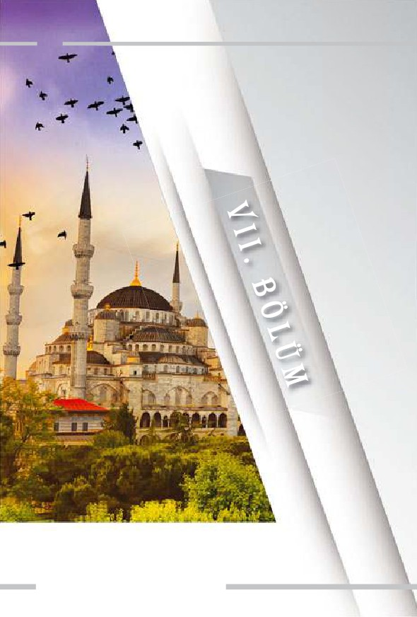
578
ÜST AKIL İNGİLİZ DERİN DEVLETİNİN İÇYÜZÜ
ADNAN HARUN YAHYA
Lozan'a Gİden Yol
579
580
Büyük Savaş Sonrası
üyun-u Umumiye İngiliz Dainler (Alacaklılar) Başkanı Sir
Adam Block, 1914'te savaş ilanı nedeniyle İstanbul'dan ayrıla-
cağı zaman şöyle demişti:
D
Eğer Almanya kazanırsa, siz Alman sömürgesi olacaksınız. Eğer
İngiltere kazanırsa, mahvoldunuz!279
28 Temmuz 1914 tarihinde sıkılan ilk kurşunla fitili ateşlenmiş olan
korkunç yıkım, Büyük Savaş olarak da adlandırılan I. Dünya Savaşı, 11
Kasım 1918'de neticelenmişti. Savaşın resmen bitirilişinden yaklaşık 2 ay
sonra, 18 Ocak 1919'da toplanan Paris Barış Konferansı'nda, savaş sıra-
sında imzalanmış olan gizli antlaşmaların uygulanması karara bağlan-
mıştı. İngiltere ve Fransa, Wilson İlkeleri'ne tamamen ters düşmemek
için "savaş tazminatı" yerine "savaş onarımı", "sömürgeciliğin" yerine ise
"manda sistemini" gündeme getirerek kendi sömürü taleplerinin uygu-
lanmasını sağladılar.
Paris Barış Konferansı bir yandan savaş hukuku ve savaş sonrası
toprak paylaşımlarını konu edinirken, başka bir tarafta da ilginç bir
ÜST AKIL İNGİLİZ DERİN DEVLETİNİN İÇYÜZÜ
ADNAN HARUN YAHYA
konuya ev sahipliği yapıyordu. Yeni dünya düzeninin şekillendirilmesi
amacıyla gizli adımlar atılmaktaydı. 30 Mayıs 1919 tarihinde yapılan bir
oturumda, derin dünya devletinin ilerleyen yıllarda dünyayı şekillendir-
mek amacıyla kuracağı bir organizasyon resmileştirilecekti. Bugün
CHATHAM HOUSE olarak bilinen bu organizasyonu daha iyi tanıyabil-
mek için, bu organizasyonun kurucu babası olarak bilinen kişiyi biraz
daha yakından incelememiz gerekmektedir. Bu kişi, Lionel Curtis'dir.
Sevr'in Mimarları
Lionel Curtis'in dikkat çekici faaliyetleri, İngiltere'nin Güney Afri-
ka'daki sömürgelerinde görev aldığı 1899-1909 yılları arasında başlamış-
tı. Onu buradaki görevine getiren Sir Alfred Milner, koloniler için görev
yapmak üzere Curtis'ten başka birçok Oxford mezununu da Güney Afri-
ka'ya getirmişti.
Bu ekip "Milner'in Anaokulu" olarak tanınmaktaydı. Ekip üyeleri;
eğitimleri, yaşam tarzları ve paylaştıkları değerler ile birbirine sıkı sıkıya
bağlıydı. Güney Afrika günlerinde sürekli beraber zaman geçirmekte,
politik ve sosyal konularda tartışmalar yapmaktaydılar.
Anaokulu ekibi şu kişilerden oluşmaktaydı:
George Geoffrey Dawson: Times Dergisi Direktörü ve Editörü
Richard Feetham: Avukat, Güney Afrika Baş Hakimi, Yüce Divan
Hakimi
William Lionel Hitchen: English Electric Company (İngiltere
Elektrik Şirketi) Yönetim Kurulu Başkanı
Robert Henry Brand: Lazard Brothers (Lazard Kardeşler) şirketi-
nin yöneticisi
Sir Patrick Duncan: Güney Afrika Valisi
John Dove
581
582
J. F. (Peter) Perry
Geoffrey Robinson
Hugh Wyndham
1905 yılından sonra Philip Kerr (İngiltere'nin ABD Büyükelçisi
1939-1940), Lord Selborne ve Dougal Orme Malcolm da ekibe katıldı.
Anaokulu ekibinin birlikte yürüttükleri çalışmalar, bu ekibin Güney
Afrika'yı terk etmesinden sonra da uzun süre devam edecekti.
Alfred Milner'in hedefi, Güney Afrika kolonilerini İngiliz bayrağı
altında birleştirmekti. Milner, Cecil Rhodes'in vasiyetiyle kurulan "Rho-
des Fonu"ndan Anaokuluna para aktarılmasına aracılık etti. Kitabın
başında tanıttığımız Cecil Rhodes, hatırlanacağı gibi, Güney Afrika'da
elmas ve maden ticareti ile zengin olmuş, İngiliz derin devleti-
nin Darwinist ve ırkçı kurmaylarından biriydi.
Bu sırada Lionel Curtis de Anaokulu içinde
(haşa) "Peygamber" olarak anılmaya başlanmıştı.
Curtis, 31 Mayıs 1910'da Güney Afrika'yı birleş-
tirmeyi başardı. Bu başarı, global ölçekte bir
idealin peşinde koşulmasıyla sağlanmıştı.
Curtis'e göre, Güney Afrika, İngiliz İmpa-
ratorluğu açısından bir "mikrokosmos"
gibiydi. Burada birleşme sağlandıktan
sonra, Anaokulu'nun benzer çalışmayı,
İmparatorluk ölçeğinde gerçekleştire-
bileceğini ifade etmişti.280
1909'da Alfred Milner potansiyel
sponsorlar ve destekçilerin katıldığı
toplantılar düzenlemiş ve Lionel Curtis
bu sayede bir hedefe daha ulaşmıştı: 4-5
ÜST AKIL İNGİLİZ DERİN DEVLETİNİN İÇYÜZÜ
ADNAN HARUN YAHYA
Eylül 1909'da İngiltere Galler'de Plas Newydd'de yer alan Lord Angle-
sey'in konutunda Yuvarlak Masa organizasyonu gerçekleştirildi. Ana-
okulu ekibinin yanı sıra Lord Howick, Lovat, Wolmer ve F. S. Oliver de
toplantıya katıldı. Kısa zaman içinde ekibe hepsi İngiliz olan Leo Amery,
Lord Robert Cecil, Reginald Coupland, Edward Grigg ve Alfred Zim-
mern de dahil oldu.
Zulu Kabilesi'nden işçiler, Güney Afrika Kimberley'de
De Beers elmas madenlerinde köle olarak çalıştırılı-
yorlardı. 1887-88 yıllarında ırkçı İngiliz diplomat Cecil
Rhodes, De Beers'i de içine alan elmas yataklarını
İngiltere'deki Consolidated Mines firmasının bünyesi-
ne almıştır.
583
584
Yuvarlak Masa'nın amacı çok netti: İngiliz İmparatorluğu'nun
dünya çapında payidar olmasını sağlamak ve tüm dünyayı Anglosakson-
ların hakimiyeti altına almak. Toplantının temel felsefesi iki madde ile
özetlenebilir:
1. Malthus Doktrini: Dünyadaki popülasyonun artış hızı ile tüke-
tim maddelerinin artış hızının aynı olmaması nedeniyle fakir ulusların
ortadan kaldırılması gerektiği yönündeki sapkın düşünce.
2. Öjeni (Eugenics - Üstün Irk Teorisi): Yaşlı ve sakatların elimine
edilmesi yani yok edilmesi ile üstün bir ırk yaratılması iddiasıyla özetle-
nebilen Darwinist imha sistemi.
Lionel Curtis, Aralık 1918'de Yuvarlak Masa'nın yayın organında bir
makale yayınladı. Bu makalede I. Dünya Savaşı sonrasında bir Milletler
Cemiyeti kurulmasını ve bu organizasyon altında dünya çapında man-
dater bir sistem yürütülmesini önerdi. Bunu İngiliz-Amerikan ortaklı-
ğıyla yürütmenin uluslararası dengeyi sağlayacağını iddia etti. Böylece
Paris Barış Konferansı'na davet edildi. Aynı zamanda Yuvarlak Masa
kadrosunda da yer alan İngiltere Propaganda Bakanlığı'ndan Robert
Cecil'in yürüttüğü Milletler Cemiyeti oturumuna katıldı. Bunun netice-
sinde 1919'da Amerikan-İngiliz Uluslararası İlişkiler Enstitüsü kuruldu.
Daha sonra bu Enstitü, ABD'de CFR ismini alacak, İngiltere'de ise Krali-
yet Uluslararası İlişkiler Enstitüsü yani Chatham House olarak anılacak-
tır.
Chatham House'un ilk başkanları:
Robert Cecil
Arthur James Balfour
John R. Clynes
Edward Grey
ÜST AKIL İNGİLİZ DERİN DEVLETİNİN İÇYÜZÜ
ADNAN HARUN YAHYA
Bu ekip, Paris Barış Konferansı'nda Osmanlı'yı parçalama planla-
rı yapan ve Sevr Antlaşması'nı hazırlayan ekiptir.
Ayrıca Konferansta, İngilizlerin önderliğinde oluşturulan komisyon
kararınca Milletler Cemiyeti'nin kurulmasına karar verilmiştir.
Lozan Yolunda Yeni Türkiye
30 Ağustos 1922 tarihinde Yunan ordusunun Anadolu'da hezimete
uğratılması ile elde edilen Türk askeri zaferinin doğal siyasi sonucu ola-
rak, 11 Ekim 1922 tarihinde Mudanya Mütarekesi imzalandı. Bu ateşkes
antlaşması, işgal güçlerinin Türk topraklarını terk etmelerini şart koşar-
ken, nihai bir barış antlaşması gereksinimini de doğurdu. İtilaf Devletle-
ri, 27 Ekim 1922 tarihli bir nota ile TBMM Hükümeti'ni, 13 Kasım 1922
günü Lozan'da başlayacak olan barış konferansına davet ettiler.
Türkiye, Lozan Görüşmeleri'ne giden yola ulaşana kadar on yıl
boyunca savaş vermiştir. Balkan Savaşları'nın başladığı 1912 yılından,
Milli Mücadele'nin sona erdiği 1922 yılına kadar 5 milyon insanını yitir-
miştir. Bu rakam, savaşa katılan ülkeler nezdinde değerlendirildiğinde, I.
Dünya Savaşı'nda verilen en büyük kayıptır. Bu korkunç savaşlardan
Türk milleti oldukça yorgun, bitkin ve yoksul olarak çıkmış, kendi devle-
tini yitirmiştir. Tüm bu olumsuzluklara rağmen bu millet, milli mücade-
le azmini hiçbir zaman yitirmemiş, imzaladığı Lozan Barış Antlaşma-
sı'yla yeni bir devlet kurmuştur. Bu antlaşma, I. Dünya Savaşı sonrası
halen yürürlükte olan tek barış antlaşmasıdır. Savaş sonrası yapılan diğer
bütün antlaşmalar, II. Dünya Savaşı ile son bulmuştur. Buna karşın Tür-
kiye, 93 yılını savaşsız geçirmiş yegane ülke olarak tarih sahnesindedir.
Lozan Konferansı, oldukça sancılı, hararetli ve zorlu geçmiş bir
anlaşma sürecidir. Görüşmeler, 20 Kasım 1922'de başlamış ve antlaşma
ancak 24 Temmuz 1923'te imzalanabilmiştir. Musul, Boğazlar ve Hatay
gibi meselelerin çözümü daha sonraya kalmıştır. Görüşmelerin askıya
alındığı ve kesintiye uğradığı durumlar söz konusu olmuştur. Fakat
585
586
1922'de Mudanya Mütarekesi'nin imzalandığı bina.
Misak-ı Milli esasında ısrarcı olan, Boğazlar ve kapitülasyonlar konusun-
da asla taviz verme niyetinde olmayan yeni Türk Devleti, bazı vatan top-
raklarını teslim etmekle birlikte, Misak-ı Milli sınırlarını büyük ölçüde
korumuş şekilde masadan ayrılmıştır.
Görüşmeler sırasında Türk Devleti'ne en büyük zorluğu çıkaran,
çeşitli entrikalarla aldatıcı politikalar izleyen ve Türk heyetinin telgraf
yoluyla yazışmalarını dahi dinlemekten çekinmeyen İngiltere, derin dev-
let politikasını Lozan Görüşmeleri sırasında yoğun olarak kullanmış ve
Türk tarafını kendince tuzağa düşürmek adına elinden geleni yapmıştır.
ÜST AKIL İNGİLİZ DERİN DEVLETİNİN İÇYÜZÜ
ADNAN HARUN YAHYA
Lozan Görüşmeleri Öncesi İngiltere
Lozan Görüşmeleri öncesinde, İngiltere'nin Türkiye'ye yönelik bakış
açısını ve derin devletin etkisi altında belirlediği stratejisini bilmekte
yarar vardır. Çünkü bu satırlarda konu edilecek olan asıl ayrıntı, Lozan
Antlaşması sırasında İngiliz derin devletinin Türkiye'ye oynadığı oyunla-
rı gözler önüne serebilmektir. Bunun için öncelikle, dönemin İngiliz
liderlerinin Türklere ve yeni Türkiye'ye bakış açısını iyi anlamak gerek-
mektedir.
İngiliz liderlerinin büyük bir kısmı, daha önce örneklerini gördüğü-
müz gibi "İngiltere'nin çıkarları" için hemen her şeyi göze almış kişiler-
den seçilir. Bu seçimi yapan daima İngiliz derin devleti olmuştur. Bu stra-
teji gereği tarih boyunca İngiltere yönetimine gelen tüm Muhafazakar
Parti liderleri, Rusya'yı büyük bir tehdit olarak görmüş ve bu tehdide
karşı Osmanlı'yı destekleme siyaseti gütmüşlerdir. Bu siyasette, elbette,
Osmanlı'nın güçlü bir imparatorluk olmasının da payı büyüktür. İngiliz
derin devletinin, daima güçlüden menfaat ummuş bir yapılanma olduğu
da unutulmamalıdır.
Osmanlı'nın zayıflaması ve "sömürülecek iyi bir yem" olarak görül-
mesi, İngiliz derin devletinin de siyasetinin değişmesine yol açmıştır.
Liberal Parti temsilcisi Gladstone'un 1880'de iktidara gelmesi ve Osman-
lı'ya karşı başlattığı ani düşmanlık siyaseti bunun aslında bir özetidir.
Daha önce detaylarını gördüğümüz, Gladstone'un bir anda geliştirdiği
Doğu siyaseti, şu mesnetsiz ithamlarında öne çıkan nefret üzerine şekil-
lenmiştir (Necip Türk Milletini tenzih ederiz):
Türk Hükümeti hiçbir hükümetin işlemediği kadar günah işlemiş,
hiçbir hükümet onun kadar günahkarlığa saplanmamış, hiçbiri onun
kadar değişime kapalı olmamıştır!281 Türkler medeniyetsiz bir ırktır,
kötülüklerini alıp gitmelidirler.282
587
588
(Solda) William Ewart Gladstone
(Üstte) Sevr Antlaşması'nın imzalan-
masının ertesi günü İzmir'de çekilen
fotoğraf.
Bu sözlerin, tam olarak İngiliz derin devleti tarafından Darwinizm
safsatasının yaygınlaştırıldığı ve Darwin'in özellikle Türkleri "aşağı ırk"
olarak tanımladığı döneme denk gelmesi elbette bir tesadüf değildir
(Necip Türk milletini tenzih ederiz). Sahte evrim teorisi yoluyla aşağı ırk-
üstün ırk kavramları, yine İngiliz derin devleti tarafından dünyaya servis
edilmiş bir aldatmaca, bir beladır. Türklere yönelik düşmanlık politikası
da bu stratejiye uygun şekilde geliştirilmiştir.
Lozan Görüşmeleri sırasında yine Liberal Parti'nin bir temsilcisi
olan İngiltere Başbakanı Lloyd George'un Türk karşıtı politikasını da bu
kapsamda incelemek gerekmektedir. I. Dünya Savaşı'nın patlak verdiği
1914 yılında Lloyd George'un şu ifadeleri Türklere yönelik garip bakış
açısını anlamak açısından yeterlidir:
Onlar (Türkler) insanlığın kanseridir. Kötü yönettikleri ülkelerin
vücuduna sinsice yayılan ve her canlı dokuyu çürüten büyük bir ızdı-
ÜST AKIL İNGİLİZ DERİN DEVLETİNİN İÇYÜZÜ
ADNAN HARUN YAHYA
raptır. Haklı ile haksız arasındaki bu dev savaşta (I. Dünya Savaşı),
Türk'ün insanlığa karşı uzun kötü sicilinin nihai bir hesaplaşmaya
tabi tutulmasından memnunluk duymaktayım.283
Savaş sonunda ise Lloyd George, Osmanlı'yı yenmekle, İngiltere'nin
bugüne kadar yaptığı en güzel işi yapmış olduğunu belirtiyor ve bir bakı-
ma İngiliz derin devletinin 500 yıllık sinsi planını gözler önüne seriyor-
du. Amaç, Anadolu topraklarını hakimiyet altına almak, Türklere yaşam
alanı vermemek ve hatta onları yok etmekti. Bu, tarih boyunca başarıla-
mamıştı. George, I. Dünya Savaşı'ndan zaferle çıkarak bunu başardığına
inanmış olacak ki, 29 Ekim 1919'da Avam Kamarası'nda şu sözleri söylü-
yordu:
Biz dünyanın her yanında savaştık… Türkiye'nin fethinin tümünü
fiilen gerçekleştiren İngiliz silah gücü oldu. Türkiye ile savaşa 1.5 mil-
yon asker gönderildi. Bu, Büyük Britanya'nın başarısıydı. Medeniyet
uğrunda ülkemizin bugüne kadar giriştiği işlerin en güzellerinden
birini yapmış bulunuyoruz. Dünyanın en zengin topraklarından biri-
si olan geniş bir ülkeyi Türk'ün mahvedici nüfuzundan azad eyledik.
Medeniyet, yüzlerce yıl bu yolda başarısızlığa uğradıktan sonra İngil-
tere bunu gerçekleştirdi.284
Sevr Antlaşması, Lloyd George'un bu hayallerini süsleyecek kadar
sinsi bir projeydi. İngiliz derin devleti, savaşı başlatan Almanya için bile
şartları bu kadar ağır olan bir anlaşma düzenlememiştir. Yenilen ülkele-
rin tümü topraklarının bir kısmını kaybetmek zorunda kaldıysa da, tüm
coğrafyası işgale açık hale gelen tek ülke Türkiye olmuştur. Lloyd Geor-
ge, savaş sırasında, asıl "cezalandırılması" gerekenin Türkler olduğuna
inanmıştır. Çünkü hedefte yerine getirilmesi gereken ve yüzyıllardır
planlanan bir "Şark Meselesi" vardır. Türklerin bu meselenin tam orta-
sında güçlü şekilde varlığını sürdürüyor olması, daima İngiliz derin dev-
589
590
leti için sorun olmuştur. İngiliz derin devleti, I. Dünya Savaşı sonucunu
bu "sorunun" köklü çözümü için bir fırsat olarak görmüş olacak ki, Lloyd
George, savaş sonrasında şu sözleri sarf etmekten çekinmemiştir (Necip
Türk Milletini tenzih ederiz):
Sulh şartları (Sevr) ilan edilince zaten Türklerin deliliklerinden, kötü-
lüklerinden ve cinayetlerinden dolayı ne kadar ağır cezalara çarptırı-
lacakları görülecektir. Cezalar onların en büyük düşmanlarını bile
kafi derecede tatmin edecek kadar müthiştir.285
Sevr, bu nefret içinde ve İngiliz derin devletinin yüzyıllık geçmişi
olan derin planları eşliğinde oluşturulmuş olan, Osmanlı'nın ölüm fer-
manıdır. İstanbul Hükümeti, aldığı yenilginin etkisiyle bu ölüm fermanı-
nı tereddütsüz imzalamış ve İngiliz derin devletinin emriyle İtilaf Devlet-
leri, birer birer güzel ülkemizi işgale başlamışlardır.
Unutulmamalıdır ki, Yüce Rabbimiz'in yazdığı kader, daima iyiler-
den ve mazlumlardan yana işler. Savaştan yenilgiyle çıkan Türkiye için
de böyle olmuştur. İngiliz derin devleti ve Türk düşmanı Lloyd George,
önemli bir konuda hataya düşmüştür. Mustafa Kemal'i, silah arkadaşla-
rını, cesur ve imanlı Türk milletini hesaba katmamışlardır. Oysa galip
gelecek olanlar, daima Allah'ın taraftarlarıdır.
Kim Allah'ı, Resul'ünü ve iman edenleri dost (veli) edinirse, hiç şüphe
yok, galip gelecek olanlar, Allah'ın taraftarlarıdır. (Maide Suresi, 56)
İtilaf Devletleri'nin küstahça gerçekleştirdiği işgaller sonrasında
büyük bir mücadele veren Mustafa Kemal liderliğindeki Türk milis gücü,
Kurtuluş Savaşı'nda destan yazmıştır. Planlar, hiç de Lloyd George'un
düşündüğü gibi işlememiş, Türk Devleti ve Milleti yok olmamış, Avru-
pa'yı terk etmemiştir. George'un ifadesiyle Türklere verilmiş büyük ceza
olan Sevr çöpe atılmıştır. İngiliz derin devleti, tarihi bir zaferle kendisini
Lozan'da masaya oturtmaya mecbur kılan yeni Türk Devleti karşısında
ağır bir darbe almıştır.
ÜST AKIL İNGİLİZ DERİN DEVLETİNİN İÇYÜZÜ
ADNAN HARUN YAHYA
(Solda) Dünya
Savaşı sonrasında
imzalanan anlaş-
maların ülkeleri
ne konuma getir-
diğini temsil eden
bir karikatür.
(Sağda) Venizelos
Sevr Antlaşma-
sı'na imza atar-
ken.
Lozan Görüşmeleri, çeşitli yönleriyle defalarca incelenmiş ve üzerin-
de analizler yapılmış kapsamlı bir konudur. Anlaşmanın burada üzerin-
de durulacak olan kısmı ise, Lozan Görüşmeleri sırasında karşımıza
çıkan İngiliz derin devletinin hassas noktalarıdır. Bu nedenle Lozan ile
ilgili olarak yalnızca iki konu üzerine durulacaktır: Musul meselesi ve
kapitülasyonlar. Bu konular önemlidir; çünkü İngilizlerin bu meseleler-
deki şiddetli ısrarı, aslında İngiliz derin devletinin, Ortadoğu ve Türkiye
üzerindeki gelecek yüz yıllık planlarının ipuçlarını vermektedir. Nitekim
bu maddeler, Lozan Görüşmeleri'ni kesintiye uğratan ve savaş hazırlıkla-
rının dahi başlamasına neden olan yegane iki maddedir. O gün Lozan
masasında İngiliz tarafının ısrarla sahip çıktığı bu konuların ne kadar
karanlık bir planın parçaları olduğu bugün daha iyi anlaşılmaktadır.
Bunun için önce, günümüzde özellikle ülkemiz için bir sorun gibi
gösterilmeye çalışılan sözde Kürt meselesinin ve PKK belasının çıkış
noktasını incelemekte fayda vardır. Lozan'daki Musul görüşmeleri, bu
konuya ışık tutmaktadır.
591
592
Lozan'da Musul Konusu
ustafa Kemal, İsmet Paşa'yı Lozan Barış Görüşmeleri'ne
baş temsilci olarak göndermişti. Ancak bunun gerçekleşe-
M
bilmesi için İsmet Paşa'nın Bakanlar Kurulu'nda yer alma-
sı gerekiyordu. Bundan dolayı İsmet Paşa, Dışişleri Bakanlığı'na getirildi.
Böylece İsmet Paşa'nın Lozan'a baş temsilci olarak gönderilmesinin yolu
açıldı. Türkiye Büyük Millet Meclisi, İsmet Paşa başkanlığında Trabzon
Milletvekili Hasan Bey (Saka) ve Sinop Milletvekili Dr. Rıza Nur Bey'den
oluşan bir delegeler kurulu seçti. Bu kurul, Lozan'da kendilerine yardım
etmek üzere uzmanlardan kurulu bir heyet oluşturdu.
Lozan Barış Kurulu'na başkan olarak seçilmiş olan İsmet İnönü, 3
Kasım 1922'de Meclis'te yaptığı konuşmada Misak-ı Milli yolunun dışına
çıkmayacakları konusunda garanti verdi. Meclis'te konuşulan öneriler ve
ileri sürülen görüşler TBMM Başkanı tarafından karar haline getirilerek
İsmet Paşa'ya teslim edildi.
ÜST AKIL İNGİLİZ DERİN DEVLETİNİN İÇYÜZÜ
ADNAN HARUN YAHYA
Lozan'da müzakere edilecek konular genel başlıklar olarak şunlardı:
* Sınır sorunları (Irak sınırı - Musul, Güney sınırı - Suriye, Batı
sınırı - Yunanistan ve Batı Trakya),
* Kapitülasyonlar,
* Azınlıklar ve yabancı okullar meselesi,
* Savaş tazminatları,
* Devlet borçları,
* Boğazlar meselesi,
* Adalar,
* Patrikhane'nin konumu.
Lozan Barış Konferansı sırasında İngiltere'yi dönemin Dışişleri
Bakanı Lord Curzon temsil edecektir. Curzon'un, Türk düşmanlığı açı-
sından Lloyd George'dan farklı olmadığını burada belirtmek gerekmek-
tedir. Curzon'un özelliği, tıpkı Lloyd George gibi Sevr'in mimarlarından
biri olmasıdır. Daha o yıllarda Türk toprakları ile ilgili görüşlerini açıkla-
makta tereddüt etmemiş, "Türklerin mutlaka İstanbul'dan çıkarılmaları"
gerektiğini ısrarla vurgulamıştır. Aslında o yıllarda Curzon'un asıl fikri,
Türkleri, Konya merkezli küçük bir Asya devletine hapsetmek, İstanbul
başta olmak üzere, Trakya, Ege ve Akdeniz kıyılarını hakimiyet altına
almak, Doğu ve Güneydoğu'da da Ermenistan ve Kürdistan adı altında
yine İngiltere'ye bağımlı ülkeler meydana getirmektir. İlginç olan ise,
Curzon'un o yıllarda telaffuz ettiği bu korkunç senaryo, bugün hala İngi-
liz derin devletinin en temel hedeflerinden biridir.
Curzon'un açıkça ifade ettiği bu hedefi, bazı çevrelerce riskli bulun-
muş ve İngiliz kabinesi, bunun yerine Türklerin ve Halife'nin İstanbul'da
kalmasını ama iyice güçsüzleştirilmesini önermiştir. Bunu kesinlikle
kabul etmeyen Curzon'un ifadeleri, önemli bir itiraf niteliğindedir:
593
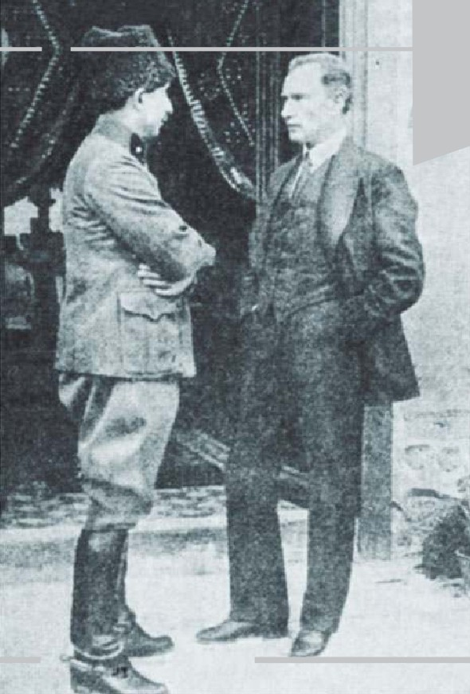
594
İsmet
İnönü ve
Mustafa
Kemal
Atatürk
ÜST AKIL İNGİLİZ DERİN DEVLETİNİN İÇYÜZÜ
ADNAN HARUN YAHYA
Avrupa'nın beş asırdır beklediği fırsatı kaçırıyoruz, bir daha bu fırsat
çıkmayabilir. Konstantinopol'de saygın ve uysal bir Türk Hükümeti
bulunması ve bunun askeri gücünü kırıp Müttefiklerin askeri kordo-
nuyla kontrolde tutarak irsi kötülüklerinin önlenmesi bir hayaldir!
Bütün bunların ötesinde benim büsbütün teessüf ettiğim husus, I.
Dünya Harbi'nde Doğu'daki savaşın ve Gelibolu'daki fedakarlığın
asıl amacı, Avrupa'yı Osmanlı Türkleri'nden kurtarmaktı. Bunun
için hayatlar feda etmiş ve hazineler harcamıştık, şimdi ise tam elde
etmişken bunu fırlatıp atıyoruz. Şimdi kaçındığımız bir görevi -kim
bilir daha ne kadar kayıp ve acıdan sonra- gelecek nesillere bırakıyo-
ruz.286
İngiliz derin devletinin oluşturup yaygınlaştırdığı Darwinizm bela-
sının fazlasıyla etkisinde kalan Curzon, Türklerin sözde "irsi kötülükle-
rinden" bahsetmekte, ırka atıfta bulunmakta ve adeta I. Dünya Savaşı'nın
asıl sebebinin, "Türkleri Avrupa'dan çıkarmak olduğu" itirafını yapmak-
tadır.
Musul konusu, Lozan Görüşmeleri sırasında Türkler ve İngilizler
arasında amansız bir mücadelenin verildiği özel bir konudur. Lozan'a
gelirken İngiliz derin devletinin, Türkiye'nin güneydoğusunda bir "Kürt
devleti" oluşturma planıyla yola çıktığını burada hatırlatmak gerekmek-
tedir. Türkiye, Irak sınırının belirlenmesi ile İngiliz derin devletinin pla-
nını bozmuş ama aynı planın ileriye yönelik parçası olan Musul, müna-
kaşaların kalbine oturmuştur. Savaş meydanlarında ateşli silahlar kulla-
narak karşı karşıya gelmiş olan iki devlet, Lozan'da başka türlü bir savaş-
ta, diplomasi savaşında boy ölçüşmüştür. İngiliz tarafı bu savaşı, derin
devletin himayesi altında her türlü sinsi yöntemle yürütmüştür.
Musul'un kime ait olacağı üzerine gerçekleştirilen bu diplomasi
savaşının detaylarını tam olarak idrak edebilmek için, Musul konusuna
tarihi perspektiften bakmak gerekmektedir.
595
596
Tarihte Musul
Musul, 1055 yılında Selçuklu Devleti'ne bağlandıktan
sonra hep Türk toprağı olarak kaldı. 1514'te Yavuz Sultan
Selim'in Çaldıran Seferi sırasında Osmanlı İmparatorluğu
hakimiyetine girmiş ve Kanuni'nin 1534 Bağdat Seferi son-
rasında da eyalet haline getirilmişti. Böylece Musul; Süley-
maniye, Kerkük ve Musul sancaklarından oluşan bir vilaye-
tin merkezi olmuştu.287 Bu vilayet; doğuda İran, kuzeyde
Diyarbakır, güneyde Bağdat, batıda Şam, kuzeybatıda ise
Halep vilayeti ve Zor Sancağı ile çevrelenmişti.
Yaklaşık 1000 yıl boyunca Türklerin hakimiyetinde ve
400 yıl boyunca da Osmanlı yönetiminde kalan bölgeye
yönelik sinsi planlar peşinde olan emperyalist bir güç
1800'lü yıllarda kendini göstermeye başladı: Bu güç, İngiliz
derin devletiydi...
Tarihte Musul.
Temsili resimler
ÜST AKIL İNGİLİZ DERİN DEVLETİNİN İÇYÜZÜ
598
Musul bölgesinin İngiltere için önemi, emperyalist sömürge siyase-
tinin bir parçası olarak ortaya çıkmıştı. 19. yüzyılın başında en fazla Müs-
lüman sömürgeye sahip ülke olan İngiltere'nin Ortadoğu siyasetinde,
Hindistan yolu üzerindeki Irak ve Arabistan'ın stratejik önemi son dere-
ce büyüktü. İngiliz sömürge imparatorluğu, sınır ve ulaşım güvenliğini
sağlamak ve dünya çapında hegemonyayı geliştirmek için açık denizlerin
kontrolünü ele almak, Avrupa'daki güç dengesini korumak ve dünya pet-
rol politikasını elinde tutmak zorunda olduğuna inanıyordu.288 Musul,
işte bu nedenle stratejik bir konumdaydı.
Musul'un jeostratejik konumunun yanı sıra, onu çok değerli yapan
bir diğer özelliği de bakir topraklarının derinliklerinde birikmiş milyon-
larca varil petrol idi.
Bunlar, elbette İngiliz derin devleti için paha biçilmez özelliklerdi.
Fakat İngiliz derin devletini asıl ilgilendiren, Avrupa'da ve Anadolu'da
Türk varlığını temelinden bitiren bir stratejiydi. Detaylarını daha sonra
inceleyeceğimiz bu stratejinin en kilit noktasında ise Musul bulunuyor-
du.
1890 yılında Sultan II. Abdülhamid'in yaptırdığı incelemeler sonu-
cunda Musul ve Bağdat'ın zengin petrol kaynaklarına sahip olduğu orta-
ya çıkmıştı. Bunun üzerine II. Abdülhamid, 1890 ve 1898 yıllarında
Tarihte Bağdat.
Temsili resmi
ÜST AKIL İNGİLİZ DERİN DEVLETİNİN İÇYÜZÜ
ADNAN HARUN YAHYA
çıkardığı özel fermanlarıyla bu bölgeleri "Memalik-i Şahane" (Şahane
Memleketler) ilan ederek, kendi arazisi haline getirdi.289
27 Nisan 1909 tarihinde II. Abdülhamid'in Jön Türkler tarafından
tahtan indirilmesiyle II. Abdülhamid'in şahsi arazisi konumunda olan
Musul ve Bağdat vilayetlerinin mülkiyeti Maliye Nezareti'ne devredildi.
Bu durum, İngiliz derin devletinin oldukça işine gelmiş ve bundan son-
raki stratejiler bunun üzerine şekillenmiştir.
İngiltere, 1909 yılında Osmanlı ile bir anlaşma yaparak, petrol araş-
tırmalarına sermaye yaratmak ve elbette asıl olarak İngiliz menfaatlerini
korumak maksadıyla sermayesi tamamen İngiliz olan "Türk Milli Banka-
sı" adı altında bir banka kurdu. 1912'de ise, İngiliz bankacı olan Sir Ernest
Cassel, Osmanlı Devleti'nde petrol araştırmaları yapmak ve bulunan pet-
rol kaynaklarını işletmek maksadıyla yine tamamen İngiliz sermayesi ile
"Türk Petrol Şirketi"ni kurmuştu.290 Bu noktada İngiliz derin devletinin,
hegemonya kurmak için önce finans sistemlerini kullandığı gerçeğini
burada hatırlamak gerekmektedir. İngiliz derin devleti, geçmişte Hindis-
tan'da oluşturduğu benzer stratejiyi, Osmanlı üzerinde de kurgulamak ve
zayıflamış bu İmparatorluk üzerinde hakimiyetini güçlendirmek istemiş-
tir.
599
600
Osmanlı yı Parçalama Planları
Osmanlı nın I. Dünya Savaşı na dahil oluşuyla beraber, İngiltere
stratejik ve siyasi hedef tespitlerini bir kere daha revize etti. 1915 te
Sir
Maurice Bunsen başkanlığında "Asya Türkiye sini İnceleme
Komisyonu" kuruldu. 8 Nisan 1915 te çalışmaya başlayan Komis-
yon, 30 Haziran 1915 te hazırladığı raporunda Osmanlı toprakla
rının Suriye, Filistin, Ermenistan, Anadolu/Türkiye ve Irak adıyla
beş büyük bölgeye/özerk vilayete bölünmesini önerdi.1 Ayrıca
Akdeniz den Basra Körfezi neuzanan hat üzerinde stratejik nokta-
ların doğrudan veya dolaylı yollarla kontrol altına alınmasını şart
koştu. Bunun da yolu Filistin ve Irak ın tamamen işgal edilmesin
den geçiyordu.2 Lord Curzon a göreİngilizlerin gözünde Hindis-
tan ın batı sınırları Fırat Nehri boyunca uzanmaktaydı ve ancak
Musul vilayeti aracılığıyla denetim altına alınabilirdi. Böy ece
İngiltere, savaş sonrası, Musul da dahil olmak üzere Asya Türki-
ye sinde petrol başta olmak üzere bütün ekonomik imtiyazları ele
geçirebilecekti.3
1. Selçuk Ural, "Mütareke Döneminde İngiltere nin Güneydoğu Anadolu Politikası",
Ankara Üniversitesi Türk İnkilap Tarihi Enstitüsü Atatürk Yolu Dergisi, s. 39, Mayıs
2007, s. 426
2. David Fromkin, Barışa Son Veren Barış, çev: Mehmet Harmancı, İstanbul: 1994
s.137-140; M. Kemal Öke, Musul Meselesi Kronolojisi (1918-1926), İstanbul: Türk Dün
yası Araştırmaları Vakfı: 1987, s. 15
3. İhsan Şerif Kaymaz, Musul Sorunu Petrol ve Kürt Sorunları ile Bağlantılı Tarihsel ve
Siyasal Bir İnceleme, İstanbul: Otopsi Yayınları, 2003, s. 49; Ersal Yavi, Kürdistan Ütop
yası, c. I, İstanbul: Yazıcı Basım Yayın, 2006, s. 63
ÜST AKIL İNGİLİZ DERİN DEVLETİNİN İÇYÜZÜ
ADNAN HARUN YAHYA
I. Dünya Savaşı Sırasında Musul
Stratejik açıdan bakıldığında, I. Dünya Savaşı'nın başladığı sırada
Osmanlı'nın Irak'ta askeri varlığı pek de parlak değildi. 2 Ağustos 1914
günü tüm ülkede genel seferberlik ilan edilmişti.291 Seferberliği takip eden
günlerde Türk ordusu, Irak cephesinde yeniden yapılandırılmıştı. Ancak
bu ordunun, Avrupa'nın düzenli ordularıyla mücadele edebilmesi pek
mümkün değildi. Birliklerin üniforma ve teçhizat ihtiyaçlarının ikmali,
savaş malzemelerinin sevkiyatı son derece güçtü.292 Bunların da ötesinde,
Irak'ta bulunan asker sayısı çok yetersizdi. Zahiren, Trablusgarp Savaşı,
devamındaki Balkan ayaklanmaları ve Balkan Savaşları sebebiyle
Osmanlı Genelkurmayı'nın dikkati Irak'tan çok uzağa odaklanmıştı.
Osmanlı sadrazamlarından Ahmet İzzet Paşa'ya göre ise durum daha
başkaydı. Osmanlı, İngilizlerin bu bölgeye bir saldırı yapabileceğini hiç
düşünmemişti.
Ahmet İzzet Paşa anılarında şu değerlendirmeyi yapar:
Irak'ta öteden beri İngilizlerin ihtiraslarının olduğunu bilmeyen
çocuk bile yoktur. Irak ve Mezopotamya'nın kültür ve medeniyet tari-
hi, iyi idare ve kullanma halinde feyiz ve bereketinin Nil, Pencap,
Sind, Ganj havzalarına taş çıkartacağı hakkındaki şöhreti dolayısıy-
la sahibi ve tasarrufçusu için büyük bir kıymete sahip ve istilacı bir
büyük devlet için hırs ve iştihayı kabartıp tahrik ettiği apaçık bilinen
gerçeklerdendi. Müslüman ve özellikle Şia gözünde çok kutsal sayılan,
yüksek mertebeleri Sünnilerce mukaddes olan İmam-ı Azam Türbesi
ve Hint Müslümanlarının fevkalade sevgi besledikleri ve bağlı olduk-
ları Abdülkadir Geylani'nin kabir ve aileleri Irak'ta bulunmaktaydı.
Bu açıdan bu bölgeyi sahiplenmenin, birçok İslam tebaasına sahip
olup Hicaz'a da koruyuculuk edeceğini düşünen İngiltere'nin İslam
siyaseti için ne kadar faydalı olacağı kolayca takdir edilebilirdi.
Irak'ın coğrafi konumu bakımından, Hindistan'a karşı, güçlü bir düş-
601
602
man elinde gelecek için bir tehdit sebebi olabileceğinden dolayı, İngil-
tere'nin koruma ve savunma düşüncesiyle de savaş sırasında buraya
göz dikmesi doğaldı. İngiltere'ye karşı, Irak bölgesini, mahalli kuvvet-
lerinden ayırmak, bu hükümeti, mülkümüzü istilaya hırslandırmak
ve davet etmekten başka bir şey değildir. Dolayısıyla, kesin ihtiyaç
meydana gelmesinden önce buralara başka asker gönderilmemesi
büyük bir eksikliktir.293
Ahmet İzzet Paşa'nın, bölgedeki durumun vahametine ve İngiliz
derin devletinin sinsi emellerine güçlü şekilde dikkat çekmesine rağmen,
Musul bölgesine yeterli asker yine de gönderilememiştir. Elbette bu
konuyu değerlendirirken, Osmanlı'nın Balkan Savaşları'ndan yeni çıkmış
olduğu unutulmamalıdır.
Kut-ül Amare'nin Ardından Irak
Tüm güçsüzlüğüne ve yaşadığı yenilgilere rağmen Osmanlı ordusu,
yine de, Osmanlı için oldukça önemli olan Irak Cephesi'nde zaferlere de
imza atmıştır. 22 Kasım 1915'te Irak Cephesi'nde İngilizler yenilgiye
uğratılmış ve beklemedikleri bu yenilgi karşısında oldukça sarsılmışlar-
dır. Kut-ül Amare Zaferi, Çanakkale Zaferi gibi sürekli olarak gündeme
getirilmesi gereken önemli bir başarıdır.
İngiliz kuvvetleri, beklemedikleri bu yenilgiyi bir türlü sineye çeke-
memiş, özellikle bu tarihten sonra Irak Cephesi'ni Osmanlı'ya bırakma-
mak için büyük çaba harcamışlardır. Bunun için içten parçalama siyase-
ti de ağırlık kazanmıştır. Kût-ül Amare bozgunundan sonra İngiliz derin
devletinin bölgede ajan kullanımı büyük artış göstermiştir. Bu ajanlar
Irak'ın dokusunu iyi bilen, Arap'tan daha çok Arapça ve Kürt'ten daha
çok Kürtçe bilen insanlardır. İngilizler, Ortadoğu kökenli olup da İngil-
tere'de yaşayan ve İngiltere'ye kendilerince minnet borcu olan yerli
unsurlardan da yararlanmışlardır.294 Ortadoğu kökenli İngilizlerin bir
kısmının Ortadoğu'ya karşı kullanılması, bilindiği gibi bugün hala devam
ÜST AKIL İNGİLİZ DERİN DEVLETİNİN İÇYÜZÜ
ADNAN HARUN YAHYA
eden bir derin devlet siyasetidir. Tarih boyunca İngiltere'ye gebe bırakı-
lan milletler, daima İngiliz derin siyasetinde kullanılacak potansiyel ajan-
lar olarak görülmüş ve kullanılmışlardır.
I. Dünya Savaşı'nın sonuçlandığı Ekim 1918 tarihinde bile İngiliz
askerleri Musul'a doğru ilerlemeye devam etmektedirler. Irak cephesi,
Osmanlı 6. Ordusu'nun büyük kayıplar verdiği bir cephe olmuştur.
(Üstte solda) Berlin'de
çıkan 30 Nisan 1916
tarihli Vorwarts Gaze-
tesi'nin manşetinde
Kut-ül Amare'de İngi-
liz ordusunun teslim
olduğuna dair haber.
(Altta sağda) Kut-ül
Amare'de esir alınan
İngiliz askerleri
(Altta solda) Kut-ül
Amare Savaşı'nda cep-
hedeki Türk askerleri
603
604
I. Dünya Savaşı Sonrası Irak
30 Ekim 1918 günü, I. Dünya Savaşı'nı sona erdiren Mondros Müta-
rekesi imzalandığında Osmanlı ve İngiliz güçlerinin Irak'taki yerleşimle-
ri şu şekildeydi: İngilizler Anelhazar, Gayyare Goz Kuyuları, Altınköprü,
Salahiye ve Kerkük hattına dayanmıştı. Osmanlı birlikleri ise Rakka,
Dirizar, Miyadin, Sincar, Telafir, Hamamalil, Süleymaniye ve Halice hat-
tına hakimdi.295
Türkler iyimser bir şekilde mütarekenin imzalandığı gün Türk
ordusunun elinde bulunan yerlerin "Mütareke Hattı'nı" oluşturacağını
beklemekteydiler. Mütareke hükümlerine göre, bölgede bulunan bütün
kuvvetlerin yerlerinde kalmaları gerektiği halde, İngiliz kuvvetleri buna
uymamışlardır. İlerlemeye devam eden İngilizler, l Kasım'da Hamama-
lil'e girmişler, buradan Musul'u işgal edeceklerini söyleyerek Türk kuv-
vetlerinin Musul şehrinden 5 km kuzeye çekilmelerini istemişlerdir.
Ali İhsan Paşa, İngilizlerin bu talebini Sadrazam'a bildirmiş, bir seri
telgraf görüşmeleri sonucunda Sadrazam, Ali İhsan Paşa'ya 15 Kasım
günü şehrin boşaltılması talimatını vermiştir. Ali İhsan Paşa, buna uygun
olarak 10 Kasım'da Musul'u İngilizlere terk etmiş, ordu karargahı ile bir-
likte Nusaybin'e doğru çekilmiştir.296 Sonuç olarak Musul, I. Dünya Sava-
şı sonrasında, İngilizler tarafından mütareke hükümlerine ve uluslarara-
sı savaş kurallarına aykırı biçimde işgal edilmiştir.
Bu işgal, İngilizlere başlangıçta bir fayda sağlamamış, çünkü bölgeye
hakim olamamışlardır. Bölgedeki aşiretler ve halk, bu konuda İngiliz
kuvvetlerine yol vermemişlerdir. Kerkük ve Süleymaniye halkı İngilizle-
re vergi vermek istememiş ve bölgede sık sık sokak çatışmaları yaşanmış-
tır. Yöre halkının çoğunluğu Türklerin tarafında yer almıştır. Musul
halkı, Ankara'da ilk meclisin açılmasıyla güçlenen Milli Mücadele hare-
ketine destek vermiştir. Hatta bölgede bulunan Araplar dahi İngilizlere
karşı Mustafa Kemal Paşa ile işbirliğini düşünmüşlerdir. Mim Kemal
ÜST AKIL İNGİLİZ DERİN DEVLETİNİN İÇYÜZÜ
ADNAN HARUN YAHYA
Öke, İngiliz belgelerine dayanarak, Musul'daki Arap ve Kürtlerin, İngiliz
himayesindeki Faysal'a değil de Anadolu'ya güvenmeyi tercih ettiklerini
ifade etmektedir.297 Bunun sebepleri ise birden çoktur; İsmet Paşa bu
sebepleri şu şekilde açıklamıştır:
1. Musul vilayetinde oturanlar yeniden Türkiye'ye bağlanmayı ısrar-
la istemişlerdir; çünkü sömürgeleşmiş bir halk olmaktan çıkarak,
bağımsız bir devletin yurttaşları olacaklarını bilmektedirler. Dahası
bu halk, kendilerini
1055 yılından beri Türk,
1514'den beri de
Osmanlı olarak görmektedir.
2. Coğrafi ve siyasi bakımlardan bu vilayet, Anadolu'yu tamamlayan
bir parçadır. İngiliz derin devleti, Akdeniz ticaretinden yararlanmak
için Anadolu'ya geçmek mecburiyetindedir. Musul, İngilizler için bu
bağlantıyı açan bir anahtar konumundadır.
3. Hukuki bakımdan hala Osmanlı Devleti'nin bir parçası olan
Musul için İngiltere'nin yapacağı antlaşmaların ve sözleşmelerin
resmi olarak hiçbir değeri yoktur.
4. Anadolu'nun güney kesimlerini birleştiren yolların kavşak noktası
olan Musul'un, ticaret ilişkilerimiz ve bu bölgenin güvenilirliği bakı-
mından Türkiye'nin elinde olması zorunludur.
5. Hepsinden önemlisi, Musul bir Türk Vilayetidir. Yüzyıllar boyun-
ca Türklerin bir parçası olarak var olmuştur; bu topraklarda yaşayan
Kürtler, Türkler ve Araplar Türk Devletinin bir parçasıdır. Başka bir
yönetimin kabul edilmesi, burada yaşayan ve kendilerini Türk olarak
isimlendiren bu millet için imkansızdır.
6. Musul Vilayeti, Türkiye'nin işgal edilen diğer bölgeleri gibi, savaşın
bitmesinden sonra ve mütareke şartlarına aykırı olarak Türkiye'den
alınmıştır. Bu yüzden, aynı durumda kalmış öteki bölgeler gibi,
Musul'un da Türkiye'ye verilmesi şarttır.298
605
606
Kurtlar Sofrası
İngiliz derin devleti, I. Dünya Savaşı sonrasında, bir taraftan İstan-
bul ve Anadolu'da işgal çalışmalarını casusluk faaliyetleriyle neticelendir-
meye çalışırken, diğer yandan Avrupa ülkeleriyle birlik olup büyük ide-
allerine giden yolu sağlamlaştırma uğraşı içinde olmuştur.
I. Dünya Savaşı'nın galibi konumundaki Müttefikler,
25 Nisan
1920'de İtalya'da toplanan San Remo Konferansı'nda manda ve petrol
paylaşımını gerçekleştirdiler. Buna göre İngiltere, Musul petrol gelirleri-
nin %75'ine sahip olmuş ve petrol şirketlerinin yönetimini ele almıştır.
Buna karşın Fransa ise %25 ile yetinmiştir. Ayrıca İngiltere, Irak'ta Emir
Faysal'ın kral "seçilmesini", İngiliz mandasının bölge halkı tarafından
kabulü gibi göstermiş ve bunu San Remo'da Milletler Cemiyeti'ne de
kabul ettirmiştir. Bu şekilde, mandaların Milletler Cemiyeti tarafından
verilebileceği yolundaki uygulama tersine işletilmiştir.299
San Remo Konferansı'nın önemli amaçlarından biri de, güneydoğu-
muzda özerk bir Kürt devletinin kurulmasıydı. İngiltere, resmi olarak hiç
bir gücün gözetimi altında olmayacak bağımsız bir Kürt devleti ya da aşi-
retler federasyonu önermişti. Fransa'nın bazı çekinceleri neticesinde
İngiltere öyle bir politik manevra yapmıştır ki, bu manevrayla Kürtler
bölgede yerel özerklik bile alabilse bir yıl içinde tam bağımsızlık için Mil-
letler Cemiyeti'ne başvurmaya hak kazanabilecekti.300 Bu, aslında İngiliz
derin devletinin niyetini ortaya koyan bir gelişmeydi. Musul meselesi,
baştan beri bağımsız bir Kürt devletinin kuruluşu üzerine geliştirilmişti.
İngiliz derin devleti, Türkiye'nin güneydoğusunu da içine alan, kendi
himayesindeki böyle bir devleti, Türkleri zayıflatmak ve nihayetinde
Anadolu'dan atabilmek için mutlaka istiyordu.
Savaşın galipleri, yendikleri tüm devletlerle anlaşmalar imzalamıştı;
Türkler hariç. Türk Devleti, artık geçersiz durumdaki İstanbul Hüküme-
ti'nin imzaladığı Sevr Antlaşması'nı hiçbir şekilde kabul etmemiştir.
ÜST AKIL İNGİLİZ DERİN DEVLETİNİN İÇYÜZÜ
ADNAN HARUN YAHYA
I. Dünya Savaşı'ndan sonra bağımsızlık mücadelesine devam eden
ve düşmanı yurdundan atan Türkler, şimdi diğer yenik devletlere göre
daha güçlü bir şekilde masaya oturmaya hazırlanıyordu. Milli Mücadele
sırasındaki muhteşem kahramanlıkların ardından Anadolu işgallerini
sona erdirmek zorunda kalan İtilaf Kuvvetleri, Türk tarafını Lozan'da
masa başında yenme azminde olmuştur. Lozan'da İngiliz derin devleti-
nin bütün amacı, Sevr'i Türklere kabul ettirmek olacaktı. Oysa masada
artık başka bir Türk Devleti vardı. Bu Türk Devleti, Mustafa Kemal gibi
büyük bir Türk'ün idaresi altında ve tüm varlığını ortaya koyarak bir
zafer elde etmiş fedakar, azimli ve yenilmez bir milleti temsil ediyordu.
İngiltere başta olmak üzere Lozan'ın tüm tarafları, çok geçmeden bu
önemli gerçeği anlayacaklardı.
Parçalanan Osmanlı topraklarının manda ve petrol
paylaşımının gerçekleştirildiği San Remo Konferan-
sı'na katılan delegeler.
607
608
Anadolu'da Kürtleri Kışkırtma Çabaları
Kürt Teali Cemiyeti, Mondros Mütarekesi'nin imzalandığı gün, yani 30 Ekim 1918'de
kurulmuştu. Cemiyetin özelliği, İngiliz devlet yetkilileri ile yakın ilişkilerinin olması ve
adeta İngiliz casusluk çalışmalarının merkezlerinden biri konumunda bulunmasıdır.
Mustafa Kemal, Cemiyetin amacının, yabancı devletlerin himayesinde bağımsız bir
Kürt devleti kurmak olduğunu belirtmiştir.1 İngiliz derin devletinin Anadolu toprakla-
rı içinde Kürt devleti oluşturma hedefi, kurulan bu paravan dernekler yoluyla da orga-
nize edilmiştir. Nitekim İngiliz Yüksek Komiseri Amiral John de Robbeck'in 26 Mart
1920 tarihli ifadeleri, bu planı oldukça açık şekilde ortaya koymaktadır:
Kürdistan Türkiye'den tamamen ayrılıp bağımsız olmalıdır. Ermeniler ile Kürtlerin
çıkarlarını bağdaştırabiliriz. İstanbul'daki Kürt Kulübü (Kürt Teali Cemiyeti) Başkanı
Seyit Abdülkadir ve Paris'teki Kürt delegesi Şerif Paşa hizmetimizdedir.2
Burada adı geçen Şerif Paşa, İngiliz derin devletinin yönlendirmesiyle, Anadolu top-
raklarında ayrılıkçı hareketlerin başlangıcını gerçekleştirmiştir. Şeyh Abdülkadir ile bir-
likte Sevr'e "bağımsız bir Kürt devleti" maddesini koydurmuştur.
Ancak İngiliz derin devletinin bu planı, boşa çıkmıştır.
Nisan 1919'da Binbaşı Noel'in İngiltere tarafına çekmek istediği aşiretler, Osmanlı Dev-
leti'nin yanında yer alacaklarını ve işgalcilere karşı kanlarının son damlasına kadar
savaşacaklarını açıklamıştır. İngiliz Yüksek Komiserliği'nden Londra'ya gönderilen bir
telgrafta, Kurtuluş Savaşı'nın başlaması ile 30 bin Kürdün Mustafa Kemal Paşa ile bir-
likte savaşa gireceği yazılmıştır. Aynı dönemde Kürt aşiret liderleri, Erzurum Kongre-
sine katılmış ve Heyet-i Temsiliye'ye seçilmişlerdir.
İngiliz derin devletinin ajanı ve yancısı konumundaki Şerif Paşa ve Şeyh Abdulkadir,
Kürtlerin Osmanlı'dan ayrılmak istediği yönünde propagandalar yapmışlardır. Bu pro-
pagandalar sonucunda, son Osmanlı Meclisi Mebusanı'na, daha sonra da TBMM'ye,
yurdun dört bir tarafındaki Kürt önderleri tarafından bağlılık telgrafları yağmıştır.3
Meclisi Mebusan'a gönderilen 26 Şubat 1920'deki telgrafta, "Vatan haini ve din düşma-
nı Şerif Paşa'nın Kürtler için ayrılıkçı faaliyetleri bilgisini aldık. Türklük ve Kürtlük bir-
dir. Kürtler ve Türkler, öz kardeş ve din kardeşidirler; vatanları ortaktır. Kürtler
Osmanlı camiasından ve İslam Birliği'nden ayrılmayı hiçbir zaman düşünmemektedir.
Dünyanın sonuna kadar İslam camiasında yaşamak istemektedirler. Şerif Paşa ve ben-
zer tüm faaliyetleri nefretle reddettiğimizi ve Hükümetimize bağlı olduğumuzu insan-
lık alemine ilan ederiz." yazmaktadır. Telgrafın imza sahipleri:
Belediye Reisi Ali Rıza, Keçel Aşireti Reisi Yusuf, Abbasi Aşiret Reisi Seyit Ali, Kelani
Aşiret Reisi Hüseyin, Balanlı Aşiret Reisi Paşa Bey, Baratlı Aşiret Reisi Çiçek, Aşranlı
ÜST AKIL İNGİLİZ DERİN DEVLETİNİN İÇYÜZÜ
ADNAN HARUN YAHYA
Aşireti Reisi Yusuf, Ulemadan; Şeyh Saffet, Şeyh Hacı Fevzi, Müftü Osman Fevzi, Tüc-
cardan; Arapzade Ahmet, Ruhzade Halis, Tavşanzade Recep, Hacı Eşbehzade Şükrü,
Müftüzade Hakkı, Eşraftan; Hacı Mehmet, Çapıkzade Münir, Ahmet Paşazade Şemsi,
Beyzade Sami'dir.4
Benzer telgraflar da TBMM'nin açılması ile Ankara'ya gönderilmiştir. Meclis zabıtları-
na göre Solhan, Çemişkezek, Hasankeyf, Kangal, Palu, Bitlis, Adıyaman, Kahta, Ahlat,
Hizan, Şirvan, Şırnak bölge halkından gelen ve ayrılık hareketlerini protesto eden ve
Meclis'e bağlılık bildiren telgraflar okunmuştur. Aşiret reislerinin toplu telgrafı Kürtle-
rin birlik kararını açıkça göstermektedir:
"Misak-i Milli içinde barışı sağlamak için bütün varlığımızla hükümetimize yardım ede-
ceğimizi Türkiye Büyük Millet Meclisi Hükümeti dahilinde Kürtlüğün ayrı bir unsur ola-
rak değerlendirilmesini hiçbir zaman işitmek istemediğimizi bilgilerinize sunar, başarılar
diler ve en derin saygılarımızı sunarız." İmza sahipleri:
İzoli Aşireti Reisi Hacı Sebati, Aluçlu Aşireti Reisi Mehmet, Bariçkan Aşireti Reisi Halil,
Bükrer Aşireti Reisi Hüseyin, Zeyve Aşireti Reisi Halil, Deyukan Aşireti Reisi Hüseyin,
Cürdi Aşireti Reisi Mehmet, Ulemayı Ekrattan; Bekir, Sıtkı, Rüştü, Avni, Halil, Hafız
Mehmet, Eşrafı Ekrattan; İzdelili Fehim, Hüseyin, Bulutlu İbrahim, Nail, Zabunlu Halil,
Sadık.5
Görülebildiği gibi, I. Dünya Savaşı sonrası dönemde İngiliz derin devleti, sadece
Musul'da ve Irak sınırları içinde değil, Anadolu topraklarında da Kürtler ve Türkler
arasında ayrılık çıkarmaya çalışmıştır. Bu sinsi çabaya en büyük ders, yine Kürt halkı-
mız tarafından verilmiştir. TBMM Mebusları ve Kürt halkı, Kürtler ve Türklerin bir
ve bütün olduğunu dünyaya ve özellikle de İngiliz derin devletine ilan etmiştir. Şerif
Paşa'yı kullanarak başarılı olamayan İngiliz derin devleti, Lozan sonrasında bir hamle
daha yapacak ve bu defa Şeyh Said'i kullanacaktır.
tan_Teali_Cemiyeti
2. "Kürdistan Teali Cemiyeti", a.g.m.
3. Van Bruinessen, Ağa, Şeyh ve Devlet, çev. Banu Yalkut, İstanbul: İletişim Yayınları, 2004,
s. 279
4. Meclis-i Mebusan Zabıt Ceridesi, Devre LV, c. 1, s. 208
5. Sibel Özel, "Anayasa M. 66/I Hükmünde Yer Alan Türk Tanımı Üzerine Bir Değerlendir-
me", Baro Dergisi, c. 86, sayı 2012/6, 2012, s. 48
609
610
Musul İçin Çözüm Arayışları
Türk Hükümeti, Lozan ile Türkiye arasında haberleşmenin çok zor
olacağını ileri sürerek Konferansın İzmir'de gerçekleştirilmesini talep
etti. Bu talebin asıl nedeniyse, Konferansın gidişatını daha yakından izle-
mek ve savaşla kazanılan zaferin masa başında kaybedilmesine neden
olacak girişimlere izin vermemekti. Ancak devletlerarası geleneklere göre
konferansın tarafsız bir ülkede yapılması gerekiyordu. Bu nedenle,
Lozan'a yapılan bu davet, TBMM tarafından 29 Ekim 1922 günkü top-
lantıda görüşülerek kabul edildi.
Delegeler yola çıkmadan önce TBMM'de konuşulan öneriler ve ileri
sürülen görüşlerden Musul konusunu ilgilendiren maddeler şunlardı:
Irak Sınırı:
Süleymaniye, Musul ve Kerkük'ün Türkiye'ye geri verilmesi istene-
cektir. Konferans'ta bundan farklı durumlar ortaya çıkarsa, Bakanlar
Kurulu'ndan talimat alınacaktır. İngiltere'ye bazı ekonomik ayrıcalıklar
örneğin, petrol işletmeciliği alanında ayrıcalıklar sağlanması düşünülebi-
lir.
Suriye Sınırı:
Suriye ile sınır, daha güneye ve güneydoğuya çekilmelidir. Bu sını-
rın düzeltilmesine imkan oranında çalışılacaktır. Sınır, Re'si İbn
Hayr'dan başlayarak, Harm, Muslimiye, Meskene ve Fırat yolu, Deri Ez-
Zor ve sonunda Musul ile güney sınırına ulaşan bir hat olmalıdır.
Elde edilmesi istenen Suriye sınırı; Musul, Süleymaniye ve Kerkük'e
irtibatlı olup Misak-ı Milli'nin güney sınırını tamamlıyordu. Bu kısa ve
kesin direktifle, genelde Misak-ı Milli temel alınıyor Mudanya Mütare-
kesi'nde askıda kalan bazı toprak sorunlarının (Boğazlar, İstanbul ve
Doğu Trakya sorunları) da çözüme ulaştırılması isteniyordu.301
ÜST AKIL İNGİLİZ DERİN DEVLETİNİN İÇYÜZÜ
ADNAN HARUN YAHYA
Mustafa Kemal de Musul'u Türk toprağı olarak kabul ettiğini ve
İngiliz mandasını tanımadığını her fırsatta dile getirmiştir. Örneğin 25
Aralık 1922'de, Le Journal Gazetesi muhabiri Paul Herriot'a Çankaya'da
verdiği beyanatta, Musul konusundaki kesin, kararlı, açık ve net görüşle-
rini şu şekilde dile getirmiştir:
Musul vilayetinin milli sınırlarımıza dahil araziden olduğunu defa-
larca ilan ettik. Lozan'da bugün karşımızda duranlar bunu gayet iyi
bilirler. Vatanımızın sınırlarını tayin ettiğimiz zaman büyük feda-
karlıklara katlandık. Menfaatimize aykırı olmakla beraber barışçı bir
üslupla hareket ettik. Artık milli arazimizin en ufak bir parçasını
Türkiye'den koparmaya çalışmak pek haksız bir hareket olur. Buna
kesinlikle olur veremeyiz.302
Milli Mücadele yıllarında Mustafa Kemal, beyanat ve ifadelerinde
hep Musul'u tekrar Türkiye'ye katacağı düşüncesini taşımıştır. Tanin
gazetesine verdiği demeç bunu açıkça ortaya koymaktadır. Gazetenin
özel muhabiri Mustafa Kemal'e telgraf çekerek Musul vilayeti hakkında-
İngiltere'yle
sürdürülen
Musul görüş-
meleri sıra-
sında Ber-
lin'deki
Türkler,
"Musul Türk
kalacak" slo-
ganı atıyorlar.
(22 Ekim
1925).
611
612
ki düşüncelerini sormuştur.303 Mustafa Kemal, buna, 22 Ekim 1919'da
Amasya'dan cevap vermiştir. Cevabında "Musul vilayetinin 30 Ekim 1918
tarihinde imzalanan ateşkes sırasındaki sınırlar dahilinde kalan ve her
noktası İslam çoğunluğuyla meskun olan bir il olduğunu ve Osmanlı
camiasından hiç bir sebeple ayrılamayacağını" belirtmiştir.304
Mustafa Kemal, 28 Aralık 1919'da, Ankara'ya gelişinin ertesi günün-
de kendisini ziyaret edenlerle yaptığı bir konuşmada, ateşkes imzalandı-
ğı gün Türk ordularının hakim olduğu yerleri sayarken Musul, Kerkük ve
Süleymaniye'yi de saymış ve bu sınırların "Hudud-u Milli" (Milli Sınırlar)
olduğunu söylemiştir.305
27 Aralık 1919'da Ankara'ya gelen Mustafa Kemal, bir gün sonra yaptığı ko-
nuşmada, Musul, Kerkük ve Süleymaniye'yi Milli Sınırlar içinde saymıştır.
ÜST AKIL İNGİLİZ DERİN DEVLETİNİN İÇYÜZÜ
ADNAN HARUN YAHYA
Mustafa Kemal, 17 Ocak 1921 tarihinde röportaj yaptığı United
Telegraph muhabirinin "Türk milliyetçilerinin Amerika ve İngiltere hak-
kındaki görüşlerini" sorması üzerine, Amerika'nın daha dostane olduğu-
nu söyleyip şöyle devam etmiştir:
...İngiltere'ye gelince, milletimiz bu devletin emperyalist ve sömürgeci
emellerini yadırgamıştır.306
Mustafa Kemal, Musul'un İngilizler için önemini de şu sözleriyle
açıklamıştır:
Musul, İngilizler için Kürdistan'a en yakın bölge olarak çok önemli-
dir. İngilizler Musul'u belirli bir takım amaçlar için ellerinde bulun-
durmak isterler. Çünkü Musul, Sovyetler Birliği'ne, İran'a en yakın
bir yol, Türkiye'ye baskı yapmak için en uygun bölgedir.307
Görülebildiği gibi Mustafa Kemal, İngiliz derin devletinin Musul
ısrarının, Türkiye'ye baskı yapmak amacı taşıdığının bilincindedir. Dola-
yısıyla bu konunun, Lozan'daki en zor konulardan biri olacağını da anla-
mıştır.
Dönemin İngiliz Sömürgeler Bakanı Winston Churchill, 12 Eylül
1922'de yaptığı bir değerlendirmede, "İngiltere ve Ankara savaş durumu-
na gelirse Kemalist birliklerin Musul'a yürümesi kaçınılmaz görünüyor,
bu durumda İngiltere bu toprakları savaşta kaybetse bile askeri bir ope-
rasyonla değil, fakat Barış Konferansında geri almalıdır" demiştir.308
Churchill'in siyasi hayatı boyunca İngiliz derin devletinin himayesinde
hareket eden bir kişi olması nedeniyle bu ifade, İngiliz derin devletinin
sürece bakışını net bir biçimde ortaya koyan bir ifadedir. Nitekim, bu
sözler aynen uygulanmıştır.
613
614
Görüşmeler Başlıyor
Kurtuluş Savaşı'ndan galip çıkan yeni Türk Devleti'ni Batılı devletle-
rin tanıması gerekiyordu. Tanıdılar da; birisi hariç: İngiltere.
İngiltere'nin bu tutumu, savaş sonrasında yapılan Lozan Görüşme-
leri'ne de yansımış ve Londra yönetiminin Türkiye'ye egemen ve eşit bir
devlet olarak davranmaması, görüşmelerin birçok kez tıkanmasına, hatta
Şubat 1923'te askıya alınmasına neden olmuştur.309
Lozan'da Musul meselesi oturumları son derece gerilimli bir ortam-
da gerçekleşmişti.
İngiltere Başbakanı Bonar Law ve İngiliz Sömürge Bakanlığı,
Lozan'daki görüşmeleri İngiltere adına yürüten Lord Curzon'a gönder-
dikleri telgraflarda, görüşmelerin sekteye uğratılmadan yürütülmesini ve
Türk tarafının muhakkak ikna edilmesini telkin etmekteydi. Sömürge
Bakanlığı o konjonktürde, petrol gelirlerinin %20'si karşılığında Türk
Hükümeti'nin Musul vilayetindeki taleplerinden vazgeçeceğine inan-
maktaydı.310
Görüşmeleri Türkiye adına yürüten İsmet İnönü ve yardımcısı Rıza
Nur, Musul'un Türkiye'nin bir vilayeti olduğunu, burada yaşayan tüm
Kürtlerin Türk vatandaşı olduğunu savunmuştur. TBMM heyeti Türk
tezini siyasi, tarihi, etnografik, coğrafi, ekonomik ve askeri açılardan
detaylıca izah etmiştir.
İsmet Paşa bir konuşmasında şu ifadeyi kullanmıştır:
Büyük Meclis Hükümeti, Türklerin olduğu kadar Kürtlerin de hükü-
metidir. Büyük Millet Meclisi'nde Kürtlerin de temsilcileri bulun-
maktadır. Kürt halkı ve Meclis'teki temsilcileri, Musul vilayetinde
oturan kardeşlerini anayurttan ayırmaya razı değillerdir.311
ÜST AKIL İNGİLİZ DERİN DEVLETİNİN İÇYÜZÜ
ADNAN HARUN YAHYA
Ancak Lord Curzon, İsmet Paşa'nın savunmasını çürütmek amacıy-
la TBMM üyesi Kürt mebusların Kürt halkını temsil etmediğini, bu kişi-
lerin Mustafa Kemal tarafından atandığını, temsil hakları olmadığını
iddia etmiş, "Ankara'nın Kürt milletvekillerine gelince, onların nasıl seçil-
miş olduklarını kendi kendime sormaktayım" diyerek seçilmelerinin şai-
beli olduğunu ima etmiştir.312
Bu ifadeye karşı kendisi de bir Kürt olan Bitlis Mebusu Yusuf Ziya
Bey'in, 25 Ocak 1923 tarihli TBMM oturumunda verdiği cevap ders nite-
liğindedir:
Lozan görüşmelerinde Lord Curzon
615
616
Lozan'daki delegelerimiz bu suçlamalara gereği gibi cevap vermemiş-
ler. Biz Kürt topraklarının hakiki temsilcileriyiz, tayinle değil seçimle
geldik. Kürtler hiçbir tazyik altında olmayarak bu seçimlere katıldı-
lar. Eğer Kürtler ayrılık gütseydiler bu seçimlere katılmazlardı. İngi-
lizler altınlarıyla çalıştıkları halde Kürtler bu seçimlere katıldılar.
Türk kardeşleriyle gayeleri aynıydı.313
Konuyla ilgili olarak TBMM'de söz alan diğer Kürt vekillerden bazı-
larının ifadeleri de çok çarpıcıdır. Bunlardan birisi, Milli Mücadele tari-
himizin simge isimlerinden 70 yaşındaki Dersim Mebusu Diyab Ağa'dır.
Sözlerine şöyle başlar:
ÜST AKIL İNGİLİZ DERİN DEVLETİNİN İÇYÜZÜ
ADNAN HARUN YAHYA
(Solda) Lozan Görüşmeleri'nde İsmet İnönü ve Türk delegeleri
(Altta) Lozan Görüşmeleri sırasında Türk delegelerinin kaldığı otel.
Hepimiz biliyoruz ki ve söylüyoruz ki, dinimiz, diyanetimiz, aslımız
ve neslimiz hep birdir. Bizim içimizde ayrılık, gayrılık yoktur, ismi-
miz de, dinimiz de, Allah'ımız da birdir.
Milletvekilleri, Diyab Ağa'nın Lozan'a giden heyet ile neler konuştu-
ğunu sorunca Ağa, şu cevabı verir:
Allah yardımcıları olsun. Hangisini münasip görmüş ise öyle etsin.
Hamdolsun gidenler dinini, diyanetini bilir adamlardır… Hepimiz
biriz. Ne Türklük, ne Kürtlük davası vardır. Hep biriz, kardeşiz.
(Meclis'te 'Bravo' sedaları, alkışlar) Bir kişinin beş, on oğlu olur. Biri
617
618
Hasan, biri Ahmed, biri Hüseyin, biri Mehmed isimli olabilir. Fakat
hep bir insandırlar. Biz de öyleyiz. Yoksa ayrı gayrımız yoktur.
('Bravo' sesleri)… Ama düşmanlar bizi birbirimize sardırmak için
tuzaklar kuruyorlar. Sen şöylesin, ben böyleyim, filan diye hile yapı-
yorlar… Biz kardeşiz. Bizim dinimiz, diyanetimiz birdir. Bazıları bil-
miyorlar, birçok şeyler söylüyorlar ama onlar bilmiyorlar, öyle değil-
dir. La ilahe illallah Muhammed Resulullah, İşte bu. (Alkışlar, 'bravo'
sesleri).314
Devamında söz alanlardan Erzurum Mebusu Süleyman Necati
(Güneri) Bey, kendisini seçenlerin "büyük bir kısmının Kürt olduğunu"
belirterek "vatan kardeşliği" kavramını vurgulamış, Türklerin ve Kürtle-
rin tarihinin daima bir olduğunu, ayrı kavimler olmadıklarını, Türki-
ye'de ırki azınlıklar bulunmadığını söylemiştir.
Bitlis Mebusu Yusuf Ziya Bey, bir başka konuşmasında da ırk ve dil
azınlıkları kavramı ile ilgili şu sözleri sarf etmiştir:
Avrupalılar diyorlar ki, "Türkiye'de yaşayan azınlıkların en büyüğü,
en yoğunu Kürtlerdir." Bendeniz Kürt oğlu Kürt'üm. Binaenaleyh bir
Kürt mebus olmak sıfatıyla sizi temin ederim ki Kürtler hiçbir şey
istemiyorlar. Yalnız büyük ağabeyleri olan Türklerin saadet ve sela-
metini istiyorlar.
(Alkışlar) Biz Kürtler vaktiyle Avrupa'nın Sevr
paçavrası ile verdiği bütün hakları, hukukları ayaklarımız altında
çiğnedik ve bütün manasıyla bize hak vermek isteyenlere iade ettik.
Nasıl ki, El Cezire (Arap Yarımadası) cephesinde çarpıştık. (Alkışlar)
Nasıl ki Türklerle beraber kanımızı döktük, onlardan ayrılmadık ve
ayrılmak istemedik ve istemeyiz. (Alkışlar) Binaenaleyh sözüme son
verirken delege heyetimizden rica ederim ki, azınlıklar söz konusu
edildiği zaman Kürtlerin hiçbir talebi olmadığını ve Kürtlerin kanaa-
tine tercüman olarak buradan söylediklerimi [Lozan'da] söylesin-
ler…315
ÜST AKIL İNGİLİZ DERİN DEVLETİNİN İÇYÜZÜ
ADNAN HARUN YAHYA
Erzurum Mebusu Durak (Sakarya) Bey ise, İslam tarihi boyunca
Türklerin ve Kürtlerin karıştığını, Anadolu'da ailelerin iç içe geçtiğini
anlatmıştır.316
Mardin Mebusları adına Necip imzasıyla verilen bir takrirde, Lozan
Konferansı'nda özellikle Türklerle Kürtlerin yekvücut olduklarının
duyurulması istenmiştir. Van Mebusu Hakkı Ungan Bey de, Lozan'da,
Kürtlerin Türklerden ayırt edilemeyeceğinin savunulmasını istemiştir.317
Sonuç itibariyle, gerek Musul bölgesindeki Kürt nüfusun, gerekse
Anadolu'daki Kürtlerin kendilerini Türklerden ayrı görmek gibi bir
durumları yoktu. Onları Türklerden ayırmak, tek kelimeyle imkansız-
dı.318 Bölge halkı, eskiden olduğu gibi, alışmış oldukları şekilde Türk ve
Kürt olarak aynı çatı altında yaşamak, yani Türk yönetiminde kalmak
istiyordu. Hatta Arapların bile İngiliz mandası istemedikleri görülmüş,
"ya Türk idaresi ya istiklal" dedikleri gözlemlenmişti. Irak Hükümeti
tarafından askere alınan Kürtlerin her fırsatta Türk tarafına geçtikleri
sıkça rastlanan bir durumdu.319
Savaştan önce, Musul, Kerkük, Süleymaniye ve Erbil'e kadar olan
bölümde yazı dili olarak Türkçe, Arapça ve Farsça kullanılıyordu. Kürt
dilinin ve Kürtçe yazının oluşturulması, bölgedeki İngiliz görevliler tara-
fından gerçekleştirilmiştir. Bir süre sonra yine İngiliz yetkililer tarafından
Kürtçe, bir iletişim aracına dönüştürüldü. Bölge halkı günlük hayatların-
da ve yazışmalarında Arapça ve Türkçeyi kullanmakta ısrar ederken,
İngiliz derin devleti tarafından Kürtçe ısrarı baş gösterdi. Gazetelerin
dahi Kürtçe çıkarılması şartı getirilmişti. Hatta yine İngiliz derin devleti-
nin çabaları ile, Türkçe yazı dilinden kaldırılmaya çalışılmış, özel yazış-
malarda kullanılmasına yasaklar getirilmiştir. İngiliz derin devleti, resmi
olarak Türk dilinin bölgede tasfiyesine çalışmış, Musul vilayetinde kasıt-
lı olarak Türklere ve Türkçeye yönelik kapsamlı bir yok etme politikası
uygulamıştır.
619
620
Akademisyen ve yazar İhsan Şerif Kaymaz, bu durumu şu sözlerle
açıklamıştır:
İngiltere'nin, kısa vadede kurulamayacağı anlaşılan Kürdistan devle-
tinin zaman içinde kurulmasını sağlamak için Kürt ulusal kimliğini
yaratmaya yönelik uzun vadeli düzenlemeler yapmakta olduğu anla-
şılmaktadır. Bu düzenlemelerin meyveleri birkaç on yıl içinde alın-
maya başlanacak ve hem Türkiye'nin, hem de bölgenin geleceği açı-
sından ciddi sorunlara yol açacak bir süreç böylece başlatılmış ola-
caktır.320
Kürtlerle Türkler yaklaşık bin yıldır birlikte, kardeşçe yaşayan iki millettir.
İstiklal Savaşı'nda büyük kahramanlıklarla mücadele eden Kürt Reşo'nun
hikayesi bunun canlı örneklerinden sadece biridir.
ÜST AKIL İNGİLİZ DERİN DEVLETİNİN İÇYÜZÜ
ADNAN HARUN YAHYA
Yaklaşık bin yıldır beraber yaşayan, birbirine karışmış ve evlenerek
aileler kurmuş halklar, savaş ortamı içinde derin bir plan çerçevesinde
zorla birbirinden ayrılıyordu. Bu planının mimarı, her türlü ayrılık ve
bölünmelerin sebebini oluşturan İngiliz derin devletiydi. Kendi çıkarları
uğruna bir milleti bölmeyi, hatta sonraki satırlarda inceleyeceğimiz gibi,
onları katlederek ve tehdit ederek kendilerine mecbur bırakmayı göze
almaktaydı. İngiliz derin devleti, tarih sahnesine her gelişinde, böyle ayrı-
lık politikalarının baş mimarı olmuştu. Bunun önünde durabilen olma-
mış, hiçbir zaman bu mafyavari oluşumdan hesap sorulmamıştı. İşte bu
ürkütücü politika, bu yüzden bugün hala devam etmektedir. 20. yüzyıl
başında Musul üzerinde oynanan oyun ne ise, günümüzde Güneydo-
ğu'da oynanan oyun da aynıdır. Her birinin mimarı, İngiliz derin devle-
tidir.
İngiliz derin devletinin, Türklerle Kürtlerin arasını ayırmak için
Lozan'da izlediği strateji dikkatli incelenmelidir. Burada oynanan oyun-
ların aynısı, şu anda Güneydoğu Anadolu bölgemizde, PKK kullanılarak
oynanmaktadır.
İngilizlerden Ayak Oyunları
28 Aralık 1922'de Lozan Görüşmeleri'ni gerçekleştiren İsmet Paşa,
Türkiye'ye bir telgraf çekti. Hissiyatına göre İngiltere, Musul'u kesinlikle
terk etmeyi düşünmüyordu. Sadece Musul'un kuzeyinde bir hudut
düzeltmesi yapabilecek, bu konu dostane biçimde tartışılacaktı.
Fakat kısa bir süre içinde İngiliz General Townshend, İsmet Paşa'ya
şaşırtıcı bazı açıklamalarda bulundu. General'in ifadelerinde Musul
konusundan vazgeçileceği ve yeni bir savaşa neden olunmayacağı, bir
sene içinde İngiliz güçlerinin Musul'dan çıkacağı ve bunu müteakiben
Arapların da Kral Faysal'a karşı ayaklanacağı ve Türklerin külfetsiz ola-
rak Musul'a girecekleri konu edilmişti.321
621
622
Burada İngiliz derin devletinin bir kurnazlık peşinde olduğu son
derece açıktı. Derin devlet elemanları, gergin ortamda gerçekleşen görüş-
meler sırasında her türlü taktiği uygulamakta, Türk delegelerini şaşırt-
mak ve yanıltmak için tüm yolları denemekteydiler. Nitekim İsmet
Paşa'nın bir başka telgrafı da, İngiltere'nin amacının Musul meselesini
Lozan kapsamından çıkararak daha sonraya bırakmak ve iki devlet ara-
sındaki bir mesele şekline dönüştürmek istediğini göstermişti.322
Yine de İsmet Paşa bu çelişkili durumu görünce temsilcilerin öneri-
lerini inandırıcı bulmayıp ilk planda Fransız Hükümeti'nin desteğine
başvurdu. Ancak Fransa, Musul sorununun Türklerle İngilizler arasında
çözülmesi gerekliliğini vurguladı.
Bu sırada İngiltere Parlamentosu'nda bazı muhalif sesler de yüksel-
meye başlamıştı. Türklerin Musul konusunda ikna edilememesine her ne
kadar Curzon tarafından İsmet Paşa'nın inatçılığı gerekçe olarak göste-
rilse de, mesele İngiliz Parlamentosu'nda Curzon'un başarısızlığı olarak
nitelendirilmiş ve Curzon aleyhine bir kampanya başlatılmıştı. 8 Aralık
1922 tarihinde İngiltere'nin eski Başbakanı Bonar Law, Curzon'a gönder-
diği mektupta bunu açıkça dile getirmekteydi:
…Sana karşı burada büyük bir kampanya başlatıldı. Son olarak
Gounaris'in sana 15 Şubat'ta yazmış olduğu mektup yayınlandı.
Felaketle sonuçlanan Yunan hareketinin müsebbibinin Llyod George
değil de senin olduğun iddiası, senin aleyhine bir silah olarak kulla-
nılıyor. Bu mektuplardan kabinenin haberi olup olmadığına dair
soru önergesi verildi. Ve ben evet dedim. Konu soruşturuldu ama her-
hangi bir sonuca ulaşılmadı. Sadece Foreign Office listesi değil, Horne
ve Austen'in kendi haleflerine bıraktıkları listelerde senin adının geç-
memesi bizim için çok önemli bir kanıttır. Dolayısıyla için rahat
olsun bu meseleyle ilgili hiçbir şekilde seni suçlayamazlar.323
ÜST AKIL İNGİLİZ DERİN DEVLETİNİN İÇYÜZÜ
ADNAN HARUN YAHYA
Görülebildiği gibi Curzon, İngiliz derin devleti tarafından ciddi
şekilde baskı altında tutulmakta ve Musul meselesi konusunda taviz ver-
memesi istenmekteydi. İşte bu baskı neticesinde Curzon, İngiliz derin
devletinin önemli bir kozu olan Musul'u Lozan'da vermemek için elinden
geleni yapacaktır.
Lozan'da Musul
meselesinin
görüşüldüğü yıl-
larda Musul'dan
manzaralar
623
624
Musul konusunda Lord Curzon ile anlaşamayacağını anlayan İsmet
Paşa, görüşmelerin kesilmesini tercih etmeyen İngiliz Başbakanı Bonar
Low'a Türk ekonomi uzmanı Rüstem Bey ile eski ticaret ve demiryolları
Bakanı Şeref Bey'i gönderdi, ancak bu durum Lord Curzon'u çok sinir-
lendirmişti. 11 Ocak 1923 tarihinde İngiliz diplomat Sir Eyre Crowe'a
sert bir mektup göndererek, Türk temsilcileri ile yapılan bu görüşmeler
son bulmazsa Musul konusundaki müzakerelerden çekileceğini bildir-
mişti.324
Daha sonra da Curzon, 17 Ocak 1923 tarihinde aynı sertlikte bir
mektubu da, Kolonilerden Sorumlu Dışişleri Bakanı Walter Hulme
Long'a gönderdi.325 Bu mektupta Curzon şöyle demekteydi:
Eski bir meslektaşınız ve arkadaşınız olarak size sorabilir miyim,
nasıl oluyor da benim burada ilgilendiğim çok önemli bir takım mese-
lelere burnunuzu sokuyorsunuz? Geçen gün sizin de tanıdığınız Ric-
kett buradaydı. Benim arkamdan iş çevirerek ve İsmet Paşa'yı kandı-
rarak Londra'ya üç temsilci göndermeye ikna etmiş ki, bu üç Türk'ün
kimler olduğu konusunda bilgi sahibi olduğunuza eminim.326 Bu tem-
silciler, Londra'ya İngiliz işgalinde bulunan Musul'un Türklere teslim
edilmesi karşılığında petrol tavizi verme teklifinde bulunmaya gel-
mişler. Bense Lozan'da buna son derece karşı olduğumu, Musul'u
savunmak için her şeyi yapacağımı ortaya koydum ve izlediğim poli-
tikada ne bugün ne de gelecekte Türklerin o topraklarla ilgili her-
hangi bir hayale kapılmamaları hedefini güttüm. Rickett, Türkleri,
sizin ve Bonar Law'ın üzerinde büyük etki sahibi olduğuna inandır-
mış ve Türkler Londra'ya gelirlerse bir şekilde Musul'u geri alacakla-
rını sanmışlar. Elbette bu olanların ne kadarından haberdar olduğu-
nuzu bilemiyorum. Bildiğim tek şey kasıtlı olarak benim işimi zorlaş-
tırmak ya da ülkenizin çıkarlarına zarar vermek istemeyeceğinizdir.
Lütfen bu petrol macerasından uzak durunuz. Bu meselede sizin bil-
mediğiniz ama er ya da geç masum bir insanda leke bırakabilecek
ÜST AKIL İNGİLİZ DERİN DEVLETİNİN İÇYÜZÜ
ADNAN HARUN YAHYA
pek çok rezalet dönmektedir. Rickett kesinlikle güvenilmez bir adam-
dır. Bir taraftan Türklerle neler konuştuğunu diğer taraftan da Sir G.
Armstrong ile görüştüğünü biliyorum.327
Lord Curzon'un kastettiği "pek çok rezalet", İngiliz derin devletinin
kapalı kapılar ardında çevirdiği ayak oyunlarıydı.
Bu noktada başka önemli bir detay da, İngiliz Gizli Servisi'nin
kanunsuz bir şekilde Türk telgraflarını ele geçirmesidir. İngilizler, İstan-
bul'a yerleştirdikleri özel yetiştirilmiş telsiz-telgraf sinyal çözme ekibi
sayesinde Türk Hükümeti'nin Lozan'a çektiği telgrafları Türklerden önce
yakalıyor, çözüyor ve Lozan'daki Türk heyetinin eline ulaşmadan önce
Londra'ya ulaştırıyorlardı. Gereken emirler verildikten sonra Lozan'da
müzakere masasına, Türklerin kozlarını bilerek oturuyorlardı. Lozan'da-
ki İngiltere Başdelegesi Rumbold da bunu 18 Temmuz günü Foreign
Office'teki arkadaşı Lancelot Oliphant'a keyifle açıklamıştı:
Gizli kaynaktan psikolojik anlarda elde ettiğimiz bilgiler bizim için
değer biçilemez önemdeydi. Bu bilgiler sayesinde biz, briç oynarken
rakibin elindeki kartları bilen bir kimsenin rahatlığı içindeydik.328
Lord Curzon ve yardımcısı Rumbold bu sayede Türklerin ne zaman
esneklik gösterebileceklerini önceden biliyor, gelecekteki stratejilerini
takip ediyor ve ona göre ısrarcı davranıyor ya da İsmet Paşa'ya baskı yap-
manın faydası olmayacağı zamanları kestirebiliyorlardı. Bu dinlemeler
elbette İngiliz derin devletinin Türk tarafına hangi konularda baskı yapa-
bileceğini de ifşa etmiş oluyordu. İngiliz derin devleti, sinsi istihbarat
politikasını, bir barış anlaşması masasında dahi uygulamaktan çekinmi-
yor ve Musul'u kazanma politikasını hile ile başarmaya çalışıyordu. Bu
hırsın sebebi petrol ve ticaret yollarından daha öteydi. Musul, Türkiye
üzerinde oynanacak oyunları içeren 100 yıl sürecek bir planın ilk adı-
mıydı.
625
626
Milletler Cemiyeti = İngiltere
Musul üzerine yapılan görüşmeler, Lozan'ın en fazla vakit alan ve en
hararetli geçen görüşmeleri olmuştur. İki taraf da konu hakkında taviz
vermek istememiş, fakat İngiliz derin devletinin Musul meselesini çılgın-
ca sahiplenmesi, kimi zaman ülkeleri tekrar savaş noktasına dahi getir-
miştir. Lord Curzon, görüşmeyi çıkmaza sokma amaçlı manevralarda
bulunmuş ve konunun Milletler Cemiyeti tarafından incelenerek karara
varılmasını istemiştir. Türkiye o sırada Milletler Cemiyeti'ne üye dahi
değildir ve buradaki ağırlığıyla İngiltere'nin istediği her türlü kararı
çıkartabilecek bir lobiye sahip olduğunu bilmektedir.
Görüşmelerdeki çıkmazı aşmak amacıyla İsmet İnönü yeni bir
çözüm yolu önerdi. Bölgede "plebisit", yani halk oylaması yapılarak Kürt
halkının kendi iradesi öğrenilebilirdi. Sonucu gayet iyi bildiğinden bu
öneriyi reddeden Lord Curzon'un gerekçesini tarihçi Sevtap Demirel
şöyle anlatmıştır:
Lord Curzon diyor ki plebisit asla olamaz. Niye? Şimdi bu çok zah-
metli bir iş. Eşekler bulacaksın, kağıtlar bulacaksın, eşeklere kağıtları
yükleyeceksin, dağlara tırmandıracaksın, oradaki Kürtlere gidecek-
sin, diyeceksin ki Türkiye'de mi kalmak istiyorsun? Irak'ta İngiliz
mandası altında mı kalmak istiyorsun? "Bu Kürtler" şimdi bakın
aynen belgedeki ifadeyi söylüyorum, "Bu Kürtler bu kağıtları yerler."
Onun için sen bunu bırak, bu plebisiti filan unut diyor. Neden böyle
yapıyor biliyor musunuz, bunun arkasındaki gerekçe ne? İngiliz Dış-
işleri Bakanlığı'na ve dolayısıyla Lord Curzon'a çok düzenli bir şekil-
de o bölgeden istihbarat geliyor. Onlarca, yüzlerce istihbarat raporu
okudum, bütün istihbarat raporları tek bir gerçeğin altını çiziyor: O
günkü koşullarda Musul'da Kürtlere bir plebisit yapsa ve sorsa siz
kime katılmak istiyorsunuz? Oradaki Kürtler yüzde 99 Türkiye'yi
ÜST AKIL İNGİLİZ DERİN DEVLETİNİN İÇYÜZÜ
ADNAN HARUN YAHYA
seçecekler. Bunlar İngiliz İstihbarat raporları, Biz Musul'u kaybede-
ceğiz diyor İngilizler, dolayısıyla hiçbir biçimde Türklerin burada
halk oylaması yapmasına ve Kürtlere sormasına müsaade edeme-
yiz…329
Akademisyen tarihçi yazar İhsan Şerif Kaymaz ise, Curzon'un Kürt-
lere yönelik kendince aşağılayıcı bakış açısını şu sözlerle ifade etmiştir:
Curzon bunun Musul vilayetinin kiminle birleşeceği sorunu olmadı-
ğını, sınırın nereden geçeceğinin basit bir teknik konu olduğunu, bu
yüzden de burada herhangi bir şekilde plebisit yapılmasının söz
konusu olamayacağını, zaten burada plebisit yapılmasına nüfusun ve
kültürün müsait olmadığını, bunların okuma yazma bilmeyen insan-
lar olup hayatları boyuna hiç seçim sandığı görmediklerini, hatta bir
takım incitici, küçültücü ifadeler kullanarak söylüyor ve bunun bir-
takım karışıklıklara hatta kan dökülmesine neden olabileceğini söy-
lüyor. O yüzden de bunun yerine Milletler Cemiyeti'ne başvurmak
gerektiğini belirtiyor.330
Kürtlere yöneltilen bu çirkin yakıştırmalar, İngiliz derin devletinin
Kürtlere yönelik bakış açısının o yıllarda da bugünkü gibi oldukça ürkü-
tücü olduğunu belgelemektedir. Haddini bilmez bu sözlerden Kürt halkı
elbette münezzehtir. Curzon'un burada sarf ettiği sözler, açıktır ki İngiliz
derin devletinin bölge halkı üzerinde hiçbir etkisinin olamayacağını bil-
mesinden kaynaklanmaktadır. Muhtemel bir plebisiti önlemek için öne
sürülen bu mantıksız ve seviyesiz izahlar, İngiliz derin devletinin, Musul
Kürtlerini ve Araplarını, asla kazanamayacaklarını belgeler niteliktedir.
İngiliz derin devleti, hileli siyaset ve şiddetle bölgeyi belki ele geçirmiştir;
fakat bölge halkını hiçbir zaman kazanamamıştır.
627
628
Musul, İngiliz Mandasını Reddediyor
Musul halkı 700 yıldır Türklerin idaresinde olan, Arap'ıyla, Türk'üy-
le, Kürt'üyle Türk halkıdır. Onları Türk idaresinden ayırmak, bu insanla-
rı kendi anavatanlarından ayırmak demektir. Bunun gayet bilincinde
olan İngiliz derin devleti, halkı "ikna" etmek için her zamanki sinsi poli-
tikasını uygulamıştır: Şiddet.
Ankara, Musul'da İngiltere'yi dengelemek için Amerikan Chester
şirketine demiryolu yapımı ve maden arama konusunda geniş imtiyazlar
veren bir antlaşma imzalamış, antlaşma TBMM'de de onaylanmış ve
1902 yılında Osmanlı İmparatorluğu'na bağlı olan Mu-
sul'da yaşamı gösteren fotoğraflar. Musul halkı, tarihin-
deki en huzurlu dönemi, Osmanlı'ya bağlıyken yaşamıştır.
İngiliz derin devleti, bu beldeye sayısız bela getirmiştir.
ÜST AKIL İNGİLİZ DERİN DEVLETİNİN İÇYÜZÜ
ADNAN HARUN YAHYA
İngilizler buna çok öfkelenmişti. İngiliz derin devleti, Musul'da istediği
hakimiyeti bir türlü kuramıyordu. Bunun üzerine bölgede, İngiliz man-
dasına ve İngilizlerin göreve getirdiği Irak Kralı Faysal'a karşı halkın gös-
terdiği tepki ve isyanlar, İngilizler tarafından şiddetle bastırıldı.331 İngiliz
birlikleri, Türk taraftarı aşiretlere baskı yapıyor ve aşiret reislerini tutuk-
luyordu. Özellikle Kerkük ve Süleymaniye'de halk, bu şiddet politikasına
rağmen, İngiliz mandasını reddetmeyi sürdürmüştür.332
Musul'da İngiliz manda yönetimine karşı Kürtler yaygın bir ayak-
lanma başlattılar. İngiliz uçakları, Musul'daki Kürt isyanını vahşice bas-
tırdı. İhsan Şerif Kaymaz, İngiliz belgelerine dayanarak yazdığı değerli
kitabında bu katliamı şöyle anlatır:
Özetle, Churchill savunma bütçesinde tasarruf yapmak için kara
kuvvetlerini azaltmış, Musul'da hava kuvvetlerini takviye etmiştir.
İngilizler kara kuvveti olarak Irak ordusu ile Asuri milislerini kulla-
İngiliz derin
devletinin ge-
tirdiği zulüm
sistemi, Musul
üzerinde halen
devam etmek-
tedir. Musul
halkı, bugün
bile, Osmanlı
idaresindeyken
yaşadığı barış
dolu günlerin
özlemini çek-
mektedir.
629
630
nacaklardır. Amaç Musul'da Kürtlerin yapacağı en ufak bir hareke-
tin bile en sert biçimde cezalandırılacağını göstermek, aşiretleri
boyun eğmeye zorlamaktır. Yöntem amansız olduğu ölçüde başarılıy-
dı. Öyle ki bir süre sonra, yaklaşan uçakların sesini duymaları bile
aşiretleri "yola getirmeye" yetiyordu…
Kentler, kasabalar ve köyler aralıksız olarak havadan bombalanıyor,
ardından Asuri milisleri kullanılarak yakılıp yıkılıyordu. Türklere
destek oldukları varsayılan aşiretlerin hayvanları ve ekinleri yok edi-
liyordu. Köysancak, Raniye, Revanduz, Biraz, Kapra, Kale, Diza,
Barzan, Derbet, Merga gibi kent ve kasabalar büyük ölçüde tahrip
edildi… Barzan aşireti açlıktan ölümle teslim olmak arasında bıra-
kıldı. Asıl vahşet teslim olunca başladı. Barzan kasabası ve köyleri
Asuri milislerince tahrip edildi…333
ÜST AKIL İNGİLİZ DERİN DEVLETİNİN İÇYÜZÜ
ADNAN HARUN YAHYA
4 Şubat 1923'te Lozan Görüşmeleri'ne ara verildi. Bundan sadece 2
gün önce Mustafa Kemal, İzmir'de yaptığı bir konuşmada "Musul'u ve
Musul'un güneyindeki kıtayı bizim elimizden, ana yurdumuzdan zorla
almak istiyorlar" ifadesini kullanmıştı.334
Musul'da uygulanan bu korkunç kıyım, İngiliz derin devletinin iste-
diğinde, bir bölgeyi ele geçirebilmek için ne kadar canileşebileceğinin
açık göstergesidir. Aslında bu strateji, Güney Afrika'da veya Hindistan'da
uygulanan soykırım stratejilerinden farklı değildir. İngiliz derin devleti,
kendince aşağı gördüğü ve değerli bir coğrafyada kullanabileceğini
düşündüğü bir milleti, değerli Kürt milletini, çeşitli bahanelerle soykırı-
ma uğratmıştır. Fakat söz konusu İngiliz derin devleti olduğundan, tari-
hin her aşamasında olduğu gibi, I. Dünya Savaşı'ndan sonra da bu
hukuksuzluğa kimse dur diyememiş, kimse bu katliamlara "soykırım"
adını verememiştir.
1920'de Musul'da bir
Ortodoks ayini sırasın-
da farklı dinlerden
insanlar bir arada.
631
632
"Operation Kurdistan"
Tarihçi Sevtap Demirci, Kürt isyanının İngilizlerce vahşetle bastırıl-
masının, aynı zamanda Chester projesine ve plebisit isteğine bir tepki
olduğu görüşündedir:
Arşivde, bilinmeyen, yazılıp çizilmeyen, benim de araştırma sırasın-
da tesadüfen gördüğüm bir "O.K." ifadesi vardı. Nedir bu "O.K." diye
baktım. "Okey" olamaz dedim çünkü dantel raporlar yazıyorlar,
"okey" bile yazmış olsalar aralarına nokta konulmaz. Halbuki "O"
nokta, "K" nokta. Çok küçücük bir yerde, günler aylar geçti, ama Dış-
işleri Bakanlığı belgelerinde değil, Sömürgeler Bakanlığı belgelerinde
küçücük bir yerde yakaladım. Bu, "Operation Kurdistan"ın kısaltıl-
mışı… İngiltere "Kürdistan Operasyonu"nu devreye sokmuştu. Nedir
bu operasyon diyeceksiniz, hiçbir bilgi yok, belge yok, ama bu kadar-
cık bir ifade var.
Kürdistan Operasyonu kapsamında İngiltere, o bölgeyi çok yoğun bir
hava bombardımanına tabi tuttu. Son derece gizli bir operasyon, hiç
kimse bilmiyor. İngiliz Genelkurmayından bir kişi, Başbakanlıktan
bir kişi… Hiç kimsenin haberi yok, Parlamentonun haberi yok, müt-
tefiklerin haberi yok, hiç kimsenin haberi yok. Gece gündüz iki gün
İngilizler Musul, Kerkük ve Süleymaniye'yi bombaladı. Lozan'da
ikinci dönem görüşmeleri 23 Nisan 1923'te başlayacaktı. Operasyon
22 Nisan gece saat 12.00'de bitti. Ertesi sabah Lozan'da ikinci yarı
görüşmeleri başladığında Türkiye'nin plebisit yapacak halkı kalma-
mıştı orada. Plebisit ihtimalini tamamen ortadan kaldırdı bu ope-
rasyon. Bana diyebilirsiniz ki kaç kişi öldü? Bilmiyorum, çok ciddi
ölçüde sivil öldü. Yani İngiltere ne demek istedi? Siz ABD'ye böyle bir
imtiyazı tanıyorsunuz, bu topraklarda kararları benim dahlim olma-
dan alamazsınız. Ve ikinci olarak da Türk yanlısı Kürt aşiretlerini,
Türkiye'ye katılmak isteyen bölge halkını da bir şekilde enterne etmiş
ÜST AKIL İNGİLİZ DERİN DEVLETİNİN İÇYÜZÜ
ADNAN HARUN YAHYA
oldu ve ikinci yarı başladığında Türkiye'nin artık plebisit yapma
imkanı ortadan kalkmıştı.335
İngiliz derin devleti, Musul üzerindeki hakimiyeti, ancak oradaki
halkı tümüyle şehit ederek elde edebileceğini biliyordu. Bu yüzden, yüz-
yıllardır süregelen gelenek bozulmamış, İngiliz derin devleti, binlerce
(Sağda) İngilte-
re işgali sonrası
Irak
(Altta) 1914
yılında Irak'ta
İngiliz askerleri
633
634
İngiliz derin
devleti, hem
Avrupa hem de
Ortadoğu'ya
hakim, güçlü
bir Türk haki-
miyetini asla
istememiş, tüm
gücüyle bunu
engellemeye
çalışmıştır.
insanı, bir bölgenin yerel halkını vahşice katletmekten çekinmemişti.
Burada söz konusu katliamların, petrol veya ticaret yollarından ziyade
başka bir amaç için yapıldığı dikkat çekmektedir. "Kürdistan Operasyo-
nu", İngiliz derin devletinin Musul ısrarının kalbindeki sebeptir; zaten bu
yüzden, hiçbir resmi belgede yer almaksızın gizli kapaklı gerçekleştiril-
miştir. İngiliz derin devleti, daha Lozan Görüşmeleri devam ederken,
önceden planlanmış bir Kürdistan meselesini yeşertmeye başlamıştır. Bu
meselenin kalbi, Türkiye'den koparılması şart olan Musul'dur. Kürtlerin
İngiliz idaresine girmesi, yüz yıl sürecek suni bir Kürt meselesinin ilk
adımı olacaktır. İngiliz derin devleti, Gladstone'un "Türkleri Orta Asya
steplerine sürme" hayalinin, bu şekilde gerçekleşeceğine inanmaktadır.
Bu hedef için bir halkı yok etmeyi bile umursamamaktadır.
ÜST AKIL İNGİLİZ DERİN DEVLETİNİN İÇYÜZÜ
ADNAN HARUN YAHYA
Musul Konusunda Türkiye Geri Adım Atıyor
Bu noktaya kadar Musul konusunda kesin bir kararlılık gösteren
Türk heyeti, artık yeni bir stratejiye geçmek mecburiyetindeydi. Çünkü
İngiliz derin devleti, korkunç katliamlar gerçekleştirmekten çekinmiyor,
Musul, Kerkük ve Süleymaniye'de "bizim halkımızı" göz göre göre katle-
diyordu. Burada tek çıkar yol, uzlaşma gibi gözüküyordu.
Türkiye'nin, Musul'da savaşı göze almayıp İngiltere'nin öngördüğü
şartlarda uzlaşmaya razı olmasının önemli bir sebebi de, Irak'ta konuş-
lanmış İngiliz Hava Kuvvetleri'ne karşı Ankara'nın elinde hiçbir hava
gücünün bulunmamasıdır. İngiltere, savaş sonrası tüm hava gücünü
Irak'ta yerleştirme gibi bir strateji izlemiştir. Bu, Musul meselesinin İngil-
tere için hiçbir şekilde tavize açık bir mesele olmadığını da sergiler nite-
liktedir. Fakat Türk tarafının Balkan Savaşları, I. Dünya Savaşı ve Kurtu-
luş Savaşı gibi art arda gelen 10 yıllık bir savaş sürecinden çıktığı burada
unutulmamalıdır. Türkiye, o yıllarda, yıkılmış ve sömürülmüş Osman-
lı'nın kalıntılarında varlık bulmaya çalışan, savaşlardan dolayı oldukça
yorgun ve yoksul düşmüş bir devlettir. Kendini koruyacak hava gücü hiç
olmadığı gibi, askeri gücü de oldukça kısıtlıdır.
Musul meselesinde atılan geri adımı değerlendirirken, Lozan Görüş-
meleri sırasında İstanbul'un halen işgal altında tutulduğunu da unutma-
mak gerekmektedir. Bu şartlar altında Türk tarafının Lozan masasında
baskı gücünün oldukça kısıtlandığı açıktır. Bu durum, Türk tarafını
Musul meselesinde taviz vermeye zorlamıştır.
Mustafa Kemal, Lozan Görüşmeleri'nin kesintiye uğradığı zamana
kadar tüm gücüyle Musul'un Türk toprağı olduğunu ve gerekirse askeri
güç kullanarak böyle kalmasını sağlayacaklarını söylüyordu. Ancak daha
sonra bu söyleminde önemli bir yön değişikliği olmuştur. Musul sorunu-
nun çözümü için Lozan'da ısrarcı olunmaması gerektiğini, çözümün ile-
riye bırakılabileceğini telaffuz etmeye başlamıştır. Mustafa Kemal'deki bu
635
636
strateji değişikliğinin sebebini, 15 Mart 1923 tarihli İngiliz gizli istihbarat
raporunda buluyoruz. Raporda, 3-4 yıl içinde yalnız Musul değil, tüm
Irak, Basra, Arabistan, Suriye ve belki de öteki İslam ülkelerinin Türk
hegemonyasına girebilecekleri, bunun İSLAM BİRLİĞİ projesiyle yapı-
lacağı ve bu projenin başarı ihtimalinin büyük olduğu ifade edilmiştir.336
Kuşkusuz ki İslam Birliği gerçekleşecek, tüm İslam ülkeleri bir araya
gelecek, aradaki sınırlar kalkacak ve hatta bu birliğe Rusya, ABD, İsrail,
Çin gibi diğer bütün dünya ülkeleri dahil olacaktır. Bu durum, Hz.
Mehdi (as)'ın zuhuruyla gerçekleşecek ve bu, İngiliz derin devletinin
sinsi entrikalarının, savaşların ve anlaşmazlıkların sona erdiği, tek bir
damla dahi kanın akmadığı bir dönem olacaktır. Mustafa Kemal, kuşku-
suz ki böyle bir dönemin mutlaka geleceğini bilmektedir. Bize ait olan
topraklara er-geç tekrar kavuşacağımızın farkındadır. O gün gerçekleş-
meyen bu hayalin, kısa bir zaman sonra Hz. Mehdi (as)'ın gelişiyle ger-
çekleşeceğinden emindir. İşte bu nedenle, mevcut durum nedeniyle şart-
ları o zaman zorlamamış ve İslam Birliği hayalini kalbinde taşıyarak
ümitvar olmuştur.
ÜST AKIL İNGİLİZ DERİN DEVLETİNİN İÇYÜZÜ
ADNAN HARUN YAHYA
Lozan'da İmzalar Atılıyor
24 Temmuz'da imzalanan Lozan Antlaşması'nın 3. maddesinde
"Türkiye ile Irak arasında sınır" düzenlendi. Musul'un adının geçmediği
bu maddede, sınırın tespiti için Türkiye ve İngiltere'nin 9 ay süreyle
görüşmeler yapacağı, çözüme ulaşamazlarsa, Musul meselesinin "Millet-
ler Cemiyeti Meclisi'ne arz edileceği" hükmü vardır. Bununla birlikte
Cemiyet'in hangi usulle, ne konuda karar vereceği maddede belirsizdir.
Ancak daha önce de belirttiğimiz gibi, bu konunun Milletler Cemiyeti'ne
gitmesi zaten İngiltere'nin lehine olacak bir durumdur. Türkiye, henüz
üyesi olmadığı bir kurumda hak iddiasında bulunamayacaktır. O
dönemde Milletler Cemiyeti'ni de kontrolü altına almış olan İngiliz derin
devleti, tüm gücünü kullanarak Musul üzerinde haksız yere hak iddia
edecektir.
Lozan Görüşmeleri'nin
yapıldığı, Ouchy (Uşi)
Şatosu.
637
638
ÜST AKIL İNGİLİZ DERİN DEVLETİNİN İÇYÜZÜ
ADNAN HARUN YAHYA
Milletler Cemiyeti'ne gidildiğinde Türkiye, Cemiyet'ten "Musul hal-
kının iradesinin" tespitini, İngiltere ise "Türk-Irak sınırının" tespitini
isteyecektir. Madde metninde de Musul'un anılmayıp sadece "sınır"dan
bahsedilmesi İngiltere'nin tezini güçlendirecektir.337
Lozan Sonrası Musul
Lozan sonrası Türk dış politikasına hakim olan gelişmeler, antlaş-
manın askıda bıraktığı sorunlu konulardı. Bu anlamda 1923-1926 arası
dış politikanın ilk gündem maddesini
İngiltere ile Musul konusunda yaşa-
nan anlaşmazlıklar oluşturmuştur.
İngiltere'nin
başvurusu ile
Musul sorunu Milletler Cemiyeti
gündemine 6 Ağustos 1924'te taşındı.
Milletler Cemiyeti, Musul meselesini,
Lozan'ın imzalanmasından bir yıl
sonra,
20 Eylül
1924'te görüşmeye
başladı. Görüşmelerde Türk tarafı
daha önceki görüşlerinde ısrar ederek
Musul'da bir halk oylaması yapılma-
sını istediyse de İngiliz temsilciler bu
talebi, daha önce Lozan'da da yaptığı
gibi "bölgede yaşayan halkın cahil
(Üstte) İsmet Paşa Lozan Antlaş-
ması'nı imzalarken (1923)
(Altta) Lozan Görüşmeleri'nin
yapıldığı salon
639
640
olduğu ve sınır işlerinden anlamadığı" gibi küstah bir gerekçeyle kabul
etmedi.338 (Bölgedeki Kürt halkını tenzih ederiz.) Milletler Cemiyeti, 30
Eylül
1924'te bir soruşturma komisyonu kurulmasını kararlaştırdı.
Komisyon 28 Ekim 1924'te bir sınır tanımı yaparak "Brüksel Hattı" adıy-
la ve geçici mahiyette bir Türk-Irak sınırı tespit etti. Soruşturma Komis-
yonu hazırladığı raporu, 16 Temmuz I925'te Cemiyet Meclisi'ne sundu.
Raporda yer alan temel görüşler ana hatlarıyla şöyleydi:
1- Brüksel Hattı'nın coğrafi sınır olarak tespit edilmesi,
2- Musul vilayetinde çoğunluğun, sayıları 500 bini bulan Kürtlerden
meydana geldiği,
3- Kürtlerin, Türk ve Arap nüfustan fazla olduğu,
4- 1928 yılında sona erecek olan Irak'taki manda yönetiminin 25 yıl
daha uzatılması,
5- Bölgedeki Kürtlere yönetim ve kültürel haklarının verilmesi kay-
dıyla Musul'un Irak yönetimine bırakılması,
6- Milletler Cemiyeti Meclisi'nin, bölgenin iki ülke arasında taksi-
mine karar vermesi halinde Küçük Zap çizgisinin sınır olarak kabul edil-
mesi,
7- Milletler Cemiyeti, Irak'taki manda yönetiminin uzatılmasını ve
Kürtlere imtiyazlar tanımak suretiyle bölgenin Irak'a bırakılmasını
uygun görmezse, o zaman Musul'un Türkiye'ye bırakılmasının uygun
olacağı,
8- İngiltere'nin Hakkari üzerindeki iddia ve isteklerinin kabul edil-
memesi.
Türkiye'nin bu rapora itiraz etmesi üzerine, Konsey, 19 Eylül 1925'te
La Haye Adalet Divanı'ndan (Lahey Uluslararası Adalet Divanı) görüş
istedi. Divan'ın verdiği karar, Milletler Cemiyeti Meclisi'nin işini kolay-
laştırır nitelikteydi. Milletler Cemiyeti Meclisi, Türkiye'nin karşı çıkma-
ÜST AKIL İNGİLİZ DERİN DEVLETİNİN İÇYÜZÜ
ADNAN HARUN YAHYA
sına rağmen, 8 Aralık 1925'te Divan'ın kararını benimsediğini açıkladı.
Hemen arkasından da 16 Aralık 1925'te Soruşturma Komisyonu Rapo-
ru'nu kabul ederek, Brüksel Hattı'nın güneyindeki toprakların Irak'a
bırakılmasını kabul eden kararını aldı.
Bölgede İsyanlar, İngiliz Derin Devletinin
Yönlendirmesiyle Başlatılmıştır
Nasturi Ayaklanması
Nasturilik ve Nasturiler üzerindeki misyonerlik faaliyetleri
Nasturilik Asya'nın çeşitli yerlerinde mensupları olan bir Hıristiyan
mezhebidir. Türkiye'de 1915-24 yıllarına dek Nusaybin, Siirt ve Hakkari
çevresinde önemli bir Nasturi nüfusu yaşamıştır.339 Bu nüfusun büyük
çoğunluğu Hakkari'de yaşamış, burayı merkez olarak kabul etmiştir
(Bugün Türkiye'de Nasturi bulunmamaktadır.)340
Nasturilerin Osmanlı topraklarındaki varlığının Batı'da öğrenilmesi
ile yaşadıkları bölgeye bir misyoner akını başlamıştır. Osmanlı toprakla-
rı içinde böyle Hıristiyan bir azınlığın varlığı üzerinden pek çok ülke
çıkar sağlamaya çalışmıştır. Ancak bunlar içinde en yoğun çaba gösteren
ve dolayısıyla en etkili olan ülke İngiltere olmuştur.
İngiliz cemiyetlerinden "Royal Geographical Society" ve "Society for
Promoting Christian Knowledge", bölgede misyonerlik faaliyeti yapmış
olan başlıca kurumlardır. Burada şu hatırlatmayı yapalım: Daha önce de
belirttiğimiz gibi, misyonerlik, kişinin kendi inandığı dini yayma ve teb-
liğ yapma amacıyla üstlendiği ulvi bir görevdir. Burada adı geçen misyo-
nerler, söz konusu görevi yerine getirmek için değil, İngiliz derin devle-
tinin kirli işlerini üstlenmek için misyoner kılığına girmiş ajanlardır.
Nitekim bu kurumlar tarafından gönderilen sözde misyonerler, Türk
toprakları üzerinde adeta bir istihbarat ajanı gibi çalışmışlardır. Bölgede-
ki sosyal yapıyı ve devlet otoritesini araştırmışlardır. Farklı etnik kökene
641
642
sahip bu topluluğu devlete karşı ayaklandırmak için kullanabilecekleri
yöntemlerin neler olduğunu tespit etmişlerdir.
Nasturi Ayaklanmaları ve İngiliz Derin Devletinin Çalışmaları
Nasturiler tarihte iki defa, 1843 ve 1846'da, Osmanlı Devleti'ne karşı
ayaklanmış ancak bu ayaklanmalar bastırılmıştır. I. Dünya Savaşı yılla-
rında ise Nasturiler, Güneydoğu ve Doğu Anadolu'da yaşayan Kürt aşi-
retleri ile çatışmışlardır. Osmanlı arşiv belgeleri, bu yıllarda Protestan
İngiliz ve Amerikan misyonerler ile Ortodoks Rusların Nasturileri
kazanmaya yönelik rekabetlerinden söz etmektedir341 ve Nasturiler ile
Kürtler arasındaki sorunların bu sözde misyonerlik faaliyetleri neticesin-
de arttığını ifade etmektedir.342 Gerçekten de yıllarca dost olarak bir arada
yaşamış olan Kürtler ile Nasturiler arasındaki ilişkilerin şekil değiştirme-
ye başlaması, gerginliklerin kanlı çatışmalara dönmesi, İngiliz derin dev-
letinin devreye girdiği ve bölgede Nasturileri misyonerlik faaliyeti adı
altında kışkırtmaya başladığı 19. yüzyıla rastlamaktadır.343
1843'te Kürt-Nasturi çatışmaları sırasında George Percy Badger'in
başını çektiği İngiliz misyonerler, Nasturileri kullanmak amacıyla, onla-
ra yiyecek, giyecek ve parasal yardımda bulunmuş ve Nasturi patriği
İngiliz Konsolosluğu'na sığınmıştır.344 Bu, bölgeye hakim olmak isteyen
İngiliz derin devlet elemanlarının Nasturileri kendilerince ideal bir araç
olarak kabul ettiklerini göstermektedir. Dr. William Henry Browne gibi
İngiliz misyonerleri, bölgede kabul gördükten hemen sonra "işi, iç politi-
kaya intikal ettirmiş",345 Osmanlı Devleti aleyhinde saf tutmuştur.
İngiltere'nin Erzurum Konsolosu John George Taylor, 1869 yılında,
Clarendon Kontu'na; "6 yıllık görevim sırasında gerek ülke, gerekse halk
üzerindeki deneyimlerime dayanan hususları iki ek halinde ilişikte sunu-
yorum" sözleriyle başlayan bir mektup göndermiştir. Mektubunun ekin-
de Nasturilerle ilgili nüfus bilgilerinin yanında, şu maksatlı ve haksız
değerlendirmeye yer vermiştir:
ÜST AKIL İNGİLİZ DERİN DEVLETİNİN İÇYÜZÜ
ADNAN HARUN YAHYA
(Solda) 1899 Yılında
Cudi Dağı'ndaki Nastu-
riler.
(Üstte) Nasturi Ayak-
lanmasına dair bir re-
sim. Nasturiler, İngiliz
derin devleti tarafından
petrol bölgelerini kont-
rol altına almak ama-
cıyla kışkırtılmışlardır.
Nasturiler, Ermenilerden sonra gelen en nüfuzlu Hıristiyan toplum-
dur. Bunların önemi zengin veya akıllı olduklarından değildir. İran
hududuna yakın dağlık bölgede oluşları nedeniyle, gerektiği zaman
savaşçı ve pratikte bağımsız bir konumda oluşlarındandır… Bunlar
Kürtlerden ve Türklerden öylesine yakınmakta ve acınacak durum-
dadırlar ki, kendi inanç ve yurtlarını bile feda ederek bir yabancı
himayesine [girmeyi] dört gözle beklemektedirler.346
643
644
Görülebildiği gibi İngiliz derin devleti elemanları, bilindik taktikleri
uygulamış, Türk toprakları üzerinde yüzyıllardır barış içinde yaşayan
Nasturileri "zulüm içinde" gibi göstermeye çalışmış ve onları, "himaye"
bahanesiyle kullanılacak bir piyon olarak görmüşlerdir (Nasturi mezhe-
bini ve bu mezhebe tabi olanları tenzih ederiz). Bunu açıkça dile getir-
mekten de çekinmemektedirler.
1. Dünya Savaşı Sırasındaki Ayaklanma
ve Sonrasındaki Çatışmalar
I. Dünya Savaşı sırasında Anadolu'da ayaklanan Nasturiler, Osman-
lı ordusu karşısında bozguna uğrayıp dağıldılar. Bunun üzerine Nasturi-
ler, İngilizlerin çağrısı ve İngiliz uçaklarının himayesiyle Hemedan'a
yöneldiler. Buradan sonra İngiltere, sayıları 40 bin-50 bin arasındaki
Nasturiler için Bağdat'a 50 km. uzaklıkta bulunan Bakuba'da 3 bin çadır-
lık bir yerleşim merkezi kurdu.347
Bu durum, Nasturileri İngiltere'nin sömürüsüne daha da açık hale
getirdi. Çadır kamplarda İngilizlere muhtaç bir şekilde yaşayan Nasturi-
ler, İngiliz derin devleti için 'hakkı aranan bir halk' olmaktan çok, ileride
bu bölgeye ilişkin hak iddia etmenin bir aracı ve buradaki çıkarlarının
korunması adına kullanılacak paralı asker adayı oldular.
İngilizler, Nasturilere, Hakkari ve Urmiye bölgesinde muhtarlık vaat
ederek Osmanlı ile Irak'taki toprakları arasında bir tampon bölge kur-
mak istediler ve bu tampon yapının silahlı gücünü oluşturmak amacıyla
Nasturilerden oluşan ve "Levi birlikleri" adı verilen dört tabur kurdular.348
Giyim ve teçhizat bakımından İngiliz birlikleri ile aynı olan bu bir-
likler, Hakkari-Şırnak ve Van bölgelerinde halka yönelik saldırılarda
bulundular ve Zap vadisi boyunca yerleşen Kürtlerin bölgeden çıkarıl-
masına çalıştılar. Buna tepki gösteren Kürt aşiretleri, Mart 1919'dan iti-
baren çeşitli bölgelerde İngiliz birliklerine karşı saldırılara başladılar.349
ÜST AKIL İNGİLİZ DERİN DEVLETİNİN İÇYÜZÜ
ADNAN HARUN YAHYA
İngilizler, her ne kadar bu saldırılara, karşı saldırılarla cevap verseler
de, "Levi birliklerine" dayanan tampon bölge planından vazgeçmek
zorunda kaldılar. Buna rağmen İngiliz derin devleti Anadolu'da bir Nas-
turi devleti kurma yolundaki çabalarından vazgeçmedi. Lord Curzon,
Osmanlı topraklarının paylaşılması amacıyla 18-26 Haziran 1920 tari-
hinde İtalya'nın San Remo şehrinde düzenlenen konferansta, Nasturiler
için özel bir yerleşim alanı talep etti. Bunu müteakip bir kısım Nasturiler
Hakkari'ye bir askeri saldırı düzenlemeyi ve sonrasında da buraya göç
etmeyi planladılar.350 27 Ekim 1920'de başlayan saldırı, bölgede süren ağır
kış şartları nedeniyle başarısızlıkla sonuçlandı.
1924 Ayaklanması
İşte bu geri dönüşten 3 yıl sonra Nasturiler bir kez daha ayaklandı-
lar; yine arkalarında İngiliz derin devleti vardı. İngiliz derin devleti,
Musul meselesini kendi lehine çözümleyene kadar Nasturileri, Türki-
ye'ye karşı paralı asker olarak kullanmaya devam etti.351
1924 Nasturi ayaklanmasının başlangıcında esir alınan, ancak daha
sonra serbest bırakılan Halil Rıfat Bey, Nasturiler arasında üniformalı,
silahlı İngiliz askerlerini ve Hakkari'de (Çukurca) tepelerinde gezen İngi-
liz uçaklarını gördüğünü belirtiyordu. Gördüklerinden yola çıkan Hak-
kari Valisi Halil Rifat Bey; "İngilizlerin son günlerde bunları hükümetimiz
aleyhine kışkırtmakta olduğu hiçbir şüphe bırakmamaktadır" demiştir.352
Halil Rifat Bey'in, ayaklanmanın arkasında İngiliz derin devletinin
olduğuna dair kanaati son derece isabetlidir. Bu dönemde İngiliz The
Times gazetesinde yayınlanmış bir yazıdan da durumun böyle olduğu
anlaşılmaktadır. Bu yazıda, Nasturiler için istenen Türk toprakları Asu-
riye Eyaleti olarak belirtilmiş ve Hakkari'de meydana gelen olaya atıfta
bulunularak; eğer bu bölge Türkiye'ye bırakılacak olursa 'daha çok hadi-
selerin gerçekleşeceği', şeklinde tehditkar bir üslup kullanılmıştır. Yine
aynı yazıda, Türk toprağı olan Çölemerik (Hakkari), "henüz kimseye ait
645
646
olmayan topraklar" olarak adlandırılmış ve bu bölgeyi teftişe çıkan Vali
Halil Rıfat Bey sanki bu topraklara tecavüzde bulunmuş izlenimi yaratıl-
maya çalışılmıştır.353
Nitekim Türkiye başka resmi ağızlardan, kendisine karşı silahlı sal-
dırıda bulunan Nasturi kabilelerini İngiltere'nin silahlandırdığını da
beyan etmiştir.354
İngiliz derin devleti kendi mandası altında kurulacak olan Arap dev-
letine bağlamayı düşündüğü Musul vilayeti içerisinde Kürt ve Nasturi
özerk bölgeleri oluşturmayı planlamıştır. Böylelikle İngiltere, hem Orta-
doğu'daki petrol yataklarını koruyacak bir tampon bölge oluşturmayı
hem de Kürt ve Nasturi nüfuz alanlarını kuzeye doğru kaydırarak
zamanla egemenlik alanını genişletmeyi amaçlamıştır.355
Musul, zengin petrol yataklarına sahip bir beldedir. Bu nedenle
tarih boyunca İngiliz derin devletinin hedefinde olmuştur.
ÜST AKIL İNGİLİZ DERİN DEVLETİNİN İÇYÜZÜ
ADNAN HARUN YAHYA
Genel Kurmay Başkanlığı isyanın bastırılması için yapılacak askeri
harekatın komutasını 7'nci Kolordu Komutanı Cafer Tayyar (Eğilmez)
Paşa'ya verdi.356 Harekat, 11 Eylül 1924 tarihinde başladı.357 Nasturilere
karşı yapılan harekata Kürt aşiretleri de katılarak destek verdiler.358
14 Eylül sabahı, Hakkari-Musul Vilayeti arasındaki sınırı geçen bir
Türk süvari grubu, Zaho'dan kalkan 3 İngiliz uçağı tarafından 3 saat
bombalandı. Bu saldırı üzerine, Türk birlikleri kuzeye çekildiler.359 Bu
sırada İngilizlerin Nasturileri kullanarak Türk topraklarına tecavüz
etmeleri üzerine, Türkiye, Lozan Antlaşması'nın ihlal edildiği gerekçesiy-
le, 17 Eylül 1924'te, Milletler Cemiyeti'ne bir nota verdi.360
Harekat, Türk birliklerinin 11 Ekim 1924'te Hezil suyu hattına ula-
şarak isyancıları Irak'ın kuzeyine sürmesi ile sonuçlandı.
Şeyh Said İsyanı
Türkiye, Musul'u Irak'a bırakan 16 Aralık 1925 tarihli Milletler
Cemiyeti'nin kararını hoş karşılamadı. Hatta İngiliz istihbaratına göre
Mustafa Kemal Paşa'nın savaşmayı bile göze aldığı anlaşılıyordu. Musul
üzerine askeri bir harekatın hazırlığı devam ederken aniden Güneydoğu
Anadolu'da Şeyh Said İsyanı çıktı. Bazı Kürt ve Zaza aşiretlerinin katılı-
mıyla gerçekleştirilmiş olan bu isyan, hem sebebi hem de zamanlaması
açısından oldukça şüpheliydi. Gerçekte bu isyan herhangi bir sebepten
çıkmış değildi. İngiliz derin devleti tarafından yıllar önce düşünülmüş ve
tertip edilmiş bir olaydı. Önceden planlanmış bu isyan, Türkiye'nin
Musul üzerinde hak iddia etmesi, hatta bu yüzden savaşa kalkışması gibi
ihtimaller karşısında hazır tutuluyordu. Bu sahte isyan bahanesiyle, İngi-
liz derin devleti tarafından üretilen hayali "Türk-Kürt" ayırımının belir-
ginleşmesi sağlanacak ve Türkiye'nin eli güçsüzleştirilecekti.
İngiltere, Şeyh Said isyanını yakından takip ediyordu. İngiliz derin
devletinin denetimi altında, Musul meselesinin en kritik anlarında bu
isyan meydana gelmiş ve bu da -tam İngiliz derin devletinin planladığı
647
648
şekilde- İngiltere'nin eline önemli bir koz vermişti. Bu sahte isyan vesile-
siyle uluslararası kamuoyuna, "Türk toprakları üzerinde Türklerle Kürt-
lerin barış içinde yaşayamadığına" dair intiba verilmişti.361 Şeyh Said İsya-
nı'ndan sonra İngiltere şunu söyleyecek noktaya gelmiştir: "Bırakın
Musul'daki Kürtleri kendi Kürtlerinizle bile kavga ediyorsunuz."362
Şu gerçek tekrar tekrar vurgulanmalıdır: Kürtler de Süryaniler de
Türk toprakları üzerinde ayaklanmak istememişlerdir. Tam tersine söz
konusu nüfusun çoğunluğu, bu ayaklanmalara karşı çıkmıştır. Adı geçen
ayaklanmalar, İngiliz derin devletinin kendi ajanları tarafından kurgu-
ÜST AKIL İNGİLİZ DERİN DEVLETİNİN İÇYÜZÜ
ADNAN HARUN YAHYA
(Solda) Şeyh Said ve di-
ğer isyancılar tutuklan-
dıktan hemen sonra.
(Altta) Şeyh Said, idam-
dan bir saat önce. Bu is-
yan, İngiliz derin devleti-
nin kontrolünde
gerçekleşmiştir.
lanmış, destekçileri tarafından da uygulanmıştır. Amaç, İngiltere'nin
Türk topraklarına müdahalesini kolaylaştırmak, Türkiye'yi zayıf ve azın-
lıklara karşı tahammülsüz göstermek ve elbette asıl olarak Musul üzerin-
de kesin hakimiyet kurabilmektir. İngiliz derin devletinin entrikaları
başarılı olmuş ve Milletler Cemiyeti İnceleme Komisyonu, Musul hak-
kında, İngiltere lehine rapor vermiş ve Cemiyet de bu yönde karar almış-
tır. Meclis'te, Erzurum Mebusu Hüseyin Avni Bey'in sarf ettiği, "Milletler
Cemiyeti İngiliz şurasından başka bir şey değildir" sözlerinin haklılığı bir
kez daha kanıtlanmıştır.363
649
650
Musul Defteri Kapanıyor
Milletler Cemiyeti'nin kararından sonra Musul Vilayeti, İngiliz
mandasındaki Irak'a bağlanmış, bu mandanın müddeti 5 yıldan 25 yıla
çıkarılmış ve ekonomik konuların iki ülke arasında antlaşmalar yoluyla
çözüme kavuşturulması karara bağlanmıştır.
Musul kararının Türkiye aleyhine sonuçlanmasının belli başlı
nedenleri şöyle sıralanabilir:
1- Türkiye'nin Milletler Cemiyeti'ne üye olmaması,
2- İngiltere'nin Cemiyetin en etkili üyesi olması (hatta Cemiyetin bir
İngiliz şurası olarak isimlendirilmesi),
3- İncelemeler yapmak üzere bölgeye gelen Estonyalı generalin,
geçici Türkiye-Irak sınırını belirleyen Brüksel Hattı'nın kuzeyine sokul-
maması ve böylelikle tarafsız bir inceleme yapılmasına izin verilmemesi,
Musul şehri
ÜST AKIL İNGİLİZ DERİN DEVLETİNİN İÇYÜZÜ
ADNAN HARUN YAHYA
4- Türkiye'nin Adalet Divanı'na temsilci gönderememesi,
5- İngiliz derin devleti tarafından kasıtlı şekilde başlatılmış olan
Şeyh Said İsyanı'nın Türkiye'yi zor duruma düşürmesi.
Türkiye, söz konusu kararı kabul etmemiş olmasına rağmen, ortaya
çıkan "barış atmosferini" bozmamak ve daha önce kabul etmiş olduğu
ahitlere karşı çıkmamak adına kararı tanımak zorunda kalmıştır. O
dönemde de çok etkili olan İngiliz derin devletinin Musul konusuna
canla başla sahip çıkması ve görüşmeler sırasında sadece bu konuda
kesin taviz vermeme ihtirasında olması da Türk devletini ciddi şekilde
zorlamıştır. Bu konu, İngiliz derin devleti için önemlidir; çünkü sonraki
yıllarda İngiliz derin devleti, Ortadoğu ve Türkiye üzerindeki kirli plan-
larını büyük ölçüde Kürtler üzerinden yürütmüştür. Musul meselesi ile
başlatılan suni Türk-Kürt ayırımı, bunun başlangıç noktasıdır.
651
652
Türkiye, Musul konusunda alınan karar doğrultusunda haksızlığa
uğradığını ifade etmişse de, Türk dış politikasının, uyuşmazlıkları barış-
çıl yollarla çözme ilkesi bağlamında hareket etmesi nedeniyle bir çatış-
madan kaçınılmıştır. Türkiye Musul kararına tepkisini, dönemin koşul-
larına uygun olarak diplomasi yoluyla göstermeye çalışmıştır. Bu bağ-
lamda 17 Aralık 1925'te Sovyetler Birliği ile Dostluk ve Tarafsızlık
Antlaşması imzalamıştır. Bu antlaşma, Milli Mücadele döneminde başla-
yan ve iki ülke arasındaki ilişkilerin gelişmesi üzerine bina edilen "doğal
bir antlaşma" görünümündedir. Ancak söz konusu antlaşmanın imza
tarihinin Milletler Cemiyeti'nin Musul kararının hemen ertesine denk
gelmesi bu bakımından manidardır. Bu doğrultuda imzalanan antlaşma,
Türkiye ile Sovyet Rusya arasında 16 Mart 1921'de imzalanan Dostluk
Antlaşması, Sovyet Cumhuriyetleri olan Ermenistan, Gürcistan, Azer-
baycan ile Türkiye arasında 13 Ekim 1921 tarihinde imzalanan Kars
Antlaşması ve son olarak Türkiye ile Ukrayna arasında 2 Ocak 1922'de
imzalanan Dostluk ve Kardeşlik Antlaşması'nın devamı niteliğindedir.
Aynı zamanda Musul kararına da bir tepkidir.
Musul Konusu Ne Mesaj Veriyor?
Lozan'daki Musul görüşmelerini incelerken, İngiliz derin devletinin
bu konuda neden baskıcı olduğunu iyi anlamak gerekmektedir. Daha
önce hiçbir şekilde var olmayan Kürt meselesi, Lozan Görüşmeleri'nin
ardından Musul'un cebren İngiliz himayesi altına girmesinden sonra
başlamıştır. İngiliz derin devletinin yüz yıllık planı içinde, "Kürt mesele-
si" adında sanal bir konuyu Türkiye için günümüze kadar ulaşan bir
sorun haline getirmek yer almaktadır. "Türklerin ve Kürtlerin ayrılığı"
konusu ilk defa o günlerde gündeme getirilmiş ve adeta gelecekte terör
örgütleri tarafından kullanılacak bir planın altyapısı oluşturulmuştur.
Türkiye'de ve Musul'da, tüm Kürtler "Türk" olduklarını ve "Türkiye'ye"
bağlı olduklarını ısrarla dile getirirken ve TBMM'de Kürt mebuslar ısrar-
ÜST AKIL İNGİLİZ DERİN DEVLETİNİN İÇYÜZÜ
ADNAN HARUN YAHYA
Kendi toprağımız olan Musul üzerinde,
sinsice suni bir Kürt sorunu üretilmiştir.
la Türklerle Kürtler arasında herhangi bir ayrılık-gayrılık olmadığını
haykırırken, İngiliz derin devleti bunun tam tersi bir propaganda yap-
mıştır.
"Kürt sorunu" o yıllarda nasıl suni olarak üretildiyse, bugün de bu
meselenin kaynağı sunidir. Bugün böyle bir ayırımın var olduğunu iddia
eden ve buna göre ırkçı tavır takınan kişilerin İngiliz derin devletine hiz-
met etmekte olan ajanlar olduğu unutulmamalıdır. Türkiye tarihinde de
bu zihniyetteki kişiler, derin devlet yapılanmalarının içinde yer almış,
Kürtlere baskıcı davranmış ve hatta şiddet uygulayarak Türk toprakları
içinde ayrılık yaratmışlardır. Söz konusu kişilerin de İngiliz derin devle-
653
654
tinin ajanları olarak varlık sürdürdükleri, Türkiye'de özellikle kutuplaş-
ma ve suni bir azınlık nefreti meydana getirdikleri bugün kesin olarak
bilinmektedir. Bu kişilerin provokasyonu, dikkat edilirse bugün her fır-
satta İngiliz derin devletinin tanıdık yayınları tarafından servis edilmek-
tedir.
Tüm amacı Güneydoğu'da anarşist-komünist bir devlet kurmak ve
komün sistemini Kürt kardeşlerimize dayatmak olan Stalinist terör örgü-
tü PKK, ideolojisi gereği hiçbir milli varlığı kabul etmemesine rağmen,
şaşılacak şekilde Kürt milliyetçiliği üzerinden propaganda yapmaktadır.
Çünkü bu propaganda, İngiliz derin devleti tarafından kollanan ve daima
etki alanı bulan bir kitle propagandasıdır. Nitekim PKK'ya bu aklı veren
yine İngiliz derin devleti olmuştur. PKK'nın, özellikle İngiliz derin devle-
ti tarafından müthiş bir koruma altında olması da işte bu nedenle bizleri
hiç şaşırtmamaktadır. Musul sorunu ile başlayan suni Kürt meselesinin,
sonraki yüzyıla uzanan derin bir plan olduğunu hatırlatmıştık. PKK ile
devam eden bu sürece baktığımızda, Musul sorununun, İngiliz derin
devletinin halen kullanmakta olduğu Kürt kartının başlangıç noktası
olduğu daha iyi anlaşılabilmektedir.
Kürtler, Lozan Görüşmeleri'nde de bizim canımız, parçamız, mille-
timiz ve büyük bir değerimizdi; şu anda da öyledir. Neyse ki, özellikle
Güneydoğu Anadolu'daki Kürt kardeşlerimiz, çabalarımız neticesinde,
İngiliz derin devletinin sinsi planlarının farkına varmış durumdadır. Yıl-
lardır hiçbir provokasyondan olumsuz etkilenmemiş olan bu halk, şu
anda da ne İngiliz derin devletinin ne de PKK'nın hain pusularına itibar
etmemektedir. İngiliz derin devleti, Musul entrikalarından bu yana, Kürt
kardeşlerimizi bizden ayıramamıştır, bunu asla başaramayacaktır.
ÜST AKIL İNGİLİZ DERİN DEVLETİNİN İÇYÜZÜ
ADNAN HARUN YAHYA
PKK'nın ilk bay-
rağı, üzerinde
orak çekiç sem-
bolleri olan kızıl
komünist bay-
raktır.
PKK toplantıları
Marks, Engels
ve Lenin poster-
leri altında
yapılmaktadır.
655
656
KUŞADASI
ÜST AKIL İNGİLİZ DERİN DEVLETİNİN İÇYÜZÜ
ADNAN HARUN YAHYA
Mü'minler ancak kardeştirler. Öyleyse
kardeşlerinizin arasini bulup-düzeltin ve
Allah'tan korkup-sakinin;
umulur ki esirgenirsiniz.
(Hucurat Suresi, 10)
657
658
Lozan'da
Kapİtülasyonlar
Konusu
apitülasyon deyimi genel olarak bir ülkenin, başka bir ülkede
yaşayan vatandaşlarının ve konsoloslarının o ülkede sahip
K
oldukları mali, ticari, hukuki, idari vb. ayrıcalıkları ifade
etmektedir.
Osmanlı İmparatorluğu, bu ayrıcalıkları
16. yüzyıldan itibaren
Avrupa devletlerine ve bu devletlerin vatandaşlarına vermeye başladığın-
da, elbette ki hedefi başkaydı. İmparatorluk yükseliş dönemindeydi;
dönemin şartlarına uygun olarak verilmiş bu ayrıcalıkların ekonomiye
katkısının olacağı düşünülüyordu. Osmanlı, o dönemde böylesine sakın-
calı bir ayrıcalığın ileride nelere mal olacağını hesap edememişti.
İlk defa Fatih Sultan Mehmet döneminde Venediklilere verilen kapi-
tülasyonlar, Kanuni Sultan Süleyman döneminde Fransızlara da verilmiş
ve ilerleyen dönemlerde başta İngiltere olmak üzere diğer devletlere de
ÜST AKIL İNGİLİZ DERİN DEVLETİNİN İÇYÜZÜ
ADNAN HARUN YAHYA
tanınmaya başlanmıştı. Padişahların hayatlarıyla sınırlı olan bu kapitü-
lasyonlar 1740 yılında Fransa ile yapılan anlaşmayla birlikte süreklilik
kazanmıştı. Bu tarihten sonra, başta İngiltere olmak üzere pek çok ülke-
ye tanınan kapitülasyonlar, Osmanlı ekonomisi, sanayisi, adli vb. sistem-
leri için büyük bir problem halini aldı. Söz konusu ticari ve hukuki ayrı-
calıklar birikerek ve güçlendirilerek, 19. yüzyıla kadar gelecek ve ciddi
sorunlara yol açacaktı. Önceleri tek taraflı olarak ve egemen konumdaki
Osmanlı'nın çıkarları gözetilerek verilen bu ayrıcalıklar, sonraları Devlet-
i Ali'nin elindeki bazı hakların ikili anlaşmalarla yabancı devletlere bıra-
kıldığı bir sisteme dönüşecekti.
Bu ayrıcalıkları gerek açıktan, gerekse kapalı kapılar ardından yöne-
ten ve takip edenlerin başında İngiliz derin devleti vardı.
Büyük Britanya'nın Büyük Çıkarları
1820'lere gelindiğinde İngiltere, sanayi devrimini tamamlamış ve
Napolyon Savaşları sonucunda Fransa'yı yenerek dünya pazarlarında
rakipsiz duruma gelmişti. Ancak, aynı yıllarda, sanayi devrimini yaşa-
makta olan diğer Avrupa ülkeleri korumacı önlemlerle İngiliz mamulle-
rinin kendi pazarlarına girmesini engelliyorlardı. Bu durumda İngiliz
sermayesi Avrupa dışındaki ülkelere yöneldi.
1820'lerden
1840'lara
kadarki dönemde İngiltere, Latin Amerika'dan Çin'e kadar pek çok ülke-
de serbest ticaret antlaşmaları imzaladı.364 Bu imzalar mümkünse yerel
iktidarları kendi yanına alarak, gerektiğinde ise silah gücü kullanarak
gerçekleşiyordu. Örneğin
1839 yılında Çin'in, İngiltere'nin ülkesine
afyon satışını yasaklaması üzerine, İngiltere, bu ülkeye savaş ilan etmiş-
tir. Bu savaşı kazanan İngilizler, Çin Hükümeti'ne İngiltere'ye geniş kapi-
tülasyonlar tanıyan antlaşmaları imzalatmıştı.
Ancak tüm bu çabaların sonucu İngiliz derin devletinin beklediği
gibi olmadı.
659
660
19. yüzyılın ilk yarısında Avrupa'da gümrük vergileri genel olarak
yükseldi ve 1819-1835 yılları arasında İngiltere'nin dış ticaretinde dur-
gunluk baş gösterdi.365 Bu durum ülkenin genç sanayisine ağır zararlar
verebilirdi ve derhal yeni pazarlar bulunmalıydı. Gerileme sürecine gir-
mekle birlikte Osmanlı Devleti, geniş toprakları ve zengin halkıyla bu
sırada dünyanın en varlıklı ülkelerinden biri durumundaydı. İştah açıcı
ve karlı pazar olmaya uygun olan bu haliyle Osmanlı devleti, İngiliz derin
devletinin birden ilgi odağı haline geldi. Bu pazar üzerinde hakimiyet
kurmak amacıyla İngiltere, Osmanlı Devleti ile bir serbest ticaret antlaş-
ması imzalayabilmenin her türlü yolunu sonuna kadar zorladı.366 İşte kul-
lanılan bu yollar sayesinde 16 Ağustos 1838 tarihinde Osmanlı'yla, daha
önce detaylarını gördüğümüz, Baltalimanı Osmanlı-İngiliz Ticaret
Antlaşması imzalandı.
Antlaşmanın içeriği özetle şöyleydi:
1- Mevcut kapitülasyonlar devam edecek, bu antlaşma ile verilen
yeni imtiyazlar eskilerine eklenecekti.
ÜST AKIL İNGİLİZ DERİN DEVLETİNİN İÇYÜZÜ
ADNAN HARUN YAHYA
2- İngilizler, ülkedeki tarım ve sanayi ürünlerini serbestçe alıp sata-
bileceklerdi.
3- Osmanlı Devleti, iç ticarette uyguladığı her türlü tekeli (yed-i
vahid) ve ihracat yasaklarını kaldıracaktı.
4- Yabancı tüccarlar, bütün Osmanlı ülkesinde en çok gözetilen yerli
tüccarlara sağlanan hak ve kolaylıklardan yararlanacaktı.
5- İhracattan alınan vergiler %12, ithalattan alınan vergiler ise %5
olacaktı.
1838 Baltalimanı Ticaret Antlaşması, iç ve dış ticaretteki her türlü
sınırlamayı kaldırarak yabancı malların ülkeye kolayca girişini ve her
türlü yerli malın ise önemli ölçüde dışarı götürülmesini kolaylaştırdı.
Osmanlı sanayi ve ticaretini görünürde Avrupa'nın, gerçekte ise İngilte-
re'nin denetimine soktu.
661
662
1838'de kurulan bu ticaret sisteminin en önemli yanı, Osmanlı Dev-
leti'nin dış ticaret üzerindeki egemenlik hakkının büyük bir kısmını geri
dönüşü olmamak üzere kaybetmesiydi. Devletin önemli bir kaynağı olan
ithalattan ve ihracattan alınan ek vergiler sınırlandırılmış ve Osmanlı,
savaş gibi olağanüstü hallerde bu kaynaktan ek gelirler almaktan da mah-
rum kalmıştı.367
Bu süreç sonucunda, Ortadoğu'da İngiliz ticaret hacminde olağan-
üstü artışlar oldu. Örneğin 1837'de İstanbul'a gelen 432 İngiliz gemisi
toplam 86.253 ton mal indirmişken, 1848 yılında bu rakamlar 1.392
gemiyle 358.422 tona yükselmişti. Artış giderek hızlandı ve 1856'da 2.504
gemiyle 898.753 tona ulaştı.368 İngiltere, Osmanlı pazarını tam anlamıyla
hakimiyet altına almaktaydı; Osmanlı tüccarları ise gittikçe zayıflamak-
taydılar.
Osmanlı'da Kapitülasyonları Kaldırma Çabaları
Avrupalı Büyük Güçler (Düvel-i Muazzama), zayıflayan Osmanlı'da
gittikçe daha fazla nüfuz alanı oluşturmak için tüm güçleriyle bastırıyor-
lardı. Kapitülasyonlar yüzünden Osmanlı Devleti'nin eli kolu bağlanmış-
tı. Devlet, kendi gümrüklerini düzenleyemiyordu. Ülkede Türklerden
vergi alınıyor, fakat ticaret yapan yabancılardan vergi alınamıyordu.
Türk topraklarında yaşayan yabancılar, Türk hukukuna göre muamele
göremiyor, Türk mahkemeleri onları yargılayamıyordu. Bu insanlar, ülke
içinde milli olan hiçbir şeyin parçası değillerdi. Açıkça, Osmanlı toprak-
larında -oldukça ayrıcalıklı olarak- kendi ülkelerinin hukukunu uygulu-
yor; ticaret yaparak yerli halktan daha fazla para kazanıyor, buna karşın
vergiye tabi tutulmuyorlardı. Sağlık sektörü bile, yabancılara tanınmış
olağanüstü ayrıcalıklarla doluydu.
Kapitülasyonlar Osmanlı Devleti için açık bir yara gibiydi. Zaman
ilerledikçe bu yarayı kapatabilmek için Osmanlı yöneticileri de çeşitli
girişimlerin peşine düştüler.
ÜST AKIL İNGİLİZ DERİN DEVLETİNİN İÇYÜZÜ
ADNAN HARUN YAHYA
Osmanlı Kabinesi'nde kapitülasyonların kaldırılması yönündeki ilk
görüşme, 2 Eylül 1914'te yapıldı ve bu görüşmede, kapitülasyonların kal-
dırılmasına dair bir muhtıra hazırlanılmasına karar verildi.
Bunun ardından, Adliye Nezareti'nde Nazır Pirizade İbrahim Bey
başkanlığında bir komisyon oluşturuldu.369 Komisyon, 4 Eylül'de kapitü-
lasyonların kaldırılması gerektiği hakkında sadrazamlığa yazılacak tezke-
renin esaslarını kararlaştırdı ve tezkereyi
5 Eylül 1914 günü sundu.
Bunun üzerine hükümetin 5 Eylül 1914 tarihli Heyet-i Vükela (Bakanlar
Kurulu) toplantısında, gerek iktisadi, gerekse adli tüm kapitülasyonların
kaldırılmasına karar verildi.
8 Eylül'de hükümet yeniden toplandı, yazılan nota okundu ve onay-
lanan metnin 9 Eylül 1914 akşamı başkentteki büyükelçilere tebliğ edil-
mesi kararlaştırıldı. Yine 8 Eylül günü, Padişah'ın da kapitülasyonların
kaldırılması konusundaki iradesi çıktı. İrade metni şu şekilde kaleme
alınmıştı:
Memalik-i Osmaniye'de
(Osmanlı memleketinde) mukim teba-ı
ecnebiye (ikamet eden yabancılar) hakkında dahi hukuk-u umumi-
ye-i düvel (devletler genel hukuku) ahkâmı dairesinde muamele olun-
mak (hükmedilmek) üzere elyevm (bugün) cari (yürürlükte olan)
mali ve iktisadi ve adli ve idari, "kapitülasyon" namı altındaki bil-
cümle imtiyazat-ı ecnebiyenin (yabancılara tanınan imtiyazların
tümü) ve onlara müteferri (bağlı) veya onlardan mütevellid (kaynak-
lanan) bilcümle müsaidat (tüm izinler) ve hukukun fi'mabad (huku-
kun bundan sonra) ref ve ilgası (kaldırılıp hükümsüz kılınması) mec-
lis-i vükela
(meclis vekilleri) kararıyla tensib olunmuştur (uygun
görülmüştür). İş bu irade-i seniye (Padişah emri) 18 Eylül 1330 [1
Ekim 1914] tarihinden itibaren meri-ül ahkâm (geçerli) olacaktır.370
663
664
Tam Bağımsızlık İçin Kapitülasyonların
Kaldırılması Şarttır
Osmanlı devlet yönetiminin kapitülasyonları tek taraflı olarak kal-
dırmaya çalışması, dönemin şartları içinde değerlendirildiğinde geç
kalınmış, fakat son derece mantıklı bir karardı. Yaklaşık 2 ay öncesinde
Avrupa'da başlamış bir dünya savaşı vardı ve ateşi her an Osmanlı top-
raklarına sıçramak üzereydi. Bu süreç içinde kapitülasyon haklarına
sahip olan karşı devletlerin derdi başından aşkın olacaktı. Öte yandan
İmparatorluğun büyük bir kesiminde bu gelişme büyük bir sevinçle kar-
şılandı. Osmanlı Devleti, sırtına yüklenmiş büyük bir yükten kurtulmuş
oluyordu.
Özellikle Avrupa ülkelerinin elçilerinden kapitülasyonla-
rın kaldırılmasına büyük tepkiler gelmişse de, bu konudan
taviz verilmedi. Elbette elçilerin taleplerine göre yeni
düzenlemeler yapılmıştı fakat bunlar kesinlikle kapitü-
lasyonlarla verilen ayrıcalıklar gibi değildi. Osmanlı, bu
önemli kararın uygulanması ile büyük ve yeni bir adım
atmış olacak ve üzerindeki boyunduruktan kurtula-
caktı. Fakat bu sevinç kısa sürmüştü. Osmanlı, I.
Dünya Savaşı'na katılmak zorunda kalmış, bu savaş-
tan yenilgiyle çıkmış ve 30 Ekim 1918'de yenilmiş bir
devlet olarak tekrar başka devletlerin boyunduruğu
altına girmişti. Osmanlı'ya karşı uygulamaya konan ilk
maddelerden biri de kapitülasyonlar olacaktı.
Milli Mücadele yıllarında da Mustafa Kemal, kapi-
tülasyonlar konusunu oldukça ciddiye almıştır. Mustafa
Kemal Paşa, kongrelerde tam bağımsızlıktan yana tavır-
lar ortaya koymuştur. Osmanlı Mebusan Meclisi'nde
Misak-ı Milli görüşmelerinin yapıldığı (22-28 Ocak 1920)
ÜST AKIL İNGİLİZ DERİN DEVLETİNİN İÇYÜZÜ
ADNAN HARUN YAHYA
sırada yine kapitülasyonlar tartışılmıştır. Nitekim orada alınan kararların
6. maddesi özetle şöyledir: "...Milli ve ekonomik gelişmemizi sağlamak
amacıyla her devlet gibi tam serbestlik ve bağımsızlığın sağlanması,
devamlılığımız için esastır. Bu nedenle siyasi, adli, ticari ve mali gelişme-
mize engel olacak sınırlamaların kaldırılması gerekmektedir..."371
İşte bu nedenledir ki, Mustafa Kemal Atatürk'ün, delegeleri Lozan'a
gönderirken taviz kabul etmediği en önemli konulardan biri, kapitülas-
yonlar konusu olmuştur.
Osmanlı'ya büyük bir yük olan kapitülas-
yonlar, 1914 yılında kaldırılmış, fakat I.
Dünya Savaşı'ndan yenik çıkmamız kapi-
tülasyonları yeniden karşımıza çıkarmıştır.
(Yanda) I. Dünya Savaşı'nın bittiği yıl, yok-
sul düşen Osmanlı halkına bir hayırsever
ekmek dağıtıyor.
665
666
BURGAZ ADASI, İSTANBUL
ÜST AKIL İNGİLİZ DERİN DEVLETİNİN İÇYÜZÜ
ADNAN HARUN YAHYA
Allah'a ve Resûlü'ne itaat edin
ve çekişip birbirinize düşmeyin,
çözülüp yilginlaşirsiniz, gücünüz gider.
Sabredin. Şüphesiz Allah,
sabredenlerle beraberdir.
(Enfal Suresi, 46)
667
668
Lozan yolundayken, Avrupa devletlerinin de kapitülasyonların, yani
ticari ve adli ayrıcalıkların peşinde olacakları bilinmektedir. Bu nedenle
yeni Türk devleti, bu konuda hazırlıklıdır ve özellikle bağımsızlık ilke-
sinden taviz vermeden bu konuyu ele alacaktır. Bu konuda karşısındaki
en büyük engellerden biri de kuşkusuz, yeni Türk devletinin bağımsızlı-
ğını kabul etmeyen yegane ülke olan İngiltere olacaktır.
Lozan Yolunda
Lozan yolunda milli heyete kapitülasyonlar konusunda iletilen iza-
hat son derece kısa ve özdü:
Kapitülasyonlar asla kabul edilemez. Gerekirse müzakerelerin kesil-
mesine gidilir.372
Aslında bu konunun çözüme ulaştırılması konusunda büyük zor-
luklar olacağını herkes tahmin etmekteydi. Söz konusu ayrıcalıkların
devam etmesinde, Konferansa katılan veya katılmayan pek çok devletin
çıkarları söz konusu idi. Ayrıca bu ayrıcalıklara Batılılar, en azından 400
yıldan beri alışmış ve tüm ilişkiler bu temele dayandırılmıştı. Bu nedenle
karşı devletler bu konuda işbirliği yapmış gibi ayrıcalıkların devamını
istiyorlardı. Bu bakımdan Lozan'da kapitülasyonların tümden tasfiye
edilmesi oldukça zor görünüyordu.
Türk Heyeti Başkanı İsmet Paşa'nın; "Bunda bütün müttefikler ve
Amerika karşımızda bulunmuşlardır. Biz ise bu meseleyi hayati davaları-
mızdan biri sayıyorduk", diyerek meselenin aşılması şart bir konu oldu-
ğunu vurgulamıştır.373
Karşılıklı Güç Yoklamaları
27 Kasım 1922'de Mali ve Ekonomik İşler Komisyonu kapitülasyon-
ları görüşmek üzere toplandı. İsmet Paşa, Türkiye'nin ekonomik bağım-
sızlığını kısıtlayan tüm sınırlamaların kaldırılmasını istedi. Kapitülas-
ÜST AKIL İNGİLİZ DERİN DEVLETİNİN İÇYÜZÜ
ADNAN HARUN YAHYA
yonların bir milletin bağımsızlığı ile bağdaşmayacağını, Türkiye'deki
yabancıların durumunun, tüm uygar ve bağımsız ülkelerde yürürlükte
olan genel yasalara benzeyen düzenlemelerle güvence altına alındığını ve
Türk delegasyonunun ancak bu ilkeye göre tali komisyonlarda çalışabile-
ceklerini belirtti.374
Ülkesi, kapitülasyonlardan dolayı büyük ölçüde çıkar sağlayan Fran-
sız delegesi, bunun yerine bir başka sistemin konmasını ısrarla istemek-
teydi. Ancak o sırada tamamen belirsiz olan bu yeni sistemin, her halü-
karda yine devletin güvenliğini veya bağımsızlığını zedeleyecek olmasın-
dan dolayı, İsmet Paşa bunun kabulünün mümkün olmayacağını belirt-
mişti.
Lord Curzon, "kapitülasyonların antlaşma haklarına dayandığını"
söylüyor; hatta bu hakların kaldırılmasına "Osmanlı'nın müttefiki olan
Almanların bile karşı çıktığını" ifade ediyordu. Ayrıca konuşmasında,
tarafların üzerinde anlaşacağı yeni bir sistem getirilmeden kapitülasyon-
ların kaldırılamayacağını da ifade ediyordu.375
Türkiye için ne şekilde olursa olsun kapitülasyonları kabul etmeme
ana ilke idi. 28 Aralık 1922'de çalışmalar çıkmaza girdi. Karşı tarafın öne-
rileri, Türk egemenliğini ihlal edici bulunduğundan hiç bir şekilde kabul
edilmedi. İsmet Paşa bu konuda, "Türkiye'deki yargı sisteminin, dünyada
en iyi yönetilen ülkelerin yargı sistemlerinin ayarında olacağını" belirterek
savunma yaptı. Bu sistemin değiştirilmesini, yabancı yargıçların Türki-
ye'de görevlendirilmesini ve hatta geçici bir sistemin uygulanmasını ve
buna benzer her türlü öneriyi, Türkiye'nin bağımsızlığına karşı bir saldı-
rı olarak niteleyerek kabul etmedi.376
Bu şartlar altında sürdürülen çalışmalardan bir sonuç alınamadı.
İsmet Paşa ve Türk Heyeti, her ne isimle olursa olsun, bu konuda her-
hangi bir sınırlamayı kabul etmemiş ve yapılan baskı ve zorlamaları geri
çevirmişti. Konferans 4 Şubat 1923 günü anlaşmazlıkla sona erdi.377
669
670
İkinci Deneme Başlıyor
Lozan Görüşmeleri'nin kesildiği devrede, 17 Şubat 1923'te İzmir
İktisat Kongresi'nde konuşan Mustafa Kemal, kapitülasyonlar konusun-
da hiçbir tavizin verilmeyeceğini şu sözlerle ifade etmişti:
Osmanlı Devleti hakikatte ve fiilen istiklalden mahrum bir hale geti-
rilmişti. Bir devlet ki kendi tebaasına koyduğu vergiyi yabancılara
koyamaz; bir devlet ki gümrüklerini düzenleme hakkından yasaklı-
dır… Ve bir devlet ki yabancılar üzerinde yargı hakkını kullanamaz.
Böyle bir devlete bağımsız denilemez…378
Bu sözler, kapitülasyonların kaldırılmasının Türk tarafı açısından
mecburi olduğunu tekrar belgeliyordu. Nitekim Lozan Görüşmeleri'nin,
kapitülasyonlar nedeniyle kesintiye uğraması Türk tarafının kararlılığını
etkilememişti. Öyle ki, 10 yıllık savaşın ardından varını yoğunu kaybet-
miş Türk tarafı, tekrar savaş hazırlıkları yapmaktan çekinmedi. Lozan
Görüşmeleri'nin kapitülasyonlar nedeniyle kesintiye uğramasıyla Musta-
fa Kemal, Türk ordusuna savaş hazırlıklarını yapmasını emretti.
Aslında Lozan Konferansı'nın kesintiye uğraması İtilaf Devletle-
ri'nin hiç de işine gelmiyordu. Büyük yıkım getiren I. Dünya Savaşı son-
rasında hiçbirinin yeni bir savaşa girmeye niyeti yoktu; keza 4 yıllık kor-
kunç savaş, yeneni de yenileni de harap etmişti. Ayrıca "barıştan yana
olmamak", Avrupa ülkelerinin üzerlerine alabileceği bir sorumluluk
değildi. Savaştan yorgun düşmüş Batı kamuoyunun barış istemesi, İtilaf
Devletleri'nin kapitülasyonlar konusunda daha fazla ısrarcı davranma-
masında büyük rol oynamıştı. Barış görüşmelerini durduran taraf olmak,
barışı istemeyen taraf olmakla eşdeğerdi ve böyle bir devletin büyük ölçü-
de hem kendi halkı hem de diğer devletler tarafından dışlanacağı açıktı.
Avrupa, bunu göze alamazdı.
ÜST AKIL İNGİLİZ DERİN DEVLETİNİN İÇYÜZÜ
ADNAN HARUN YAHYA
Dahası, 1921'de Türkiye ile dostluk anlaşması imzalamış olan Sov-
yetler Birliği, eğer tekrar savaş çıkarsa Türkiye'nin yanında savaşa girece-
ğini duyurmuştu. Bu durum, İtilaf Devletleri açısından tüm dengeleri
değiştiriyordu.
Bu konuda Türkiye'nin kararlı tutumunu gören Batılı devletler,
Lozan Konferansı'nın yeniden başlatılması yönünde çalışmalar başlattı-
lar. Böylece Lozan Konferansı'nın ikinci dönemi 23 Nisan 1923'te açıldı.
Bu kez Konferansa Lord Curzon ve "eski ünlüler" gelmemişti. İngiliz
Heyeti ve Konferansın başkanı, İstanbul Yüksek Komiseri Horace Rum-
bold olmuştu.
Kapitülasyonlar, Lozan Konferansı'nı sonuçlandırma konusunda en
büyük engeldi. Batılılar, ekonomik çevrelerinden de gelen baskıların da
etkisiyle kapitülasyonlardan vazgeçmek istemiyorlardı. Türkiye ise hiçbir
sınırlamayı kabul etmiyordu. Bu nedenle ikinci dönemin açılışından 4
Mayıs'a kadar geçen sürede yapılan görüşme ve tartışmalardan bir sonu-
ca varılamadı. Öteki mali konular da diğer zorlukları oluşturmaya devam
etti.
Uzun tartışmalardan sonra, Türkiye için en önemli sorunlardan
birisi olan kapitülasyonlar maddesi antlaşmaya konulmak üzere şu şekil-
de tespit edildi:
Madde 28: Bu Antlaşmayı imza eden akitlerin her birisi, kendisini
ilgilendiren yönde, Türkiye'deki kapitülasyonların her bakımdan tam
olarak ilgasını (yürürlükten kaldırıldığını) beyan etmeyi kabul eder-
ler.379
Bu arada sağlık kapitülasyonları da, İstanbul'da bir doktorluk komi-
tesi şeklinde istenmişse de kabul edilmedi. Sonuçta Türkiye'de 5 yıl müd-
detle, müşavir unvanı ile üç Avrupalı doktorun karantina işlerinde çalış-
masına izin verilecek bir yöntem kabul edildi. Bu gelişme ile sağlık kapi-
tülasyonları da sona ermişti. Beş yıl sonra bu üç yabancı doktorun da
671
672
Lord Curzon ve eşi,
İngiliz derin devletinin
günümüzde de önemli
sembolleri arasında
bulunan "fil" üzerinde
gezinti yaparken.
ÜST AKIL İNGİLİZ DERİN DEVLETİNİN İÇYÜZÜ
ADNAN HARUN YAHYA
görevlerine son verildi ve sağlık işleri de tamamen millileştirildi. Atatürk
bu konuyu Nutuk'ta "bu konuda hiçbir kapitüler kayıt yoktu. İstişari
mahiyette olmak üzere bir kaç yabancı mütehassısın 5 yıl için hizmetimi-
zi almasını kabul ettik" şeklinde açıklamıştır.380
Böylece Türk heyetinin kesin kararlı tutumu sayesinde, yeni kurulan
Türkiye Cumhuriyeti'ni geçmişin prangasından kurtaracak şekilde kapi-
tülasyonlar ortadan kaldırıldı. Türkiye, tam bağımsızlık ilkesini bu şekil-
de kazanmakla beraber, İngiliz derin devletinin yıllar süren "sömürge"
planını da alt üst etmiştir. İngiliz derin devleti, kurnazca devletlerin içine
sızarak ülkeleri ekonomik ve hukuki anlamda hegemonya altına alma
planını, yeni Türkiye üzerinde uygulayamamıştır. Bu nedenledir ki
Lozan Görüşmeleri'ni sürdüren İngiliz heyeti için kapitülasyon tavizi,
büyük bir hezimet olarak karşılanmıştır. 14 Nisan 1924 tarihli Time der-
gisi, sonuçlanan Lozan'ın ardından şu yorumda bulunmuştur:
Lozan Antlaşması, yüz yıldan fazla süredir İngiliz diplomasisinin ilk
göze çarpan başarısızlığıydı.
Aynı yazıda, İngiliz derin devletinin kirli planlarının geri teptiği ise
şu sözlerle ifade edilmiştir:
Neticede, Lozan Antlaşması, Türkiye'yi yaka paça Avrupa'dan atmak
yerine, Avrupa'yı Türkiye'den attı.381
İngiliz Derin Devletinin Kapitülasyon Planı
Kapitülasyonlar konusunu incelerken, İngiliz derin devletinin, son-
raki yüzyılları kapsayacak derin planlar kuran bir yapılanma olduğu ger-
çeği mutlaka akılda tutulmalıdır. İngiliz derin devleti, Osmanlı imkanla-
rından faydalanmak için İngiltere'nin aldığı bu ayrıcalıkları zaman için-
de genişletmiş, Osmanlı'nın bu konuda iyi niyetinden ve zayıflığından
yararlanmış ve daha sonra Osmanlı Devleti içinde bir yapılanma oluştur-
673
674
muştur. Öyle ki, bu yapılanma içinde Osmanlı topraklarında yabancıla-
rın mahkemeleri hüküm sürmekte, Osmanlı toprakları yabancılar tara-
fından parsellenmekte ve alınıp-satılmakta ve yine Osmanlı toprakları
üzerinde en iyi sağlık hizmetleri yabancı doktorlar tarafından yabancıla-
ra sunulmaktadır. Türk vatanında Türklerden daha ayrıcalıklı hale gelen
söz konusu yabancılar, doğrudan devleti yağmalamakta ve tümüyle
Osmanlı kanunlarından bağımsız bir hayat yaşamaktadırlar. Bu kişiler,
Türk tacirlerinden daha fazla haklara sahip oldukları için ülkedeki tüm
ticareti yürütmüşlerdir. Bu sistem, İngiliz derin devletinin yıllar içinde
geliştirdiği sinsi planın uygulamasıdır. Bugün sömürge ülkelerinde veya
İngiliz derin devletinin nüfuz ettiği diğer ülkelerde de görülen bu sinsi
yapılanma, Osmanlı'nın kendi içine kadar girmiş, devlet sistemini ele
ÜST AKIL İNGİLİZ DERİN DEVLETİNİN İÇYÜZÜ
ADNAN HARUN YAHYA
geçirmiş ve kendi hegemonyasını kurmuştur. İngiliz derin devleti, bu sis-
temi koz olarak kullanarak ülke içinde rahatça ajanlar yerleştirebilmiştir.
Bu durum, öylesine sistemli şekilde gerçekleşmiştir ki, yeni Türk Devle-
ti, bu virüsü bünyesinden atmak için olağanüstü bir savaş vermiştir.
Bugün Ortadoğu'da, özellikle de Afrika'da, İngiliz derin devletinin
himayesindeki ülkelere bakıldığında, derin devletin, bu ülkelerin tüm
kaynaklarını kullanıp zenginleştiğine, sömürülen ülke halklarınınsa
açlıktan ve yoksulluktan perişan olduklarına şahit oluruz. Bu, İngiliz
derin devletinin bilindik politikasıdır. Osmanlı üzerinde kapitülasyonlar
ile kurgulanan sistem de bu olmuştur. Fakat Allah, Türk milleti üzerinde
bu oyuna izin vermemiş ve Başkomutan Mustafa Kemal Paşa'yı ve döne-
min yürekli Türk insanlarını vesile ederek İngiliz derin devleti hegemon-
yasını durdurmuştur. Kapitülasyonlar, Osmanlı Devleti'ni içten sömür-
me sisteminin farklı adıdır. Mutlaka bertaraf edilmesi gereken bu bela,
Lozan Görüşmeleri'nin önemli bir zaferidir.
Onlar, Allah'ın tuzağından güvende mi idiler? Allah'ın bir tuzak kur-
masından, hüsrana uğrayan bir topluluktan başkası (akılsızca) güvende
olmaz. (Araf Suresi, 99)
675
676
İngiliz Hegemonyasını Reddeden
İmanlı Türk Halkı
Türklerin Lozan'da elde ettiği bu zaferi kendine yediremeyen İngiliz
liderler, imzaların atılmasından sonra "kendilerini rahatlatmak için"
çeşitli yorumlarda bulunmuşlardır. İngiliz derin devleti, Lozan'da olma-
sa da sonrasında Türkiye diye bir devletin kalmayacağına yönelik hayali-
ni her fırsatta dile getirmiştir.
Lozan Görüşmeleri'nin büyük kısmını yürüten İngiliz Dışişleri
Bakanı Lord Curzon, Lozan'da imzaların atılmasından sadece dokuz gün
sonra, İngiltere'nin Paris ve Roma büyükelçilerine gönderdiği talimatta,
Türkiye'nin küçük bir devlet olduğunu, Müttefiklerin Türkiye'ye büyük-
elçi göndermemelerini ve maslahatgüzar gibi çok düşük düzeyli bir tem-
silci göndermenin uygun olabileceğini söylemiştir.382
Lozan'ın imzalarının atılmasından sadece 21 gün sonra ise, İstan-
bul'daki İngiliz Yüksek Komiser Vekili Neville Henderson Londra'ya
gönderdiği raporda, şu sözleri sarf etmiştir:
Türkiye küçülmüş, yoksul düşmüş ve nüfus kaybetmiştir. Büyüklük,
zenginlik ve nüfus bakımından önemsiz olan Türkiye gibi bir memle-
kete büyükelçi göndermek fazla olabilir… Bugünkü Türk Hükümeti
ayakta duramazsa -ki uzun zaman ayakta duramaz kanaatinde-
yim- o zaman İngiliz Büyükelçiliği hangi şehirde olursa Türk Hükü-
meti de oraya gelecektir. Bizim desteğimizle sürüklenmesi kaçınıl-
maz. Bu anarşide şimdiki hükümet düşecek ve bizimle işbirliği yapa-
cak yeni bir hükümet işbaşına gelecektir.383
Henderson'un kendine böylesine özgüvenle sarf ettiği sözleri kuşku-
suz boşuna değildir. Keza, İngiliz derin devleti, Türkiye üzerinde uygula-
maya çalıştığı sinsi stratejiyi pek çok ülke üzerinde uygulamış ve nere-
deyse tümünde devletler, tıpkı Henderson'un dediği gibi, eninde sonun-
ÜST AKIL İNGİLİZ DERİN DEVLETİNİN İÇYÜZÜ
ADNAN HARUN YAHYA
da İngiliz derin devletin talimatlarına göre
şekillenmişlerdir. Henderson'un hesaba kat-
madığı asıl konu ise, Atatürk'ün ve Türk
milletinin hiç yılmayan azmi ve imanıdır.
Böylesine büyük bir lidere ve imanlı bir
millete sahip Türk devleti üzerinde kim-
senin pranga vuracak gücü kalmamıştır.
Lozan öncesinde ve sonrasında böylesine
İngiliz Yüksek Komiser
üst perdeden konuşan İngiliz derin devlet
Vekili Neville Henderson
temsilcileri, zaman ilerledikçe imanlı millete
karşı güçlerinin yetmeyeceğini anlamışlardır.
Gladstone'un 1800'lerde, "Türkleri yenmek için ellerinden
Kuran'ı almak gerektiğine" dair ifadeleri, imanlı milletin asla yenilmeye-
ceğinin, İngilizler tarafından aslında 19. yüzyıldan beri biliniyor olduğu-
nu göstermektedir.
Türkiye, Hz. Mehdi (as)'ın zuhur edeceği mübarek bir ülke; İstan-
bul, bu zuhurun gerçekleşeceği mübarek bir şehirdir. Hz. Mehdi (as) da,
onun çıkacağı kutlu bölge de daima Allah'ın koruması altında olacaktır.
Dolayısıyla, Türkiye'nin kaderinde, sinsi derin devletlerin oyununa
gelme, bölünme ve parçalanma yoktur. Türkiye üzerindeki hiçbir sinsi
plan başarılı olamamıştır ve başarılı olması mümkün değildir. Türkiye
üzerinde planlar geliştiren İngiliz derin devletinin elemanları bu gerçeği
daima akıllarında tutmalıdırlar.
... Onlar, öyle kimselerdir ki, (Allah) kalplerine imanı yazmış ve onları
Kendinden bir ruh ile desteklemiştir. Onları, altlarından ırmaklar akan
cennetlere sokacaktır; orada süresiz olarak kalacaklardır. Allah, onlar-
dan razı olmuş, onlar da O'ndan razı olmuşlardır. İşte onlar, Allah'ın
fırkasıdır. Dikkat edin; şüphesiz Allah'ın fırkası olanlar, felah (umut-
larını gerçekleştirip kurtuluş) bulanların ta kendileridir. (Mücadele
Suresi, 22)
677
678
ÜST AKIL İNGİLİZ DERİN DEVLETİNİN İÇYÜZÜ
ADNAN HARUN YAHYA
Gerçek Üst Akıl
679
680
ngiliz derin devleti, tarih boyunca deccali sistemin öncülüğünü yap-
mış ve hükümetlerin, hukukun, devlet politikalarının, liderlerin üze-
İ
rinde bir güç olarak davranmıştır. Gerçek liderler barış için çabalar-
ken, o savaş çıkarmış; ülkeler kalkınıp gelişme aşamasındayken, onları
bölüp parçalamış, isyanlar ve darbelerle istikrarsızlaştırmış; dostluk için-
de yaşayan kardeş toplumları düşmanlığa sürüklemiştir. Kararların üze-
rinde, savaşların arkasında, her türlü fitnenin geri planında hep o "üst
akıl" varlığını göstermiştir. Tarih boyunca hiç kimse ve hiçbir sistem, bu
üst aklın, yani İngiliz derin devletinin fitnesine karşı koyamamış, bunu
engelleyememiştir.
Ta ki bugüne kadar.
İngiliz derin devleti, yıllardır mücadele etmek için hazırlık yaptığı
büyük gerçek ile karşılaşmak üzeredir. Bu gerçek, Hz. Mehdi (as)'ın
zuhurudur. Yıllardır bu zuhura kendince set olabilmek için hazırlık yap-
mış, bu uğurda dünya coğrafyasını değiştirmiş, imparatorlukları yıkmış,
kardeşi kardeşe kırdırmıştır. Kendi sinsi yöntemleriyle başarı elde edebi-
leceğini sanmıştır; oysa sahte başarısı bir Kurtarıcının çıkışını engelleye-
memiştir. Hz. Mehdi (as), şu anda yeryüzündedir ve dünya onun zuhu-
runa çok yakında şahit olacaktır.
ÜST AKIL İNGİLİZ DERİN DEVLETİNİN İÇYÜZÜ
ADNAN HARUN YAHYA
İngiliz derin devleti, tarihinde belki de ilk defa başarısızdır. Çünkü,
her türlü fitnenin temelindeki bu üst akıl, her üst aklın üzerinde bir Akıl
olduğundan habersizdir. Tüm zihinlere hakim olan, her planın planlayı-
cısı olan gerçek üst Akıl, Yüce Rabbimiz Allah'tır. Hiçbir güç, Allah'ın
planının önüne geçemez ve geçemeyecektir. Allah'ın tuzağı, kurulan
bütün tuzaklardan daha büyüktür.
İngiliz derin devletinin bugüne kadar elde ettiği sahte zafer kimseyi
aldatmamalıdır. Yapılan hiçbir plan, Allah'tan bağımsız değildir. Allah,
söz konusu fitne odaklarına sadece zaman tanımış, bu dönem içinde dec-
cal, kendini belli etmiştir. Her zaman mutlak gücün kendisinde olduğu-
nu zanneden İngiliz derin devleti, aslında tüm kontrolün Yüce Allah'ta
olduğunu artık anlayacaktır. Kaderin akışına karşı koyamayacak, Mehdi-
yetin hakim olduğu bir dünyada oyun oynayamayacaklarını çok yakında
göreceklerdir. Mehdiyetin sevgi ve barış rüzgarı, İngiliz derin devletinin
deccali vahşetini eritecek, deccaliyete teslim olmuş zihinleri eğitecek ve
dünyaya hakim olacaktır.
Bu nedenle telaş etmeye gerek yoktur. Dikkatli bakan her göz, Meh-
diyetin önündeki tüm engellerin birer birer kalktığını görebilir. İngiliz
derin devletinin fitneleri de çok yakında sona erecektir. Metafizik işleyen
bu dünyaya Allah, mutlaka, inananların ve iyilerin zaferini getirecektir.
Allah, yazmıştır: "Andolsun, Ben galip geleceğim ve elçilerim de."
Gerçekten Allah, en büyük kuvvet sahibidir, güçlü ve üstün olandır.
(Mücadele Suresi, 21)
681
682
26. Dr. John Coleman, a.g.e., s. 70
K A Y N A K Ç A
27. Dr. John Coleman, a.g.e., s. 29
28. Dr. John Coleman, a.g.e., s. 45
29. Dr. John Coleman, a.g.e., s. 47
1. Frank L. Kinder, Maria Bucur, Ralph Mathisen, Sally
30. Dr. John Coleman, a.g.e., s. 49
McKee ve Theodore R. Weeks, Making Europe: The Story of
31. Dr. John Coleman, a.g.e., s. 60-61
the West Since 1300, Massachusetts: Wadsworth Publishing,
32. Dr. John Coleman, a.g.e., s. 72
2009, s. 718
33. Dr. John Coleman, Diplomacy by Deception an Account
2. Frank L. Kinder, a.g.e., s. 718
of the Treasonous Conduct by the Governments of Britain
3. John Daniel, Two Faces of Freemasonry, Longview: Day
and The United States, Bridger House Publishers, 1993, s. 45.
Publishing, 2007, s. 121
34. Dr. John Coleman, a.g.e., s. 24
4. "İngiliz Kilisesi Darwin'den Özür Diledi", NTVMSNBC,
35. Dr. John Coleman, 300'ler Komitesi, çev. Mert Akcanbaş,
İstanbul: Destek Yayınları, 2014, s. 41
5. Albert G. Mackey, "Charles Darwin and Freemasonry", An
36. "Theodore Roosevelt Quotes", Goodreads, http://www.
Encyclopedia of Freemasonry, Vol. III, New York: The Maso-
goodreads.com/quotes/162686-behind-the-ostensible-
nic History Company, 1921
government-sits-enthroned-an-invisible-government-
6. John J. Robinson, Born in Blood, M. Evans & Company,
owing
2009, s. 285
7. Onur Öymen, Silahsız Savaş: Bir Mücadele Sanatı Olarak
ads.com/search?q=invisible+government&search%5Bsour-
Diplomasi, 8. Baskı, İstanbul: Remzi Kitabevi, 2015, s. 68
ce%5D=goodreads&search_type=quotes&tab=quotes
8. Öymen, a.g.e., s. 68
38. John F. Kennedy Speeches, "The President and the Press:
9. Öymen, a.g.e., s. 68
Address before the American Newspaper Publishers Asso-
10. Öymen, a.g.e., s. 91
ciation",
11. Jasper Copping, "British have invaded nine out of ten
arch/Research-Aids/JFK-Speeches/American-Newspaper-
countries - so look out Luxembourg", The Telegraph, 4
Publishers-Association_19610427.aspx
39. Dr. John Coleman, 300'ler Komitesi, çev. Mert Akcanbaş,
British-have-invaded-nine-out-of-ten-countries-so-look-
İstanbul: Destek Yayınları, 2014, s. 44
out-Luxembourg.html
40. Dr. John Coleman, a.g.e., s. 79
12. "60 Ülke İngiltere'den Bağımsızlığını Kazandı", Türkiye
41. Cliff Kincaid, "Obama's Communist Mentor", Accuracy
dunya/186318.aspx
obamas-communist-mentor/
13. John Coleman, 300'ler Komitesi, çev. Mert Akcanbaş,
42. Dr. John Coleman, 300'ler Komitesi, çev. Mert Akcanbaş,
İstanbul: Destek Yayınları, 2014, s. 55
İstanbul: Destek Yayınları, 2014, s. 113-114
14. Dr. John Coleman, Diplomacy by Deception an Account
43. Dr. John Coleman, a.g.e., s. 113
of the Treasonous Conduct by the Governments of Britain
44. "Russia or China…Whats your choice?" - https://cb
and The United States, Bridger House Publishers, 1993, s. 1
75948.com/tag/tavistock/
15. John Coleman, 300'ler Komitesi, çev. Mert Akcanbaş,
45. Kris Millegan, "The Order of the Skull and Bones:
İstanbul: Destek Yayınları, 2014, s. 54
Everything You Always Wanted to Know, but Were Afraid
16. Dr. John Coleman, Diplomacy by Deception an Account
of the Treasonous Conduct by the Governments of Britain
ve.com/NWO/Skull_Bones.htm
and The United States, Bridger House Publishers, 1993, s.
46. Aşağıda
1890-1913 periyodu için verilen rakamlar
233.
Almanya'nın neden durdurulması gerektiğinin önemli gös-
17. Pink Humanist, 'The Role of Some Smart 17th-Century
tergeleridir. Bu bağlamda ifade edilen yıllar arasında İngilte-
Gays Should Not Be Overlooked in The History of Science"
re'nin nüfusu 37,4 milyondan 45,6 milyona çıkarken, aynı
dönemde Alman nüfusu 49,2'den 66,9 milyona çıkmıştır.
century-gays-should-not-be-overlooked-history-science/
Demir, çelik üretimi İngiltere'de 8 milyon tondan 7,7 milyo-
18. Archives of the Royal Society; Record of the Royal Soci-
na düşerken, Almanya 4,1'den 17,6 milyona çıkarmıştır.
ety; Dictionary of National Biography; Henry Lyons, His-
Keza kömür tüketiminde de benzer bir tablo olup İngiltere
tory of the Royal Society inside Matt Cook (Ed), A Gay His-
belirtilen dönemde tüketimini 145 milyon tondan 195 mil-
tory of Britain; and John Gribbin, The Fellowship.
yona, Almanya da 71 milyon tondan 187 milyon tona çıkar-
19. "Leading International Researchers to Begin Fellowships
mıştır. - Paul Kennedy, Büyük Güçlerin Yükseliş ve Çöküşle-
in UK" The Royal Society, 26 Ekim 2010,
ri, Çev. Birtane Karanakçı, 12. Baskı, İstanbul: İş Bankası
Yayınları, 2010, s. 248-250
fellowships/
47. Doğan Avcıoğlu, Türkiye'nin Düzeni, l. Cilt, 5. Baskı,
Ankara: Bilgi Yayınevi, 1971, s.73
wiki/Cecil_Rhodes
48. Gary Allen, None Dare Call It A Conspiracy, New York:
21. Matthew Sweet, "Cecil Rhodes & De Beers: Genocide
Buccaneer Books, 1971, s. 92-93
49. "İngiliz Ordusu'ndan Türkiye'ye Müdahale Hazırlığı",
nist.com/genocide/cecil-rhodes-and-de-beers-genocide-
Odatv,
diamonds/
turkiyeye-mudahale-hazirligi-2907161200.html
22. Matthew Ehret, "Cecil Rhodes, the Roundtable Move-
50.
1898 yılında Osmanlı İmparatorluğu'nu ziyaret eden
ment and Eugenics", The Canadian Patriot, 11 Nisan 2015,
Almanya Kayseri 2. Wilhelm, bu ziyareti esnasında Şam'a da
gitmiş ve burada Selahattin Eyyübi'nin türbesini ziyaret
movement-and-eugenics/
etmiştir. Ziyareti esnasında yaptığı "Yüce Sultan ve O'nu
23. Matthew Ehret, a.g.m.
halife olarak bağırlarına basan tüm dünyaya yayılmış 300
milyon Müslüman halkını temin ederim ki, Almanya'nın
wiki/Committee_of_300
Kayseri ilelebet onların dostu olacaktır." Sözüyle Alman-
25. Dr. John Coleman, 300'ler Komitesi, çev. Mert Akcanbaş,
ya'nın, Panislamizm politikasını destekleyeceğini göstermiş-
İstanbul: Destek Yayınları, 2014, s. 27
ÜST AKIL İNGİLİZ DERİN DEVLETİNİN İÇYÜZÜ
ADNAN HARUN YAHYA
tir. Sean McMeekin, Berlin Bağdat Demiryolu, Çev. Azize F.
87. Patrick Sawer, a.g.m.
Çakır, İstanbul: Picus Yayınları, 2012, s. 31
88. Furkan Düzenli, "Kızgın Kumlarda Kazanılan Büyük
51. Sait Paşa, Sait Paşanın Hatıratı, I. Cilt, Dersaadet (İstan-
Zafer: Kûtü'l-Amâre", Haber10,
bul): Sabah Matbaası, 1328 (1912), s. 271
haber10.com/tarih/kizgin_kumlarda_kazanilan_buyuk_zaf
52. Ronald Storrs, Orientations, London: Readers Union,
er_kutul_amare-629101
1929, s. 152-156
89. Charles Darwin, The Origin of Species, New York: D.
53. Robert Lacey, The Kingdom: Arabia and the House of
Appleton and Company, 1859, s. 172.
Sa'ud, London: Avon Books 1983, s. 182
90. Ekmeleddin İhsanoğlu, Modern Islam and Science Kon-
54. Robert Lacey, a.g.e., s. 119
feransı - John Hedley Brooke and Ronald L. Numbers (ed),
55. Feridun Kandemir, Fahreddin Paıa'nın Medine Mĥda-
Science and Religion Around the World, New York: Oxford
faası: Peygamberimizin Gĥlgesinde Son Tĥrkler, Ĥstanbul:
University Press, 2011, s. 162
Yaģmur Yayınevi, 2007
91. ‘Hoca Tahsin', Ülkücü Dünya, 03.07.2012, http://www.
56. Robert Lacey, The Kingdom: Arabia and the House of
ulkucudunya.com/index.php?page=haber-detay&kod=5827
Sa'ud, London: Avon Books 1983, s.119-120
92. Ahmet Mithat, "İnsan-Dünyada İnsanın Zuhuru",
57. David Garnett (ed.), The Letters of T.E. Lawrence of Ara-
Dağarcık, Sayı 4, Hicri 1288, s. 109-116
bia, New York: Spring Books, 1964, s. 351-353
93. Abdullah Al Andalusi, ‘Lord Cromer on the British
58. Richard Aldington, Lawrence of Arabia a Biographical
Enquiry, London: Collins, 1969
landalusi.com/2013/12/23/a-brief-word-by-lord-cromer-
59. David Garnett, The Letters of T.E. Lawrence of Arabia,
on-the-british-colonial-project-for-egypt/
New York: Spring Books, 1964, s. 15
94. Kenan Alpay, "Hindistan ve Pakistan'da Modernizm ve
60. David Garnett, a.g.e., s. 185-186
61. David Garnett, a.g.e., s. 197
tanda-modernizm-ve-islam-308h.htm
62. David Garnett, a.g.e., s. 183
95. Süleyman Kocabaş, Osmanlı İsyanlarında Yabancı Par-
63. David Garnett, a.g.e., s. 244
mağı "Bir İmparatorluk Nasıl Parçalandı?", I. Baskı, İstanbul:
64. David Garnett, a.g.e., s. 254
Vatan Yayınları, Ekim 1992, s. 94
65. David Garnett, a.g.e., s. 258
96. "Arabistanlı Lawrence: Arap İsyanının Öncüsü İngiliz
66. T. E. Lawrence, Seven Pillars of Wisdom, Manning Pike
and H. J. Hodgson, London, 1926,
tanli-lawrence-arap-isyaninin-oncusu-ingiliz-casus/
67. Süleyman Kocabaş, Osmanlı İsyanlarında Yabancı Par-
97. Bekir Hazar, "Aramızda Çok Cevdet Var", Takvim,
mağı "Bir İmparatorluk Nasıl Parçalandı?", I. Baskı, Vatan
Yayınları, Ekim 1992, s. 103
zar/2015/11/12/aramizda-cok-cevdet-var
68. "Alınamayan Gemiler: Sultan Osman I ve Reşadiye",
98. Sinan Tavukçu, "Dr. Abdullah Cevdet'le İstiklal Harbi
Üzerine 1922 Yılında Yapılan İlginç Bir Mülakat", SDE,
69. Feridun Kandemir, Hatıraları ve Söyleyemedikleri ile
Rauf Orbay, İstanbul: Sinan Matbaası, s. 103-104
lah-cevdetle-istiklal-harbi-uzerine-1922-yilinda-yapilan-
70. Bkz. Lozan Barış Antlaşması, m. 58
ilginc-bir-mulakat/1043
71. Jon Henley, "Remembering Gallipoli: Honouring the Bra-
99. "Çok Okunanlar", Açık İstihbarat, 12.10.2011, http://
very Amid the Bloody Slaughter", The Guardian, 24.04.2015
72. Jon Henley, a.g.m.
100. George Washburn, "Robert Kolej Hatıraları" İstan-
73. Yavuz Bahadıroğlu, İnancın Zaferi Çanakkale, İstanbul:
bul'da Elli Yıl, İstanbul: Meydan Yayıncılık, 2011
Nesil Yayınları, 2015
101. "Atatürk'ün Anadolu'ya Geçişi, İstanbul Hükümetinin
74. Mustafa Turan, Destanlaşan Çanakkale, İstanbul: Cihan
Yayınları, 2012
com/viewtopic.php?f=57&t=2745
75. Gökçen Keskin, "Barbar Türklere Karşı Zehirli Gaz Kul-
wiki/Damat_Ferit_Pa%C5%9Fa#cite_note-8
03/20/gnd116.html
103. "Derviş Vahdeti", Wikipedia
76. Gökçen Keskin, a.g.m.
dia.org/wiki/Dervi%C5%9F_Vahdeti
77. Tom Heyden, "The 10 Greatest Controversies of Wins-
104. Cihan Dura, "Bir Dincinin Portresi: Derviş Vahdetî",
ton Churchill's Career", BBC, 26.01.2015
78. Tom Heyden, a.g.m.
makale/-BIR-DINCININ-PORTRESI-DERVIS-VAHDET
79. Eyüb Sabri Akgöl ve Nejat Sefercioğlu, "Esaret Hatırala-
105. Cihan Dura, a.g.m.
rı: Bir Esirin Hatıraları ve Matbuat Ve Istihbarat Müdüriyet-
106. ‘Atatürk'ün Anadolu'ya Geçişi, İstanbul Hükümetinin
i Umumiyesi: Yunan İllerinde Zavallı Esirlerimiz", İstanbul:
Tercüman, 1978
com/viewtopic.php?f=57&t=2745
107. Türk Töresi, a.g.m.
turktarihi/osmanli/turk_esirleri/turk_esirleri.html
81. Cemalettin Taşkıran, Ana Ben Ölmedim "I. Dünya Sava-
pedia.org/wiki/%C4%B0ngiliz_Muhipler_Cemiyeti#cite_no
şı'nda Türk Esirleri", İstanbul: Türkiye İş Bankası Kültür
te-ref208-5
Yayınları, 2001, s. 143-147
82. Cemalettin Taşkıran, a.g.e., s. 143-147
org/wiki/Tripoli%C3%A7e_katliam%C4%B1
83. Cemalettin Taşkıran, a.g.e., s. 143-147
84. Eyüb Sabri Akgöl ve Nejat Sefercioğlu, "Esaret Hatırala-
org/wiki/Tripoli%C3%A7e_katliam%C4%B1
rı: Bir Esirin Hatıraları ve Matbuat Ve Istihbarat Müdüriyet-
111. Süleyman Kocabaş, Osmanlı İsyanlarında Yabancı Par-
i Umumiyesi: Yunan İllerinde Zavallı Esirlerimiz", İstanbul:
mağı "Bir İmparatorluk Nasıl Parçalandı?", I. Baskı, İstanbul:
Tercüman, 1978
Vatan Yayınları, Ekim 1992, s. 81-82
85. Patrick Sawer, "Rarely Seen WWI Diaries Reveal Agony
112. Süleyman Kocabaş, a.g.e., s. 91-92
of Ignominious British Defeat", The Telegraph, 02.12.2015
113. John Henry Newman, Historical Sketches, Volume 1,
86. Patrick Sawer, a.g.m.
London: Aeterna Press, 2014; ‘Gladstone and the Bulgarian
683
684
156. Erol Ulubelen, a.g.e., s. 267-268
blight/gladstone.asp?pg=3
157. Erol Ulubelen, a.g.e., s. 269
114. Francis Darwin, The Life and Letters of Charles Darwin,
158. Erol Ulubelen, a.g.e., s. 281
Vol. I, New York: D. Appleton and Company, 1888. s. 285-
159. Erol Ulubelen, a.g.e., s. 283
286
160. Erol Ulubelen, a.g.e., s. 202
115. "The Telegraph (Brisbane, QLD), 18 Oca 1919", Myhe-
161. Erol Ulubelen, a.g.e., s. 202
162. Erol Ulubelen, a.g.e., s. 191
10450/avusturalyali-gazeteler?itemId=56619410&action
163. Erol Ulubelen, a.g.e., s. 206
=showRecord#fullscreen
164. Erol Ulubelen, a.g.e., s. 217
116. William John Hamilton, Researches in Asia Minor, Pon-
165. Erol Ulubelen, a.g.e., s. 218
tus and Armenia, Vol. I, John Murray, London:1842
166. Erol Ulubelen, a.g.e., s. 269
117. Soner Yalçın, "Osmanlı İstihbarat Teşkilatı İngiliz Elçi-
167. Erol Ulubelen, a.g.e., s. 272
sinin Israrıyla Kuruldu", Hürriyet, 10.03.2010, http://www.
168. Kevork Aslan, L'Arménie et les Arméniens, İstanbul:
hurriyet.com.tr/osmanli-istihbarat-teskilati-ingiliz-elcisi-
Librairie Weiss, 1914
nin-israriyla-kuruldu-6102121
169. Süleyman Kocabaş, Osmanlı İsyanlarında Yabancı Par-
118. Doğan Gürpınar, "The Rise and Fall of Turcophilism in
mağı "Bir İmparatorluk Nasıl Parçalandı?", I. Baskı, Vatan
Nineteenth-Century British Discourses: Visions of the Turk,
Yayınları, İstanbul, 1992, s. 85-86
‘Young' and ‘Old'', British Journal of Middle Eastern Studies,
170. T.C. Başbakanlık Devlet Arşivleri Genel Müdürlüğü,
Vol. 39, Issue 3, 2012.
Osmanlı Belgelerinde Ermeni İngiliz İlişkileri, Ankara: Devlet
119. David Mikkelson, ‘Churchillislam', Snopes, 08.01.2015,
Arşivleri Genel Müdürlüğü Yayınları, 2004, s. 10
171. Louise Nalbantyan, Armenian-Revolutionary Move-
120. Evelyn Baring, Political and Literary Essays, 1908-1913,
ment, Los Angeles: University of California Press, 1963, s.
London: Cambridge University Press, 2010
110-111
121. Candan Badem, "Amiral Adolphus Slade'in Osmanlı
172. George H. Hepworth, Through Armenia on Horseback,
Donanmasındaki Hizmetleri ve Osmanlı İmparatorluğu
New York: E. P. Dutton, 1898, s. 32
Üzerine Gözlemleri", Türkiyat Mecmuası, C. 21, Bahar 2011,
173. George H. Hepworth, a.g.e., s. 32
s. 121
174. İhsan Ilgar, "Bir Asır Boyunca Ermeni Meselesi", Hayat
122. Candan Badem, a.g.e., s. 121
Tarih Mecmuası, sayı 10, Ekim 1975, s. 68
123. Candan Badem, a.g.e., s. 124
175. Süleyman Kocabaş, Osmanlı İsyanlarında Yabancı Par-
124. Sadık Ilgaz, "Osmanlı Donanması'na Dair İki İlginç
mağı "Bir İmparatorluk Nasıl Parçalandı?", I. Cilt, İstanbul:
Anekdot", İlim Dünyası,
Vatan Yayınları, 1992, s. 87
com/dun-bugun-yarin/osmanli-donanmasi8217na-dair-iki-
176. Halil Halit, Türk Hâkimiyeti ve İngiliz Cihangirliği,
ilginc-anekdot/?imode
İstanbul: Yeni Matbaa, 1341, s. 26; - Süleyman Kocabaş,
125. Fatih Erbaş, "Osmanlı Donanmasında Yabancı Müşa-
a.g.e., s. 87
177. Süleyman Kocabaş, a.g.e., s. 88
OSMANLI_DONANMASINDA_YABANCI_M%C3%9C%
178. T.C. Başbakanlık Devlet Arşivleri Genel Müdürlüğü,
C5%9EAV%C4%B0RLER
Osmanlı Belgelerinde Ermeni İngiliz İlişkileri, Ankara: Devlet
126. Erol Ulubelen, İngiliz Gizli Belgelerinde Türkiye, İstan-
Arşivleri Genel Müdürlüğü Yayınları, 2004, s. 31
bul: Cumhuriyet Kitapları, 2010
179. T.C. Başbakanlık Devlet Arşivleri Genel Müdürlüğü,
127. Erol Ulubelen, a.g.e., s. 200
a.g.e., s. 194
128. Erol Ulubelen, a.g.e., s. 220
180. "Papers of the American Board of Commissioners for
129. Erol Ulubelen, a.g.e., s. 249
Foreign Missions Reel Listing", Reel 644, No: 241, Papers Of
130. Erol Ulubelen, a.g.e., s. 121
The American Board Of Commissioners For Foreign Missi-
131. Erol Ulubelen, a.g.e., s. 122
132. Erol Ulubelen, a.g.e., s. 125
1000R.pdf
133. Erol Ulubelen, a.g.e., s. 159
181. T.C. Başbakanlık Devlet Arşivleri Genel Müdürlüğü,
134. Erol Ulubelen, a.g.e., s. 164
Osmanlı Belgelerinde Ermeni İngiliz İlişkileri (1845-1890),
135. Erol Ulubelen, a.g.e., s. 230-231
Ankara: Devlet Arşivleri Genel Müdürlüğü Yayınları, 2004,
136. Erol Ulubelen, a.g.e., s. 247-248
s. 28
137. Erol Ulubelen, a.g.e., s. 165
182. Burhan Çağlar, İngiliz Said Paşa ve Günlüğü (Jurnal),
138. Erol Ulubelen, a.g.e., s. 176
İstanbul: Arı Sanat Yayınları, 2010, s. 58-59
139. Erol Ulubelen, a.g.e., s. 212
183. Michael Mann, The Dark Side of Democracy: Explaining
140. Erol Ulubelen, a.g.e., s. 215
Ethnic Cleansing, Cambridge University Press, 2005, s. 113
141. Erol Ulubelen, a.g.e., s. 227
184. "Müslüman-Türk Katliamları", Türkçe Bilgi, http://
142. Erol Ulubelen, a.g.e., s. 230
143. Erol Ulubelen, a.g.e., s. 237
_t%C3%BCrk_katliamlar%C4%B1
144. Erol Ulubelen, a.g.e., s. 242
145. Erol Ulubelen, a.g.e., s. 254
net/921-ermeni-gercegi.html
146. Erol Ulubelen, a.g.e., s. 255
186. Avni Özgürel, "Van'da Gördüklerimi Saklayamam",
147. Erol Ulubelen, a.g.e., s. 188-189
Radikal,
148. Erol Ulubelen, a.g.e.
vanda-gorduklerimi-saklayamam-933029/
149. Erol Ulubelen, a.g.e., s. 211-212
187. Ömer Aymalı, "Van İsyanı, 24 Nisan 1915 ve Ermeni
150. Erol Ulubelen, a.g.e., s. 212-213
151. Erol Ulubelen, a.g.e., s. 213
teni.net/tarihten-olaylar/296379/van-isyani-24-nisan-1915-
152. Erol Ulubelen, a.g.e., s. 244-245
ve-ermeni-tehciri
153. Erol Ulubelen, a.g.e., s. 246
188. Michael A. Reynolds, Shattering Empires The Clash and
154. Erol Ulubelen, a.g.e., s. 257
Collapse of the Ottoman and Russian Empires 1908-1918,
155. Erol Ulubelen, a.g.e., s. 261-266
Cambridge: Cambridge University Press, 2011.
ÜST AKIL İNGİLİZ DERİN DEVLETİNİN İÇYÜZÜ
ADNAN HARUN YAHYA
189. ‘Tehcir Kanunu ve Bu Kanunun Tatbiki', Gerçek Tarih,
bul: Tekin Yayınları, 1996, s. 285
211. "Onur Öymen'in Kıbrıs Yakın Doğu Üniversitesi'nde
ve-bu-kanunun-tatbiki/12865279
190. "İşçi Partisi Genel Başkanı Doğu Perinçek: Sözümüzde
men.com/arsiv/3113
Durduk Bu İşi Bitiriyoruz", Vatan Partisi,
20.11.2016,
212. Enver Ziya Karal, Birinci Meşrutiyet ve İstibdat Devirle-
ri 1876-1907, VIII. Cilt, Atatürk Dil ve Tarih Yüksek Kuru-
si-genel-baskani-dogu-perincek-sozumuzde-durduk-bu-isi-
mu Türk Tarih Kurumu Yayınları, s. 122-126
bitiriyoruz-10298
213. Frederick Burnaby, Küçük Asya Seyahatnamesi, çev.
191. Yves Bénard, Ermeni soykırımı "Ya bize yalan söylen-
Meral Gaspıralı, İstanbul: Sabah Kitapları, 1998, s. 74
mişse?",
214. Pierre Loti, Can Çekişen Türkiye, çev. R.C.H., İstanbul:
soykirimi-ya-bize-yalan-soylenmisse-turk-ermeni-trajedisi-
Matbaai Hayriye ve Şürekâsi, 1329 (1913), s. 60-61
konusunda-dusunceler
215. Onur Öymen, Bir Propaganda Silahı Olarak Basın,
192. Demir Delen, "Armenian Forgeries and Falsifications",
İstanbul: Remzi Kitabevi, 2014, s. 122
A Publication of the Federation of Canadian Turkish Asso-
216. Onur Öymen, a.g.e., s. 122
217. Onur Öymen, a.g.e., s. 118
html
218. Onur Öymen, a.g.e., s. 341
193. Ovanes Kaçaznuni, Taşnak Partisi'nin Yapacağı Bir Şey
219. Onur Öymen, a.g.e., s. 126
Yok, İstanbul: Kaynak Yayınları, 2005
220. Onur Öymen, a.g.e., s. 128
194. H. A. Arslanian, ‘British Wartime Pledges, 1917-1918',
221. Onur Öymen, a.g.e., s. 337
Journal Of Contemporary History, Vol. 13, Nu. 3, 1978
222. Onur Öymen, Bursa Konferansı Konuşma Metni,
195. Şükrü Elekdağ, "Amerikalı Bilim Adamlarının Açıkla-
maları", Bakış,
223. Onur Öymen, Bir Propaganda Silahı Olarak Basın,
ress.com/1985/05/19/amerikali-bilim-adamlarinin-acikla-
İstanbul: Remzi Kitabevi, 2014, s. 128
masi/
224. Öymen, a.g.e., s. 129
196. ‘Türkiye Cumhuriyeti Başbakanı Sayın Recep Tayyip
225. Öymen, a.g.e., s. 80
Erdoğan'ın 1915 Olaylarına İlişkin Mesajı', Türkiye Cumhu-
226. Öymen, a.g.e., s. 132
227. "1914 Osmanlı İmparatorluğu Nüfus Sayımı", Wikipe-
tr/Forms/_Article/pg_Article.aspx?Id=974ccd3b-fb77-
dia,
499a-ab6a-7c5d2a1e79c9
197. "Sayın Başbakanımızın, Osmanlı İmparatorluğu'nun
%B0mparatorlu%C4%9Fu_n%C3%BCfus_say%C4%B1m%
Yıkılış Döneminde Hayatını Kaybeden Osmanlı Ermenileri-
C4%B1
ne İlişkin Açıklaması", Türkiye Cumhuriyeti Başbakanlık,
228. Onur Öymen, Bir Propaganda Silahı Olarak Basın,
İstanbul: Remzi Kitabevi, 2014, s. 271-272
le/pg_Article.aspx?Id=14f71a8b-108a-4701-bc58-457fb06
229. Taner Akçam, "Anatomy of Genocide Denial: Acade-
f35e7
mics, Politicians, and the "Re-Making of History",
198. "Tal Buenos Tarafından NSW Parlamentosu'nda Yapı-
lan Konuşma", ATA,
tomy_of_Denial.pdf
230. Michel Paillares, Le Kémaliste devant les alliés, s. 75;
tal_buenos_speech/
Yves Bénard, Ermeni Soykırımı: Ya Bize Yalan Söylenmişse?
199. Leslie Gelb "When to Forgive and Forget: Engaging
Türk-Ermeni Trajedisi Konusunda Düşünceler, Smash-
Hanoi and Other Outlaws", New York Times, 15.04.1993,
words, 2015
231. Onur Öymen, Bir Propaganda Silahı Olarak Basın,
irs-when-to-forgive-and-forget.html
İstanbul: Remzi Kitabevi, 2014, s. 158
200. Onur Öymen, Bir Propaganda Silahı Olarak Basın,
232. Peter Buitenhuis, The Great War of Words: British,
İstanbul: Remzi Kitabevi, 2014, s. 272
American, and Canadian Propaganda and Fiction, 1914-
201. Süleyman Kocabaş, Hindistan Yolu ve Petrol Uğruna
1933, Vancouver: Univ of British Columbia Press, 1987, s.
Yapılanlar: Türkiye ve İngiltere, İstanbul: Vatan Yayınları,
15
1985, s. 231
233. James Bryce, The Future of Armenia, Contemporary
202. Ahmet İhsan, Matbuat Hatıralarım, İstanbul: A. İhsan
Reviev, December 1918
Matbaası, 1931, s. 57
234. Justin McCarthy, "I. Dünya Savaşı'nda İngiliz Propa-
203. Kurtuluş Öztürk, "Cambrige'de Bir Türk Eğitimci (Halil
gandası ve Bryce Raporu", Turkishnews, 2009, http://www.
Halid Bey:
1869-1931)", s.
turkishnews.com/tr/content/2009/07/30/i-dunya-savasin-
463513-Cambridge-de-bir-turk-egitimci-halil-halid-bey-
da-ingiliz-propagandasi-ve-bryce-raporu/
1869-1931.html
235. H. C. Peterson, Propaganda for War: The Campaign
204. Ellis Ashmead Bartlett, Teselya Marekesinde, İkdam
Against American Neutrality, 1914-1917, Oklahoma: Uni-
Matbaası, Dersaadet (İstanbul): 1315, s.12-13
versity of Oklahoma Press, 1939, s. 58
205. Ragıp Üner, "Tarihte Türk-İngiliz İlişkileri", Hayat
236. H. C. Peterson. a.g.e., s.243
Tarih Mecmuası, c. 2, sayı 9, 1975, s. 26
237. Justin McCarthy,. "I. Dünya Savaşı'nda İngiliz Propa-
206. Doğan Avcıoğlu, Milli Kurtuluş Tarihi, 4. Baskı, İstan-
gandası ve Bryce Raporu", Turkishnews, 2009, http://www.
bul: Tekin Yayınları, 1996, s. 42
turkishnews.com/tr/content/2009/07/30/i-dunya-savasin-
207. Erol Ulubelen, İngiliz Gizli Belgelerinde Türkiye, İstan-
da-ingiliz-propagandasi-ve-bryce-raporu/
bul: Çağdaş Yayınları, 1982, s. 62
238. Justin McCarthy, a.g.m.
208. Erol Ulubelen, a.g.e., s. 77
239. Onur Öymen, Bir Propaganda Silahı Olarak Basın,
209. John M. Vander Lippe, "The Other Treaty of Lausanne:
İstanbul: Remzi Kitabevi, 2014, s. 210-211
The American Public and Official Debate on Turkish-Ame-
240. Onur Öymen, a.g.e., s. 268, 269
rican Relations", The Turkish Yearbook of International
241. Onur Öymen, a.g.e., s. 277
Relations, c.23, 1993
242. Ş. Can Erdem, "İtilaf Devletlerinin İstanbul'u Resmen
210. Doğan Avcıoğlu, Milli Kurtuluş Tarihi, 4. Baskı, İstan-
İşgali ve Faaliyetleri", Atatürk Araştırma Merkezi (ATAM),
685
686
P5=B&page1=29&page2=29
istanbulu-resmen-isgali-ve-faaliyetleri
243. Gary Jonathan Bass, Stay the Hand of Vengeance: The
wiki/George_Curzon
Politics of War Crimes Tribunals, Princeton University
267. Mustafa Turan, "İzmir'in İşgali Üzerine", Atatürk Araş-
Press, s. 121
244. "Amerikan Mandası İçin Propagandalar", Atatürk
36/izmirin-isgali-uzerine
Araştırma Merkezi
268. Selçuk Ural, "Mütareke Döneminde İngiltere'nin
nutuk/amerikan-mandasi-icin-propagandalar
Güneydoğu Anadolu Politikası", Ankara Üniversitesi Türk
245. Onur Öymen, Silahsız Savaş: Bir Mücadele Sanatı Ola-
Inkılâp Tarihi Enstitüsü Atatürk Yolu Dergisi, s. 39, 2007, s.
rak Diplomasi, 8. Baskı, İstanbul: Remzi Kitabevi, 2015, s. 91
425-463
246. Arnold J. Toynbee, Bir Devletin Yeniden Doğuşu, çev.
269. Gotthard Jaeschke, Kurtuluş Savaşı ile ilgili İngiliz Bel-
Kasım Yargıcı ve Nurer Uğurlu, İstanbul: Çağdaş Matbaacı-
geleri
2, çev. Cemal Köprülü, İstanbul: Yeni Gün Haber
lık 1999, s. 84
Ajansı Basın ve Yayıncılık, 2001
270. Svante Cornell, Small Nations and Great Powers: A
wiki/%C4%B0stanbul'un_%C4%B0%C5%9Fgali
Study of Ethnopolitical Conflict in the Caucasus, UK: Cur-
zon Press, 2001
kurumsal/tarihce
271. Kadir Algül, "Atatürk Dönemi Türk İngiliz İlişkileri
249. "İngiliz Casuslar Terzi ve Kahveci ile Atatürk'ü İzledi",
1919-1938", Atatürk İlkeleri ve İnkılapları Semineri, İstan-
T24,
bul, 2009
terzi-ve-kahveci-ile-ataturku-izledi,100045
272. Gazi Mustafa Kemal, Nutuk, İstanbul: Yapı Kredi
250. Ali Dağlar, "90 Yıllık Sır Perdesini Kaldıran Kitap: İşgal
Yayınları, 2015, s. 237.
273. Erol Ulubelen, İngiliz Gizli Belgelerinde Türkiye, İstan-
yet.com.tr/90-yillik-sir-perdesini-kaldiran-kitap-isgal-altin-
bul: Çağdaş Yayınları, 1982, s. 185
daki-istanbul-24859602
274. Mustafa Albayrak, "Atatürk ve Anti-Emperyalizm",
251. Ali Dağlar, a.g.m.
Ankara Üniversitesi Türk İnkılap Tarihi Enstitüsü Atatürk
252. Kerrar Esat Atalay, "Milliyetçiler İngiliz taraftarlığı pro-
Yolu Dergisi, 1997, c. 5, s. 20,
pagandalarını nefretle karşılıyordu", Yeniçağ,
24.01.2014,
275. Gotthard Jaeschke, Kurtuluş Savaşı ile ilgili İngiliz Bel-
geleri
2, çev. Cemal Köprülü, İstanbul: Yeni Gün Haber
li-dernekler-ve-isyanlar-93885h.htm
Ajansı Basın ve Yayıncılık, 2001
253. John Bennett, Witness: The Story of a Search, USA: Ben-
276. Hakan Özoğlu, "İşgal Altındaki İstanbul", http://www.
nett Books, 1997
aljazeera.com.tr/gorus/isgal-altindaki-istanbul
254. Yrd. Doç Dr. Mehmed Demiryürek, "Kıbrıs'ta Bir
277. Gazi Mustafa Kemal, Nutuk, İstanbul: Yapı Kredi
150'lik: Said Molla (1925-1930)", Mustafa Kemal Araştırma
Yayınları, 2015
Merkezi Dergisi, Sayı 57, Cilt: XIX, Kasım 2003
278. Taha Niyazi Karaca, Büyük Oyun: İngiltere Başbakanı
255. "Ankara Milletvekili Mustafa Kemal Paşa'nın Ateşkes-
Gladstone'un Osmanlı'yı Yıkma Planı, İstanbul: Timaş
ten Meclisin Açılmasına Kadar Geçen Süre İçindeki Siyasi
Yayınları, 2015
Durum Hakkındaki Meclis Konuşmaları", Atatürkiye,
279. Falih Rıfkı Atay, Çankaya, İstanbul: Doğan Kardeş
Basımevi, 1969, s. 127
256. Gazi Mustafa Kemal, Nutuk, İstanbul: Yapı Kredi
280. Frederick Madden, E. T. Williams and D. K. Fieldhou-
Yayınları, 2015
se, Oxford and the Idea of Commonwealth Essays Presented
257. Nurullah Çetin, "Harici ve Dahili Bedhahları Tanımak",
to Sir Edgar Williams, London: Croom Helm, 1982, s. 99
&t=makale
pedia.org/wiki/William_Ewart_Gladstone
258. Mustafa Akca, "Hutbe-i Şamiye: "Said Nursi ve Davra-
282. Taha Akyol, Bilinmeyen Lozan, İstanbul: Doğan Kitap,
nışı", Köprü, s.
115,
2014, s. 26
index.asp?Bolum=EskiSayilar&Goster=Yazi&YaziNo=1122
283. Taha Akyol, a.g.e., s. 22
259. Bediüzzaman Said Nursi, Eski Said Dönemi Eserleri,
284. Özcan Pehlivanoğlu, "Balkanlar Gelecekte Neleri
İstanbul: Yeni Asya Neşriyat, 2010, s. 537
Yaşar", Balkanlar Net,
260. "İşte Masonlara Ait ve Daha Önce Hiç Bilinmeyen Yeni
wap2
sethane.com/kose-yazilari-ve-makaleler/372-iste-masonla-
285. Tarık Zafer Tunaya, Türkiye'de Siyasal Partiler: Müta-
ra-ait-ve-daha-once-hic-bilinmeyen-yeni-bir-yemin-
reke Dönemi, İstanbul: Hürriyet Vakfı Yayınları, 1986, s. 27
metni.html
286. Taha Akyol, Bilinmeyen Lozan, İstanbul: Doğan Kitap,
261. Arslan Tekin, İmralı'daki Konuk, İstanbul, Bilgeoğuz
2014, s. 28
Yayınları, 2009, s. 57-435.
287. Semih Yalçın, "Misâk-ı Millî ve Lozan Barış Konferansı
262. Mehmet Temel, "Ulusal Çıkar Politikası Açısından
Belgelerinde Musul Meselesi", Tarih Araştırmaları, http:/
İngiltere'nin Osmanlı Devleti'ne ve Milli Mücadeleye Bakı-
şı", Balıkesir Üniversitesi Sosyal Bilimler Enstitüsü Dergisi, s.
288. Zülal Keleş, "Musul Meselesi," Türk Tarihi Araştırmala-
1, 1998
263. Gotthard Jaeschke, Kurtuluş Savaşı İle İlgili İngiliz Bel-
289. Kemal Melek, "Türk-İngiliz İlişkileri (1890-1926) ve
geleri, çev. Cemal Köprülü, Ankara: Türk Tarih Kurumu
Musul Petrolleri", Esat Çam (der.), Türk Dış Politikasında
Basımevi, 2011
Sorunlar, İstanbul: Der Yayınları, 1989, s. 28 - Zekeriya
264. Onur Öymen, Silahsız Savaş: Bir Mücadele Sanatı Ola-
Türkmen, Musul Meselesi Askeri Yönden Çözüm Arayışları
rak Diplomasi, 8. Baskı, İstanbul: Remzi Kitabevi, 2015, s.
(1922-1925), Ankara: Atatürk Araştırma Merkezi Yayınları,
355
2003, s. 7
265. "TBMM Genel Kurul Tutanağı 20. Dönem 3. Yasama
290. Esra Sarıkoyuncu Değerli, "Lozan Barış Konferansı'nda
Yılı
38. Birleşim",
Musul", Balıkesir Üniversitesi Sosyal Bilimler Enstitüsü Der-
develop/owa/tutanak_b_sd.birlesim_baslangic?P4=11005&
gisi, c. 10, sayı 18, Aralık 2007, s. 127-140
ÜST AKIL İNGİLİZ DERİN DEVLETİNİN İÇYÜZÜ
ADNAN HARUN YAHYA
291. On Yıllık Savaşın Günlüğü, Balkan, Birinci Dünya ve
İstanbul: Sabah Yayınları 1996, s. 227
İstiklal Savaşları Orgeneral İzzettin Çalışlar'ın Günlüğü,
319. Sezen Kılıç, "Musul Sorunu ve Lozan", Atatürk Araştır-
İsmet Görgülü (haz.), İstanbul: Yapı Kredi Yayınları, 1997, s.
89
71/musul-sorunu-ve-lozan
292. Hatırat (1913-1922) Cemal Paşa, Alpay Kabacalı (haz.),
320. İhsan Şerif Kaymaz, "Birinci Dünya Savaşı Sonunda
İstanbul: Türkiye İş Bankası Kültür Yayınları, 2001, s. 180
Musul Vilayetinde İngiliz Yönetiminin Kurulması", Memle-
293. Ahmet İzzet Paşa, Feryadım, c.1, Yüksel Kanar ve
ket Siyaset/Yönetim Dergisi, c. 5, 2010
Süheyl İzzet Furgaç (haz.), İstanbul: Nehir Yayınları, 1992, s.
321. Bilal N. Şimşir, Lozan Telgrafları - 1, (1922-1923),
210-211
Ankara: TTK Yayınları, 1990, s. 288-289 (telgraf no: 149,
294. Zafer Kaya, "Musul Meselesine Genel Bir Bakış", Abant
150, 151)
İzzet Baysal Üniversitesi Sosyal Bilimler Enstitüsü Dergisi, c.
322. Bilal N. Şimşir, a.g.e., s. 328 (telgraf no: 180, 181, 182)
1, s. 8, 2004, s. 119
323. "İngiltere Parlemento Arşivi," BL/111/12/42; Esra Sarı-
295. Tevfik Bıyıklıoğlu, Türk İstiklal Harbi
1, Mondros
koyuncu Değerli, "Lozan Barış Konferansı'nda Musul", Balı-
Mütarekesi ve Tatbikatı, Ankara: Genelkurmay Yayınları,
kesir Üniversitesi Sosyal Bilimler Enstitüsü Dergisi, c.10, sayı
1962, s. 78-79
18, Aralık 2007, s. 133
296. Mim Kemal Öke; Kerkük-Musul Dosyası, İstanbul,
324. "İngiltere Ulusal Arşivi" PRO, FO 371/9059'dan aktaran
1991, s. 31
Salahi Sonyel, Gizli Belgelerle Lozan'ın Perde Arkası, Ankara:
297. Semih Yalçın, "Misâk-ı Millî ve Lozan Barış Konferansı
TTK Yayınları, 2006, s, 95-96
Belgelerinde Musul Meselesi", Tarih Araştırmaları, http://
325. "Walter Long,
1st Viscount Long", Wikipedia,
298. Semih Yalçın, a.g.m.
Long
299. Kemal Melek, "Türk-İngiliz İlişkileri (1890-1926) ve
326. Her ne kadar Curzon 17 Ocak tarihinde Walter'e gön-
Musul Petrolleri", Esat Çam (der.), Türk Dış Politikasında
derdiği mektupta Türk heyetinin üç kişiden oluştuğunu
Sorunlar, İstanbul: Der Yayınları, 1989, s. 28 - Zekeriya
ifade etmişse de 23 Ocak 1923 tarihinde yapılan öğleden
Türkmen, Musul Meselesi Askeri Yönden Çözüm Arayışları
sonraki oturumda İsmet Paşa Londra'ya iki kişi gönderildi-
(1922-1925), Ankara: Atatürk Araştırma Merkezi Yayınları,
ğini söylemişti. (Seha L. Meray, Lozan Barış Konferansı:
2003, s. 40; Yusuf Hikmet Bayur, Türkiye Devleti'nin Harici
Tutanaklar Belgeler, c.
7, İstanbul: TTK Yayınları 1993,
Siyasası, Ankara: TTK Yayınları, 1973, s. 32
Birinci takım cilt: I, kitap I, s. 369)
300. Paul C. Helmreich, Sevr Entrikaları, çev. Şerif Erol,
327. İngiltere Parlamento Arşivi, BL/111/12/61; Esra Sarıko-
İstanbul: Sabah Yayınları 1996, s. 221-222
yuncu Değerli, "Lozan Barış Konferansı'nda Musul", Balıke-
sir Üniversitesi Sosyal Bilimler Enstitüsü Dergisi, c.10, sayı
kocoz-lozan-sureci/
18, Aralık 2007, s. 134
302. Mustafa Kemal Atatürk, Söylev ve Demeçler, c. III,
328. K. Jeffrey ve A. Sharp, "Lord Curzon and the Use of Sec-
Ankara: A. Ü. Türk İnkılap Tarihi Enstitüsü Yayınları 1981,
ret Intelligence at the Lausanne Conference: 1922-1923, The
s. 78
Turkish Yearbook, 1993; "Rumbold to Oliphant 18. 7. 23"
303. "Genelkurmay Başkanlığı Askeri Tarih ve Stratejik Etüt
Rumbold MSS De. 30 in the Bodleian Library, Oxford
Başkanlığı Arşivi", ATASE, Ankara, Klasör 15, Gömlek 38,
329. Taha Akyol, Bilinmeyen Lozan, İstanbul: Doğan Kitap,
Belge 38/1
2014, s. 231
304. "Genelkurmay Başkanlığı Askeri Tarih ve Stratejik Etüt
330. Taha Akyol, a.g.e., s. 232
Başkanlığı Arşivi", ATASE. Ankara, Klasör 15, Gömlek 38,
331. Gaye-i Milliye Gazetesi, 29 Mart 1921, s. 1
Belge 38/2
332. Fahri Belen; Askeri Siyasal ve Sosyal Yönleri ile Türk
305. Mustafa Kemal Atatürk, Söylev ve Demeçler, c. III,
Kurtuluş Savaşı, Nadir Kitap, Ankara: 1973, s: 534-535; Mim
Ankara: A. Ü. Türk İnkılap Tarihi Enstitüsü Yayınları 1981,
Kemal Öke, Musul Meselesi Kronolojisi (1918-1926), Türk
s. 12; "Atatürk'ün Milli Dış Politikası", c. I, Ankara: Kültür
Dünyası Araştırmaları Vakfı, İstanbul 1987, s. 34
Bakanlığı Yayınları, s. 35-36
333. Taha Akyol, Bilinmeyen Lozan, İstanbul: Doğan Kitap,
306. Mustafa Kemal Atatürk, a.g.e., s. 24
2014, s. 264-265
307. Sibel Turan, "Türkiye'nin Coğrafi Konumunun Dış
334. Haldun Eroğlu, "Tarihten Günümüze Irak ve Türkiye",
Politikasına Etkisi", Yayınlanmamış Doktora Tezi, İstanbul
Dokuzuncu Askeri Tarih Semineri Bildirileri I, Ankara:
Üniversitesi Sosyal Bilimler Enstitüsü, İstanbul, 1992, s. 101
Genelkurmay ATASE ve Genelkurmay Denetleme Başkanlı-
308. Hikmet Uluğbay, İmparatorluktan Cumhuriyete Petro-
ğı Yayınları, 2005, s. 92
politik, Ankara: Turkish Daily News Yayınları, 1995, s. 179
335. Taha Akyol, Bilinmeyen Lozan, İstanbul: Doğan Kitap,
309. Ali Balcı, Türkiye Dış Politikası (3. Bölüm), İstanbul:
2014, s. 265
Etkileşim Yayınevi, 2013
336. Salahi Sonyel, Gizli Belgelerle Lozan'ın Perde Arkası,
310. "UK The Parliamentary Archives", BL/G/13/18 Coloni-
Ankara: TTK Yayınları, 2006, s. 321-322
al Office adına Bindsay'in 4 Ocak tarihli Curzon'a gönderdi-
337. Taha Akyol, Bilinmeyen Lozan, İstanbul: Doğan Kitap,
ği telgrafları
2014, s. 266.
311. Seha L. Meray, Lozan Barış Konferansı: Tutanaklar Bel-
338. Mehmet Gönlübol ve Cem Sar, Olaylarla Türk Dış Poli-
geler, c. 7, İstanbul: TTK Yayınları 1993, s. 346-347.
tikası,
(1919-1973), Cilt I, Ankara, A.Ü.S.B.F. Yayınları,
312. Seha L. Meray, a.g.e., s. 360
1982, s. 75
313. TBMM, Lozan Görüşmeleri Zabıt Ceridesi (ZC), c. 26, s.
339. Levent Ayabakan, "Kürt-Nasturi İlişkileri ve Ağa Pet-
505-506
ros'un Özerk Asuri Devleti Projesi" (1919-1923), Sakarya
314. Taha Akyol, Bilinmeyen Lozan, İstanbul: Doğan Kitap,
Üniversitesi, Sosyal ve Kültürel Araştırmalar Dergisi, C.1,
2014, s: 224
S.1, s. 49-76
315. Taha Akyol, a.g.e., s. 225
316. Taha Akyol, a.g.e., s. 225
/Nasturiler
317. İsmail Göldaş, Lozan: Biz Türkler ve Kürtler, İstanbul:
341. BOA, (Başbakanlık Osmanlı Arşivi), Hariciye Nezareti,
Avesta Yayınları, 2000, s. 25
Tercüme Odası
(HR.TO.),
258/72,
03 Nisan
1880
318. Paul C. Helmreich, Sevr Entrikaları, çev. Şerif Erol,
(1297.Ra.22); BOA, Sadaret, Mühime Kalemi Evrakı
687
688
(A.}MKT.MHM.), 613/14, 17 Aralık 1895 (1313.Ca.29.);
362. Taha Akyol, Bilinmeyen Lozan, İstanbul: Doğan Kitap,
BOA, Dahiliye Mektubi Kalemi (DH.MKT.), 2087/7, 05
2014, s. 267
Ağustos 1897 (1315.B.06); BOA, Dahiliye, İdare (DH.İD.),
363. Taha Akyol, a.g.e., s. 267-268; Şevket Pamuk, 100 Soru-
116/57, Ağustos 1913 (1331.Ra)
da Osmanlı Türkiye İktisadi Tarihi, İstanbul: Gerçek Yayın-
342. BOA, Yıldız, Yaveran ve Maiyet-i Seniye Erkan-ı Har-
evi, 1988, s. 200
biye Dairesi
(Y..PRK.MYD.),
7/115,
31 Ağustos
1888
364. Şevket Pamuk, a.g.e., s. 200
(1305.Z.23); BOA, Yıldız, Başkitabet Dairesi Maruzatı
365. Stefanos Yerasimos, Azgelişmişlik Sürecinde Türkiye,
(Y..PRK.BŞK.), 14/23, 13 Ekim 1888 (1306.S.07)
İstanbul: Belge Yayınları, 1986, s. 462
343. Aziz S Atiya, Doğu Hıristiyanlığı Tarihi, İstanbul: Doz
366. İsmail Özsoy, "1838 Baltalimanı Ticaret Antlaşma-
Yayınları, 2005, s. 312
sı'ndan Gümrük Birliği'ne", Çerçeve Dergisi, sayı 15, Ekim
344. Abdurrahman Yılmaz, Osmanlı Cumhuriyet Dönemin-
1995, s. 134
de Nasturi Ayaklanmaları, Tarih Okulu Dergisi, Mart 2015,
367. Bilal Eryılmaz, Tanzimat ve Yönetimde Modernleşme,
sayı 21, s. 107-129
İstanbul: İşaret Yayınları, 1991, s. 86.
345. Başbakanlık Osmanlı Arşivi (BOA), İ.DH., 100258, 27
368. Ali Nejat Ölçen, Karl Marx ve İngiliz Emperyalizmi,
L. 1309. s.1
Ankara: Ekin Yayınları, 1992, s. 114
346. Taylor (1869) aktaran Bilal N. Şimşir, İngiliz Belgelerin-
369. Tahir Taner, Kapitülasyonlar Nasıl İlga Edildi, İstanbul:
de Osmanlı Ermenileri (1856-1880), Bilgi Yayınevi, Ankara,
İsmail Akgün Matbaası, 1956, s. 34
1986, s. 86-87
370. "Düstur, Tertibisani 6. Cilt s. 1273" naklen Ozan Arslan,
347. Serdar Sakin ve Zeki Kapcı, "İngiltere, Nasturiler ve İç
"I. Dünya Savaşı Başında Kapitülasyonların İttihad ve
Toprak Projesi (1919-1922)", International Journal of His-
Terakki Yönetimi Tarafından Kaldırılması ve Bu Gelişme
tory Studies, 2013, C. 5, sayı 5, s.211-212.
Karşısında Büyük Güçlerin Tepkileri", Sakarya Üniversitesi
348. Deniz Bayburt, "Milli Mücadele Döneminde Süryani-
Fen Edebiyat Dergisi, c. 10 (1), 2008, s. 265
ler", Gazi Akademik Bakış Dergisi, c. 3, sayı 6, Yaz 2010, s. 48
371. Şerafettin Turan, Türk Devrim Tarihi II: İmparatorlu-
349. Sakin ve Kapçı, "İngiltere, Nasturiler ve İç Toprak Pro-
ğun Çöküşünden Ulusal Direnişe, İstanbul: Bilgi Yayınevi,
jesi (1919-1922)", International Journal of History Studies,
1998, s. 82-91; Zeki Arıkan, "1536 Kapitülasyonları ve Cum-
2013, C. 5, sayı 5, s. 212
huriyet İdeolojisi", A. Ü. Dil ve Tarih Coğrafya Fakültesi Ata-
350. Deniz Bayburt, "Milli Mücadele Döneminde Süryani-
türk Araştırmaları Dergisi, c. 24, sayı 37, 1963, s. 11-28
ler", Gazi Akademik Bakış Dergisi, c. 3, sayı 6, Yaz 2010, s. 59
372. Mahmut Goloğlu, Türkiye Cumhuriyeti, V. Kitap,
351. İhsan Şerif Kaymaz, Musul Sorunu, Kaynak Yayınları,
Ankara: Başnur Yayınları, 1971, s. 8
Şubat 2014, s. 179-182, 336
373. Afet İnan, "Türk İstiklali ve Lozan Muahedesi", Belleten,
352. Cihangir İleri, "Türkiye'de Nasturi Sorunu
(1830-
c. II/7-8, s. 277-291; Salahi Sonyel, "Lozan'da Türk Diploma-
1926)", Ankara Üniversitesi Sosyal Bilimler Enstitüsü Tarih
sisi", Belleten, c. XXXVIII, sayı 149, s. 41-115; Yusuf Hikmet
(Genel Türk Tarihi) ABD, Yayınlanmamış Yüksek Lisans
Bayur, Türkiye Devleti'nin Harici Siyasası, Ankara: TTK
Tezi, Ankara, 2000, s.71-72
Yayınları, 1973, s. 116- 130
353. İkdam, 21 Eylül 1924
374. Salahi Sonyel, a.g.m., s. 76
354. Ergün Baybars, (1975) İstiklal Mahkemeleri. Bilgi. Konu
375. Salahi Sonyel, a.g.m., s. 77; Şevket Süreyya Aydemir,
için bak.: Mehmet Gönlübol ve Cem Sar, Atatürk ve Türki-
Tek Adam, c. 3, İstanbul: Remzi Kitapevi, 1966, s. 112
yenin Dış Politikası, İstanbul, 1963; Ali Naci Karacan, Lozan,
376. Afet İnan, "Türk İstiklali ve Lozan Muahedesi", Belleten,
İkinci Baskı, İstanbul, 1971; Yusuf Hikmet Bayur, Yeni Tür-
c. II/7-8, s. 293; Ahmet Yavuz, Lozan Barış Konferansı Tuta-
kiye'nin Harici Siyaseti, İstanbul, 1935; Salahi R. Sonyel,
nakları, c. II, Ankara: Dışişleri Bakanlığı Yayınları, 1972, s.
Türk Kurtuluş Savaşı ve Dış Politikası, TTK yay., Ankara,
48 - 50
1986
377. Şerafettin Turan, İsmet İnönü: Yaşamı, Dönemi ve Kişi-
355. İhsan Şerif Kaymaz, "Birinci Dünya Savaşı Sonunda
liği, İstanbul: Bilgi Yayınevi 2003, s. 59 - 73; Hamza Eroğlu,
Musul Vilayetinde İngiliz Yönetiminin Kurulması", Memle-
Türk İnkılap Tarihi, İstanbul: Savaş Yayınevi, 1981, s. 260
ket Siyaset/Yönetim Dergisi, 2010, c. 5, sayı 14, s. 114
378. Mustafa Kemal Atatürk, Söylev ve Demeçler, c. III,
356. Suat Akgül, Musul Sorunu ve Nasturi İsyanı, Ankara:
Ankara: A. Ü. Türk İnkılap Tarihi Enstitüsü Yayınları 1981,
Berikan Yayınları, 2004, s. 107-108
s. 99-112
357. Başbakanlık Cumhuriyet Arşivi (BCA), "Hakkari hare-
379. L. Seha Meray, Lozan Barış Konferansı: Tutanaklar Bel-
katının 15 Eylül'de başlayacağının Cumhurbaşkanı'na bildi-
geler, c. 7, İstanbul: TTK Yayınları 1993, takım II, cilt: I,
rildiği", 1.6.8/28, 30..10.0.0., 14/09/1924
kitap I, s. 30 - 31; Tevfik Rüştü Aras, Lozan'ın İzinde 10 Yıl,
358. Yonca Anzerlioğlu, "Nasturiler ve 1924 Ayaklanması",
İstanbul 1935, s. 10 - 13; Tahir Tamer, "Lozan ve Kapitülas-
(Hacettepe Üniversitesi Atatürk İlkeleri ve İnkılap Tarihi
yonların İlgası", İ. Ü. Hukuk Fakültesi Dergisi, c. VII, sayı 4,
Enstitüsü, Yayınlanmamış Yüksek Lisans Tezi), Ankara,
1941, s. 730
1996 s. 181
380. Mustafa Kemal Atatürk, Nutuk, Ankara: Türk Dil
359. Suat Akgül, Musul Sorunu ve Nasturi İsyanı, Ankara:
Kurumu Yayınları, 1973, s. 758
Berikan Yayınları, 2004, s. 33-34
381. Taha Akyol, Bilinmeyen Lozan, İstanbul: Doğan Kitap,
360. TBMM Zabıt Ceridesi, 2. Dönem, 1. İçtima, 1. Celse,
2014, s. 323
18.10.1340, C. IX, s. 7-11
382. Taha Akyol, a.g.e., s. 307
361. Suat Zeyrek, "Milli Mücadele Sürecinde Türk - İngiliz
383. Taha Akyol, a.g.e., s. 308
Rekabeti: Kürt Sorunu", Türkiyat Mecmuası, c. 23/Bahar,
2013, s. 134
ÜST AKIL İNGİLİZ DERİN DEVLETİNİN İÇYÜZÜ